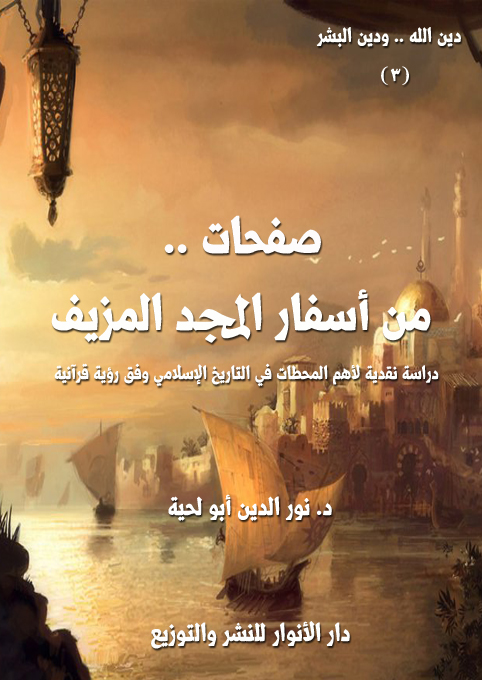

الكتاب: صفحات من أسفار المجد المزيف
الناشر: دار الأنوار للنشر والتوزيع
الطبعة: الأولى، 1439 هـ
عدد الصفحات: 393
ISBN: 978-620-3-85914-0
لمطالعة الكتاب من تطبيق مؤلفاتي المجاني وهو أحسن وأيسر: هنا

التعريف بالكتاب
يحاول هذا الكتاب ـ من خلال النماذج السبعة المختارة، ومن خلال العودة للمصادر التاريخية ـ أن يدرس الواقع الحقيقي لتلك الأمجاد التي يفتخر بها الكثير من الناس من غير وعي لحقيقتها المزيفة، والتي لم تزد المسلمين إلا تخلفا، ولم تزد القيم الإسلامية إلا تشويها.
وقد حاولنا أن تكون النماذج متفرقة، نتعلم من خلالها دراسة التاريخ وفق المنهج الإسلامي الأصيل، لا وفق ذلك المنهج التبريري الذي يحاول أن يضع ركاما من الرمال على أخطاء الملوك الذي سموا أنفسهم خلفاء.. وعلى أخطاء المستعمرين الذين سموا أنفسهم فاتحين.. وهذه النماذج السبعة هي:
لماذا يحب الصهاينة صلاح الدين الأيوبي.. ويتمنون عودته؟
هل كان هارون العباسي رشيدا.. أم سفيها؟
هل كان المتوكل ناصرا للسنة.. أم عدوا لها؟
هل كان دخول المسلمين إلى الأندلس فتحا؟
أيهما أكثر جرما: العثمانيون أم الصفويون؟
من أسقط بغداد: الخليفة أم وزيره؟
الملك العضوض.. والصياغة البشرية للدين
وقد اعتمدنا فيها جميعا المصادر التاريخية التي يعتمدها المتغنون بالأمجاد المزيفة، فلم نرجع لكتب المستشرقين، ولا الحداثيين، ولا غيرهم، بل اكتفينا بكل تلك المصادر التي يعتبرونها تجمع أحداث التاريخ الإسلامي بإنصاف واعتدال.
صفحات من أسفار المجد المزيف (6)
يحاول هذا الكتاب ـ من خلال النماذج السبعة المختارة، ومن خلال العودة للمصادر التاريخية ـ أن يدرس الواقع الحقيقي لتلك الأمجاد التي يفتخر بها الكثير من الناس من غير وعي لحقيقتها المزيفة، والتي لم تزد المسلمين إلا تخلفا، ولم تزد القيم الإسلامية إلا تشويها.
وقد دفعنا إلى ذلك عوامل كثيرة منها:
أولا ـ نحن مطالبون شرعا وأخلاقا بأن نشهد بالحق، ولو على أنفسنا، وألا نطفف في الموازين، وألا نحكم إلا بالمعايير التي رسمتها لنا الشريعة، وقد رأيت أن كل ذلك للأسف قد غُيب في التعامل مع الأحداث التاريخية، مثلما غيب في غيرها، ذلك أن أكثر المسلمين يتغنون بأمجاد شخصيات كانت ـ كما تنص المصادر التاريخية ـ ممتلئة بالفسوق والفجور وجميع أنواع الانحلال الأخلاقي، في نفس الوقت الذي تمارس فيه كل أنواع الاستبداد والظلم والتشويه للحقائق، ومع ذلك نجد اعتبار كتمان تلك الحقائق دينا وعدلا.
ولست أدري كيف يكون الكتمان الذي وقع فيه بنو إسرائيل ونهينا عنه دينا، في نفس الوقت الذي نشيع فيه جرائم غيرنا، ونفخر عليهم بأننا أفضل منهم، وكل ذلك تزوير وكذب، فما وقع فيه غيرنا، وقعت فيه أمتنا، وبصورة لا تقل شراسة..
ولذلك كان العدل يقتضي منا ـ كما أشعنا الجرائم التي أثبتها التاريخ لغيرنا ـ أن نشيع الجرائم التي أثبتها التاريخ لنا.. فنحن لسنا أمة معصومة، ومن الخطأ أن نتعامل مع غيرنا بذلك الكبرياء المزيف الذي يمكن لأي عاقل يعود للمصادر أن يكشفه بسهولة.
ثانيا ـ أني رأيت أن التاريخ الإسلامي ـ بدل أن يكون مجرد أحداث وقعت في زمن ما ـ أصبح دينا يتعبد به الناس، وأصبحت شخصياته رموزا مقدسة، وذلك ما جعل الدين الإلهي في خطر، لأن الآخر عندما ينظر إلى تاريخنا وسواده واستبداده، ثم يرى فخرنا به، يتصور أنه
صفحات من أسفار المجد المزيف (7)
حقيقة الدين الذي نؤمن به مع المسافة الشديدة بينهما، ولهذا أدرجنا الكتاب ضمن سلسلة [دين الله.. ودين البشر]، والتي تحاول التمييز بين دين الله الأصيل، وبين ما زاده البشر من تلقاء أنفسهم.
ثالثا ـ أن المصادر المقدسة أخبرت بالانحراف الذي ستقع فيه الأمة، مثلما وقعت فيه الأمم قبلها، ولذلك كان هذا الكتاب محاولة لإثبات ما ورد فيها حول الواقع التاريخي للأمة الإسلامية في فترة الملك العضوض، أو في الفترة التي تتخاذل فيها عن تنفيذ وصايا نبيها صلى الله عليه وآله وسلم، أو في الدورة التاريخية التي تتحرك فيها باجتهادها بعيدا عن الوحي..
ونحن لا نعتقد أن هذه الدورة هي نهاية تاريخ المسلمين، بل نعتقد
أنها تجارب في تاريخ المسلمين.. ليصلوا بعد تدبرها والاعتبار بها إلى تصحيح مسيرتهم وفق المنهج القرآني الأصيل، لا وفق ذلك التاريخ المزيف.
رابعا ـ أن النصوص المقدسة كما دعتنا إلى اعتماد الصدق في الأخبار، دعنا إلى الاعتبار بها، والاستفادة منها، ولذلك كان هذا الكتاب محاولة لعرض الأحداث التاريخية على المنهج القرآني في التعامل مع التاريخ.. بعيدا عن الهوى، وذلك الخيلاء الكاذب.
هذه أهم الدوافع التي جعلتنا نهتم بمثل هذه الأحداث التاريخية، والتي حاولنا أن تكون نماذج متفرقة، نتعلم من خلالها دراسة التاريخ وفق المنهج الإسلامي الأصيل، لا وفق ذلك المنهج التبريري الذي يحاول أن يضع ركاما من الرمال على أخطاء الملوك الذي سموا أنفسهم خلفاء.. وعلى أخطاء المستعمرين الذين سموا أنفسهم فاتحين.. وعلى أخطاء المجرمين الذين لبسوا لباس الإسلام، وهم يتصورون أنهم يدافعون عنه، بينما لهم يكن لهم من دور سوى تشويهه، وتحويله إلى الصورة التي نراه عليها اليوم.
وقد اخترنا هذه النماذج السبعة لتكون دليلا على غيرها، وقد عنوناها كما يلي:
1. لماذا يحب الصهاينة صلاح الدين الأيوبي.. ويتمنون عودته؟
2.
3.
صفحات من أسفار المجد المزيف (8)
4. هل كان هارون العباسي رشيدا.. أم سفيها؟
5. هل كان المتوكل ناصرا للسنة.. أم عدوا لها؟
6. هل كان دخول المسلمين إلى الأندلس فتحا؟
7. أيهما أكثر جرما: العثمانيون أم الصفويون؟
8. من أسقط بغداد: الخليفة أم وزيره؟
9. الملك العضوض.. والصياغة البشرية للدين
وقد اعتمدنا فيها جميعا المصادر التاريخية التي يعتمدها المتغنون بالأمجاد المزيفة، فلم نرجع لكتب المستشرقين، ولا الحداثيين، ولا غيرهم، بل اكتفينا بكل تلك المصادر التي يعتبرونها تجمع أحداث التاريخ الإسلامي بإنصاف واعتدال.
صفحات من أسفار المجد المزيف (9)
لماذا يحب الصهاينة صلاح الدين الأيوبي.. ويتمنون عودته؟
ليس القصد من هذا العنوان كما قد يتوهم البعض الإثارة، بل هو يعبر عن الحقيقة بأجلى معانيها، فالصهاينة والأمريكان والأوروبيون لا يحلمون بشيء كما يحلمون ببطل كرتوني كبير مثل صلاح الدين الأيوبي، ذلك أنه الوحيد الذي يحقق لهم أمجادهم وأحلامهم، وبأقصر الطرق، وأقل التضحيات.
ولذلك هم يرددون مع كل المغفلين الذين يسألون الله أن يعيد صلاح الدين الأيوبي إلى الحياة من جديد، مؤمّنين على دعائه.. فصلاح الدين هو حلمهم الأكبر الذي حاولوا أن يستعيدوه من خلال كل الأقزام الذين صنعوهم، وأمروهم على بلاد العالم الإسلامي، لكنهم لحد الآن لم يفلحوا في إيجاد شخص يقدم لهم من الخدمات ما قدمه صلاح الدين لهم.
وسأحاول هنا أن أخترق حجب الزمان الكاذبة، لأُدخل صلاح الدين من جديد إلى هذا العصر، وأري أولئك الذين يحلمون بعودته، ماذا سيفعل لهم وبهم، وطبعا لن أفتري عليه، بل سأحاول أن أرجع للمصادر المعتمدة.. لا تلك التي يعتمدها الروافض والمجوس.. كما يسمونهم.. وإنما أعتمد المصادر الممتلئة بتعظيم السنة، والتي يستدل بها أسود السنة ونمورهم.
طبعا.. سيكون أول إنجاز لصلاح الدين العائد من جديد هو تحرير القدس.. وهذا من المتفق عليه.. فلا يمكن أن يكون هناك صلاح للدين دون أن تكون هناك عودة للقدس.. فهو ما يجعل القلوب كلها تحن إليه وتعظمه وتذكره في صلاتها وأدعيتها..
لكن اصبروا.. فالعبرة بالخواتم، وقد أخبرنا رسول الله صلى الله عليه وآله وسلم، بل أقسم؛ فقال: (والذي لا إله غيره، إن أحدكم ليعمل بعمل أهل الجنة، حتى ما يكون بينه وبينها إلا ذراع، فيسبق عليه الكتاب فيعمل بعمل أهل النار فيدخلها، وإن أحدكم ليعمل بعمل أهل النار حتى ما يكون
صفحات من أسفار المجد المزيف (10)
بينه وبينها إلا ذراع، فيسبق عليه الكتاب فيعمل بعمل أهل الجنة فيدخلها) (1)
فلذلك اصبروا؛ فذلك الذي حرر مدينة واحدة، سيبيع مدنا كثيرة، وسيقسم أوطانا كثيرة، وستجري على يديه دماء كثيرة، لا دماء الصليبيين، وإنما دماء المسلمين.
1 ـ صلاح الدين.. وتحرير بلاد الإسلام من المسلمين
اصبروا لتسمعوا القصة إلى آخرها؛ فلا يصح أن نصفق للأمجاد قبل أن تكتمل.. فصلاح الدين الذي حرر القدس من الصليبيين هو نفسه الذي حرر بلادا كثيرة، ومدنا كثيرة من المسلمين.. وأسال دماءهم في الطرقات، ليروي ظمأه للسلطة والحكم وممارسة الاستبداد.
لقد ذكر ابن العماد الحنبلي.. ركزوا جيدا فهو حنبلي.. لا رافضي ولا مجوسي.. بعض البلاد التي حرر صلاح الدين منها المسلمين؛ فقال: (أول ما فتح الدّيار المصرية، والحجاز، ومكّة، والمدينة، واليمن من زبيد إلى حضرموت، متّصلاً بالهند، ومن الشام: دمشق، وبعلبك، وحمص، وبانياس، وحلب، وحماة. ومن الساحل: بلاد القدس، وغزّة، وتل الصافية، وعسقلان، ويافا، وقيسارية، وحيفا، وعكّا، وطبرية، والشّقيف، وصفد، وكوكب، والكرك، والشّوبك، وصيدا، وبيروت، وجبلة، واللّاذقية، والشّغر، وصهيون، وبلاطنس، ومن الشرق: حرّان، والرّها، والرّقّة، ورأس عين، وسنجار، ونصيبين، وسروج، وديار بكر، وميّافارقين، وآمد، وحصونها، وشهرزور، ويقال: إنه فتح ستين حصناً، وزاد على نور الدّين بمصر، والمغرب، والحجاز، واليمن، والقدس، والساحل، وبلاد الفرنج، وديار بكر، ولو عاش لفتح الدّنيا شرقاً وغرباً، وبعداً وقرباً، ولم يبلغ ستين سنة) (2)
طبعا هو سماها فتوحا، مع كونها بلادا إسلامية، وأهلها مسلمون.. لكنه سماها كذلك
__________
(1) رواه البخاري 11/ 417، ومسلم رقم (2643)
(2) شذرات الذهب في أخبار من ذهب 4/ 299..
صفحات من أسفار المجد المزيف (11)
لأنها أصبحت تحت سلطته وإمرته وملكه.. وهي بذلك دخلت الإسلام.. أما قبل ذلك؛ فقد كانت بلادا جاهلية.
هو فعل تماما ما كان يفعله آل سعود في دولتهم الأولى عندما كانوا يدخلون المدن، ويقتلون أهلها، ثم يذكر ابن غانم في تاريخ نجد أنهم كانوا يفتحونها.. ومثلما يفعلون الآن باليمن من تجويع وتقتيل وتدمير.. ثم يأتي الشعراء ليثنوا على جرائمهم، ويأتي رجال الدين، ليجعلوهم من العترة الطاهرة والصحابة السابقين، بل الأنبياء والمرسلين.
قد يحاول الكثير من الذين لم يحبوا أن تتشوه صورة البطل في عيونهم أن يصوروا تلك الجرائم بصورة مختلفة، ويذكروا أن صلاح الدين كان رحيما جدا، ولم يكن يقتل أحدا، وإنما كان يستلم المفاتيح ومعها الزغاريد والأهازيج، ولهذا سأنقل ما قال مؤرخ آخر هو أيضا من الطائفة المنصورة، وليس من الروافض ولا من المجوس.. وهو من المعاصرين لصلاح الدين الأيوبي.. لاشك أنكم تعرفونه.. إنه عز الدين أبوالحسن الجزري الموصلي (555 - 630 هـ) المعروف بـ[ابن الأثير الجزري]، ذلك المؤرخ الكبير، الذي كتب موسوعته الكبرى في التاريخ الإسلامي [الكامل في التاريخ]، كما كتب موسوعته الكبرى في أسماء الصحابة [أسد الغابة في معرفة الصحابة]
لقد قال ابن الأثير يصف منهجه في تحرير البلاد الإسلامية من المسلمين: (فغضب السودان الذين بمصر لقتل مؤتمن الخلافة حميّة، ولأنه كان يتعصّب لهم، فحشدوا وجمعوا، فزادت عدّتهم على خمسين ألفاً، وقصدوا حرب الأجناد الصلاحية، فاجتمع العسكر أيضاً، وقاتلوهم بين القصرين، وكثر القتل في الفريقين، فأرسل صلاح الدين إلى محلّتهم المعروفة بالمنصورة، فأحرقها على أموالهم وأولادهم وحرمهم، فلما أتاهم الخبر بذلك ولّوا منهزمين، فركبهم السيف، وأُخذت عليهم أفواه السكك، فطلبوا الأمان بعد أن كثر فيهم القتل، فأجيبوا إلى ذلك، فأُخرجوا من مصر إلى الجيزة، فعبر إليهم شمس الدولة تورانشاه أخو صلاح الدين
صفحات من أسفار المجد المزيف (12)
الأكبر في طائفة من العسكر، فأبادهم بالسيف، ولم يبق منهم إلا القليل الشريد) (1)
هذا موقف واحد من مواقف البطل.. نعم هو يشبه داعش تماما.. ولذلك داعش تحبه كثيرا.. ويحبه معهم كل مجرمي العالم، لأنهم لا يحبون حروبا بلا دماء.. بل كلما كثرت الدماء كلما كانت الحرب عندهم أحلى وألذ.. وخاصة إن كانت الدماء دماء مسلمين.
طبعا سيحاول العاشقون للبطل أن يبحثوا عن حلول لتلك المشكلة؛ فيصوروا الأمر بصورة أخرى.. يذكرون فيها أن تلك الدماء كانت ثمرة لتحقيق الوحدة الإسلامية، وأنه لا يمكن أن تتحقق الوحدة دون أن تسيل دماء.. هكذا قال صدام حسين حين راح يغزو إيران والكويت.. وهكذا قال قبله هتلر ونيرون.. وهكذا قال قبلهم فرعون الذي كان يقتل الرجال ويستحيي النساء، لأن وحدة مصر لن تتحقق من دون قتل كل صبي يمكن أن يتحول إلى معارض في المستقبل.
وهكذا قال دعاة الفتنة في سورية والعراق، والذين أرسلوا كل عشاق صلاح الدين الأيوبي من جميع أنحاء العالم ليحرروها من أهلها، لأن القدس عندهم لا تحتاج إلى تحرير، وإنما بلاد المسلمين هي التي تحتاج إلى تحرير.
وهكذا كان يفعل صلاح الدين الذي كان يحرر بلاد الإسلام من المسلمين، ليمكن لنفسه، ويزيد من مساحة الأرض التي يستحوذ عليها هو وبنو عمومته.
يقول مؤرخ آخر.. ليس رافضيا ولا مجوسيا.. هو عمر بن أحمد بن هبة الله المعروف بابن العديم (588 - 660 هـ) في كتابه عن تاريخ حلب: (وخاف صلاح الدين من نور الدين أن يدخل مصر فيأخذها منهم، فشرع في تحصيل مملكة أخرى لتكون عدّة له بحيث إن نور الدين إن غلبه على الديار المصرية سار هو وأهله إليها وأقاموا بها، فسيَّر أخاه الأكبر تورانشاه بإذن نور الدين له في ذلك، وسيَّره قاصداً عبد النبي بن مهدي، وكان دعا إلى نفسه، وقطع
__________
(1) الكامل في التاريخ 11/ 346.
صفحات من أسفار المجد المزيف (13)
خطبة بني العباس، فمضى إليها وفتح زبيد وعدن، ومعظم بلاد اليمن) (1)
فهذا النص مثال واحد عن ذلك الشغف بالسلطة، والذي جعله يحارب جميع الدول الإسلامية، لا لكونها كانت دولا مستبدة يريد أن ينشر فيها الديمقراطية والحرية، ولكن لكونها لم تكن تحت إمرته وسلطته وسطوته، وهو يريدها أن تكون كذلك.
2 ـ صلاح الدين.. وبيع فلسطين للصليبيين
لذلك استعمل كل الوسائل في حروبه.. وكان أبشع تلك الوسائل بيع فلسطين للصليبيين.. لا تتعجبوا.. فالذي حرر القدس هو نفسه الذي باع فلسطين.. فلذلك لا تلوموا السادات على معاهدته مع الكيان الصهيوني، ذلك أن جريمته في تلك المعاهدة، وذلك التطبيع، لا تساوي شيئا أمام ما فعله صلاح الدين الأيوبي.
لقد قال المؤرخ الكبير الدكتور حسين مؤنس (1911 - 17 1996 م) المصري ـ لا العراقي ولا الإيراني ـ: (ثم دخل الصليبيون في مفاوضات مع صلاح الدين انتهت بعقد صلح (الرملة)، الذي نصّ على أن يترك صلاح الدين للصليبيين شريطاً من الساحل، يمتد من صور إلى يافا، وبهذا العمل عادت مملكة بيت المقدس - التي انتقلت إلى طرابلس- إلى القوة بعد أن كانت قد انتهت، وتمكّن ملوكها من استعادة الساحل حتى بيروت.. وهنا وبعد عقد صلح الرملة اعتبر فيليب أغسطس أن مهمّته قد انتهت، وأنه برَّ بقسمه (أن يفتح الطريق إلى بيت المقدس)، وأقلع إلى بلاده من ميناء عكا في 8 يونيو 1192 م. أما ريتشارد فقد بقي في بلاد الشام، وأتمَّ الاستيلاء على الموانئ الواقعة جنوب عكا حتى عسقلان، ثم عقد صداقة مع صلاح الدين الذي اعتبره من أعاظم ملوك المسلمين، وأتمَّ حجَّه إلى بيت المقدس ووضع يده على قبرص.. وبذلك تكون معظم المكاسب التي حقَّقها صلاح الدين - فيما عدا استعادته
__________
(1) زبدة الحلب من تاريخ حلب: 357.
صفحات من أسفار المجد المزيف (14)
لبيت المقدس - قد ضاعت بسبب تنافس الأمراء الأيوبيين واختلاف كلمتهم) (1)
هذه شهادة هذا المؤرخ الكبير، والتي تدل عليها كل المصادر التاريخية، والتي ذكرنا سابقا بعضها، ولمن شاء المزيد يمكنه أن يقرأ ما قاله شيخ المؤرخين العرب [أحمد بن علي المقريزي] المعروف بـ[تقي الدين المقريزي] (764 هـ ـ 845 هـ)، فقد قال في كتابه المشهور [الفتح القسي في الفتح القدسي]، والذي أرخ فيه لبطولات صلاح الدين الأيوبي: (وعاد إلى القدس، وعقد الهدنة بينه وبين الفرنج مدّة ثلاث سنين وثلاثة أشهر، أوّلها حادي عشر شعبان، على أنّ للفرنج من يافا إلى عكا إلى صور وطرابلس وأنطاكية، ونودي بذلك، فكان يوماً مشهوداً) (2)
وقال عماد الدين الكاتب (519 هـ - 597 هـ) ـ مؤرخ وأديب وشاعر الدولة النورية والأيوبية والذي كان معاصراً لصلاح الدين ـ: (وجعل لهم من يافا إلى قيسارية، إلى عكاء إلى صور، وأبدوا بما تركوه من البلاد التي كانت معهم الغبطة والسرور، وأدخلوا في الصلح طرابلس وأنطاكية والأعمال الدانية والنائية) (3)
ألا ترون من خلال هذه النصوص الخدمات الكبيرة التي قدمها صلاح الدين الأيوبي للصليبيين مجانا.. وكل ذلك حتى يتاح له أن يحرر بلاد الإسلام من المسلمين.. ويجعلها في كنفه وسلطته، لكونه أكثر رحمة بها من غيره من الحكام.
وحتى نيسر فهم ما فعله صلاح الدين الأيوبي في ذلك الحين، ونطبقه على هذا الحين لأولئك الذين يريدون عودة صلاح الدين من جديد.. تصوروا لو أن حاكما قويا من حكام المسلمين أتيح له بطريقة ما أن يحرر القدس.. ثم بعد سنوات قليلة يسلم سورية ولبنان
__________
(1) أطلس تاريخ الإسلام: 269.
(2) المواعظ والاعتبار بذكر الخطط والآثار (خطط المقريزي) 3/ 409.
(3) الفتح القسي في الفتح القدسي: 316.
صفحات من أسفار المجد المزيف (15)
وفلسطين والعراق للصهاينة.. ثم يقوم بحرب على كل البلاد الإسلامية، فيدمرها جميعا، ويحولها إلى دويلات صغيرة تتصارع فيما بينها.. هل يمكن أن نعتبر هذا الحاكم حاكما صالحا، وهل ندعو الله أن يطيل عمره، لنذوق على يديه الكثير من كؤوس الألم والمعاناة.
تخيلوا الأمر فقط.. لتصابوا بعد ذلك بالغثاء.. فلعل ذلك الغثاء يزيل تلك الأوهام عن عقولكم.
3 ـ صلاح الدين.. وإجهاض مقاومة الصليبيين
ولم يكتف صلاح الدين بتلك الجرائم مع كثرتها، وإنما كان يستعمل كل الوسائل لإجهاض أي مقاومة ضد الصليبيين، إذا ما أدت تلك المقاومة إلى إدخال البلاد المحررة إلى حكم آخر غير حكمه.. وهو يفعله تماما أولئك الذين يرددون الآن، وبكل وقاحة: (لا نريد فلسطين تحررها حماس أو حزب الله، أو تشارك إيران في تحريرها).. ويقولون: (نقبل بفلسطين اليهودية، ولا نقبل بفلسطين الشيعية الإيرانية)
وهكذا فعل صلاح الدين الأيوبي تماما عندما أعطى الفرصة للصليبيين، ووقف في وجه الجيش الذي يريد مقاومتهم، بل كان سندا لهم ليستمر وجودهم، وقد ذكر ذلك كل المؤرخين.. لا الرافضة المجوس.. وإنما المؤرخون من أهل السنة والجماعة، والذين يعتمد عليهم الجميع في كتبهم التاريخية.
ومن الأمثلة على ذلك ما ذكره ابن الأثير في حوادث سنة 567 هـ؛ فقد قال: (في هذه السنة جرت أمور أوجبت أن تأثّر نور الدين من صلاح الدين، ولم يُظهر ذلك، وكان سببه أن صلاح الدين يوسف بن أيوب سار عن مصر في صفر من هذه السنة إلى بلاد الفرنج غازياً، ونازل حصن الشوبك (1)، وبينه وبين الكرك يوم، وحصره، وضيَّق على مَنْ به من الفرنج،
__________
(1) الشَّوْبَك: قلعة حصينة بأطراف الشام بين عمَّان وأيلة والقلزم قرب الكرك. (معجم البلدان 3/ 370)
صفحات من أسفار المجد المزيف (16)
وأدام القتال، وطلبوا الأمان، واستمهلوه عشرة أيام، فأجابهم إلى ذلك. فلما سمع نور الدين بما فعله صلاح الدين سار عن دمشق قاصداً بلاد الفرنج أيضاً؛ ليدخل إليها من جهة أخرى، فقيل لصلاح الدين: إن دخل نور الدين بلاد الفرنج وهم على هذه الحال: أنت من جانب ونور الدين من جانب، ملكها، ومتى زال الفرنج عن الطريق وأخذ ملكهم لم يبق بديار مصر مقام مع نور الدين، وإن جاء نور الدين إليك وأنت ههنا، فلا بد لك من الاجتماع به، وحينئذ يكون هو المتحكّم فيك بما شاء، إن شاء تركك، وإن شاء عزلك، فقد لا تقدر على الامتناع عليه، والمصلحة الرجوع إلى مصر. فرحل عن الشوبك عائداً إلى مصر، ولم يأخذه من الفرنج، وكتب إلى نور الدين يعتذر باختلال البلاد المصرية لأمور بلغتْه عن بعض شيعته العلويين، وأنهم عازمون على الوثوب بها، فإنه يخاف عليها من البعد عنها أن يقوم أهلها على من تخلّف بها، فيخرجوهم وتعود ممتنعة، وأطال الاعتذار، فلم يقبلها نور الدين منه، وتغيَّر عليه، وعزم على الدخول إلى مصر وإخراجه عنها) (1)
ومن الأمثلة عليها ما ذكره في حوادث سنة 568 هـ، فقد قال: (في هذه السنة في شوال رحل صلاح الدين يوسف بن أيوب من مصر بعساكرها جميعها إلى بلاد الفرنج يريد حصر الكرك، والاجتماع مع نور الدين عليه، والاتفاق على قصد بلاد الفرنج من جهتين، كل واحد منهما في جهة بعسكره. وسبب ذلك أن نور الدين لما أنكر على صلاح الدين عوده من بلاد الفرنج في العام الماضي، وأراد نور الدين قصد مصر وأخذها منه، أرسل يعتذر، ويعد من نفسه بالحركة على ما يقرِّره نور الدين، فاستقرّت القاعدة بينهما أن صلاح الدين يخرج من مصر، ويسير نور الدين من دمشق، فأيهما سبق صاحبه يقيم إلى أن يصل الآخر إليه، وتواعدا على يوم معلوم يكون وصولهما فيه، فسار صلاح الدين عن مصر لأن طريقه أصعب وأبعد وأشق، ووصل إلى الكرك وحصره. وأما نور الدين فإنه لما وصل إليه كتاب صلاح الدين برحيله من
__________
(1) الكامل في التاريخ 11/ 371.
صفحات من أسفار المجد المزيف (17)
مصر فرَّق الأموال، وحصَّل الأزواد وما يحتاج إليه، وسار إلى الكرك فوصل إلى الرقيم، وبينه وبين الكرك مرحلتان، فلما سمع صلاح الدين بقربه خافه هو وجميع أهله، واتّفق رأيهم على العود إلى مصر، وترك الاجتماع بنور الدين؛ لأنهم علموا أنه إن اجتمعا كان عزله على نور الدين سهلاً. فلما عاد أرسل الفقيه عيسى إلى نور الدين يعتذر عن رحيله بأنه كان قد استخلف أباه نجم الدين أيوب على ديار مصر، وأنه مريض شديد المرض، ويخاف أن يحدث عليه حادث الموت فتخرج البلاد عن أيديهم، وأرسل معه [من] التحف والهدايا ما يجل عن الوصف، فجاء الرسول إلى نور الدين وأعلمه ذلك، فعظم عليه وعلم المراد من العود، إلا أنه لم يُظهر للرسول تأثّراً، بل قال له: حِفْظُ مصر أهم عندنا من غيرها) (1)
ونفس الشيء ذكره في حوادث 569 هـ، وحينها ارتفع اللبس عن مقصد صلاح الدين من كل تلك التأجيلات، فقد قال ابن الأثير: (وكان نور الدين محمود بن زنكي قد شرع يتجهّز للدخول إلى مصر لأخذها من صلاح الدين يوسف بن أيوب، فإنه رأى منه فتوراً في غزو الفرنج من ناحيته، وكان يعلم أنه إنما يمنع صلاح الدين من الغزو الخوف منه ومن الاجتماع به، فإنه يؤثر كون الفرنج في الطريق ليمتنع بهم على نور الدين، فأرسل إلى الموصل وديار الجزيرة وديار بكر يطلب العساكر للغزاة، وكان عزمه أن يتركها مع ابن أخيه سيف الدين غازي صاحب الموصل بالشام، ويسير هو بعساكره إلى مصر، فبينما هو يتجهّز لذلك أتاه أمر الله الذي لا مردَّ له) (2)
هذه بعض النصوص التي تبين الهدف الأكبر الذي كان يدفع صلاح الدين في كل حروبه، وهو الذي يدفع كل المستبدين والظلمة في التاريخ.
ولذلك ليس لنا إلا أن نضحك ملء أفواهنا على تلك الأراجيف التي يرسلها الخطباء
__________
(1) المرجع السابق، 11/ 392.
(2) المرجع السابق، 11/ 402.
صفحات من أسفار المجد المزيف (18)
والوعاظ على منابر المساجد، وهم يرددون، والعبرات تخنقهم: (كونوا كصلاح الدين الأيوبي الذي لم يكن يبتسم، وكان يقول لمن يعاتبه في ذلك: كيف أبتسم والأقصى أسير؟.. والله إني لأستحيي من الله أن أبتسم وإخواني هناك يعذَّبون ويُقتلون.. كيف يطيب لي الفرح والطعام ولذة المنام، وبيتُ المقدس بأيدي الصليبيين؟)
أو كما عبر خطيب آخر، فقال: (سأحدثكم عن فارس شجاع.. فارس نبيل.. إذا أقسم أبر بقسمه.. فارس قلما يجود الزمان بامثاله.. إنه (صلاح الدين الأيوبى).. الفارس النبيل الذى كان يجلس ذات يوم مع رجاله يتسامرون.. فأطلق أحدهم طرفة تبسم لها كل من تواجد بالخيمة السلطانية إلا هو ظل متجهماً.. فوقفت الضحكات فى الأفواه.. وخيم الصمت المشوب بالرهبة.. وسأله أحدهم لماذا لم تضحك يا صلاح الدين؟.. وجاء الجواب.. قسم تزلزلت له القلوب.. واهتزت له جنبات الكون: (كيف أضحك أو أبتسم وبيت المقدس أسير.. يئن فى أسره.. أقسم بالله العظيم ألا أضحك أو أبتسم.. طالما ظل بيت المقدس أسيراً)، وقد أبر بقسمه.. وفك أسر بيت المقدس من أسره.. وارتسمت ابتسامة الرضا على وجهه.. وسجد شكراً.. لمن بيده ملكوت السموات والأرض سبحانه وتعالى.. وكم نحن فى أشد الحاجة لفارس مثله، ونحن نعيش فى زمان فرسان الوهم)
وراح آخر يزيد في القصيدة أبياتا كثيرة، فيرسم هذا المشهد الأسطوري، فيقول: (عندما كان صلاح الدّين الأيوبي صغيرا ويلعب مع الصّبية فى الشّارع شاهده أبوه فأخذه من وسط الأطفال ورفعه عاليًا بيديه، وكان أبوه رجلا طويل القامة، وقال له: (ما تزوجت أمك وما أنجبتك لكي تلعب مع الصبية، ولكن تزوجت أمك وأنجبتك لكي تحرّر المَسجد الأقصَى)، وتركه من يده فسقط الطفل على الأرض، فنظر الأب إلى الطفل فرأى الألم على وجهه فقال له: آلمتك السقطة، قال صلاح الدين: آلمتني! قال له أبوه: لِمَ لم تصرخ؟
صفحات من أسفار المجد المزيف (19)
فقال: ما كان لمحرر الأقصى أن يصرخ) (1)
وهكذا يضعون على لسانه ما شاءت لهم أهواؤهم من أحاديث، وكأنهم يتحدثون عن صلاح آخر، ربما يكون من الملائكة، وليس ذلك الصلاح الذي تحدث عنه المؤرخون، وأجمعوا على جرائمه في سبيل تحقيق نزوة التسلط والملك.
4 ـ صلاح الدين.. وتقسيم البلاد الإسلامية
لا بأس.. يمكنكم أن تدافعوا عن كل تلك الجرائم بما شئتم؛ فتذكروا ما تعودنا على سماعه من الخيارات التكتيكية والاستراتيجية، وأن الأمر مرتبط بالنواحي العسكرية، وأن ذلك البطل الذي حرر القدس يستحيل أن يحول دون تحرير غيرها.
لكن هل يمكنكم أن تفسروا لي ما قام به في آخر حياته؛ فهو لا يرتبط بخيارات عسكرية ولا سياسية.. ولا بالتكتيك، ولا بالاستراتيجية.. وإنما يرتبط بالبلاد الإسلامية التي يتوهم الكثير أن صلاح الدين قضى كل حياته من أجل توحيدها.. ثم ختمها بتمزيقها.. لأنه وحّدها أصلا من أجل نفسه، وعند موته راح يقسمها كما تقسم التركات على أصحاب الفروض والعصبات.
لا تتعجبوا من ذلك.. فهو قد قام بما عجز عنه مؤسس الدولة السعودية الحالية [عبد العزيز بن عبد الرحمن آل سعود]، والذي وزع الحكم على أولاده، بعد حكمه لأكثر من عشرين سنة، لكنه كان حكيما في توزيعه، فقد طلب منهم أن يتداولوا الحكم أخا بعد أخ.. لكن صلاح الدين لم يرضه هذا، وإنما راح يقطع بلاد الإسلام بين أولاده، ليملكوا جميعا، وفي نفس الوقت.
نعم هو قام بنفس ما قام به عبد العزيز آل سعود حين سمى المملكة السعودية باسمه، وحولها جميعا إلى ضيعة لأسرته.. لكن موقف صلاح الدين الأيوبي كان أخطر، ولهذا تمنى
__________
(1) انظر مقالا بعنوان: صلاح الدين.. علمهم سماحة الإسلام، محمد عطية، موقع صدى البلد، 23/مايو/2017..
صفحات من أسفار المجد المزيف (20)
الصليبيون والصهاينة وكل أشرار العالم أن يعود من جديد.
فلو أن الملك عبد العزيز بدا له أن يقوم بدور صلاح الدين عند كتابته لوصيته، فسيقسم مملكته التي قام بكل حروبه من أجل توسيعها بحسب عدد أولاده إلى ست وثلاثين قطعة.. ثم تقسم بعد ذلك، وفي مرحلة لاحقة، وبعد ولادة الأحفاد وأولادهم إلى مئات أو آلاف القطع، لأن عدد أمراء آل سعود في الفترة الحالية بلغ هذا العدد، وهو يتزايد كل حين.
هكذا فعل صلاح الدين الذي تتمنون عودته بالضبط.. وهذا ما ذكره مؤرخو الفرقة الناجية، لا الفرق الهالكة؛ فاقرأوا ما يقوله أبو الفداء إسماعيل بن عمر بن كثير الدمشقي (المتوفى: 774 هـ)، فلاشك أنكم تعرفونه، وتعرفون ميوله الأموية؛ وتعرفون شدة بغضه للرافضة، والفرق الهالكة؛ فقد قال يتحدث عن حكمة صلاح الدين الأيوبي في تقسيم مملكة الإسلام على أولاده، وعدله بينهم: (وكان قد قسَّم البلاد بين أولاده، فالديار المصرية لولده العزيز عماد الدين أبي الفتح، ودمشق وما حولها لولده الأفضل نور الدين علي، وهم أكبر أولاده، والمملكة الحلبيّة لولده الظاهر غازي غياث الدين، ولأخيه العادل: الكرك والشوبك وبلاد جعبر وبلدان كثيرة قاطع الفرات، وحماة ومعاملة أخرى معها للملك المنصور محمد بن تقي الدين عمر ابن أخي السلطان، وحمص والرحبة وغيرها لأسد الدين بن شيركوه بن ناصر الدين بن محمد بن أسد الدين شيركوه الكبير، نجم الدين أخي أبيه نجم الدين أيوب. واليمن بمعاقله ومخاليفه جميعه في قبضة السلطان ظهير الدين سيف الإسلام طغتكين بن أيوب، أخي السلطان صلاح الدين، وبعلبك وأعمالها للأمجد بهرام شاه بن فروخ شاه، وبصرى وأعمالها للظافر بن الناصر) (1)
وهذا ما ذكرته كل المصادر لا ابن كثير وحده، وقد نقل أقوالهم الدكتور حسين مؤنس، ثم قال متأسفا: (قسَّم صلاح الدين الامبراطورية ممالك بين أولاده وإخوته وأبناء أخويه، كأنها
__________
(1) البداية والنهاية 13/ 7.
صفحات من أسفار المجد المزيف (21)
ضيعة يملكها، لا وطناً عربيًّا إسلاميًّا ضخماً يملكه مواطنوه) (1)
5 ـ صلاح الدين.. والصراع بين البلاد الإسلامية
ولم يتوقف الأمر عند ذلك التقسيم، بل دب الشقاق بين الملوك الجدد، وراح كل واحد منهم يحلم بتوسيع مملكته، ليطبق ما فعله والده طول حياته.. وهو تحرير بلاد الإسلام من المسلمين الذين لا يخضعون لحكمه.. وسالت دماء جديدة.. وفرح الصليبيون كثيرا، وامتد حكمهم طويلا.
لا تتصوروا أن الأمر كان مرتبطا بدويلة صغيرة، مثل قطر أو البحرين أو الإمارات يمكن أن تتوحد في حال تقسيمها بطريقة ما.. الأمر أخطر من ذلك.. فصلاح الدين لم يقسم الإمارات فقط، وإنما قسم سورية ولبنان وفلسطين والأردن ومصر واليمن وغيرها..
كلها قسمها قبل سايكس بيكو، وإلى أجزاء أقل بكثير من تلك الأجزاء التي نلعن بسببها تقسيمات سايكس بيكو.. وللأسف فإن الذين يلعنون سايكس بيكو هم أنفسهم الذين يترحمون ويترضون على صلاح الدين، ويسألون الله أن يعيده من جديد، حتى تتحول بلاد الإسلام إلى قطع حلوى.
ولم يتوقف الأمر عند ذلك الحد، بل صار من أهل تلك القطع الممزقة من بلاد الإسلام من يطالب بعودة الصليبيين ليرحمهم من سيوف الأيوبيين، وصار من أولئك الأمراء من يتحالف مع الصليبيين ليحمي ملكه من جشع إخوانه وبني عمومته.
لقد ذكر كل المؤرخين هذا، فلا تتهربوا.. ولا تحاولوا أن تحتالوا على أنفسكم، فالحقيقة لا يمكن تغطيتها، ولا الهروب منها، فلكل جريمة آثارها..
لقد قال ابن كثير يذكر ذلك: (ثم شرعت الأمور بعد موت صلاح الدين تضطرب
__________
(1) عن كتاب: صلاح الدين الأيوبي بين العباسيين والفاطميين والصليبيين: 132.
صفحات من أسفار المجد المزيف (22)
وتختلف في جميع هذه الممالك) (1)
وقال بعض المعاصرين من المغرمين بصلاح الدين الأيوبي في مقال له بعنوان [وفاة صلاح الدين الأيوبي.. محرر القدس]: (ترك صلاح الدين بعد وفاته في عام (589 هـ) دولة واسعة الأرجاء، وسبعة عشر ولدًا وبنتًا واحدة، وكان صلاح الدين قد وزَّع خلال حياته السياسية البلاد الواقعة تحت سيطرته على أفراد عائلته؛ مانحًا إياهم سلطات فعلية لممارسة السيادة؛ فتقاسم هؤلاء التركة الصلاحية بعد وفاته في ظل ما حدث من المؤامرات والحروب بينهم، إذ أن كلاًّ منهم يطمع في أن يكون نصيبه يضارع نصيب جاره أو يفوقه، بالإضافة إلى تَزَعُّمِ العائلة الأيوبية) (2)
ثم ذكر هذا المغرم العاشق لصلاح الدين محرر القدس بعض ما حصل بعد وفاته، فقال: (وقد أخذت الجبهة الإسلامية في التداعي بعد وفاة صلاح الدين عام (589 هـ)، ولم تلبث أن نشبت حرب الوراثة بين أبناء البيت الأيوبي، فاتفق أمراء الشام على ألا يعترفوا بسيادة العزيز عثمان صاحب مصر الذي اتصف بالطموح السياسي، وزعم أن له السيادة عليهم جميعًا، وكان هذا الرفض نابعًا من أهمية دور دمشق في توجيه السياسة الأيوبية، غير أن الأفضل عليّ صاحب دمشق اتصف بسوء السيرة؛ فقد احتجب عن الرعية، واشتغل بلهوه مما أدى إلى كراهية الناس له؛ فقد وضع ثقته في وزيره ضياء الدين بن الأثير، فأساء التصرف في أمور الرعية، وخالف نهج والده في الحكم؛ فأقصى أمراء والده ومستشاريه بتأثير من وزيره؛ فهرب هؤلاء إلى القاهرة مستنجدين بالعزيز عثمان الذي رفعهم وأعزهم، فالتفوا من حوله، واعترفوا به زعيمًا على الأيوبيين) (3)
__________
(1) البداية والنهاية 13/ 7.
(2) وفاة صلاح الدين الأيوبي.. محرر القدس، د. راغب السرجاني، موقع قصة الإسلام، 15/ 03/2011.
(3) المرجع السابق.
صفحات من أسفار المجد المزيف (23)
وهكذا ذكر كل المؤرخين تلك الجرائم التي حصلت في جميع البلاد الإسلامية بسبب تنافس الأسرة الأيوبية على الحكم، اقتداء منها بسنة صلاح الدين، وما قام به من حروب لأجل السلطة.
ومن الأمثلة على ذلك الصراع الذي راح فيه عشرات آلاف من قتلى المسلمين، ما عبر عنه المقريزي بقوله: (وتنكر ما بينه [يعني الملك العزيز عماد الدين أبو الفتح عثمان] وبين أخيه الأفضل، فسار من مصر لمحاربته، وحصره بدمشق، فدخل بينهما العادل أبو بكر، حتى عاد العزيز إلى مصر على صلح فيه دخل، فلم يتم ذلك، وتوحّش ما بينهما، وخرج العزيز ثانياً إلى دمشق، فدبّر عليه عمّه العادل حتى كاد أن يزول ملكه وعاد خائفاً، فسار إليه الأفضل والعادل حتى نزلا بلبيس، فجرت أمور آلت إلى الصلح، وأقام العادل مع العزيز بمصر، وعاد الأفضل إلى مملكته بدمشق، فقام العادل بتدبير أمور الدولة، وخرج بالعزيز لمحاربة الأفضل، فحصراه بدمشق حتى أخذاها منه بعد حروب، وبعثاه إلى صرخد، وعاد العزيز إلى مصر، وأقام العادل بدمشق حتى مات العزيز في ليلة العشرين من محرّم سنة خمس وتسعين وخمسمائة، عن سبع وعشرين سنة وأشهر، منها مدّة سلطنته بعد أبيه ست سنين تنقص شهراً واحداً، فأقيم بعده ابنه السلطان الملك المنصور ناصر الدين محمد، وعمره تسع سنين وأشهر بعهد من أبيه، وقام بأمور الدولة بهاء الدين قراقوش الأسدي الأتابك، فاختلف عليه أمراء الدولة، وكاتبوا الملك الأفضل علي بن صلاح الدين، فقدم من صرخد في خامس ربيع الأوّل، فاستولى على الأمور، ولم يبق للمنصور معه سوى الاسم، ثم سار به من القاهرة في ثالث رجب يريد أخذ دمشق من عمّه العادل بعدما قبض على عدّة من الأمراء، وقد توجه العادل إلى ماردين، فحصر الأفضل دمشق، وقد بلغ العادل خبره فعاد وسار يريده حتى دخل دمشق، فجرت حروب كثيرة آلت إلى عود الأفضل إلى مصر بمكيدة دبّرها عليه العادل، وخرج العادل في أثره، وواقعه على بلبيس
صفحات من أسفار المجد المزيف (24)
فكسره في سادس ربيع الآخر سنة ست وتسعين) (1)
أظن أن تحليل هذا النص وحده كاف للتعريف بتلك الآثار التي خلفها البطل الكبير صلاح الدين الأيوبي في البلاد الإسلامية.. وحتى تفهموا كيف وصلت شهوة السلطة لدى أسرة صلاح الدين أعيدوا قراءة هذه العبارة التي ذكرها المقريزي: (وأقام العادل بدمشق حتى مات العزيز.. فأقيم بعده ابنه السلطان الملك المنصور ناصر الدين محمد، وعمره تسع سنين وأشهر بعهد من أبيه)
هل هذا هو الحكم الإسلامي يا من تتغنون كل حين بصلاح الدين، وتطلبون عودته، وتطلبون معه عودة الشريعة الإسلامية للحكم.. هل أوصانا رسول الله صلى الله عليه وآله وسلم بأن نبايع لابن تسع سنين، إرضاء لوالده.. ونقيم الحروب من أجل حماية عهدنا وبيعتنا؟
ألم يعتبر رسول الله صلى الله عليه وآله وسلم كل ذلك من الحكم الظالم المستبد، فقد ورد في الحديث الشريف: (إذا اقترب الزمان كثر لبس الطيالسة وكثرت التجارة وكثر المال وعظم رب المال وكثرت الفاحشة وكانت إمرة الصبيان) (2)؟
6 ـ صلاح الدين.. وإعادة القدس للصليبيين
لا أريد بعد كل هذا أن أنسى دور صلاح الدين الأيوبي في تحرير القدس؛ فنحن مطالبون بأن نشهد بالعدل، وقد قال تعالى: {يَاأَيُّهَا الَّذِينَ آمَنُوا كُونُوا قَوَّامِينَ لِلَّهِ شُهَدَاءَ بِالْقِسْطِ وَلَا يَجْرِمَنَّكُمْ شَنَآنُ قَوْمٍ عَلَى أَلَّا تَعْدِلُوا} [المائدة: 8]
ولكن العدل كذلك يقتضي منا أن نذكر الحقائق بكل أجزائها وتفاصيلها، وألا ندع الأهواء تتحكم فينا؛ فنختار من الفلم أجمل أجزائه، ونقص ما بقي منه، لنحافظ على صورة البطل في أذهان المغرمين بالأمجاد الكاذبة.
__________
(1) المواعظ والاعتبار في الخطط والآثار (خطط المقريزي) 3/ 409.
(2) رواه الطبراني في الأوسط، (مجمع الزوائد) (7/ 274)
صفحات من أسفار المجد المزيف (25)
وهذا ما حصل بالضبط، فعشاق صلاح الدين الأيوبي المطالبين بعودته، راحوا يقصون كل أجزاء الفلم التي تذكر عودة الصليبيين للقدس بعد وفاته، وبعد أداء أدواره التخريبية في العالم الإسلامية.
وقد عادوا إليها أشرس ما كانوا، بسبب الخطط الاستراتيجية التي وضعها صلاح الدين الأيوبي، والتي تمكن لهم عودة آمنة وقوية، بعد أن تحررت منهم لسنين معدودة.
لقد عادوا إليها ـ كما يذكر المؤرخون ـ من دون حرب، بعد أن أهداها لهم السلطان الكامل ابن أخي صلاح الدين، والذي تولى حكم مصر سنة 615 هـ، وذلك بعد أن خشي أن يسلبوه حكمه على مصر، فاتصل بهم ليفاوضهم، وعرض عليهم أن يتنازل عن بيت المقدس مقابل أن يخرجوا من دمياط.
وطبعا لم يتردد الامبراطور الصليبي فريدريك في قبول هذا العرض السخي، لكن البابا في روما رفض العرض، ووبخ الامبراطور فريدريك على قبوله.. فتنازل السلطان الأيوبي، وقدم عرضا أسخى، وهو أن يتنازل عن نابلس وصيدا وعسقلان وطبرية واللاذقية وسائر المدن الساحلية التي حررها صلاح الدين الأيوبي..
وهكذا كانت البلاد الإسلامية يتلاعب بها الملوك والبابوات، الذين لا يزال يلعنهم أئمة المسلمين في مساجدهم، ويدعون الله أن يزلزل الأرض من تحتهم، ويجمد الدماء في عروقهم، لكنهم ينسون أن يدعوا على كل من تسبب في كل ذلك الخنوع، وتلك المذلة، بل إنهم بدل أن يلعنوه، ويلعنوا ما فعله بالأمة الإسلامية، يترضون عنه، ويمجدونه، ويمجدون معه كل الظلمة.. وينسون أن يذكروا ولو بكلمة حزن وألم أولئك المستضعفين الذين كتب عليهم أن يعيشوا بين مطرقة الصليبيين، وسندان الأيوبيين أو غيرهم من المستبدين.
لقد ذكر ابن الأثير كيف تحولت أفراح أولئك المستضعفين من المسلمين إلى أحزان، بعد أن عاد الصليبيون إلى القدس من جديد، وسكنوا مساكنهم التي أفنوا أعمارهم في بنائها،
صفحات من أسفار المجد المزيف (26)
وامتلكوا بساتينهم التي قضوا حياتهم جميعا في استصلاحها وزراعتها؛ فقال: (وتسلم الفرنج البيت المقدس، واستعظم المسلمون ذلك وأكبروه، ووجدوا له من الوهن والتألم ما لا يمكن وصفه) (1)
ووصفه المقريزي، فقال: (ونودي في القدس بخروج المسلمين منه وتسليمه إلى الفرنج، فكان أمرا مهولا من شدّة البكاء والصراخ، وخرجوا بأجمعهم فصاروا إلى مخيم الكامل وأذنوا على بابه في غير وقت الأذان، فشق عليه ذلك وأخذ منهم الستور وقناديل الفضة والآلات وزجرهم، وقيل لهم امضوا حيث شئتم، فعظم على المسلمين هذا وكثر الإنكار على الملك الكامل وشنعت المقالة فيه) (2)
ووصفه بعض المؤرخين المعاصرين (3)، فقال: (أثار تسليم مدينة القدس للفرنجة موجة عارمة من السخط والأسى في العالم الإسلامي. وكانت ردة الفعل شديدة، خصوصاً عند أهل المدينة، ولعل من المفارقة أن نشير إلى ما أحدثه تسليم مدينة القدس وإعادتها إلى حظيرة المسيحية من استنكار واستياء يصل إلى درجة الغضب لدى الأوساط الفرنجية، الدينية منها والدنيوية في بلاد المشرق، فرأى بعضهم أن كرامة النصرانية كانت تقضي بأن تنتزع المدينة عنوة بحد السيف من أيدي المسلمين لا عن طريق التذلل التي توسل بها الإمبراطور إلى الملك الكامل، وكانوا يرون أن استيلاء الصليبيين على المدينة دون استيلائهم على مقدسات المسلمين أمر مرفوض لا تقبل به نفوس الفرنجة الأبية، وذهبت فئة صليبية أخرى إلى القول إن الحصول على القدس من دون استعادة الكرك والشوبك والأردن لا قيمة له، ولو كان هذا مقبولاً لقبل
__________
(1) الكامل في التاريخ (10/ 435)
(2) المواعظ والاعتبار بذكر الخطط والآثار (4/ 222)
(3) هو الدكتور خليل عثامنة، المؤرخ الإسلامي الفلسطيني وأستاذ التاريخ بجامعة (بير زيت) الفلسطينية، في كتابه (فلسطين في العهدين الأيوبي والمملوكي).
صفحات من أسفار المجد المزيف (27)
الصليبيون ما عرضه عليهم المسلمون أيام حصار دمياط) (1)
وقد وصف قبل ذلك دور صلاح الدين في إعادتها للصليبيين، بعد أن حررها منهم؛ فقال: (إذا كان تنافس أبناء صلاح الدين في شأن المُلك دفعهم للبحث عن مهادنة الفرنجة في فلسطين، وأدى أحياناً إلى محاولة الاستعانة بهم للتصدي بعضهم لبعض، فإن الأمر بلغ ذروة غير مسبوقة في عهد الملوك من أبناء الملك العادل الأيوبي، إذ لم تقتصر علاقتهم بالفرنجة الجاثمين على أرض فلسطين ولبنان وسوريا على المسالمة والمهادنة فحسب، بل تعدت ذلك أيضاً إلى التخلي عن فريضة الجهاد ضد الأوروبيين الغزاة، والتي لولاها لما وضعوا التيجان على رؤوسهم وتربعوا على عروش مصر وبلاد الشام، إذ بات أبناء الملك العادل وورثة عرشه يرون في الفرنجة قوة سياسية إقليمية لا يتورعون عن مهادنتها والتحالف معها مقابل تنازلات إقليمية من دار الإسلام، إما ثمناً للحفاظ على عروشهم وكراسيهم، وإما تعززاً بهم لتصفية الحسابات الصغيرة فيما بينهم، وإما لتحقيق مطامح إقليمية في دول بعضهم البعض) (2)
أظن أن هذه الاقتباسات من المصادر التاريخية المعتمدة لدى عشاق صلاح الدين والمطالبين بعودته وحدها كافية لإعادة الوعي، وترك ذلك التغني بالأمجاد الكاذبة، بل ذلك المديح الذي يكال للمستبدين والظلمة، والذين أمرنا بالإنكار عليهم أحياء وأمواتا، كما قال تعالى: {وَلَا تَرْكَنُوا إِلَى الَّذِينَ ظَلَمُوا فَتَمَسَّكُمُ النَّارُ وَمَا لَكُمْ مِنْ دُونِ اللَّهِ مِنْ أَوْلِيَاءَ ثُمَّ لَا تُنْصَرُونَ} [هود: 113]
7 ـ صلاح الدين.. والشؤون الداخلية للدولة
لم تكن تلك جرائم صلاح الدين الأيوبي وحدها.. فلا يمكننا في هذا المقال القصير أن
__________
(1) فلسطين في العهدين الأيوبي والمملوكي، خليل عثامنة، مؤسسة الدراسات الفلسطينية، ص 137.
(2) المرجع السابق، ص 136.
صفحات من أسفار المجد المزيف (28)
نعدد ما ارتكبه من جرائم، ولكنا نشير فقط إلى أمهاتها وأخطرها، والمشكلة في تهوين تلك الجرائم هو عدم كوننا قد عشنا تلك الفترة، ولم نكتو بنيرانها، ولو أنا كنا كذلك، لكان موقفنا مختلفا تماما.
ولذلك نحاول أن نتقمص بعض رعية ذلك العصر، لنعيش المأساة التي عاشوها، وهم في كل لحظة يحملون أبناءهم على أكفهم ليقدموهم لصلاح الدين أو إخوته أو أبنائه، لا ليقدموا أرواحهم في سبيل الله، ويطردوا المعتدين الصليبيين من بلادهم، وإنما ليقدموهم فداء للسلطان المبجل، وإرضاء لغريزته في التسلط، والإستحواذ على أكثر المناطق.
ولم يكن السلطان صلاح الدين يكتفي منهم بذلك.. بل إنه قام باستعباد الفلاحين الأحرار، كما ذكر المقريزي ذلك، فقال: (ويسمى المزارع المقيم بالبلد: فلاحا قرارا، فيصير عبدا قنا لمن أقطع تلك الناحية إلا أنه لا يرجو قط أن يباع ولا أن يعتق بل هو قنّ ما بقي، ومن ولد له كذلك، بل كان من اختار زراعة أرض يقبلها كما تقدّم، وحمل ما عليه لبيت المال، فإذا صار مال الخراج بالديوان أنفق في طوائف العسكر من الخزائن) (1)
وقد ذكر الدكتور حسين مؤنس بعض ما فعله صلاح الدين من جرائم في حق عامة الناس؛ فقال: (وكانت مشاريعه ومطالبه متعدّدة لا تنتهي، فكانت حاجته للمال لا تنتهي أيضاً، وكان عُمّاله وجباته من أقسى خلق الله على الناس، ما مرّ ببلد تاجر إلا قصم الجُباة ظهره، وما بدت على إنسان علامة من علامات اليسار، إلا أُنذِر بعذاب من رجال السلطان، وكان الفلاحون والضعفاء معه في جُهد، ما أينعت في حقولهم ثمرة إلا تلقّفها الجباة، ولا بدت سنبلة قمح إلا استقرت في خزائن السلطان، حتى أملق الناس في أيامه، وخلّفهم على أبواب محن ومجاعات حصدت الناس حصدا) (2)
__________
(1) المواعظ والاعتبار بذكر الخطط والآثار (1/ 161)
(2) صلاح الدين الأيوبي بين العباسيين والصليبيين: 157.
صفحات من أسفار المجد المزيف (29)
مع العلم أن حسين مؤنس ليس مثل يوسف زيدان أو غيره من الذين يعتبرون صلاح الدين مجرما من مجرمي العالم الكبار، بل هو يدافع عنه، ويحاول أن يسوغ ما أطاق جرائمه، ليخففها، أو يجعل لها بعض القابلية.
وزيادة على ذلك كله، فقد قام ـ بواسطة وزيره الذي عينه نائبا عنه على مصر بهاء الدين قراقوش ـ بتكليف الرعية بهدم العديد من الأهرامات الصغيرة، وحمل حجارتها لبناء قلعة القاهرة وأسوار عكا وغيرها، مثلما فعل الفراعنة تماما حينما كلفوا المصريين بحمل الحجارة على ظهورهم لبناء تلك الأهرامات.
وقد ذكر ذلك المقريزي، فقال: (اعلم أنّ الأهرام كانت بأرض مصر كثيرة جدّا، منها بناحية بوصير شيء كثير، بعضها كبار، وبعضها صغار، وبعضها طين ولبن، وأكثرها حجر، وبعضها مدرج، وأكثرها مخروط أملس، وقد كان منها بالجيزة تجاه مدينة مصر، عدّة كثيرة كلها صغار هدمت في أيام السلطان صلاح الدين يوسف بن أيوب على يد قراقوش، وبنى بها قلعة الجبل والسور المحيط بالقاهرة، ومصر والقناطر التي بالجيزة) (1)
وهذه جريمة لا ترتبط بأولئك المستضعفين الذين حملوا تلك الحجارة على ظهورهم فقط، وإنما تشير إلى جرائمه في حق الثقافة والتراث الإنساني.. ولو أن عمره امتد لقضى على كل الآثار التاريخية في مصر، ونقل كل الأهرامات، ولم تعد مصر تلك التي نعرفها، والتي حفظت الأهرام وغيرها من آثارها الكثير من تاريخها، بل تاريخ الإنسانية جميعا.
8 ـ صلاح الدين.. والشؤون الدينية والثقافية
أما جرائم صلاح الدين في حق الثقافة والدين؛ فلا عد لها ولا حصر، ذلك أنه حاصر
__________
(1) المواعظ والاعتبار بذكر الخطط والآثار (1/ 210)، وذكره أيضا: عبد اللطيف البغدادي في كتابه (الإفادة والاعتبار في الأمور والمشاهدات والحوادث المعاينة بأرض مصر)
صفحات من أسفار المجد المزيف (30)
الثقافة والمثقفين، ونكل بهم، وأحرق الكتب، وقام بحرب طائفية خطيرة كانت أسوأ نموذج للحكم الإسلامي.
وقد أشار محمد كامل حسين إلى بعض جرائمه في هذا الجانب، فقال: (وكانت الحياة في مصر الفاطمية كما رأينا جانباً منها تدعو إلى ازدهار الشعر وإلى كثرة ما أنتجه الشعراء في كل فن من فنون الشعر وكل موضوع من موضوعاته، ولكن هذه الموجة الفنية التي طغت على مصر، سرعان ما أبادها الأيوبيون فيما أبادوه من تراث هذا العصر الذهبي في تاريخ مصر الإسلامية، فضاع الشعر ولم يبق منه إلا اسم الشاعر أحياناً إن قُدِّر لاسمه البقاء، ونحن لا نتردّد في اتّهام الأيوبيين بجنايتهم على تاريخ الأدب المصري؛ لتعمدهم أن يمحوا كل أثر أدبي يمت للفاطميين بصلة، فقد أحرقوا كتبهم بما فيها من دواوين الشعر خوفاً من أن يكون بالشعر مديح للأئمة وهو كفر بزعمهم.. فضاع أكثر شعر مصر الفاطمية بسبب هذا التعصب المذهبي) (1)
وأشار باحث معاصر آخر إلى بعض تلك الجرائم؛ فقال: (إن صلاح الدين الأيوبى دمر مصر كلها، ولم يقم بتدمير تاريخ الفاطميين والشيعة فقط، حيث إن تدميره لمكتبة دار الحكمة والتي كانت تحوى أكثر من مليوني كتاب، وبيعه لكتب الفاطميين بالبخس يعد بمثابة جريمة حضارية في حق المصريين جميعاً، كما قام ذاك المجرم بهدم أهرامات الجيزة، والتي كان عددها 18 هرماً بجوار الأهرامات الثلاثة الموجودة حالياً، والتي لم يتمكن من هدمها) (2)
وقال آخر بعد أن ذكر بعض مظاهر جرائمه في حق الثقافة: (ولكن ما يهم في الخبر هو إحراقه لمكتبة دار الحكمة والتي احتوت على مليوني كتاب، بما فيها من كنوز ونفائس علمية وفلسفية لا تقدر بثمن وهذا بحد ذاته جريمة حرب لا تختلف كثراً عما فعله التتار في بغداد
__________
(1) في أدب مصر الفاطمية: 168.
(2) انظر مقالا بعنوان: صلاح الدين الأيوبي كمجرم حرب، نضال نعيسة، الحوار المتمدن، 2010/ 12 / 27..
صفحات من أسفار المجد المزيف (31)
حين رموا بكل كتبها ونفائسها الفكرية في نهر دجلة الذي يقال بأنه بقي سبعة أيام أسود اللون بسبب حبر الكتب التي صبغته وتعبيراً رمزياً عن حزن أنهر على تلك الجريمة التتارية الهمجية) (1)
ثم تساءل بصدق قائلا: (ماذا تفرق جريمة صلاح الدين عن جريمة التتار؟.. وهل جرائمه مباحة وجرائم الغير مدانة؟.. لماذا ندين التتار ونشتمهم ليل نهار، ونمجد هذا المجرم وننتج عنه مسلسلات تضعه في مراتب قدسية بين الناس؟.. ولماذا لا ننتج نفس المسلسلات عن هولاكو وتيمورلنك باعتبار أن ما فعلوه لا يختلف كثيراً عما فعله هذا المجرم الأفاك السفاك للدماء؟ كما أن تدميره لمعالم حضارية وأوابد تاريخية عظيمة كأهرامات مصر، يعتبر جريمة حرب موصوفة وبربرية وهمجية ضد الإنسانية، باعتبارها أصناماً، ومعالم حضارية، وكلنا علم ودراية بحقد وكراهية واحتقار الثقافة البدوية لكل ما هو حضاري وجمالي وشريف ونبيل، وليأتي بعد حاولي ثمانية قرون من الزمن من يقلده في ذلك من أحفاده من الطالبان في تدمير تماثيل بوذا في باميان في العام 2000) (2)
وما ذكره الباحث صحيح بالنسبة للذين يستعملون معايير واحدة في مناقشة القضايا، ولا يطففون الموازين، أما الذين لا يفعلون ذلك؛ فهم متناقضون لدرجة لا يمكن تصورها، حيث أنهم يمدحون شخصا بما يذمون به غيره، وهذا ما أدى إلى انفصام في شخصية من يحاول إقناع عقله بالمتناقضات.. ففي الوقت الذي يزعمون فيه أن الإسلام دين رحمة، يقدمون للتعريف به كل أنواع الوحشية والقسوة التي ورثوها من الشخصيات التي عاشوا حياتهم كلها يدافعون عن جرائمها.
يقول نفس الكاتب معلقا على تلك الجرائم الثقافية التي ارتكبها صلاح الدين: (لا
__________
(1) المرجع السابق.
(2) المرجع السابق.
صفحات من أسفار المجد المزيف (32)
يمكن تبرير وتجميل وتقديس كل ذاك القتل والإجرام والتدمير والحرق والسحل والهمجية وزهق الأرواح لأي كان وتحت أية ذريعة، ولا يمكن النظر إليه، وفق مبدأ وحدة المعايير القيمية والأخلاقية، إلا وفق إجرام متأصل ونفوس مأزومة ومنحرفة وشاذة ومريضة عندها عشق غريب لرائحة الدم ونزوع فطري وشبق حسي لسماع أنين الأرواح المزهوقة والنفوس المسحوقة، ولا يجب استثناء أي كان منها، وإلا لوجب علينا أيضاً تصديق مزاعم ومبررات كل القتلة والسفاحين ومجرمي الحرب الكبار في التاريخ من قابيل وحتى ميلوزوفيتش) (1)
وفوق ذلك كله قام صلاح الدين بإحياء سنة قتل المفكرين والفلاسفة والباحثين الذين يختلف معهم، ولذلك نال اهتماما من السلفيين والحركيين الذين لا يؤلمهم شيء، كما تؤلمهم الحرية الفكرية، وقد قال بعض هؤلاء يشيد بجرائمه في هذا المجال في مقال تحت عنوان [صلاح الدين يقتل السهرَوردي الزنديق]: (لصلاح الدين الأيوبي الكثير من الأعمال والفضائل منها ما هو عسكري، ومنها ما هو ديني وثقافي، وغير ذلك، وإذا كانت شخصية صلاح الدين انطبعت في ذهن الناس بمظهر العسكري والمجاهد، الذي يقارع الصليبيين، ويفتح البلدان وخاصة بيت المقدس، ويدافع عن بلاد المسلمين، فإن جوانب أخرى في شخصية صلاح الدين جديرة بالدراسة والتأمل.. إحدى تلك الجوانب تتمثل باهتمامه بنشر مذهب أهل السنة، وإقامة المدارس والأوقاف لذلك، خاصة في مصر، التي عانت أكثر من قرنين من الزمان من حكم الدولة العبيدية الفاطمية، وهي دولة شيعية إسماعيلية. ومع حرص صلاح الدين على مذهب أهل السنة، ومحاربة ضلالات العبيديين، اهتم بمحاربة الأفكار المنحرفة المنضوية تحت لواء أهل السنة، كما تمثل ذلك في مصادقته على حكم الإعدام بحق أحد الزنادقة المتصوفة، المعروف بالسهروردي المقتول سنة 587 هـ) (2)
__________
(1) المرجع السابق.
(2) انظر مقالا بعنوان: صلاح الدين يقتل السهرَوردي الزنديق، مجلة الراصد، العدد التاسع والثلاثون - رمضان 1427 هـ.
صفحات من أسفار المجد المزيف (33)
وهكذا أصبح قتل الفلاسفة والمفكرين منقبة من المناقب، وكيف لا تكون كذلك، وهم ورثوا من أسلافهم من الفئة الباغية تلك الجرائم التي يندى لها الجبين في قتل المثقفين بحجة الردة والزندقة.
وقد ذكر صلاح الدين خليل بن أيبك الصفدي (المتوفى: 764 هـ) الجنابة التي جناها السهروردي على نفسه عندما حدثها بالجلوس إلى أولئك الظلمة، فقال: (ودخل ـ أي السهروردي ـ إلى حلب، واجتمع بالظاهر غازى ابن صلاح الدين، واستماله، وأراه أشياء، فارتبط عليه؛ فبلغ الخبر صلاح الدين، فكتب إليه يأمره بقتله ـ طبعا من دون محاكمة ـ وصمم عليه، فاعتقله في قلعة حلب؛ فلما كان يوم الجمعة بعد الصلاة سلخ ذي الحجة سنة سبع وثمانين وخمس ماية أخرجوه ميتا من الحبس؛ فتفرق عنه أصحابه، وقيل صلب أياما) (1)
أي أنه قتله بإحدى الطريقتين: إما صبرا بحبسه وتجويعه إلى أن مات حتف أنفه، وإما بصلبه.. والعجيب أن هؤلاء الذين يروون هذه القتلة البشعة التي قتل بها السهروردي هم أنفسهم الذين يروون قوله صلى الله عليه وآله وسلم: (عُذّبت امرأة في هرّة، سجنتها حتى ماتت، فدخلت فيها النار؛ لا هي أطعمتها، ولا سقتها إذ حبستها، ولا هي تركتها تأكل من خشاش الأرض) (2)
وهكذا فعل صلاح الدين وابنه بالسهروردي، والذي ذكر المؤرخون أنه بعد أن عاين ما عاين من تلك القلوب القاسية راح يردد نادما:
أرى قدمى أراق دمي.. وهان دمي فها ندمي
إلى حتفي سعى قدمي.. أرى قدمي أراق دمي
فلم أنفك من ندم.. وليس بنافعي ندمي) (3)
__________
(1) الوافي بالوفيات (2/ 237)
(2) رواه البخاري 6/ 254.
(3) الوافي بالوفيات (2/ 237)
صفحات من أسفار المجد المزيف (34)
ونحب أن نذكر بأن السهروردي الذي قتل هذه القتلة الشنيعة هو نفسه صاحب القصيدة التي لا تزال تردد في المجامع الصوفية، ويردد معها للأسف الترضي على قاتله صلاح الدين الأيوبي، والتي يقول فيها:
35أبدا تحن إليكم الأرواح =ووصالكم ريحانها والراح
وقلوب أهل ودادكم تشتاقكم= وإلى لذيذ لقائكم ترتاح
وا رحمة للعاشقين تكلفوا= ستر المحبة والهوى فضاح
بالسر إن باحوا تباح دماؤهم =وكذا دماء العاشقين تباح
وإذا هم كتموا تحدث عنهم =عند الوشاة المدمع السفاح36
ولم يكن السهروردي سوى ضحية من ضحايا صلاح الدين وأبنائه وأسرته.. ومن شاء أن يسأل عن المزيد فيمكنه أن يذهب إلى جبال العلويين، ويسألهم عن سر هربهم لتلك الجبال، وسيجيبونه عن المآسي التي فعلها بهم صلاح الدين، لا لشيء إلا لكونهم يخالفون طائفته، والتي لم يكن يهمها منها إلا سلطته واستبداده.
يقول أحد الباحثين العلويين المعاصرين معبرا عن بعض ما حصل لهم في عهد صلاح الدين: (قام صلاح الدين الأيوبي، بحبس بقايا العلويين في مصر، وفرّق بين الرجال والنساء حتى لا يتناسلوا، وأبادَ المكتبات العلمية وأتى على محتوياتها، وحين ضمّ الشام إلى ملكه سنة 569 هـ، ساءت في عصره حالة العلويين أكثرهم، وذلك لحرمانهم إعلان حرية اعتقادهم فخلدوا حينها إلى السكينة والهدوء حفاظاً على أنفسهم من الإبادة والتنكيل، وبقي بعدها الأيوبيون يُضيّقون على العلويين الخناق ويُبعدونهم عن موارد الحُكم، حتى لجأوا حينها إلى العَيش في أكناف الجبال، لضعفهم عن المقاومة) (1)
__________
(1) كتاب تاريخ العلويين، محمد امين غالب الطويل، اللاذقية سنه 1924.
صفحات من أسفار المجد المزيف (37)
9 ـ صلاح الدين.. والتسامح مع الصليبين
في مقابل تلك الشدة مع الفلاسفة والمفكرين والفاطميين والعلويين وعامة الناس من المستضعفين تذكر لنا كتب التاريخ المدى الذي بلغه تسامحه مع الصليبيين إلى الدرجة التي جعلتهم يشيدون به، بل يذكرونه في أشعارهم؛ بل إن الشاعر الإيطالي الكبير دانتى اعتبر صلاح الدين الأيوبي في ملحمته الكبرى (الكوميديا الإلهية (1)) من أنبل نبلاء العصور كلها، واستثناه فى ملحمته من دخول النار هو، والاسكندر الأكبر.
ونحن لا ننكر قيمة التسامح، ولكن ننكر توجيهها إلى غير محلها، وحرمان محالها منها؛ فقد كان أولى الناس بتسامحه أولئك المستضعفين الذين قهرهم، وأولئك الفلاسفة الذين قتلهم، وأولئك الشباب الأغرار الذين قضى عليهم في حروبه التي خاض أكثرها مع المسلمين لا مع الصليبيين، ومن أجل نفسه لا من أجل شيء آخر.
وهذا يدل على ضعف الارتباط بالقيم القرآنية، وتطبيقها في جميع شؤون الحياة، فقد وصف الله تعالى المؤمنين بالرحماء مع المسالمين، والأشداء مع المستكبرين، الذين عبر عنهم بلفظ الكافرين، فقال: {مُحَمَّدٌ رَسُولُ اللَّهِ وَالَّذِينَ مَعَهُ أَشِدَّاءُ عَلَى الْكُفَّارِ رُحَمَاءُ بَيْنَهُمْ} [الفتح: 29]
وقد كان الصليبيون كما يذكر المؤرخون يمثلون قمة الطغيان والاستكبار والظلم، وأول دلائل ذلك هو استعمارهم لبلاد العالم الإسلامي، وكان الأصل محاربتهم والتشدد في ذلك، لا توفير المدد لهم ليبقوا، بل ليستمر بقاؤهم فترة طويلة، وقد كان من أهم الركائز التي اعتمدوا عليها في بقائهم ذلك الصراع الداخلي بين المسلمين، والذي كان صلاح الدين يشكل ركنا مهما من أركانه.
ولكن مع كل ذلك نجد العاشقين لصلاح الدين الأيوبي لا يكفون عن الثناء عليه في
__________
(1) الكوميديا الإلهية ملحمة شعرية طويلة للشاعر الإيطالي دانتي أليجيري، عرفت في الأدب العالمي بهذا الاسم، بدأها دانتي عام 1308 م وانتهى منها عام 1321 م وموضوعها الرئيسي هو الحياة بعد الموت، ودانتي هو الشخصية الرئيسية فيها.
صفحات من أسفار المجد المزيف (38)
هذه الناحية، متغافلين عن السلبيات المرتبطة بها، في نفس الوقت الذي يثنون فيه قضاءه على الفاطميين، ومحاولته استئصالهم، بل يذكرون من حسناته منعه لتزاوجهم حتى يقطع نسلهم (1)، وحرقه لكتبهم، وكل ما يرتبط بهم حتى لا يبقى لهم أدنى وجود.
وهذا يبين مدى تغلغل الطائفية والأحقاد المرتبطة بها بالنفوس المريضة إلى الدرجة التي تفضل فيها السماحة مع العدو الذي لا شك فيه، في نفس الوقت الذي يحارب فيه المسلم الذي لا شك فيه.. وهو ما يمارسه الآن الدعاة والمفكرون من أعداء إيران الذين اشتغلوا بعداوتها عن عداوة إسرائيل وأمريكا.
وقد كتب بعضهم في مقال له بعنوان [صلاح الدين الأيوبي أنموذج باهر للتسامح الإسلامي] يقول: (رغم تعدد وتنوع صور وصفحات التسامح في تاريخنا الإسلامي، فإن معاملة صلاح الدين الأيوبي للصليبيين في الحرب والسلم تقدم أنموذجا باهراً لسمو التسامح الإسلامي ومقاصده في الحضارة الإسلامية، وهو ما يؤكد أن هذا التسامح هو الذي جعل الحضارة الإسلامية الحلقة الذهبية في سلسلة الحضارات الإنسانية التي حققت للبشرية ما تصبو إليه من العيش الكريم في رحاب الطمأنينة والأمن والأمان.. وقد اتسم صلاح الدين في معاملته للصليبيين بالالتزام الدقيق بالتعاليم الإسلامية التي تنادي بتكريم الإنسان واحترام مشاعره، وذلك انطلاقاً من إيمانه العميق بأن البشر أبناء أسرة واحدة عملاً بقول الحق سبحانه وتعالى: {يَاأَيُّهَا النَّاسُ إِنَّا خَلَقْنَاكُمْ مِنْ ذَكَرٍ وَأُنْثَى وَجَعَلْنَاكُمْ شُعُوبًا وَقَبَائِلَ لِتَعَارَفُوا إِنَّ أَكْرَمَكُمْ عِنْدَ اللَّهِ أَتْقَاكُمْ} [الحجرات: 13])
ثم ضرب نموذجا لذلك التسامح بما فعله مع أخطر حصون الصليبيين في بلاد الشام
__________
(1) أشار المقريزي إلى استعمال الأيوبيين لهذا الأسلوب، فقال: (ولما مات العاضد لدين الله في يوم عاشوراء سنة سبع وستين وخمسمائة، احتاط الطواشي قراقوش على أهل العاضد وأولاده، فكانت عدّة الأشراف في القصور: مائة وثلاثين، والأطفال خمسة وسبعين، وجعلهم في مكان أفرد لهم خارج القصر، وجمع عمومته وعشيرته في إيوان بالقصر، واحترز عليهم، وفرّق بين الرجال والنساء لئلا يتناسلوا، وليكون ذلك أسرع لانقراضهم)، المواعظ والاعتبار بذكر الخطط والآثار (2/ 448)
صفحات من أسفار المجد المزيف (39)
وهو حصن الكرك، وسننقل ما قاله حرفيا، لنرى نوعية الناس الذين يتسامح معهم في نفس الوقت الذي يقتل فيه الصوفية والفلاسفة والعلويين.
يقول صاحب المقال: (وتنقل لنا كتب التاريخ ما حدث في الحصن وموقف صلاح الدين الأيوبي فتقول: شيد الصليبيون هذا الحصن سنة 1141 م في إقليم شرق الأردن، وذلك في مكان منيع يقوم على تل يعرف باسم حجر الصحراء يقع إلى الجنوب من البحر الميت، وكان لموقعه أهمية كبرى في مضايقة المسلمين، إذ يسيطر على الطرق الممتدة من مصر وغربي بلاد العرب إلى بلاد الشام، وتولى الإشراف على هذا الحصن أخطر أمراء الصليبيين وهو رينالد دي شاتيون الذي عرف عند العرب باسم أرناط، واشتهر بأنه لا يقيم للعهود والمواثيق وزناً أو احتراماً، كما دأب على قطع الطريق من هذا الحصن على قوافل المسلمين التجارية بين العراق وبلاد الشام ومصر، فضلاً عن مهاجمة قوافل الحجاج المسلمين الذين يتجهون لأداء فريضة الحج في مكة والمدينة المنورة، لذلك كان من أهم أهداف صلاح الدين الأيوبي الدفاعية والوقائية تدمير هذا الحصن وسيده الجاحد الغادر، فطالما بقي هذا الحصن في يد رينالد دي شاتيون (أرناط) فلا أمن ولا أمان للمسلمين في تصريف تجارتهم وأداء فريضة الحج. وأتم صلاح الدين استعداده للهجوم على هذا الحصن وعسكر أمام أسواره فعلاً في نوفمبر سنة 1183 م) (1)
وكان الأصل ـ كما هو معلوم في الحروب ـ أن يهجم على الحصن في أقرب فرصة ممكنة، لكنه لم يفعل، وترك جنوده ينتظرون، ويرهقون، بسبب بسيط وهو إتاحة الفرصة لأهل هذا الحصن الظالم بأن يحتفلوا ببعض الأعراس، في نفس الوقت الذي حرم فيه السهروردي الفيلسوف والصوفي من الطعام، وتركه يموت جوعا، وحرم الفاطميين والعلويين من التزاوج أصلا.
__________
(1) صلاح الدين الأيوبي أنموذج باهر للتسامح الإسلامي، صحيفة الخليج، ملحق الدين للحياة، 18/ 06/2010.
صفحات من أسفار المجد المزيف (40)
يقول كاتب المقال يصور مدى تسامح صلاح الدين مع أولئك الذين كانوا يقطعون طرق المسلمين، ويقتلونهم، ويستولون على أموالهم: (وتصادف في هذا الشهر أن الصليبيين كانوا قد قرروا عقد حفل زواج مهيب في هذا الحصن الشهير وأعدوا العدة وهيّؤوا كل مظاهر الفخامة والأبهة للاحتفال بالعرس.. وأخذ كبار المدعوين من الصليبيين يتوافدون إلى حصن الكرك لحضور حفل الزفاف دون أن يدروا أن صلاح الدين في الطريق لحصار هذا الحصن المنيع، وما كاد الصليبيون يبدؤون مراسم الاحتفال وتعزف الموسيقى، وتأخذ الراقصات في إدخال البهجة على نفوس الحاضرين، حتى أفزعتهم الأنباء عن الوصول المفاجئ لقوات صلاح الدين تحت قيادته شخصياً وإلقائه الحصار على الحصن، وأن مجانيقه أخذت ترمي الأبراج الأمامية للحصن، وسيطر الفزع على الصليبيين وبخاصة حين هرب سيد الحصن نفسه أرناط، وهنا أقدمت والدة العريس على خطوة تعرف وقعها على صلاح الدين الأيوبي بما اشتهر عنه من روح إنسانية نبيلة وإيثاره التسامح في جميع أعماله حتى في العمليات الحربية نفسها، إذ أعدت صحونا من طعام العرس، وبعثت بها إلى صلاح الدين، وأرسل صلاح الدين مقابل ذلك يسأل بأي الأبراج ينزل العروسان؟ ثم أصدر الأوامر بألا يتعرض هذا البرج للقصف من أدوات الحصار، وبرغم سيطرته الكاملة على الموقف وقدرة قواته على تحقيق أهدافها وتدمير الحصن الذي يسبب إزعاجاً مستمراً للمسلمين، ويعطل مصالحهم ويقف في طريق أدائهم لعبادة الحج.. فإن إنسانية صلاح الدين وحرصه على تطبيق كل قيم ومبادئ التسامح، فرضت عليه أن يستجيب لطلب الصليبيين عقد هدنة تتيح لضيوف العرس الحرية في العودة إلى ديارهم) (1)
ولسنا ندري ما نذكره عن هذا الموقف، وكيف يمكن أن يكون الحصن محاصرا في نفس الوقت الذي يقدم فيه أهله على القيام بعرس بالأوصاف التي ذكرها الكاتب؟.. وهل يمكن
__________
(1) المرجع السابق.
صفحات من أسفار المجد المزيف (41)
لقائد عسكري أن يقبل طعاما ـ قد يكون مسموما ـ من عدوه؟.. ولم لم يعمم ذلك التسامح مع المسلمين المستضعفين؟، وأسئلة كثيرة كان ينبغي للكاتب أن يجيب عنها قبل أن يكتب قصيدته عن هذا المجد المزيف.
ولم يكن الأمر قاصرا على ذلك التسامح الذي قد نقبله على مضض، لكن المشكلة الأكبر هي تسامحه مع المحاربين، ليستعيدوا عافيتهم وقدرتهم من جديد، وقد رأينا كيف عادت القدس بعد فترة وجيزة من تحريرها إلى الصليبيين، لأن الحروب التي كان يقيمها صلاح الدين لم يكن هدفها طرد الصليبيين أو استئصالهم عن بكرة أبيهم كما فعل مع الفاطميين، وإنما كانت مجرد معارك محدودة، وفي أماكن ترتبط بمصالحه، وحتى يعطي لنفسه بعض المصداقية، وإلا فإن الحرب التي لا تقضي على العدو ستزيد في قوته، وهو ما حصل بالفعل.
يقول صاحب المقال مثنيا على تسامحه مع المحاربين من الصليبيين: (وتتجلى أيضاً إنسانية صلاح الدين الأيوبي في التعامل مع أسرى الصليبيين والاستجابة لمطالبهم المشروعة وعدم إهدار حق واحد من حقوقهم) (1)
ثم ينقل عن الدكتور عبدالمقصود باشا ـ أستاذ التاريخ والحضارة الإسلامية بجامعة الأزهر ـ قوله: (لم تكن فكرة الانتقام تسيطر أبداً على صلاح الدين الأيوبي وقواته كما كان الأمر في القوات المعادية، بل كان يقدم للصليبيين كل ألوان السمو في التسامح، خاصة حين سار بعد انتصاره في حطين إلى بيت المقدس لاستردادها، إذ أكرم كل من استسلم له من كبار الصليبيين الذين كانوا يمتلكون مدن الساحل الفلسطيني ومن بين هؤلاء كونتيسة طرابلس، فقد سلمت له مدينة طبرية وعاملها صلاح الدين بما يليق بها من الحفاوة والتشريف، حيث أذن لها ولحاشيتها بالتوجه إلى طرابلس. وتحرك صلاح الدين بعد ذلك إلى مدينة عسقلان، وكانت تقف عقبة في طريق مصر والشام، وهناك اجتمع مع أخيه الملك العادل، ومن معه من عسكر
__________
(1) المرجع السابق.
صفحات من أسفار المجد المزيف (42)
مصر، وحاصروا المدينة، وكان ملك بيت المقدس أسيراً عند السلطان منذ موقعة حطين، فأرسل إلى السلطان في أن يطلقه مقابل نصحه للصليبيين الموجودين في عسقلان بترك المقاومة وتسليم المدينة، فوافق صلاح الدين على ذلك وقد استجاب الصليبيون للنصح بعدما تأكدوا من حرج موقفهم وطلبوا الأمان وتسليم المدينة، فأجابهم صلاح الدين وخرجوا بنسائهم وأولادهم وأموالهم إلى بيت المقدس آمنين، وتسلم صلاح الدين المدينة بعد احتلال صليبي لها مدته خمسة وثلاثون عاماً) (1)
ولو أن صلاح الدين أمرهم بالعودة إلى البلاد التي جاءوا منها، لكان ذلك مقبولا، لكنه تركهم يعودون إلى بلاد أخرى يحتلونها من بلاد المسلمين، ليستعيدوا قوتهم، ويبدؤوا الغارات من جديد، وقد حصل ذلك بالفعل، بل إن الكتاب الولهان بصلاح الدين نفسه يذكر ذلك، فقد قال: (وتسجل صفحات التاريخ أن صلاح الدين أوفى بوعده مع ملك بيت المقدس، إذ أطلق سراحه في أثناء حصاره لحصن الأكراد، وشرط عليه ألا يشهر في وجه السلطان سلاحاً أبداً، فوافق على ذلك، لكنه ما إن بلغ مأمنه في صور حتى نسي العهد وانضم هناك إلى الصليبيين في قتال صلاح الدين. وسمح صلاح الدين لأهل عسقلان بعد استسلامهم بأن يغادروها وأن يحملوا معهم أمتعتهم، وتولى عساكر صلاح الدين حراستهم إلى مصر حيث جرى توفير أسباب الراحة لهم في أثناء مقامهم بالإسكندرية حتى يتم ترحيلهم إلى بلادهم في أوروبا) (2)
وبناء على هذا نرى مدى حب الغربيين لصلاح الدين الأيوبي، وحق لهم ذلك، فقد كان سببا من الأسباب الكبرى لبقائهم وتمددهم في البلاد الإسلامية فترة طويلة، ولو أنه استمر في الحكم هو وأسرته لما خرجوا منها أبدا.
ومن الأمثلة على تلك الأقوال التي يوردها في العادة الممجدون لصلاح الدين الأيوبي،
__________
(1) المرجع السابق.
(2) المرجع السابق.
صفحات من أسفار المجد المزيف (43)
والمشيدون بسماحته مع الصليبيين ما قاله كولونيل البريطاني الذي اتجه في نهاية عمره لدراسة الإسلام: (لما غزا الصليبيون الأرض المقدسة سنة (1099 م)، خلفوا وراءهم في كل مكان الموت والدمار، بيد أنه لما رد صلاح الدين الصليبيين على أعقابهم، لم يلجأ إلى وسائل الانتقام، ولم يخرب المسلمون الأماكن التي فتحوها، كما فعل المقاتلون الدينيون السابقون لهم من الممالك الأخرى، فأينما وضعوا أرجلهم نشأ شيء جديد أسمى وأفضل مما كان قبلا) (1)
ويقول المستشرق الفرنسي جوستاف لوبون: (لم يشأ السلطان صلاح الدين أن يفعل في الصليبيين مثل ما فعله الصليبيون الأولون من ضروب التوحش، فيبيد النصارى عن بكرة أبيهم؛ فقد اكتفى بفرض جزية طفيفة عليهم مانعا سلب شيء منهم) (2)
وتقول المستشرقة الألمانية المعروفة زيجريد هونكه: (حين تمكن صلاح الدين الأيوبي من استرداد بيت المقدس (583 هـ ـ 1187 م) التي كان الصليبيون قد انتزعوها من قبل (492 هـ ـ 1099 م) بعد أن سفكوا دماء أهلها في مذبحة لا تدانيها مذبحة وحشية وقسوة؛ فإنه لم يسفك دم سكانها من النصارى انتقاما لسفك دم المسلمين، بل إنه شملهم بمروءته، وأسبغ عليهم من جوده ورحمته، ضاربا المثل في التخلق بروح الفروسية العالية، وعلى العكس من المسلمين، لم تعرف الفروسية النصرانية أي التزام خلقي تجاه كلمة الشرف أو الأسرى) (3)
ويقول جون فيفر: (إن الصليبيين ادعوا أن العرب المسلمين المشارقة كانوا قساة متوحشين في جوهرهم على نحو لا مثيل له، حتى على الرغم من أن المجازر الرهيبة التي ارتكبت في القدس والقسطنطينية وجزيرة قبرص، ما فتئت تشكل نقيضا صارخا لتاريخ الفتوحات الإسلامية في تلك الحقبة. فقبل أربعمائة سنة من إغراق الصليبيين القدس في الدماء،
__________
(1) الرسول: حياة محمد، رونالد ف بودلي، ترجمة محمد محمد فرج وعبد الحميد جودة السحار، (القاهرة: مكتبة مصر، بدون تاريخ)، ص 147..
(2) حضارة العرب، جوستاف لوبون، ترجمة عادل زعيتر، (القاهرة: الهيئة المصرية العامة للكتاب، 2000 م)، ص 329.
(3) الله ليس كذلك زيجريد هونكه، ترجمة د. غريب محمد غريب، القاهرة: دار الشروق، ط 2 (1996 م)، ص 34..
صفحات من أسفار المجد المزيف (44)
لم يأمر الخليفة عمر بقتل أحد عندما تولى أمر المدينة.. وفي وقت لاحق، عندما استرد القائد الإسلامي الشهير صلاح الدين القدس من الصليبيين في عام 1187، اقتدى بعمر وحذا حذوه، فلم يكتف بالسماح للبطريرك المسيحي بمغادرة المدينة مع أتباعه، بل سمح لهم إلى ذلك بحمل ثرواتهم معهم) (1)
وغيرها من المقولات الكثيرة التي لا ندري في أي محل نصنفها، هل في خانة التسامح الديني، أم في خانة الغفلة والغباء السياسي والعسكري، ذلك أن تلك الأموال التي سمح لهم بأخذها هي التي كانت سندا لهم في إعادة احتلالهم للقدس من جديد، بالإضافة لكون تلك المعاملة سببا في رفع الهيبة من الجندي المسلم الذي يتقن فن التسامح مع الآخر في نفس الوقت الذي لا يبدي فيه أدنى شفقة لأخيه المسلم.
10 ـ صلاح الدين.. والتسامح مع اليهود
لم يكتف صلاح الدين الأيوبي بكل ذلك التسامح الذي مارسه مع الصليبيين في مقابل التشدد الذي مارسه مع المخالفين له من المسلمين، بل إنه أضاف إلى ذلك إضافة خطيرة لا نزال نعيش آثارها إلى اليوم.. وبسببها يحبه اليهود، وخصوصا الصهاينة منهم، كما تذكر ذلك كتبهم، وهي التمكين لهم في القدس التي كان الصليبيون يحرمونهم من السكن فيها.
وقد بدأت علاقة صلاح الدين باليهود من اختياره لطبيبه ومستشاره الخاص الطبيب والفيلسوف اليهودي المعروف موسى بن ميمون القرطبي (1135 - 1204)، والذي اختاره ليكون بجنبه دائما في نفس الوقت الذي كان يقتل فيه فلاسفة المسلمين وأطباءهم.
ولسنا ندري سر اختياره ليهودي يكون طبيبا خاصا به، وهل ذلك لقلة أطباء المسلمين،
__________
(1) الحرب الصليبية الثانية حرب الغرب المستعرة مجددا ضد الإسلام، جون فيفر،، ترجمة: محمد هيثم نشواتي، الدوحة: منتدى العلاقات العربية والدولية، 2015 م، ص 43.
صفحات من أسفار المجد المزيف (45)
وهو غير صحيح؛ فقد ازدهر الطب في مصر وغيرها إبان الحضارة الفاطمية، التي كانت تعنى عناية كبيرة بالطب وغيره، وهذا بشهادة جميع المؤرخين، وقد قال بعض الباحثين في ذلك: (كان الحكام الفاطميون أئمة للمسلمين.. تمتعوا بازدهار واحترام كبير نتيجةً للإدارة الماهرة والإستقرار الإقتصادي لحكومتهم، أسسوا المشافي والمكتبات والمساجد والمدارس بالإضافة لمرصد فلكي، ودعموها بسخاء، ومن بين ما أسسوه كانت جامعة الأزهر الشهيرة (970 م) في القاهرة، ودار العلم (1005 م). وكان تعلم وممارسة الفنون العلاجية قد تطور بسرعة مع إحياء العلوم التطبيقية والفنون الأخرى. يبدو هذا ملحوظاً بشكل أكبر عندما ينظر المرء إلى اتساع الإمبراطورية الفاطمية، والتي امتدت من الساحل الأطلسي للمغرب مروراً بمصر، وسورية وفلسطين شرقاً، وشبه الجزيرة العربية واليمن جنوباً. تطورت الأنشطة التقنية والفنية بشكل رائع في كنف هذه الحضارة الرائعة، وتمت رعاية التعليم بسخاء، كما كُرمت المهن الصحية بشكل كبير) (1)
أم أن سبب ذلك يعود لعدم ثقته في أطباء المسلمين، وخشيته منهم، لكثرة حروبه معهم، أم يعود لما ذكره الذهبي عنه حين قال: (وكان صلاح الدين شحنة دمشق، فكان يشرب الخمر، ثم تاب، وكان محبَّباً إلى نور الدين يلاعبه بالكرة) (2)
ومثله قال كمال الدين ابن العديم: (فأرسل العاضد إلى صلاح الدين، وأحضره عنده، وولَّاه الوزارة بعد عَمِّه، وخلع عليه، ولقَّبه بالملك الناصر، فاستتبَّت أحواله، وبذل المال، وتاب عن شرب الخمر، وأخذ في الجد والتشمير في أموره كلها) (3)
ومثلهما نقل أبو القاسم شهاب الدين المقدسي الدمشقي المعروف بأبي شامة عن قاضيه
__________
(1) انظر مقالا بعنوان: الطب والصيدلة في عهد الفاطميين، مجلة العلم، المجلد التاسع، العدد الثاني، الصفحات 24 - 26 في عام 1985.
(2) سير أعلام النبلاء 22/ 282.
(3) زبدة الحلب في تاريخ حلب: 351.
صفحات من أسفار المجد المزيف (46)
ورفيقه ابن شدَّاد (1): (كان أسد الدين كثير الأكل، شديد المواظبة على تناول اللحوم الغليظة، تتواتر عليه التخم والخوانيق، وينجو منها بعد معاناة شدّة عظيمة، فأخذه مرض شديد، واعتراه خانوق عظيم فقتله، رحمه الله تعالى، وفُوِّض الأمر بعده إلى صلاح الدين، واستقرت القواعد، واستتبت الأحوال على أحسن نظام، وبذل الأموال، وملك الرجال، وهانت عنده الدنيا فملكها، وشكر نعمة الله تعالى عليه، فتاب عن الخمر، وأعرض عن أسباب اللهو، وتقمّص بلباس الجد والاجتهاد، وما عاد عنه، ولا ازداد إلا جدًّا إلى أن توفاه الله تعالى إلى رحمته) (2)
وطبعا هذه الشهادة الأخيرة خصوصا لا تعجب الممجدين لصلاح الدين الأيوبي، ذلك أنهم يصورونه بصورة مختلفة تماما عن تلك الصورة التي يصوره بها المؤرخون، ونحن لا يعنينا شربه للخمر، أو عدم شربه لها، ولكن يعنينا الخطر اليهودي الذي تسلل إليه، والذي قد يكون له دور في توجيه معاركه.
فالكثير من المحققين الذين تخلصوا من الكذب على أنفسهم يذكرون الدور الذي قام به ابن ميمون اليهودي في توطين اليهود في فلسطين، ليكون نواة لما نعيشه اليوم من احتلال وظلم.
بل إن اليهود أنفسهم يشهدون بذلك، ويقرون به، ولذلك ذكرنا أنهم يؤمنون على كل من يدعو بعودة صلاح الدين الأيوبي، لأنه الوحيد الذي يتيح لهم تحقيق أحلامهم بإسرائيل الكبرى، وقد قال بعضهم يشيد بالخدمات التي قدمها صلاح الدين لليهود في كتابه [الديانة اليهودية وموقفها من غير اليهود]: (إن فضل صلاح الدين على الطوائف اليهودية أولا فى
__________
(1) قال الزركلي في الأعلام 8/ 230: يوسف بن رافع بن تميم بن عتبة الأسدي الموصلي، أبو المحاسن، بهاء الدين ابن شداد (539 - 632 هـ): مؤرخ، من كبار القضاة. ولد بالموصل، ومات أبوه وهو صغير، فنشأ عند أخواله (بني شدّاد) وشدّاد جدّه لأمه، فنُسب إليهم. وتفقه بالموصل، ثم ببغداد، وتولى الإعادة بالنظاميّة نحو أربع سنين، وعاد إلى الموصل، فدرّس وصنّف بعض كتبه، وسافر إلى حلب، فحدَّث بها وبدمشق ومصر وغيرها، ولما دخل دمشق، كان السلطان صلاح الدين محاصراً قلعة (كوكب) فدعاه إليه، وولّاه قضاء العسكر وبيت المقدس والنظر على أوقافه، واستصحبه معه في بعض غزواته، فدوّن وقائعه وكثيراً من أخباره.
(2) المواعظ والاعتبار بذكر الخطط والآثار (الخطط المقريزية) 2/ 292.
صفحات من أسفار المجد المزيف (47)
مصر، ثم فى أجزاء أخرى من امبراطوريته التى ازدادت اتساعا، لا يرجع الى صفاته الشخصية فى التسامح والاحسان والحكمة السياسية العميقة وحسب، بل يرجع أيضا إلى صعوده للسلطة كقائد متمرد لجيوش مرتزقة حديثة العهد فى مصر، وبعدئذ كمغتصب لسلطة الأسرة التى خدمها هو ووالده وعمه من قبل) (1)
ويقول: (من المؤكد أن شخصية صلاح الدين، فى سياق الفترة التى عاش فيها، تستوجب الاحترام العميق، ومع هذا الاحترام لا أنسى من جانبى أن الامتيازات التى منحها للطائفة اليهودية فى مصر، واختياره لابن ميمون رئيسا لها قد أدت على الفور لاضطهادات دينية حادة للخطاة اليهود على يد الحاخامات، مثلا، كان من المحظور على الكهنة اليهود (الذين يفترض بأنهم ينحدرون من أصلاب الكهنة القدامى الذين خدموا الهيكل) ليس الزواج من العاهرات وحسب، بل والمطلقات أيضا، وقد انتهك هذا الحظر الاخير، الذى طالما سبب المشاكل، خلال فترة الفوضى فى عهد أواخر الحكام الفاطميين (حوالى 1130 – 1180) من جانب أولئك الكهنة الذين خلافا للشريعة الدينية اليهودية، تزوجوا من مطلقات يهوديات على يد قضاة فى محاكم إسلامية، وقد أتاح التسامح الاكبر، الذى أبداه صلاح الدين تجاه اليهود عند توليه الحكم لابن ميمون اصدار أوامر للمحاكم الحاخامية فى مصر لإلقاء القبض على جميع اليهود، الذين تزوجوا زيجات محظورة كهذه، وجلدهم حتى الموافقة على تطليق زوجاتهم) (2)
وجاء في مقال آخر عن ابن ميمون، ودوره في سياسة صلاح الدين الأيوبي، وتحت عنوان [ابن ميمون سياسيًّا مُحنكًا.. اليهود في دولة الخلافة]: (إلى جانب تميّز موسى بن ميمون
__________
(1) كتاب الديانة اليهودية وموقفها من غير اليهود، شاحاك، إسرائيل، ترجمة وتحقيق: حسن خضر، سينا للنشر، 1994، ص 99.
(2) المرجع السابق، ص 99.
صفحات من أسفار المجد المزيف (48)
في النواحي الطبية، والدينية، والفلسفية، لم يكن الحبر اليهودي الفيلسوف أقل تميزًا في الناحية السياسية. تُشير بعض روايات المؤرخين أن الصلة التي جمعت بين ابن ميمون وصلاح الدين الأيوبي ووزيره القاضي الفاضل، لا ترجع فقط إلى تقدير السلطان الأيوبي ووزيره لقيمة ابن ميمون في الطب والفلسفة، بل أيضًا لمعرفتهما بمدى مهارته، وحذقه، وحنكته السياسية) (1)
والأخطر من ذلك كله هو ما أشارت إليه صاحبة المقال بقولها: (تُشير تراجم ابن ميمون إلى أن صلاح الدين كان ينتفع بما لدى الحبر اليهودي من لطف التدبير، والمكانة، والقبول عند يهود اليمن في تهدئة الثورات، التي كانت تنشب في تلك البلاد. أيضًا استخدم ابن ميمون نفوذه في بلاط السلطان لحماية يهود مصر، وعلاوة على ذلك، عندما فتح صلاح الدين فلسطين؛ أقنعه ابن ميمون بالسماح لليهود بالإقامة فيها من جديد)
ثم قالت معقبا: (مكنت علاقة ابن ميمون الوثيقة بالسلطان الأيوبي صلاح الدين، من إقناعه بالسماح لليهود بالإقامة في القدس بعد تحريرها، وبناء المعابد والمدارس الخاصة بهم، بعدما حظر الصليبيون عليهم الإقامة فيها، أثناء احتلالهم المدينة. بالإضافة إلى ذلك، تُشير بعض المصادر التاريخية إلى دور ابن ميمون في إقناع صلاح الدين بمحاربة دولة بني مهدي في اليمن والقضاء عليها، بعد أن علم بما يفعله به حكامها من اضطهاد ليهود اليمن، وإجبارهم على اعتناق الإسلام)
أظن أن ما ذكرنا من أمثلة ونماذج عما قام به صلاح الدين الأيوبي في خدمة الصليبيين واليهود، في نفس الوقت الذي قام فيه بتدمير العالم الإسلامي وتقسيمه وإشاعةالفوضى فيه، كافية للإجابة على السؤال الذي طرحناه عن سبب حب الصهاينة وغيرهم له.
وهي موجهة طبعا لأصحاب العقول الذين يفكرون ويبحثون، لا الذين يريدون
__________
(1) انظر مقالا بعنوان: موسى بن ميمون.. أن تكون يهوديًّا في دولة الخلافة الإسلامية، فاطمة ندى، موقع ساسة بوست، 2018..
صفحات من أسفار المجد المزيف (49)
الكذب على أنفسهم وعلى التاريخ، ولا يريدون لعقولهم أن تتخلى عن الأكاذيب التي نشرها المستبدون لتكون سندا لهم في استبدادهم.
ومن العجيب أن أولئك الذين ينكرون على الشيعة أو صوفية المسلمين انتظارهم للإمام المهدي، وشعورهم بالأمل عند ذلك الانتظار هم أنفسهم الذين يقبلون تلك الصيحات التي تدعو صلاح الدين للعودة، بل هم أنفسهم يدعون معهم لعودته.
ولست أدري أيهما أكثر خرافة، هل ذلك الذي ينتظر الموعود الذي أخبر عنه رسول الله صلى الله عليه وآله وسلم، بل أخبر عنه القرآن الكريم، بل أخبر عنه جميع الأنبياء.. والذي يمثل كل القيم النبوية النبيلة.. أم ذلك الذي رأينا بعض أعماله وبطولاته في الفتنة وسفك الدماء وتقسيم البلاد؟
وطبعا نحن لا ندعو إلى قبول كل ما ذكرناه في هذا المقال، وإنما ندعو فقط إلى التخلص من ذلك التقديس المزيف، والهالة الكاذبة، والقيام بالبحث الجدي للتعرف على الحقائق من مصادرها، لأنه لا يمكننا أن نصحح واقعنا، ونحن نعيش عالم الأوهام.
صفحات من أسفار المجد المزيف (50)
هل كان هارون العباسي رشيدا.. أم سفيها؟
من الشخصيات الكبرى التي راحت تزاحم النبوة والأئمة والصالحين، مع جرائمها الكثيرة في حق الحكم الإسلام والقيم المرتبطة به شخصية أبي جعفر هارون بن محمد المهدي بن أبي جعفر المنصور (149 هـ - 193 هـ)، الخليفة العباسي الخامس، والذي صار الخطباء والوعاظ والأكاديميون وعوام الناس يرددون اسمه بكل تقديس وتبجيل، ويتبعونه بالترضي والترحم وسؤال الفردوس الأعلى، ويتمنون لو أنهم عاشوا ذلك الزمن الذهبي الذي كان فيه حاكما على الرعية.
وهم يقفون هذه المواقف من غير بحث أو تنقيب أو دراسة، أو عرض لأعماله على قيم الشريعة، ليروا مدى تناسبها معها، ولكن العلمانية الفكرية جعلت الشريعة والقيم المرتبطة بها آخر شيء يمكن أن يفكر فيه هؤلاء.
ولذلك بمجرد أن تذكر لهم اسم هارون، ينسون هارون النبي، ويتذكرون هارون الملك، ويضيفون إلى اسمه بتلقائية، ومن غير شعور لقب [الرشيد]، لا باعتباره لقبا ارتجاليا، وإنما باعتباره وصفا من أوصافه، بل إنهم أحيانا يكتفون بلقبه دون اسمه؛ فتحول الرشد عندهم من قيمة إيمانية رفيعة لا يمثلها في كمالها إلا الأنبياء والصالحون إلى شخص بعيد عنهم تماما هو هارون.. ولذلك صار من يبحث عن الرشد لا يذهب إلى الأنبياء والأولياء، وإنما يذهب إلى هارون.
وهم يوردون عليك لإثبات ذلك تلك المقولات الكثيرة التي ذكرها المؤرخون عنه، وأنه ـ كما يقول السيوطي ـ: (كان من أجلّ ملوك الدنيا، وكان كثير الغزو والحج، كما قال فيه أبو المعالي الكلابي:
فمن يطلب لقاءك أو يرده.. فبالحرمين أو أقصى الثغور
صفحات من أسفار المجد المزيف (51)
ففي أرض العدوّ على طمر.. وفي أرض الترفه فوق كور
وأنه كان (يصلي في خلافته في كل يوم مائة ركعة إلى أن مات، لا يتركها إلا لعلة، ويتصدق من صلب ماله كل يوم بألف درهم)
وأنه (كان يحب العلم وأهله، ويعظم حرمات الإسلام، ويبغض المراء في الدين، والكلام في معارضة النص)
وأنه (بلغه عن بشر المريسي القول بخلق القرآن، فقال: لئن ظفرت به لأضربنّ عنقه)
وأنه (كان يبكي على نفسه وعلى إسرافه وذنوبه، وسيما إذا وعظ، وكان يحب المديح، ويجيز عليه الأموال الجزيلة، وله شعر)
وأن ابن السماك الواعظ، دخل عليه مرة، فبالغ في احترامه، فقال له ابن السماك: (تواضعك في شرفك أشرف من شرفك)؛ ثم وعظه فأبكاه.
وأنه عندما مر بالفضيل بن عياض قال عنه: (الناس يكرهون هذا، وما في الأرض أعز عليّ منه، لو مات لرأيت أمورًا عظامًا)
وأن أبا معاوية الضرير قال عنه: (ما ذكرت النبي صلى الله عليه وآله وسلم بين يدي الرشيد إلا قال: صلى الله على سيدي، وحدثته بحديثه صلى الله عليه وآله وسلم: (وددت أني أقاتل في سبيل الله فأقتل، ثم أحيا فأقتل) (1)، فبكى حتى انتحب (2).
وغير ذلك من المقولات التي حولت منه صنما من الأصنام الكبرى في عقول أكثر المسلمين؛ فلذلك لا يرضون أن يسمعوا عنه كلمة تجريح أو نقد، حتى لا تتبخر تلك الأمجاد الكاذبة التي منعتهم من التفكير، وجعلتهم يعيشون هلوسات الأحلام والأوهام.
والمشكلة الأكبر من ذلك كله هي إعراضهم عن النصوص المقدسة التي تتحدث عن
__________
(1) رواه الخطيب في تاريخه، 7/ 4.
(2) تاريخ الخلفاء (ص: 210)
صفحات من أسفار المجد المزيف (52)
هارون وغيره من أصحاب الملك العضوض الذين حولوا الحكم الإسلامي إلى قيصرية وكسروية، وحولوا العدالة الإسلامية إلى عدالة مزاجية، يصرفها الخليفة لمن شاء، ويمنع منها من شاء، وحولوا الفتح الإسلامي الذي مارسه الأنبياء عليهم السلام بالحوار والحكمة والموعظة إلى معارك عسكرية توسعية لا تختلف عن معارك الإسكندر المقدوني، وهتلر النازي.
وبناء على هذا، وجوابا على ذلك السؤال الذي جعلناه عنوانا لهذا الفصل، سنضع بين يدي القارئ الكريم بعض أفعال هارون، ليحدد بعدها اللقب المناسب له، والذي يستحقه عن جدارة، وليس ذلك اللقب الذي أملي علينا، وأمرنا بحفظه وترديده كالببغاءات من غير أن تتساءل عن مدى انطباقه فيمن نصفه به.
1 ـ هارون.. ووراثة الملك العضوض
من أول العبارات التي تصادفنا في ترجمة هارون العباسي مقولة بعض الممجدين له في الليلة التي ولي فيها على رقاب المسلمين: (هذه الليلة ولد فيها عبد الله المأمون، ولم يكن في سائر الزمان ليلة مات فيها خليفة، وقام خليفة، وولد خليفة إلا هذه الليلة) (1)
وهكذا قيل قبل ذلك عن فاطمة بنت عبد الملك بن مروان امرأة عمر بن عبد العزيز أنها:
بنت الخليفة والخليفة جدها.. أخت الخلائف والخليفة بعلها
فرحت قوابلها بها وتباشرت.. وكذاك كانوا في المسرة أهلها
وقال بعضهم شارحا لهذا، ومثنيا عليها بسببه: (لا يعرف امرأة تستحق هذا البيت غيرها، وكان لها ثلاثة عشر محرما كلهم خليفة: جدها مروان بن الحكم، وأبوها عبد الملك، وإخوتها الأربعة الوليد، وسليمان، ويزيد، وهشام، وهي عمة ثلاثة من الخلفاء: الوليد بن يزيد،
__________
(1) تاريخ الخلفاء (ص: 210)
صفحات من أسفار المجد المزيف (53)
ويزيد بن الوليد، وإبراهيم بن الوليد، وجدها لأمها يزيد بن معاوية، وزوجها عمر بن عبد العزيز، ولم يتفق هذا لغيرها فيما تقدم) (1)
وهكذا قيل في عاتكة بنت يزيد، فقد كان من مناقبها ـ لا من مثالبها ـ كما يذكرون، أنها كانت (تضع خمارها بين يدي اثني عشر خليفة، كلهم لها محرم: أبوها يزيد، وجدها معاوية، وأخوها معاوية بن يزيد، وزوجها عبد الملك، وزوج ابنتها عمر بن عبد العزيز، وابنها يزيد بن عبد الملك، وابن ابنها الوليد بن يزيد، وبنو زوجها: الوليد، وسليمان، وهشام، وابنا ابن زوجها يزيد وإبراهيم المخلوع ابنا الوليد بن عبد الملك) (2)
وهكذا يقال في كل أولئك الخلفاء الذين ملأوا تاريخ المسلمين دماء من أجل عروشهم، وتثبيتها، وبقاء الحكم بينهم وبين أولادهم وبني عمومتهم.. وهو ما نراه في واقعنا اليوم في الممالك العربية التي يتزاحم فيها أبناء الأسرة الواحدة على الملك، ويبذلون كل شيء في سبيل تثبيته لهم ولأولادهم، ولو وهبوا كل ما وهب الله دولتهم الله من خيرات الأرض والسماء.
ولذلك لم تُسم تلك الدول التي حكمت بلاد المسلمين قرونا طويلا باسم الإسلام، وإنما تسمت باسم الأسر الحاكمة ابتداء من الأمويين وانتهاء بالعثمانيين.
وكل ذلك لا صلة له بالإسلام، فلا شرعية لحاكم في الإسلام لم تتوفر فيه شروط الخلافة الشرعية من العلم والاجتهاد والكفاءة، ولا شرعية لحاكم لا يبايعه الناس اختيارا لا كرها، فالشرعية مرتبطة بالقابلية الشعبية بالبيعة الشرعية، لا بالبيعة الوراثية.
لذلك كان من أول الاختبارات التي اختبر بها هارون ليثبت كونه رشيدا أو سفيها هو أن يرد الأمر إلى نصابه، ويطبق الحكم الشرعي في هذه المسألة على نفسه قبل أن يدعي تطبيق الشريعة على غيره.
__________
(1) تاريخ دمشق لابن عساكر (70/ 30)
(2) مرآة الزمان في تواريخ الأعيان (8/ 306)
صفحات من أسفار المجد المزيف (54)
وله في ذلك طرق عديدة كان يمكنه أن يمارسها، لكنه للأسف لم يفعل:
كان في إمكانه أن يجمع خيار المسلمين من علمائهم وصالحيهم، وما أكثرهم في ذلك الوقت، ويؤسس من خلالهم برلمانا إسلاميا يكون له الأمر والنهي، مثل البرلمانات التي كانت موجودة في روما قبل الإسلام.. ولا بأس أن يبقى حينها رمزا للوحدة على المسلمين على أن يترك الأمر بعده لاختيار المسلمين.
وكان في إمكانه أن يبحث عن أكثر الناس أهلية في ذلك العصر ليسند الأمر إليه، فلا يصح أن يحكم المفضول في وجود الفاضل.
وكان في إمكانه ألا يقوم بكل تلك الحروب التي قام بها من أجل تثبيت ملكه، ويقوم بدلها بإجراء حوار مع تلك الثورات والمعارضة التي كانت في عصره ليؤسس من خلالها حكما يقوم على المؤسسات لا على الفرد، وعلى الشورى لا على الاستبداد.
لكنه للأسف لم يفعل كل ذلك، مع أنه كان بإمكانه أن يفعله إن أراد أن يكون رشيدا لا سفيها.. لذلك انطبق عليه ما انطبق على كل من هو على شاكلته، فهو ملك، وليس خليفة.. وهو من أصحاب الملك العضوض الذي أخبر عنه رسول الله صلى الله عليه وآله وسلم، وليس حاكما راشدا، ولا رشيدا.
وقد ورد في الأحاديث التي هجرتها الأمة، ولم تحكّمها عند دراستها للتاريخ، التصنيف الصحيح لهارون العباسي، فقد قال صلى الله عليه وآله وسلم: (تكونُ النبوةُ فيكُم ما شاء الله أن تكون، ثم يرفعُها إذا شاء أن يرفعها، ثم تكون خلافةٌ على منهاج النبوة، فتكون ما شاء الله أن تكون، ثم يرفعها إذا شاء أن يرفعها، ثم تكونُ مُلكاً عضُوضاً، فتكونُ ما شاء الله ثم يرفعها الله إذا شآء أن يرفعها، ثم مُلكٌ جبرية، ثم خلافةٌ على منهاج النبوة) (1)
وفي رواية أخرى تحديد للفترة التي يمكن أن يطلق عليها فترة الخلفاء، وهي لا تتجاوز
__________
(1) رواه الطبراني وأحمد البزار والروياني، انظر: جمع الجوامع: 2/ 1191..
صفحات من أسفار المجد المزيف (55)
الثلاثين عاما، فقد قال صلى الله عليه وآله وسلم: (الخلافة ثلاثون عاماً، ثم يكون الملك العضوض) (1)
وبذلك فإن هارون وغيره لا يسمون في الحقيقة ـ بحسب الأحاديث النبوية الشريفة ـ باسم الخلفاء، وإنما بسم الملوك، ولم تكن خلافتهم خلافة عباسية أو أموية، وإنما كانت ملكا عباسيا أو أمويا، وليس للملك أدنى شرعية في الإسلام.
فنظام الحكم في الإسلام قائم على كفاءة الحاكم ونزاهته وتوفر قدرات الحكم فيه، لا على كونه ابن فلان، أو منتميا لأسرة من الأسر، ولذلك كان الصالحون يسمون هؤلاء الحكام باسم الظلمة، ولم يسموهم أبدا باسم الخلفاء، ولا حتى الملوك.
ومن العجيب أن يدافع الإسلاميون الذين يدعون إلى الحكم الإسلامي عن هارون وغيره من أصحاب الملك العضوض، ولا يتبرؤون منهم، ولا يعتبرونهم من المشوهين لقيم الحكم الإسلامي، وذلك ما يجعلهم في نظر العلمانيين في غاية التناقض؛ فالذي يدافع عن الحكم الملكي الاستبدادي الذي ترجع فيه كل الصلاحيات للفرد، لا يحق له أبدا أن ينادي بالقيم الإسلامية، ذلك أن كلا الندائين خطان متوازيان، لا يجتمعان أبدا.
فالعاقل هو الذي يضع موازين للحكم الإسلامي، ثم يطبقها على جميع من حكموا في التاريخ، ليرى مدى اتصافهم بحقيقة ذلك الحكم والقيم المرتبطة به، حتى لا يكون كلامه متناقضا، ومجرد دعاوى.
ومن العجيب أن هؤلاء الذين ينكرون على آل سعود بطشهم وبعثرتهم للأموال، يتناسون أن تلك الخلافة التي ينادون بها، وأولئك الخلفاء الذين يمجدونهم، لم يكونوا أقل شرا من آل سعود، بل كانوا أكثر شرا منهم بكثير.. فلئن قامت الدنيا الآن من أجل تقطيع شخص واحد، ففي عهد أولئك الخلفاء كان اللعب بالرؤوس، كاللعب بالكرة تماما؛ فما أسهل أن يقطع
__________
(1) سنن الترمذي: 4/ 436 ــ سنن أبي داوود: 5/ 36، فضائل الصحابة- للامام أحمد بن حنبل ص 17، مسند احمد ج 5 ص 221.
صفحات من أسفار المجد المزيف (56)
رأس المعارض، ويقدم هدية للخليفة، وينشد الشعراء قصائدهم أمام ذلك الرأس المقطوع.
وقد أشار الشيخ حسن بن فرحان المالكي ـ فك الله أسره ـ إلى بعض السنن التي سنها معاوية، ومن سار خلفه من أصحاب الملك العضوض، فذكر منها: (التغيير في أعلى الهرم (السلطة).. انتهاك واسع للحقوق.. الإقطاعية.. العصبية القبيلة.. الملك العضوض.. الوراثة.. إبطال الشورى.. استخدام الاسلام لخدمة السلطة.. عقيدة الجبر.. الطاعة الطلقة.. الغلو في الخلفاء.. سب الأنبياء والصالحين.. التكفير.. تفريق المسلمين طوائف وفرق.. تشريع المظالم.. استهداف المقدسات.. فرض العقائد والأحكام.. الرشوة والفساد.. اصطناع الرجال بالمكر والمال والمنزلة.. الاستئثار والاستتغلال والاستحواذ على أخصب الأراضي وأنفع الأموال.. فرض الضرائب على كل شيء حتى أصبحت بلاد المسلمين مزرعة كبيرة.. إذلال الناس، مثل ختم الأعناق والأيدي حصل مع كبار من الصحابة وعامة الفلاحين.. كراهية الشعوب وظلمهم أسلموا أو لم يسلموا.. احتقار المهن.. تحويل بيت مال المسلمين إلى خزينة للسلطان.. شن الحروب من أجل الغنيمة والتوسع.. التعذيب وأصنافه المختلفة مثل تعليق النساء من أثدائهن، وتسليط الحيوانات المفترسة على المعذبين، وتقطيع الجسد قطعة قطعة، والدفن حياً، وسمل الأعين (ونسبوا ذلك للرسول صلى الله عليه وآله وسلم حتى يشرعنوه)، وبتر الأطراف، والإلقاء من المباني العالية، وقطع الألسنة، وسبي المسلمات، وذبح الأطفال أمام والديهم عمداً، وإجبار البربر على بيع نسائهم وأبنائهم في حال التقصير في ضريبة غير واجبة، وحمل رؤوس الصحابة) (1)
وقد علق الشيخ حسن على هذه الجرائم وغيرها، بقوله: (كيف يتخذ الغلاة هؤلاء الظلمة أئمة هدى، وينافحون عنهم ويحتجون بمظالمهم في كتب العقائد، ويتعبدون الله بمظالمهم وكذبهم وفجورهم.. كيف يتخذ الغلاة هؤلاء قدوة لهم، ويتبعون سنتهم ويعرضون
__________
(1) خلاصات أموية، حسن المالكي..
صفحات من أسفار المجد المزيف (57)
عن سنة رسول الله صلى الله عليه وآله وسلم مع أن هؤلاء الظلمة لم يكونوا يؤمنوا بأن الله سيحاسب الخليفة) (1)
وكل ما ذكره الشيخ حسن بن فرحان المالكي ينطبق تماما على ما قام به هارون بناء على كونه ركنا مهما من أركان الملك العضوض..
فلذلك لا يمكن لمن يقدس الشريعة، ويعتبرها الحكم الأعلى أن يتنازل عن قيمها في سبيل ذلك المجد الكاذب الذي ملئت به كتب التاريخ، والذي يحتاج منا إلى البراءة منه، لا الفخر به أو الدعوة إليه.
2 ـ هارون.. والتلاعب بالمال العام
من عجائب الكثير من العقول وتناقضها مع نفسها أنها عندما تقرأ قوله تعالى: {وَلا تُؤْتُوا السُّفَهَاءَ أَمْوَالَكُمُ الَّتِي جَعَلَ اللَّهُ لَكُمْ قِيَاماً} (النساء: 5) تربطه فقط بالسفيه الذي يبذر ما أوتي من ثروة خاصة محدودة في لهوه ولعبه، ولذلك تطالب بالحجر عليه، وترفع عنه لقب الرشد، لتسميه بالسفيه.
لكنها مع الحكام الذين لا يملكون الثروات المحدودة الخاصة فقط، بل يعتقدون أنهم يملكون كل ثروات الأمة، وأن لهم فوق ذلك حق التصرف فيها، نرى نفس تلك العقول التي حجرت على ذلك الذي يبذر ماله الخاص تتساهل مع الحاكم الذي يبذر المال العام، بل تعتبره فوق ذلك كريما، وتصنف بعثرته للأموال ضمن مناقبه وأخلاقه.
ولذلك نرى للأسف وصف هارون وتبذيره للأموال بكونه رشدا لا سفها، وهو خلاف ما نطق به القرآن الكريم، ذلك أن هارون ـ كما تدل الروايات المتواترة عنه ـ كان يوزع مال الأمة مجانا لكل من يمدحه بقصيدة، أو يضحكه بنكتة، في نفس الوقت الذي كان لا يجد فيه العلماء وعامة الناس ما يقتاتون به.
__________
(1) خلاصات أموية، حسن المالكي..
صفحات من أسفار المجد المزيف (58)
وبما أن التفاصيل المرتبطة بهذا المجال، لا يهتم بها عادة المؤرخون للتاريخ السياسي، فقد اهتم بها المؤرخون للتاريخ الحضاري، وخصوصا الأدب منه، ذلك أننا نجد فيه وصفا دقيقا للواقع الاجتماعي من خلال تلك المقطوعات النثرية أو المنظومات الشعرية أو الأخبار الأدبية.
ولا يصح أن نستبعد تلك المصادر مع اشتهارها وكثرتها واعتمادها على الأسانيد، وإلا تعاملنا نفس المعاملة مع كتب التاريخ، ذلك أن المؤرخ عادة لا يهتم بالتفاصيل على خلاف الأديب.
ولا يمكننا هنا أن نذكر هنا كل ما رواه الرواة عن تلاعب هارون بأموال الأمة، وإنما نذكر نماذج عنها فقط، لنكتشف من خلالها شخصيته، وهل هي أميل للرشد، أم أنها أميل للسفه.
ونبدأ بما ذكره السيوطي في كتابه [الإنباء في تاريخ الخلفاء]، والذي وصفه بكونه (أسمح الناس بما تحويه يده)، ثم روى أنه لما دخل بغداد، دخل إليه سلم الخاسر وأنشده:
موسى المطر غيث بكر ثم انهمر.. وكم قدر ثم غفر خير البشر
فرع مضر بدر بدر لمن نظر.. هو الوزر لمن حضر والمفتخر لمن غبر
فأمر له بمائة ألف درهم، ثم علق عليها بقوله: (وهو أول من وصل بذلك. وهي أول مائة ألف وصل بها شاعر في ولد بنى العباس) (1)
ثم روى رواية أخرى وهي أن أعرابيا دخل إليه وأنشده:
يا خير من عقدت كفاه حجزته.. وخير من قلّدته أمرها مضر
فقطع عليه وما تركه يتم وقال له: إلّا من؟ ويلك! فقال الأعرابي:
إلا النبي رسول الله إن له.. فخرا وأنت بذاك الفخر تفتخر
__________
(1) الإنباء في تاريخ الخلفاء (ص: 74)
صفحات من أسفار المجد المزيف (59)
فأعجبته بديهته وقوله، وأمر له بمائة ألف درهم (1).
وحتى نبسط فهم الروايتين اللتين ذكرهما السيوطي، وأثنى بسببهما على هارون، واللتين نجد أمثالهما كثير، نذكر أن ذلك المبلغ الذي دفعه له، وهو مائة ألف درهم من الفضة، يساوي عشرة آلاف دينار من الذهب، وكل دينار يساوي تقريبا 4.25 غرام من الذهب، أي أنه أعطاه في ذلك المجلس، وبتلك الكلمات القليلة التي ذكرها 42500 غرام من الذهب، أي 42 كيلو غرام ذهب.
ومن تلك النماذج ما رواه الأصمعي قال: كنت عند الرشيد إذ دخل عليه إسحاق بن إبراهيم الموصلي فأنشده:
وآمرة بالبخل قلت لها اقصري.. فليس إلى ما تأمرين سبيل
فعالي فعال المكثرين تجمّلا.. ومالي كما قد تعلمين قليل
فكيف أخاف الفقر أو أحرم الغنى.. ورأي أمير المؤمنين جميل
فقال له الرشيد: لله درّ أبيات تأتينا بها! ما أحسن أصولها وأبين فصولها، وأقلّ فضولها! يا غلام أعطه عشرين ألفا. قال: والله لا أخذت منها درهما واحدا! قال:
ولم؟ قال: لأن كلامك والله يا أمير المؤمنين خير من شعري! قال: أعطوه أربعين ألفا. قال الأصمعي: فعلمت والله أنه أصيد لدراهم الملوك مني (2).
فهذه الرواية لا تشير فقط إلى إعطائه ذلك المبلغ الضخم، وإنما تشير فوق ذلك إلى أن المجتمع كان يتصور ـ من غير أن يشعر ـ أن بيد حاكمه خزائن الرزق، وأن مال الأمة ملك له، ولذلك يكفي أن يرضى الحاكم عنه، لينال ما اشتهى من مال، سواء استحقه أو لم يستحقه، ولذلك صدق الأصمعي في تسمية هارون بالملك، ذلك أن الملك هو الذي يعتقد ذلك
__________
(1) المرجع السابق، (ص: 74)
(2) العقد الفريد، (1/ 217)
صفحات من أسفار المجد المزيف (60)
الاعتقاد، بخلاف الخليفة الذي يعتقد أنه مستخلف على مال الأمة، وليس له الحق في التصرف فيه.
وهكذا ورد في روايات أخرى في كتاب خصص للمشهورين بالكرم، بعنوان [المستجاد من فعلات الأجواد]، والذي اعتبر هارون من كبار الأجواد، وكيف لا يفعل ذلك، وخزائن الأمة بيده، تجبى إليه الأموال من كل الأرض، ولذلك كان يخاطب السحاب في السماء بكل غرور قائلا: (امطري حيث شئت، فإن خراجك سيأتيني)
ومن تلك الروايات ما روي أن يزيد بن مزيد دخل على هارون، فقال له: يا بن مزيد من الذي يقول فيك:
لا يعبق الطيب خديه ومفرقه.. ولا يمسح عينيه من الكحل
قد عود الطير عادات وثقن بها.. فهن يتبعنه في كل مرتحل
فقال: لا أعرف قائله يا أمير المؤمنين فقال له هارون: أيقال فيك مثل هذا الشعر ولا تعرف قائله؟ فخرج من عنده خجلاً؛ فلما صار إلى منزله دعا حاجبه فقال: من بالباب من الشعراء؟ قال مسلم بن الوليد قال: وكيف حجبته عني ولم تعلمني بمكانه، قال: أخبرته أنك مضيق، وأنه ليس في يدك شيء تعطيه، وسألته الإمساك والمقام أياماً إلى أن تتسع قال: فأنكر ذلك عليه وقال: أدخله إلي فأدخله إليه فأنشد قصيدة يقول فيها:
صدقت ظني وصدقت الظنون به.. وحط جودك عقد الرحل عن جملي
فقال له: قد أمرنا لك بخمسين ألف درهم فاقبضها واعذر، فخرج الحاجب، فقال: قد أمرني أن أرهن ضيعة من ضياعه على مائة ألف درهم خمسون ألفاً منها لك وخمسون ألفاً لنفقته فأعطاه إياها، وكتب صاحب الخبر بذلك إلى هارون، فأمر له بمائتي ألف درهم، وقال: (اقض الخمسين الألف التي أخذها الشاعر، وزده مثلها، وخذ مائة ألف لنفسك)، فأفتك ضيعته،
صفحات من أسفار المجد المزيف (61)
وأعطى مسلماً خمسين ألفاً أخرى (1).
ويمكننا من خلال الحساب السابق أن نحسب المبلغ الضخم الذي أعطاه إياه، لا لاختراع اخترعه، أو كتاب علمي ألفه، وإنما لأبيات شعرية مدحه بها، وقد كان في إمكانه بذلك المبلغ أن لا يبقي في بغداد جميعا فقيرا واحدا.
وهكذا روي في رواية أخرى عن إبراهيم الموصلي قال: دخلت على هارون الرشيد فلما رأيته قد أخذ في حديث الجواري وغلبتهنّ على الرجال، غنيته بأبيات التي يقول فيها:
ملك الثّلاث الآنسات عناني.. وحللن من قلبي بكلّ مكان
مالي تطاوعني البريّة كلّها.. وأطيعهنّ وهنّ في عصياني
ما ذاك إلا أنّ سلطان الهوى.. وبه قوين أعزّ من سلطاني
فارتاح وطرب، وأمر لي بعشرة آلاف درهم (2).
وهكذا كان يشتري الجواري والمحظيات بالمبالغ الضخمة جدا، والتي تأسى به فيها الأمراء والملوك العرب المعاصرون، ومن الأمثلة على ذلك أنه اشترى جارية بيعت في المزاد العلني بمائتين وخمسين ألف درهم (3)، وهو مبلغ ضخم جدا، ويمكن لمن شاء أن يحسبه، ويرى المشاريع التي يمكن أن ينفذ بها ذلك المبلغ الذي لم يكن له من دور سوى إرضاء نزوات الخليفة الذي أجمعوا على تسميته رشيدا.
لكن الصالحين لم يكونوا يسمونه كذلك، بل كان يرفضون أخذ ماله، اعتقادا منهم بأنه ينفق مما لا يملك، ومن الأمثلة على ذلك ما روي أنه لما دخل الكوفة خرج الناس للنظر إليه،
__________
(1) المستجاد من فعلات الأجواد (ص: 27)
(2) العقد الفريد، (7/ 49)
(3) الإماء الشواعر، أبو الفرج الأصبهاني، دار النشر: عالم الكتب - بيروت/لبنان - 1404 ه - 1984 م، الطبعة: الأولى، تحقيق: د. نوري حمودي القيسي، د. يونس أحمد السامرائي (ص: 46)
صفحات من أسفار المجد المزيف (62)
فناداه بهلول (1) ثلاثاً، فقال: من المجترئ علي في هذا الموضع؟ قيل: بهلول المجنون. فرفع السجافة وقال: بهلول؟ قال: لبيك يا أمير المؤمنين، روينا عن أيمن بن نائل قال: حدثنا قدامة عن ابن عبد الله العامري قال: رأيت رسول الله صلى الله عليه وآله وسلم يرمي جمرة العقبة لا ضرب ولا طرد ولا قيل بين يديه إليك إليك؛ وتواضعك في سفرك هذا خير لك من تجبرك وتكبرك، قال: فبكى الرشيد حتى جرت دموعه على الأرض، وقال: أحسنت يا بهلول، زدنا يرحمك الله.
قال: وروي أن النبي صلى الله عليه وآله وسلم قال: أيما رجل آتاه الله مالاً وجمالاً وسلطاناً فأنفق في ماله وعف في جماله وعدل في سلطانه كتب في خالص ديوان الله من الأبرار. قال: أحسنت يا بهلول، وأمر له بجائزة سنية، فقال: (يا أمير المؤمنين؛ ردها على من أخذتها منه؛ فلا حاجة لي بها)، فقال: يا بهلول؛ إن كان عليك دين قضيناه. قال: يا أمير المؤمنين، هؤلاء أهل الرأي بالكوفة أجمعوا على أن قضاء الدين بالدين لا يجوز، قال: فنجري عليك ما يكفيك؛ فرفع رأسه إلى السماء وقال: (يا أمير المؤمنين؛ أنا وأنت في عيال الله، ومحال أن يذكرك وينساني) (2)
وللأسف، فإن الممجدين لهارون، لا ينظرون إلى المعاني التي ذكرها الرجل الصالح في وعظه لهارون، وإنما يلتفتون إلى بكائه، وهم لا يعلمون أن ذلك البكاء كان في أحسن أحواله مجرد حركة عاطفية عابرة ولم يكن لها أي أثر في حياته.
وهكذا روي أن أنه أرسل لبعض العلماء كيسا من المال، فقال لمن أوصله له: (أقرئ أمير المؤمنين السلام وقل: قد وقعت مني بحيث يحب أمير المؤمنين وأنا عنها مستغن، وفي رعية أمير المؤمنين من هو أحوج إليها مني، فإن رأى أمير المؤمنين أن يصرفها إلى من أحب) (3)
__________
(1) قال في [جمع الجواهر في الملح والنوادر، إبراهيم بن علي بن تميم الأنصاري، أبو إسحاق الحصري، دار المناهل للطباعة والنشر والتوزيع، (ص: 62)] تعقيبا على الرواية: (وقيل: إن بهلولاً كان يستعمل الجنون ستراً على نفسه)
(2) طبقات الفقهاء الشافعية، عثمان بن عبد الرحمن، أبو عمرو، تقي الدين المعروف بابن الصلاح، المحقق: محيي الدين علي نجيب، دار البشائر الإسلامية – بيروت، الطبعة: الأولى، 1992 م (1/ 134)
(3) الجليس الصالح الكافي والأنيس الناصح الشافي، أبو الفرج المعافى بن زكريا بن يحيى الجريرى النهرواني، المحقق: عبد الكريم سامي الجندي، دار الكتب العلمية، بيروت - لبنان، الطبعة: الأولى 1426 ه - 2005 م، (ص: 116)
صفحات من أسفار المجد المزيف (63)
هذه مجرد نماذج محدودة عن مدى تلاعب هارون بمال الأمة، مثله مثل سائر الملوك الذين نسميهم خلفاء، وهي كافية واحدة لإدراجه ضمن السفهاء، لكن الدين البشري الذي صاغه الملوك ومن أيدهم من العلماء حول كل ذلك السفه إلى رشد، وبمعايير بشرية تماما لا علاقة لها بدين الله؛ فدين الله أسمى من أن يؤيد ظالما أو متلاعبا بالمال العام في نفس الوقت الذي يدين فيه من يصرف دينارا واحدا في غير محله.
3 ـ هارون.. والصراع مع الصالحين
من العجائب التي لا يمكن تفسيرها قدرة الكثير من العقول، وخاصة عقول الملتزمين المتدينين، من أصحاب الورع البارد، ذلك الجمع العجيب بين المتناقضات، والتي ينص المنطق أنه لا يمكن أن تجتمع معا، أو تتفرق معا، لكنها للأسف تجتمع عند تلك العقول وتتناسق، وتتآخى، وكأنه لا تنافر بينها.
وما أكثر الأمثلة على ذلك، وقد سبق أن ذكرنا في كتابنا عن مجزرة بني قريظة كيف استطاع الكثير أن يسوغ ما ذكره المدلسون من أن النبي صلى الله عليه وآله وسلم ذبح زهاء 900 رجل وشاب من بني قريظة، في نفس الوقت الذي عفا عن بني قينقاع وبني النضير وقريش وكبار المنافقين مع أن ذنب من عفا عنهم أكبر بكثير من ذنب بني قريظة، وبإقرار تلك العقول نفسها.
وهكذا يقال في هارون العباسي، الذي يترضون عنه في نفس الوقت الذي يترضون عن الذين قتلهم من العلماء والصالحين الذين لا يزالون يعتبرون الطاعن فيهم طاعنا في الدين نفسه، ولسنا ندري كيف نجمع بين الترضي على القاتل والضحية في نفس الوقت.
والعجب الأكبر أن هؤلاء الذين يستعملون كل الوسائل لستر جرائم هارون في هذا المجال، يتباكون على قتل جمال خاشقجي، ويطالبون بدم قتلته حتى لو كانوا ملوكا، مع أن
صفحات من أسفار المجد المزيف (64)
الخاشقجي لا يساوي شيئا أمام تلك الشخصيات العظيمة التي قام هارون بقتلها، وبدم بارد.
فقد ذكر كل المؤرخين وباتفاق منهم جميعا على أن هارون هو الذي قتل إدريس بن عبد الله بن الحسن بن الحسن بن علي بن أبي طالب (127 هـ - 177 هـ)، ذلك الذي يلقب في المغرب العربي باسم إدريس الأكبر، وينتسب إليه أكثر سادة وأشراف المغرب العربي، ويذكرون أنه كان السبب في إسلام الكثير من القبائل الأمازيغية التي لم يقنعها الفتح العسكري بالإسلام، وإنما أقنعتها طروحات المولى إدريس كما يطلقون عليه.
وهم يتفقون على الشهادة له بالصلاح والتقوى، ويزورون ضريحه، ويحيون كل المناسبات التي ترتبط به، وبالكثير من أولاده وحفدته، ولكنهم للأسف، وفي نفس الوقت يترضون عن قاتله هارون، ويذكرون مناقبه، ولست أدري كيف يوفق بين هذا وذاك.
فإن كان موقف هارون صالحا وعادلا، فإن إدريس الأكبر كان مستحقا لما حصل له، ولذلك لا يصح أن يعتبر من الأولياء، ولا من الصالحين.. وإن كان العكس، فإن حكم هارون حكم إجرامي واستبدادي، ولا يصح حينها السكوت عن هذه الجريمة حتى لو تعلقت بقتل مسلم واحد، وكيف وهارون قتل المئات بل آلاف من الصالحين، وهذا ما تذكره كل المصادر التاريخية.
وحتى نعرف فداحة الجريمة التي قام بها هارون بقتله لإدريس الأكبر ندعو القارئ ليبحث في ترجمته، ليرى دوره الدعوي الكبير في الشمال الإفريقي، حيث استطاع أن يدعو القبائل اليهودية والوثنية إلى الإسلام، ويعرفهم به، ويدخلوا فيه أفواجا، ذلك أن الفاتحين العسكريين لم يكن لهم الوقت للجلوس للناس وتعليمهم، وإنما اكتفوا بالتوسع العسكري عن الدعوة إلى الله تعالى.
ولذلك كان دور إدريس الأكبر الدعوي هو الفتح الحقيقي، وقد التفت به القبائل الأمازيغية بعد أن رأت فيه النموذج الحقيقي الذي يمثل الإسلام، لكن هارون الذي لم يكن
صفحات من أسفار المجد المزيف (65)
يفكر في نشر الإسلام، وإنما كان يفكر في ملكه وفي الإتاوات التي تأتيه من المغرب والمشرق، ولذلك راح يرسل له من يقوم بقتله، متجاهلا تلك الأدوار الدعوية العظيمة التي كان يقوم بها هناك.
فقد ذكر المؤرخون أن قبائل زناتة وزواغة وسدراتة وغياثة ومكناسة وغمارة وكافة القبائل الأمازيغية في المغرب الأقصى، وبعد أن رأوا صفات إدريس الأكبر وأخلاقه العالية وعلمه العظيم راحوا يبايعونه، ويقومون معه بنشر الإسلام وتعريف الناس به في كل المناطق التي لم تدخل الإسلام بعد.. لكن حقد هارون وصل إليه عبر إرسال من قتله.
وقد قال حينها بعض الشعراء من الموالين لبني العباس يذكر قتله، ويصور في نفس الوقت اليد الإجرامية لبني العباس، والتي لم تكن تتوقف أبدا (1):
أتظن يا إدريس أنك مفلت.. كيد الخليفة أو يقيك فرار
فليدركنّك أو تحلّ ببلدة.. لا يهتدي فيها إليك نهار
إن السيوف إذا انتضاها سخطه.. طالت وتقصر دونها الأعمار
ملك كأن الموت يتبع أمره.. حتى يقال تطيعه الأقدار
وصدق الشاعر فيما قال، فلم يكن المولى إدريس أول أو آخر قتيل من آل بيت النبوة يقوم هارون بقتله، وإنما قتل الكثير، ومنهم الإمام موسى الكاظم الذي تتفق الأمة جميعا على صلاحه وتقواه وعلمه الغزير، وكونه إماما من أئمة بيت النبوة، وكونه في نفس الوقت من المظلومين الذي شملهم بطش هارون ليس بالقتل فقط، وإنما بالسجن قبل ذلك.
ففي الوقت الذي كان الشعراء يتمتعون فيه بالصلات والجوائز كان الإمام موسى الكاظم وغيره من الصالحين يسكنون غياهب السجون، في انتظار لحظة الموت التي يحددها السفاح الذي سمته العقول المتناقضة رشيدا، يقول الشيخ محمد جواد مغنية معبرا عن محنة
__________
(1) مقاتل الطالبيين (ص: 408)
صفحات من أسفار المجد المزيف (66)
الإمام الكاظم: (أرسل الرشيد جلاوزته إلى الإمام موسى بن جعفر، وكان يتعبد عند قبر جده، فأخرجوه منه، وقيدوه، وأرسله الرشيد إلى البصرة، وكان عليها عيسى بن جعفر بن المنصور، فحبسه عنده سنة، ثم كتب عيسى إلى الرشيد أن خذه مني، وسلمه إلى من شئت، وإلا خليّت سبيله، فقد اجتهدت أن آخذ عليه حجة فما قدرت على ذلك. فحبسه ببغداد عند الفضل بن الربيع، ثم عند الفضل بن يحيى، ثم عند السندي بن شاهك، وأخيراً تخلص منه بالسم) (1)
ولم يكتف هارون بذلك، بل راح يمارس جرائمه في كل من له صلة به من أهل بيت النبوة أو غيرهم حتى النساء لم ينجين من جرائمه، يقول السيد محسن الأمين: (بعد وفاة الإمام الكاظم أرسل الرشيد أحد قواده إلى المدينة، وهو الجلودي، وأمره أن يهجم على دور آل أبي طالب، ويسلب نساءهم ولا يدع على واحدة منهن إلا ثوباً واحداً، فامتثل الجلودي، حتى وصل إلى دار الإمام الرضا، فجعل الإمام النساء كلهن في بيت واحد، ووقف على باب البيت، فقال الجلودي: لابد من دخول البيت وسلب النساء فتوسل إليه وحلف له أنّه يأتيه بكل ما عليهن من حلي وحلل على أن يبقى الجلودي مكانه ولم يزل يلاطفه حتى أقنعه، ودخل الإمام، وأخذ جميع ما على النساء من ثياب ومصاغ وجميع ما في الدار من أثاث، وسلمه إلى الجلودي، فحمله إلى الرشيد) (2)
وهكذا كانت جرائم هارون في حق أهل بيت النبوة كثيرة لا يمكن حصرها، فمنذ تسلم زمام الحكم من سنة 170 هـ حتى سنة 193 هـ أدار صراعات مختلفة مع العلويين فقتل، وعذّب الكثير منهم، مستنا في ذلك بسنة أهل الملك العضوض ابتداء من معاوية وابنه يزيد.
ولم يكن الأمر قاصرا على جرائمه في حق أهل بيت النبوة، بل إنه مارسه مع كل من يخشى أن يلتف به الناس بسبب تقواه وصلاحه، والتهمة التي تسوق له ليست الزندقة كما كان
__________
(1) الشيعة والحاكمون، مغنية، ص 162.
(2) أعيان الشيعة، ج 1، ص 29..
صفحات من أسفار المجد المزيف (67)
الأمر في عهد والده، وإنما كونه من العلويين أو الشيعة أو الروافض، مثلما هو حاصل الآن.
ومن الأمثلة على ذلك أن محمد بن إدريس الشافعيّ (150 - 204 هـ) ثالث الأئمة الأربعة عند أهل السنة، وصاحب المذهب الشافعي المعروف، والذي قال فيه الإمام أحمد: (كان الشافعي كالشمس للدنيا، وكالعافية للناس)، اتهم بالتشيع في عصر هارون، وكاد يحصل له ما حصل لغيره من الآلاف الذين اتهموا بالتشيع أو موالاة أهل بيت النبوة.
فقد ذكر ذكر أبو زهرة في كتابه عن الشافعي المحنة التي تعرض لها، وكاد يقتل بسببها، لولا احتياله لذلك ببعض الحيل الشرعية، وفي نفس الوقت شهادة محمد بن الحسن الشيباني له.
وللأسف مع اتفاق المؤرخين على هذه الحادثة، والمحن التي أصابت أهل بيت النبوة في ذلك العصر إلا أن أكثر الناس يتجاهلونها في نفس الوقت الذي يصورون فيه محنة الإمام أحمد في عهد المأمون، وكأنها غزوة بدر أو فتح مكة، حتى قال بعضهم: (لولا أحمد بن حنبل وبذل نفسه لما بذلها لذهب الإسلام) (1)، وقال علي بن المديني: (أيد اللَّه هذا الدين برجلين لا ثالث لهما أبو بكر الصديق يوم الردة وأحمد بن حنبل فِي يوم المحنة) (2)
مع العلم أننا نعتبر كلا من هارون وابنه المأمون من الظلمة، ونعتبر كلا المحنتين من المحن التي يجب الإنكار على الذين قاموا بها، كما ننكر في نفس الوقت على العقول التي تستسيغ جرائم هارون في نفس الوقت الذي تنكر فيه على جرائم ابنه المأمون، مع أن جرائم المأمون لم تكن لتحصل لولا توريث أبيه العرش له، ولأخيه، وتدريبه على كيفية امتحان الناس في عقائدهم وأفكارهم، حتى لا تكون سببا في الثورة او المعارضة.
يقول أبو زهرة: (لما نزل الشافعي باليمن، ومن أعمالها نجران، كان بها والٍ ظالم، فكان الشافعي يأخذ على يديه، أي ينصحه وينهاه، ويمنع مظالمه أن تصل إلى من تحت ولايته، وربما
__________
(1) طبقات الحنابلة (1/ 13)
(2) المرجع السابق، (1/ 13)
صفحات من أسفار المجد المزيف (68)
نال الشافعي ذلك الوالي بالنقد، فأخذ ذلك الوالي يكيد له بالدس والسعاية والوشاية. وفي ذلك الزمانِ الذي كان فيه الحكمُ للعباسيين، كان العباسيون يُعادون خصومَهم العلويين، لأنهم يُدلون بمثل نسبهم، ولهم من رحم الرسول محمد ما ليس لهم، فإذا كانت دولة العباسيين قامت على النسب، فأولئك يَمُتُّون بمثله، وبرحم أقرب، ولذا كانوا إذا رأوا دعوة علوية قضوا عليها وهي في مهدها، ويقتلون في ذلك على الشبهة لا على الجزم واليقين، إذ يرون أن قتل بريء يستقيم به الأمر لهم، أولى من ترك مُتَّهمٍ يَجوز أن يُفسد الأمنَ عليهم.. وجاء والي نجران العباسيين من هذه الناحية، واتهم الشافعي بأنه مع العلوية، فأرسل إلى الخليفة هارون الرشيد: (إن تسعة من العلوية تحرَّكوا)، ثم قال في كتابه: (إني أخاف أن يخرجوا، وإن ها هنا رجلاً من ولد شافع المطلبي لا أمر لي معه ولا نهي)، وقيل أنه قال في الشافعي: (يعمل بلسانه ما لا يقدر عليه المقاتل بسيفه)، فأرسل الرشيد أن يَحضرَ أولئك النفرُ التسعةُ من العلوية ومعهم الشافعي. ويقال أنه قتل التسعة، ونجا الشافعي؛ بقوة حجته، وشهادة القاضي محمد بن الحسن الشيباني، أما قوة حجته فكانت بقوله للرشيد وقد وجه إليه التهمةَ بين النطع والسيف: (يا أمير المؤمنين، ما تقول في رجلين أحدهما يراني أخاه، والآخر يراني عبده، أيهما أحب إلي؟)، قال: (الذي يراك أخاه)، قال: (فذاك أنت يا أمير المؤمنين، إنكم ولد العباس، وهم ولد علي، ونحن بنو المطلب، فأنتم ولد العباس تروننا إخوتكم، وهم يروننا عبيدهم، وأما شهادة محمد بن الحسن الشيباني فذلك لأن الشافعي استأنس لما رآه في مجلس الرشيد عند الاتهام، فذكر بعد أن ساق ما ساق أن له حظاً من العلم والفقه، وأن القاضي محمداً بن الحسن يعرف ذلك، فسأل الرشيدُ محمداً، فقال: (له من العلم حظٌ كبير، وليس الذي رُفع عليه من شأنه)، قال: (فخذه إليك حتى انظرَ في أمره)، وبهذا نجا) (1)
وقد عبر الشافعي عن هذه التهمة التي اتهم بها في تلك الأبيات المشهورة عنه، والتي
__________
(1) الشافعي، محمد أبو زهرة، ار الفكر العربي – القاهرة، ص 22.
صفحات من أسفار المجد المزيف (69)
رواها الربيع بن سليمان عنه في قوله: (خرجنا مع الشافعي من مكة نريد منى فلم ننزل واديا ولم نصعد شعبا إلا وهو يقول
يا راكبا قف بالمحصب من منى.. واهتف بقاعد خيفها والناهض
سحرا إذا فاض الحجيج إلى منى.. فيضا كملتطم الفرات الفائض
إن كان رفضا حب آل محمد.. فليشهد الثقلان أني رافضي (1)
ولم يكن كل ذلك سوى أمثلة عن بعض المشاهير ممن وصل إلينا خبر مقتلهم في عهده وبأمر منه، أما من لم يصل إلينا خبره، فالله أعلم بهم، وقد ورد في المصادر التاريخية أن حميد بن قحطبة الطائي الطوسي قال: طلبني الرشيد في بعض الليل، وقال لي فيما قال: خذ هذا السيف، وامتثل ما يأمرك به الخادم، فجاء بي الخادم إلى دار مغلقة، ففتحها وإذا فيها ثلاثة بيوت وبئر، ففتح البيت الأول، وأخرج منه عشرين نفساً عليهم الشعور والذوائب، وفيهم الشيوخ والكهول والشبان، وهم مقيدون بالسلاسل والأغلال وقال لي: يقول لك أمير المؤمنين اقتل هؤلاء، وكانوا كلهم من ولد علي وفاطمة فقتلتهم الواحد بعد الواحد، والخادم يرمي بأجسامهم ورؤوسهم في البئر، ثم فتح البيت الثاني، وإذا فيه أيضاً عشرون من نسل علي وفاطمة، وكان مصيرهم كمصير الذين كانوا في البيت الأول، ثم فتح البيت الثالث، وإذا فيه عشرون، فألحقهم بمن مضى، وبقي منهم شيخ، وهو الأخير، فقال: تباً لك يا ميشوم أي عذر لك يوم القيامة عند جدنا رسول الله صلى الله عليه وآله وسلم.. فارتعشت يدي، وارتعدت فرائصي، فنظر إليّ الخادم مغضباً، وهددني، فقتلت الشيخ، ورمى به في البئر (2).
4 ـ هارون.. وصراع الأسرة المشؤومة
__________
(1) طبقات الشافعية الكبرى للسبكي (1/ 299)
(2) عيون أخبار الرضا، الصدوق، ج 1، ص 101..
صفحات من أسفار المجد المزيف (70)
لم تكن دماء الصالحين فقط هي التي سالت بغزارة في الفترة التي ولي فيها هارون، بل كانت هناك دماء كثيرة أخرى، سفكت في حياته زورا وبهتانا، ثم ورّثها بعد ذلك لمن بعده من أبنائه، فسالت دماء أخرى كثيرة كلها في سبيل تحقيق نزوات هارون وأسرته المشؤومة.
لا تستعجلوا في الحكم علي قبل أن تسمعوا القصة، وتعوها، فقد تجدون أنفسكم وبلاد المسلمين ضحايا تلك الأسرة المشؤومة التي شربت هوى السلطة، فراحت تضحي بكل شيء في سبيلها، وبسببها تمزقت بلاد المسلمين، ودخل الصليبيون، ثم دخل الاستعمار، ثم صرنا إلى ما صرنا إليه.
وقبل أن أذكر لكم بعض مشاهد الدماء المسفوكة في عهد هارون، أضرب لكم هذا المثال حتى تستوعبوا مقدار الجرائم التي تسبب فيها.
تصوروا لو أن حاكما أتيح له أن تتوحد الدول الإسلامية جميعا تحت سلطته، وكان في إمكانه أن يجعل من المسلمين قوة عظمى، ممتلئة بالعلم والحضارة، وتؤسس لمستقبل صالح للبشرية جميعا في ظل القيم القرآنية العظيمة.. لكنه لم يفعل ذلك، لسبب بسيط، وهو أن له ولدين من زوجتين مختلفتين، ولم يرد أن يؤذيهما؛ فراح يقسم الدولة الإسلامية بين كلا الولدين، لأحدهما مشرق الأرض، وللآخر مغربها.
ثم ما لبثت نزوة السلطة أن ركبت كلا الولدين، حيث طلب كل واحد منهما من أخيه أن يتنازل له عن نصيبه حتى تصبح الأرض كلها بين يديه.. وطبعا كلاهما ربي على حب السلطة، وغذي بلبانها، فلذلك لم تسمح له بذلك.
وبعد أخذ ورد لم يجد الطرفان سوى أن يحضرا كل ما لديهما من جند، ويقوما بتجنيد إجباري للرعية، ويشكلا من خلال ذلك كله جيوشا قوية، ليحارب بعضهما بعضا.. ويتفرج حينها الفرنجة وغيرهم على الأسرة المتصارعة، ويفرحون كثيرا، ويقومون بكل التحضيرات التي توفر لهم القدرة على اختراق العالم الإسلامي وحربه.
صفحات من أسفار المجد المزيف (71)
ولم تكن الحرب الدائرة بين أعضاء الأسرة المشؤومة يوما أو يومين.. بل استمرت خمس سنوات كاملة.. حصد فيها الكثير من الضحايا.. وقتل فيها الكثير من الأبرياء.
بربكم.. من يمكن اعتباره المتسبب في هذا الخراب والدمار وسفك الدماء؟.. أليس ذلك الوالد الذي تعتبرونه رشيدا، بينما هو السفه بعينه؟.. وهل الدولة الإسلامية قطعة حلوى حتى يقسمها بين أولاده؟.. وهل كان ما فعله بسيطا إلى الدرجة التي نعتبرها مجرد سلبية بسيطة من سلبياته، أم أنها الطامة الكبرى التي كانت سببا بعد ذلك في تخلف المسلمين، وطمع غيرهم فيهم؟.. وهو ما حصل بعد ذلك، وبعد فترة قصيرة جدا.
المشكلة في أن هؤلاء الذين يدافعون عن أمثال هؤلاء المجرمين هو عدم قراءتهم الواقعية للقرآن.. هم يقرؤون حروفه دون معانيه، ولو أنهم طبقوا ما قرؤوا عما حصل لبني إسرائيل، وأسقطوه على ما حصل في عهد هارون.. لوجدوا المسلمين حينها لم يكونوا سوى بني إسرائيل..
فقد قال الله تعالى: {وَإِذْ أَخَذْنَا مِيثَاقَكُمْ لَا تَسْفِكُونَ دِمَاءَكُمْ وَلَا تُخْرِجُونَ أَنْفُسَكُمْ مِنْ دِيَارِكُمْ ثُمَّ أَقْرَرْتُمْ وَأَنْتُمْ تَشْهَدُونَ (84) ثُمَّ أَنْتُمْ هَؤُلَاءِ تَقْتُلُونَ أَنْفُسَكُمْ وَتُخْرِجُونَ فَرِيقًا مِنْكُمْ مِنْ دِيَارِهِمْ تَظَاهَرُونَ عَلَيْهِمْ بِالْإِثْمِ وَالْعُدْوَانِ وَإِنْ يَأْتُوكُمْ أُسَارَى تُفَادُوهُمْ وَهُوَ مُحَرَّمٌ عَلَيْكُمْ إِخْرَاجُهُمْ أَفَتُؤْمِنُونَ بِبَعْضِ الْكِتَابِ وَتَكْفُرُونَ بِبَعْضٍ فَمَا جَزَاءُ مَنْ يَفْعَلُ ذَلِكَ مِنْكُمْ إِلَّا خِزْيٌ فِي الْحَيَاةِ الدُّنْيَا وَيَوْمَ الْقِيَامَةِ يُرَدُّونَ إِلَى أَشَدِّ الْعَذَابِ وَمَا اللَّهُ بِغَافِلٍ عَمَّا تَعْمَلُونَ} [البقرة: 84، 85]
أليس هذا نفسه ينطبق على هذه الأمة؟.. بل إن القتلى الذين قتلوا في عهد الأسرة المشؤومة لا يمكن مقارنته بقتلى بني إسرائيل.. فهل فتح المسلمون فارس والروم من أجل أن يعرضوا عليها الإسلام، أم من أجل أن يستخدموا أهلها وقودا لحروبهم الأهلية، وصراعاتهم العشائرية التي أحيوا بها داحس والغبراء؟
صفحات من أسفار المجد المزيف (72)
سأقص عليكم القصة كما ذكرها المؤرخون الذين تعتبرونهم.. وفكروا في أنفسكم قبل أن تقوموا بأي دفاع عن الظلمة.. ولا تنسوا أن تعتبروا، فالتاريخ كله عبر..
وبداية أذكر أن هذه الحرب الأهلية التي تسبب فيها هارون.. تسمى في التاريخ الإسلامي باسم [الفتنة الرابعة] أو [الحرب الأهلية العباسية الكبرى]، ويذكرون ـ باتفاقهم جميعا ـ أن سببها ليس الروافض المجوس، ولا ابن سبأ، ولا ابن العلقمي، ولا نصير الدين الطوسي، وإنما هو هارون الذي تسمونه رشيدا.
فقد ذكروا أن تلك الحرب الطويلة كانت بسبب النزاع بين الأخوين الأمين والمأمون على خلافة العرش العباسي، ذلك أن والدهما هارون الذي يطلق عليه لقب الرشيد، كان (قد اختار الأمين كأول خليفة له، لكنه أيضاً اختار المأمون كخليفة ثاني ومنحه خراسان كإقطاعية، بينما ابنه الثالث، القاسم، خليفة ثالث، من غير أن يحسب حسابا للعواقب التي تنجر وراء هذا التقسيم) (1)
وبعد وفاة هارون، حصل النزاع بين الأخوين.. وبدأ على شكل مراسلات وسفارات متبادلة بين الأخوين حول مشكلة العهد المعلق في الكعبة، والذي كتبه هارون، وضمنه ذلك التقسيم المشؤوم.
وما لبثت تلك المراسلات أن تحولت إلى مناوشات، ففي أوائل سنة 195 هـ أمر الأمين بوقف الدعاء للمأمون وأعلن البيعة لابنه موسى، ولقبه بالناطق بالحق، ونقش اسمه على السكة وكان هذا بمثابة خلع المأمون، ثم بعث من سرق الكتابين بالكعبة وحرقهما، وأمام هذا الاعلان رأى المأمون أن يستعد للحرب فجهز جيشا كبيرا وحشده على حدود خراسان في منطقة الري، وولى عليه قائدين من أتباعه المخلصين وهما طاهر بن الحسين وهرثمة بن أعين الذي يرجع اليه الفضل في اعداد جيش المأمون اعدادا قويا، أما الأمين فقد اختار علي بن عيسى
__________
(1) في التاريخ العباسي والأندلسي: أحمد مختار العبادي، دار النهضة، ص 88.
صفحات من أسفار المجد المزيف (73)
بن ماهان أحد كبار رجال الدولة الذي كان واليا على خراسان في عهد هارون.
تقدم ابن ماهان نحو الري لقتال طاهر بن الحسين دون أن يستعد له استعدادا كافيا وذلك لأنه كان يستهين بشأن طاهر لحداثته، وانتهت المعركة بانتصار جيش طاهر بن الحسين ومقتل علي بن عيسى بن ماهان سنة 195 هـ، حينها أرسل الأمين جيوشا أخرى عديدة إلى الري، ولكن مصيرها كان الهزيمة إلى الدرجة التي استنفذت هذه الجيوش موارد الأمين فلم يستطع تحريك جيوشا أخرى (1).
وهنا تحولت الحرب من مداخل خراسان إلى مداخل العراق، حيث تقدم الجيش الخراساني نحو بغداد، واتفق طاهر بن الحسين وهرثمة بن أعين على أن يقوم الأول بمهاجمة بغداد من الغرب بينما يهاجمها الثاني من ناحية الشرق، وتقدم الجيشان حتى بلغا أرباض بغداد حيث حدثت معارك مختلفة بين قوات الأمين وقوات المأمون ولم يكن جيش الأمين قويا كما لم يكن قواده في حالة معنوية عالية، فقد استمالت قوات المأمون بعض قادة جيش الأمين بالهدايا والهبات فانضموا اليه واحدا بعد الاخر.
غير أن الذين قاوموا هذا الحصار هم أهل بغداد وبالأخص [جماعة العيارين] أو الفتيان وهي مجموعة من الناس كان أغلبهم من أبناء الأسر الفقيرة، وقد دافع العيارون عن بغداد (ببسالة نادرة وضربوا أمثلة رائعة في الصمود والشجاعة، وعلى الرغم من مقاومة هذه المجموعة، فقد استطاعت جيوش المأمون أن تضرب حصارا على حول بغداد، فاشتد الجوع بالأهالي لدرجة أن الأمين صرف كل ما لديه من أموال على جنوده واضطر إلى طلب الأمان والتسليم) (2)
و (فضل الأمين أن يسلم نفسه للقائد هرثمة لكبر سنه من جهة ولقسوة طاهر بن الحسين
__________
(1) المرجع السابق، ص 97.
(2) المرجع السابق، ص 98.
صفحات من أسفار المجد المزيف (74)
من جهة أخرى، وخرج الأمين وأتباعه عابرين نهر دجلة في سفينة صغيرة لم تلبث بفعل الزحام أو بفعل طاهر أن انقلبت واستطاع الأمين أن يسبح إلى الشاطيء وهناك أسره الجنود الخراسانيون وقتلوه بأمر من طاهر، وبذلك تنتهي خلافة الأمين، وتولى المأمون الخلافة) (1)
ليست الحرب بهذه الصورة البسيطة التي اختزلناها في هذه الفقرات، نقلا عما ذكره المؤرخون المعاصرون، بل إن المؤرخين ذكروا مآسي كثيرة حصلت فيها، حتى أن بعض المعاصرين من الذين يمجدون هارون، ويعتبرونه من أبطال الإسلام قال في مقال له عن الأمين بن هارون: (كان محمد الأمين ضحية فتنة من أكبر الفتن التي شهدها التاريخ الإسلامي على مر العصور، وهي ثالث فتنة يتعرض لها المسلمون بعد الفتنة الكبرى، التي ثارت في عهد الخلفاء الراشدين، والتي انتهت بمقتل الخليفة عثمان بن عفان، وكانت الفتنة الثانية في عهد الأمويين، وذلك بعد وفاة معاوية بن أبي سفيان.. فقد سقط محمد الأمين ضحية نظام ولاية العهد الثنائي، الذي ذهب ضحيته الخليفة الوليد من قبل، وكانت النتيجة واحدة في الحالتين: حياة قلقة مضطربة لخليفة مضطهد، تنتهي بصورة درامية مفزعة بحز رأسه، ثم لا يبقى من ذكراه سوى سطور مبهمة وأقوال متضاربة في سجل التاريخ) (2)
وللأسف، فإن هذا الباحث آلمه أن يحز رأس الأمين من طرف أخيه، ولم يؤلمه تلك الرؤوس الكثيرة التي حزت على مدى خمس سنوات، والتي كان سببها الأخوان المتقاتلان، وكان سببها قبل ذلك أب سفيه راح يتلاعب برؤوس رعيته، كما تلاعب قبل ذلك بأموالها.
وسنورد هنا بعض المشاهد البسيطة من تلك الحرب، ومن خلال كتاب الذهبي المسمى للأسف [تاريخ الإسلام]، وإن كان الأولى أن يسميه [تاريخ المستبدين]
__________
(1) المرجع السابق، ص 100.
(2) محمد الأمين ضحية الفتنة الثالثة (في ذكرى توليه الخلافة 3 من جمادى الآخرة 193 هـ)، سمير حلبي، موقع إسلام أون لاين..
صفحات من أسفار المجد المزيف (75)
ومن تلك المشاهد مشهد التجنيد الإجباري والحيل المستعملة لتحريض المسلمين بعضهم على بعض، وهو نفس ما نراه في الواقع اليوم؛ فقد ذكر الذهبي أنه كان (في حبس الرشيد عبد الملك بن صالح بن علي، فأطلقه الأمين وقربه، فدخل عليه هذه الأيام، وقال: يا أمير المؤمنين إني أرى الناس قد طمعوا فيك، وقد بذلت سماحتك، فإن بقيت على أمرك أبطرتهم، وإن كففت عن البذل أسخطتهم، ومع هذا فإن جندك قد داخلهم الرعب وأضعفتهم الوقائع، وهابوا عدوهم، فإن سيرتهم إلى طاهر غلب بقليل من معه كثيرهم، وأهل الشام قوم قد ضرستهم الحروب، وأدبتهم الشدائد، وجلهم منقاد لي مسارع إلى طاعتي، فإن وجهتني أتخذت لك منهم جندا تعظم نكايته في عدوه) (1)
وبعد أن قال له هذا ولاه الأمين الشام والجزيرة، و(استحثه بالخروج، فلما بلغ الرقة أقام بها، وأنفذ رسله وكتبه إلى رؤساء الأجناد بجمع الأمداد والرجال والزواقيل والأعراب من كل فج، وخلع عليهم، ثم إن بعض جنده الخراسانية نظر إلى فرس كانت أخذت منه في وقعة سليمان بن أبي جعفر بالشام تحت بعض الزواقيل، فتعلق بها، فتنازعا الفرس، واجتمعت الناس وتلاحموا، وأعان كل فئة صاحبها، وتضاربوا بالأيدي، فاجتمعت بعض الأبناء إلى محمد بن أبي خالد الحربي، فقالوا: أنت شيخنا، وقد ركب الزواقيل منا ما سمعت، فاجمع أمرنا وإلا استذلونا، فقال: ما كنت لأدخل في شغب، ولا أشاهدكم على مثل هذه الحال، فاستعد الأبناء، وأتوا الزواقيل وهم غارون، فوضعوا فيهم السيف، وقتلوا منهم مقتلة عظيمة، فتنادى الزواقيل، ولبسوا لأمة الحرب، وشبت الحرب بينهم، فوجه عبد الملك رسولا يأمرهم بالكف، فرموه بالحجارة، وكان عبد الملك مريضا مدنفا، فقال: واذلاه! تستضام العرب في دورها، وبلادها وتقتل؟! فغضب من كان أمسك عن الشر من الأبناء، وتفاقم الأمر) (2)
__________
(1) تاريخ الإسلام (4/ 1040)
(2) المرجع السابق، (4/ 1041)
صفحات من أسفار المجد المزيف (76)
ثم ذكر كيف (قام بأمر الأبناء الحسين بن علي بن عيسى بن ماهان، وأصبح الزواقيل وقد جيشوا بالرقة، واجتمع الأبناء والخراسانية بالرافقة، وقام رجل من أهل حمص، فقال: يا أهل حمص، الهرب أهون من الغضب، والموت أهون من الذل، النفير النفير قبل أن ينقطع الشمل ويعسر المهرب، ثم قام آخر من كلب فقال نحو ذلك، فسار معه عامة أهل الشام، وتفللوا.. ثم حمل هو وأصحابه، فقاتل قتالا شديدا، وكثر القتل والبلاء في الزواقيل، وحملت الأبناء فانهزمت الزواقيل) (1)
ومن مشاهد تلك الحرب ما ذكره في أحداث سنة 197 هـ، فقال: (وفيها نزل زهير بن المسيب الضبي بكلواذا، ونصب المجانيق، واحتفر الخندق، وجعل يخرج في الأوقات عند اشتغال الجند بحرب طاهر، فيرمي بالمجانيق والعرادات من أقبل وأدبر، ويعشر أموال التجار، وجعل يؤذي المسلمين، فأتوا طاهرا يشكون منه، وبلغ ذلك هرثمة بن أعين، فأمده بالجنود، ثم نزل هرثمة نهر تير وبنى عليه حائطا وخندقا، وأعد المجانيق، وأنزل عبيد الله بن الوضاح الشماسية، ونزل طاهر بن الحسين البستان الذي بباب الأنبار، فضاق الأمين ذرعا، وتفرق ما كان في يده من الأموال العظيمة، فأمر ببيع ما في الخزائن من الأمتعة، وضرب آنية الذهب والفضة دنانير ودراهم لينفقها، ثم أمر برمي الحربية بالنفط والمجانيق، وهلك جماعة، وكثر الخراب والهدم حتى درست محاسن بغداد، وعملت فيها المراثي، ولم يزل طاهر مصابرا للأمين وجنده، حتى مل أهل بغداد قتاله، فاستأمن إلى طاهر الموكلون للأمين بقصر صالح، وسلموا إليه القصر بجميع ما فيه في جمادى الآخرة في منتصفه، ثم استأمن إلى طاهر صاحب شرطة الأمين محمد بن عيسى، فضعف ركن الأمين واستسلم. وقتل داخل قصر صالح: أبو العباس يوسف بن يعقوب الباذغيسي، وجماعة من القواد، وقتل خلق من أصحاب طاهر، ثم لحق بطاهر عبد الله بن حميد الطائي، وإخوته، وابن الحسن بن قحطبة، ويحيى بن علي بن ماهان،
__________
(1) المرجع السابق، (4/ 1041)
صفحات من أسفار المجد المزيف (77)
ومحمد بن أبي العباس الطائي، وكاتبه قوم في السر من العباسيين، ولما كانت وقعة يوم قصر صالح أقبل محمد على اللهو والشرب، ووكل الأمر إلى محمد بن عيسى بن نهيك وإلى الهرش، فأقبل أصحاب الهرش يؤذون الرعية وينهبونهم، فلجأ خلق ونزحوا إلى طاهر، فرأوا من أصحابه الأمن والخير، وبقي الناس في بغداد بأسوأ حال، وطال الأمر) (1)
ومن مشاهد تلك الحرب ما ذكره الطبري من سوء الحال وصل بالأمين ـ لاحظوا جيدا هذا اللقب الذي أطلق عليه ـ احترف السلب والنهب مستعينا بالحسن الهرش زعيم قطّاع الطرق أو العيارين، فقد قال في ذلك: (وذكر عن عمرو بْن عبد الملك أن محمدا أمر زريحا غلامه بتتبع الأموال وطلبها عند أهل الودائع وغيرهم، وأمر الهرش بطاعته، فكان يهجم على الناس في منازلهم، ويبيتهم ليلا، ويأخذ بالظنة، فجبى بذلك السبب أموالا كثيرة، وأهلك خلقا، فهرب الناس بعلة الحج، وفر الأغنياء، فقال القراطيسي في ذلك:
أظهروا الحج وما ينوونه.. بل من الهرش يريدون الهرب
كم أناس أصبحوا في غبطة.. وكل الهرش عليهم بالعطب
كل من راد زريح بيته.. لقى الذل ووافاه الحرب (2)
إلى آخر ما ذكره من أحداث.. وهي كثيرة جدا، وقد عبر بعضهم عن بعض ما حددث حينذلك شعرا، فقال (3):
بكيت دما على بغداد لما.. فقدت غضارة العيش الأنيق
أصابتها من الحساد عين.. فأفنت أهلها بالمنجنيق
وعبر آخر عن تلك المشاركة العامة في الحرب، والتي لم تقتصر على الجند؛ فقال (4):
__________
(1) المرجع السابق، (4/ 1046)
(2) تاريخ الطبري، (8/ 463)
(3) المرجع السابق، (4/ 1046)
(4) المرجع السابق، (4/ 1047)
صفحات من أسفار المجد المزيف (78)
خرجت هذه الحروب رجالا.. لا لقحطانها ولا لنزار
معشرا في جواشن الصوف يغدو.. ن إلى الحرب كالأسود الضواري
وعليهم مغافر الخوص تجزيـ.. ـهم عن البيض والتراس البواري
ليس يدرون ما الفرار إذا الأبـ.. ـطال عاذوا من القنا بالفرار
واحد منهم يشد على ألـ.. ـفين عريان ما له من إزار
كم شريف قد أخملته وكم قد.. رفعت من مقامر عيار
هذه مجرد مشاهد عن تلك الحرب الدامية التي تسبب فيها موقف واحد من مواقف هارون، وللأسف فإن ذلك الموقف علق على جدار الكعبة.
وللأسف، فإن الغارقين في أوحال الطائفية من المعاصرين لم يرجعوا السبب فيها لسفه هارون، وعدم معرفته بعواقب ذلك التوريث الخطير، وإنما أرجعوا سببه للروافض المجوس ـ كما يسمونهم ـ لأنهم وحدهم المتآمرون على الإسلام، فقد قال في مقال له بعنوان [بين الأمين والمأمون وسقوط بغداد] في أكبر موقع من مواقع السلفية: (تجدُّ فتنة السبئية بكيدها حتى توقع بين الأخوين الأمين والمأمون فتشتعل الحرب بينهما، وتحمل السبئية سلاحها ضد الأمين؛ لأنه عربي خالص، أما المأمون ففيه شائبة، ثم إنه مضيع الفكر واليقين بثقافة غير إسلامية، فهو إذن صيد ثمين يسهل عليهم صيده، وتحصد نار الحرب آلاف القرابين من العرب وتقضى على الأمين، غير أن المنهزمين والمنتصرين من العرب يتناسون جراح المعركة وآلامها ويقفون دون المأمون يذودون عنه السبئية حتى لا تطبق عليه بكل مكائدها) (1)
5 ـ هارون.. والصراع مع غير المسلمين
لم يكتف هارون بكل تلك الجرائم التي ارتكبها في حق الأمة التي ينتمي إليها، والتي
__________
(1) بين الأمين والمأمون وسقوط بغداد، الشيخ عبدالرحمن الوكيل، موقع الألوكة، 10/ 11/1434 هـ.
صفحات من أسفار المجد المزيف (79)
كانت كافية لتشويه الإسلام، ووضع الحجب التي تحول دون الاقتناع به، وإنما راح يضيف إليها جرائم أخرى لا تقل عنها، وهي تلك المعاملة القاسية مع غير المسلمين سواء كانوا من الذين يقيمون ببلاد الإسلام، أو من الذين لا يقيمون خارجها.
وللأسف؛ فإن هذا الموقف الذي يخالف الشريعة التي أمرت المسلمين أن يكونوا شهداء على الناس بإعطائهم صورة حسنة عن الإسلام، لقي إعجابا كبيرا من كثير من العلماء ومن تبعهم من الدهماء المقلدين الذين نظروا إلى المسألة من باب عزة الإسلام، لا من باب الدعوة إليه.
ولو أنهم قرؤوا القرآن الكريم، لرأوا كيف أمر الله تعالى باستعمال كل الوسائل لتأليف قلوب غير المسلمين، حتى يكون ذلك مقدمة نفسية لهم للبحث في الإسلام، وربما الاقتناع به والدخول إليه، كما قال تعالى: {لَا يَنْهَاكُمُ اللَّهُ عَنِ الَّذِينَ لَمْ يُقَاتِلُوكُمْ فِي الدِّينِ وَلَمْ يُخْرِجُوكُم مِّن دِيَارِكُمْ أَن تَبَرُّوهُمْ وَتُقْسِطُوا إِلَيْهِمْ إِنَّ اللَّهَ يُحِبُّ الْمُقْسِطِينَ إِنَّمَا يَنْهَاكُمُ اللَّهُ عَنِ الَّذِينَ قَاتَلُوكُمْ فِي الدِّينِ وَأَخْرَجُوكُم مِّن دِيَارِكُمْ وَظَاهَرُوا عَلَى إِخْرَاجِكُمْ أَن تَوَلَّوْهُمْ وَمَن يَتَوَلَّهُمْ فَأُوْلَئِكَ هُمُ الظَّالِمُونَ} [سورة الممتحنة: 8 - 9]
بل إن الله تعالى أعطى نصيبا من الزكاة للمؤلفة قلوبهم، فقال: {إِنَّمَا الصَّدَقَاتُ لِلْفُقَرَاءِ وَالْمَسَاكِينِ وَالْعَامِلِينَ عَلَيْهَا وَالْمُؤَلَّفَةِ قُلُوبُهُمْ وَفِي الرِّقَابِ وَالْغَارِمِينَ وَفِي سَبِيلِ اللَّهِ وَابْنِ السَّبِيلِ فَرِيضَةً مِنَ اللَّهِ وَاللَّهُ عَلِيمٌ حَكِيمٌ} (التوبة:60)
وقد طبق رسول الله صلى الله عليه وآله وسلم هذه المعاملة الطيبة مع ألد أعدائه من المشركين أو المنافقين، وفي الفترة التي كان فيها الإسلام في أوج عزته، حتى أن بعض المسلمين تأثر لذلك، فقال لهم رسول الله صلى الله عليه وآله وسلم: (أترضون أن يذهب النَّاس بالشَّاة والبعير، وتذهبون بالنَّبيِّ صلى الله عليه وآله وسلم إلى رحالكم؟) (1)
لكن هذه النصوص جميعا، لم تُعتبر أثناء دارسة التاريخ، وتقييم الشخصيات التاريخية،
__________
(1) رواه البخاري 8/ 37 - 42، ومسلم رقم (1061)
صفحات من أسفار المجد المزيف (80)
بل إن الثناء كان أعرض على من استعمل كل الوسائل للإساءة لغير المسلمين بحجة العزة الإسلامية، والتي تحولت بعد فترة قصيرة إلى ذلة، عندما دخل الصليبيون والاستعمار إلى بلاد الإسلام، وكان في إمكانهم ألا يدخلوا لو أن المسلمين عرفوا كيف يؤلفوا قلوبهم، ويطرحوا لهم الإسلام بالصورة الجميلة التي ترغبهم فيه.
لكن للأسف لم يكن الأمر كذلك.. وما حصل في عهد هارون وصراعه مع غير المسلمين، سواء في بلاد الإسلام أو غيرها أكبر شاهد على ذلك..
أما صراعه مع غير المسلمين في بلاد الإسلام، فقد عبر عن بعض مظاهره ابن القيم في كتابه الذي خصصه لفقه أهل الذمة وتاريخهم، عندما ذكر معاملة هارون لهم، وأثنى عليها، بل اعتبرها نموذجا لتطبيق الحكم الشرعي في حقهم، فقد روى عن الحسن البصري قوله: (من السنة أن تهدم الكنائس التي في الأمصار القديمة والحديثة)، ثم علق عليه بقوله: (وكذلك هارون الرشيد في خلافته أمر بهدم ما كان في سواد بغداد) (1)
ثم اعتبر ذلك سنة من السنن التي طبقها الخلفاء الصالحون، والذين سماهم بقوله: (فصل في حال خلفاء المسلمين مع أهل الذمة، ودرج على ذلك الخلفاء الذين لهم ثناء حسن في الأمة، كعمر بن عبد العزيز والمنصور والرشيد والمهدي والمأمون والمتوكل والمقتدر) (2)
ومع كون هذه السلوكات مخالفة لما ورد في القرآن الكريم الذي أشار إلى حرمة المعابد التي يتخذها أهل الديانات المختلفة، فقال: {وَلَوْلَا دَفْعُ اللَّهِ النَّاسَ بَعْضَهُمْ بِبَعْضٍ لَهُدِّمَتْ صَوَامِعُ وَبِيَعٌ وَصَلَوَاتٌ وَمَسَاجِدُ يُذْكَرُ فِيهَا اسْمُ اللَّهِ كَثِيرًا وَلَيَنْصُرَنَّ اللَّهُ مَنْ يَنْصُرُهُ إِنَّ اللَّهَ لَقَوِيٌّ عَزِيزٌ} [الحج: 40] إلا أنهم يصورون أن الأمر اختلف بعد التوسع العسكري الإسلامي، وأن الإسلام صار عزيزا، يعلو ولا يعلى عليه.
__________
(1) أحكام أهل الذمة (3/ 1194)
(2) المرجع السابق، (1/ 456)
صفحات من أسفار المجد المزيف (81)
وبناء على هذا أفتى ابن القيم وابن تيمية وغيرهما بحرمة بناء الكنائس، وعدم تمكين المسيحيين من بناء الجديد، بل ولا ترميم القديم، ولعل أهم وثيقة تدل على هذا، بل تضع خارطة للكنائس التي يجب هدمها في القاهرة أو في الشام أو في غيرها من البلاد رسالة لابن تيمية تحت عنوان (مسألة في الكنائس)، أجاب فيها على سؤال هذا نصه: (ما تقول السادة العلماء في الكنائس التي بالقاهرة وغيرها التي أغلقت بأمر ولاة الأمور، إذا ادعى أهل الذمة: أنها غلِّقت ظلماً، وأنهم يستحقون فتحها، وطلبوا ذلك من ولي الأمر.. فهل تقبل دعواهم؟ وهل تجب إجابتهم أم لا؟!) (1)
وقد أجاب ابن تيمية على هذه المسألة بقوله: (أما دعواهم أن المسلمين ظلموهم في إغلاقها فهذا كذبٌ مخالفٌ لأهل العلم، فإن علماء المسلمين من أهل المذاهب الأربعة: مذهب أبي حنيفة، ومالك، والشافعي، وأحمد، وغيرهم من الأئمة، كسفيان الثوري، والأوزاعي، والليث بن سعد، وغيرهم، ومن قبلهم من الصحابة والتابعين، متفقون على أن الإمام لو هدم كل كنيسةٍ بأرض العنوة كأرض مصر والسواد بالعراق، وبر الشام ونحو ذلك، مجتهدًا في ذلك، ومتبعًا في ذلك لمن يرى ذلك، لم يكن ذلك ظلماً منه؛ بل تجب طاعته في ذلك.. وإن امتنعوا عن حكم المسلمين لهم، كانوا ناقضين العهد، وحلت بذلك دماؤهم وأموالهم) (2)
وهذا ما أكده ابن القيم في كتابه عن أحكام أهل الذمة، فقد قال: (كل كنيسة في مصر والقاهرة والكوفة والبصرة وواسط وبغداد ونحوها من الأمصار التي مصرها المسلمون بأرض العنوة فإنه يجب إزالتها إما بالهدم أو غيره، بحيث لا يبقى لهم معبد في مصر مصره المسلمون بأرض العنوة، وسواء كانت تلك المعابد قديمة قبل الفتح أو محدثة؛ لأن القديم منها
__________
(1) مسألة في الكنائس، تقي الدين أبو العباس أحمد بن عبد الحليم بن تيمية الحراني، المحقق: علي بن عبدالعزيز الشبل، مكتبة العبيكان – الرياض، الطبعة: الأولى 1416 هـ، (ص: 99)
(2) المرجع السابق، (ص: 102)
صفحات من أسفار المجد المزيف (82)
يجوز أخذه ويجب عند المفسدة، وقد نهى النبي صلى الله عليه وآله وسلم أن تجتمع قبلتان بأرض فلا يجوز للمسلمين أن يمكنوا أن يكون بمدائن الإسلام قبلتان إلا لضرورة كالعهد القديم، لا سيما وهذه الكنائس التي بهذه الأمصار محدثة يظهر حدوثها بدلائل متعددة، والمحدث يهدم باتفاق الأئمة.. وأما الكنائس التي بالصعيد وبر الشام ونحوها من أرض العنوة، فما كان منها محدثا وجب هدمه، وإذا اشتبه المحدث بالقديم وجب هدمهما جميعا؛ لأن هدم المحدث واجب وهدم القديم جائز، وما لا يتم الواجب إلا به فهو واجب.. وما كان منها قديما فإنه يجوز هدمه ويجوز إقراره بأيديهم، فينظر الإمام في المصلحة: فإن كانوا قد قلوا والكنائس كثيرة أخذ منهم أكثرها، وكذلك ما كان على المسلمين فيه مضرة فإنه يؤخذ أيضا، وما احتاج المسلمون إلى أخذه أخذ أيضا) (1)
ثم لخص هذه الأحكام بقوله: (فإذا عرف أن الكنائس ثلاثة أقسام: منها ما لا يجوز هدمه. ومنها ما يجب هدمه - كالتي في القاهرة مصر والمحدثات كلها - ومنها ما يفعل المسلمون فيه الأصلح كالتي في الصعيد وأرض الشام)
وهذه النصوص والتفاصيل الكثيرة اللاحقة لها تجعل المواطن المسيحي في البلاد الإسلامية بين أمرين: إما أن يبقى محروما من محال للتعبد طول حياته، أو القتل، ذلك أنه يستحيل أن تفي المعابد القديمة قبل الإسلام بالعدد الكثير من المتدينين من المسيحيين أو غيرهم، بالإضافة إلى أن في القول بحرمة ترميم القديم من المعابد يجعل أهل الديانات أخرى في بلاد الإسلام محرومين من كل مكان للتعبد، لأنه يستحيل بقاء المعابد القديمة قبل الإسلام إلى اليوم من غير حاجة إلى ترميم.
وأمثال هذه الفتاوى هي التي تنطلق منها بعض الجماعات المسلحة في هدم الكنائس المسيحية كما حصل ذلك في مصر ونيجيريا وبلاد أخرى كثيرة، وهو أعظم تشويه لسماحة
__________
(1) أحكام أهل الذمة، (3/ 1195)
صفحات من أسفار المجد المزيف (83)
الإسلام، وأعظم خدمة للعلمانيين الذين لا يرون صلاحية الإسلام للحكم.
ولم يكتف هارون بذلك، وإنما راح يتدخل في شؤون المسيحيين وغيرهم الشخصية، وقد وصل الأمر إلى اللباس الذي يلبسونه، وقد أثنى عليه بسبب هذا الموقف المخالف للإسلام ابن القيم، فقال ـ في فصل تحت عنوان [فصل هارون الرشيد وأهل الذمة]ـ: (وأما هارون الرشيد؛ فإنه لما قلد الفضل بن يحيى أعمال خراسان، وجعفرا أخاه ديوان الخراج، أمرهما بالنظر في مصالح المسلمين، فعمرت المساجد والجوامع والصهاريج والسقايات، وجعل في المكاتب مكاتب لليتامى، وصرف الذمة عن أعمالهم، واستعمل المسلمين عوضا منهم، وغير زيهم ولباسهم وخرب الكنائس، وأفتاه بذلك علماء الإسلام) (1)
وللأسف، فإن الدليل الذي تعتمد عليه تلك الفتاوى التي استحل بها هارون تلك الجرائم في حق المسيحيين وغيرهم من الذين أمرنا بالإحسان إليهم وتأليف قلوبهم، هي [عزة المسلمين وعلوهم]، أو كما عبر ابن القيم عن ذلك؛ فقال: (والذي تقتضيه أصول المذهب وقواعد الشرع أنهم ـ أي المسيحيون ـ يمنعون من سكنى الدار العالية على المسلمين بإجارة أو عارية أو بيع أو تمليك بغير عوض، فإن المانعين من تعلية البناء جعلوا ذلك من حقوق الإسلام واحتجوا بالحديث وهو قوله: (الإسلام يعلو ولا يعلى) (2) (3)
ولسنا ندري علاقة الحديث الشريف بالموضوع، فالحديث دل على علو المسلم، وهذا العلو يدل على المعاني لا على المحسوسات، فالمسلم يعلو بخلقه وعلمه وتفكيره ومنهجه في الحياة، لا بالتطاول بالبنيان على غيره.
__________
(1) المرجع السابق، (1/ 464)
(2) سنن الدارقطني، أبو الحسن علي البغدادي الدارقطني، حققه وضبط نصه وعلق عليه: شعيب الارنؤوط، حسن عبد المنعم شلبي، عبد اللطيف حرز الله، أحمد برهوم، مؤسسة الرسالة، بيروت – لبنان، الطبعة: الأولى، 1424 هـ - 2004 م، ج 4، ص 371.
(3) أحكام أهل الذمة (3/ 226)
صفحات من أسفار المجد المزيف (84)
وللأسف نجد التطبيق الخاطئ لهذا الحديث ساريا في الكثير من المسائل حتى في المجالس التي يجلسون فيها، قال ابن القيم: (واحتجوا بأن في ذلك إعلاء رتبة لهم على المسلمين وأهل الذمة ممنوعون من ذلك.. ولهذا يمنعون من صدور المجالس ويلجؤون إلى أضيق الطرق فإذا منعوا من صدور المجالس والجلوس فيها عارض فكيف يمكنون من السكنى اللازمة فوق رؤوس المسلمين) (1)
وهكذا راح ابن القيم يبرر ما مارسه هارون من تعسف وظلم للمسيحيين، حتى في اختيار الألبسة التي يلبسونها، مع مناقضة ذلك لكل المصادر الشرعية، وقد نقل عن أبي القاسم الطبري قوله: (وجوب استعمال الغيار لأهل الملل الذين خالفوا شريعته صغارا وذلا وشهرة وعلما عليهم ليعرفوا من المسلمين في زيهم ولباسهم ولا يتشبهوا بهم) (2)
ومن مقتضيات هذا الغيار الذي هو نوع من التمييز العنصري منعهم من اللباس الطيب الجميل، فقال: (ولا يترك أهل الذمة يلبسون طيالسهم فوق عمائمهم، لأن هذا يفعله أشراف المسلمين وعلماؤهم للتمييز عمن دونهم في العلم والشرف وليس أهل الذمة أهلا لذلك فيمنعون منه) (3)
ومن مقتضياته أن (تكون نعالهم مخالفة لنعال المسلمين ليحصل كمال التمييز وعدم المشابهة في الزي الظاهر ليكون ذلك أبعد من المشابهة في الزي الباطن فإن المشابهة في أحدهما تدعو إلى المشابهة في الآخر بحسبها وهذا أمر معلوم بالمشاهدة) (4)
ومن مقتضياته ما نقله ابن القيم عن عمر بن عبد العزيز أنه كتب إلى أمصار الشام: (لا يمشي نصراني إلا مفروق الناصية ولا يلبس قباء ولا يمشي إلا بزنار من جلد ولا يلبس طيلسانا
__________
(1) المرجع السابق، (3/ 226)
(2) المرجع السابق، (3/ 249)
(3) المرجع السابق، (3/ 262)
(4) المرجع السابق، (3/ 257)
صفحات من أسفار المجد المزيف (85)
ولا يلبس سراويل ذات خدمة، ولا يلبس نعلا ذات عذبة ولا يركب على سرج ولا يوجد في بيته سلاح إلا انتهب ولا يدخل الحمام يوم الجمعة يهودي ولا نصراني حتى تصلى الجمعة) (1)
أما المرأة، فينقل ابن القيم عن أبي القاسم الطبري هذا الاجتهاد الغريب، الذي عبر عنه بقوله: (وأما المرأة إذا خرجت فيكون أحد خفيها أحمر حتى يعرف بأنها ذمية) (2)
بل إن الأمر لم يقتصر على الشروط المرتبطة باللباس، بل تعداه إلى شؤون خاصة جدا كتسريحة الشعر، فقد عقد ابن القيم فصلا حول أحكام شعر أهل الذمة جاء فيه: (والمقصود أن أهل الذمة يؤخذون بتمييزهم عن المسلمين في شعورهم إما بجز مقادم رؤوسهم وإما بسدلها، ولو حلقوا رؤوسهم لم يعرض لهم) (3)
هذا نموذج عن المظالم التي اتفق على تشريعها الحكام المستبدون، مع أعوانهم من الفقهاء، والإسلام بريء منها، فالإسلام دين السماحة والسلام والقيم الرفيعة، ويستحيل أن يفرض مثل هذه الأحكام الجائرة، التي لا تختلف عن أنظمة التمييز العنصري.
ولم يكتف هارون بذلك أيضا، بل راح إلى غير المسلمين في البلاد غير الإسلامية يعلن عليهم الحرب، ويملؤهم حقدا على المسلمين والإسلام.
وربما يعرف الكثير من الناس ما يذكره الخطباء وغيرهم بفخر واستعلاء، من أن من حسنات هارون أنه كان يغزو عاما، ويحج عاما، ولم يسألوا أبدا من يغزو، ولماذا يغزو، وهل الأصل في الإسلام السلم أم الحرب، وهل الحاكم الصالح هو الذي يسعى لحل المشاكل بينه وبين الدول الأخرى بالسلم، أم الذي يعتمد على العنف؟
وسأنقل هنا حادثة ذكرها ابن كثير وغيره من المؤرخين، وهي محل إعجاب الكثير من
__________
(1) المرجع السابق، (3/ 254)
(2) المرجع السابق، (3/ 269)
(3) المرجع السابق، (3/ 261)
صفحات من أسفار المجد المزيف (86)
الناس، وخاصة أولئك الخطباء الذين يرددونها وهم في غاية النشوة والاستعلاء والكبرياء، فقد قال في تأريخه لأحداث 187 هـ: (وفيها نقضت الروم الصلح الذي كان بينهم وبين المسلمين، الذي كان عقده الرشيد بينه وبين رني ملكة الروم الملقبة أغسطة.. وذلك أن الروم عزلوها عنهم وملكوا عليهم النقفور، وكان شجاعا، يقال إنه من سلالة آل جفنة، فخلعوا رني وسملوا عينيها.. فكتب نقفور إلى الرشيد: (من نقفور ملك الروم إلى هارون ملك العرب، أما بعد فإن الملكة التي كانت قبلي أقامتك مقام الرخ، وأقامت نفسها مقام البيدق، فحملت إليك من أموالها ما كنت حقيقا بحمل أمثاله إليها، وذلك من ضعف النساء وحمقهن، فإذا قرأت كتابي هذا فاردد إلي ما حملته إليك من الأموال وافتد نفسك به، وإلا فالسيف بيننا وبينك)؛ فلما قرأ هارون الرشيد كتابه أخذه الغضب الشديد حتى لم يتمكن أحد أن ينظر إليه، ولا يستطيع مخاطبته، وأشفق عليه جلساؤه خوفا منه، ثم استدعى بدواة وكتب على ظهر الكتاب: (بسم الله الرحمن الرحيم، من هارون أمير المؤمنين إلى نقفور كلب الروم. قد قرأت كتابك يا بن الكافرة، والجواب ما تراه دون ما تسمعه والسلام)، ثم شخص من فوره وسار حتى نزل بباب هرقلة ففتحها واصطفى ابنة ملكها، وغنم من الأموال شيئا كثيرا، وخرب وأحرق، فطلب نقفور منه الموادعة على خراج يؤديه إليه في كل سنة، فأجابه الرشيد إلى ذلك) (1)
فعند قراءة هذا النص برؤية قرآنية نشعر بألم كبير لذلك الطرح السيء للإسلام، والذي حوله من دين هداية إلى دين جباية؛ فالحاكم القوي ـ وفق هذا الدين الجديد ـ هو الذي يفرض الإتاوات على غير المسلمين، لا الذي يقدم لهم من المال والإعانات ما يؤلف به قلوبهم.
ذلك أن تلك الجزية التي فرضها هارون على الدول المجاورة له، لن تؤخذ من خزائن الملوك، وإنما تؤخذ من الرعية، ويقال لها حينها: إن هذه الضريبة ستؤخذ للمسلمين.. ولملك المسلمين ليصل به الشعراء، ويشتري به الجواري.. فهل يمكن لهؤلاء الذين تؤخذ منهم تلك
__________
(1) البداية والنهاية، (10/ 209)
صفحات من أسفار المجد المزيف (87)
الإتاوات الظالمة أن يبحثوا عن الإسلام، أو يفكروا في الدخول إليه؟.. وهل يمكن لأحد من الناس أن يقنعهم بعد ذلك بأن الإسلام دين سماحة ورحمة؟
وللأسف فإن هذا الموقف غير الشرعي من هارون، والذي كان يأكل فيه أموال جيرانه بالباطل كان محل استحباب وتعظيم، لا من عامة الناس فقط، بل من علماء المسلمين أيضا، ولست أدري كيف يوفقون بين هذا وبين تلك الدعاوى العريضة التي يعللون بها فرض الجزية، وأن القصد منها حماية أهل الذمة، مع أن نقفورا ودولته لم يكونوا من أهل الذمة، ولم يكلف المسلمون بحمايتهم.
وهؤلاء الذين يبررون موقف هارون ويفخرون به، لا يكتفون بالفخر بتلك الرسالة البذيئة التي لا تمثل أخلاق المسلمين، وإنما يفخرون أيضا بذلك التخريب الذي قام به هارون، وتلك الغنائم التي عاد بها، بما فيها استعباده لابنة ملكها، وضمها إلى جواريه ومحظياته؛ فهل هذا هو الإسلام؟.. وهل هذا هو الحاكم المسلم الذي يعد العدة، ويسير الجيوش ليحقق ذلك الهدف الأعظم وهو تخريب البلاد واستعباد العباد؟
لقد كان في إمكان هارون ـ لو كان رشيدا ـ أن يفتح صفحة جديدة مع هذا الملك، أو الملكة التي قبله، ويوفر لهم الخدمات والإعانات التي تتيح للمسلمين الانتشار بينهم للدعوة إلى الله، والتعريف بالإسلام الإلهي، لكنه لم يفعل.. لأن ذلك لن يتيح له تلك الغنائم ولا تلك المحظيات والجواري.
وأحب أن أذكر في الأخير للذين يفخرون بتلك الحادثة، ويعتبرونها نموذجا للعزة الإسلامية أن يخففوا من فرحهم قليلا، ذلك أن ابن كثير نفسه بعد إيراده للحادثة قال: (فلما رجع من غزوته، وصار بالرقة نقض الكافر العهد وخان الميثاق، وكان البرد قد اشتد جدا، فلم يقدر أحد أن يجئ فيخبر الرشيد بذلك لخوفهم على أنفسهم من البرد، حتى يخرج فصل
صفحات من أسفار المجد المزيف (88)
الشتاء) (1)
وهكذا لم تحقق تلك الغزوة أهدافها.. لكن هارون حقق أهدافه.. فهو لم يذهب إلى هناك إلا لأجل تلك الأموال، ومعها تلك المحظيات.. وهذا ما يفسر لنا سر الغزوات التي كانت مفتوحة دائما.
بالإضافة إلى كل ما سبق؛ فإن أخطر جريمة لهارون ونظرائه من المستبدين تلك الصورة المشوهة التي صوروا بها الشخصية الإسلامية؛ والتي تبعهم فيها للأسف الكثير من العلماء والوعاظ الذين اعتبروه قدوة ونموذجا مع ما مارسه في حياته من جرائم أصابت الإنسانية جميعا، ابتداء من المسلمين.
ومن الأمثلة على ذلك أنك إذا ذكرت لأحدهم تلك الفتنة الكبرى التي أوقعها في الأمة بسبب تقسيمه البلاد الإسلامية بين أولاده، والتي انجر عنها حرب أهلية طويلة حصدت أرواح عشرات الآلاف من المسلمين، صادر على المطلوب، وراح ردد عليك بكل برودة ما قاله الشيخ ابن جبرين في فتاواه ـ عندما سئل عما ورد في كتب التاريخ والأدب من لهوه وشربه الخمر ـ: (هذا كذب صريح، وظلم قبيح، فإن هذا الخليفة من خيرة الخلفاء، وكان يحج عاماً، ويغزو عاماً، وقد فتح الله في زمنه الكثير من البلدان، واتسعت رقعة الإسلام، واستتب الأمن، وعم الرخاء، وكثر الخير، بما لا نظير له، ثم إن هذا الخليفة كان حسن السيرة والسريرة، يجالس العلماء، ويأخذ منهم، ويسمع المواعظ ويبكي، ويخشع ويكثر العبادة والتهجد والقراءة والذكر، كما ذكر في سيرته المشهورة التي أفردت بالتأليف، فأما هذا الكتاب فإنه أكاذيب مختلقة، لا حقيقة لها، وإنما لَفَّقَه شخص لا أمانه له، وأراد بذلك شغل الأمة عن واجباتها، وإضاعة
__________
(1) المرجع السابق، (10/ 209)
صفحات من أسفار المجد المزيف (89)
الأوقات في قراءة أو سماع تلك الخرافات، فلا يغتر به) (1)
أو ما ذكره قبله ابن خلدون عندما راح يستعمل كل الحيل ليكذب كل تلك الروايات التي تتحدث عن انحرافاته الأخلاقية مع كثرتها، ومع كونها من نفس المصادر التي يستند إليها في إثبات صلاحه، مختصرا دفاعه فيما روي من روايات تدل على عبادته، من غير أن يعرض لمن قتلهم من الصالحين، ولا لما سببه في الأمة من بعده من فتن، يقول في ذلك: (وأمّا ما تموّه له الحكاية من معاقرة الرّشيد الخمر واقتران سكره بسكر النّدمان فحاشا الله ما علمنا عليه من سوء، وأين هذا من حال الرّشيد وقيامه بما يجب لمنصب الخلافة من الدّين والعدالة وما كان عليه من صحابة العلماء والأولياء ومحاوراته للفضيل بن عياض وابن السّماك والعمريّ ومكاتبته سفيان الثّوريّ وبكائه من مواعظهم ودعائه بمكّة في طوافه وما كان عليه من العبادة والمحافظة على أوقات الصّلوات وشهود الصّبح لأوّل وقتها. حكى الطّبريّ وغيره أنّه كان يصلّي في كلّ يوم مائة ركعة نافلة، وكان يغزو عاما ويحجّ عاما ولقد زجر ابن أبي مريم مضحكه في سمره حين تعرّض له بمثل ذلك في الصّلاة لمّا سمعه يقرأ، {وَمَا لِيَ لَا أَعْبُدُ الَّذِي فَطَرَنِي} [يس: 22]، وقال والله ما أدري لم؟ فما تمالك الرّشيد أن ضحك ثمّ التفت إليه مغضبا، وقال: يا ابن أبي مريم في الصّلاة أيضا إيّاك إيّاك والقرآن والدّين ولك ما شئت بعدهما) (2)
وهكذا راح يستدل بأمثال هذه الروايات التي لا تسمن ولا تغني من جوع، ولكنه بعد أن وجد نفسه غير قادر على رد تلك الروايات الكثيرة في معاقرة الخمر، راح يدافع عنه بقوله: (إنّما كان الرّشيد يشرب نبيذ التّمر على مذهب أهل العراق وفتاويهم فيها معروفة، وأمّا الخمر الصّرف فلا سبيل إلى اتّهامه بها، ولا تقليد الأخبار الواهية فيها فلم يكن الرّجل بحيث يواقع محرّما من أكبر الكبائر عند أهل الملّة، ولقد كان أولئك القوم كلّهم بمنحاة من ارتكاب السّرف
__________
(1) فتاوى إسلامية: (4/ 487)
(2) تاريخ ابن خلدون (1/ 24)
صفحات من أسفار المجد المزيف (90)
والتّرف في ملابسهم وزينتهم وسائر متناولاتهم لما كانوا عليه من خشونة البداوة وسذاجة الدّين الّتي لم يفارقوها بعد فما ظنّك بما يخرج عن الإباحة إلى الحظر وعن الحلّة إلى الحرمة) (1)
ونحن لا يعنينا صدق تلك الروايات ولا كذبها، ولو أنه بدأ خلافته سكرانا، وانتهى بها كذلك، لما اعتنينا به واهتممنا له، بل ربما مدحنا ذلك فيه باعتباره صارفا له عن دماء المسلمين وغيرهم، والتي أزهق عشرات الآلاف منها بغير حق.
وللأسف تناسى ابن خلدون وابن جبرين وعشرات بل مئات العلماء الذين دافعوا عنه ـ عند إيرادهم للروايات الدالة على عبادته ـ أحكام وفتاوى رسول الله صلى الله عليه وآله وسلم في هذا الشأن، فقد ورد في الحديث أنه قيل له صلى الله عليه وآله وسلم: (يا رسول الله، إن فلانة تكثر من صلاتها وصدقتها وصيامها غير أنها تؤذي جيرانها بلسانها)، قال: (هي في النار)، فقيل له: يا رسول الله، فإن فلانة يذكر من قلة صيامها وصلاتها، وأنها تتصدق بالأثوار من الأقط، ولا تؤذي جيرانها، قال: (هي في الجنة) (2)
فرسول الله صلى الله عليه وآله وسلم لم يكتف من الحكم على الشخصية المسلمة من خلال تلك الممارسات التعبدية، ولا من خلال ذلك الخشوع الكاذب، وإنما حكم عليها من خلال سلوكها في حياتها، بل اعتبر صلى الله عليه وآله وسلم مجرد إذيتها لجيرانها بلسانها سببا لدخول النار، فكيف بمن يقتل الآلاف وعشرات الآلاف.. ويقتل الصالحين بدم بارد، ويتلاعب بأموال المسلمين، ويقف حجابا بين غير المسلمين والإسلام.
وهكذا تراهم يذكرون غزواته وكثرتها، ويعتبرونها من دلائل صلاحه، ولست أدري هل قاموا بدراسة لتلك الغزوات وفق المعايير الشرعية، أم أنهم اكتفوا بكونه يقتل غير المسلمين، وكأن المسلمين طولبوا بقتل غيرهم، ولم يطالبوا بدعوتهم إلى الدين الحق، وإعطائهم
__________
(1) المرجع السابق، (1/ 24)
(2) قال المنذري في الترغيب (2/ 356) وقال: رواه أحمد والبزار وابن حبان في صحيحه والحاكم، وقال: صحيح الإسناد، ورواه أبو بكر بن أبي شيبة. وقال بإسناد صحيح أيضا..
صفحات من أسفار المجد المزيف (91)
النموذج الصالح عنه.
ومع ذلك، فإنهم لو عادوا للسنة المطهرة، وقرأوا ما ورد فيها من حكمه صلى الله عليه وآله وسلم على ذلك الرجل الذي غل الشملة، لكفوا من ذلك المديح الكاذب؛ فقد قال صلى الله عليه وآله وسلم مخاطبا من شهد له بالجنة، وراح يهنئه بها، معتبرا إياه شهيدا: (كلا! والذي نفسي بيده، إن الشملة التي أخذها يوم خيبر من المغانم لم تصبها المقاسم: لتشتعل عليه نارًا)، وعندما سمع ذلك الناس، جاء رجل منهم بشراك أو شراكين إليه صلى الله عليه وآله وسلم، فقال: (شراك من نار، أو شراكان من نار) (1)
وهكذا نجد النصوص المقدسة ترسم صورة أخرى للشخصية الإسلامية غير تلك الصورة التي يعرضها أصحاب الملك العضوض، والذين تصوروا أنه يكتفى من المسلم بدموع يجريها، أو ركعات يصليها.
ولهذا اعتبر صلى الله عليه وآله وسلم سلوك المؤمن مع إخوانه والبشرية هو المعبر عن حقيقة إيمانه، فقال: (والله لا يؤمن، والله لا يؤمن، والله لا يؤمن). قيل: ومن يا رسول الله؟ قال: (الذي لا يأمن جاره بوائقه) (2)
وفي حديث آخر حذر صلى الله عليه وآله وسلم من تلك الفئة التي تهتم بالشعائر التعبدية، وتمارس معها كل ألوان الموبقات، وهو ما ينطبق تماما على هارون، فقد قال صلى الله عليه وآله وسلم: (سيخرج قوم في آخر الزمان، حدثاء الأسنان، سفهاء الأحلام، يقولون من قول خير البرية، يقرؤون القرآن، لا يجاوز إيمانهم حناجرهم، يمرقون من الدين كما يمرق السهم من الرمية، فأينما لقيتموهم فاقتلوهم، فإن في قتلهم أجرا لمن قتلهم عند الله يوم القيامة) (3)
وبناء على هذا كله اعتبر الغزالي كل أولئك الذين يشيدون بأمثال هذه الشخصيات من
__________
(1) رواه البخاري (4234)، ومسلم (115)، وأبو داود (2711)، والنسائي في الكبرى (8763)، وفي المجتبى (7/ 24)
(2) البخاري- الفتح 10 (6016)..
(3) رواه البخاري 9/ 86..
صفحات من أسفار المجد المزيف (92)
المغرورين الذين يكذبون على أنفسهم، ذلك لأنهم قلدوا بني إسرائيل في الأخذ ببعض الكتاب، وترك بعضه، كما قال تعالى: {أَفَتُؤْمِنُونَ بِبَعْضِ الْكِتَابِ وَتَكْفُرُونَ بِبَعْضٍ فَمَا جَزَاءُ مَنْ يَفْعَلُ ذَلِكَ مِنْكُمْ إِلَّا خِزْيٌ فِي الْحَيَاةِ الدُّنْيَا وَيَوْمَ الْقِيَامَةِ يُرَدُّونَ إِلَى أَشَدِّ الْعَذَابِ} [البقرة: 85]
وانطلاقا من هذه الآية الكريمة ذكر في رسالته حول [أصناف المغرورين] الكثير من النماذج التي ترد على ذلك الدفاع المستميت الذي يحاول المدافعون عن الظلمة أن يلمعوا من خلاله صورة هارون، فقد قال ـ عند حديثه عن الفرقة التاسعة من فرق المغرورين من العُبّاد ـ: (وفرقة أخرى حرصت على النوافل، ولم يعظم اعتدادها بالفرائض.. فتارة يفرح بصلاة الضحى، وصلاة الليل.. وأمثال هذه النوافل، فلا يجد لصلاة الفريضة لذة ولا خير من الله تعالى، لشدة حرصه على المبادرة فى أول الوقت.. ترك الترتيب بين الخيرات من جملة الغرور.. بل قد يتعين على الإنسان فرضان: أحدهما يفوت والآخر لا يفوت.. أو نفلان أحدهما يضيق وقته والآخر متسع وقته.. فإن لم يحفظ الترتيب كان مغرورا.. ونظائر ذلك أكثر من أن تحصى.. فإن المعصية ظاهرة.. وإنما الغامض تقديم بعض الطاعات على بعض.. كتقديم الفرائض كلها على النوافل.. وتقديم فروض الأعيان على فروض الكفايات التى لا قائم بها على ما قدم بها غيره.. وتقديم الأهم من فروض الأعيان على ما دونه.. وتقديم ما يفوت مثل تقديم حق الوالدة على الوالد.. وتقديم الدين على القروض غيره.. وما أعظم العبد أن ينفذ ذلك.. ويرتبه.. ولكن الغرور فى الترتيب دقيق خفى لا يقدر عليه إلا العلماء الراسخون فى العلم رضى الله عنهم وغفر لهم) (1)
وقال ـ عند حديثه عن الفرقة الخامسة منهم ـ: (وفرقة أخرى اغتروا بالصوم.. وربما صاموا الدهر.. وصاموا الأيام الشريفة وهم فيها لا يحفظون ألسنتهم من الغيبة.. ولا خواطرهم من الربا.. ولا بطونهم من الحرام عند الافطار ولا من الهذيان من أنواع الفضول..
__________
(1) أصناف المغرورين (ص: 59)
صفحات من أسفار المجد المزيف (93)
وذلك غرور عظيم.. وهؤلاء تركوا الواجب.. وأبقوا المندوب.. فظنوا أنهم يسلمون.. وهيهات.. إنما يسلم من أتى الله بقلب سليم) (1)
وقال ـ عند ذكره للفرقة الأولى من المغرورين أرباب الأموال ـ: (فرقة منهم يحرصون على بناء المساجد والمدارس والرباطات والصهاريج للماء.. وما يظهر للناس.. ويكتبون أسماءهم بالآجر عليه.. ليتخلده ذكرهم، ويبقى بعد الموت أثرهم.. وهم يظنون أنهم استحقوا المغفرة بذلك.. وقد اغتروا فيه من وجهين.. أحدهما: أنهم قد اكتسبوها من الظلم والشبهات والرشا والجهات المحظورة.. وهم قد تعرضوا لسخط الله فى كسبها.. فإذن قد عصوا الله فى كسبها.. فالواجب عليهم فى التوبة ردها إلى ملاكها إن كانوا أحياء أو إلى ورثتهم.. فإن لم يبق منهم أحد وانقرضوا فالواجب صرفها فى أهم المصالح.. وربما يكون الأهم التفرقة على المساكين.. وأى فائدة فى بنيان يستغنى عنه ويتركه ويموت.. وإنما غلب على هؤلاء الرياء والشهرة ولذة الذكر.. والوجه الثانى: أنهم يظنون بأنفسهم الإخلاص وقصد الخير فى الانفاق.. وعلو الأبنية.. ولو كلف أحد منهم أن ينفق دينارا على مسكين لم تسمح نفسه بذلك.. لأن حب المدح مستكن فى باطنه) (2)
ونحب أن نذكر في الأخير أن ما يذكره الكثيرون من أن الصورة السلبية لهارون ومجونه، كانت وليدة كتاب [ألف ليلة وليلة] أو كتب الأدب فقط، بأن ذلك غير صحيح، بل إننا نجدها في كتب التاريخ نفسها، بل نجدها في تلك الكتب التي تعتمدها أشد المدارس الإسلامية ولاء وحبا لهارون، ومنها تاريخ الطبري، فقد ورد فيه عند ذكره لقتل هارون للبرامكة: (وذكر الكرماني أن بشارا التركي حدثه أن الرشيد خرج إلى الصيد وهو بالعمر في اليوم الذي قتل جعفرا في آخره، فكان ذلك اليوم يوم جمعة، وجعفر ابن يحيى معه قد خلا به دون ولاة العهد،
__________
(1) المرجع السابق، (ص: 55)
(2) المرجع السابق، (ص: 61)
صفحات من أسفار المجد المزيف (94)
وهو يسير معه، وقد وضع يده على عاتقه، وقبل ذلك ما غلفه بالغالية بيد نفسه، ولم يزل معه ما يفارقه حتى انصرف مع المغرب، فلما أراد الدخول ضمه إليه، وقال له: لولا أني على الجلوس الليلة مع النساء لم أفارقك، فأقم أنت في منزلك، واشرب أيضا واطرب، لتكون أنت في مثل حالي، فقال: لا والله ما أشتهي ذلك إلا معك، فقال له: بحياتي لما شربت، فانصرف عنه إلى منزله، فلم تزل رسل الرشيد عنده ساعة بعد ساعه تأتيه بالانفال والأبخرة والرياحين، حتى ذهب الليل ثم بعث إليه مسرورا فحبس عنده، وأمر بقتله وحبس الفضل ومحمد وموسى، ووكل سلاما الأبرش بباب يحيى بْن خالد، ولم يعرض لمحمد بْن خالد ولا لأحد من ولده وحشمه) (1)
__________
(1) تاريخ الرسل والملوك، وصلة تاريخ الطبري (8/ 299)
صفحات من أسفار المجد المزيف (95)
هل كان المتوكل ناصرا للسنة.. أم عدوا لها؟
من أهم الخلفاء الذين يحبهم التيار السلفي خصوصا، وينتصر لهم، أبو الفضل جعفر المتوكل على الله بن المعتصم بن هارون بن المهدي بن المنصور (205 - 247 هـ)، فهو لا يلقب عندهم فقط بلقب المتوكل، وإنما يلقب أيضا بـ[ناصر السنة]، مع كونه ـ وباتفاق المؤرخين ـ كان أسوأ نموذج مثّل جميع الانحرافات الأخلاقية، والجرائم الإنسانية، والإبادات الطائفية.
لكنهم لم ينظروا إلى كل ذلك، واكتفوا بما فعله قبله قسطنطين الأول أو القديس قسطنطين، الذي حكم الإمبراطورية اليونانية من 306 م إلى 337 م، واستطاع أن يفعل ما فعله المتوكل بعده من تحريف للمسيحية، وتحويلها من دين إلهي ممتلئ بالتنزيه والعقلانية إلى دين بشري ممتلئ بالتجسيم والخرافة، ولذلك نال هو الآخر لقبا لا يقل عن لقب [ناصر السنة] الذي لقب به المتوكل؛ فالكنيسة الأرثوذكسية الشرقية تسميه إلى الآن [القديس قسطنطين العظيم]، وتجعله في مرتبة واحدة مع رسل المسيح.
وهو نفس ما قام به التيار السلفي من اعتباره المتوكل أحد الثلاثة الذين حفظوا الدين؛ فقد قال بعضهم: (الخلفاء ثلاثة: أبو بكر الصديق في قتل أهل الردة، وعمر بن عبد العزيز في رد المظالم، والمتوكل في إحياء السنة وإماتة التجهم) (1)
وقال آخر ناظما ذلك شعرا:
وبعد، فإن السنة اليوم أصبحت.. معزّزة حتى كأن لم تذلل
تصول وتسطو إذ أقيم منارها.. وحط منار الإفك والزور من عل
وولّى أخو الإبداع في الدين هاربًا.. إلى النار يهوى مدبرًا غير مقبل
شفى الله منهم بالخليفة جعفر.. خليفته ذي السنة المتوكل
__________
(1) تاريخ الخلفاء (ص: 252)
صفحات من أسفار المجد المزيف (96)
خليفة ربي وابن عم نبيه.. وخير بني العباس من منهم ولي
وجامع شمل الدين بعد تشتت.. وفاري رءوس المارقين بمنصل
أطال بنا رب العباد بقاءه.. سليمًا من الأهوال غير مبدل
وبوّأه النصر للدين جنة.. يجاور في روضاتها خير مرسل (1)
وسبب ذلك كله هو نصرته للتجسيم، وتقريبه للمجسمة، وإتاحة الفرصة لهم لنشر رواياته ووضع أحاديثه والخرافات المرتبطة به في الأمة، وهو ما لا نزال نعيش آثاره إلى اليوم.
وفي مقابل ذلك راح يقتل الصالحين، ويمثل بهم، بل إنه لم يكتف بالأحياء منهم، وإنما راح لقبورهم يسويها بالأرض حتى يمنع الزائرين لهم، أو المتعلقين بهم من زيارتها، وهو ما زاد في حبه وتقريب السلفية له.
ولهذا كله نجدهم في كتبهم يمجدونه، ويعظمونه، ويعتبرونه مثالا للحاكم العادل، والخليفة الناصح، وناصر السنة، وقامع البدعة، كما قال الحافظ خليفة بن خياط: (استخلف المتوكل فأظهر السنة، وتكلم بها في مجلسه، وكتب إلى الآفاق برفع المحنة، وبسط السنة، ونصر أهلها) (2)
وقال الذهبي: (وفي سنة 234 هـ أظهر المتوكل السنة، وزجر عن القول بخلق القرآن، وكتب بذلك إلى الأمصار، واستقدم المحدثين إلى سامراء، وأجزل صلاتهم، ورووا أحاديث الرؤية والصفات) (3)
وقال ابن كثير: (وكان المتوكل محببا إلى رعيته، قائما في نصرة أهل السنة، وقد شبهه بعضهم بالصديق في قتله أهل الردة لأنه نصر الحق، ورده عليهم، حتى رجعوا إلى الدين،
__________
(1) المرجع السابق، (ص: 252)
(2) سير أعلام النبلاء (12/ 32)
(3) المرجع السابق، (21/ 34).
صفحات من أسفار المجد المزيف (97)
وبعمر بن عبد العزيز حين رد مظالم بني أمية، وقد أظهر السنة بعد البدعة، وأخمد أهل البدع وبدعتهم بعد انتشارها واشتهارها، فرحمه الله) (1)
ولم يكتفوا بالثناء عليه في حياته، وإنما راحوا يذكرون أن الله تعالى غفر له كل جرائمه، وأنه مباشرة بعد انتهائه منها، وقتل ولده له، ذهب إلى الجنة، بلا حساب، ولا عقاب، وهم يستدلون لهذا بما رآه الإمام أحمد في بعض رؤاه الصادقة، والتي اتفق الرواة على حفظها عنه، والتي يقول فيها: (سهرت ليلة ثم نمت، فرأيت في نومي كأن رجلًا يعرج بي إلى السماء وقائلًا يقول:
ملك يقاد إلى مليك عادل.. متفضل في العفو ليس بجائر
ثم أصبحنا فجاء نعي المتوكل من سر من رأى إلى بغداد) (2)
ولم تكن تلك الرؤيا الوحيدة التي يستدل بها السلفية على المنزلة الرفيعة التي نالها، وإنما يذكرون أن عمرو بن شيبان الجهنمي رآه في رؤيا أخرى، وفي نفس الليلة التي رآه فيها الإمام أحمد، فقد حفظ عنه الرواة قوله: (رأيت في الليلة التي قتل فيها المتوكل في المنام قائلًا يقول:
يا نائم العين في أوطار جسمان.. أفض دموعك يا عمرو بن شيبان
أما ترى الفئة الأرجاس ما فعلوا.. بالهاشمي وبالفتح بن خاقان؟
وافى إلى الله مظلومًا تضج له.. أهل السموات من مثنى ووحدان
وسوف يأتيك أخي مسومة.. توقعوها لها شأن من الشان
فابكوا على جعفر وارثوا خليفتكم.. فقد بكاه جميع الإنس والجان) (3)
وهكذا صاروا يذكرون أن السماء ضجت لموته، وأن الحزن شمل الخلائق جميعا، حتى
__________
(1) البداية والنهاية (10/ 387)
(2) تاريخ الخلفاء (ص: 255)
(3) المرجع السابق، (ص: 255)
صفحات من أسفار المجد المزيف (98)
أولئك الجان الذين يذكرون أن المتوكل كان يقرهم بالرقاة، حزنوا عليه، وتألموا لما فعله ولده به.
وحرصا على الرؤى المتواترة التي تضمن له الجنان، وتجعله من المعصومين الذين لا يحل نقدهم، ولا الاقتراب من ساحتهم، تلك الرؤيا التي يروونها عن الإمام أحمد، والتي رآها بعد أشهر من قتل المتوكل، وحينها سأله عن حاله والحساب الذي حوسب به، وما فعل الله به، فقال: (غفر لي بقليل من السنة أحييتها)، فسأله الإمام أحمد: (فما تصنع ههنا؟)، فقال: (أنتظر محمدًا ابني أخاصمه إلى الله) (1)
وكما استولى المتوكل على قلوب الحنابلة، راح يستولي على قلوب الشافعية، ولم يفعل سوى أن ردد على مسامعهم هذه العبارات التي يتقن الساسة ترديدها ليستخفوا رعاياهم؛ فقد قال مخاطبا لهم: (واحسرتا على محمد بن إدريس الشافعي، كنت أحب أن أكون في أيامه فأراه وأشاهده، وأتعلم منه، فإني رأيت رسول الله صلى الله عليه وآله وسلم في المنام وهو يقول: أيها الناس إن محمد بن إدريس المطّلبي قد صار إلى رحمة الله وخلف فيكم علمًا حسنًا فاتبعوه تهدوا)
ثم ردد بعدها بخشوع: (اللهم ارحم محمد بن إدريس رحمة واسعة، وسهل علي حفظ مذهبه، وانفعني بذلك) (2)
وقد أعجب السيوطي المتمذهب بمذهب الشافعي بهذه الرواية إعجابا كبير، وراح يستنبط منها ما عبر عنه بقوله: (استفدنا من هذا أن المتوكل كان متمذهبًا بمذهب الشافعي، وهو أول من تمذهب من الخلفاء) (3)
متناسيا أنه هو نفسه الذي روى عنه قوله مخاطبا يزيد المهلبي: (يا مهلبي، إن الخلفاء
__________
(1) المرجع السابق، (ص: 255)
(2) المرجع السابق، (ص: 256)
(3) المرجع السابق، (ص: 256)
صفحات من أسفار المجد المزيف (99)
كانت تتصعب على الرعية لتطيعها وأنا ألين لهم ليحبوني ويطيعوني) (1)
لكن هذا المنهج لم يعتمده مع الجميع، بل اعتمده مع من يريد تحويلهم إلى مطايا يستعملها لضرب خصومه، والتمكين لنفسه.. ولذلك نال منه الحنفية والمعتزلة والشيعة كل ألوان البلاء..
وسنحاول هنا أن نذكر بعض ما قام به في فترة خلافته، لنجيب على ذلك السؤال الذي جعلناه عنوانا لهذا المقال، ونعرف من خلاله حقيقة انتصاره للسنة، وأي سنة انتصر لها، وأي بدع أخمدها أو حاول إخمادها.
من أكبر جرائم المتوكل التي لا تزال تتابعنا إلى هذا العصر ما وفره من أجواء ساعدت على تحريف الإسلام المحمدي الأصيل، وتحويله من دين ممتلئ بالعلمية والعقلانية والحضارة إلى دين ممتلئ بالدجل والخرافة والتخلف.
ولذلك، فإن المدرسة السلفية التي لقيت الحظوة لديه، انتشرت في عصره انتشارا شديدا، بل كان له الدور الأكبر في تحويلها إلى كيان قائم بذاته، لا يزال ممتدا إلى اليوم، بل يمكن اعتبار السلفيين المعاصرين المعجبين به ضحية من ضحاياه.
وقد أشار الشيخ حسن بن فرحان المالكي إلى ذلك، فقال: (أتى المتوكل عام 232 هـ؛ ومال مع العامة ضد الأتراك والثقافة السابقة برمتها؛ فعظم أهل الحديث ـ وعلى رأسهم أحمد ـ واضطهد المعتزلة والشيعة؛ وتعرض المعتزلة ومن شايعهم؛ من أهل الفلسفة والمنطق وعلوم اليونان؛ لاضطهاد أيضاً؛ حيث أحرقت كبتهم؛ ولاحقتهم السلطات؛ وكان الأثر على العامة كبيراً؛ وما زال أثر المتوكل قائماً إلى اليوم في التيار السلفي والأشعري معاً؛ فقد عظم المتوكل أهل الحديث؛ وأجزل لهم العطايا؛ وتشكلت العقائد من أيامه.. فالدين والعقائد والمذاهب،
__________
(1) المرجع السابق، (ص: 256)
صفحات من أسفار المجد المزيف (100)
من آثار عصر المتوكل) (1)
ثم ذكر تلك النشوة التي أصابت السلفيين في ذلك العهد بعد أن أعطاهم المتوكل كل السلطات للقضاء على من يتهمونهم بالبدعة، فقال: (المتوكل لم يكن رجلاً صالحاً؛ حتى بمقياس أهل الحديث؛ فقد كان غارقاً في الشهوات، مبغضاً لعلي والحسين، قاتلاً ظالماً؛ إلا أنه نصر الإمام أحمد.. وأهل الحديث ـ وسط ما يشعرون به من انتصار سياسي ـ نسوا مظالم المتوكل، وسموه (ناصر السنة)؛ ونشطوا في هذه المرحلة؛ وغلوا وتطرفوا ضد الجميع؛ فهذه المرحلة هي التي دونت تكفير أبي حنيفة؛ وكان فيها الظلم كله؛ ونبش قبر الحسين؛ وأعلن بغض الإمام علي؛ وأهل الحديث ساكتون لأنه نصر أحمد!) (2)
وما ذكره الشيخ حسن بن فرحان المالكي ـ فك الله أسره ـ هو الحقيقة التي دلت عليها كل الوثائق التاريخية؛ والتي جمعت له بين الانحراف الأخلاقي، والتحريض الطائفي والصراع مع الصالحين وقتلهم بدم بارد، والإساءة لغير المسلمين.. ومع ذلك كله قبله السلفية لسبب بسيط، وهو أنه كان يقول بأن القرآن كلام الله خرج من فمه، وأنه جالس فوق عرشه، بالإضافة إلى كونه من المعتقدين بتلك الخرافات التي وجد السلفيون الفرصة لنشرها في عصره، والتي تمتلئ بها كتب الحديث والتفسير والعقائد وغيرها.
وهو لذلك يشبه كثيرا آل سعود الذين يعرف السلفية بذخهم وترفهم وجرائمهم في حق الأمة، وكونهم أبعد الناس عن الدين، ومع ذلك يقبلونهم، ويبايعونهم، ويدعون جميع المسلمين لذلك، بل منهم من يعتبرهم من الخلفاء الراشدين، لكونهم يمثلون المتوكل في عقائده وجرائمه، كما قال أبو بكر جابر الجزائري يصف السعودية باعتبارها الدولة الوحيدة الممثلة
__________
(1) انظر مقالا بعنوان: لسان حال السلطة: اعطوهم من هذا الدين حتى يشبعوا وينسوكم: المتوكل ناصر السنة، حسن بن فرحان المالكي، 22/ 10/2016.
(2) المرجع السابق.
صفحات من أسفار المجد المزيف (101)
للإسلام: (لا يوجد مسلم صحيح الإسلام، ولا مؤمن صادق الإيمان وفي أي بلد إسلامي، كان، إلاّ ويتمنّى بكلّ قلبه أن يحكمه ابن السعود وإنّه لو يدعى إلى مبايعته مَلِكاً أو خليفةً للمسلمين لما تردد طرفة عين، كان ذلك من أجل أنّ هذه الدّولة تمثّل الإسلام وتقوم به وتدعو إليه...) (1)
ويقول عن دورها في تهديم الآثار والأضرحة: (وهيهات هيهات أن يتنكر آل سعود لمبدأ الحق الذي أقاموا ملكهم عليه، ووقفوا حياتهم على حمايته ونصرته ونصرة الدّاعين إليه!! والهادين إلى مثله!! إنه لو لم يبق إلاّ عجوزٌ واحدة من آل سعود لم يكن لها أن تتنازل عن مبدأ الحقّ) (2)
ولذلك لا غرابة أن يقبل سلف السلفية المتوكل على الرغم من كل الروايات التاريخية التي تذكر انحرافاته الأخلاقية، وجرائمه التي قام بها، ذلك أن القيمة الوحيدة عندهم هي العقائد التجسيمية، أما السلوك الأخلاقي، فلا قيمة له، وقد قال بعضهم: (قبور أهل السنة من أهل الكبائر روضة، وقبور أهل البدع من الزهاد حفرة، فساق أهل السنة أولياء الله، وزهاد أهل البدع أعداء الله) (3)
بناء على هذا سأذكر هنا نموذجين عما قام به المتوكل من توفير للأجواء التي ساعدت على تحريف الدين، وتحويله إلى الدجل والخرافة، أولهما في نشر روايات التجسيم، والثاني في الاهتمام بالرقية والخرافات المرتبطة بها.. وكلاهما لا نزال نراه إلى اليوم.
أ ـ المتوكل ونشر روايات التجسيم
من المعروف أن ذلك العصر الذي عاش فيه المتوكل كان عصرا من عصور تدوين
__________
(1) الإعلام بأن العزف والغناء حرام. أبوبكر جابر الجزائري، مكتبة دار الوفاء للنشر، 1407 ه، ص 57.
(2) وجاءوا يركضون مهلاً يا دعاة الضلالة، أبو بكر جابر الجزائري، دار الحرمين، 1413، ص 17.
(3) كتاب المنهج الأحمد، 296..
صفحات من أسفار المجد المزيف (102)
الروايات التي أسست للعقائد والتفسير وجميع العلوم الإسلامية، وهنا كانت خطورة المتوكل إذ أنه حاصر جميع المدارس الإسلامية، ولم يترك سوى المدرسة السلفية ـ ممثلة فيمن يسمون أنفسهم [أهل الحديث]ـ لتبث عقائدها في الأمة، وتركز خصوصا على المواضع التي تختلف فيها مع الشيعة والمعتزلة اللتين يبغضهما المتوكل بغضا شديدا.
وبما أن كلا من المعتزلة والشيعة كانا مهتمين بتنزيه الله تعالى عن التشبيه والتجسيم؛ فقد كان اهتمام سلفية ذلك العصر ـ بتحريض من المتوكل ـ نحو بث عقائد التشبيه والتجسيم، ولذلك شبهناه بقسطنطين الأول في المسيحية، والذي نصر التثليث على التوحيد، كما نصر المتوكل التجسيم على التنزيه.
وقد ذكر ابن كثير، ذلك مثنيا عليه بسببه، وإن كان يعترف في نفس الوقت بانحرافاته الأخلاقية، فقال: (وارتفعت السنة جدا في أيام المتوكل عفا الله عنه، وكان لا يولي أحدا إلا بعد مشورة الإمام أحمد، وكان ولاية يحيى بن أكثم قضاء القضاة موضع ابن أبي دؤاد عن مشورته، وقد كان يحيى بن أكثم هذا من أئمة السنة، وعلماء الناس، ومن المعظمين للفقه والحديث واتباع الأثر، وكان قد ولى من جهته حيان بن بشر قضاء الشرقية، وسوار بن عبد الله قضاء الجانب الغربي) (1)
ومن عجائب الصدف أن آل السعود الذين يؤثرون في الفتوى ومناصب الدين أمثال ابن باز وعبد العزيز آل الشيخ، يقعون في نفس ما وقع فيه المتوكل، فقد كان كلا الشخصيتين اللتين انتدبهما لتلك المناصب الحساسة مصابين في بصرهما، حتى قال بعض أصحاب الحديث ـ كما يذكر ابن كثير ـ:
رأيت من العجائب قاضيين.. هما أحدوثة في الخافقين
هما اقتسما العمى نصفين قدا.. كما اقتسما قضاء الجانبين
__________
(1) البداية والنهاية (10/ 348)
صفحات من أسفار المجد المزيف (103)
ويحسب منهما من هز رأسا.. لينظر في مواريث ودين
ونحن لا يعنينا ـ طبعا عورهما أو عماهما المرتبط بالبصر ـ وإنما يعنينا عمى البصيرة؛ والذي دلت عليه الوثائق التاريخية التي ذكرت تلك المحاكمات الجائرة التي أصابت المعتزلة أو الشيعة أو الحنفية أو غيرهم ممن لم يؤمن بدين التجسيم والتشبيه، ولم يستسع عقله تلك الخرافات التي كان ينشرها مشايخ السلفية في ذلك الوقت.
وقد أشار الذهبي إلى هذا عندما ذكر ما حصل لأحمد بن أبي دؤاد، والذي انتقم منه المتوكل شر نقمة، فقال: (وغضب المتوكل على أحمد بن أبي دؤاد، وصادره وسجن أصحابه، وحمل ستة عشر ألف درهم، وافتقر هو وآله) (1)
وهكذا لم يكتف بأحمد بن أبي دؤاد، وإنما راح للمعتزلة يسجنهم، ثم يصادر أموالهم، إلى أن افتقروا.. وهم يذكرون هذا، ويشمتون بهم، دون أن يذكروا مصادرهم الشرعية في هذه الأحكام الجائرة.
والعجيب أنهم يعتبرون ما حصل للمعتزلة والشيعة من تنكيل عقوبة من الله لهم، ويظهرون الشماتة بهم، في نفس الوقت الذي يعتبرون فيه ما حصل لأحمد بن حنبل وغيره في عهد المأمون محنة إلهية، وأنه ابتلي كما ابتلي الأنبياء والأولياء، وهذا دليل على ازدواجية العقل السلفي، وميله مع الهوى الطائفي، وإلا فإن العاقل هو الذي ينكر امتحان الجميع في أفكارهم، لأن الدين لم يحجر على الفكر، وإنما حجر على الجريمة.
ويذكر الذهبي وكل المؤرخين أمرا أخطر من ذلك، وهو التشجيع على رواية أحاديث التجسيم ولو من غير الثقاة، وهو ما وفر لها الكثير من الوضاعين الكذابين الذين لم يجدوا مناسبة لنشر تضليلاتهم إلا في ذلك العصر، وتحت حماية السلطة الحاكمة، يقول الذهبي: (وفي سنة 234: أظهر المتوكل السنة، وزجر عن القول بخلق القرآن، وكتب بذلك إلى الأمصار،
__________
(1) سير أعلام النبلاء (12/ 36)
صفحات من أسفار المجد المزيف (104)
واستقدم المحدثين إلى سامراء، وأجزل صلاتهم، ورووا أحاديث الرؤية والصفات) (1)
وقال ابن كثير: (فلما ولي المتوكل على الله الخلافة استبشر الناس بولايته، فإنه كان محبا للسنة وأهلها، ورفع المحنة عن الناس، وكتب إلى الآفاق لا يتكلم أحد في القول بخلق القرآن، ثم كتب إلى نائبه ببغداد - وهو إسحاق بن إبراهيم - أن يبعث بأحمد بن حنبل إليه، فاستدعى إسحاق بالإمام أحمد إليه فأكرمه وعظمه، لما يعلم من إعظام الخليفة له وإجلاله إياه، وسأله فيما بينه وبينه عن القرآن فقال له أحمد: سؤالك هذا سؤال تعنت أو استرشاد، فقال: بل سؤال استرشاد، فقال: هو كلام الله منزل غير مخلوق، فسكن إلى قوله في ذلك، ثم جهزه إلى الخليفة إلى سر من رأى ثم سبقه إليه) (2)
وذكر ابن كثير وشاية حصلت من بعضهم على الإمام أحمد، وأنهم أرادوا أن يوقعوا بينه وبين المتوكل، لكنه نجا، بل زاد ذلك في تكريمه، وتكريم أهل الحديث، وسنذكر الحادثة كما ذكرها حرفيا، لنرى من خلالها السبب الذي جعل المتوكل يفضل أهل الحديث على غيرهم، فقد قال: (ثم إن رجلا من المبتدعة يقال له ابن البلخي وشى إلى الخليفة شيئا فقال: إن رجلا من العلويين قد أوى إلى منزل أحمد بن حنبل وهو يبايع له الناس في الباطن. فأمر الخليفة نائب بغداد أن يكبس منزل أحمد من الليل. فلم يعشروا إلا والمشاعل قد أحاطت بالدار من كل جانب حتى من فوق الأسطحة، فوجدوا الإمام أحمد جالسا في داره مع عياله فسألوه عما ذكر عنه فقال: (ليس عندي من هذا علم، وليس من ذا شئ ولا هذا من نيتي، وإني لأرى طاعة أمير المؤمنين في السر والعلانية، وفي عسري ويسري ومنشطي ومكرهي، وأثرة علي، وإني لأدعو الله بالتسديد والتوفيق، في الليل والنهار، في كلام كثير)، ففتشوا منزله حتى مكان الكتب
__________
(1) العبر في خبر من غبر، شمس الدين الذهبي، المحقق: أبو هاجر محمد السعيد بن بسيوني زغلول، دار الكتب العلمية – بيروت، (1/ 325)
(2) البداية والنهاية (10/ 371)
صفحات من أسفار المجد المزيف (105)
وبيوت النساء والأسطحة وغيرها فلم يروا شيئا، فلما بلغ المتوكل ذلك وعلم براءته مما نسب إليه علم أنهم يكذبون عليه كثيرا، فبعث إليه يقوب بن إبراهيم المعروف بقوصرة - وهو أحد الحجبة - بعشرة آلاف درهم من الخليفة، وقال: هو يقرأ عليك السلام ويقول: استنفق هذه، فامتنع من قبولها. فقال: يا أبا عبد الله إني أخشى من ردك إياها أن يقع وحشة بينك وبينه، والمصلحة لك قبولها، فوضعها عنده ثم ذهب فلما كان من آخر الليل استدعى أحمد أهله وبني عمه وعياله وقال: لم أنم هذه الليلة من هذا المال، فجلسوا وكتبوا أسماء جماعة من المحتاجين من أهل الحديث وغيرهم من أهل بغداد والبصرة، ثم أصبح ففرقها في الناس ما بين الخمسين إلى المائة والمائتين، فلم يبق منها درهما) (1)
فهذه الرواية تبين سر موقف المتوكل، وأنه سياسي لا عدم علاقته بالدين، فقد كان هدفه الحفاظ على السلطة في وجه المعارضين، وقد وجد أن أكثر الناس خدمة له في هذا الجانب هذا الاتجاه، وخاصة مع ما ينشره من خرافات ودجل، وما ينشره معهما من تحذير من البحث العقلي.
وما ورد في الرواية أيضا يشير إلى أن الأموال والمناصب كانت تغدق على من يتبنى أمثال تلك الأفكار، وهو ما ساهم في انتشارها، فالناس ـ كما يقال ـ على دين ملوكهم.
وقد أشار الخطيب البغداد إلى هذا، فقال: (سنة أربع وثلاثين ومائتين فيها أشخص المتوكل الفقهاء والمحدثين، فكان فيهم مصعب الزبيري، وإسحاق بن أبي إسرائيل، وإبراهيم بن عبد الله الهروي، وعبد الله، وعثمان ابنا محمد بن أبي شيبة الكوفيان، وهما من بني عبس وكانا من حفاظ الناس، فقسمت بينهم الجوائز وأجريت عليهم الأرزاق، وأمرهم المتوكل أن يجلسوا للناس وأن يحدثوا بالأحاديث التي فيها الرد على المعتزلة والجهمية وأن يحدثوا بالأحاديث في الرؤية، فجلس عثمان بن محمد بن أبي شيبة في مدينة أبي جعفر المنصور، ووضع له منبر واجتمع
__________
(1) البداية والنهاية (10/ 371)
صفحات من أسفار المجد المزيف (106)
عليه نحو من ثلاثين ألفا من الناس، فأخبرني حامد بن العباس أنه كتب عن عثمان بن أبي شيبة، وجلس أبو بكر بن أبي شيبة في مسجد الرصافة، وكان أشد تقدما من أخيه عثمان، واجتمع عليه نحو من ثلاثين ألفا) (1)
ونحب أن نذكر أن عثمان بن محمد بن أبي شيبة هو صاحب كتاب العرش، المملوء بأحاديث التجسيم والخرافة، والذي لقي عناية كبيرة من المدرسة السلفية الحديثة، ومن الروايات الواردة فيه، والتي كان ينشرها في عهد المتوكل ما أورده في تفسير قوله تعالى: {وَكَانَ عَرْشُهُ عَلَى الْمَاءِ} (هود:7) من روايات، ومنها: (ثم رفع بخار الماء ففتقت منه السموات، ثم خلق النون فدحيت، الأرض على ظهر النون، فتحرك فمادت، فأثبتت بالجبال، فإن الجبال لتفخر عليها) (2)، وهي المعلومات التي لا يزال الكثير يتبناها، وعلى أساسها ينكر المعلومات الفلكية الحديثة.
وهكذا روى عن العباس بن عبد المطلب قال: كنا بالبطحاء في عصابة فيهم رسول الله صلى الله عليه وآله وسلم، فمرت سحابة، فقال: تدرون ما هذه، قالوا: سحاب، قال: والمزن، قا لوا: والمزن، قال: والعنان، ثم قال: تدرون كم بعد ما بين السماء والأراضين، قالوا: لا، قال: إما واحدة أو اثنتين أو ثلاث وسبعين سنة، ثم السماء فوق ذلك، حتى عد سبع سموات، ثم فوق السابعة بحر بين أعلاه وأسفله مثل ما بين سماء إلى سماء، ثم فوق ذلك كله ثمانية أملاك أوعال، ما بين أظلافهم إلى ركبهم مثل ما بين سماء إلى سماء، ثم فوق ظهورهم العرش بين أعلاه وأسفله مثل ما بين سماء إلى سماء، والله تعالى فوق ذلك) (3)
وغيرها من الروايات التجسيمية الكثيرة التي ذكرنا بعضها في كتاب [السلفية والوثنية
__________
(1) تاريخ بغداد (11/ 259)
(2) العرش وما روي فيه (ص: 304)
(3) المرجع السابق، (ص: 314)
صفحات من أسفار المجد المزيف (107)
المقدسة]
ب ـ المتوكل والتشجيع على الدجل
إلى جانب ما قام به المتوكل من توفير لأجواء التشبيه والتجسيم والخرافات المرتبطه بهما، شجع المتوكل ظاهرة الرقية والدجل المرتبط بها، وهو مما لا نزال نعيشه إلى اليوم.
ومن الأمثلة على ذلك ما رواه القاضي أبو الحسن بن أبي يعلى بن الفراء الحنبلي قال: سمعت أحمد بن عبيد الله قال: سمعت أبا الحسن علي بن علي بن أحمد بن علي العكبري قدم علينا من عكبرا في ذي القعدة سنة اثنتين وثلاثمائة قال: حدثني أبي عن جدي قال: كنت في مسجد أبي عبدالله أحمد ابن حنبل، فأنفذ إليه المتوكل صاحبا له يعلمه أن له جارية بها صرع وسأله أن يدعو الله لها بالعافية، فأخرج له أحمد نعلي خشب بشراك من خوص للوضوء فدفعه إلى صاحب له وقال له: امض إلى دار أمير المؤمنين وتجلس عند رأس هذه الجارية وتقول له - يعني للجني - قال لك أحمد: أيما أحب إليك تخرج من هذه الجارية أو تصفع بهذه النعل سبعين، فمضى إليه وقال له مثل ما قال الإمام أحمد، فقال له المارد على لسان الجارية: السمع والطاعة لو أمرنا أحمد أن لا نقيم بالعراق ما أقمنا به.. وبه قال: خرجت أنا والصبيان ولي سبع سنين أو ثمان سنين نبصر أحمد ابن حنبل كيف يضرب. وخرج من الجارية.. وهدأت ورزقت أولادا، فلما مات أحمد عاودها المارد فأنفذ المتوكل إلى صاحبه أبي بكر المروزي وعرفه الحال.. فأخذ المروزي النعل ومضى إلى الجارية فكلمه العفريت على لسانها: لا أخرج من هذه الجارية ولا أطيعك ولا أقبل منك، أحمد بن حنبل أطاع الله فأمرنا بطاعته) (1)
وهذا ما شجع على هذه الظاهرة التي انتشرت بعد ذلك انتشارا شديدا، وكان أكثر الناس اهتماما بها، واستعمالا لها، ودعوة إليها الطائفة السلفية، التي اعتبرت هذه الرواية وأمثالها دينا تتعبد الله به.
__________
(1) أحكام الجان - نقلا عن طبقات أصحاب الإمام أحمد - ص 152..
صفحات من أسفار المجد المزيف (108)
ومن الأمثلة على ذلك ما قاله الشيخ عبدالعزيز بن عبدالله بن باز جوابا لمن سأله عن جواز الضرب والخنق والتحدث مع الجن لمن يعالج المرضى بقراءة القرآن؟ فأجاب: (هذا قد وقع شيء منه من بعض العلماء السابقين مثل شيخ الإسلام ابن تيمية - يرحمه الله تعالى - فقد كان يخاطب الجني ويخنقه ويضربه حتى يخرج، وأما المبالغة في هذه الأمور مما نسمعه عن بعض القراء فلا وجه لها) (1)
وقال الأستاذ وائل آل درويش مبينا كيفية التعامل مع الجن قبل عقوبته: (والحاصل أنه يؤمر – يعني الجني الصارع – بالمعروف وينهى عن المنكر فتبدأ معه بالترغيب والترهيب والنصح والإرشاد والعلم والتعريف ثم الزجر ثم قد يصل الأمر إلى الضرب والعقاب ثم الحرق بآيات الكتاب، إلا أنه ينبغي أن يتفطن المعالِج فلا يستخدم الضرب إلا عن بصيرة وقلب حاضر ونظر ثاقب، إذ من الجن من يفر ويهرب، وقد يترك الجسم ويخرج عند نزول الضرب عليه، فيقع الضرب على المريض فيشعر به، وهذا واقع مشاهد) (2)
2 ـ المتوكل.. والتنفير من الدين
لم يكتف المتوكل ومن شايعه من رافضة الدين المحمدي الأصيل، والمتبعين لأهواء التجسيم والتشبيه، بتلك التحريفات التي حرفوا بها الدين، وحولوه من دين العلم والعقل والحضارة إلى دين الجهل والدجل والتخلف، بل أضافوا إلى ذلك تلك المعاملات القاسية التي عاملوا بها غير المسلمين، لينفروهم من الإسلام، وليضربوا سماحته في الصميم.
وللأسف فإن شيعة المتوكل المعاصرين، يثنون عليه ممارسته لتلك السلوكات، ويعتبرونها رمزا للولاء والبراء، ويضربون بها المثل في التطبيق المثالي للإسلام مع المخالفين.
وقد سبقهم إلى ذلك ابن القيم الذي عقد فصلا خاصا بالمتوكل، وموقفه من أهل الذمة،
__________
(1) الدعوة – العدد 1456 - فتاوى العلاج بالقرآن والسنة - ص 69..
(2) منة الرحمن في العلاج بالقرآن ص 44، 45..
صفحات من أسفار المجد المزيف (109)
قال فيه: (وأما المتوكل فإنه صرف أهل الذمة من الأعمال، وغير زيهم في مراكبهم وملابسهم) (1)، واعتبر ذلك من حسناته.
ثم ذكر السبب الذي جعله ينتهج هذا المنهج معهم، فذكر أن شيخا من الصالحين لقيه في الحج، ربما لا يختلف كثيرا عن الحويني أو محمد حسين يعقوب أو غيرهم، ممن لا نزال نراهم، وقال له ناصحا: (قد اكتنفت دولتك كتاب من الذمة أحسنوا الاختيار لأنفسهم، وأساءوا الاختيار للمسلمين وابتاعوا دنياهم بآخرة أمير المؤمنين، خفتهم ولم تخف الله وأنت مسئول عما اجترحوا وليسوا مسئولين عما اجترحت، فلا تصلح دنياهم بفساد آخرتك، فإن أخسر الناس صفقة يوم القيامة من أصلح دنيا غيره بفساد آخرته، واذكر ليلة تتمخض صبيحتها عن يوم القيامة، وأول ليلة يخلو المرء في قبره بعمله) (2)
وذكر أن المتوكل حين سمع هذه النصيحة بكى إلى أن غشي عليه، ثم طلب الرجل فلم يوجد، وكان الأصل ـ إذا أراد أن يطبق حقيقة تلك النصيحة ـ أن ينظر في أهل الذمة (3)؛ فيحسن إلى محسنهم، ويعدل مع مسيئهم، لكن القرار الذي اتخذه حين أفاق من غشيته بعد بكائه الطويل هو ما عبر عنه ابن القيم مثنيا عليه بقوله: (فخرج أمره بلبس النصارى واليهود الثياب العسلية، وألا يُمكنوا من لبس الثياب لئلا يتشبهوا بالمسلمين، ولتكن ركبهم خشبا، وأن تهدم بيعهم المستجدة، وأن تطبق عليهم الجزية، ولا يفسح لهم في دخول حمامات المسلمين، وأن يفرد لهم حمامات خدمها ذمة، ولا يستخدموا مسلما في حوائجهم لنفوسهم، وأفرد لهم من يحتسب عليهم) (4)
__________
(1) أحكام أهل الذمة، (1/ 467)
(2) المرجع السابق، (1/ 471)
(3) سميناهم بهذه التسمية بناء على العرف الجاري في ذلك الحين، وإلا فإن الإسلام يعتبرهم مواطنين عاديين كسائر الناس، فلا فرق بين مسلم في الدولة الإسلامية المحمدية الأصيلة، وبين غيره.
(4) المرجع السابق، (1/ 471)
صفحات من أسفار المجد المزيف (110)
وما ذكره ابن القيم باختصار، ذكره الطبري بتفصيل في مواضع من تاريخه، وسنذكرها لنرى مدى الظلم الذي عامل به المتوكل من أمرنا بتأليف قلوبهم، وإعطائهم صورة جميلة عن الإسلام، ترغبهم فيه، ولا تنفرهم منه.
ومن ذلك ما ذكره في أحداث عام 235 هـ ـ وللتذكير، فإن عمر المتوكل حينذاك كان لا يتجاوز الثلاثة سنة ـ حيث قال: (وفي هذه السنة أمر المتوكل بأخذ النصارى وأهل الذمة كلهم بلبس الطيالسة العسلية والزنانير وركوب السروج بركب الخشب، وبتصيير كرتين على مؤخر السروج وبتصيير زرين على قلانس من لبس منهم قلنسوة مخالفة لون القلنسوة التي يلبسها المسلمون، وبتصيير رقعتين على ما ظهر من لباس مماليكهم مخالف لونهما لون الثوب الظاهر الذي عليه، وأن تكون إحدى الرقعتين بين يديه عند صدره والأخرى منهما خلف ظهره، وتكون كل واحدة من الرقعتين قدر أربع أصابع ولونهما عسليا. ومن لبس منهم عمامة فكذلك يكون لونها لون العسلي، ومن خرج من نسائهم، فبرزت فلا تبرز إلا في إزار عسلي، وأمر بأخذ مماليكهم بلبس الزنانير، وبمنعهم لبس المناطق) (1)
ولم يكتف بكل هذه القوانين المنافية لكل القيم الأخلاقية، بل ذكر الطبري أنه راح يهدم كنائسهم، ويفرض عليهم غرامات كثيرة تنوء بها ظهورهم، فقال: (وأمر بهدم بيعهم المحدثة، وبأخذ العشر من منازلهم، وإذا كان الموضع واسعا صُّير مسجدا، وإن كان لا يصلح أن يكون مسجدا صير فضاء، وأمر أن يجعل على أبواب دورهم صور شياطين من خشب مسمورة، تفريقا بين منازلهم وبين منازل المسلمين، ونهى ان يستعان بهم في الدواوين وأعمال السلطان التي يجري أحكامهم فيها على المسلمين، ونهى أن يتعلم أولادهم في كتاتيب المسلمين، ولا يعلمهم مسلم، ونهى أن يظهروا في شعانينهم صليبا وأن يشمعلوا في الطريق، وأمر بتسوية
__________
(1) تاريخ الطبري، (9/ 171)
صفحات من أسفار المجد المزيف (111)
قبورهم مع الأرض لئلا تشبه قبور المسلمين) (1)
ولم يكتف بكل تلك الإجراءات التعسفية، بل إنه أمر في عام 239 هـ ـ كما يذكر الطبري ـ (بأخذ أهل الذمة بلبس دراعتين عسليتين على الأقبية والدراريع في المحرم منها، ثم أمر.. بالاقتصار في مراكبهم على ركوب البغال والحمر دون الخيل والبراذين) (2)
وذكر في أحداث عام 242 هـ أنه: (قتل عطاردا، رجلا كان نصرانيا، فأسلم فمكث مسلما سنين كثيرة ثم ارتد، فاستتيب فأبى الرجوع الى الإسلام، فضربت عنقه لليلتين خلتا من شوال، وأحرق بباب العامة) (3)
وهذا ما يبين المصادر التي تأخذ منها الجماعات الإرهابية أعمالها الإجرامية، ذلك أن المتوكل عندهم هو ناصر السنة، وهو الذي أثنى عليه ابن تيمية وابن القيم وجميع سلفهم وخلفهم، ولذلك صار قيامه بالحرق سنة متبعة.
ولم ينج من جرائم المتوكل عامة النصاري ولا خاصتهم، فقد ذكر الطبري أن الطبيب النصراني المشهور بختيشوع نال حظه من إضطهاد المتوكل، فقد ذكر في أحداث عام 244 هـ أن المتوكل (غضب على بختيشوع، وقبض ماله، ونفاه إلى البحرين) (4)، وذكر أن أعرابيا حينها راح يشمت بالطبيب، ويمدح المتوكل قائلا:
يا سخطة جاءت على مقدار... ثار له الليث على اقتدار
منه وبختيشوع في اغترار... لما سعى بالسادة الأقمار
بالأمراء القادة الأبرار... ولاة عهد السيد المختار
وبالموالي وبني الأحرار... رمى به في موحش القفار
__________
(1) المرجع السابق، (9/ 172)
(2) المرجع السابق، (9/ 196)
(3) المرجع السابق، (9/ 208)
(4) المرجع السابق، (9/ 211)
صفحات من أسفار المجد المزيف (112)
بساحل البحرين للصغار
ولم يكتف بما فعله به في تلك السنة، بل أضاف إليه بتشجيع من المحيطين به، عام 245 هـ ما ذكره الطبري بقوله: (ضُرب بختيشوع المتطبب مائة وخمسين مقرعة وأثقل بالحديد وحبس في المطبق في رجب) (1)
هذه بعض مظاهر التشويه التي قام بها المتوكل لصرف غير المسلمين عن الإسلام في البلاد الإسلامية، أما ما فعله خارجها، فلا يقل عما فعله هارون وغيره من المستبدين، الذين تصوروا أنهم شعب الله المختار، وأن علاقتهم بغيرهم هي أن يغزوهم، ليستولوا على أموالهم ونسائهم، متصورين أنهم بذلك يجاهدون في سبيل الله، بينما هم يجاهدون في سبيل شهواتهم.
وقد روى الطبري بعض ما فعله من جرائم خارج بلاد المسلمين، يندى لها الجبين، ومنها إحراقه لمدينة تفليس، وهي عاصمة جورجيا اليوم؛ والذي تسبب في إحراق خمسين ألف ساكن بها، يقول الطبري في أحداث عام 238 هـ: (.. ووقف بغا على تل مطل على المدينة مما يلي صغدبيل، لينظر ما يصنع زيرك وأبو العباس، فبعث بغا النفاطين فضربوا المدينة بالنار، وهي من خشب الصنوبر، فهاجت الريح في الصنوبر، فأقبل إسحاق بن إسماعيل إلى المدينة لينظر، فإذا النار قد أخذت في قصره وجواريه، وأحاطت به النار، ثم أتاه الأتراك والمغاربة فأخذوه أسيرا، وأخذوا ابنه عمرا، فأتوا بهما بغا، فأمر بغا به، فرد إلى باب الحسك، فضربت عنقه هناك صبرا، وحمل رأسه إلى بغا، وصلبت جيفته على الكر، وكان شيخا محدودا ضخم الرأس، يخضب بالوسمة، آدم أصلع أحول، فنصب رأسه على باب الحسك، وكان الذي تولى قتله غامش خليفة بغا، واحترق في المدينة نحو من خمسين الف انسان، واطفئت النار في يوم وليلة، لأنها نار الصنوبر، لا بقاء لها، وصبحهم المغاربة، فأسروا من كان حيا، وسلبوا الموتى) (2)
__________
(1) المرجع السابق، (9/ 218)
(2) المرجع السابق، (9/ 192)
صفحات من أسفار المجد المزيف (113)
هذا هو ناصر السنة بالمفهوم السلفي، وهكذا تنصر السنة عندهم، ولذلك لا نعجب مما تفعله الجماعات المسلحة، التي خرجت من رحمهم؛ فهي ليست سوى ضحية للمتوكل والمحطين به من السلفية القدماء والمعاصرين، والذين تصوروا أن كونهم مسلمين يخول لهم أن يقضوا على كل شيء يخالفهم، وبما تملي عليهم غرائزهم المملوءة بالحقد والعدوانية.
3 ـ المتوكل.. والصراع مع الصالحين
يتصور الكثير من المغترين بتاريخ المجد المزيف، أن من حسنات المتوكل، والتي جعلته يتحول إلى ناصر للسنة ذلك التقريب الذي قام به للعلماء، حيث أنه كان يستشيرهم في مصادره وموارده، وأنه لذلك كان يطبق الشريعة الإسلامية جراء تطبيقه لنصائحهم؛ وهذا وهم كبير، فلم يكن أحد من بني العباس أو بني أمية أو غيرهم يفعل ذلك.
بل كان الجميع ينتقون من العلماء من يعزف لهم الألحان التي يشتهون، ويُبعدون في أحسن أحوالهم من لا يشتهون، أما في أسوئها، وما أكثرها، فإنهم يحبسون أو يقتلون من لا يشتهون.
وقد كان من الألحان التي يشتهيها المتوكل بغض أهل بيت النبوة، أو ما اصطلح عليه بالنصب، مثلما كان يفعل جده هارون، أو غيره من بني العباس وبني أمية؛ فقد كانوا يعتبرون أهل بيت النبوة سواء من مات منهم أو ما زال حيا، شخصا ثقيلا يزاحمهم محبة الناس، ويزاحمهم قبل ذلك في الورقة التي تقدموا بها ليحكموا الناس، وهي النسب، فهم يذكرون للرعية أنهم بنو عمومة رسول الله صلى الله عليه وآله وسلم، بينما أهل بيت النبوة يذكرون أنهم أبناؤه وأحفاده.
وقد نص على كون المتوكل ناصبيا مبغضا لأهل بيت النبوة كل المؤرخين بمن فيهم أولئك الذين أثنوا عليه من أمثال الذهبي (1)، وابن العماد الحنبلي (2) وغيرهما.
__________
(1) سير أعلام النبلاء، ج 10 ص 37 و47 و109.
(2) شذرات الذهب، ج 2 ص 86 و114.
صفحات من أسفار المجد المزيف (114)
ولم يكن بغضه قاصرا على الأحياء منهم، وإنما تعداه لموتاهم وشهدائهم، وأولهم الإمام علي الذي أخبر رسول الله صلى الله عليه وآله وسلم أن حبه إيمان، وبغضه نفاق (1)، وقد قال ابن الأثير معبرا عن ذلك: (وكان المتوكل شديد البغض لعلي بن أبي طالب، ولأهل بيته، وكان يقصد من يبلغه عنه أنه يتولى عليا وأهله بأخذ المال والدم) (2)
ثم ذكر من دلائل ذلك البغض وأمثلته أنه (كان من جملة ندمائه عبادة المخنث، وكان يشد على بطنه، تحت ثيابه، مخدة، ويكشف رأسه، وهو أصلع، ويرقص بين يدي المتوكل، والمغنون يغنون: قد أقبل الأصلع البطين، خليفة المسلمين، يحكي بذلك عليا، والمتوكل يشرب، ويضحك، ففعل ذلك يوما، والمنتصر حاضر، فأومأ إلى عبادة يتهدده، فسكت خوفا منه، فقال المتوكل: ما حالك؟ فقام، وأخبره، فقال المنتصر: يا أمير المؤمنين إن الذي يحكيه هذا الكاتب، ويضحك منه الناس، هو ابن عمك، وشيخ أهل بيتك، وبه فخرك، فكل أنت لحمه، إذا شئت، ولا تطعم هذا الكلب وأمثاله منه! فقال المتوكل للمغنين: غنوا جميعا: غار الفتى لابن عمه رأس الفتى في.. أمه) (3)
وقد ذكر ذلك في أسباب قتله ابنه له، لأنه كان على العكس من أبيه في هذا الجانب، فقال: (فكان هذا من الأسباب التي استحل بها المنتصر قتل المتوكل) (4)
وهكذا ذكر المؤرخون أن سبب قتله للعالم الأديب أبي يوسف يعقوب بن إسحاق السِكّيت الأهوازي (186 ــ 244 هـ، مؤلف كتاب [إصلاح المنطق] وغيره من الكتب القيمة،
__________
(1) ففي الحديث عن الإمام علي عهد إلي النبي ((أنه لا يحبك إلا مؤمن، ولا يبغضك إلا منافق)، وفي رواية: والذي فلق الحبة، وبرأ النسمة، إنه لعهد النبي الأمي (إلي: أن لا يحبني إلا مؤمن، ولا يبغضني إلا منافق، رواه الحميدي (58) وأحمد 1/ 84 (642) ومسلم 1/ 60 (152) والنسائي 8/ 115 وغيرهم..
(2) الكامل في التاريخ (6/ 130)
(3) الكامل في التاريخ (6/ 130)
(4) المرجع السابق، (6/ 130)
صفحات من أسفار المجد المزيف (115)
تعلقه بأهل بيت النبوة، فقد روي أن المتوكل ألزم ابن السكيت تعليم ابنيه المعتز والمؤيد، ثم سأله بعد فترة بعد أن فطن لتعلقه بالإمام علي: (أيّهما أحبّ إليك ابناي هذان: المعتز والمؤيّد، أو الحسن والحسين؟) فقال ابن السكيت: (والله إن قنبرًا خادم علي بن أبي طالب خير منك ومن ابنيك)، فقال المتوكل للأتراك: (سلو لسانه من قفاه)، ففعلوا، فمات (1).
وقال ياقوت الحموي يذكر الحادثة، وينتصر للمتوكل: (وكان يعقوب يتشيع، فأمر المتوكل الأتراك فسلوا لسانه وداسوا بطنه وحمل إلى بيته فعاش يوما وبعض آخر) (2)
وللأسف فإن الذين يبالغون في محنة الإمام أحمد، يتغاضون عن محنة ابن السكيت، مع كونه تعرض لأضعاف الأذى الذي تعرض له الإمام أحمد، وكونه كذلك لا يقل عن الإمام أحمد في الخدمات العلمية الكبرى التي قدمها للأمة (3)، ولكن ازدواجية المعايير هي الحاكمة في المتعلقين بالمجد المزيف.
والمشهد الذي نقلناه عن المؤرخين في قتل ابن السكيت لا تقتصر العبرة فيه فقط على قتل المتعلقين بأهل بيت النبوة، فما أكثر من فعل ذلك من أهل الملك العضوض، ولكن العبرة فيه في التفنن في طريقة القتل، وهو ما يشجعه التيار السلفي خصوصا، حتى يشفي غليله وأحقاده، والتدين العدواني الذي ورثه من أسلافه.
ولهذا نجدهم عند حديثهم عن المخالفين لا يكتفون بالتحريض على قتلهم، وإنما يضيفون إليه الكيفية البشعة لذلك، كما روى ابن تيمة بسنده عن ابن خزيمة قوله: (من لم يقر بأن الله على عرشه قد استوى فوق سبع سمواته، فهو كافر به، حلال الدم يستتاب، فإن تاب،
__________
(1) انظر: وفيات الأعيان، ج 6 ص 400 - 401.؛ بغية الوعاة، السيوطي، ج 2 ص 349؛ طبقات النحويين واللغويين، الزبيدي، ص 202..
(2) معجم الأدباء (6/ 2841)
(3) قال الذهبي في السير (12/ 16): (شيخ العربية، يعقوب بن إسحاق البغدادي النحوي المؤدب مؤلف كتاب إصلاح المنطق دّين خيّر، حجة في العربية)
صفحات من أسفار المجد المزيف (116)
وإلا ضربت عنقه، وألقى على بعض المزابل) (1)
وهكذا فعل مع بعض المحدثين لأنه روى حديثا في فضل أئمة أهل البيت، وكاد يقتله لولا أن تدخل بعضهم؛ فشفع له، قال الخطيب البغدادي بعد أن روى قول رسول الله صلى الله عليه وآله وسلم (أخذ بيد الحسن والحسين، وقال: من أحبني وأحب هذين وأباهما وأمهما كان معي في درجتي يوم القيامة) (2): (قال أبو عبد الرحمن عبد الله: لما حدث بهذا الحديث نصر بن علي، أمر المتوكل بضربه ألف سوط، فكلمه جعفر بن عبد الواحد وجعل يقول له: هذا الرجل من أهل السنة، ولم يزل به حتى تركه، وكان له أرزاق فوفرها عليه موسى) (3)
والعجيب أن الخطيب البغدادي في تعليقه على الحادثة، معتذرا عن ضرب المتوكل له، قال: (قلت: إنما أمر المتوكل بضربه لأنه ظنه رافضيا، فلما علم أنه من أهل السنة تركه) (4)، أي أنه لو فعل ذلك مع الشيعة لكان فعلا مشروعا، بل مستحبا، بل واجبا.
وهذه الحادثة تشير إلى ذلك التضييق الذي مارسه المتوكل في حق الورايات المرتبطة بأهل بيت النبوة، في نفس الوقت الذي فتح فيه المجال لروايات التشبيه والتجسيم والخرافة، وقد قال الشيخ حسن بن فرحان المالكي يذكر ذلك: (كان أثر المتوكل واضحاً في هجر أحاديث أهل البيت؛ فعصر المتوكل نقطة تحول في الافتراق بين السنة والشيعة بسبب عصبية السياسة؛ لا بسبب المذهبين؛ ودراسة عصر المتوكل سيجيب على الأسئلة الكبيرة؛ مثل: لماذا أهل الحديث تركوا أحاديث أهل البيت؟ لماذا افترقت رواية السنة والشيعة؟ وغيرها) (5)
__________
(1) شرح حديث النزول (ص: 50)
(2) رواه أحمد 1/ 77 ورواه في فضائل الصحابة، 2/ 693..
(3) تاريخ بغداد، (15/ 389)
(4) المرجع السابق، (15/ 389)
(5) انظر مقالا بعنوان: لسان حال السلطة: اعطوهم من هذا الدين حتى يشبعوا وينسوكم: المتوكل ناصر السنة، حسن بن فرحان المالكي، 22/ 10/2016.
صفحات من أسفار المجد المزيف (117)
وبعد أن ذكر مدى صحة ذلك الحديث الذي ضرب بسببه محمد بن نصر قال: (وهذا السند المسلسل بأهل البيت؛ هم ثقات أثبات عند أهل الحديث؛ متقدميهم ومتأخريهم؛ ولكنهم قللوا من الرواية عنهم بسبب الضغوط السياسية الناصبية؛ وقد بدأت المرحلة الأولى الشفوية في عهد معاوية.. ولو أن علماء السنة والشيعة؛ سلموا من السياسات الفاصلة بينهما؛ لكانوا إلى اليوم مذهباً واحداً؛ ولما شاعت الأحاديث الضعيفة والخرافات والتباعد؛ فالأثر السياسي كان كبيراً جداً على الثقافة وأهل الحديث والرواية؛ من جميع المذاهب؛ وإلا؛ فالأصل؛ أن المسلمين مذهبهم واحد؛ هو الإسلام) (1)
وهكذا، فإن الحقد الذي امتلأ به صدر المتوكل لآل بيت النبوة، جعله لا يكتفي بالقتل، وإنما ذهب لقبورهم يهدمها، ويسويها بالأرض، مثلما تفعل شيعته من السلفية تماما، يقول أبو الفرج الأصفهاني (المتوفى: 356 هـ) في كتابه [مقاتل الطالبيين]، مصورا بعض ما حصل من ذلك: (كان المتوكل شديد الوطأة على آل أبي طالب، غليظاً على جماعتهم، مهتماً بأمورهم، شديد الغيظ والحقد عليهم، وسوء الظن والتهمة لهم، واتفق له أن عبيد الله بن يحيى بن خاقان وزيره، يسئ الرأي فيهم، فحسَّن له القبيح في معاملتهم، فبلغ فيهم ما لم يبلغه أحد من خلفاء بني العباس قبله، وكان من ذلك أن كَرَبَ قبر الحسين وعَفَّى آثاره، ووضع على سائر الطرق مسالح له، لا يجدون أحداً زاره إلا أتوه به، فقتله، أوأنهكه عقوبة) (2)
وذكر سبب ذلك، وهو يشير إلى مدى انحرافه الأخلاقي، بالإضافة لانحرافه الديني، فقال: (حدثني أحمد بن الجعد الوشاء وقد شاهد ذلك، قال: كان السبب في كرب قبر الحسين أن بعض المغنيات كانت تبعث بجواريها إليه قبل الخلافة يغنين له إذا شرب، فلما وليها بعث إلى تلك المغنية فعرف أنها غائبة، وكانت قد زارت قبر الحسين، وبلغها خبره، فأسرعت
__________
(1) المرجع السابق.
(2) مقاتل الطالبيين (ص: 478)
صفحات من أسفار المجد المزيف (118)
الرجوع، وبعثت إليه بجارية من جواريها كان يألفها فقال لها: أين كنتم؟ قالت: خرجت مولاتي إلى الحج وأخرجتنا معها وكان ذلك في شعبان، فقال: إلى أين حججتم في شعبان؟ قالت: إلى قبر الحسين. فاستطير غضباً وأمر بمولاتها فحبست، واستصفى أملاكها) (1)
وذكر جرائمه في حق المقام، فقال: (وبعث برجل من أصحابه يقال له: الديزج وكان يهودياً فأسلم، إلى قبر الحسين وأمره بكرب قبره ومحوه، وإخراب كل ما حوله، فمضى ذلك وخرب ما حوله وهدم البناء وكرب ما حوله، نحومائتي جريب، فلما بلغ إلى قبره لم يتقدم إليه أحد، فأحضر قوماً من اليهود فكربوه! وأجرى الماء حوله، ووكل به مسالح بين كل مسلحتين ميل، لا يزوره زائر إلا أخذوه ووجهوا به إليه) (2)
وذكر الطبري (المتوفى: 310 هـ) هذه الجريمة البشعة، فقال: (ذكر خبر هدم قبر الحسين بن علي: وفيها (سنة 236) أمر المتوكل بهدم قبر الحسين بن علي، وهدم ما حوله من المنازل والدور، وأن يحرث ويبذر ويسقى موضع قبره، وأن يمنع الناس من إتيانه. فذُكر أن عامل صاحب الشرطة نادى في الناحية: من وجدناه عند قبره بعد ثلاثة بعثنا به إلى المطبق [سجن مظلم تحت الأرض]، فهرب الناس، وامتنعوا من المصير إليه، وحُرث ذلك الموضع، وزُرع ما حواليه) (3)
وقد اتفق على ذم هذه الفعلة الشنيعة كل المسلمين ما عدا الطائفة الوهابية، التي أثنت على المتوكل بسبب هذه الجريمة وغيرها، واعتبروه ناصرا للسنة، وهو على خلاف ما ذهب إليه أهل السنة أنفسهم في ذلك العصر وبعده، فقد قال جلال الدين السيوطي (المتوفى: 911 هـ) بعد ذكره للحادثة: (فتألم المسلمون من ذلك، وكتب أهل بغداد شتمه على الحيطان والمساجد،
__________
(1) المرجع السابق (ص: 478)
(2) المرجع السابق (ص: 478)
(3) تاريخ الطبري (9 / 185)
صفحات من أسفار المجد المزيف (119)
وهجاه الشعراء، فمما قيل في ذلك (1):
بالله إن كانت أميةُ قد أتَتْ... قتلَ ابن بنت نبيِّهَا مظلومَا
فلقد أتاهُ بنو أبيه بمثله... هذا لعمري قبرُه مهدوما
أسفوا على أن لا يكونوا شاركوا... في قتلهِ فَتَتَّبعُوهُ رميما
لكن مع ذلك، ومع كل تلك التحذيرات والجرائم، ظل المسلمون يزورون القبر الشريف، وكل ما أحاط حوله من مشاهد، ويتحدونه على الرغم من المآسي الكبيرة التي حصلت لهم بسبب ذلك، وقد ذكر الطوسي ذلك، فقال في أماليه: (بلغ المتوكل جعفر بن المعتصم أن أهل السواد يجتمعون بأرض نينوى لزيارة قبر الحسين، فيصير إلى قبره منهم خلق كثير، فأنفذ قائداً من قواده، وضم إليه كتفاً من الجند كثيراً، ليشعب قبر الحسين، ويمنع الناس من زيارته والإجتماع إلى قبره، فخرج القائد إلى الطف وعمل بما أمر، وذلك في سنة سبع وثلاثين ومائتين، فثار أهل السواد به، واجتمعوا عليه وقالوا: لوقتلنا عن آخرنا لما أمسك من بقي منا عن زيارته، ورأوا من الدلائل ما حملهم على ما صنعوا، فكتب بالأمر إلى الحضرة، فورد كتاب المتوكل إلى القائد بالكف عنهم والمسير إلى الكوفة، مظهراً أن مسيره إليها في مصالح أهلها، والإنكفاء إلى المصر! فمضى الأمر على ذلك حتى كانت سنة سبع وأربعين، فبلغ المتوكل أيضاً مصير الناس من أهل السواد والكوفة إلى كربلاء لزيارة قبر الحسين، وأنه قد كثر جمعهم كذلك وصار لهم سوق كبير، فأنفذ قائداً في جمع كثير من الجند، وأمر منادياً ينادي ببراءة الذمة ممن زار قبر الحسين، ونَبَشَ القبر وحرث أرضه، وانقطع الناس عن الزيارة. وعمل على تتبع آل أبي طالب والشيعة رضي الله عنهم، فقتل ولم يتم له ما قَدَّر) (2)
وقد عاصر هذه الأحداث الأليمة الإمام الهادي، ووقف في وجهها حاضا مواليه على
__________
(1) تاريخ الخلفاء، ص 374.
(2) أمالي الطوسي / 328.
صفحات من أسفار المجد المزيف (120)
الزيارة، مبينا أهميتها وضرورتها، وقد كان يقول لهم: (علامات المؤمن خمس: صلاة الإحدى والخمسين، وزيارة الأربعين، والتختم في اليمين، وتعفير الجبين، والجهر ببسم الله الرحمن الرحيم) (1)
ولم يكتف بكل ذلك، بل راح يستعمل كل وسائل التضييق على الأحياء من أهل بيت النبوة، وخصوصا من تعلق الناس بهم، ومن الأمثلة على ذلك ما قام به من إيذاء وتضييق على الإمام علي الهادي، بالإضافة إلى قتله الكثير منهم من أمثال محمد بن صالح بن عبدالله بن موسى بن عبدالله بن الحسن بن الحسن بن علي بن أبي طالب، ومحمد بن بن جعفر بن الحسن بن عمر بن علي بن الحسين بن أبي طالب، والقاسم بن عبدالله بن الحسين بن علي بن الحسين بن علي بن أبي طالب، وعبدالله بن موسى بن عبدالله بن الحسن بن الحسن بن علي بن أبي طالب، وغيرهم من الذين ذكرهم الأصفهاني في مقاتل الطالبيين.
وقد ذكر الأصفهاني بعض ما حصل لمن لم يقتله منهم، فقال: (واستعمل على المدينة ومكة عمر بن الفرج الرخجي فمنع آل أبي طالب من التعرض لمسألة الناس، ومنع الناس من البر بهم، وكان لا يبلغه أن أحدا أبر أحدا منهم بشيء وإن قل إلا أنهكه عقوبة وأثقله غرما، حتى كان القميص يكون بين جماعة من العلويات يصلين فيه واحدة بعد واحدة ثم يرقعنه ويجلسن على معازلهن عواري حواسر، إلى أن قتل المتوكل، فعطف المنتصر عليهم وأحسن لهم) (2)
4 ـ المتوكل.. والتحريض الطائفي
لم يكن الأمر في ذلك العصر الذي ولي فيه المتوكل قاصرا على بغض أهل بيت النبوة، ومن شايعهم، وانتصر لهم، بل إنه شمل الجميع ما عدا من يسمون أنفسهم أهل الحديث،
__________
(1) الحبل المتين: ص 228، ومصباح المتهجد: ص 788.
(2) مقاتل الطالبيين، ص 599.
صفحات من أسفار المجد المزيف (121)
وخاصة من غلب عليه النصب منهم، أما من عداهم؛ فقد أوذوا إيذاء شديدا، ليس من المتوكل فقط، وإنما من أولئك العلماء الذين أسند إليهم المتوكل أمور الدين، وخول لهم أن يعاقبوا من شاءوا بما شاءوا.
ومن الأمثلة على ذلك ما رواه البيهقي في [مناقب أحمد] عن محمد بن أحمد بن منصور المروذي أنه استأذن على أحمد بن حنبل، فأذن له، فجاء أربعة رسل المتوكل يسألونه فقالوا: الجهمية يستعان بهم على أمور السلطان قليلها وكثيرها أولى أم اليهود والنصارى؟ قال أحمد: (أما الجهمية فلا يستعان بهم على أمور السلطان قليلها وكثيرها، وأما اليهود والنصارى فلا بأس أن يستعان بهم في بعض الأمور التي لا يسلطون فيها على المسلمين حتى لا يكونوا تحت أيديهم، قد استعان بهم السلف)، قال محمد بن أحمد المروذي: أيستعان باليهود والنصارى وهما مشركان، ولا يستعان بالجهمي؟ قال: (يا بني يغتر بهم المسلمون وأولئك لا يغتر بهم المسلمون) (1)
ونحب أن نذكر أن المراد من الجهمية هنا كل منزهة الأمة، بدليل أن القضايا التي ينكرونها على الجهمية هي نفس القضايا التي ينكرونها على جميع المدارس الكلامية بما في ذلك إثبات الجهة والمكان لله تعالى، أو إثبات الصورة والأعضاء وغيرها، مما ذكرناه بتفصيل في كتاب [السلفية والوثنية المقدسة]
وبما أن الأشاعرة والماتريدية لم يظهرا بعد في ذلك العصر (2)، فقد كان التشدد كبيرا مع الطائفتين اللتين تمثلان المنزهة ذلك الحين، وهما الشيعة والمعتزلة.
بل إن التشدد بلغ حتى أصحاب المذاهب الأربعة غير المذهب الحنبلي، وقد كان متوجها خصوصا للمذهب الحنفي، وإمامه أبي حنيفة، والذي كان يفتى في ذلك العصر بتكفيره.
__________
(1) نقلا عن الآداب الشرعية والمنح المرعية (1/ 256)
(2) لأن الأشاعرة ينتسبون لأبي الحسن الأشعري (260 هـ - 324 هـ)، والماتريدية لأبي منصور الماتريدي (توفي 333 هـ)
صفحات من أسفار المجد المزيف (122)
وقد أورد عبد الله بن أحمد بن حنبل (213 هـ- 290 هـ) المعاصر للمتوكل في كتابه [السنة] نصوصا كثيرة في تكفيره، عنون لها بهذا العنوان [ما حفظت عن أبي وغيره من المشايخ في أبي حنيفة]، ونحب أن نذكر بعضها هنا كنموذج لتلك الروايات التي كانت تنتشر في ذلك العصر، لتقسم الأمة إلى طوائف يقتل بعضها، ويحتقر بعضها بعضا.
ومن تلك الروايات التي أوردها ما رواه عن إسحاق بن منصور الكوسج، قال: قلت لأحمد بن حنبل: يؤجر الرجل على بغض أبي حنيفة وأصحابه؟ قال: إي والله (1).
وروى عن سعيد بن سلم، قال سألت أبا يوسف وهو بجرجان عن أبي حنيفة، فقال: (وما تصنع به مات جهميا) (2)، وقال: قلت لأبي يوسف أكان أبو حنيفة يقول بقول جهم؟ فقال: (نعم) (3)
وروى عن إسماعيل بن حماد بن أبي حنيفة، يقول: (هو دينه ودين آبائه يعني القرآن مخلوق) (4)
وروى عن حازم الطفاوي قال: وكان من أصحاب الحديث: (أبو حنيفة إنما كان يعمل بكتب جهم تأتيه من خراسان) (5)
وروى عن عمر بن حماد بن أبي حنيفة، قال: أخبرني أبي حماد بن أبي حنيفة، قال: أرسل ابن أبي ليلى إلى أبي فقال له: تب مما تقول في القرآن أنه مخلوق وإلا أقدمت عليك بما تكره، قال: فتابعه قلت: يا أبه كيف فعلت ذا؟ قال: (يا بني خفت أن يقدم علي فأعطيت تقية) (6)
__________
(1) السنة لعبد الله بن أحمد، (1/ 180)
(2) المرجع السابق، (1/ 181)
(3) المرجع السابق، (1/ 181)
(4) المرجع السابق، (1/ 182)
(5) المرجع السابق، (1/ 183)
(6) المرجع السابق، (1/ 183)
صفحات من أسفار المجد المزيف (123)
وروى عن سفيان الثوري قوله: قال لي حماد بن أبي سليمان: (اذهب إلى الكافر يعني أبا حنيفة فقل له: إن كنت تقول: إن القرآن مخلوق فلا تقربنا) (1)
وروى عن سفيان الثوري، قال: سمعت حمادا، يقول: (ألا تعجب من أبي حنيفة يقول: القرآن مخلوق، قل: له يا كافر يا زنديق) (2)
وروى عن عبدة بن عبد الرحيم، قال دخلنا على عبد العزيز بن أبي رزمة نعوده أنا وأحمد بن شبويه وعلي بن يونس فقال لي عبد العزيز: يا أبا سعيد، عندي سر كنت أطويه عنكم فأخبركم، وأخرج بيده عن فراشه فقال سمعت ابن المبارك يقول: سمعت الأوزاعي يقول: (احتملنا عن أبي حنيفة كذا وعقد بأصبعه، واحتملنا عنه كذا وعقد بأصبعه الثانية، واحتملنا عنه كذا وعقد بأصبعه الثالثة العيوب حتى جاء السيف على أمة محمد صلى الله عليه وآله وسلم فلما جاء السيف على أمة محمد صلى الله عليه وآله وسلم لم نقدر أن نحتمله) (3)
وروى عن الأوزاعي، أنه ذكر أبا حنيفة فقال لا أعلمه إلا قال ينقض عرى الإسلام (4)
وروى عنه أيضا قوله: (أبو حنيفة ضيع الأصول وأقبل على القياس) (5)، وقوله: (ما ولد في الإسلام مولد أشر من أبي حنيفة وأبي مسلم وما أحب أنه وقع في نفسي أني خير من أحد منهما وأن لي الدنيا وما فيها) (6)، وقوله: (لو كان هذا الخطأ في أمة محمد صلى الله عليه وآله وسلم لأوسعهم خطأ، ثم قال: ما ولد في الإسلام مولد أشأم عليهم من أبي حنيفة) (7)
__________
(1) المرجع السابق، (1/ 184)
(2) المرجع السابق، (1/ 184)
(3) المرجع السابق، (1/ 185)
(4) المرجع السابق، (1/ 186)
(5) المرجع السابق، (1/ 186)
(6) المرجع السابق، (1/ 187)
(7) المرجع السابق، (1/ 187)
صفحات من أسفار المجد المزيف (124)
وروى عن سلام بن أبي مطيع قوله: (كنت مع أيوب السختياني في المسجد الحرام فرآه أبو حنيفة فأقبل نحوه، فلما رآه أيوب قال لأصحابه: قوموا لا يعدنا بجربه، قوموا لا يعدنا بجربه) (1)
وروى عن أيوب قوله: (لقد ترك أبو حنيفة هذا الدين وهو أرق من ثوب سابري) (2)
وروى عن ابن عون قوله: (ما ولد في الإسلام مولود أشأم على أهل الإسلام من أبي حنيفة) (3)
وروى عن معرف قال: دخل أبو حنيفة على الأعمش يعوده فقال: يا أبا محمد لولا أن يثقل، عليك مجيئي لعدتك في كل يوم، فقال الأعمش: من هذا؟ قالوا: أبو حنيفة، فقال: (يا ابن النعمان أنت والله ثقيل في منزلك فكيف إذا جئتني) (4)
وروى عن سفيان بن سعيد قوله: (ما ابن يحطب بسيفه أقطع لعرى الإسلام من هذا برأيه يعني أبا حنيفة) (5)
وروى عن مالك أنه ذكر أبا حنيفة فذكره بكلام سوء وقال: (كاد الدين، وقال: من كاد الدين فليس من الدين) (6)، وقوله: (أيذكر أبو حنيفة ببلدكم؟) قلت: نعم، قال: (ما ينبغي لبلدكم أن يسكن) (7)، وقوله: (أبو حنيفة من الداء العضال.. أبو حنيفة ينقض السنن) (8)،
__________
(1) المرجع السابق، (1/ 188)
(2) المرجع السابق، (1/ 189)
(3) المرجع السابق، (1/ 189)
(4) المرجع السابق، (1/ 190)
(5) المرجع السابق، (1/ 198)
(6) المرجع السابق، (1/ 199)
(7) المرجع السابق، (1/ 199)
(8) المرجع السابق، (1/ 199)
صفحات من أسفار المجد المزيف (125)
وقوله: (ما ولد في الإسلام مولود أضر على أهل الإسلام من أبي حنيفة) (1)
وروى عن شريك بن عبد الله قوله: (لأن يكون في كل ربع من أرباع الكوفة خمار يبيع الخمر خير من أن يكون فيه من يقول بقول أبي حنيفة) (2)، وقوله: (أصحاب أبي حنيفة أشد على المسلمين من عدتهم من لصوص تاجر قمي) (3)
وروى عن أسود بن سالم قوله: (إذا جاء الأثر ألقينا رأي أبي حنيفة وأصحابه في الحش)، ثم قال لي أسود: (عليك بالأثر فالزمه أدركت أهل العلم يكرهون رأي أبي حنيفة ويعيبونه) (4)
وروى عن محمد بن جابر قوله: سمعت أبا حنيفة، يقول: (أخطأ عمر بن الخطاب، فأخذت كفا من حصى فضربت به وجهه) (5)
هذا مجرد نموذج عن موقف من علم واحد من أعلام المسلمين، وهو من المدرسة السنية، ومع ذلك قيلت فيه كل تلك الأقوال، فكيف بغيره، ممن تشم فيه روائح الولاء لأهل بيت النبوة، أو يشم فيهم بعض الاهتمام الفلسفي والعقلي.
مثلما ذكرنا سابقا من أن الخلفاء الأمويين والعباسيين وغيرهم من أصحاب الملك العضوض، كانوا يعتبرون المال العام ملكا خاصا بهم، فقد راح المتوكل مثل غيره يتلاعب به، ويوزعه لمن شاء، ويحرم منه من شاء، ويستعمله وسيلة لتوطيد ملكه، وخنق كل من يعارضه.
وللأسف، فإن العلماء الذين يذكرون سيرته في هذا الجانب لا يوردونها في سيئاته، وإنما يوردونها في حسناته، واعتبرها من الكرماء أصحاب الجود، ولست أدري على أي دليل شرعي
__________
(1) المرجع السابق، (1/ 200)
(2) المرجع السابق، (1/ 203)
(3) المرجع السابق، (1/ 203)
(4) المرجع السابق، (1/ 224)
(5) المرجع السابق، (1/ 224)
صفحات من أسفار المجد المزيف (126)
اعتمدوا على ذلك.
ومن الأمثلة على ذلك شمس الدين الذهبي (المتوفى: 748 هـ) تلميذ ابن تيمية، والذي اعتبر المتوكل ناصرا للسنة، وكان متشددا جدا مع المخالفين يرميهم بأقذر التهم لأتفه الأسباب، ومع ذلك لم يلتفت لكل ذلك الإسراف الذي كان عليه هذا الناصر للسنة.
فقد روى في [سير أعلام النبلاء] بعض مظاهر ذلك، ومنها ما عن الشاعر علي بن الجهم، وأنه دخل على المتوكل، وبيده درتان من المال يقلبهما، فأنشده قصيدة له، فأعطاه واحدة منها، فقلبها، فلما رآه يفعل ذلك، ظن أنه يستنقصها، فقال له: تستنقص بها.. هي والله خير من مائة ألف، فقال علي بن الجهم: لا والله، لكني فكرت في أبيات آخذ بها الأخرى، ثم أنشأ يقول:
بسر من رأى إمام عدل.. تغرف من بحره البحار
يرجى ويخشى لكل خطب.. كأنه جنة ونار
الملك فيه وفي بنيه.. ما اختلف الليل والنهار
لم تأت منه اليمين شيئا.. إلا أتت مثلها اليسار
فلما سمع ذلك المتوكل أعطاه الثانية، وقال: خذها، لا بارك الله لك فيها (1).
والعجب أن الذين يروون هذه الحادثة لا يتهمون المتوكل ولا الشاعر بالشرك، مع أنهم ضللوا الناس جميعا، وحكموا عليهم بذلك، ولأتفه الأسباب.
ومثل ذلك روى عن مروان بن أبي الجنوب أنه مدح المتوكل بقصيدة، فوصله بمائة وعشرين ألفا، وثياب (2)، وقد ذكرنا سابقا أن هذه المبالغ ليست هينة، ذلك أن المائة ألف درهم من الفضة تساوي عشرة آلاف دينار من الذهب، وكل دينار يساوي تقريبا 4.25 غرام من الذهب، أي أنه أعطاه مقابل القصيدة أكثر من 42 كيلو غرام ذهب.
__________
(1) سير أعلام النبلاء (9/ 444).
(2) المرجع السابق، (9/ 444).
صفحات من أسفار المجد المزيف (127)
وهكذا ذكر الذهبي في [سير أعلام النبلاء] من غير تعقيب ولا عتاب ولا لوم كعادته، بعض ذلك الكرم الذي كان يغدق به المتوكل على كل من تقرب منه، فقال: (وقد أنفق المتوكل، فيما قيل على الجوسق، والجعفري والهاروني أكثر من مائتي ألف ألف درهم. ويقال: إنه كان له أربعة آلاف سرية وطئ الجميع، وقتل، وفي بيت المال أربعة آلاف ألف دينار، وسبعة آلاف ألف درهم، ولا يعلم أحد من رؤوس الجد، والهزل إلا وقد حظي بدولته، واستغنى، وقد أجاز الحسين بن الضحاك الخليع على أربعة أبيات أربعة آلاف دينار، وفيه يقول يزيد بن محمد المهلبي:
جاءت منيته والعين هاجعة.. هلا أتته المنايا والقنا قصد
خليفة لم ينل من ماله أحد.. ولم يصغ مثله روح ولا جسد) (1)
أما ما كان ينفقه من مال في شؤونه الخاصة، وما يرتبط بجواريه وقصوره، فلا يمكن عده، وقد ذكر الطبري وغيره من المؤرخين ما يسمى بالجوسق، والجعفري والهاروني، وهو بناء كلف مالا كثيرا، وقد بناه حين بلغ من العمر 40 سنة، ولم يبق له حينها من عمره إلا سنتان.
يقول الطبري في أحداث 245 هـ: (ففيها أمر المتوكل ببناء الماحوزة، وسماها الجعفري، وأقطع القواد وأصحابه فيها، وجد في بنائها، وتحول إلى المحمدية ليتم أمر الماحوزة، وأمر بنقض القصر المختار والبديع، وحمل ساجهما إلى الجعفري، وأنفق عليها ـ فيما قيل ـ أكثر من ألفي ألف دينار، وجمع فيها القراء فقرؤوا، وحضر أصحاب الملاهي فوهب لهم ألفي ألف درهم، وكان يسميها هو وأصحابه الخاصة المتوكلية، وبنى فيها قصرا سماه لؤلؤة، لم ير مثله في علوه، وأمر بحفر نهر يأخذ رأسه خمسة فراسخ فوق الماحوزة من موضع يقال له كرمى يكون شربا لما حولها من فوهه النهر إليها، وأمر بأخذ جبلتا والخصاصة العليا والسفلى وكرمى، وحمل أهلها على بيع منازلهم وأرضهم، فأجبروا على ذلك حتى تكون الأرض والمنازل في تلك القرى
__________
(1) المرجع السابق، (9/ 448).
صفحات من أسفار المجد المزيف (128)
كلها له، ويخرجهم عنها، وقدر للنهر من النفقة مائتي ألف دينار، وصير النفقة عليه إلى دليل بن يعقوب النصراني كاتب بغا في ذي الحجة من سنة خمس وأربعين ومائتين، وألقى في حفر النهر اثني عشر ألف رجل يعملون فيه، فلم يزل دليل يعتمل فيه، ويحمل المال بعد المال ويقسم عامته في الكتاب، حتى قتل المتوكل، فبطل النهر، وأخربت الجعفرية، ونقضت ولم يتم أمر النهر، فغضب بغا، وأمر بسحبها، وكان آخر العهد بها) (1)
وهذا النص الذي ذكره الطبري والذهبي وغيرهما من المؤرخين كاف وحده في رميه بكل أصناف التهم، ابتداء من اللصوصية واختلاس المال العام، وإجبار الناس على الخروج من بيوتهم، وتوفير الأماكن الخاصة باللهو والفجور.. وغير ذلك كثير، فكل لفظة في ذلك النص التاريخي تذكر جريمة من الجرائم.
ولكن مع ذلك كله يذكرون أنه ناصر السنة، وقامع البدعة، ولست أدري هل قرأ هؤلاء ما ذكره القرآن الكريم عن قارون الذي لم تبلغ جرائمه معشار جرائم المتوكل، ذلك أن قارون كان صاحب ملك خاص، ولم يكن ملكا، ولا خليفة، ولم يكن تحت يده إلا ماله الذي زعم أنه أخذه بعلمه، ومع ذلك ذمه القرآن الكريم لترفه وزهوه وكبريائه.. أما المتوكل فقد أضاف إلى ذلك كله اغتصاب مال الأمة، والتلاعب به.. ولكنهم مع ذلك يظلون يذمون قارون، ويترضون على المتوكل.. ولست أدري المنطق الذي يجمع هذه المتناقضات.
6 ـ المتوكل.. والصراع مع القيم
لم يكتف المتوكل العباسي بكل تلك الجرائم التي قام بها في حق الأمة الإسلامية، وإنما أضاف إليها ذلك الانحراف السلوكي الخطير، الذي أعطى أسوأ الأمثلة عن الحاكم المسلم الذي يجمع بين الاستبداد والفجور بكل معانيهما.
__________
(1) تاريخ الطبري، (9/ 212)
صفحات من أسفار المجد المزيف (129)
والمشكلة الأكبر من هذه اعتباره ناصرا للسنة؛ ولست أدري هل يمكن أن ينصر السنة رجل شهد له الجميع بالفسق والفجور، ابتداء من أولئك الذين يلقبونه بهذا اللقب، وانتهاء بابنه الذي قتله بسبب بعض ممارساته في الفسق والفجور؟
والمشكلة الأكبر من كل ذلك هي تحوله عند الكثير من المغفلين إلى رمز من رموز السنة، وإشادتهم به على المنابر، وفي كل محل، واتهامهم لمن ينتقده بكل أنواع التهم.. فإذا ما رجع العامة إلى هذه الشخصية التي كيلت لها كل تلك المدائح، وجدوها بتلك الصفات التي يتنزه عنها أبسط الناس.
وقبل أن أنقل بعض ما ذكره المؤرخون عنه أنقل هذه الكلمة من الشيخ حسن بن فرحان المالكي، وهي موجودة في كل المصادر التاريخية، لكني تعمدت نقلها عنه، لربطه لما ذكره المؤرخون بما نراه في العصر الحديث، فقد قال: (كان المتوكل من صباه يجالس المخنثين، ويلبس لبسهم، ويقص شعره قُصة أظنها تشبه قُصة مايكل جاكسون، وكان الخليفة الواثق ساخطاً عليه لهذا؛ وأخباره مع المخنثين كثيرة؛ في صباه وكهولته) (1)
ثم ساق ما ورد في تاريخ الطبري عن محمد بن عبد الملك وزير الواثق أنه قال: أتاني جعفر بن المعتصم (هو المتوكل) يسألني أن أسال أمير المؤمنين الرضا عنه في زي المخنثين له شعر قفا، فكتب إليه الواثق: ابعث إليه فأحضره، ومر من يجز شعر قفاه، ثم مر من يأخذ من شعره ويضرب به وجهه، واصرفه إلى منزله؛ فذكر عن المتوكل أنه قال: لما أتاني رسوله، لبست سوادا لي جديدا، وأتيته رجاء أن يكون قد أتاه الرضا عنى، فقال: يا غلام، ادع لي حجاما، فدعي به، فقال: خذ شعره واجمعه، فأخذه على السواد الجديد ولم يأته بمنديل، فأخذ شعره وشعر قفاه وضرب به وجهه، قال المتوكل: فما دخلني من الجزع على شيء مثل ما دخلني حين
__________
(1) انظر مقالا بعنوان: لسان حال السلطة: اعطوهم من هذا الدين حتى يشبعوا وينسوكم: المتوكل ناصر السنة، حسن بن فرحان المالكي، 22/ 10/2016.
صفحات من أسفار المجد المزيف (130)
أخذني على السواد الجديد، وقد جئته فيه طامعا في الرضا، فاخذ شعرى عليه) (1)
ثم علق على الحادثة بقوله: (فالرجل ما زال يتأسف على تأديب الواثق له، غير نادم على تخنثه؛ وفي خلافته ما هي أخباره تلك؟ هل تاب أو ارعوى أو ندم؟ للأسف؛ بقي على منادمة المخنثين حتى قتل وهو سكران مع عبادة المخنث؛ وهو مشهور) (2)
وما رواه الطبري وغيره للأسف صحيح عنه، وهو وارد في كل المصادر التاريخية، والذهبي وغيره يقرون بذلك، ولكنهم يدافعون عنه بسبب ما يتصورونه من سلامة عقيدته، فلا يهم عندهم أن يكون هذا الناصر للعقيدة شاذا أو منحرفا أو فاسقا، ما دام يذكر أن الله في السماء، وأن له ساقا ويدا وأنامل وأصابع وقدما.
وللأسف فإن السيوطي الذي عرف المتوكل بكونه (أظهر الميل إلى السنة، ونصر أهلها، ورفع المحنة، وكتب بذلك إلى الآفاق) (3)، وأشاد به كثيرا هو نفسه الذي نقل عن المؤرخين قولهم عنه: (وكان منهمكًا في اللذات والشراب، وكان له أربعة آلاف، ووطئ الجميع) (4)
ومع أن كل الروايات تذكر الشراب، وتسميه بالخمر، وتربطه بالسكر إلا أنهم يتعللون لذلك بما ذكره ابن خلدون من أنهم كانوا يشربون النبيذ، وليس الخمر، أما آلاف الجواري، فيعتبرونهم ملك يمين.. وهكذا يجوزون كل ألوان الفجور، ويحتالون لها بالتلاعب بالشريعة من أجل أن يبقى لهم رمزهم سليما معصوما.
ولست أدري بماذا يبررون ميله إلى المخنثين المجاهرين بفسقهم، وهو ما نصت عليه كل كتب التاريخ، ومن الأمثلة على ذلك ما ذكره التنوخي في [نشوار المحاضرة وأخبار المذاكرة]،
__________
(1) تاريخ الطبري (9/ 157).
(2) المرجع السابق.
(3) تاريخ الخلفاء (ص: 252).
(4) المرجع السابق، (ص: 255).
صفحات من أسفار المجد المزيف (131)
فقد قال: (وكان عبادة المخنث ينادم المتوكل، وكان عبادة مجاهرا بالعهر) (1)
ومما يدل على شيوع الإرجاء في ذلك العصر، وفي كل العصور التي انتشر فيها المذهب السلفي، الذي لا يهتم إلا بالخلافات العقدية، ما رواه أبو أبو العيناء عنه قال: (أقبل جحظة ذات يوم يعظ عبادة المخنث، فقال له عبادة: مخنث مسلم مقر، خير من زنديق فاجر مصر) (2)، فالعبرة عندهم بأن تكون مسلما سنيا، ولا يهم بعد ذلك سلوكك وأخلاقك.
وكان من عادة المتوكل كذلك، مثله مثل سائر أتباع الملك العضوض الاهتمام بالمضحكين والمهرجين، وفي مجالسه الخاصة، المرتبطة بالحكم، وقد ذكروا أنه كان له مضحكان، يقال لأحدهما شعرة، وللآخر بعرة (3).
أما مجالس شرابه ولهوه، فقد نصت عليها كتب التاريخ والأدب، التي ألفها من يعظمونه ويحترمونه، ويؤمنون أنه ناصر للسنة، ومن الأمثلة على ذلك ما ذكره ياقوت الحموي عن بعضهم قال: (كنت أرى علي بن يحيى بن علي المنجم فأرى صورته وصغر خلقته ودقة وجهه وصغر عينيه وأسمع بمحله من الواثق والمتوكل فأعجب من ذلك وأقول، بأيّ سبب يستظرفه الخليفة؟ وبماذا حظي عنده، والقرد أملح منه قباحة؟! فلما جالست المتوكل رأيت علي بن يحيى قد دخل على المتوكل في غداة من الغدوات التي قد سهر في ليلتها بالشرب، وهو مخمور يفور حرارة، مستثقل لكلّ أمر يخفّ دون ما يثقل، فوقف بين يديه، وقال: يا مولاي أما ترى إقبال هذا اليوم وحسنه وإطباق الغيم على شمسه وخضرة هذا البستان ورونقه، وهو يوم تعظّمه الفرس وتشرب فيه لأنه هرمز روز، وتعظّمه غلمانك وأكرتك مثلي من الدهاقين، ووافق ذلك يا سيدي أن القمر مع الزهرة، فهو يوم شرب وسرور وتخلّ بالفرح، فهشّ اليه وقال: ويلك يا
__________
(1) نشوار المحاضرة وأخبار المذاكرة (6/ 321)
(2) البصائر والذخائر (6/ 50).
(3) نشوار المحاضرة وأخبار المذاكرة (6/ 321)
صفحات من أسفار المجد المزيف (132)
عليّ ما أقدر أن أفتح عينيّ خمارا، فقال: إن دعا سيدي بالسواك فاستعمله وغسل بماء الورد وجهه وشرب شربة من ربّ الحصرم أو من مبنّة مطيبة مبرّدا ذلك بالثلج انحلّ كلّ ما يجد، فأمر باحضار كل ما أشار به، فقال عليّ: يا سيدي وإلى أن تفعل ذاك تحضر عجلانيتان بين يديك مما يلائم الخمار ويفتق الشهوة ويعين على تخفيفه فقال: أحضروا عليّا كل ما يريد، فأحضرت العجلانيتان بين يديه وفراريج كسكر قد صففت على أطباق الخلاف وطبخ حماضية وحصرمية ومطجنة لها مريقة، فلما فاحت روائح القدور هشّ لها المتوكل، فقال له: يا عليّ أذقني فجعل يذيقه من كلّ قدر بحرف يشرّبه فيها، فهشّ إلى الطعام وأمر باحضاره، فالتفت عليّ الى صاحب الشراب فقال لهم: ينبغي أن يختار لأمير المؤمنين شراب ريحاني ويزاد في مزاجه إلى أن يدخل في الشرب فيهنئه الله إياه إن شاء الله، قال: فلما أكل المتوكل وأكلنا نهضنا فغسلنا أيدينا وعدنا إلى مجالسنا وغنى المغنون فجعل عليّ يقول: هذا الصوت لفلان والشعر لفلان، وجعل يغني معهم وبعدهم غناء حسنا إلى أن قرب الزوال، فقال المتوكل: أين نحن من وقت الصلاة؟ فأخرج عليّ اصطرلابا من فضة في خفّه فقاس الشمس وأخبر عن الارتفاع وعن الطالع وعن الوقت، فلم يزل يعظم في عيني حتى صار كالجبل، وصار مقابح وجهه محاسن، فقلت: لأمر ما قدّمت، فيك ألفا خصلة: طيب مضحك، وأدب جليس، وحذق طباخ، وتصرف مغن، وفكر منجم، وفطنة شاعر، ما تركت شيئا مما يحتاج إليه الملوك إلا ملكته) (1)
وحكى ياقوت مجلسا آخر من مجالسه، جمع فيه بين اللهو والتلاعب بمال الأمة، فقد قال نقلا عن بعض المؤرخين: (حدثني رذاذ غلام المتوكل قال: شهدت عليّ بن يحيى المنجم وقد أمره المتوكل أن يغنيه، وكنت جالسا الى جانبه، فقال لي: قد وقعت وإن تمنّعت جدّ بي حتى أغني ثم لا يكون له موقع، والمبادرة إلى أمره وسرعة الطاعة له أصوب، اضرب عليّ، فضربت عليه وغنى:
__________
(1) إرشاد الأريب إلى معرفة الأديب (5/ 2015).
صفحات من أسفار المجد المزيف (133)
زار من سلمى خيال موهنا.. حبذا ذاك الخيال الطارق
جاد في النوم بما ضنّت به.. ربما يغنى بذاك العاشق
فقال: زه أجدت والله يا عليّ، فقال له عليّ: قد فرّحتك يا سيدي ففرحني، فدعاه وحيّاه بمشمة عنبر كانت بين يديه في صينية ذهب عليها مكبة منها وأمر له بألف دينار وتخوت ثياب، فقال لي: يا أبا شريك أناصفك؟ فقلت: لا والله لا قبلت من ذلك لا الكلّ ولا النصف فبارك الله لك فيه) (1)
وهكذا روي ابن خلكان عند حديثه عن المحنة التي مر بها الإمام الهادي في عهده، والتي ذكر فيها أنه استقدمه إليه بعد الوشاية به، وقد كان المتوكل حينها في حال سكر شديد، قال: (كان قد سعي به إلي المتوكل وقيل إن في منزله سلاحاً وكتاباً وغيرها من شيعته، وأوهموه أنه يطلب الأمر لنفسه، فوجه إليه بعدة من الأتراك ليلاً فهجموا عليه في منزله على غفلة، فوجدوه وحده في بيت مغلق وعليه مدرعة من شعر، وعلى رأسه ملحفة من صوف وهو مستقبل القبلة يترنم بآيات من القرآن في الوعد والوعيد، ليس بينه وبين الأرض بساط إلا الرمل والحصى، فأخد على الصورة التي وجد عليها وحمل إلى المتوكل في جوف الليل، فمثل بين يديه والمتوكل يستعمل الشراب وفي يده كأس، فلما رآه أعظمه وأجلسه إلى جنبه، ولم يكن في منزله شيء مما قيل عنه ولا حالة يتعلق عليه بها، فناوله المتوكل الكأس الذي كان بيده، فقال: يا أمير المؤمنين، ما خامر لحمي ودمي قط فأعفني منه، فأعفاه وقال: أنشدني شعراً أستحسنه، فقال: إني لقليل الرواية للشعر، قال: لابد أن تنشدني فأنشده:
باتوا على قلل الأجبال تحرسهم.. غلب الرجال فما أغنتهم القلل
واستنزلوا بعد عزٍ من معاقلهم.. فأودعوا حفراً يا بئس ما نزلوا
ناداهم صارخٌ من بعد قبروا.. أين الأسرة والتيجان والحلل
__________
(1) المرجع السابق، (5/ 2017).
صفحات من أسفار المجد المزيف (134)
أين الوجوه التي كانت منعمةً.. من دونها تضرب الأستار والكلل
فأفصح القبر عنهم حين ساءلهم.. تلك الوجوه عليها الدود يقتتل
قد طال ما أكلوا دهراً وما شربوا.. فأصبح بعد طول الأكل قد أكلوا قال: فأشفق من حضر على علي وظن أن بادرة تبدر إليه، فبكى المتوكل بكاء كثيراً حتى بلت دموعه لحيته وبكى من حضره، ثم أمر برفع الشراب) (1)
وللأسف، فإن المدافعين عن المتوكل وغيره من أصحاب الملك العضوض لا ينظرون إلى جرائمه، ويكتفون ببكائه، وهو بكاء لا يسمن ولا يغني من جوع، ذلك أنه كان يفعل بعده كل ما يفعله قبله، وما فائدة البكاء حينئذ.
ونحن لا ننكر أن يكون في ذلك الحين الذي بكى فيه صادقا في بكائه، لكن ما فائدة البكاء من شخص استولت عليه نفسه وأهواؤه وشهواته، وصار أسيرا لها، إلى أن قتل كما يذكر المؤرخون وهو على تلك الحال.
وللأسف فإن أصحاب النظرات القاصرة يكتفون من أي شخص بمشهد من مشاهد الصدق، ولا ينظرون لما بعده، مع أن المواقف لا تتخذ إلا بعد الدراسة الشاملة.
وقد أشار القرآن الكريم إلى ذلك عند بيانه لموقف الوليد بن المغيرة من القرآن الكريم، فلو أنا اكتفينا بذلك التأثر الذي بلغ به في لحظة من اللحظات أوجه، لاعتقدنا بإيمانه، وتقواه، وضممناه إلى جملة الصحابة العدول.. ولكن الموقف المرتبط بتأثره كان محدودا جدا، ولم يكن له أي أثر عملي.
فقد قال تعالى معلما لنا كيف ننظر نظرة كلية لا جزئية قاصرة: {ذَرْنِي وَمَنْ خَلَقْتُ وَحِيدًا (11) وَجَعَلْتُ لَهُ مَالًا مَمْدُودًا (12) وَبَنِينَ شُهُودًا (13) وَمَهَّدْتُ لَهُ تَمْهِيدًا (14) ثُمَّ يَطْمَعُ أَنْ أَزِيدَ (15) كَلَّا إِنَّهُ كَانَ لِآيَاتِنَا عَنِيدًا (16) سَأُرْهِقُهُ صَعُودًا (17) إِنَّهُ فَكَّرَ وَقَدَّرَ (18)
__________
(1) وفيات الأعيان (3/ 273)
صفحات من أسفار المجد المزيف (135)
{فَقُتِلَ كَيْفَ قَدَّرَ (19) ثُمَّ قُتِلَ كَيْفَ قَدَّرَ (20) ثُمَّ نَظَرَ (21) ثُمَّ عَبَسَ وَبَسَرَ (22) ثُمَّ أَدْبَرَ وَاسْتَكْبَرَ (23) فَقَالَ إِنْ هَذَا إِلَّا سِحْرٌ يُؤْثَرُ (24) إِنْ هَذَا إِلَّا قَوْلُ الْبَشَرِ} [المدثر: 11 - 25]
صفحات من أسفار المجد المزيف (136)
هل كان دخول المسلمين إلى الأندلس فتحا؟
اعذروني على هذا السؤال؛ فهو إن لم يكن وجيها بالنسبة لكم، فهو وجيه بالنسبة لي، لأني لا أحب أن أسمي الأشياء بغير أسمائها، ولا أحب أن ألقى الله وأنا أكذب عليه، ولا أحب أن أجلس بين الناس مسلمين وغير مسلمين، وأحدثهم عن أمجاد الأندلس، وفي نفس الوقت أشعر بأني أمارس كل أنواع التضليل والخداع، ولا أحب أن أردد تلك المقولة التي وصلتني كما وصلت إلى آذانكم، والتي يخاطب فيها ذلك القائد ـ الذي يسمونه فاتحا ـ المحيط الأطلسي قائلا له: لو أعلم أن هناك أرضا خلفك لسرت إليها بجيوشي حتى أفتحها.
وطبعا لم يكن في ذلك الحين يعلم بوجود أمريكا.. ولكنه كان يعلم بوجود إفريقيا.. وأنها أرض يمكن أيضا أن تفتح، من دون أن يغرق أحد في مستنقعاتها، ذلك أنه لم يكن فيها إلا أرضا مستوية، وسكانا بسطاء.. وكان المسلمون في ذلك الحين قادرين على أن يفتحوها جميعا، وعلى بكرة أبيها من غير جيوش جرارة، ولا عدد ولا عدة.. بل كان يمكنهم أن يحولوها قارة إسلامية من شمالها إلى جنوبها، لو أنهم جمعوا تلك الأموال التي صرفوها على قصور الملوك والأمراء، وأرسلوا بها مع جيوش من الصالحين التقاة الذين يحملون الحجة لا السلاح، والسلام لا العنف.
وهكذا كان يمكنهم أن يفتحوا أوروبا جميعا، لا الأندلس فقط.. كان في إمكانهم أن يفتحوها من غير سيوف، وأن يتركوا فيها من الأثر ما تركه أولئك التجار البسطاء في الهند والسند وأندونيسيا وماليزيا والصين.. والتي دخل مئات الملايين منها من غير أن يسمعوا صليل السيوف، ولا سنابك الخيل.
لكن الأندلس التي بقي فيها المسلمون ما يقارب ثمانية قرون.. وخرجوا منها بعد ذلك، وهم يجرون أذيال الخيبة لم يفعلوا فيها شيئا.. سوى أن تركوا سمعة سيئة، وشوهوا الإسلام،
صفحات من أسفار المجد المزيف (137)
وبقيت أوروبا إلى اليوم تلعن ذلك اليوم الذي رأت فيه أولئك المسلمين الذين كانوا حجابا بينها وبين الحق.
لذلك كنت أدعو كل حين إخواني من المسلمين إلى الاعتذار إلى الأوروبيين على تدنيس جيوشنا لأرضهم، وقتلنا لشعبهم.. لكن المغرّر بهم والمخدوعين، كانوا يجيبونني بغضب قائلين: هل نسيت حضارة الإسلام في الأندلس؟.. وهل نسيت دورنا في تربية أوروبا وتطويرها من خلال فتحنا للأندلس؟
وأنا أعجب من هذه الإجابة، لأنها تؤكد لي أن ما حصل في الأندلس لم يكن فتحا، وإنما كان نوعا بغيضا من أنواع الاستعمار، ذلك أن المستعمر نفسه يردد نفس الكلمات؛ فعندما يطالب الجزائريون المستعمر الفرنسي بالاعتذار والتعويض يذكر لهم أنهم كانوا متخلفين، وأنه كان السبب في تطويرهم، بدليل ما تركه من عمران.
وكذلك نحن نقول للأندلسيين: أنسيتم قصر الزهراء، وجدرانه من المرمر المزين بالذهب.. ذلك الذي وضعت في جوانبه التماثيل والصور البديعة، والذي يوجد في كل جانب من جوانبه الأبواب المصنوعة من العاج والأبنوس المرصع بالذهب والجوهر؟
ونذكر لهم قصر الحمراء بغرناطة، والذي بناه الملك أبو عبد الله محمد الأول، المعروف باسم ابن الأحمر في آخر معاقل المسلمين بالأندلس، مملكة غرناطة، خلال النصف الأخير من القرن العاشر الميلادي، والذي يعد ـ كما تذكرنا كتبنا ـ معلمة فنية شاهدة على عظمة فن العمارة الإسلامي، حتى أنه لُقِّب باسم [عليل النفوس]
وننسى أن نذكر لهم ماذا كان يملأ تلك القصور من كل أنواع الموبقات، التي غلفت بغلاف الإسلام، والفتح الإسلامي.. وننسى أن نذكر لهم الجماجم التي سقطت وهي تحمي تلك القصور الممتلئة بكل أنواع الاستبداد.
فهل ذهب المسلمون للأندلس ليبنوا القصور؟.. أم ذهبوا إلى هناك لتخليصهم من
صفحات من أسفار المجد المزيف (138)
المستبدين كما تذكرون؟.. فإن كانوا قد فعلوا ذلك، فلم استبدلوا مستبدين يحملون الصليب، بمستبدين يحملون المصاحف، وأيهم أشد شناعة ذلك الذي يستبد بين قومه وعلى قومه، أم ذلك الذي يزعم أنه جاء ليحررهم؛ فملأ أرضهم فجورا ودماء، وقتل كل أخضر ويابس، وأولهم إخوانه الذين اختلف معهم في تقسيم الكعكة.
لذلك أنا أبكي كل حين على الأندلس.. لا على ضياعها، فذلك شيء معلوم وثابت في سنن الله تعالى، وإنما على دخول المسلمين إليها.. لأنهم لم يفعلوا سوى أن زرعوا العداوة والأحقاد في نفوس الأوربيين على الإسلام، بعد أن احتلوا أرضهم، ولم يعملوا على احتلال عقولهم وقلوبهم.
لذلك لم يكن احتلال الصليبيين لبلاد المسلمين في العصور الوسطى، ولا استعمارهم في العصر الحديث إلا نوعا من العقوبة على تلك الجريمة الكبرى التي فعلها أسلافهم في الأندلس، وكان في إمكانهم بدلها أن يحولوا من الأندلسيين والأووربيين أناسا مثل الماليزيين والأندونيسيين وغيرهم من الذين فتحوا قلوبهم وعقولهم من غير أن يرسلوا أي جيشهم إلى أرضهم.
طبعا هذا كلام لن يقبله أحد.. وحتى أنا لو عرض علي لن أقبله، فلا يمكن لشخص أن يتحدث في التاريخ دون أن يستعمل المنهج التاريخي، ويعتمد المصادر التاريخية، ولذلك سأذكر هنا نماذج تثبت حقيقة ما حصل في الأندلس، وما هي الأدوار التي مارسها المسلمون هناك، وهل كانت أدوار الفاتحين، فنسمي حينها ما حصل للأندلس فتحا، أم كانت غير ذلك؛ فلا نسميها بما لا تستحقه.
من أول المغالطات التي نواجهها عندما نستفهم عن سر ذهاب المسلمين إلى الأندلس بجيوشهم الجرارة، لا بعلمائهم وصالحيهم، قول المبررين لذلك الدخول في المستنقع الأندلسي
صفحات من أسفار المجد المزيف (139)
الذي دام ثمانية قرون كاملة: إن الغرض من ذلك هو تحريرهم، وبناء على طلبهم.
ولا بأس؛ فنحن يمكن أن نصدق هذا بسهولة، فالدول قد يحتاج بعضها إلى بعض، بل إن الله تعالى أمرنا أن نتدخل لإنقاذ المستضعفين إذا ما طلبوا منا ذلك، أو كان لنا القدرة على نجدتهم حتى لو لم يطلبوا؛ فقد قال تعالى: {وَمَا لَكُمْ لَا تُقَاتِلُونَ فِي سَبِيلِ اللَّهِ وَالْمُسْتَضْعَفِينَ مِنَ الرِّجَالِ وَالنِّسَاءِ وَالْوِلْدَانِ الَّذِينَ يَقُولُونَ رَبَّنَا أَخْرِجْنَا مِنْ هَذِهِ الْقَرْيَةِ الظَّالِمِ أَهْلُهَا وَاجْعَلْ لَنَا مِنْ لَدُنْكَ وَلِيًّا وَاجْعَلْ لَنَا مِنْ لَدُنْكَ نَصِيرًا} [النساء: 75]
لكنّ تحرير المستضعفين شيء، والاستيلاء على أرضهم واغتصابها شيء آخر.. وهذا من المعلوم بالفطرة والبداهة، فهل يمكن للشرطي الذي تدعوه لإنقاذك من اللص، ألا يكتفي بطرد اللص، وإنما يطردك أنت أيضا، ثم يستولي على ممتلكاتك، وقد يعرضك أنت أيضا للبيع إن كان هناك سوق نخاسة؟
وهل يمكن أن نقبل في العصر الحالي من أمريكا التي زعمت أنها دخلت بجيوشها لتحرر العراق من الاستبداد، أو أفغانستان من المتطرفين، أن تمكث فيها بعد ذلك، أم أننا نعتبر ذلك عدوانا مشينا يجوز رده، بل يجب رده؟
وهذا ما حصل بالضبط في الأندلس، فنحن قد نقرّ أن دخول المسلمين إليها كان بدوافع إنسانية، وأن الأندلس كانت حينها محتلة مضطهدة، وأن المسلمين لم يكونوا هم المبتدئين للاحتلال، وإنما كان دورهم قاصرا على إخراج الظالم المحتل (1).
ولكن كان يمكن للمسلمين بعد الانتهاء من دورهم الإنساني أن يتركوا البلاد لأهلها، ويمكنهم أن يستأذنوا في أن يبقوا ضيوفا عندهم.. وطبعا لن يرفض الأندلسيون ذلك، بل
__________
(1) كما قال الشيخ محمد أبو زهرة في كتابه [العلاقات الدولية في الإسلام، ص 83] معبرا عن موقف الإسلام من هذه الناحية: (الإسلام ينظر إلى الرعايا الذين يُحكَمون بالظلم ويُقيدون في حرياتهم نظرة رحيمة عاطفة، ينصرهم إذا استنصروه، ويرفع عنهم نير الطغيان إن هم استعانوا به)
صفحات من أسفار المجد المزيف (140)
سيرحبون به، بل سيطالبون الفاتحين حينها بأن يمكثوا معهم، ليحموهم، وليتعلموا منهم تلك الأخلاق الرفيعة التي جعلتهم يضحون بنفوسهم في سبيل نجدتهم.. وحينها كان يمكن بسهول كبيرة أن يدخل الأندلسيون في دين الله أفواجا، بعد أن يروا ورع الفاتحين وزهدهم وأخلاقهم العالية..
وكان يمكن كذلك أن تهبّ جميع الممالك الأوروبية لطلب نجدتهم في إنقاذهم من المستبدين الذين يحكمونهم، عندما يرون ما فعله المسلمون في الأندلس.. وحينها يمكن أن يتحقق الفتح الإسلامي الحقيقي ليس للأندلس فقط، وإنما لأوروبا جميعا.
لكن كل ذلك للأسف لم يحصل، مع أنه كان يمكن أن يحصل لو أن قادة الفاتحين اتبعوا الرؤية القرآنية، ولم يتبعوا رؤية الإسكندر المقدوني ونابليون وغيرهم من المجرمين..
وسبب ذلك هو أن مطامع قادة المسلمين وخلفاءهم، لم تكن لتقنع بذلك.. ذلك أنهم لم يكونوا يختلفون كثيرا عن المستعمرين والطغاة في كل العصور؛ فهم لم يضيفوا لأنفسهم سوى لقب الإسلام، وتصووروا أنه يمكنه أن يخول لهم استعمار ما شاءوا من الأراضي، واستعباد من شاءوا من البشر، ونهب ما شاءوا من الأموال.
ولهذا لم يقنعوا بما قاموا به من تحرير، بل تحولوا مباشرة من محررين إلى مستعمرين، ومن مدافعين مخلصين إلى مغتصبين سارقين.. والدليل على ذلك كل تلك الحملات العسكرية الكثيرة التي لم تكف أبدا عن المسلمين، تواجههم، وتستعمل كل الوسائل لطردهم، وكان في إمكان المسلمين أن يحترموا أنفسهم، ويخرجوا من الأرض التي لا يملكونها بعزة نفس.. لكنهم لم يفعلوا إلا بعد أن قدموا مئات آلاف الضحايا، إن لم نقل ملايين الضحايا، ذلك أن الحروب لم تكن لتهدأ حتى تبدأ من جديد.
ولو أنهم نفذوا تعليماته صلى الله عليه وآله وسلم المرتبطة بتحريم اغتصاب الأراضي، ومنها قوله صلى الله عليه وآله وسلم: (من
صفحات من أسفار المجد المزيف (141)
أخذ شبرا من الأرض ظلما طوقه الله إياه يوم القيامة من سبع أرضين) (1)
وفي حديث آخر قال صلى الله عليه وآله وسلم: (من أخذ شبرا من الأرض بغير حق خسف به يوم القيامة إلى سبع أرضين) (2)
فهذه الأحاديث الشريفة تحرم اغتصاب الأراضي مطلقا، سواء كانت ملكا لمسلم، أو غير مسلم، ما دام غير محارب ولا مغتصب لأراضي غيره، ولم يكن الأندلسيون محاربين للمسلمين، وإنما استنجدوا بهم فقط، والمنجد لا يجوز له أن يأخذ ما ليس له، وإنما يكتفي بنجدته.
بناء على هذا سأذكر هنا ما حصل إبان فتح المسلمين للأندلس، ودوافعهم لذلك، لا من خلال كتابات (خوان غويتسولو)، أو (كلاوديو سانشيث البرنوث)، أو (إميليو جاريا جومث)، أو (أنطونيو غالا)، أو (أنطونيو مونيوز مولينا).. وغيرهم من المستشرقين.. وإنما من خلال ما كتبه الطبري والذهبي وابن كثير والمقري وغيرهم من المؤرخين المسلمين، وفي المصادر المعتمدة للتاريخ.
وسأكتفي هنا بنماذج مما ذكره المؤرخ الإسلامي الكبير، والمعتمد لدى المدرسة السلفية، شمس الدين الذهبي (المتوفى: 748 هـ) في كتابه الشهير [تاريخ الإسلام ووفيات المشاهير والأعلام]، ولمن شاء أن يتأكد من النصوص التي أذكرها يمكنه الرجوع إليه، وسيرى أني حاولت أن ألطف الأمر كثيرا، وأن الأمر أخطر بكثير مما أذكره.
وقد بدأ الذهبي كعادته في التأريخ المرتبط بالفتوح بالتعريف بالمحل الذي تحقق فتحه، وقد قال في ذلك: (وافتتح إقليم الأندلس، وهي جزيرة عظيمة متصلة ببر القسطنطينية من جهة الشمال، والبحر الكبير من غربيها وقد خرج منه بحر الروم من جنوبيها، ثم دار إلى
__________
(1) رواه البخاري 5/ 76، ومسلم رقم (1610)
(2) رواه البخاري 5/ 76..
صفحات من أسفار المجد المزيف (142)
شرقيها، ثم استدار إلى شماليها قليلا، وهي جزيرة مثلثة الشكل، افتتح المسلمون أكثرها في رمضان منها على يد طارق أمير طنجة، من قبل مولاه أمير المغرب موسى بن نصير، وطنجة هي أقصى المغرب، فركب طارق البحر، وعدى من الزقاق لكون الفرنج اقتتلوا فيما بينهم واشتغلوا، فانتهز الفرصة) (1)
وهنا نرى أن فاتحي الأندلس بحسب الرؤية التي رجحها الذهبي ليس هي النجدة، ولا الفتح، وإنما كانت استغلال لفرصة الصراع الداخلي بين الفرنجة، مثلما فعل الصليبيون عندما استغلوا فرص الصراع الداخلي بين المسلمين، ليحتلوا أرضهم.
لكنه لم يبتعد قليلا حتى ذكر بداية الصراع بين قادة الفتح أنفسهم، وهو ما يثبت أن الهدف لم يكن فتحا، ولو كان كذلك لما حصل الصراع، يقول الذهبي: (وقيل: بل عبر بمكاتبة صاحب الجزيرة الخضراء ليستعين به على عدوه، فدخل طارق واستظهر على العدو، وأمعن في بلاد الأندلس، وافتتح قرطبة، وقتل ملكها لذريق، وكتب إلى موسى بن نصير بالفتح، فحسده موسى على الانفراد بهذا الفتح العظيم، وكتب إلى الوليد يبشره بالفتح، وينسبه إلى نفسه، وكتب إلى طارق يتوعده لكونه دخل بغير أمره، ويأمره أن لا يتجاوز مكانه حتى يلحق به، وسار مسرعا بجيوشه، ودخل الأندلس ومعه حبيب بن أبي عبيدة الفهري، فتلقها طارق وقال: إنما أنا مولاك، وهذا الفتح لك) (2)
وأرجو أن يعيد القارئ المخدوع بالمجد المزيف قراءة هذا النص جيدا، لأننا كثيرا ما ننسى أولئك الجنود البسطاء، ونتذكر فقط من نسميهم قادة الفتح، ونتصور أنه لولاهم لما تحقق الفتح.. مع أنهم كانوا بتلك الصورة التي رسمها الذهبي، والتي جعلتهم لا يكتفون بالسرقات المادية فقط، وإنما يضيفون إليها السرقات المعنوية؛ وهذا ما حصل في أكثر ما نراه من فتوح
__________
(1) تاريخ الإسلام (2/ 1038)
(2) المرجع السابق، ص:1039.
صفحات من أسفار المجد المزيف (143)
ابتداء من فتوح الشام والعراق.
وقد ذكر ابن خلدون السبب الذي جعل موسى بن نصير يحقد على طارق بن زياد، فقال: (وكتب طارق إلى موسى بن نصير بالفتح وبالغنائم، فحركته الغيرة وكتب إلى طارق يتوعّده بأنه يتوغّل بغير إذنه ويأمره أن لا يتجاوز مكانه حتى يلحق به، واستخلف على القيروان ولده عبد الله وخرج معه حسين بن أبي عبد الله المهدي الفهري. ونهض من القيروان سنة ثلاث وتسعين من الهجرة في عسكر ضخم من وجوه العرب والموالي وعرفاء البربر، ووافى خليج الزقاق ما بين طنجة والجزيرة الخضراء فأجاز إلى الأندلس. وتلقّاه طارق وانقاد واتبع، وتمّم موسى الفتح وتوغل في الأندلس إلى برشلونة في جهة الشرق، وأربونة في الجوف وصنم قادس في الغرب، ودوّخ أقطارها وجمع غنائمها. وجمع أن يأتي المشرق على القسطنطينية ويتجاوز إلى الشام ودروب الأندلس ويخوض ما بينها من بلاد الأعاجم أمم النصرانيّة مجاهدا فيهم مستلحما لهم إلى أن يلحق بدار الخلافة) (1)
وهذا النص الذي ذكره ابن خلدون ومثله كل المؤرخين كاف في الدلالة على دوافع الفتح، وأنها لم تكن نجدة ولا شهامة، وإنما كان للمغنم الدور الأكبر فيها، بل كان هو المحرك الأساسي لها، كما ذكر الذهبي ذلك، فقال: (وأقام موسى بن نصير غازيا وجامعا للأموال نحو سنتين، وقبض على طارق، ثم استخلف على الأندلس ولده عبد العزيز بن موسى، ورجع بأموال عظيمة، وسار بتحف الغنائم إلى الوليد) (2)
ثم ذكر بعض ما غنمه، وسار به إلى الخليفة ليقنعه بالفتح بعد أن رآه مترددا في ذلك، فقال: (ومما وجد بطليطلة لما افتتحها: مائدة سليمان عليه السلام، وهي من ذهب مكللة بالجواهر، فلما وصل إلى طبرية بلغه موت الوليد وقد استخلف سليمان أخاه، فقدم لسليمان ما
__________
(1) تاريخ ابن خلدون (4/ 150).
(2) تاريخ الإسلام (2/ 1039).
صفحات من أسفار المجد المزيف (144)
معه، وقيل: بل لحق الوليد وقدم ما معه إليه، وقيل: إن هذه المائدة كانت حمل جمل) (1)
وذكر كذلك أن تلك الدوافع لم تكن مرتبطة بالقادة فقط، وإنما بالجند أيضا، والذين وجد بعضهم الفرصة للسلب والنهب، فقد قال: (وفيها توجه طائفة من عسكر موسى بن نصير في البحر إلى جزيرة سردانية، فأخذوها وغنموا، ولكنهم غلوا، فلما عادوا سمعوا قائلا يقول: اللهم غرق بهم، فغرقوا عن آخرهم، ثم استولى عليها الفرنج) (2)
وهكذا ذكر شهاب الدين أحمد بن محمد المقري التلمساني (المتوفى: 1041 هـ) في كتابه [نفح الطيب من غصن الأندلس الرطيب] ما حصل من العداوة بين طارق بين زياد وموسى بن نصير، من خلالها يمكن اكتشاف دوافع الفتح، فقد قال: (توجّه الأمير موسى من ماردة عقب شوال من العام المؤرخ يريد طليطلة، وبلغ طارقاً خبرهن فاستقبله في وجوه الناس، فلقيه في موضع من كورة طلبيرة؛ وقيل: إن موسى تقدّم من ماردة فدخل جلّيقية من فج نسب إليه، فخرقها حتى وافى طارق بن زياد صاحب مقدمته بمدينة استرقة، فغض منه علانية، وأظهر ما بنفسه عليه من حقد، والله أعلم؛ وقيل: لمّا وقعت عينه عليه نزل إليه إعظاماً له، فقنّعه موسى بالسوّط، ووبّخه على استبداده عليه ومخالفته لرأيه، وساروا إلى طليطلة، فطالبه موسى بأداء ما عنده من مال الفيء وذخائر الملوك، واستعجله بالمائدة، فأتاه بها وقد خلع من أرجلها رجلاً وخبأه عنده، فسأله موسى عنه، فقال: لا علم لي به، وهكذا أصبتها، فأمر موسى فجعل لها رجل من ذهب جاء بعيد الشبه من أرجلها يظهر عليه التعمّل، ولم يقدر على أحسن منه، فأخلّ بها. جاء بعيد الشبه من أرجلها يظهر عليه التعمّل، ولم يقدر على أحسن منه، فأخلّ بها) (3)
ثم قال يصف رجوعه إلى الخليفة، بما معه من الأموال حتى يرغبه في الإذن له بفتح
__________
(1) المرجع السابق، (2/ 1039).
(2) المرجع السابق، (2/ 1039).
(3) نفح الطيب من غصن الاندلس الرطيب، (1/ 271).
صفحات من أسفار المجد المزيف (145)
الأندلس: (ثم سار إلى قرطبة، ثم قفل عن الأندلس سنة أربع وتسعين، فأتى إفريقية، وسار عنها سنة خمس وتسعين إلى الشام يؤمّ الوليد بن عبد الملك يجرّ الدنيا بما احتمله من غنائم الأندلس من الأموال والأمتعة يحملها على العجل والظّهر، ومعه ثلاثون ألف رأسٍ من السبي) (1)
وكان يرجو من وراء كل تلك الغنائم أن يثبته على قيادة الجيوش، ويأذن له باستكمال فتح الأندلس أو ربما أوروبا جميعا، لكنه مات قبل أن يصل إليه، فحصلت النكبة له، أو كما قال المقري: (فلم يلبث أن هلك الوليد بن عبد الملك وولي سليمان، فنكب موسى نكباً أداه إلى المتربة)
ونحب أن نذكر أن هذا الخادم المخلص لأصحاب الملك العضوض الذين توهمنا أنهم فتحوا الأرض ليخلصوها من المستبدين، وينشروا الإسلام، كان قد ارتكب قبل ذلك بالمغرب جرائم بشعة لا يمكن تصورها.. ومنها ما ذكره المقري في [نفح الطيب] بقوله: (إن موسى بن نصير ولي إفريقية والمغرب سنة سبع وسبعين فقدمها ومعه جماعةٌ من الجند، فبلغه أن بأطراف البلاد من هو خارجٌ عن الطاعة، فوجّه ولده عبد الله، فأتاه بمائة ألف رأسٍ من السبايا، ثم ولده مروان إلى جهةٍ أخرى، فأتاه بمائة ألف رأسٍ، وقال الليث بن سعد: بلغ الخمس ستين ألف رأس، وقال الصّدفي: لم يسمع في الإسلام بمثل سبايا موسى بن نصير) (2)
وهذا ما ذكره الذهبي مشيدا به في ترجمة موسى بن نصير، فقد قال: (وقال الليث بن سعد: إن موسى بن نصير بعث ابنه مروان على جيش، فأصاب من السبي مائة ألف، وبعث ابن أخيه في جيش فأصاب من السبي مائة ألف أخرى، فقيل لليث: من هم؟ قال: البربر، فلما جاء كتابه بذلك، قال الناس: إن ابن نصير والله أحمق، من أين له عشرون ألفا يبعث بهم إلى
__________
(1) المرجع السابق، (1/ 271).
(2) المرجع السابق، (1/ 239).
صفحات من أسفار المجد المزيف (146)
أمير المؤمنين في الخمس؟ فبلغه ذلك، فقال: ليبعثوا من يقبض لهم عشرين ألفا، فلما فتحوا الأندلس جاء رجل فقال: ابعث معي أدلك على كنز، فبعث معه فقال لهم: انزعوا ها هنا، فنزعوا فسال عليهم من الياقوت والزبرجد ما أبهتهم، فقالوا: لا يصدقنا موسى، فأرسلوا إليه، فجاء ونظر، قال الليث: إن كانت الطنفسة لتوجد منسوجة بقضبان الذهب، تنظم السلسلة الذهب باللؤلؤ والياقوت، فكان البربريان ربما وجداها فلا يستطيعان حملها حتى يأتيا بالفأس فيقسمانها، ولقد سمع يومئذ مناد ينادي ولا يرونه: أيها الناس، إنه قد فتح عليكم باب من أبواب جهنم) (1)
ولكن مع كل هذه الجرائم نرى الذهبي يصور موسى بن نصير بصورة الرجل الصالح الذي تنفتح له عوالم الغيب، ومن ذلك ما ذكره من اكتشافاته العلمية التي أخبر بها الخلفاء، فقد قال: (وقال جرير بن عبد الحميد، عن سفيان بن عبد الله: إن عمر بن عبد العزيز سأل موسى بن نصير عن أعجب شيء رآه في البحر، فقال: انتهينا إلى جزيرة فيها ست عشرة جرة خضراء، مختومة بخاتم سليمان - عليه السلام - فأمرت بأربعة منها فأخرجت، وأمرت بواحدة فنقبت، فإذا شيطان يقول: والذي أكرمك بالنبوة لا أعود بعدها أفسد في الأرض، ثم نظر، فقال: والله ما أرى بها سليمان ولا ملكه، فانساخ في الأرض، فذهب، فأمرت بالبواقي فردت إلى مكانها) (2)
ولكنه لم ينس في نفس الوقت أن يذكر المصير المؤلم الذي صار إليه بعد كل ذلك التزلف لبني أمية كما هي العادة في تعامل الملوك مع المخلصين معهم، فقد قال: (ولما افتتح موسى أكثر الأندلس رجع إلى إفريقية وله نيف وستون سنة، وهو راكب على بغل اسمه كوكب، وهو يجر الدنيا بين يديه جرا، أمر بالعجل تجر أوقار الذهب والجواهر والتيجان والثياب الفاخرة ومائدة
__________
(1) تاريخ الإسلام، (2/ 1176)
(2) المرجع السابق، (2/ 1176)
صفحات من أسفار المجد المزيف (147)
سليمان، ثم استخلف ولده بإفريقية، وأخذ معه مائة من رؤساء البربر، ومائة وعشرين من الملوك وأولادهم، وقدم مصر في أبهة عظيمة، ففرق الأموال، ووصل الأشراف والعلماء، ثم سار يطلب فلسطين، فتلقاه روح بن زنباع، فوصله بمبلغ كبير، وترك عنده بعض أهله وخدمه، فأتاه كتاب الوليد بأنه مريض، ويأمره بشدة السير ليدركه، وكتب إليه سليمان بن عبد الملك يبطئه في سيره فإن الوليد في آخر نفس، فجد في السير، فآلى سليمان إن ظفر به ليصلبنه، وأراد سليمان أن يبطئ ليتسلم ما جاء به موسى، فقدم قبل موت الوليد بأيام، فأتاه بالدر والجوهر والنفائس وملاح الوصائف والتيجان والمائدة، فقبض ذلك كله، وأمر بباقي الذهب والتقادم فوضع ببيت المال، وقومت المائدة بمائة ألف دينار، ولم يحصل لموسى رضا الوليد، واستخلف سليمان فأحضره وعنفه وأمر به فوقف في يوم شديد الحر ـ وكان سمينا بدينا ـ فوقف حتى سقط مغشيا عليه) (1)
وهكذا ذكر في ترجمته ما يدل على ذلك الجشع الاستعماري الذي لا يمكن أبدا أن نطلق عليه لقب الفتح الإسلامي، فقد قال: (ولما قدم مصر سنة خمس وتسعين توجه إلى الوليد، فلما جلس الوليد يوم جمعة على المنبر أتى موسى وقد ألبس ثلاثين رجلا التيجان، على كل واحد تاج الملك وثيابه، ودخل بهم المسجد في هيئة الملوك، فلما رآهم الوليد، بهت ثم حمد الله وشكر، وهم وقوف تحت المنبر، وأجاز موسى بجائزة عظيمة، وأقام موسى بدمشق حتى مات الوليد واستخلف سليمان، وكان عاتبا على موسى، فحبسه وطالبه بأموال عظيمة.. وروي أن موسى قال لسليمان يوما: يا أمير المؤمنين لقد كانت الشياه الألف تباع بمائة درهم، ويمر الناس بالبقرة لا يلتفتون إليها، وتباع الناقة بعشرة دراهم، ولقد رأيت العلج الفاره وامرأته وأولاده يباعون بخمسين درهما) (2)
__________
(1) المرجع السابق، (2/ 1177)
(2) المرجع السابق، (2/ 1179)
صفحات من أسفار المجد المزيف (148)
هذه مجرد نماذج عن بعض ما ذكره المؤرخون المسلمون أثناء عرضهم لفتح الأندلس، وهي كافية للدلالة على أغراض الفتح، وخلوها تماما من أي دوافع دينية، أو إنسانية، بل هي دوافع لا تختلف عن جشع المستعمرين..
بل قد ورد التصريح بذلك من الخلفاء الذين كانوا يرسلون أمثال تلك الجيوش أنفسهم، فقد روى الحاكم عن هشام، عن الحسن، قال: بعث زياد الحكم بن عمرو الغفاري على خراسان فأصابوا غنائم كثيرة، فكتب إليه: أما بعد، فإن أمير المؤمنين كتب أن يصطفي له البيضاء، والصفراء، ولا تقسم بين المسلمين ذهبا ولا فضة، فكتب إليه الحكم: (أما بعد، فإنك كتبت تذكر كتاب أمير المؤمنين، وإني وجدت كتاب الله قبل كتاب أمير المؤمنين، وإني أقسم بالله لو كانت السماوات والأرض رتقا على عبد فاتقى الله لجعل له من بينهم مخرجا، والسلام)، فأمر الحكم مناديا فنادى أن اغدوا على فيئكم فقسمه بينهم، وأن معاوية لما فعل الحكم في قسمة الفيء ما فعل وجه إليه من قيده وحبسه، فمات في قيوده ودفن فيها، وقال: (إني مخاصم) (1)
بالإضافة إلى ذلك، فقد كان هدف آخر، لكنه لا يتعلق بتحرير المستضعفين أو الدعوة للإسلام، وإنما هو قمع المعارضة وتفريقها، وقد روى الطبري في ذلك عن العلاء بن عبد الله بن زيد العنبري، قصة طويلة، ومما جاء فيها: (فأرسل عثمان إلى معاوية بن أبي سفيان، وإلى عبد الله بن سعد بن أبي سرح، وإلى سعيد بن العاص، وإلى عمرو بن العاص بن وائل السهمي، وإلى عبد الله بن عامر، فجمعهم ليشاورهم في أمره وما طلب إليه، وما بلغه عنهم، فلما اجتمعوا عنده قال لهم: إن لكل امرئ وزراء ونصحاء، وإنكم وزرائي ونصحائي وأهل ثقتي، وقد صنع الناس ما قد رأيتم، وطلبوا إلي أن أعزل عمالي، وأن أرجع عن جميع ما يكرهون إلى ما يحبون، فاجتهدوا رأيكم، وأشيروا علي، فقال له عبد الله بن عامر: رأيي لك يا أمير المؤمنين أن تأمرهم بجهاد يشغلهم عنك، وأن تجمرهم في المغازي حتى يذلوا لك فلا يكون همة أحدهم إلا نفسه،
__________
(1) المستدرك على الصحيحين للحاكم (3/ 500)
صفحات من أسفار المجد المزيف (149)
وما هو فيه من دبرة دابته، وقمل فروه) (1) إلى آخر القصة.
هذا ما ورد في أغراض تلك الفتوح، ولست أدري هل يمكن من الناحية الشرعية أن نسمي فتوحا؟.. وهل يمكن اعتبار بيع أولئك الأحرار الذين استنجدوا بالمسلمين في أسواق النخاسة شهامة وإنسانية؟.. وهل يمكنهم أن يقتنعوا بالإسلام، والواحد منهم ـ كما قال الذهبي ـ يباع مع امرأته وأولاده بخمسين درهما؟
أرجو أن نسأل عقولنا لنعرف الحقيقة، ونشهد لله بها.. ذلك أن الكثير يصور أن ما حصل في الأندلس كان فتحا عظيما، وأن المشكلة لم تبدأ مع الفاتحين، وإنما بدأت مع ملوك الطوائف، والأمر ليس كذلك.. فلو كانت البداية طيبة، وفي سبيل الله، لما كانت النهاية كذلك.
لم يكتف من يسمون أنفسهم فاتحين، أو قادتهم على الأقل، بما سلبوه ونهبوه من أموال وأراض، وغيرها، وإنما راحو يستعملون كل الوسائل التي تمكنوا منها للقضاء على ذلك الشعب الذي جاءوا لتحريره.
ولم يقتصر الأمر على الفترة التي بدأوا فيها أعمالهم التحريرية، كما يذكرون، وإنما شمل كل الفترة التي تواجدوا فيها، وقد ذكر لنا المؤرخون المسلمون، لا المستشرقون الكثير من المشاهد الدالة على ذلك، والتي تقشعر لها الأبدان، ولكنهم يروونها بكل برودة، لأن القتلى فيها ليسوا مسلمين.
ولست أدري ما تصورهم للإسلام، ولرسالة الإسلام المملوءة بالرحمة والسماحة والعدالة، والتي حولوها بجرائمهم إلى رسالة للقتل والحرق والإبادة، ثم الفخر بعد ذلك أنهم يجاهدون في سبيل الله لإعلاء كلمة الله.
ولست أدري من يقبل كلمة الله، وهو يرى أهله أمامه بين قتيل وجريح، ويرى بناته
__________
(1) تاريخ الطبري (4/ 333)
صفحات من أسفار المجد المزيف (150)
وأطفاله سبايا، قد تحولوا إلى عبيد يباعون في الأسواق، هل يمكن لمن يرى ذلك أن يقتنع بكلمة الله؟
ولذلك ذكرنا أن أولئك المستبدين أصحاب الملك العضوض، لم يفعلوا ـ بما سموه فتوحا ـ سوى أن ملأوا قلوب أهل الأرض أحقادا على المسلمين والإسلام، وذلك ما ترجم بعد ذلك بالحروب الصليبية ومحاكم التفتيش والاستعمار وغيرها.
ونحن وإن كنا نلوم الغرب في ذلك، إلا أننا نلوم كذلك المسلمين لكونهم ارتكبوا نفس الجرائم، وباسم الإسلام للأسف، والإسلام منهم بريء.. ولذلك كان ما فعله المستعمرون من الناحية المعنوية أقل خطرا مما فعله من يسمون أنفسهم فاتحين، ذلك لأن المستعمر لم يستعمل الدين في جرائمه، بينما ذلك الذي يدعي الفتح استعمل الدين، وراح يضرب به خصومه، ويفخر به عليهم.
ومثلما ذكرنا بعض نماذج السلب والنهب، سنذكر هنا نماذج عن الشدة والعنف، ومن أزمنة متفرقة تصور بعض ما حصل للسكان الأصليين للأندلس بسبب من يدعون أنهم جاءوا لتحريرهم ودعوتهم للإسلام.
وسنعتمد مثلما اعتمدنا سابقا، وفي كل مرة المصادر الكبرى المعتمدة في التاريخ الإسلامي، من أمثال تاريخ الإسلام للذهبي، وتاريخ الطبري وابن خلدون، وغيرها، حتى لا يشنع علينا من يذكر أن هذا كلام المستشرقين.
وقبل أن نذكر ذلك نشير إلى أمر مهم جدا، لا نجد من يذكره أو يركز عليه، وهو ما أشار إليه ابن خلدون من أن عمر بن عبد العزيز وكبار التابعين كانوا من المعارضين لبقاء المسلمين في الأندلس، فقد قال: (وقد كان عمر بن عبد العزيز رأى أن يخرج المسلمين منها لانقطاعهم عن قومهم وأهل دينهم، وبعدهم عن الصريخ، وشاور في ذلك كبار التابعين
صفحات من أسفار المجد المزيف (151)
وأشراف العرب فرأوه رأيا، واعتزم عليه لولا ما عاقه من المنية وعلى ذلك) (1)
وذكر سبب ذلك، وهو أن الاقتتال لم يكن يكف أبدا في الأندلس، ذلك أن أهلها لم ييأسوا أبدا عن المقاومة، يقول في ذلك: (كانت عدوة الأندلس منذ أوّل الفتح ثغرا للمسلمين، فيه جهادهم ورباطهم ومدارج شهادتهم وسبيل سعادتهم. وكانت مواطنهم فيه على مثل الرضف، وبين الظفر والناب من أسود الكفر لتوقر أممهم جوارها وإحاطتهم بها من جميع جهاتها، وحجز البحر بينهم وبين إخوانهم المسلمين) (2)
وقد كان هذا الموقف كافيا للعقلاء أن يخرجوا من تلك البلاد بأقل الخسائر، ذلك أنه لا جدوى من الاقتتال الدائم الذي لا يفعل سوى أن يشوه الإسلام والمسلمين، ولا يؤتي في نفس الوقت أي نتيجة..
لكن للأسف لم يطبق ذلك الرأي الوجيه الذي حاول عمر بن عبد العزيز تنفيذه؛ وسبب ذلك هو أن كل الخلفاء الذين جاءوا بعده كانوا محتاجين كل حين لمن يرسل لهم المزيد من الأموال والسبايا، ولو أن الحرب توقفت وعاد المسلمون إلى ديارهم، لتوقف سيل الغنائم.
لكن ابن خلدون الذي ذكر هذا هو نفسه الذي كان يشيد كل حين بما يسميه انتصارات المسلمين في الأندلس.. وهي انتصارات وهمية، ليس الغرض منها إلا المزيد من القتل والدمار والغنائم، أما من الناحية الاستراتيجية، فإنها لم تكن تحقق أي نتيجة، ذلك أنه سرعان ما ينهض السكان الأصليون للأندلس من جديد ليستعيدوا ما سلب منهم، وليأخذوا الثأر من المسلمين أضعافا مضاعفة.
ومن الأمثلة على ذلك ما ذكره في تاريخه بإعجاب كبير تحت عنوان [الخبر عن شأن
__________
(1) تاريخ ابن خلدون، (7/ 250)
(2) المرجع السابق، (7/ 250)
صفحات من أسفار المجد المزيف (152)
الجهاد، وظهور السلطان أبي يوسف على النصارى وقتل زعيمهم ذننه وما قارن ذلك] (1)، وهو نص طويله مملوء بالجثث وروائح الدماء.. ولن أذكره جميعا هنا، ولكني سأكتفي ببعض مشاهد بطولات هذا السلطان، وإحيائه لما سماه فريضة الجهاد.
وقد قدم لذلك بذكر ما حصل من ذل للأندلسيين بعد عزهم القصير، فقال: (فكان للإسلام فيه اعتزاز على من جاورهم من أهل الكفر، بطول دولة العرب من قريش ومضر واليمن، وكانت نهاية عزّهم وسورة غلبهم أيام بني أمية بها، الطائرة الذكر الباسطة جناحها على العدوتين منذ ثلاث مئات من السنين أو ما يقاربها، حتى انتثر سلكها بعد المائة الرابعة من الهجرة، وافترقت الجماعة طوائف وفشلت ريح المسلمين وراء البحر بفناء دولة العرب) (2)
ثم ذكر كيف حاول البربر أن يستعيدوا الانتصارات في الأندلس، والمقاتل العظيمة التي أصابوا بها سكان الأندلس الأصليين، فقال: (واعتز البربر بالمغرب واستفحل شأنهم، وجاءت دولة المرابطين فجمعت ما كان مفترقا بالمغرب من كلمة الإسلام. وتمسكوا بالسنّة وتشوّقوا إلى الجهاد، واستدعاهم إخوانهم من وراء البحر للمدافعة عنهم، فأجازوا إليهم وأبلوا في جهاد العدوّ أحسن البلاء، وأوقعوا بالطاغية ابن أدفوش يوم الزلّاقة وغيرها. وفتحوا حصونا واسترجعوا أخرى واستنزلوا الثوّار ملوك الطوائف، وجمعوا الكلمة بالعدوتين. وجاء على أثرهم الموحّدون سالكين أحسن مذاهبهم، فكان لهم في الجهاد آثار على الطاغية أيام، منها يوم الأرك ليعقوب بن المنصور وغيره من الأيام) (3)
وبعد هذه المقدمات وغيرها، والتي نحتاج إلى قراءتها قراءة تدبرية حتى نفهم المدى الذي وصل إليه المسلمون في علاقتهم بغيرهم من الذين كلفوا بدعوتهم، راح يسرد ما حصل
__________
(1) المرجع السابق، (7/ 250)
(2) المرجع السابق، (7/ 250)
(3) المرجع السابق، (7/ 251)
صفحات من أسفار المجد المزيف (153)
من انتصارات، فقال: (.. واستدعى من الغد صاحب سبتة في السفن لإجازتهم فوافاه بقصر الجواز عشرون من الأساطيل، فأجاز العسكر ونزل بطريف، وأراح ثلاثا، ودخل دار الحرب وتوغّل فيها، وأجلب على ثغورها وبسائطها. وامتلأت أيديهم من المغانم وأثخنوا بالقتل والأسر وتخريب العمران ونسف الآثار، حتى نزل بساحة شريس، فخام حاميتها عن اللقاء وانحجروا في البلد، وقفل عنها إلى الجزيرة وقد امتلأت أيديهم من الأموال وحقائبهم من السبي وركائبهم من الكراع والسلاح) (1)
ثم ذكر تأثير تلك الانتصارات في أهل الأندلس، فقال: (ورأى أهل الأندلس قد ثاروا بعام العقاب حتى جاءت بعدها الطاعة الكبرى على أهل الكفر، واتصل الخبر بأمير المسلمين فاعتزم على الغزو بنفسه.. ثم استنفر الكافة واحتشد القبائل والجموع، ودعا المسلمين إلى الجهاد. وخاطب في ذلك كافة أهل المغرب من زناتة والعرب والموحّدين والمصامدة وصنهاجة وغمارة وأوربة ومكناسة وجميع قبائل البرابرة وأهل المغرب من المرتزقة والمطّوعة. وأهاب بهم وشرع في إجازة البحر، فأجازه من فرضة طنجة لصفر من سنة أربع وسبعين وستمائة واحتلّ بساحة طريف) (2)
ثم راح يذكر بنشوة مشاهد أخرى لتلك الانتصارات، فقال: (.. وعقد لولده الأمير أبي يعقوب على خمسة آلاف من عسكره. وسرّح كتائبه في البسائط وخلال المعاقل تنسف الزرع وتحطّم الغروس، وتخرّب العمران، وتنتهب الأموال، وتكتسح السرح، وتقتل المقاتلة، وتسبي النساء والذرّية، حتى انتهى إلى المدور وتالسة وأبدة واقتحم حصن بلمة عنوة. وأتى على سائر الحصون في طريقه فطمس معالمها واكتسح أموالها. وقفل والأرض تموج سبيا إلى أن عرس بأستجة من تخوم دار الحرب. وجاء النذير باتباع العدو وآثارهم لاستنقاذ أسراهم وارتجاع
__________
(1) المرجع السابق، (7/ 254)
(2) المرجع السابق، (7/ 254)
صفحات من أسفار المجد المزيف (154)
أموالهم. وأنّ زعيم الروم وعظيمهم ذنّته خرج في طلبهم بأمم بلاد النصرانية من المحتلم فما فوقه. فقدّم السلطان الغنائم بين يديه وسرّح ألفا من الفرسان أمامها، وسار يقتفيها، حتى إذا طلّت رايات العدو من ورائهم كان الزحف، ورتّب المصاف وحرّض وذكّر. وراجعت زناتة بصائرها وعزائمها وتحرّكت هممها، وأبلت في طاعة ربّها والذبّ عن دينها. وجاءت بما يعرف من بأسها وبلائها في مقاماتها ومواقفها، ولم يكن إلّا كلّا ولا، حتى هبت ريح النصر وظهر أمر الله وانكشفت جموع النصرانية، وقتل الزعيم ذنّنه والكثير من جموع الكفر. ومنح الله المسلمين أكتافهم، واستمرّ القتل فيهم. وأحصي القتلى في المعركة فكانوا ستة آلاف، واستشهد من المسلمين ما يناهز الثلاثين أكرمهم الله بالشهادة وآثرهم بما عنده. ونصر الله حزبه وأعزّ أولياءه ونصر دينه. وبدا للعدو ما لم يحتسبه بمحاماة هذه العصابة عن الملّة وقيامها بنصر الكلمة) (1)
ثم ذكر ما حصل بعد ذلك الانتصار العظيم، والذي لم نشم فيه رائحة كلمة واحدة من الدعوة إلى الله، أو أخلاق المنتصرين، فقال: (.. وقفل أمير المسلمين من غزاته إلى الجزيرة منتصف ربيع من سنته، فقسّم في المجاهدين الغنائم وما نفلوه من أموال عدوّهم وسباياهم وأسراهم وكراعهم، بعد الاستئثار بالخمس لبيت المال على موجب الكتاب والسنّة ليصرفه في مصارفه. ويقال: كان مبلغ الغنائم في هذه الغزاة مائة ألف من البقر وأربعة وعشرين ألفا، ومن الأسارى سبعة آلاف وثمان مائة وثلاثين، ومن الكراع أربعة عشر ألفا وستمائة، وأمّا الغنم فاتسعت عن الحصر كثرة، حتى لقد زعموا بيعت الشاة في الجزيرة بدرهم واحد، وكذلك السلاح) (2)
ثم ذكر تأثير ذلك النصر والغنائم التي ارتبطت به في فتح شهية الأمير للجهاد ـ فيما سماه سبيل الله ـ فقال: (وأقام أمير المسلمين بالجزيرة أياما ثم خرج لجمادى غازيا إلى إشبيليّة فجاس
__________
(1) المرجع السابق، (7/ 255)
(2) المرجع السابق، (7/ 255)
صفحات من أسفار المجد المزيف (155)
خلالها وتقرّى نواحيها وأقطارها، وأثخن بالقتل والنهب في جهاتها وعمرانها. وارتحل إلى شريش فأذاقها وبال العيث والاكتساح) (1)
وهكذا أرخ الذهبي لموقعة الزلاقة؛ فقال: (خبر وقعة الزلاقة بالأندلس: وهو أن الأدفونش - لعنه الله - تمكن وتمرد، وجمع الجيوش فأخذ طليطلة، فاستعان المسلمون بأمير المسلمين يوسف بن تاشفين صاحب سبتة ومراكش، فبادر وعدى بجيوشه، واجتمع بالمعتمد بن عباد بإشبيلية، وتهيأ عسكرها وعسكر قرطبة، وأقبلت المطوعة من النواحي. وسار جيش الإسلام حتى أتوا الزلاقة - من عمل بطليوس - وأقبلت الفرنج، وتراءى الجمعان، فوقع الأدفونش على ابن عباد قبل أن يتواصل جيش ابن تاشفين، فثبت ابن عباد وأبلى بلاء حسنا، وأشرف المسلمون على الهزيمة، فجاء ابن تاشفين عرضا، فوقع على خيام الفرنج فنهبها وقتل من بها، فلم تتمالك النصارى لما رأت ذلك أن انهزمت، فركب ابن عباد أقفيتهم، ولقيهم ابن تاشفين من بين أيديهم، ووضع فيهم السيف، فلم ينج منهم إلا القليل، ونجا الأدفونش في طائفة) (2)
ثم ذكر تفنن الفاتحين في ذلك الحين بقطع الرؤوس واللعب بها، فقال: (وجمع المسلمون من رؤوس الفرنج كوما كبيرا، وأذنوا عليه، ثم أحرقوها لما جيفت) (3)
وذكر عظم القتل الذي أصاب السكان الأصليين للأندلس، في نفس الوقت الذي امتلأت فيه جيوب المسلمين بالغنائم الكبيرة التي حاول الذهبي كعادته عدها، فقال: (وكانت الوقعة يوم الجمعة في أوائل رمضان، وأصاب المعتمد بن عباد جراحات سليمة في وجهه. وكان العدو خمسين ألفا، فيقال: إنه لم يصل منهم إلى بلادهم ثلاثمائة نفس، وهذه ملحمة لم يعهد
__________
(1) المرجع السابق، (7/ 255)
(2) تاريخ الإسلام، (10/ 320).
(3) المرجع السابق، (10/ 320).
صفحات من أسفار المجد المزيف (156)
مثلها، وحاز المسلمون غنيمة عظيمة، وطابت الأندلس للملثمين، فعمل ابن تاشفين على أخذها، فشرع أولا، وقد سار في خدمته ملك غرناطة، فقبض عليه وأخذ بلده، واستولى على قصره بما حوى، فيقال: إن في جملة ما أخذ أربعمائة حبة جوهر، فقومت كل واحدة بمائة دينار) (1)
وقد ذكر المؤرخ المصري محمد عبد الله عنان (المتوفى: 1406 هـ) في كتابه [تاريخ دولة الإسلام في الأندلس] بعض التقديرات حول خسائر السكان الأصليين للأندلس ناقلا لها من المصادر الكبرى في التاريخ الإسلامي، فقال: (وتذهب في تقدير خسائر النصارى إلى حد قولها إنهم بلغوا نحو ثلاثمائة ألف، بيد أن هناك أقوالا أكثر اعتدالا، فيروى مثلا أن أمير المسلمين أمر بقطع رؤوس القتلى من النصارى فقطعت وجمعت، فاجتمع منها تل عظيم، أذن من فوقه للصلاة، واجتمع منها بين يدي المعتمد بن عباد أربعة وعشرين ألفاً، وأن رؤوس القتلى التي وزعت على قواعد الأندلس بلغت أربعين ألفاً، وأنه أرسل إلى المغرب أربعين ألفاً أخرى، لتوزع على قواعده. ويقول لنا صاحب روض القرطاس إن الروم (القشتاليين) وكانوا ثمانين ألف فارس، ومائتي ألف راجل، فقتلوا أجمعين ولم ينج منهم إلا ألفنش في مائة فارس، ومن الغريب أن هذه الأرقام نفسها هي التي وردت في خطاب الفتح الرسمي الذي بعث به يوسف إلى المغرب) (2)
لكن ذلك الزهو، وتلك النشوة التي أصابت ابن خلدون أو الذهبي أو غيرهما عند نقلهم لأبناء تلك الانتصارات سرعان ما تحولت إلى آلام شديدة بسبب انتكاسات وهزائم لا تقل عن تلك الانتصارات التي حصلت في تلك الموقعة.
وقد عبر الذهبي عن تلك الهزيمة في موقعة العقاب بقوله: (وفيها كانت الوقعة
__________
(1) المرجع السابق، (10/ 320).
(2) دولة الإسلام في الأندلس (2/ 326)
صفحات من أسفار المجد المزيف (157)
المشهورة بوقعة العقاب بالأندلس بين محمد بن يعقوب بن يوسف بن عبد المؤمن الملقب بالناصر، وبين الفرنج، ونصر الله الإسلام، واستشهد بها خلق كثير) (1)
واكتفى بذلك، لكن عنان ذكر ما حصل بالضبط من خلال المصادر الكثيرة، فقال: (من المسلم أن خسائر المسلمين في معركة العقاب كانت فادحة جداً. والروايات الإسلامية تجمع كلها على أن الجيش الموحدي، قد هلك معظمه. بيد أنها تذهب أحيانا إلى تقديرات لا يستسيغها العقل، ومن ذلك ما يقوله صاحب روض القرطاس أنه لم ينج من الجيش الموحدي إلا الواحد من الألف، فإذا ذكرنا أنه يقدر جموع الجيش الموحدي بأكثر من نصف مليون، فمعنى ذلك أنه لم ينج من الموحدين في المعركة سوى خمسمائة جندى، وهذا منتهى الإغراق. ثم هو من جهة أخرى يقول لنا بأن سبب هذه الكثرة الفادحة من القتلى، يرجع إلى أن ملك قشتالة أمر أن ينادى في جيشه بأن لا أسر إلا القتل، ومن أتى بأسير قتل هو وأسيره، ويصف صاحب الحلل الموشية الموقعة بالهزيمة العظمى التي فنى فيها أهل المغرب والأندلس. ويقول صاحب [الذخيرة السنية] مشيراً إلى الموقعة أنه قتل من المسلمين خلق كثير لا يحصر، وفيها فنى جيوش المغرب والأندلس) (2)
هذه مجرد نماذج عن بعض الدماء التي سالت في الأندلس من المسلمين وغيرهم طيلة ثمان قرون كاملة، وهي تفسر لنا سر انتشار الإسلام في إفريقيا وآسيا، وعدم انتشاره في أوروبا، ذلك أن ما حصل فيها من مقاتل ـ سماها المسلمون انتصارات ـ كانت أكبر حجاب بينهم وبين الإسلام، وقد كان يمكن للمسلمين تفاديها وعدم الوقوع فيها لو أنهم فقهوا القرآن الكريم، وتخلوا عن دين الفئة الباغية، وأصحاب الملك العضوض.
كان يمكنهم أن يرجعوا إلى ديارهم بمجرد تحريرها، وحينها لن تسيل دماؤهم، ولا
__________
(1) تاريخ الإسلام، (13/ 26).
(2) دولة الإسلام في الأندلس (4/ 314).
صفحات من أسفار المجد المزيف (158)
دماء الأندلسيين أو غيرهم، وحينها سيكون للمسلمين تاريخ آخر أكثر إشراقا وجمالا.
لكن ذلك للأسف لم يحدث، والمشكلة الأكبر ليس في تلك الأحداث، وإنما في الفخر بها، فلا زال الكثير من المسلمين إلى الآن يحلم بالعودة للأندلس، وهو يحمل السيف ليحررها من أهلها من جديد، مثلما فعل سلفه.
عندما نقرأ المواقف التمجيدية لما يسمونه [الحضارة الإسلامية في الأندلس]، أو ما يعبرن عنها بـ[الفردوس المفقود]، نشعر بتلك العلمانية التي يعاني منها العقل المسلم، وهو يدرس الأحداث التاريخية بمعزل عن القرآن الكريم، أو السنة المطهرة، أو القيم النبيلة التي خزنها الله في فطرنا وعقولنا التي لم يصبها الاختلاط.
فالله تعالى أخبر أن علامة مجد هذه الأمة وخيريتها هو تمسكها بالقيم، ودعوتها إليها، وتضحيتها في سبيلها بكل المصالح، كما قال تعالى: {كُنْتُمْ خَيْرَ أُمَّةٍ أُخْرِجَتْ لِلنَّاسِ تَأْمُرُونَ بِالْمَعْرُوفِ وَتَنْهَوْنَ عَنِ الْمُنْكَرِ وَتُؤْمِنُونَ بِاللَّهِ} [آل عمران: 110]
وهكذا أخبرنا أن هذه الأمة ستفتن وتختبر مثلها مثل سائر الأمم، حتى يثبت كل فرد أو مجموعة منها مدى خيريته؛ فالخيرية ليست في المجموع، وإنما في الأفراد الذين تحلوا بشروط الخيرية، وأول تلك الشروط البحث عن قيم المعروف والالتزام بها والدعوة إليها، والبحث عن قيم المنكر والنفور والتنفير منها، يقول تعالى: {أَمْ حَسِبْتُمْ أَنْ تَدْخُلُوا الْجَنَّةَ وَلَمَّا يَعْلَمِ اللَّهُ الَّذِينَ جَاهَدُوا مِنْكُمْ وَيَعْلَمَ الصَّابِرِينَ} [آل عمران: 142]
وهكذا أخبر القرآن الكريم عن الفتن التي ستحصل للأمة، وحذر خصوصا من فتنة السراء، واعتبرها من الاختبارات اللازمة للأمم، فقال: {وَمَا أَرْسَلْنَا فِي قَرْيَةٍ مِنْ نَبِيٍّ إِلَّا أَخَذْنَا أَهْلَهَا بِالْبَأْسَاءِ وَالضَّرَّاءِ لَعَلَّهُمْ يَضَّرَّعُونَ (94) ثُمَّ بَدَّلْنَا مَكَانَ السَّيِّئَةِ الْحَسَنَةَ حَتَّى عَفَوْا وَقَالُوا قَدْ مَسَّ آبَاءَنَا الضَّرَّاءُ وَالسَّرَّاءُ فَأَخَذْنَاهُمْ بَغْتَةً وَهُمْ لَا يَشْعُرُونَ} [الأعراف: 94، 95]
صفحات من أسفار المجد المزيف (159)
وقد أخبر رسول الله صلى الله عليه وآله وسلم أن هذا النوع من الفتن ستبتلى به الأمة، كما أخبر أن هناك الكثير ممن سيرسب في هذا الاختبار، ففي الحديث قال صلى الله عليه وآله وسلم: (والله ما الفقر أخشى عليكم، ولكن أخشى أن تبسط عليكم الدنيا كما بسطت على من كان قبلكم، فتنافسوها كما تنافسوها، وتهلككم كما أهلكتهم) (1)
وقد شهد الجيل الذي صاحب رسول الله صلى الله عليه وآله وسلم على أن تلك الفتنة حصلت، وأنهم رأوها بأم أعينهم، كما شهدوا أن هناك من رسب فيها، ففي الحديث عن عبد الرحمن بن عوف أنه قال: (ابتلينا مع رسول الله صلى الله عليه وآله وسلم بالضراء فصبرنا، ثم ابتلينا بالسراء بعده فلم نصبر) (2)
فإذا كان الجيل الذي رباه رسول الله صلى الله عليه وآله وسلم على عينه، عاجزا عن الصبر عن فتنة السراء؛ فكيف بالأجيال التالية، والتي أثرت فيها الانحرافات التي دخلت الدين تأثيرا كبيرا.
ولهذا فإن الباحث الصادق في التاريخ، والذي يستعمل المنهج القرآني والنبوي في التعامل مع الأحداث سيرى أن كل ما حصل في الأندلس ليس سوى مصداق من مصاديق فتنة السراء.
ولعل أعظم دليل على ذلك تسميتهم لها [الفردوس المفقود]، لأنها بدت لهم بصورة الجنة، خاصة بعد أن عمروها بالقصور التي ملأوها بالجواري، وأجروا تحتها الأنهار، وصار بعضهم يدفع الجزية للنصارى، ويستعين بهم على إخوانه من أجل أن تبقى له قصوره، وما فيها من متاع الدنيا.
ولذلك، فإن القارئ الصادق للتاريخ، ومن المصادر الإسلامية يكتشف بسهولة أن وجود المسلمين في الأندس ابتداء وانتهاء لم يكن له غاية إلا الدينا، ذلك أن أهل البلاد الأصليين كانوا أشد الناس نفورا منهم، وكانوا يستعملون كل الوسائل لحربهم، ومع ذلك لم
__________
(1) رواه البخاري: 3158، 4015، 6425، ومسلم: 7614.
(2) رواه الترمذي (2464).
صفحات من أسفار المجد المزيف (160)
يخرجوا.
وقد قال محمد عبد الله عنان في كتابه عن تاريخ الأندلس يذكر ذلك، مع العلم أنه ليس من المستشرقين، بل هو مصري، ويرجع في كل النصوص التي ينقلها للمصادر التاريخية المعتبرة: (في فترة قصيرة لا تتجاوز نصف القرن، تقلبت الأندلس بين مرحلتين متباينتين كل التباين؛ فهي في منتصف القرن الرابع الهجري وحتى أواخر هذا القرن، تبلغ ذروة القوة والتماسك، في ظل رجال عظام مثل عبد الرحمن الناصر والحكم المستنصر، والحاجب المنصور؛ ثم هي منذ أوائل القرن الخامس، تنحدر فجأة إلى معترك لا مثيل له، من الاضطراب والفتنة والحرب الأهلية المدمرة، لتخرج من هذه الغمار بعد فترة قصيرة، أشلاء لا تربطها أية رابطة مشتركة) (1)
ثم وصف بعض ما حصل في ذلك التاريخ الأندلسي الطويل المملوء بالصراع والفتن، فقال: (إنه لمنظر مروع مؤس معاً، ذلك الذي تقدمه إلينا الأندلس في تلك الفترة العصيبة من تاريخها، منظر القواعد والمدن الأندلسية، التي كانت من قبل تلتئم في عقد منتظم واسطته مدينة قرطبة العظيمة، وتسطع في ظل حكومة الخلافة القوية، وتلتف حول عرش الخلفاء المؤثل، وهي تغدو حبات متفرقة منفردة حائرة، تقوم في كل منها حكومة محلية هزيلة، على رأسها متغلب من أهل العصبية أو الرياسة، يسيطر على أقدارها لحساب نفسه. ثم هي بعد ذلك كله، تخوض غمار سلسلة لا نهاية لها من الفتن والحروب الأهلية الصغيرة، وتنسى في خلال هذه الفترة الخطيرة المؤسية من حياتها أو تتناسى، قضية الأندلس الكبرى، قضية الحياة والموت، أو بعبارة أخرى قضية الصراع ضد العدو الخالد، أعني اسبانيا النصرانية) (2)
وللأسف؛ فإن الذين يدافعون عما يسمونه فتح الأندلس، أو يتباكون على فقدها،
__________
(1) دولة الإسلام في الأندلس (2/ 11).
(2) المرجع السابق، (2/ 11)
صفحات من أسفار المجد المزيف (161)
يقتطعون من فيلم الأندلس المرعب كل الأجزاء التي لا تحلو لهم، ويختارون فقط ما يشتهون من لقطات، مع أن المتأمل في تلك الأجزاء نفسها يرى أنها لم تكن سوى مقدمة وتحضير للبلاء الذي يستدرج الله به عباده، كما قال تعالى: {وَلَا يَحْسَبَنَّ الَّذِينَ كَفَرُوا أَنَّمَا نُمْلِي لَهُمْ خَيْرٌ لِأَنْفُسِهِمْ إِنَّمَا نُمْلِي لَهُمْ لِيَزْدَادُوا إِثْمًا وَلَهُمْ عَذَابٌ مُهِينٌ} [آل عمران: 178]
وقد أشار محمد عبد الله عنان إلى هذا، حين ذكر أن فترة القوة في الأندلس لم تكن إلا مقدمة لفترات الفتن الكثيرة فيها، فقال: (بيد أن انتثار شمل الأندلس على هذا النحو لم يكن سوى نتيجة طبيعية للعوامل السياسية والاجتماعية التي توالت في الحقبة السابقة، بل نستطيع أن نرجع هذه العوامل إلى بداية قيام الدولة الأموية ذاتها، أعني إلى عهد عبد الرحمن الداخل، فقد رأينا هذا الزعيم القوي، بعد أن استولى على تراث الأندلس، واستتب له الأمر، يعمل بكل ما وسع للاستئثار بالسلطة، وإخماد النزعة القبلية، وتحطيم الزعامات والرياسات العربية المحلية. وقد حذا خلفاؤه من أمراء بني أمية حذوه في تتبع العصبية العربية والقضاء عليها. وقد بلغ هذا الصراع بين السلطة المركزية، وبين المنتزين عليها، ذروته في أواخر القرن الثالث الهجري، إبان اضطرام الفتنة الكبرى، وتفاقم ثورة المولدين والعرب، في عهد الأمير عبد الله بن محمد ابن عبد الرحمن (275 - 300 هـ)، حينما اندلع لهيب الثورة، في كل ناحية من نواحي الأندلس، وظهر الزعماء العرب والبربر في معظم النواحي، واستقلت معظم الكور والمدن الكبيرة عن قرطبة. وقد استطاع عبد الله أن يخمد الثورة في كثير من النواحي، وأن ينقذ سلطان بني أمية من الخطر الداهم، ثم جاء من بعده عبد الرحمن الناصر، فأتم المهمة، وقضى على جذور الفتنة من أساسها، وعمل على تدعيم سلطانه بكل الوسائل، فاشتد في مطاردة القبائل والأسر العربية ذات البأس والعصبية، وقضى على رياستها وزعامتها المحلية، ومال إلى اصطناع الموالي والصقالبة، وأولاهم النفوذ والثقة، فاستأثروا في عهده بأرفع المناصب في القصر وفي الحكومة والجيش، وكان من جراء ذلك أن انصرفت القبائل العربية عن الولاء له، وكان تخاذلها في نصرته
صفحات من أسفار المجد المزيف (162)
يوم موقعة الخندق الشهيرة (327 هـ)، يرجع من وجوه كثيرة، إلى سخط الزعماء العرب لسياسته، في إذلالهم وسحق نفوذهم ومكانتهم) (1)
وهكذا أسس الأمويون لفتن المغرب، بعد أن أسسوا لفتن المشرق، فقد كان لتلك النزعات العنصرية أثرها في تحويل الأندلس إلى الشكل الذي كانت عليه القبائل العربية قبل الإسلام، حيث كان الصراع بينها شديدا، ولم يكن الفرق بينهما سوى أن الصراع الأول كان من أجل ناقة أو فرس، بينما كان الصراع الثاني من أجل رئاسة أو قصر.
وقد ذكر محمد عبد الله عنان بعض مشاهد ذلك، فقال ـ وهو يتحدث عن فترة القوة الأندلسية القصيرة، والتي حضرت لكل الفتن التي جاءت بعدها ـ: (ولم يحد المنصور بن أبي عامر، حين استولى على السلطان، عن هذه السياسة في تدعيم الحكومة المركزية، وسحق كل سلطة محلية وبالرغم من أنه ينتمي إلى بيت من أكرم البيوتات العربية، فإنه عمل على سحق العصبية العربية، وعمل في نفس الوقت على سحق عصبية الفتيان الصقالبة، ولم يستبق منهم إلا أقلية مخلصة. وآثر أن يعتمد في الجملة على ولاء البربر، فكان منهم معظم قادة الجيش، وكان منهم خلفاء المنصور وعماله في المغرب. وفضلا عن ذلك فقد كان من جراء نظام الطغيان المطلق الذي فرضه المنصور على الأندلس، قرابة ثلاثين عاماً، أن توارت معظم الزعامات والعناصر النابهة في المجتمع الأندلسي من الميدان، ولكنها لبثت في مكانها وعزلتها، ترقب فرص الظهور والعمل، ومن جهة أخرى فقد كان هذا النظام المطلق، الذي فرضه المنصور على الأمة الأندلسية، يخفي في ثنياته كثيراً من عوامل الهدم والانتقاض. فقد كانت سائر العناصر التي تعاونت في إقامته وتدعيمه، يتربص بعضها ببعض، ويخشى كل منها على مركزه وسلطانه. وكانت ثمة معارك خفية تجري بين البربر وخصومهم من الصقالبة، في القصر وفي الحكومة. وكان بنو أمية يميلون إلى الصقالبة مواليهم القدماء، ويكرهون البربر، إذ كانوا سنداً للمنصور
__________
(1) المرجع السابق، (2/ 12)
صفحات من أسفار المجد المزيف (163)
في استلاب سلطانهم، وكانت البطون العربية تكره هؤلاء وهؤلاء، ولكنها ترى في البربر خصمها الأساسي، وهو من آثار الخصومة القديمة، التي لبثت تضطرم بين العنصرين منذ عصر الفتح) (1)
وبعد أن ذكر الزعامات الكثيرة التي ظهرت، وراح يشكل كل واحد منها دولته المستقلة، علق عليها بقوله: (وأضحت الأندلس في أواخر النصف الأول من القرن الخامس الهجري، تقدم إلينا ذلك المنظر المدهش الذي أشرنا إليه فيما تقدم: منظر الصرح الشامخ، الذي انهارت أسسه، وتصدع بنيانه، وقد اقتصت أطرافها، وتناثرت أشلاؤها، وتعددت الرياسات في أنحائها، لا تربطها رابطة، ولا تجمع كلمتها مصلحة مشتركة؛ لكن تفرق بينها بالعكس، منافسات وأطماع شخصية وضيعة، وتضطرم بينها حروب أهلية صغيرة، والأندلس خلال ذلك كله تفقد مواردها وقواها القديمة تباعاً، ويحدق بها خطر الفناء من كل صوب.. وهذه الدول الصغيرة، المتخاصمة المتنابذة، التي قامت على أنقاض الدولة الأندلسية الكبرى، تعرف بدول الطوائف، ويعرف رؤساؤها بملوك الطوائف وهم ما بين وزير سابق، وقائد من ذوي النفوذ والصحب، وحاكم لإحدى المدن، وشيخ للقضاء، وزعيم من ذوي المال والحسب. وقد ظهروا جميعاً إبان الفتنة، وبسط كل سلطانه، على ما أتيح له من المدن والأراضي، وأخذ يعمل على تدعيم ذلك السلطان وتوسيعه، وتأسيس الملك لبنيه) (2)
وقد أشار إلى ما ذكره، بل صرح به كبار العلماء والأدباء الأندلسيين بصيغ مختلفة، ومنهم لسان الدين بن الخطيب الذي قال: (وذهب أهل الأندلس من الانشقاق والانشعاب والافتراق، إلى حيث لم يذهب كثير من أهل الأقطار، مع امتيازها بالمحل القريب، والخطة المجاورة لعبّاد الصليب، ليس لأحدهم في الخلافة إرث، ولا في الإمارة سبب، ولا في الفروسية
__________
(1) المرجع السابق، (2/ 13)
(2) المرجع السابق، (2/ 15)
صفحات من أسفار المجد المزيف (164)
نسب، ولا في شروط الإمامة مكتسب. اقتطعوا الأقطار، واقتسموا المدائن الكبار، وجبوا العمالات والأمصار، وجندوا الجنود، وقدموا القضاة، وانتحلوا الألقاب، وكتبت عنهم الكتاب الأعلام، وأنشدهم الشعراء، ودونت بأسمائهم الدواوين، وشهدت بوجوب حقهم الشهود، ووقفت بأبوابهم العلماء، وتوسلت إليهم الفضلاء، وهم ما بين محبوب، وبربري مجلوب، ومجند غير محبوب، وغفل ليس في السراة بمحسوب، ما منهم من يرضى أن يسمى ثائراً، ولا لحزب الحق مغايراً، وقصارى أحدهم يقول: (أقيم على ما بيدي، حتى يتعين من يستحق الخروج به إليه)، ولو جاءه عمر بن عبد العزيز لم يقبل عليه، ولا لقي خيراً لديه. ولكنهم استوفوا في ذلك آجالا وأعماراً، وخلفوا آثاراً، وإن كانوا لم يبالوا اغترارا، من معتمد ومعتضد ومرتضى وموفق ومستكف ومستظهر ومستعين ومنصور وناصر ومتوكل) (1)
وقد عبر عن هذا المعنى الذي ذكره ابن الخطيب أبو الحسن بن رشيق القيرواني، فقال (2):
مما يزهدني في أرض أندلس.. أسماء مقتدر فيها ومعتضد
ألقاب مملكة في غير موضعها.. كالهر يحكي انتفاخاً صَوْرَة الأسد
كما عبر عنه ابن حيان، والذي عاصر تلك الفتن، فقال في مقدمة تاريخه الكبير: (فركبت سنن من تقدمني، فيما جمعت من أخبار ملوك هذه الفتنة البربرية، ونظمته وكشفت عنه، وأوعيت فيه ذكر دولهم المضطربة، وسياستهم المنفرة، وأسباب كبار الأمراء المنتزين في البلاد عليهم، وسبب انتقاض دولهم، حال فحال بأيديهم، ومشهور سيرتهم وأخبارهم، وما جرى في مددهم وأعصارهم، من الحروب والطوائل، والوقائع والملاحم، إلى ذكر مقاتل الأعلام
__________
(1) أعمال الأعلام، ص 144..
(2) المعجب للمراكشي، ص 4.
صفحات من أسفار المجد المزيف (165)
والفرسان، ووفاة العلماء والأشراف، حسب ما انتهت إليه معرفتي ونالته طاقتي) (1)
وفوق هؤلاء ذكر محمد عبد الله عنان ـ وهو المؤرخ المختص الذي درس الواقع الأندلسي بدقة شديدة، ومن خلال المصادر الكثيرة ـ أن كل التاريخ الأندلسي ابتداء من أيام الفتح، وانتهاء إلى خروج المسلمين منها لم يكن سوى تاريخ مطول للصراع والفتن، ابتدأ بالصراع بين طارق بن زياد وموسى بن نصير، وانتهى بما ذكره التاريخ من المأساة الكبرى للمسلمين، وقد خرجوا يجرون أذيال الخيبة.
يقول ـ عند ذكره لملوك الطوائف ـ: (ونستطيع القول بأن تمزق الأندلس على هذا النحو، كان ضربة، لم تنهض الأندلس من آثارها قط، بل كان بداية عهد الانحلال الطويل الذي لبثت تتقلب فيه بعد ذلك زهاء أربعة قرون أخرى، وبالرغم من أن عهد الطوائف الحقيقي لم يطل أكثر من سبعين عاماً، وبالرغم من أن الأندلس، قد التأم شملها بعد ذلك في ظل المرابطين ثم الموحدين من بعدهم، وبالرغم من أنها استطاعت أن تسترد تفوقها العسكري القديم في شبه الجزيرة الإسبانية في فترات قصيرة: بالرغم من ذلك كله، فإن الأندلس لم تستطع أن تسترد وحدتها الإقليمية القديمة، ولا تماسكها القديم قط، بل لبثت بالعكس، خلال صراعها الطويل مع اسبانيا النصرانية، تفقد قواها ومواردها تباعاً، وتنكمش رقعتها الإقليمية تدريجياً. حتى إذا كان منتصف القرن السابع الهجري، رأينا رقعة الوطن الأندلسي، ترتد إلى ما وراء نهر الوادي الكبير، وتنحصر في مملكة غرناطة الصغيرة، ورأينا قواعد الأندلس القديمة الكبرى مثل قرطبة وإشبيلية وسرقسطة وبلنسية ومرسية وغيرها، تغدو مدناً إسبانية نصرانية، ويغدو ميزان القوى في شبه الجزيرة الإسبانية بيد مملكة قشتالة الكبرى) (2)
ولم يتوقف أمر الفتن في الأندلس على الفترة التي كان للمسلمين فيها بعض السلطة
__________
(1) نقله ابن بسام في الذخيرة، 2/ 88.
(2) دولة الإسلام في الأندلس (2/ 16)
صفحات من أسفار المجد المزيف (166)
والسطوة، بل تعدتها إلى ما بعد خروجهم، حيث آثر الكثير من المسلمين البقاء في ذلك الفردوس الذي لم يستطيعوا الخروج منه.. لكنهم دفعوا مقابل ذلك كل شيء ابتداء من كرامتهم، وانتهاء بدينهم.
وللأسف كان للفقهاء الذين لا يعرفون القيم القرآنية دور كبير في بقائهم، فقد أورد المؤرخ الكبير علي بن محمد المنتصر بالله الكتاني (المتوفى: 1422 هـ) في كتابه [انبعاث الإسلام في الأندلس] عند حديثه عن اضطهاد المسلمين فيها بين 1502 - 1567 م فتوى لمفتي وهران، أحمد بن بوجمعة المغراوي، وهو أندلسي من بلدة المغرو بمقاطعة قلعة رباح، سنة 910 هـ، يقول فيها مخاطبا أولئك الممتحنين في دينهم، لأجل دنياهم: (إخواننا القابضين على دينهم كالقابض على الجمر، من أجزل الله ثوابهم فيما لقوا في ذاته، وصبروا النفوس والأولاد في مرضاته، الغرباء القرباء إن شاء الله، من مجاورة نبيه في الفردوس الأعلى من جناته، وارثو سبيل السلف الصالح في تحمل المشاق، وإن بلغت النفوس إلى التراق. نسأل الله أن يلطف بنا، وأن يعيننا وإياكم على مراعاة حقه بحسن إيمان وصدق، وأن يجعل لنا ولكم من الأمور فرجًا ومن كل ضيق مخرجًا. بعد السلام عليكم من كتابه إليكم، من عبيد الله أصغر عبيده، وأحوجهم إلى عفوه ومزيده، عبيد الله تعالى أحمد بن بوجمعة المغراوي ثم الوهراني، كان الله للجميع بلطفه وستره، سائلاً من إخلاصكم وغربتكم حسن الدعاء بحسن الخاتمة والنجاة من أهوال هذه الدار، والحشر مع الذين أنعم الله عليهم من الأبرار) (1)
ثم راح بعد تلك المقدمة يفتي لهم الفتاوى العجيبة، فيقول: (مؤكدًا عليكم في ملازمة دين الإسلام، آمرين به من بلغ من أولادكم إن لم تخافوا دخول شر عليكم من إعلام عدوكم بطويتكم. فطوبى للغرباء الذين يصلحون إذا فسد الناس، وإن ذاكر الله بين الغافلين كالحي
__________
(1) انبعاث الإسلام في الأندلس، علي بن محمد المنتصر بالله الكتاني (المتوفى: 1422 هـ)، دار الكتب العلمية - بيروت – لبنان، الطبعة: الأولى، 1426 هـ - 2005 م، (ص: 70)
صفحات من أسفار المجد المزيف (167)
بين الموتى. فاعلموا أن الأصنام خشب منجور، وحجر جلمود لا يضر ولا ينفع، وأن الملك الله ما اتخذ الله من ولد وما كان معه من إله. فاعبدوه، واصطبروا لعبادته. فالصلاة ولو بالإيماء، والزكاة ولو كأنها هدية لفقيركم أو رياء. لأن الله لا ينظر إلى صوركم ولكن إلى قلوبكم. والغسل من الجنابة ولو عومًا في البحور. وإن منعتم فالصلاة قضاء بالليل لحق النهار، وتسقط في الحكم طهارة الماء، وعليكم بالتيمم ولو مسحًا بالأيدي للحيطان، فإن لم يمكن فالمشهور سقوط الصلاة وقضاؤها لعدم الماء والصعيد، إلا أن يمكنكم الإشارة إليه بالأيدي والوجه إلى تراب طاهر أو حجر أو شجر مما يتيمم به، فاقصدوا بالإيماء.. وإن أكرهوكم في وقت صلاة إلى السجود للأصنام، أو حضور صلاتهم، فأحرموا بالنية وانووا صلاتكم المشروعة، وأشيروا لما يشيرون إليه من صنم ومقصودكم الله، وإن كان لغير القبلة تسقط في حقكم كصلاة الخوف عند الالتحام، وإن أجبروكم على شرب الخمر، فاشربوه لا بنية استعماله. وإن كلفوا عليكم خنزيرًا، فكلوه ناكرين إياه بقلوبكم ومعتقدين تحريمه، وكذا إن أكرهوكم على محرّم. وإن زوجوكم بناتهم فجائز لكونهم أهل الكتاب، وإن أكرهوكم على إنكاح بناتكم منهم، فاعتقدوا تحريمه لولا الإكراه، وأنكم ناكرون لذلك بقلوبكم، ولو وجدتم قوة لغيرتموه، وكذا إن أكرهوكم على ربا أو حرام، فافعلوا منكرين بقلوبكم، ثم ليس عليكم إلا رؤوس أموالكم، وتتصدقون بالباقي إن تبتم لله تعالى، وإن أكرهوكم على كلمة الكفر، فإن أمكنكم التورية والألغاز فافعلوا. وإلا فكونوا مطمئني القلوب بالإيمان إن نطقتم بها ناكرين لذلك. وإن قالوا اشتموا محمدًا، فإنهم يقولون له ممد، فاشتموا ممدًا، ناوين أنه الشيطان، أو ممد اليهود فكثير بهم اسمه. وإن قالوا عيسى ابن الله، فقولوها إن أكرهوكم، وانووا إسقاط مضاف أي عبد الله مريم معبود بحق. وإن قالوا قولوا المسيح ابن الله فقولوها إكراهًا، وانووا بالإضافة للملك كبيت الله لا يلزم أن يسكنه أو يحل به. هان قالوا قولوا مريم زوجة له فانووا بالضمير ابن عمها الذي تزوجها في بني إسرائيل ثم فارقها قبل البناء.. وإن قالوا عيسى توفي بالصلب، فانووا من
صفحات من أسفار المجد المزيف (168)
التوفية والكمال والتشريف من هذه، وأمانته وصلبه وإنشاء ذكره، وإظهار الثناء عليه بين الناس، وأنه استوفاه الله برفعه إلى العلو) (1)
وهكذا استطاع هذا الفقيه الجهبذ أن يعطيهم المخارج الشرعية، التي اختصر فيها الدين في تلك الألفاظ والطقوس، دون التفات منه للأجيال التي لن تجد لها ما يدلها على دينها، أو يثبتها عليه.
ولو أن هذا المفتي قرأ قوله تعالى: {إِنَّ الَّذِينَ تَوَفَّاهُمُ الْمَلَائِكَةُ ظَالِمِي أَنْفُسِهِمْ قَالُوا فِيمَ كُنْتُمْ قَالُوا كُنَّا مُسْتَضْعَفِينَ فِي الْأَرْضِ قَالُوا أَلَمْ تَكُنْ أَرْضُ اللَّهِ وَاسِعَةً فَتُهَاجِرُوا فِيهَا فَأُولَئِكَ مَأْوَاهُمْ جَهَنَّمُ وَسَاءَتْ مَصِيرًا} [النساء: 97]، لوجد لهم المخرج القرآني الذي كان يمكنه بسهولة أن ينهي المشكلة من أساسها، خاصة وأن الاسبان كانوا يطلبون من المسلمين كل حين الخروج إلى البلاد التي جاءوا منها، مثلما نطلب نحن الآن من اليهود في فلسطين أن يعودوا إلى بلادهم، فلا يجوز شرعا لأي شعب أن يخرج شعبا آخر من أرضه.
لكنه للأسف لم يفعل، بل اعتبرهم مجاهدين ومرابطين مع أنهم لم يمكثوا هناك إلا لأجل الدنيا التي اجتذبتهم، ولم يستطيعوا الفكاك من حبالها، وقد ذكر الكتاني كيف كان يعيش المسلمون في تلك الفترة، فقال: (وهكذا تظاهر المسلمون مكرهين بقبول دين النصارى، يقومون بما يجبرون عليه من الترداد إلى الكنائس وتعميد الأطفال. لكنهم ظلوا مسلمين سرًّا يقومون بشعائر الإسلام من صلاة وصيام وتحاشي المنكرات. فكانوا يغسلون أبناءهم من التعميد، ويقومون بالزواج الإسلامي بعد الزواج في الكنيسة، ويربون أبناءهم سرًّا على الإسلام. وعملوا جهدهم للتكيف مع هذا الوضع الشاذ الحرج الخطر إلى أن يأتي الله بفرج من عنده) (2)
__________
(1) المرجع السابق، (1/ 71).
(2) المرجع السابق، (1/ 73).
صفحات من أسفار المجد المزيف (169)
لكن ذلك لم يدم طويلا إذا أن الاسبان ابتدعوا وسائل أخرى لتنصير المسلمين لم تعد تجد فيها فتوى ذلك الوهراني شيئا، ومن أهمها فرض الضرائب الكبيرة على المسلمين، حتى يستردوا من خلالهم كل ما أخذه أجدادهم من غنائم، يقول الكتاني: (أخذ فراندو الكاثوليكي يتنكر للوعود التي قطعها على نفسه بمعاملة النصارى الجدد في موضوع الضرائب معاملته للنصارى القدامى حتى قبل سنة 1510 م حيث طبق على المورسكيين ضرائب خاصة بهم سميت ب [الفارضة] تنقسم إلى أربعة أجزاء، ثلاثة منها تسمى بالفارضة العظمى، وتضم غرامة سنوية قدرها 21.000 دوقة ذهبية، وأخرى فوق العادية قدرها 5.000 دوقة، وضريبة من 10.000 دوقة لبناء قصر للملك في غرناطة. والفارضة الرابعة، وتسمى الفارضة الصغرى، أو فارضة البحر لتمويل حراس البحر، ومات فراندو الكاثوليكي، وهو يوصي أولاده بالقضاء على الإسلام وتحطيم بقايا الديانة المحمدية في إسبانيا، بعد أن ذاقت الأمة الأندلسية من ظلمه وغدره وتعسفه الأمرين) (1)
ونحب أن نشير إلى أن استرداد الإسبان لأموالهم التي أخذها منهم المسلمون في بداية الفتح غنائم لهم، لم تتم فقط بعد الخروج من الأندلس، وإنما كانت تتم قبل ذلك، فقد كان ملوك الطوائف وغيرهم، يسلمون الجزية والضرائب الكثيرة للمالك الاسبانية حتى لا تغير عليهم، أو حتى يستعينوا بها على غيرهم من المسلمين.
ولم يقتصر الأمر على المال، فقد استعمل الإسبان كل الوسائل لتنصير المسلمين تنصيرا كاملا، وحصل لهم الكثير مما أرادوا، يقول الكتاني في ذكر بعض مشاهد ذلك: (في سنة 1518 م أصدر الملك أحكامًا قاسية بحق المسلمين فأوفد الأندلسيون للملك وفدًا للشكوى من تظلمهم. فلم يأت ذلك بطائل. وصدر مرسوم جديد في 12/ 3 / 1524 م يحتم تنصير كل مسلم بقي على دينه وإخراج كل من أبى التنصير من إسبانيا، وأن يعاقب كل من أبى التنصير
__________
(1) المرجع السابق، (1/ 73).
صفحات من أسفار المجد المزيف (170)
أو الهجرة في المهلة الممنوحة بالرق مدى الحياة، وأن تحول جميع المساجد الباقية إلى كنائس. فأرسل المورسكيون وفدًا إلى الملك بمجريط (التي أصبحت عاصمة إسبانيا الجديدة) يلتمسون منه من جديد حمايته وعدله ويستغيثون به. فانتقل كارلوس الخامس في يونيو عام 1526 م إلى غرناطة وبقي فيها إلى غاية ديسمبر من نفس السنة لمتابعة الموضوع بنفسه وإيجاد حل له، فندب الملك محكمة كبرى مكونة من النواب والقساوسة والقادة وقضاة التفتيش برئاسة المفتش العام لتنظر في ظلامة المورسكيين، ولتقرر فيما إذا كان تنصير المسلمين قسرًا صحيحًا وملزمًا أم لا. فإذا كان هذا التنصير صحيحًا عوقب المخالف بالموت حرقًا كمرتد. وقد قدمت المحكمة تقريرها في سبتمبر عام 1526 م أكدت فيه أن المورسكيين هم فعلاً ضحية اعتداءات متواصلة من طرف النصارى القدامى الذين يشتمونهم في الطرقات ويستغلونهم شر استغلال ويهينونهم رجالاً ونساء دون حماية القانون. لكن المحكمة قررت كذلك أن تنصير المسلمين القسري صحيح ولا طعن فيه) (1)
ومما سنه ذلك الملك من قوانين: (أن تبقى بيوت المورسكيين مفتوحة على الدوام ليرى الجميع ماذا يجري فيها، وأن تزيل المورسكيات حجابهن) (2)
ولكن مع ذلك لم يفروا بدينهم من الفتن، وإنما استمر بقاؤهم فيها، واستمر أولئك الذين لا يقرؤون القرآن في تشجيعهم على ذلك، ولذلك راح الإسبان في كل مرة يستعملون وسائل جديدة، ويطلبون أموالا كثيرة، وقد ذكر الكتاني ذلك، فقال: (ثم التمس المورسكيون مرة أخرى من الملك الرأفة، ودفعوا له 80.000 دوقة ذهبية، فوافق على وقف تنفيذ هذه الإجراءات لمدة أربعين سنة، يحتفظ خلالها المورسكيون بلغتهم العربية وثيابهم الإسلامية وبعض التسهيلات الأخرى مقابل دفع ضريبة سنوية. وكان يجمع من هذه الضريبة أموالاً
__________
(1) المرجع السابق، (1/ 74).
(2) المرجع السابق، (1/ 74).
صفحات من أسفار المجد المزيف (171)
طائلة)
لكن ذلك أيضا لم يطل؛ فبعد أن قبضوا الأموال الضخمة راحوا يخرقون العهود، ويتلاعبون بأولئك الذين رضوا بالذل، والتفريط في دينهم من أجل السراب.
وقد كان في إمكان المورسكيين أن يتركوا استفتاء أولئك الفقهاء الذين لا يقرؤون القرآن، ويستمعوا بدلهم لذلك الشاعر الناصح الذي ذكره المقري في [نفح الطيب من غصن الاندلس الرطيب]، فقال: (من أول ما استرد الإفرنج من مدن الأندلس العظيمة مدينة طليطلة من يد ابن ذي النون سنة 475، وفي ذلك يقول عبد الله بن فرج اليحصبي المشهور بابن العسال:
يا أهل أندلس حثوا مطيكم.. فما المقام بها إلا من الغلط
الثوب ينسل من أطرافه وأرى.. ثوب الجزيرة منسولاً من الوسط
ونحن بين عدو لا يفارقنا.. كيف الحياة مع الحيات في سفط) (1)
وكان الشاعر الآخر الذي ذكره المقري أكثر دقة في التعبير حينها وصف الأندلس بأنها أرض معارة للمسلمين وليست حقا لهم، فقال (2):
يا أهل أندلس ردوا المعار.. فما في العرف عارية إلا مردات
ألم تروا بيدق الكفار فرزنه.. وشاهنا آخر الأبيات شهمات
4 ـ الفاتحون.. والاستبداد والطغيان
يتصور الكثير من الناعقين بالأمجاد المزيفة أن ذلك الذي يسمونه فردوسا مفقودا كان لجميع المسلمين، عامتهم وخاصتهم، وذلك غير صحيح، والمصادر التاريخية تؤكد أنه لم ينعم في الأندلس بالرخاء والرفاه سوى أولئك المستبدين الطغاة الذين قسموا الأرض بينهم كما
__________
(1) نفح الطيب من غصن الاندلس الرطيب ت إحسان عباس (4/ 352).
(2) المرجع السابق، (4/ 352).
صفحات من أسفار المجد المزيف (172)
تقسم الكعكعة.
وهم يذكرون أن ما كان من آثار في الأندلس لا يزال يوجد بعضها إلى اليوم، ليس سوى أثر من آثار ذلك الاستبداد والظلم، ذلك أن تلك القصور، بنيت على عرق كثير، ودماء كثيرة، سالت لترفع كل لبنة من لبناتها، ويسكن بعدها صعلوك من الصعاليك، ومعه غلمانه وجواريه.
وبما أن الكثير يلتمس كل السبل ليفر من الحقيقة، فلن أذكر هنا ما قال المؤرخون، وإنما سأذكر بعض ما ورد في رسالة لابن حزم الأندلسي القرطبي (384 هـ - 456 هـ)، يصور فيها حال الاستبداد الذي كان يعيشه عامة سكان الأندلس، وهي من رسالة له بعنوان [التلخيص لوجوه التخليص]، وقد أجاب فيها على بعض المسائل الدينية والفقهية، ومنها ما يرتبط بالواقع الذي كان يعيشه، وعن كيفية التورع في المطعم والملبس والمكسب.
وقد بدأ هذه الإجابات بقوله: (وأما ما سألتم عنه من أمر هذه الفتنة وملابسة الناس بها مع ما ظهر من تربص بعضهم ببعض، فهذا أمر امتحنا به، نسأل الله السلامة، وهي فتنة سوء أهلكت الأديان إلا من وقى الله تعالى من وجوه كثيرة يطول لها الخطاب. وعمدة ذلك أن كل مدبر مدينة أو حصن في شيء من أندلسنا هذه، ولها عن آخرها، محارب لله تعالى ورسوله وساع في الأرض بفساد؛ للذي ترونه عياناً من شنهم الغارات على أموال المسلمين من الرعية التي تكون في ملك من ضارهم، وإباحتهم لجندهم قطع الطريق على الجهة التي يقضون على أهلها، ضاربون للمكوس والجزية على رقاب المسلمين، مسلطون لليهود على قوارع طرق المسلمين في أخذ الجزية والضريبة من أهل الإسلام، معتذرون بضرورة لا تبيح ما حرم الله، غرضهم فيها استدام نفاذ أمرهم ونهيهم) (1)
فهذه الشهادة لابن حزم الفقيه الكبير، وليست لمستشرق أو مستغرب، وهو سني ظاهري متشدد مع المخالفين مبدع لهم، وليس رافضيا ولا مجوسيا، ولا من أي طائفة من
__________
(1) رسائل ابن حزم (3/ 173)
صفحات من أسفار المجد المزيف (173)
الطوائف التي تتهمونا بالطعن في رموز السنة.. وهي واضحة في الدلالة على أن تواجد المسلمين هناك لم يكن في مصلحة أحد، لا في مصلحة الإسبان السكان الأصليين، ولا في مصلحة عوام المسلمين، ولا في مصلحة الإسلام نفسه.
ولم يكتف ابن حزم بذلك، بل راح يخاطب الناعقين بالمجد المزيف، وكأنه يعيش بيننا، ليدعوهم للاعتراف بالحقيقة، وعدم الكذب على أنفسهم، وعدم الوقوع في تلك التلبيسات التي يلبس بها أولئك الفقهاء الذين صاروا سندا للمستبدين في استبدادهم، فقال: (فلا تغالطوا أنفسكم ولا يغرنكم الفساق والمنتسبون إلى الفقه، اللابسون جلود الضأن على قلوب السباع، المزينون لأهل الشر شرهم، الناصرون لهم على فسقهم. فالمخلص لنا فيها الإمساك للألسنة جملة واحدة إلا عن الأمر بالمعروف والنهي عن المنكر، وذم جميعهم؛ فمن عجز منا عن ذلك رجوت أن تكون التقية تسعه، وما أدري كيف هذا، فلو اجتمع كل من ينكر هذا بقلبه لما غلبوا. فقد صح عن النبي صلى الله عليه وآله وسلم أنه قال: (من رأى منكم منكراً فليغيره بيده، فإن لم يستطع فبلسانه، فإن لم يستطع فبقلبه وذلك أضعف الإيمان)، وجاء في بعض الأحاديث: ليس وراء ذلك من الإيمان شيء، أو كما قال صلى الله عليه وآله وسلم؛ وجاء في الأثر الصحيح عن النبي صلى الله عليه وآله وسلم: (لتأمرن بالمعروف ولتنهون عن المنكر، أو ليعمنكم الله بعذاب)، واعلموا رحمكم الله انه لا عذاب أشد من الفتنة في الدين، قال الله تعالى: {وَالْفِتْنَةُ أَشَدُّ مِنَ الْقَتْلِ} [البقرة: 191]) (1)
ثم بين وجوب النهي عن المنكر، وأنه لا تقية فيه، فقال: (فأما الغرض الذي لا يسع أحداً فيه تقية، فأن لا يعين ظالماً بيده ولا بلسانه، ولا أن يزين له فعله ويصوب شره، وعاديهم بنيته ولسانه عند من يأمنه على نفسه، فإن اضطر إلى دخول مجلس أحدهم لضرورة حاجة أو لدفع مظلمة عن نفسه أو عن مسلم، أو لإظهار حق يرجو إظهاره، او الانتصاف من ظالم آخر، كما قال تعالى: {وَكَذَلِكَ نُوَلِّي بَعْضَ الظَّالِمِينَ بَعْضًا بِمَا كَانُوا يَكْسِبُونَ} [الأنعام: 129] أو
__________
(1) المرجع السابق، (3/ 174)
صفحات من أسفار المجد المزيف (174)
لصداقة سالفة، فقد يصادق الإنسان المسلم اليهودي والنصراني لمعرفة تقدمت، أو لطلب يعانيه، أو لبعض ما شاء الله عز وجل، فلا يزين له شيئاً من أمره ولا يعنيه ولا يمدحه على ما لا يجوز، وإن أمكنه وعظه فليعظه، وإلا فليقصد إلى ما له قصد غير مصوب له شيئاً من معاصيه، فإن فعل فهو مثله، قال الله تعالى: {وَلَا تَرْكَنُوا إِلَى الَّذِينَ ظَلَمُوا فَتَمَسَّكُمُ النَّارُ} [هود: 113]) (1)
ثم ذكر مدى انتشار المحرمات في الأندلس تلك البلاد التي يصور المغفلون أن المسلمين ذهبوا إليها ليعطوا صورة جميلة عن الإسلام ترغب أهلها في الدخول إليه، فقال: (وأما ما سألتم عنه من وجه السلامة في المطعم والملبس والمكسب، فهيهات أيها الإخوة، إن هذا لمن أصعب ما بحثتم عنه وأوجعه للقلوب وآلمه للنفوس. وجوابكم في هذا ان الطريق ها هنا طريقان: طريق الورع، فمن سلكه فالأمر والله ضيق حرج. وبرهان ذلك أني لا أعلم لا أنا ولا غيري بالأندلس درهما حلالاً ولا ديناراً طيباً يقطع على أنه حلال، حاشا ما يستخرج من وادي لاردة من ذهب، فإن الذي ينزل منه في أيديهم، يعني أيدي المستخرجين له بعد ما يؤخذ منهم ظلماً فهو كماء النهر في الحل والطيب، حتى إذا ضربت الدراهم وسبكت الدنانير فاعلموا أنها تقع في أيدي الرعية فيما يبتغونه من الناس من الأقوات التي لا تؤخذ إلا منهم، ولا توجد إلا عندهم من الدقيق والقمح والشعير والفول والحمص والعدس واللوبيا والزيت والزيتون والملح والتين والزبيب والخل وأنواع الفواكه والكتان والقطن والصوف والغنم والألبان والجبن والسمن والزبد والعشب والحطب. فهذه الأشياء لابد من ابتياعها من الرعية عمار الأرض وفلاحيها ضرورة. فما هو إلا أن يقع الدرهم في أيديهم، فما يستقر حتى يؤدوه بالعنف ظلماً وعدواناً بقطيع مضروب على جماجمهم كجزية اليهود والنصارى، فيحصل ذلك المال المأخوذ منهم حق عند المتغلب عليهم، وقد صار ناراً، فيعطيه لمن اختصه لنفسه من الجند الذين
__________
(1) المرجع السابق، (3/ 175)
صفحات من أسفار المجد المزيف (175)
استظهر بهم على تقوية أمره وتمشية دولته، والقمع لمن خالفه والغارة على رعية من خرج من طاعته أو رعية من دعاه إلى طاعته، فيتضاعف حر النار، فيعامل بها الجند التجار والصناع، فحصلت بأيدي التجار عقارب وحيات وأفاعي، ويبتاع بها التجار من الرعية، فهكذا الدنانير والدراهم كما ترون عياناً دواليب تستدير في نار جهنم، هذا ما لا مدفع فيه لأحد، ومن أنكر ما قلنا بلسانه فحسبه قلبه يعرفه معرفة ضرورية، كعلمه أن دون غد اليوم، فإذا فاتنا الخلاص فلا يفوتنا الاعتراف والندم والاستغفار، ولا نجمع ذنبين: ذنب المعصية وذنب استحلالها، فيجمع الله لنا خزيين وضعفين من العذاب، نعود بالله من ذلك) (1)
ثم راح يذكر أنواع الإتاوات والضرائب التي كانت تنزل على رؤوس عامة الناس كل حين، فقال: (وأما في زماننا هذا وبلادنا هذه، فإنما هو باب أغلق فرقت بين زماننا هذا والزمان الذي قبله، لأن الغايات إنما هي جزية على رؤوس المسلمين يسمونها بالقطيع، ويؤدونها مشاهرة وضريبة على أموالهم من الغنم والبقر والدواب والنحل، يرسم على كل رأس، وعلى كل خلية شيء ما، وقبالات ما، تؤدى على كل ما يباع في الأسواق، وعلى إباحة بيع الخمر من المسلمين في بعض البلاد، هذا كل ما يقبضه المتغلبون اليوم، وهذا هو هتك الأستار ونقض شرائع الإسلام وحل عراه عروة عروة، وإحداث دين جديد، والتخلي من الله عز وجل) (2)
ثم يقسم أن تلك الدويلات والحكام الذين يحكمونها لم يكن لهم أي علاقة بالدين، فيقول: (والله لو علموا أن في عبادة الصلبان تمشية أمورهم لبادروا إليها، فنحن نراهم يستمدون النصارى فيمكنونهم من حرم المسلمين وأبنائهم ورجالهم يحملونهم أسارى إلى بلادهم، وربما يحمونهم عن حريم الأرض وحسرهم معهم آمنين، وربما أعطوهم المدن والقلاع طوعاً فأخلوها من الإسلام وعمروها بالنواقيس، لعن الله جميعهم وسلط عليهم سيفاً من
__________
(1) المرجع السابق، (3/ 175)
(2) المرجع السابق، (3/ 176)
صفحات من أسفار المجد المزيف (176)
سيوفه) (1)
وهكذا ذكر ابن بسام الشنتريني (450 هـ - 542 هـ) في كتابه [الذخيرة في محاسن أهل الجزيرة]، والذي يعتبر من أهم المراجع الأدبية والحضارية في بلاد الأندلس، وثائق هامة عن الاستبداد الذي كان يطغى على حكام الأندلس، ومن ذلك كيفية جمعهم للضرائب، التي يسلمون أكثرها للإسبان رجاء حمايتهم، أو ترك حربهم.
ومنها وثيقة رآها بأحد بيوت الأشراف خوطب بها العمال في استعجال قبض الأموال، على لسان المعتمد يقول فيها: (الحال مع العدو قصمه الله بينة لا تحتاج إلى جلاء ولا كشف، معروفة لا تفتقر إلى نعت ولا وصف، ومن لا يمكن مقاواته ومخاشنته، فليس إلا مداراته وملاينته، وقد اعتقد الخروج في هذا العام إلى بلادنا، عصمها الله، بأكثف من جموعه في العام الفارط وأحفل، وأبلغ في استعداده وأكمل، إلا أن الله تعالى يسر من إنابته إلى السلم ما يسر، ونظر لنا من حيث لا نستطيع أن ننظر، ووقع الاتفاق معه على جملة من المال، تقدم إليه ويستكف بها الشر المرهوب لديه. فكم حال كانت بخروجه نتلف، ونعمة بأيدي طاغية تنتسف، والرعية حاطها الله في هذا العام على ما يقتضيه، ما عم البلاد من الفساد، وشملها من جائحة القحط والجراد تكليفها أداء شيء من المال الذي التزم مرتفع، وأخذها بالمعونة على ما ناب ممتنع، فلم يبق إلا أن نميل بهذه الكلفة على الخدمة ميل العموم، ونجريهم فيها على أحسن مجاري التحرير والتقويم، وهي حال تقتضي من كل من أحسن التأمل المعونة فيها، والمبادرة بحسب طاقته إليها، وقد أدرجت طي رقعتي هذه قنداقاً تسمى الخدمة قبلك فيه، ورسم على كل واحدٍ منهم ما توجبه حاله وتقتضيه، فتقدم في ما نصصته من الحال إليهم، وكلمهم بما يخفف الحال عندهم ويسهلها لديهم، ولتقبض ذلك كله في أعجل ما يمكن، فالحاجة إليه
__________
(1) المرجع السابق، (3/ 177)
صفحات من أسفار المجد المزيف (177)
وكيدة، والضرورة حافزة شديدة) (1)
وحتى لا يبقى ما ذكره ابن حزم وابن بسام وغيرهما نظريا محضا، فسأذكر نموذجا عن بعض الطغاة من ملوك بني عباد على إشبيلية في الأندلس، وكيف تعامل مع رعيته، ومع أهوائه، وهو المعتضد بالله أبو عمرو عبَّاد بن محمد بن إسماعيل اللخمي (2) (407 هـ - 461 هـ)، وهو ثاني ملوك بني عباد على إشبيلية، وقد خلف أباه، وقام بحروب كثيرة مع سائر المدن الأندلسية، من أجل توسيع إمارته، وقد نجح في ذلك حيث وسعها إلى مناطق كثيرة إلى أن استولى على قرطبة
وقد جمع له الذهبي بطريقته في الجمع بين المتناقضات بين الثناء العريض، مع ذكره لجرائمه التي كانت تستحق الذم لا المديح، فقد قال في ترجمته في [سير أعلام النبلاء]: (المعتضد بالله صاحب الأندلس.. قاضي إشبيلية، ثم ملكها.. حكم على المدينتين قرطبة وإشبيلية.. وكان شهما، صارما، داهية، ذبح جماعة من أعوان أبيه، وصادرهم، وعلا شأنه، ودانت له الأمم) (3)
وهذه من عجائب الذهبي وغيره من المترجمين للأعلام، والذين لا يزنونهم بالموازين القرآنية، حيث أنه ذكر شهامته في نفس الوقت الذي ذكر فيه ذبحه لجماعة من أعوان أبيه ومصادرته لأموالهم في سبيل الوصول إلى الحكم.. ولست أدري كيف تجتمع الشهامة مع الذبح والسرقة.
ثم ذكر مبلغ العتو والاستكبار الذي بلغه، والذي جعله يقتل ابنه، ويتفنن في قتل من يخاف منهم على ملكه، فقال: (غرز خشبا في قصره، وعممها برؤوس كبار وملوك، وكانوا يشبهونه بالمنصور العباسي، ورام ابنه إسماعيل اغتياله، فأخذه، وضرب عنقه، وعهد إلى ابنه
__________
(1) الذخيرة في محاسن أهل الجزيرة (3/ 252)
(2) انظر ترجمته في وفيات الأعيان لابن خلكان: 5/ 21، والعبر 3/ 321، والنجوم الزاهرة لابن تغري بردي 5/ 157، وشذرات الذهب لابن العماد 3/ 386.
(3) سير أعلام النبلاء (14/ 126).
صفحات من أسفار المجد المزيف (178)
المعتمد، وقيل: سمه طاغية الفرنج في ثوب فاخر، أهداه له) (1)
ثم ذكر بعض مظاهر عتوه مع عامة الناس؛ فقال: (ومن جبروته وعتوه أنه أخذ مالا لأعمى، فحج وجاور بمكة، فبلغ المعتضد أنه يدعو عليه، فندب رجلا أعطاه جملة دنانير مطلية بسم، فسار إلى مكة، وأوصله الذهب، فقال: يظلمني بإشبيلية، ويصلني هنا!؟، ثم وضع منها دينارا في فمه كعادة الأضراء، فمات من الغد.. وهرب منه مؤذن إلى طليطلة، فبقي يدعو عليه في السحر، فنفذ من جاءه برأسه) (2)
ثم ذكر جمعه بين الاستبداد والانحلال الخلقي، كما كان سائدا في ذلك الحين، والذي أصبحت فيه الخمر، وكأنها من الطيبات لا من الخبائث، فقال: (وقد سكر ليلة، وخرج في الليل معه غلام، وسار مخمورا، حتى وافى قرمونه، وصاحبها إسحاق البرزال، وبينهما حروب، وكان يشرب أيضا في جماعة، فاستأذن المعتضد، ودخل، فزاد تعجبهم، فسلم وأكل، وأل من سكره، وسقط في يده، لكنه تجلد، ثم قال: أريد أن أنام، ففرشوا له، فتناوم، فقال بعضهم: هذا كبش سمين، والله لو أنفقتم ملك الأندلس عليه ما قدرتم، فقال معاذ بن أبي قرة: كلا، رجل قصدنا، ونزل بنا مستأمنا، لا تتحدث عنا القبائل أنا قتلنا ضيفنا، ثم انتبه وقام، فقبلوا رأسه، وقال للحاجب: أين نحن؟ قال: بين أهلك وإخوانك. قال: هاتوا دواة، فكتب لكل منهم بخلعة ومال وأفراس وخدم، وأخذ معه غلمانهم لقبض ذلك، وركب، فمشوا في خدمته. لكن أساء كل الإساءة؛ طلبهم بعد أشهر لوليمة، فأتاه ستون منهم، فأكرمهم، وأنزلهم حماما، وطينه عليهم سوى معاذ، وقال لمعاذ: لم ترع، حضرت آجالهم، ولولاك، لقتلوني، فإن أردت أن أقاسمك ملكي، فعلت، قال: بل أقيم عندك، وإلا بأي وجه أرجع، وقد قتلت سادات بني
__________
(1) المرجع السابق، (14/ 127)
(2) المرجع السابق، (14/ 127)
صفحات من أسفار المجد المزيف (179)
برزال، فصيره من كبار قواده، وكان من كبار قواد المعتمد) (1)
هذا هو الواقع الأندلسي كما ترسمه كتابات المؤرخين والفقهاء المسلمين، وأولهم سكان الأندلس نفسها، والذين ذكروا معاناتهم مقارنة بذلك الرفاه الذي يعيشه الحكام والمستبدون، والذين لم يكتفوا بظلم السكان الأصليين، وإخراجهم من أرضهم، وإنما أضافوا إلى ذلك ظلمهم لإخوانهم من المسلمين الذين جلبوهم باسم الفتح، فلم يجدوا إلا الاستبداد.
لم يكتف أولئك المستبدون الذين حكموا الأندلس بالحديد والنار، بتلك الجرائم التي كانوا يمارسونها مع المسلمين وغيرهم، وإنما أضافوا إليها إشاعة الانحرافات الأخلاقية في البيئة الأندلسية، والتي تأثرت كثيرا بالبيئات المنحرفة التي كانت موجودة في الأندلس قبل دخول المسلمين إليها، وأضافت إليها أشياء جديدة.
وهذا أكبر ما يُرد على اعتبار دخول المسلمين إلى الأندلس فتحا، ذلك أن من أول علامات الفاتح أن ينقل ثقافته وقيمه وأخلاقه إلى البلاد التي فتحها، لا أن يحدث العكس، وللأسف فقد حصل العكس عند ما يسمونه فتح الأندلس، كما أشار ابن خلدون إلى ذلك عند حديثه عن القاعدة التي وضعها في مقدمته، والتي عبر عنها بقوله: [المغلوب مولع أبدا بالاقتداء بالغالب في شعاره وزيه ونحلته وسائر أحواله وعوائده]،وحاول أن يدافع عنها بما أطاق، لكنه اصطدم بتقليد الغالبين في الأندلس للمغلوبين؛ فراح يضع قاعدة أخرى عبر عنها بقوله: (حتّى أنّه إذا كانت أمّة تجاور أخرى ولها الغلب عليها فيسري إليهم من هذا التّشبّه والاقتداء حظّ كبير كما هو في الأندلس لهذا العهد مع أمم الجلالقة فإنّك تجدهم يتشبّهون بهم في ملابسهم وشاراتهم والكثير من عوائدهم وأحوالهم حتّى في رسم التّماثيل في الجدران والمصانع والبيوت حتّى لقد يستشعر من ذلك النّاظر بعين الحكمة أنّه من علامات الاستيلاء
__________
(1) المرجع السابق، (14/ 128)
صفحات من أسفار المجد المزيف (180)
والأمر للَّه. وتأمّل في هذا سرّ قولهم العامّة على دين الملك فإنّه من بابه إذ الملك غالب لمن تحت يده والرّعيّة مقتدون به لاعتقاد الكمال فيه اعتقاد الأبناء بآبائهم والمتعلّمين بمعلّميه) (1)
وهذا يدل على أن الذين كانوا يحكمون الأندلس لم يكن لهم أي حظ من الدين، ولا أي هدف رسالي، بل كان هدفهم فقط الدنيا وشهواتها، والتي وجدوا منها في الأندلس ما لم يجدوه في بلادهم، مثلما يفعل أمراء الخليج في هذ العصر عندما يذهبون إلى أوروبا وأمريكا، وينسون كل ما يمت إلى قيمهم بصلة.
بل إن الأمر بلغ بالمسلمين حينها ـ بسبب إفراطهم في الشهوات ـ إلى مرتبة دون مرتبة أعدائهم من الإسبان أنفسهم، كما عبر الشاعر عن ذلك متهكما بجيش المسلمين عند مواجهته لجيش الإسبان:
لبسوا الحديد إلى الوغى ولبستم.. حلل الحرير عليكم ألواناً
ما كان أقبحهم وأحسنكم بها.. لو لم يكن ببطرنة ما كانا (2)
وهكذا نجد الأدباء يعبرون عن سر مقام المسلمين بالأندلس على الرغم من الحروب الشديدة التي كانت تحصدهم أو تحصد أعداءهم كل حين، ومن ذلك ما نقله المقري عن أبي عمران موسى بن سعيدٍ في جوابه لأبي يحيى صاحب سبتة لما استوزره مستنصر بني عبد المؤمن، وكتب إلى المذكور يرغبه في النقلة عن الأندلس إلى مرّاكش، قال له: (وأمّا ما ذكر سيّدي من التخيير بين ترك الأندلس وبين الوصول إلى حضرة مراكش، فكفى الفهم العالي من الإشارة قول القائل: والعزّ محمودٌ وملتمسٌ.. وألذّه ما نيل في الوطن، فإذا نلت بك السماء في تلك الحضرة، فعلى من أسود فيها؟ ومن ذا أضاهي بها؟.. وبعد هذا، فكيف أفارق الأندلس وقد علم سيّدي أنها جنّة الدنيا بما حباها الله به من اعتدال الهواء، وعذوبة الماء، وكثافة الأفياء، وأن
__________
(1) تاريخ ابن خلدون (1/ 184).
(2) نفح الطيب ج 1 ص 181..
صفحات من أسفار المجد المزيف (181)
الإنسان لا يبرح فيها بين قرّة عينٍ وقرار نفسٍ.. أفقٌ صقيلٌ، وبساطٌ مدبّجٌ، وماءٌ سائحٌ، وطائرٌ مترنمٌ بليلٌ، وكيف يعدل الأديب عن أرضٍ على هذه الصفة؟) (1)
وقد أدرك الإسبان طبائع المسلمين في وقت مبكر، ولذلك سهل عليهم التعامل معهم، إما بقتلهم، وإما بفرض الجزية والإتاوات الثقيلة عليهم كل حين، حتى صار المسلمون، وكأنهم عمال مسخرون للإسبان في نفس الوقت الذي نتوهم فيه أنهم كانوا أصحاب المجد والغلبة.
وقد أشار إلى هذا ملك قشتالة [الفونسو السادس]، حين قال لرسول المعتمد بن عباد لما قدم إليه: (كيف أترك قوماً مجانين، تسمى كل واحد منهم باسم خلفائهم وملوكهم وكل واحد منهم لا يسل في الذب عن نفسه سيفاً.. وكيف يحل لبشر أن يقر منهم على رعيته أحد وأن يدعها بين أيديهم سدى) (2)
وهكذا قال [فرناندو بن شانجه] ملك جليقية أثناء حصاره لمدينة طليطلة سنة 478 هـ، والذي خاطب أهلها الذين خرجوا يطلبون الصلح معه مقابل الأموال الكثيرة التي يسددونها: (ما أجيبكم إلى سلم، ولا أعفيكم من حرب.. فإنما نطلب بلادنا التي غلبتمونا عليها قديماً في أول أمركم فقد سكنتموها ما قضي لكم، وقد نصرنا الآن عليكم برداءتكم، فارحلوا إلى عدوتكم ـ يعني بلاد المغرب ـ واتركوا لنا بلادنا، فلا خير في سكناكم معنا بعد اليوم) (3)
وهكذا قال [الفونسو السادس ششنندو (مسنندو)] لمسلمي غرناطة قبيل سقوط مدينة طليطلة سنة 478 هـ: (إنما كانت الأندلس للروم في أول الأمر حتى غلبهم العرب وألحقوهم بأنخس البقاع جليقية فهم الآن عند التمكن طامعين بأخذ ظلاماتهم فلا يصح ذلك إلا بضعف
__________
(1) المرجع السابق، (1/ 182).
(2) ابن الكردبوس: تاريخ الأندلس ص 89..
(3) ابن عذاري: البيان المغرب ج 3 ص 282.
صفحات من أسفار المجد المزيف (182)
الحال والمطاولة حتى إذا لم يبق مال ولا رجال أخذناها بلا تكلف) (1)
ولذلك كان في الإمكان الإسبان أن يحرروا بلادهم بعد فترة قصيرة من الفتح، وخاصة في ظل ملوك الطوائف، لكنهم لم يفعلوا طمعا في المغانم الكثيرة التي كانوا يفرضونها على المسلمين، والذين أسرتهم الأهواء إلى الحد الذي صار خصومهم من الإسبان يتهكمون بهم، ويسخرون منهم.
يقول محمد عبد الله عنان: (كان ملوك الطوائف يتسمون بضعف الإيمان والعقيدة، والاستهتار بأحكام الدين، وكان الكثير منهم يجاهرون بالمعاصي، وارتكاب الأمور المحرمة.. وقد كانت قصورهم المترفة الأنيقة، كما تزدان بمجالس الشعر والأدب، تحفل في الوقت نفسه بمجالس الأنس والطرب، والنساء والغلمان والخمر، وهي أمور تشغل حيزاً كبيراً في آداب العصر وشعره. وكانت مجتمعات الطوائف المرْهقة المنحلة، تتأثر بهذه الروح الإباحية، وتجنح إلى اجتناء المتعة المادية والملاذ الحسية بمختلف ضروبها، وكان هذا الانحلال الشامل يجتاح يومئذ سائر طبقات المجتمع الأندلسي) (2)
وللأسف فإن الذين يذكرون أمجاد المسلمين في الأندلس وحضارتهم فيها بعيدا عن المعايير القرآنية لا يلتفتون لهذا، بل يتوهمون أن تلك الانحرافات الأخلاقية كانت السبب في تلك الأمجاد الحضارية، وربما يكون محمد عبد الله عنان وقع في هذا عند ذكره لتلك الأمجاد بعد حديثه عن تلك الانحرافات الأخلاقية، فقد قال: (على أن النهضة الأدبية والفكرية التي امتاز بها عصر الطوائف، ترتفع مع ذلك فوق مستوى هذا الانحلال وتبرز قوية وضاءة. ولقد كانت هذه القصور المترفة المرحة نفسها، أكبر مبعث لهذه النهضة، وكان أولئك الملوك المستهترون أنفسهم دعاتها وحماتها، وكانت قصور الطوائف تتنافس في هذا الميدان وتتسابق، شعوراً منها
__________
(1) التبيان ص 73.
(2) دولة الإسلام في الأندلس (2/ 424).
صفحات من أسفار المجد المزيف (183)
بما تجتنيه من وراء ذلك من فخار ومجد، وما تسجله روائع المنظوم والمنثور من ذخر وذكر. وكان من بين هذه القصور ثلاثة امتازت بنوع خاص، بمشاركتها في النهضة الأدبية والشعرية، هي بلاط بني عباد بإشبيلية، وبلاط بني الأفطس ببطليوس، وبلاط بني صمادح بألمرية) (1)
وللأسف، فإن هذه الأمجاد الأدبية التي يذكرها مملوءة بالمجون والخمر والتشجيع على الرذائل، بل يوجد فيها التشجيع على الشذوذ بأنواعه، ولست أدري كيف يجوز لشخص يقرأ القرآن الكريم، ويقرأ ما نزل في حق قوم لوط عليه السلام، أن يعتبر ما كان في الأندلس من انهيار أخلاقي حضارة.
أما إن كان يقصد ظهور بعض الأدباء أو الفلاسفة أو العلماء، فهذا موجود في كل مكان في الدنيا، ولا علاقة له بالأندلس.. بل قد يوجد في أردأ البيئات، وفي أردأ أزمنة الضعف.
لكن محمد عبد الله عنان نفسه يذكر عن ذلك العصر، تلك الطبقية التي يعيشها المجتمع بين فقر مدقع، وغنى فاحش، ومعه كل أصناف المحرمات، يقول: (وقد قاسى الشعب الأندلسي في ظل طغيان الطوائف، كثيراً من ضروب الاضطهاد والظلم، ولم يكن ذلك قاصراً على متاعب الفوضى الاجتماعية الشاملة، التي كان يعيش في غمارها، وانقلاب الأوضاع في سائر مناحي الحياة، وتوالي الفتن والحروب الداخلية، ولكنه كان يقاسي في نفس الوقت من جشع أولئك الأمراء الطغاة، الذين كانوا يجعلون من ممالكهم ضياعاً خاصة، يستغلونها بأقسى الوسائل وأشنعها، ويجعلون من شعوبهم عبيداً يستصفون ثرواتهم، وثمار كدهم، إرضاء لشهواتهم في إنشاء القصور الباذخة، واقتناء الجواري والعبيد، والانهماك في حياة الترف الناعم، والإغداق على الصحب والمنافقين، هذا فضلا عن حشد الجند، لإقامة نيرهم، وتدعيم طغيانهم. وقد ترتب على ذلك أن انهارت المعايير الأخلاقية، واختلط الحق بالباطل، والحلال بالحرام، ولم يعد الناس يعتدون بالوسيلة، بل يذهبون إلى اقتضاء الغاية، وتحقيق الكسب بأي
__________
(1) المرجع السابق، (2/ 424)
صفحات من أسفار المجد المزيف (184)
الوسائل) (1)
وعرض ابن بسام الذي عاش في الأندلس بعض النماذج لذلك، ومنها هذان النموذجان اللذان يمكن اعتبارهما ـ باللغة القرآنية ـ قارونين من هذه الأمة، يقول: (وسلك مبارك ومظفر سبيل الملوك الجبارين في إشادة البناء والقصور، والتناهي في عليات الأمور، إلى أبعد الغايات، ومنتهى النهايات، بما أبقيا شأنهما حديثا لمن بعدهما. واشتمل هذا الرأي ايضا على جميع أصحابهما، ومن تعلق بهما من وزرائهما وكتابهما، فاحتذوا فعلهما في تفخيم البناء، فهاموا منه في ترهات مضلة، وتسكعوا في أشغال متصلة، لاهين عما كان يومئذ فيه الأمة، كأنهم من الله على عهد لا يخلفه، واتسع الحدس في عظم ذلك الإنفاق، فمنهم من قدرت نفقته على منزله مائة ألف دينار وأقل منها وفوقها، حسب تناهيهم في سروها: من نضار الخشب ورفيع العمد ونفيس المرمر، مجلوبا من مظانه، وجلب إليهم سني الفرش من سائر الحلي والحلل، فنفق سوق المتاع بعقوتهم، وبعثر عن ذخائر الأملاك لقصرهم، وضرب تجارها أوجه الركاب نحوهم، حتى بلغوا من ذلك البغية وفوق ملء فؤاد الأمنية، فما شئت من طرف رائع، ومركب ثقيل، وملبس رفيع جليل، وخادم نبيل، وآلات متشاكلة، وأمور متقابلة، تروق الناظرين، وتغيظ الحاسدين، حرسها لهم المقدار إلى مدة) (2)
ثم ذكر سبب كل ذلك الترف، وآثاره، فقال: (وكان لمبارك ومظفر جملة ذلك النعيم، وفازا بقبض الخراج، ولم يعرضهما عارض إنفاق بتلك الآفاق، فانغمسا في النعيم إلى قمم رؤوسهما وأخلدا إلى الدعة وسارعا في قضاء اللذة، حتى أربيا على من تقدم وتأخر) (3)
ونقل عن ابن حيان قوله: (فمثل دهرنا هذا فرس بهيم الشية ما إن يباهي بقرحة فضلا
__________
(1) دولة الإسلام في الأندلس (2/ 421).
(2) الذخيرة في محاسن أهل الجزيرة (5/ 17)
(3) المرجع السابق، (5/ 17)
صفحات من أسفار المجد المزيف (185)
عن شدوخ غرة، قد غربل أهليه أشد غربلة فسفسف أخلاقهم، واجتث أعراقهم، وسفه أحلامهم، وخبث ضمائرهم، فاحتوى عليهم الجهل، واقتطعهم الزيف، وأركستهم الذنوب، ووصمتهم العيوب، فليسوا في سبيل الرشد بأتقياء، ولا على معاني الغي بأقوياء، شاء من الناس هامل، يعللون نفوسهم بالباطل، من أدل الدلائل على فرط جهلهم بشانهم، اغترارهم بزمانهم، وبعادهم عن طاعة خالقهم، ورفضهم وصية رسوله نبيهم عليه السلام، وذهولهم عن النظر في عاقبة أمرهم، وغفلتهم عن سد ثغرهم، حتى لظل عدوهم الساعي لإطفاء نورهم يتبحبح عراص ديارهم، ويستقرئ بسائط بقاعهم، يقطع كل يوم طرفا منهم ويبيد أمة، ومن لدينا وحوالينا من أهل كلمتنا صموت عن ذكرهم، لهاة عن بثهم، ما إن يسمع عندنا في مسجد من مساجدنا ومحفل من محافلنا مذكر بهم أو داع لهم، فضلا عن نافر إليهم أو مواس لهم، حتى كأن ليسوا منا، أو كأن فتقهم ليس بمفض إلينا، قد بخلنا عليهم بالدعاء، بخلنا بالغناء، عجائب مغربة فاتت التقدير، وعرضت للتغيير، فلله عاقبة الأمور، وإليه المصير) (1)
وذكر المقري نماذج كثيرة لتلك الانحرافات، ومنها هذا النموذج الذي يجمع بين جميع الجرائم في سلة واحدة، حيث ذكر عند ترجمته لـ[الحكم بن هشام] بعض جرائمه، فقال: (وولي بعده ابنه الحكم بعهدٍ منه إليه، فاستكثر من المماليك، وارتبط الخيل، واستفحل ملكه، وباشر الأمور بنفسه، وفي خلال فتنة كانت بينه وبين عميه اغتنم العدوّ الكافر الفرصة في بلاد المسلمين، وقصدوا برشلونة فملكوها سنة خمس وثمانين، وتأخرت عساكر المسلمين إلى ما دونها، وبعث الحكم العساكر مع الحاجب عبد الكريم بن مغيث إلى بلاد الجلالقة، فأثخنوا فيها، وخالفهم العدو إلى المضايق، فرجع على التعبية، وظفر بهم، وخرج إلى بلاد الإسلام ظافراً) (2)
__________
(1) الذخيرة في محاسن أهل الجزيرة (5/ 189).
(2) نفح الطيب من غصن الاندلس الرطيب، (1/ 338).
صفحات من أسفار المجد المزيف (186)
ثم ذكر كيفية تعامله مع الفقهاء الذين ثاروا عليه، فقال: (وكانت له الواقعة الشهيرة مع أهل الرّبض من قرطبة لأنّه في صدر ولايته كان قد انهمك في لذّاته، فاجتمع أهل العلم والورع بقرطبة، مثل يحيى بن يحيى الليثي صاحب مالك وأحد رواة الموطّإ عنه وطالوت الفقيه وغيرهما، فثاروا به، وخلعوه، وبايعوا بعض قرابته، وكانوا بالرّبض الغربيّ من قرطبة، وكان محلّةً متصلةً بقصره، فقاتلهم الحكم فغلبهم وافترقوا وهدم دورهم ومساجدهم، ولحقوا بفاس من أرض العدوة، وبالإسكندرية من أرض المشرق، ونزل بها جمع منهم، ثم ثاروا بها، فزحف إليهم عبد الله بن طاهر صاحب مصر للمأمون بن الرشيد، وغلبهم، وأجازهم إلى جزيرة أقريطش، فلم يزالوا بها إلى أن ملكها الإفرنج من أيديهم بعد مدّة) (1)
هذا بعض ما ذكره المؤرخون المعايشون لذلك الواقع، ولو ذهبنا إلى الأدباء، أو إلى الكتب التاريخية نفسها، لوجدنا العجب العجاب من المنكرات التي يعف اللسان عن ذكرها.
لكني مع ذلك، وبسبب أن الكثير لا يقتنع بالجمل، بقدر ما يقتنع بالتفاصيل، فسأذكر ما ذكره بعض الباحثين الممجدين لتاريخ المسلمين في الأندلس (2)، والذي نقل بنفسه من المصادر التاريخية ما يدل على ذلك الواقع البعيد كل البعد عن الإسلام وجميع قيمة.
وقد قدم لذلك بقوله: (وقد أسهب المؤرخون في الحديث عن هذا الأمر، فقد ذكر ابن حيان أن قرطبة حاضرة المسلمين هناك أصبحت مرتعاً خصباً لمزاولة تلك الرذائل، حيث كان ملوك الطوائف إذا احتاجوا إلى شيء من الملهيات يرسلون رسلهم إلى قرطبة للبحث والتنقيب عن الأوصاف التي يريدونها من الجواري، وأنه في شوال سنة 422 هـ ورد على أبي الوليد بن جهور في قرطبة رسول المظفر بن الأفطس يلتمس شراء وصائف ملهيات يأنس بهن فوجد له
__________
(1) نفح الطيب من غصن الاندلس الرطيب ت إحسان عباس (1/ 339).
(2) أثر الضعف الخلقي في سقوط الأندلس، حمد السحيباني، موقع مداد، 8/ 11/2007.
صفحات من أسفار المجد المزيف (187)
صبيتين ملهيتين عند بعض التجار واشتراهما له) (1)
وذكر أن المعتضد بن عباد ـ والذي ذكرنا بعض جرائمه في المطلب السابق ـ كان له كلف بالنساء وخلط في أحباسهن فانتهى في ذلك إلى مدى لم يبلغه أحد نظرائه، كما أن المعتمد بن عباد كان مولعاً بالنساء حيث خلع ثمانمائة امرأة من أمهات الأولاد وجواري المتعة وإماء الخدمة) (2)
وذكر أن مجاهد العامري ـ صاحب دانية والجزر الشرقية ـ كان ذا شخصية مزدوجة (فطوراً كان ناسكاً، وتارة يعود خليعاً فاتكاً لا يساتر بلهو ولا لذة، ولا يستفيق من شراب وبطالة، ولا يأنس بشيء من الحقيقة، له ولغيره من سائر ملوك الطوائف في ذلك أخبار مأثورة (3)، أما هذيل بن خلف بن رزين صاحب شنتمرية فقد كان من أرفع ملوك الطوائف همة في اقتناء القينات حيث اشترى جارية بثلاثة آلاف دينار (4).
أما شرب الخمر في قرطبة وغيرها من بلدان ملوك الطوائف فيبدو أنه أصبح أمراً لا غرابة فيه في ذلك العصر، ولهذا لما حاول ابن جهور منعها مدحه الشعراء ومنهم ابن زيدون وعبد الرحمن بن سعيد المصغر (5).
ولهذا نجد التغني بالخمر في دواوين الشعر الأندلسي شيئا عاديا، حتى قال أحدهم (6):
فجل حياتي من سكرها جرت مني الخمرة مجرى دمي
ولم يكن هذا الأمر قاصراً على فئة معينة من الناس، بل كان كثير من الناس يقضون
__________
(1) ابن عذاري: البيان المغرب ج 3 ص 212
(2) ابن الأبار: الحلة السيراء ج 2 ص 43، 53.
(3) البيان المغرب ج 3 ص 308.
(4) المرجع السابق ج 3 ص 308.
(5) الذخيرة ق 1 ج 1 ص 388، كما ذكر المقري أن وادي اشبيلية لا يخلو من جميع أدوات الطرب وأن شرب الخمر فيه غير منكر، نفح الطيب ج 4 ص 199.
(6) ابن سعيد: المغرب ج 1 ص 396.
صفحات من أسفار المجد المزيف (188)
لياليهم أيقاظاً يجتمعون على الكؤوس حتى الصباح (1).
بالإضافة إلى ذلك كله ذكر ما أورده المؤرخون من الشذوذ بمختلف أصنافه، والذي بدا في كتب الشعر والأدب، وكأنه قيمة من القيم الأخلاقية التي لا يستحيا منها.
__________
(1) العلاقات بين الأندلس الإسلامية وإسبانيا النصرانية، رجب محمد عبد الحليم: ج 1 ص 300.
صفحات من أسفار المجد المزيف (189)
أيهما أكثر جرما العثمانيون أم الصفويون؟
أعلم ثقل هذا السؤال على المغيبة عقولهم في مستنقعات الطائفية؛ ذلك أن من المعلوم من الدين بالضرورة عندهم ليس كون العثمانيين أقل إجراما من الصفويين فقط، بل يعتبرونهم من المعصومين العدول الذين لا جرائم لهم، لسبب بسيط هو كونهم ـ كما يذكرون ـ من أهل السنة..
وأهل السنة ـ كما يضيفون ـ كلهم رموز مقدسة لا يحل الحديث عنها أو مناقشتها أو نقدها، وفي حال كون بعضهم قد وقع في بعض الهفوات؛ فينبغي أن يهال عليها كثبان من رمال الكتمان، أو أطنان من قوارير العطور، حتى تستر روائحها الخبيثة.
أما الصفويون.. فهم عندهم ليسوا أكثر إجراما من العثمانيين فقط، بل هم أكثر إجراما من نيرون وهتلر وأمريكا وإسرائيل.. بل هم الإجرام عينه.. وإذا سألتهم عن السبب، أجابوك بإجابة سريعة يعتبرونها كذلك كافية، وأنها من الضرورات العقلية والدينية، وهي أنهم شيعة روافض.. ويستحيل في تصورهم أن يصدر من الشيعي الرافضي أي شيء صالح.
وأنا لا ترضيني أمثال هذه الإجابات المتسرعة، لسبب بسيط آخر، أعتقد أنه من المعلوم من الدين والعقل بالضرورة، وهو أننا يجب أن نشهد لله، لا لأنفسنا ولا أهوائنا ولا لإرضاء من نريد إرضاءه، ولا لإسخاط من نريد سخطه، فالله تعالى قال لنا: {يَاأَيُّهَا الَّذِينَ آمَنُوا كُونُوا قَوَّامِينَ بِالْقِسْطِ شُهَدَاءَ لِلَّهِ وَلَوْ عَلَى أَنْفُسِكُمْ أَوِ الْوَالِدَيْنِ وَالْأَقْرَبِينَ} [النساء: 135]، وقال: {يَاأَيُّهَا الَّذِينَ آمَنُوا كُونُوا قَوَّامِينَ لِلَّهِ شُهَدَاءَ بِالْقِسْطِ وَلَا يَجْرِمَنَّكُمْ شَنَآنُ قَوْمٍ عَلَى أَلَّا تَعْدِلُوا اعْدِلُوا هُوَ أَقْرَبُ لِلتَّقْوَى وَاتَّقُوا اللَّهَ إِنَّ اللَّهَ خَبِيرٌ بِمَا تَعْمَلُونَ} [المائدة: 8]
ولذلك لن ألتفت لتلك الإجابات المتسرعة، وسأرجع إلى المصادر التي يعتمدها من يذكر ذلك، من باب قوله تعالى: {قُلْ فَأْتُوا بِالتَّوْرَاةِ فَاتْلُوهَا إِنْ كُنْتُمْ صَادِقِينَ} [آل عمران:
صفحات من أسفار المجد المزيف (190)
93]
وسيرى ذلك الذي يشنع على الصفويين في نفس الوقت الذي يترضى فيه على العثمانيين بعينه، ومن المصادر التي يعتمدها، الحقائق التي يكتمها، ويتهرب منها، ويحاول بشتى السبل أن يفعل ما نص عليه ذلك المثل العربي الذي أصبح قانونا يمارسه الطائفيون بكل بشاعة: (رمتني بدائها وانسلت)
وقبل أن أفكك ذلك السؤال إلى أسئلة فرعية أجيب عليها على ضوء المصادر التاريخية، أحب أن أذكر قاعدة وقانونا أعتمده في الحكم على جميع الأحداث التاريخية، وهي أني أعتبر كل نظام ملكي، لا يعتمد الكفاءة والتقوى في المناصب التشريعية والتنفيذية والقضائية، حكما استبداديا ظلاميا، أو كما سماه رسول الله صلى الله عليه وآله وسلم [ملكا عضوضا]
ولذلك لم يكن سؤالي: أيهما الأفضل؟.. لأني أعلم أن كليهما نظام ملكي، مبني على الفرد، لا على المؤسسات، وبالتالي كان مجرد وجود هذا النوع من الحكم جريمة، بنص الحديث الشريف الذي سبق ذكره، ولذلك لم أقع ـ بسبب تحكيمي للقرآن الكريم والسنة المطهرة في نقد الأحداث التاريخية ـ على أي ازدواجية في المعايير.
ذلك أن الذين ينكرون على الصفويين، ويثنون في نفس الوقت على العثمانيين يقعون في تطفيف كبير، ذلك أن كل جريمة ارتكبها الصفويون ارتكب مثلها أو أكثر منها العثمانيون.. لكنهم لتناقضهم، يهجون الصفويين، ويمدحون العثمانيين، بل يتمنون رجوعهم.
ولا يكتفون بالتناقض فقط، وإنما يضيفون إليه الكذب؛ فيحكمون على إيران الحالية بكونها صفوية، مع أنها ليست دولة ملكية، بينما لا يذكرون عن تركيا أنها دولة عثمانية، وإن ذكروا ذلك، فهم يذكرونه من باب المدح، لا من باب الهجاء.
وأنا أحب أن أخلّصهم من ذلك التطفيف، وذلك التناقض، ولا أطلب منهم سوى أن يصبروا، وأن يقرؤوا ما أذكره بهدوء، ويمكنهم أن يراجعوا المصادر من خلال الصفحات التي
صفحات من أسفار المجد المزيف (191)
أوثق منها.. وسيروا الحقيقة بأعينهم.
وأنا أعلم أن سادتهم الذين يتبعونهم قد علموهم الكثير من الحيل التي يخرجون بها من المضايق التي تحرجهم، ومن أهمها قراءتهم لقوله تعالى: {تِلْكَ أُمَّةٌ قَدْ خَلَتْ لَهَا مَا كَسَبَتْ وَلَكُمْ مَا كَسَبْتُمْ وَلَا تُسْأَلُونَ عَمَّا كَانُوا يَعْمَلُونَ} [البقرة: 134]، أو قولهم: نحن نعيش الواقع، ولا يهمنا التاريخ.
لكنك لو سكت عن جرائم العثمانيين، ورحت تتحدث عن جرائم الصفويين، واكتفيت بها، لامتلأوا سرورا بذلك، وذكروا لك أن هذا المنهج القرآني، وأن الله تعالى حدثنا عن التاريخ، لنأخذ منه العبر، حيث قص علينا قصة عاد وثمود والمدائن والمؤتفكات.. وذكر لنا فرعون وهامان وقارون.. وكل ذلك حتى نميز بين الطيبين والمجرمين، و{لِتَسْتَبِينَ سَبِيلُ الْمُجْرِمِينَ} [الأنعام: 55]، وهكذا يسردون عليك من النصوص ما يجعلك تتحدث بما يشتهون، لا بما تقتضيه الحقيقة.
وبناء على هذا سأضع مجموعة أسئلة، وأطلب منهم أن يجيبوا عنها من خلال مصادرهم، ليكتشفوا الحقيقة، وأنا لا أطالبهم حينها بأن يكفوا عن هجاء الصفويين؛ وإنما أطلب منهم أن يهجوا كلا من العثمانيين والصفويين بحسب مقدار جرائمهم؛ فلا يجوز أن نمارس ما حذر منه رسول الله صلى الله عليه وآله وسلم عندما قال: (إنما أهلك الذين من قبلكم أنهم كانوا إذا سرق فيهم الشريف تركوه، وإذا سرق فيهم الضعيف أقاموا عليه الحد) (1)
وبما أن الأسئلة كثيرة؛ فقد رأيت اختصارها في سبعة أسئلة:
أولها ـ من مارس جرائمه في البلاد العربية والإسلامية: هل العثمانيون، أم الصفويون؟
ثانيها ـ من تخلى عن الدول التي كان يحتلها، ويفرض الإتاوات الثقلية عليها، عندما داهمها الاستعمار: هل العثمانيون، أم الصفويون؟
__________
(1) رواه البخاري، برقم (3475)، ومسلم، برقم (1688)..
صفحات من أسفار المجد المزيف (192)
ثالثها: ما غاية العثمانيين في فتوحهم لأوروبا، وهل حقا كان قصدهم نشر الإسلام، وهل وقف الصفويون بينهم وبين ذلك؟
رابعها: هل الصفويون وحدهم من واجه العثمانيين وحاربهم، وكان من أسباب هزائمهم؟
خامسها: ما موقف علماء المدرسة السلفية من العثمانيين، وهل يعتبرونهم من السنة، أم هل يعتبرونهم مسلمين أصلا؟
سادسها: هل فرض الصفويون التشيع في إيران، وهل كانوا وحدهم من مارس ذلك؟
سابعها: أيهم كان سبب تخلف المسلمين، وما نزل بهم من استعمار: هل العثمانيون، أم الصفويون؟
وحتى أعفيهم من التعب في البحث في المصادر والمراجع سأحاول نقلها لهم من خلال الإجابة على هذه الأسئلة، ويمكنهم العودة إليها ليتأكدوا أو ليروا من الحقائق ما قصرت في نقله.
1 ـ من أجرم في حق البلاد العربية؟
عندما نسأل أي مواطن عربي قبل حصول الفتنة الطائفية التي نعيشها اليوم، عن الدولة الصفوية، فإنه في أحسن أحواله، سيجيبك بأنها مثل تلك الدول الصغيرة الكثيرة التي مرت على العالم الإسلامي، ولم تمتد إلى بلاد أخرى، مثل الأغالبة والحفصيين والمرينيين وغيرهم.. وفي أسوأ الأحوال وأكثرها، سيذكر لك عدم معرفته بها، ويعتذر لذلك بكونها تدخل ضمن فروع التاريخ، لا ضمن أصوله، وضمن الدويلات القاصرة على بلاد محدودة، لا ضمن الدول التي تحولت إلى امبراطوريات ضخمة.
لكنك إن سألته عن الدولة العثمانية؛ فسيجيبك عنها، وربما يخبرك عن علاقه أجداده بها.. فلا يمكن لأحد يسكن هذه البلاد العربية الواسعة ألا يكون له معرفة بالعثمانيين، ذلك
صفحات من أسفار المجد المزيف (193)
أن دولتهم لم تكن دولة قاصرة على مناطق محدودة، وإنما كانت دولة ممتدة، قضت جميع الفترات التي أتيحت لها في التوسع، ليس في أوروبا فحسب، وإنما في العالم العربي والإسلامي جميعا، وقد كان ذلك التوسع الذي اعتمدت فيه التمدد الأفقي لا العمودي سبب انهيارها، لأنه لا يمكن لدولة أن تهتم بما اهتمت به إلا سقطت.
لذلك كانت الدولة العثمانية مثالا لذلك الحرص والشره الذي أخبر عنه رسول الله صلى الله عليه وآله وسلم عندما قال: (لو كان لابن آدم واديان من مال لابتغى واديا ثالثا، ولا يملأ جوف ابن آدم إلا التراب، ويتوب الله على من تاب) (1)
والتاريخ يذكر أن الصراع الذي حصل بين الصفويين والعثمانيين لم يكن له من سبب سوى شهية العثمانيين للتمدد، ذلك أنهم حاولوا أن يقضوا على كل الدول التي تحكم العالم الإسلامي ليبقى الحكم وحده لهم، لكنهم اصطدموا بالصفويين الذين رفضوا أن يسلموا لهم مفاتيح بلادهم.
وكان الأجدى بأولئك الإسلاميين الذين يصورون الصفويين بصورة الظالمين للعثمانيين أن يسألوا التاريخ ومصادره عن مصدر الظلم، وهل كان الشره العثماني للتسلط، والذي جر الويلات إلى جميع البلاد الإسلامية، أم دفاع الصفويين عن أنفسهم، وعن ملكهم.
ونحن كما ذكرنا لا نؤمن بأي حكم ملكي، لكنا في نفس الوقت نفرق بين الطغاة الكبار والطغاة الصغار، فلا يصح لمؤمن يعرف موازين الله الدقيقة أن يضع من تسبب في قتل مئات الآلاف مع الذي تسبب قتل أفراد معدودين في محل واحد، وإن كان كلاهما في الشريعة مجرم.
وكما تعهدت سابقا بألا أرجع إلا للمصادر والمراجع التي يذكرها الممجدون للتاريخ الإسلامي، فسأنقل هنا كلمات لأحد المعتمدين في البحوث التاريخية لدى الإسلاميين، وهو علي محمد الصلابي، ومن كتابه [الدولة العثمانية: عوامل النهوض وأسباب السقوط]، والذي
__________
(1) البخاري (6437) ومسلم (1049)
صفحات من أسفار المجد المزيف (194)
استعمل فيه كل أنواع التبريرات ليبيض تاريخهم الأسود.
وقد ذكر أثناء تبريره للصراع الذي قام به السلطان سليم الأول (918 - 926 هـ / 1512 - 1520 م) مع الدول العربية والإسلامية، بما فيها الدولة الصفوية، خصال هذا السلطان، والتي جعلته لا يرضى بأن يبقى في حدود دولته، ويقيم علاقات سلام وتعاون مع سائر الدول الإسلامية، وإنما يحاول ضمها إلى مملكته، فقال: (تربع السلطان سليم الأول على العرش العثماني في عام 918 هـ، وقد أظهر سليم منذ بداية حكمه ميلاً إلى تصفية خصومه ولو كانوا من إخوته وأبنائهم، وكان يحب الأدب والشعر الفارسي والتاريخ ورغم قسوته فإنه كان يميل إلى صحبة رجال العلم وكان يصطحب المؤرخين والشعراء إلى ميدان القتال ليسجلوا تطورات المعارك وينشدوا القصائد التي تحكي أمجاد الماضي) (1)
وهكذا تجتمع المتناقضات دائما في عقول هذا النوع من الإسلاميين، بسبب ابتعادهم عن المنهج القرآني في التعامل مع القضايا؛ فهل يمكن لهذا الذي قام بتصفية خصومه، ولو كانوا من إخوته وأبنائهم أن تكون له رحمة بأحد من الناس، وهل يمكن لمثل هذا أن تكون له رسالة إنسانية، تمثل الإسلام، وأمجاد الإسلام؟
لكن الصلابي لم يجد أي حرج في قبول ذلك، ولذلك راح يبرر توسعه في العالم الإسلامي، بعد أن توسع في بلاده، بقضائه على كل المنافسين له من أقاربه، يقول: (عندما ارتقى السلطان سليم الأول العرش العثماني، كانت الدولة العثمانية قد وصلت إلى مفترق الطرق، هل تظل على هذا الوضع وهذا القدر من الاتساع دولة بلقانية أناضولية؟ أو تستمر في التوسع الإقليمي في أوربا؟ أو تتجه نحو المشرق الإسلامي؟) (2)
ثم أجاب عن هذه الأسئلة بهذه الإجابة العجيبة، والتي اعتبر فيها جرائم السلطان
__________
(1) الدولة العثمانية عوامل النهوض وأسباب السقوط (ص: 176)
(2) المرجع السابق، ص 177.
صفحات من أسفار المجد المزيف (195)
التوسعية جهادا في سبيل الله؛ فقال: (والواقع أن السلطان سليم الأول قد أحدث تغييراً جذرياً في سياسة الدولة العثمانية الجهادية فقد توقف في عهد الزحف العثماني نحو الغرب الأوربي أو كاد أن يتوقف، واتجهت الدولة العثمانية اتجاهاً شرقياً نحو المشرق الإسلامي) (1)
وهذا التعليل ليس عجيبا إذا علمنا أن هذا الصلابي كان من الذين اعتمدت عليهم الحرب الناعمة في تدمير ليبيا، ذلك أنه من القيادات الاجتماعية التي كانت تظهر بكثرة على قناة الجزيرة وغيرها لتحرض الشعب الليبي على الجهاد.. وهو ما نرى نتائجه اليوم، والتي لا تختلف كثيرا عن النتائج التي حصلت بسبب التوسع العثماني.
وبما أن الصلابي من التيار الذي يجمع بين الحركية والسلفية، فهو يرى أن المشكلة الأكبر في العالم الإسلامي هي الشيعة، ولذلك راح يقنع القارئ بعظم الرسالة التي تحملها هذا السلطان، وهي التوسع في العالم الإسلامي لإنقاذ البلاد الإسلامية من التمدد الشيعي الذي تمثل في ذلك الوقت في الصفويين، لا حلم التوسع الذي جعله يقتل أقرب أقاربه إليه.
وقد قال معبرا عن ذلك: (لقد تزعم الشاه اسماعيل المذهب الشيعي، وحرص على نشره ووصلت دعوته الى الأقاليم التابعة للدولة العثمانية، وكانت الأفكار والعقائد التي تنشر في تلك الأقاليم يرفضها المجتمع العثماني السني حيث كان من عقائدهم الفاسدة، تكفير الصحابة، ولعن العصر الأول، وتحريف القرآن الكريم، وغير ذلك من الأفكار والعقائد فكان من الطبيعي أن يتصدى لتلك الدعوة السلطان سليم زعيم الدولة السنية، فأعلن في اجتماع لكبار رجال الدولة والقضاة ورجال السياسة وهيئة العلماء في عام 920 هـ/1514 م أن ايران بحكوماتها الشيعية ومذهبها الشيعي يمثلان خطراً جسيماً، لا على الدولة العثمانية بل على العالم الاسلامي كله، وأنه لهذا يرى الجهاد المقدس ضد الدولة الصفوية، وكان رأي السلطان سليم
__________
(1) المرجع السابق، ص 177.
صفحات من أسفار المجد المزيف (196)
هو رأي علماء أهل السنة في الدولة) (1)
والصلابي بقوله هذا يحتال على قرائه ذلك أنه في قرارة نفسه، ومثل جميع السلفيين يعتبر الدولة العثمانية دولة قبورية جهمية صوفية، وهي بذلك لا تختلف في كفرها عن الصفويين، لكنه يجيز لنفسه ضرب الكفرة بعضهم ببعض.
وهو كذلك يعلم جيدا أن في المناطق التي تستحوذ عليها الدولة الصفوية الكثير من السنة، ومع ذلك لم يتم إجبار أحدهم على التشيع، بل بقوا على مذاهبهم، وإلى الآن لا زالوا عليها؛ فكيف يتهمه بتشييع المناطق العثمانية التي لم تصلها جيوشه ولا عماله.
وكان في إمكانه لو تخلى عن طائفيته أن يجد حلولا أخرى لذلك السلطان تتناسب مع الإسلام، وهي أن يرسل العلماء لتلك المناطق التي تشيعت ليحاوروهم، ويقنعوهم بالتسنن، لكنه لم يفعل، لأن غرضه لم يكن سوى الغرض الذي حركه لقتال خصومه من أقاربه، ولقتال سائر الممالك الإسلامية بحجج مختلفة.
ولهذا كان هذا المبرر مغالطة كبيرة، بل إنه من أحسن الأدلة التي يمكن أن يستدل بها الصفويون على وجوب مواجهة العثمانيين، ذلك أن العثمانيين يتهمونهم في دينهم، ويريدون إخراجهم منه، وقد أصدروا في ذلك الفتاوى، مثلما نراه اليوم تماما.
وقد أورد الصلابي ـ بفخر كبير ـ رسالة من السلطان سليم إلى إسماعيل الصفوي، يهدده فيها، وهي تبين مدى الحقد الذي يحمله ذلك السلطان على الصفويين، وأنه إن تمكن منهم، فلن يكون مصيرهم أقل من مصير أقاربه الذين قتلهم بدم بارد، ومما جاء في الرسالة: (.. إن علمائنا ورجال القانون قد حكموا عليك بالقصاص يا إسماعيل، بصفتك مرتداً، وأوجبوا على كل مسلم حقيقي أن يدافع عن دينه، وأن يحطم الهراطقة في شخصك، أنت وأتباعك البلهاء، ولكن قبل أن تبدأ الحرب معكم فإننا ندعوكم لحظيرة الدين الصحيح قبل أن نشهر سيوفنا وزيادة
__________
(1) المرجع السابق، ص 179.
صفحات من أسفار المجد المزيف (197)
على ذلك فإنه يجب عليك أن تتخلى عن الاقاليم التي اغتصبتها منا اغتصباً، ونحن حينئذ على استعداد لتأمين سلامتك..) (1)
ثم ذكر أن ردة فعل السلطان كانت أكثر هدوءا، إذ أنه لم يرسل أي مكتوب، وإنما أرسل هدية من الأفيون، وكأنه يذكر له أن خطابه ذلك ناتج عن تخدير عقلي، وليس عن وعي وتفكير سليم (2).
وذكر الصلابي ردة فعل السلطان سليم، والتي تثبت حقيقة أنه كان تأثير نوع غريب من المخدرات، فقد راح يقول له: (.. أنا زعيم وسلطان آل عثمان، أنا سيد فرسان هذا الزمان، أنا الجامع بين شجاعة وبأس أفريدون الحائز لعز الاسكندر، والمتصف بعدل كسرى، أنا كاسر الأصنام ومبيد أعداء الإسلام، أنا خوف الظالمين، وفزع الجبارين المتكبرين، أنا الذي تذل أمامه الملوك المتصفون بالكبر والجبروت، وتتحكم لدى قوتي صوالج العزة والعظموت، أنا الملك الهمام السلطان سليم خان بن السلطان الأعظم مراد خان، أتنازل بتوجيه إليك أيها الأمير اسماعيل، يازعيم الجنود الفارسية.. ولما كنتُ مسلماً من خاصة المسلمين وسلطاناً لجماعة المؤمنين السنيين الموحدين.. وإذ قد افتى العلماء والفقهاء الذين بين ظهرانينا بوجب قتلك ومقاتلة قومك فقد حق علينا أن ننشط لحربك وتخلص الناس من شَرِكْ) (3)
وهذه الرسالة مع ما تحمله من تغييب لكل القيم التي تقوم عليها العلاقات السياسية بين الدول، هي ما يحبه الحركيون والسلفيون الذين هاموا في حب هذا السلطان على الرغم من اعترافهم بجرائمه الكثيرة.
وكنموذج على ذلك، ما كتبه أحدهم، وهو جهاد التُرباني، في كتاب له بعنوان [مائة من
__________
(1) انظر: جهود العثمانيين لإنقاذ الأندلس، ص 435.
(2) المرجع السابق، ص 435.
(3) فتح العثمانيين عدن، محمد عبداللطيف البحراوي، ص 113.
صفحات من أسفار المجد المزيف (198)
عظماء أمة الإسلام غيروا مجرى التاريخ]، الذي اعتبر فيه السلطان سليم من العظماء الذين نحتاج إلى التذكير كل حين بخدماتهم للأمة، وأهمها القضاء على الصفويين، وقد قال في مقدمة مقاله عنه، والذي عنونه بـ[مدمر دولة الصفويين: سليم الأول]: (نحن على موعدٍ جديدٍ مع فارس من نفس طينة الصحابة، وللأسف فإن أغلبنا لم يسمع عنه البتة، والحق أنّي أجد بعضًا من العذر لهؤلاء، وقد كنت منهم، نظرًا لإغفال المناهج الدراسية ذكر عظماء أمتنا بسبب جهل من وضعوها بهم، أو لأسباب أخرى، وإن كنت شخصيًا أرجح تلك الأسباب الأخرى، أمّا إذا أردت أن تعلم مدى عظمة هذا الرجل وما قدمه للمسلمين، فاطرح سؤالًا بسيطًا على نفسك لا أشك أبدًا بأن إجابتك ستكون عليه بالإيجاب.. هل تحب رسول اللَّه صلى الله عليه وآله وسلم؟!.. إذًا فاعلم أن رسولك هذا الذي تحب كان على وشك أن يُنبش قبره بعد أن تُحتل مدينته، وكان ذلك سيتم فعلًا لولا أن سخر اللَّه للإسلام هذا الصقر الكاسر: السلطان العثماني سليم الأول رحمه اللَّه، بطل معركة جالديران الخالدة. وقبل أن نغوص في بحار بطولات سلطاننا العظيم يجب علينا أولًا أن نؤصل للمسألة، فالحكم على الشيء فرعٌ من تصوره، فعلينا أولًا إدراك مدى الخطر الكبير الذي تصدى له هذا السلطان، ألا وهو خطر دولة الصفويين الخبيثة!) (1)
وانطلاقا من هذا الخطاب التحريضي راح يبرر كل جرائم السلطان سليم في حق الدولة الصفوية، ويعتبر ذلك كله غيرة على الإسلام، بدليل تلك الرسائل التي كان يرسلها كل حين للصفويين يهددهم بالإبادة، باعتبارهم مرتدين.
ويعترف الصلابي نفسه ـ من غير أن يشعر ـ بمدى حكمة وتعقل الصفويين مقارنة بتهور العثمانيين، فقد ذكر أن سليم الأول أرسل إلى الشاه اسماعيل رسالة ومعها خرقة ومسبحة وكشكولاً وعصا رمز فرق الدراويش، ليذكره بأصله الصوفي، ودعوته للعودة إليه، وترك
__________
(1) مائة من عظماء أمة الإسلام غيروا مجرى التاريخ، جهاد التُرباني، تقديم: الشيخ محمد بن عبد الملك الزغبي، دار التقوى للطبع والنشر والتوزيع، القاهرة - جمهورية مصر العربية، الطبعة: الأولى، 1431 هـ - 2010 م، (ص: 47).
صفحات من أسفار المجد المزيف (199)
التشيع، لكن الشاه اسماعيل الصفوي، اكتفى بطلب تجديد علاقات السلم والصداقة بين الدولتين.
لكن السلطان سليم الأول لم يقبل ما عرضه عليه حاكم الصفويين، وأمر بقتل رسول الشاه الصفوي، وللأسف فإن هذه الجريمة لم ينكر عليها الصلابي، ولا غيره، بل اعتبروها فعلا عاديا ما دام المقتول شيعيا، أو له علاقة بالشيعة.
وهكذا بدأت الحرب بين الصفويين والعثمانيين، والتي لم يكن للصفويين بد من خوضها ذلك أن العثمانيين كانوا يهددون باستئصالهم لأجل العقائد التي تبنوها، مثلما تبنى العثمانيون المذهب الحنفي.
وقد علق الصلابي على انتصار العثمانيين على الصفويين بقوله: (لقد انتصر السلطان سليم بفضل الله تعالى وعقيدته السليمة ومنهجه الصافي، واسلحته المتطورة وجيشه العقدي المتدرب، وعاد الى بلاده بعد أن استولى على كردستان وديار بكر، ومرغش وأبلسين وباقي أملاك دلفاود، وبذلك صارت الأناضول مأمونة من الاعتداء من الشرق، وصارت الطرق الى أذربيجان والقوقاز مفتوحة للعثمانيين) (1)
وقد كانت تلك الهزيمة الشديدة التي حلت بالصفويين وأرتهم قسوة العثمانيين وعدم تقبلهم للحوار سببا في إقامتهم اتفاقية محدودة مع البرتغاليين، للاستعانة بأسطولهم في مواجهة العثمانيين، وهنا نجد السلفيين والحركيين يصرخون كل حين بأن الشيعة يتعاونون مع أعداء الإسلام لضرب المسلمين، مع أنهم هم أنفسهم من برر وأفتى بالاستعانة بالأمريكان لضرب صدام حسين عند غزوه للكويت، ويستعينون كل حين بأمريكا وأوروبا لضرب سورية وإيران وكل من لا ينسجم معهم.. وهذا هو التناقض بعينه.
ولم يكتف السلطان سليم بذلك الاعتداء على المناطق الصفوية، والتي أسال فيها دماء
__________
(1) الدولة العثمانية عوامل النهوض وأسباب السقوط (ص: 182)، وانظر: جهود العثمانيين لإنقاذ الاندلس، ص 436.
صفحات من أسفار المجد المزيف (200)
عشرات آلاف القتلى، وإنما راح إلى دولة أخرى للقضاء عليها، وبما أنها لم تكن دولة شيعية؛ فقد راح يلتمس أعذارا أخرى.. وكلها بررها الصلابي وغيره.
ومن تلك التبريرات وأهمها ما عبر عنه بقوله: (موقف المماليك العدائي من الدولة العثمانية حيث قام السلطان قانصوه الغوري سلطان الدولة المملوكية بالوقوف مع بعض الأمراء العثمانيين الفارين من وجه السلطان سليم، وكان في مقدمتهم الأمير أحمد أخ السلطان سليم، وأرادت السلطات المملوكية أن تتخذ من وجود هؤلاء الأمراء لديها أداة لإثارة مزيد من المتاعب في وجه السلطان سليم، كما كان الموقف السلبي للدولة المملوكية في وقوفها المعنوي مع الشاه اسماعيل الصفوي فهي لم تلتزم الحيادة التامة بين العثمانيين والصفويين، وهي لم تتخذ موقفاً عدائياً صريحاً من السلطان سليم) (1)
ولست أدري ما قيمة هذا التبرير من الناحية الأخلاقية والدينية، وهل يمكن لدولة أن تحارب دولة أخرى بمثل هذا السبب، والذي تمثل في الموافقة على لجوء أخ السلطان، أو في عدم الموافقة على الحرب الظالمة التي شنها العثمانيون على الصفويين.
وهكذا ذكر مبررا آخر، يقترب كثيرا من المبرر الذي هاجم به العثمانيون على الصفويين، حيث ذكر أن العلماء والقضاة والأعيان والأشراف وأهل الرأي اجتمعوا، وتباحثوا في حالهم، ثم قرروا أن يتولى قضاة المذاهب الأربعة والأشراف كتابة عريضة، نيابة عن الجميع، يخاطبون فيها السلطان العثماني سليم الأول ويقولون أن الشعب السوري ضاق بالظلم المملوكي، وإن حكام المماليك (يخالفون الشرع الشريف)، وإن السلطان إذا قرر الزحف على السلطنة المملوكية، فإن الشعب سيرحب به، وتعبيراً عن فرحته، سيخرج بجميع فئاته وطوائفه الى عينتاب -البعيدة عن حلب- ولن يكتفوا بالترحيب به في بلادهم فقط، ويطلبون من سليم الأول أن يرسل لهم رسولاً من عنده، وزيراً ثقة، يقابلهم سراً ويعطيهم عهد الأمان، حتى
__________
(1) الدولة العثمانية عوامل النهوض وأسباب السقوط (ص: 185)
صفحات من أسفار المجد المزيف (201)
تطمئن قلوب الناس (1).
وهم يذكرون أن هذه الوثيقة موجودة في الأرشيف العثماني في متحف طوب كابي في استانبول، ولسنا ندري مدى صحة ذلك، وهل كتبت الوثيقة قبل الاحتلال أم بعده، فما أسهل أن يجمع رجل مثل السلطان سليم العلماء والأعيان، ويخيرهم بين كتابة الوثيقة التي تستدعيه، وبين أن يحصل لهم ما حصل للصفويين، أو لأقاربه الأقربين.
وهكذا برر غزو مصر واحتلالها، فقد ذكر أن السلطان سليم الأول العثماني خاطب طومان باي آخر سلاطين المماليك بعد أن هزمه في معركة الريدانية بقوله: (أنا ما جئت عليكم إلا بفتوى علماء الأعصار والأمصار، وأنا كنت متوجهاً الى جهاد الرافضة (يعني الصفويين) والفجار (ويعني بهم البرتغاليين وفرسان القديس يوحنا)، فلما بغى أميركم الغوري وجاء بالعساكر الى حلب واتفق مع الرافضة واختار أن يمشي الى مملكتي التي هي مورث آبائي وأجدادي، فلما تحققت تركت الرافضة، ومشيت إليه) (2)
والصلابي كسائر الإسلاميين في دراستهم للتاريخ بعيدا عن المصادر المقدسة، لم يلتفت لكل تلك الجرائم التي ارتكبها السلطان سليم مع الصفويين أو المماليك أو أقاربه، وإنما راح يذكر مشهدا من المشاهد التمثيلية التي يحب أمثاله من الإسلاميين مشاهدتها، فقد ذكر (أن المؤرخ سلاحثور صاحب مخطوطة فتح نامه ديار العرب وكان مصاحباً لسليم، أن سليم الأول كان يبكي في مسجد الصخرة بالقدس بكاءً حاراً، وصلى صلاة الحاجة داعياً الله أن يفتح عليه مصر) (3)
وهكذا استدل بذلك البكاء وتلك الصلاة على شرعية قتل المصريين، والذين هزمهم
__________
(1) انظر: العثمانيون في التاريخ والحضارة، د. محمد حرب، ص 170.
(2) انظر: قراءة جديدة في التاريخ العثماني، ص 71.
(3) انظر: العثمانيون في التاريخ والحضارة، ص 30.
صفحات من أسفار المجد المزيف (202)
مثلما هزم الصفويين، وكان سبب الهزيمة ـ كما يذكر الصلابي وغيره ـ بالإضافة للتفوق العسكري لدى العثمانيين: (معنويات الجيش العثماني العالية وتربيته الجهادية الرفيعة واقتناعه بأن حربه عادلة بعكس القوات المملوكية التي فقدت تلك الصفات، وحرص الدولة العثمانية على الالتزام بالشرع في جميع نواحي حياتها واهتمامها البالغ بالعدل بين رعايا الدولة، بعكس الدولة المملوكية التي انحرفت عن الشريعة الغراء ومارست الظلم على رعاياها) (1).
وبعد انتصار السلطان سليم على المماليك، راح يطلب الخلافة على المسلمين، ولقب نفسه [خليفة الله في طول الأرض وعرضها] منذ عام 1514 م (920 هـ) أي قبل فتحه للشام ومصر وإعلان الحجاز خضوعه لآل عثمان.
وهكذا راح هذا السلطان إلى بلاد الحجاز، واستولى على الحرمين، وصار خادما لهما، كما يذكر، ثم راح إلى اليمن التي استعصت عليه، فقد ظلت في فترة خضوعها للحكم العثماني (1538 - 1635 م) تنازعها قوى العثمانيين والأئمة الزيدية، (فالعثمانيون لم يستطيعوا أن يضمنوا سيطرة حقيقية على البلاد نتيجة لحركة المقاومة التي تواجههم) (2)
وهذا يدل على أن اليمنيين مثل غيرهم لم يكونوا راغبين في التسليم للعثمانيين، وإلا لما استمرت مقاومتهم لها.
وهكذا احتل السلاطين العثمانيين أكثر الدول العربية، واستعملوا لكل دولة الحيل الخاصة بها، وارتكبوا أثناء احتلالهم أبشع أنواع الجرائم، وارتكبوا بعد احتلالهم كل أنواع اللصوصية، من فرض الإتاوات، والمساهمة في التخلف الذي لا زلنا نعيشه.
وبما أن الصلابي وغيره من الإسلاميين يتكتمون على تلك الجرائم؛ فسأذكر نماذج عنها من خلال مصادر تاريخية أخرى، ربما تكون أكثر مصداقية، وقد عبر أحدها عن ذلك، فقال:
__________
(1) انظر: العثمانيون في التاريخ والحضارة، 31.
(2) انظر: تاريخ العرب، مجموعة من الاساتذة، ص 41.
صفحات من أسفار المجد المزيف (203)
(عبر ستمائة عام، سيطر العثمانيون – ولو صوريًا – على ما يقرب من نصف بلاد العالم، على أطلال الخلافات الإسلامية وأوروبا الشرقية، فذاق من ظلمهم وتوحشهم كل الشعوب التي وقعت تحت وطأتهم، وعلى رأسهم الشعوب العربية في جزيرة العرب والخليج ومصر وشمال إفريقيا، ومنذ سقوطها في الأول من نوفمبر 1923 م، على يد مصطفى كمال الدين أتاتورك، بإعلان تأسيس الدولة التركية الحديثة، لم ينسَ أحد من المحيط إلى الخليج ومن الغرب إلى الشرق، تلك الجرائم والمذابح التي ارتكبها العثمانيون في تلك الفترة التاريخية من الزمن، باستثناء النظام الحاكم للدولة التركية) (1)
ثم ذكر وجوه الشبه الكثيرة بين العثمانيين وداعش، فقال: (بمقارنة جرائم العثمانيين في نهايات القرن التاسع عشر وبدايات القرن العشرين، يُكتشف كم هائل من التطابق مع أعمال داعش الإرهابية منذ ظهورها قبل سنوات قليلة) (2)
ثم ذكر المصدر نماذج كثيرة عن تلك الجرائم والمذابح التي لا تزال إلى الآن وصمة عار في جبينها بل في جبين جميع المسلمين، وخاصة تلك الجرائم التي ارتكبت في حق المسيحيين من العرب وغيرهم، يقول المصدر: (تحت حكم الدولة العثمانية حدثت العديد من المذابح، بخلاف مذابح الأرمن التي تمَّت خلال فترة الحرب العالمية الأولى، عندما قام الأتراك بالتعاون مع عشائر كردية بعمليات إبادة لمئات القرى الأرمنية في مناطق شرق تركيا. والسبب وراء هذه الإبادة كان محاولة تغيير ديموغرافية هذه المناطق لخشية الأتراك من تعاون الأرمن مع الروس والثوار الأرمنيين، واستخدم الأتراك الأرمن حمالين في الجيش العثماني، ثم قاموا بإعدامهم بعد أن تمَّ إنهاك قواهم البدنية. والأبرز في هذه الإبادة كان في ربيع عام 1915 م، عندما قام
__________
(1) جرائم العثمانيين ضد الإنسانية.. دواعش القرن 19، وحدة الدراسات السياسية، مركز سمت للدراسات، 29 ديسمبر 2017.
(2) المرجع السابق.
صفحات من أسفار المجد المزيف (204)
العثمانيون بجمع المئات من أبرز الشخصيات الأرمنية في العاصمة إسطنبول، ثم إعدامهم في ساحات المدينة، ويقدر عدد ضحايا هذه المجازر من مليون إلى مليون ونصف شخص، من الأرمن الأبرياء في أبشع إبادة جماعية لم يشهد التاريخ لها مثيلاً حينذاك، فتمَّت ضمن خطة مدروسة ونفِّذت بمنهجية محترفة، والإبادة واقع تاريخي موثق بالبراهين والأدلة الدامغة) (1)
ومن تلك الجرائم: (ما سمِّي بمذابح سيفو إذ شنَّت القوات العثمانية سلسلة من العمليات الحربية بمساعدة مجموعات مسلحة شبه نظامية كردية استهدفت الآشوريين والكلدان والسريان في مناطق شرق تركيا وشمال غرب إيران، قتلت هذه العمليات مئات الآلاف من الآشوريين، كما نزح العديد منهم من مناطقهم. ويقدر الباحثون العدد الكلي للضحايا بحوالي 250 – 500 ألف قتيل، ونتيجة لعدم وجود كيان سياسي يمثل الآشوريين في المحافل الدولية، فإن هذه المجازر لم تحظَ بنفس الاهتمام الدولي الذي نالته مذابح الأرمن) (2)
ومن تلك الجرائم: (مجازر ديار بكر، التي ارتكبتها الدولة العثمانية في ولاية ديار بكر ضد المسيحيين عام 1895، فبدأت باستهداف الأرمن بتحريض من بعض رجال الدولة والدين العثمانيين بحجة أن الأرمن يريدون تفكيك الدولة، وتوسعت هذه المجازر لتشمل كل المسيحيين في المنطقة وعلى رأسهم السريان، وبدأت من الجامع الرئيسي بالمدينة، ثم انتقلت إلى السوق الرئيسي حيث تمَّ قتل المسيحيين، تبعتها عمليات سلب ونهب واسعة. وفي اليوم التالي بدأت عمليات إبادة للمسيحيين عبر الهجوم على منازلهم) (3)
ومن تلك الجرائم ما ارتكبوه في مصر، حيث أن (سليم خان، الإمبراطور التركي، الذي اقتحم القاهرة، كان رجلاً سيئ الخلق، سفاكًا للدماء شديد الغضب، وروي عنه أنه قال: (إذا
__________
(1) المرجع السابق.
(2) المرجع السابق.
(3) المرجع السابق.
صفحات من أسفار المجد المزيف (205)
دخلت مصر فأحرق بيوتها قاطبة والعب في أهلها بالسيف)، وهكذا كان عزم النية لاقتحام القاهرة وقتل المصريين ونهب خير البلاد.. ليصل الأمر إلى سقوط 10 آلاف من عوام المصريين قتلى في يوم واحد، وغيرها من جرائم الاستعباد الذي كان يقوم به الأتراك للمصريين) (1)
ومنها (مذبحة القلعة، وهي من أبرز المذابح التي مرت على التاريخ المصري، وقام بتنفيذها والي مصر محمد علي باشا، الذي تمَّ تعيينه من قبل الخليفة العثماني بغرض التخلص من المماليك الذين مثلوا أكبر تهديد لحكم محمد علي، وتمَّت في الأول من مارس 1811 م بعد أن تمَّ إغلاق أبواب القلعة على المماليك وإطلاق الرصاص عليهم، ليتخلص محمد علي من أبرز تهديد سياسي وعسكري داخلي له، واستتب له الأمر في مصر. وتشير بعض المصادر إلى أن عدد القتلى في هذه المذبحة وصل إلى 500 قتيل تقريبًا) (2)
ومنها جرائمهم في الحجاز، حيث أن (حملات التهجير التي قام بها العثمانيون في تلك الفترة، أضرت بسكان المدينة وغيرت ديموغرافيتها، ما أدى إلى سفر أعيان المدينة وأضر بهم ماديًا، ودفع السكان إلى أكل الحشائش لعدم توفر الطعام، وكانت كارثة التهجير الجماعي والقسري التي اشتهرت في الحجاز بـ[سفر برلك]، تلك الجريمة النكراء التي وقعت في المدينة المنورة، باقتحام جنود فخري باشا للبيوت الآمنة، وكسر أبوابها عنوة، وتفريق الأسر، وخطف الأطفال والنساء من الطرقات دون رحمة، وجرهم معًا أو متفرقين إلى عربات قطار الحجاز ليتمَّ إلقاؤهم عشوائيًا بعد رحلة طويلة من العذابات في تركيا والأردن وسوريا، وفي الغالب، لم تكن [سفر برلك] لأهل المدينة المنورة فقط، بل كانت لكل البلاد التي تديرها الدولة العثمانية، بسبب الحرب العالمية الأولى التي وقعت حينها، فكانوا يأخذون الرجال والشباب القادرين على حمل السلاح، ليجهزوهم للجبهات والقتال باسم الدولة العثمانية على يد فخري باشا الذي
__________
(1) المرجع السابق.
(2) المرجع السابق.
صفحات من أسفار المجد المزيف (206)
تمَّ تعيينه حاكمًا عسكريًا للمدينة المنورة، فأخضعها لحكم عسكري قاس، وكان أكثر الحكام الأتراك تسلطًا ودموية وضيق أفق) (1)
وهكذا كانت جرائمهم في الشام والمغرب وكل البلاد التي احتلوها، ونهبوا خيراتها، وكانوا سببا في تخلفها، في نفس الوقت الذي لم تر فيها هذه البلاد العربية جميعا أي جندي أو قابض ضرائب من الصفويين، ومع ذلك تجد الصغير والكبير يسب الصفويين، ويترضى على العثمانيين، ويتمنى عودتهم من جديد، ليفعلوا به ما فعلوا بأجداده.
2 ـ من تخلى عن الدول التي كان يحتلها؟
من خلال العرض السابق، تبين لنا أن الصفويين لم تكن لهم صلة إلا بمناطق محدودة جدا، بخلاف العثمانيين الذين امتد شرههم إلى جميع بلاد العالم الإسلامي، بما فيها المناطق الصفوية نفسها، وأن الحرب التي جرت بينهما لم تكن بسبب الصفويين، وإنما بسبب العثمانيين.
وكان يمكن لنا أن نقبل ما يبرر به الممجدون للدولة العثمانية ذلك التمدد، عندما يكون في مصلحة وحدة المسلمين وقوتهم، لكن الواقع التاريخي أثبت العكس؛ فالعثمانيون لم يكتفوا بالتخلي عن البلاد الإسلامية التي احتلوها وقت حاجتهم إليها، وإنما كانوا أكبر من مهد الأرضية للاستعمار في البلاد الإسلامية، ووفر قابلية الشعوب لذلك.
وسنضرب مثالا على ذلك من خلال أول استعمار حل بالبلاد العربية، وهي الحملة الفرنسية على مصر، والتي كان من أول أسبابها ما قام به العثمانيون من تحطيم لكل مقدرات مصر المادية والمعنوية، بسبب تلك الجرائم الكثيرة التي ارتكبوها، والتي أشرنا إلى بعضها في المطلب السابق.
لكن الطائفيين الممجدين للدولة العثمانية يعفونها من هذه الجريمة؛ ويلصقونها بالمسيحيين وغيرهم من الطوائف الموجودة في مصر، أو كما عبر عن ذلك الصلابي بقوله:
__________
(1) المرجع السابق.
صفحات من أسفار المجد المزيف (207)
(لاشك أن هؤلاء المستعمرين كانوا عاملين بطبيعة واحوال المسلمين في مصر من خلال وسائلهم المتعددة، منها ماقام به الرحالة الفرنسي (الجواسيس) الذي أكثروا من رحلاتهم خلال القرنيين السابع عشر والثامن عشر، وكانوا على صلة بالعناصر القبطية المسيحية واليهودية وبعض عناصر المماليك في مصر) (1)
وقال في موضع آخر: (نجح الفرنسيون في استثارة العناصر القبطية المسيحية على معاونة الحملة بمختلف الوسائل، واعتبر بعض الكتاب المسيحيين أن الفائدة التي جنتها مصر خلال سني الحملة الثلاث أكثر من القرون الطويلة للحكم العثماني وقد أشاد البعض من هؤلاء العملاء بدور الخسة والنذالة الذي قام به المعلم يعقوب في تعاونه مع الفرنسيين ضد العثمانيين واعتبروه تعاوناً يستحق بموجبه أن يقام له تمثال من ذهب في أكبر ميادين القاهرة، ويكتب عليه أنه أول من نادى باستقلال مصر في العصر الحديث) (2)
وأضاف يقول: (كان هذا الموقف من النصارى معادياً لرغبة الأغلبية المسلمة بنفس القدر مايمكن إدراكه من اتجاه أغلب المفكرين النصارى العدائي للأغلبية المسلمة في مصر المعاصرة والذي يبدو جلياً في تأييدهم لخيانة بلادهم طالما هي ضد الوجود الاسلامي، وحتى بمفهوم الوحدة الوطنية الذين يسعون للتمسح به فإن المعلم يعقوب يعد من أبرز الذين خانوا بلادهم. وعلى أية حال كانت هذه الحادثة بداية لما عرف في التاريخ المصري باسم الفتنة الطائفية) (3)
وهكذا قال الدكتور عبدالعزيز الشناوي: (أسرفت بعض الطوائف غير الاسلامية في مصر في تأييد الفرنسيين إسرافاً وصل الى حد تكوين فرقة عسكرية من أبناء هذه الطوائف.
__________
(1) الدولة العثمانية عوامل النهوض وأسباب السقوط (ص: 327)
(2) المرجع السابق، ص 328، وانظر: تاريخ الفكر المصري الحديث، د. لويس عوض (1/ 180 - 188)
(3) انظر: قراءة جديدة في تاريخ الدولة العثمانية، ص 144.
صفحات من أسفار المجد المزيف (208)
وقام الضباط والجنود الفرنسيون بتدريبهم على النظم العسكرية الأوروبية وتزويدهم بالأسلحة الحديثة. ثم ألحقت هذه الفرق بجيش الاحتلال الفرنسي لسد النقص في عدده، نتيجة المعارك التي خاضها في مصر والشام وإخماد الثورات الشعبية، وفتك الطاعون وغيره من الأمراض الوبائية بالجنود الفرنسيين وقد نظر الشعب المصري الى هذه الفرق على أنها أدوات لدعم الاحتلال الفرنسي لمصر) (1)
ورغم أننا لا ننكر وقوف بعض المسيحيين أو الكثير منهم، مع الحملة الفرنسية، لكن ذلك يدعونا إلى التساؤل عن سر ذلك، وهل يعود لكراهية المسيحيين للإسلام، أم يعود لتلك المعاملات القاسية التي كان يعامل بها العثمانيون المصريين، والتي جعلتهم يؤثرون أي شيء لهم، حتى الشيطان نفسه.
ولذلك فإن تلك القابلية للاستعمار، لم تكن لتوجد في الشعب المصري أو غيره من الشعوب لولا تلك النماذج السيئة التي أعطاها العثمانيون للحكم الذي يربطونه بالإسلام، والإسلام منه بريء.
ولذلك كان من ذكاء نابليون واستفادته من التجربة العثمانية في السيطرة، ادعاؤه الإسلام (2)، ذلك أنه عرف أن ادعاء الإسلام سيمنح له سلطة أكبر، ومع ذلك لن يكلفه شيئا كثيرا، فهو يرى العثمانيين يمارسون حياتهم وتسلطهم بكل حرية من غير أن يكون للدين أي
__________
(1) الدولة العثمانية دولة اسلامية (2/ 938) ومابعدها.
(2) اتبع نابليون سياسة براغماتية، حيث حاول التقرب من المسلمين والتحبب إليهم، فأعلن أنه مسلم في قلبه وأنه سيعتنق الإسلام، ولبس العمامة والقفطان في أحد الأيام، وصلى مع المصلين. وذهب إلى أكثر من ذلك إذ قال لأحد مشايخ الدين أنه ينوي إقامة حكومة موحدة تقوم على مبادئ القرآن التي هي وحدها المبادئ الحقة القادرة على إسعاد الناس وأشاع أنه شاهد النبي (في منامه وأنه قال له: اجهر بإيمانك، بأركان ديني لأنه دين الله. إن العرب في انتظار هذه العلامة، وسأخضع آسيا كلها لسلطانك. وأخذ يساهم في المواليد النبوية وينفق عليها، وذكر يوماً لشيخ الأزهر أنه يرغب باعتناق الإسلام، ولكن الذي يمنعه من ذلك عقبتان، الختان وتحريم الخمر (انظر: مقالا بعنوان: وداعاً جنرال.. أهلاً مولانا! بقلم: عادل حمودة، مجلة البيان، 18 يوليو 1998)
صفحات من أسفار المجد المزيف (209)
أثر في ذلك.
والشاهد الذي نريد أن نذكره هنا هو أن تلك الجيوش الجرارة التي دكت معاقل الصفويين والمماليك، ولم تترك قطعة في البلاد الإسلامية إلا راحت تضربها، وبأسلحتها المتطورة، توقفت أن تنجد مصر، ولا غيرها من البلاد الإسلامية عندما دخل الاستعمار.
ولذلك كان المنجد لها هو تلك الثورات الشعبية التي لا تملك من السلاح والتدريب إلا القليل، ومع ذلك كان لها أدوارها المحترمة بعد غياب السلاطين الذي لم يكن لهم شغل في بلاد الإسلامية إلا اللصوصية وجباية الضرائب والقضاء على المعارضين، وإخافة الشعوب حتى لا تقوم بأي حركة تمرد أو احتجاج، فقد واجه الإحتلال الفرنسي عدة ثورات وانتفاضات شعبية خلال السنوات الثلاث التي هيمن فيها على مصر.
وفي 21 تشرين الأول 1798، أي بعد ثلاثة أشهر فقط من دخول الفرنسيين، نشبت ثورة بدأها شيخ أزهري خرج إلى الأسواق ينادي: (لى كل مؤمن موحد بالله عليه بجامع الأزهر، لأن اليوم ينبغي لنا أن نغازي الكفار)، وصارت الأصوات ترتفع من فوق المآذن والسطوح العالية تدعو المسلمين للجهاد، فتجمعت الجماهير حاملة البنادق والأسلحة، وبدأ الناس بمهاجمة الجنود الفرنسيين، كما هوجمت دار العلوم والمستشفى العسكري.
وفي ذلك الحين، أمر نابليون بتوجيه المدافع المصوبة في القلعة صوب الجامع الأزهر وما حوله من الدور والأسواق، وبدأت بدك المباني بالقنابل، فأثارت الرعب فهرب الناس من المكان، وفي المساء أحاط الجنود الفرنسيون يصحبهم ثلاثمائة خيال بالجامع، ثم دخلوا فيه، وأخذوا يأسرون من كان فيه من الثوار، ويعبثون به وبمحتوياته عبثاً شديداً.
وذهب شيوخ الأزهر لمقابلة نابليون يرجونه الكف عن انتهاك الجامع وقتل الناس، فأخذ يلومهم ثم أعلن العفو عنهم.. لكن إعلانه للعفو كان ظاهرياً، إذ أنه أصدر أوامره خفية بقتل كل من قاد الثورة أو شارك فيها.
صفحات من أسفار المجد المزيف (210)
ثم أمر نابليون بإعدام ثمانين رجلاً من الذين كانوا أعضاء في (ديوان الدفاع) وهو الديوان الذي كان بمثابة مركز القيادة للثورة، وبعد أن تمت عمليات الإعدام والتصفيات الجسدية، أذاع نابليون منشوراً أشار فيه إلى عفوه، إذ بدأه بالتهديد والوعيد، ولم ينس أن يبرر تصرفاته بما تعلمه من أصحاب الملك العضوض، وخصوصا العثمانيين، فقد قال في خطابه لهم: (أيها العلماء والأشراف، أعلموا أمتكم ومعاشر رعيتكم بأن الذي يعاديني ويخاصمني إنما خصامه من ضلال عقله وفساد فكره، فلا يجد ملجأً ولا مخلصاً ينجيه مني في هذا العالم، ولا ينجو من بين يدي الله لمعارضته لمقادير الله سبحانه وتعالى.. والعاقل يعرف أن ما فعلناه بتقدير الله وإرادته وقضائه، ومن يشك في ذلك فهو أحمق وأعمى البصيرة. وأعلموا أمتكم أن الله قدر في الأزل هلاك أعداء الإسلام وتكسير الصلبان على يدي، وقُدِّرَ في الأزل أني أجيء من المغرب إلى أرض مصر لهلاك الذين ظلموا فيها وإجراء الأمر الذي أُمِرْتُ به. ولا يشك العاقل أن هذا كله بتقدير الله وإرادته وقضائه. وأعلموا أيضاً أمتكم أن القرآن العظيم صرح في آيات كثيرة بوقوع الذي حصل، وأشار في آيات أخرى إلى أمور تقع في المستقبل، وكلام الله في كتابه صدق وحق. إذا تقرر هذا وثبتت هذه المقالات في آذانكم، فلترجع أمتكم جميعاً إلى صفاء النية وإخلاص الطوية، فإن منهم من يمتنع عن الغي وإظهار عداوتي خوفاً من سلاحي وشدة سطوتي، ولم يعلموا أن الله مطلع على السرائر، يعلم خائنة الأعين وما تخفي الصدور. والذي يفعل ذلك يكون معارضاً لأحكام الله ومنافقاً، وعليه اللعنة والنقمة من الله علام الغيوب. واعلموا أيضاً أني أقدر على إظهار ما في نفس كل أحد منكم، لأنني أعرف أحوال الشخص وما انطوى عليه بمجرد ما أراه، وإن كنت لا أتكلم ولا أنطق بالذي عنده. ولكن يأتي وقت ويوم يظهر لكم بالمعايشة، أن كل ما فعلته وحكمت به فهو حكم إلهي لا يُرَد، وإن اجتهاد الإنسان غاية جهده ما يمنعه عن قضاء الله الذي قدره وأجراه على يدي. فطوبى للذين
صفحات من أسفار المجد المزيف (211)
يسارعون في اتحادهم وهمتهم مع صفاء النية وإخلاص السريرة، والسلام) (1)
لكن المصريين وغيرهم لم ينخدعوا بذلك الخطاب الذي كان يردد العثمانيون أمثاله، بل راحوا يستعملون كل وسائل المقاومة، ومن الأمثلة عنها ما ذكره الجبرتي في (حوادث شهر شعبان عام 1213 هـ الموافق لـ 8 يناير الى 5 فبراير عام 1799 م)، حيث قال: (ومنها تواتر الأخبار من ابتداء شهر رجب بأن رجلا مغربيا يقال له الشيخ الكيلاني كان مجاورا بمكة والمدينة والطائف، فلما وردت أخبار الفرنسيس إلى الحجاز وأنهم ملكوا الديار المصرية انزعج أهل الحجاز ويدعوهم إلى الجهادويحرضهم على نصرة الحق والدين وقرأ بالحرم كتابا مؤلفا في معنى ذلك فاتعظ جملة من الناس وبذلوا اموالهم وأنفسهم واجتمع نحو الستمائة من المجاهدين وركبوا البحر إلى القصير مع ما انضم إليهم من أهل ينبع وخلافه فورد الخبر في اواخره أنه انضم إليهم جملة من أهل الصعيد وبعض اتراك ومغاربة ممن كان خرج معهم مع غز مصر عند وقعة انبابة وركب الغز معهم أيضا وحاربوا الفرنسيس فلم تثبت الغز كعادتهم وأنهزموا وتبعهم هوارة الصعيد والمتجمعة من القرى) (2)
وهكذا فعل العثمانيون مع الجزائر التي احتلوها، ونهبوا خيراتها لفترة طويلة، لكنهم بعد أن دخل الاستعمار الفرنسي تركوا الدفاع عنها للأمير عبد القادر، والمقاومات الشعبية التي لم تكن تملك الخبرة والأسلحة التي كان يملكها العثمانيون.
وهكذا يذكر المؤرخون أن المورسيكيين الذين استعمل الإسبان معهم كل وسائل العنف والشدة استغاثوا بالعثمانيين، وهم في أوج قوتهم لينجدوهم، لكنهم لم يفعلوا.
يقول علي بن محمد المنتصر بالله الكتاني في كتابه الذي خصصه لما حصل لهم من مظالم: (ثم استغاث الأندلسيون بالسلطان بايزيد العثماني في المرة الأولى سنة 1499 م، لكن بايزيد
__________
(1) خطاب نابليون بطوله في تاريخ الجبرتي عجائب الآثار 3/ 63.
(2) تاريخ عجائب الآثار في التراجم والأخبار (2/ 250).
صفحات من أسفار المجد المزيف (212)
كان مشغولاً بخلافات أسرته، فاكتفى بإرسال كتاب إلى الملكين الكاثوليكيين، لم يعملا به، واستغاث الأندلسيون بالسلطان بايزيد مرة ثانية سنة 1502 م، فلم تأت هذه الاستغاثة بنتيجة) (1)
وقد ذكر الكتاني نص تلك الاستغاثة، والتي كانت عبارة عن وثيقة شعرية من 103 بيت يصف فيها كاتبها المجهول وضع الأندلسيين وصفًا مؤثرًا، إذ يقول مستهلاًّ بعد بضعة أبيات:
سلام عليكم من عبيد تخلّفوا.. بأندلس بالغرب في أرض غربة
أحاط بهم بحر من الروم زاخر.. وبحر عميق ذو ظلام ولجة
سلام عليكم من عبيد أصابهم.. مصاب عظيم يالها من مصيبة
ثم يقول:
غُدرنا ونصّرنا وبدّل ديننا.. ظُلمنا وعوملنا بكل قبيحة
وكنّا على دين النبي محمد.. نقاتل عمال الصليب بنيّة
ثم يقول:
فلما دخلنا تحت عقد ذِمامهم.. بدا غدرهم فينا بنقض العزيمة
وخان عهودًا كان قد غرّنا بها.. ونصّرنا كرهًا بعنف وسطوة
وأحرق ما كانت لنا من مصاحف.. وخلطها بالزبل أو بالنجاسة
وكل كتاب كان في أمر ديننا.. ففي النار ألقوه بهزء وحقرة
ثم يقول بعد وصفه لمنعهم كل شعائر الإسلام:
وقد أمرونا أن نسبّ نبينا.. ولا نذكره في رخاء وشدة
وقد سمعوا قومًا يغنّون باسمه.. فأدركتهم منهم أليم المضرة
__________
(1) انبعاث الإسلام في الأندلس (ص: 64).
صفحات من أسفار المجد المزيف (213)
ثم يقول:
وقد بدّلت أسماؤنا وتحوّلت.. بغير رضًا منّا وغير إرادة
فآهًا على تبديل دين محمد.. بدين كلاب الروم شرّ البرية
ثم يختتم:
وصرنا عبيدًا لا أسارى نُفتدى.. ولا مسلمين نطقهم بالشهادة
فلو أبصرتْ عيناك ما صار حالنا.. إليه لجادت بالدموع الغزيرة
فيا ويلنا يا بؤس ما أصابنا.. من الضّرّ والبلوى وثوب المذلّة
لكن كل هذه الأبيات المملوءة بالألم لم تحرك ساكنا في نفوس سلاطين العثمانيين مع العلم أنهم كانوا يوجهون جيوشهم لفتح أوروبا، تحت اسم الجهاد، ولست أدري أيهما كان أولى بالجهاد: هل إنقاذ المسلمين، الذين ترد أخبار تلك المعاملات القاسية معهم، مثلما نسمع اليوم بأخبار بورما وغيرها، أم التوسع في مناطق أخرى؟
لكن للأسف المكاييل المزدوجة للإسلاميين تجعلهم ينظرون للأمور دائما بصورة منتكسة، وقد قال بعضهم يذكر السلطان وعشقه للجهاد: (بعد استشهاد السلطان مراد تولى الحكم أبنه بايزيد، وكان شجاعاً شهماً كريماً متحمساً للفتوحات الاسلامية، ولذلك أهتم اهتماماً كبيراً بالشؤون العسكرية فاستهدف الإمارات المسيحية في الاناضول وخلال عام أصبحت تابعة للدولة العثمانية، وكان بايزيد كمثل البرق في تحركاته بين الجبهتين البلقانية والأناضولية ولذلك أطلق عليه لقب الصاعقة) (1)
لكن هذه الصاعقة، وهذا الذي يتحرك كالبرق في الجبهات المختلفة كان أبطأ من السلحفاة في تخليص إخوانه من المسلمين من بطش أعدائهم.
3 ـ ما غاية العثمانيين من فتوحهم لأوروبا؟
__________
(1) انظر: الدولة العثمانية في التاريخ الاسلامي الحديث، ص 40.
صفحات من أسفار المجد المزيف (214)
ذكرنا في الفصول السابقة أن ارتباط الفتح بالجيوش كذبة كبيرة وضعها أصحاب الملك العضوض لتبرير جرائمهم المرتبطة بالتوسع العسكري، والذي هو طبع في كل المستبدين والظلمة على امتداد التاريخ.
والمشكلة الأكبر من ذلك هي ربط انتشار الإسلام بتلك الفتوح، وهو ما يعطي المبشرين والمستشرقين والمستغربين المبررات التي تدعم دعواهم في أن الإسلام لم ينتشر بالحجة، وإنما انتشر بالسيف.
ولهذا، فإن تغاضي الممجدين للدولة العثمانية عن جرائمها في حق الصفويين والمماليك وجميع البلاد الإسلامية التي احتلوها، بحجة مساهمتها في الفتوح الإسلامية، من التبريرات التي يمكن التعبير عنها بكونها أقبح من الذنوب نفسها.
ذلك أن تلك الفتوح ساهمت في وضع الحجب الكثيرة التي تحول بين الغرب والإسلام؛ فكيف يمكن لتلك الجيوش التي كانت تنشر الخراب حيثما حلت أن تدعو للإسلام، أو تكون سببا في انتشار الإسلام؟
ولنفرض جدلا أن بعض تلك البلاد التي تمكنوا من فتحها اقتنعت تحت ضغط السيوف بالإسلام، ثم تحولت بعد ذلك إلى الإسلام فعلا، فهل هذا العمل مشروع، وهل أمرنا بإكراه الناس على الدين، وهل هذا السلوك يحفظ للإسلام سمعته، والتي هي من أهم كل شيء؟
ولذلك نرى أن الممجدين للدولة العثمانية لا يختلفون عنها، وعن أصحاب الملك العضوض الذين يغلّبون المصالح على المبادئ، والأهواء على القيم، لأنهم يريدون نصرا قريبا، ولو كان مزيفا، لا نصرا حقيقيا شاملا.
ولهذا فإن ظاهرة الإسلامفوبيا التي منعت الغرب من تقبل الإسلام، لم يكن لها من سبب سوى تلك الجرائم التي ارتكبها الفاتحون وأذنابهم في الأندلس، والتي زاد العثمانيون طينتها بلة.
صفحات من أسفار المجد المزيف (215)
وسنذكر هنا بعض الأمثلة والنماذج من كتابات الممجدين للعثمانيين، لنقارن بين ما يذكره القرآن الكريم عن الأنبياء ومنهج دعوتهم إلى الله، ومنهج العثمانيين، ومن لف لفهم من الذين استبدلوا الدين الإلهي بالدين البشري.
فمن الأمثلة على ذلك ما ذكره الصلابي عن السلطان بايزيد الأول (791 - 805 هـ/1389 - 1402 م) من تحمسه للفتوحات الإسلامية، فقال: (بعد استشهاد السلطان مراد تولى الحكم ابنه بايزيد، وكان شجاعاً شهماً كريماً متحمساً للفتوحات الاسلامية، ولذلك أهتم اهتماماً كبيراً بالشؤون العسكرية فاستهدف الإمارات المسيحية في الاناضول وخلال عام اصبحت تابعة للدولة العثمانية) (1)
ثم ذكر بنشوة كبيرة إخضاعه لبلغاريا، وكيف ساهم ذلك في بث الرعب في نفوس الأروبيين، فقال: (بعد أن تم التفاهم مع الصرب وجه بايزيد ضربه خاطفة في عام (797 هـ/1393 م) الى بلغاريا، فاستولى عليها وأخضع سكانها، وبذلك فقدت البلاد استقلالها السياسي، وكان لسقوط بلغاريا في قبضة الدولة العثمانية صدى هائل في أوروبا وانتشر الرعب والفزع والخوف أنحاءها وتحركت القوى المسيحية الصليبية للقضاء على الوجود العثماني في البلقان) (2)
وهكذا نراهم يمجدون بالخصوص السلطان سليمان القانوني، الذي يشكل في نظرهم رمزا كبيرة من رموز المجد الإسلامي، وقد قال بعضهم في خطبة له، حاكيا هذا المشهد الذي لسنا ندري مدى صدقه، فقد قال: (في سنة 1923 للميلاد، وهي سنة سقوط الخلافة العثمانية، قررت أوروبا النصرانية أن تقيم حفل انتصارها المبين على الإسلام والخلافة بطريقة جديدة وموجعة، حيث عقدت مسابقة لاختيار ملكة جمال أوروبا في عاصمة الخلافة أنقرة، وكان من
__________
(1) الدولة العثمانية عوامل النهوض وأسباب السقوط (ص: 65).
(2) المرجع السابق، ص 66، وانظر: الدولة العثمانية في التاريخ الاسلامي الجديث، ص 41..
صفحات من أسفار المجد المزيف (216)
ضمن المتسابقات فتاة تركية وذلك لأول مرة في تاريخ البلاد، وتقدمت الفتاة التركية.. ممثلة لتركيا العلمانية، وقد استعرضت مفاتنها بلباس البحر على خشبة المسرح.. عندها قال رئيس لجنة التحكيم في المسابقة وقتها كلمات تقطر بالتشفي والشماتة وتكشف عن كم الكراهية الدينية المتجذرة في نفوس الأوروبيين تجاه دولة الخلافة العثمانية، إذ قال معلقا: (أيها السادة، أعضاء اللجنة، إن أوروبا كلها تحتفل اليوم بانتصار النصرانية.. لقد انتهى الإسلام الذي ظل يسيطر على العالم منذ ألف وأربعمائة سنة، إن كريمان خالص ملكة جمال تركيا تمثل أمامنا المرأة المسلمة، فها هي كريمان خالص حفيدة المرأة المسلمة المحافظة تخرج الآن أمامنا بهذا المظهر، ولابد لنا من الاعتراف أن هذه الفتاة هي تاج انتصارنا. ذات يوم من أيام التاريخ انزعج السلطان العثماني سليمان القانوني من فن الرقص الذي ظهر في فرنسا، عندما جاورت الدولة العثمانية حدود فرنسا، فتدخل لإيقافه خشية أن يسري في بلاده، وها هي حفيدة السلطان المسلم، تقف بيننا، وتطلب منا أن نعجب بها، ونحن نعلن لها بالتالي: إننا أعجبنا بها مع كل تمنياتنا بأن يكون مستقبل الفتيات المسلمات يسير حسب ما نريد، فلترفع الأقداح تكريما لانتصار أوروبا) (1)
ونحن وإن كنا لا نجزم بالخبر الذي ذكره، ولكنا نكتشف منه الأثر السلبي لذلك التدخل في شؤون الغير، والذي سموه بالفتح، وسموه كذبا [عزة إسلامية]، والتي سرعان ما تحولت إلى ذلة، وتحولت تركيا نفسها إلى رجل مريض، في نفس الوقت الذي تحولت فيه تلك الدول المستضعفة إلى أسود تنهشه، وتتلاعب به، ثم سرعان ما تحولت تركيا نفسها إلى دولة داعية للإلحاد بعد أن كانت تدعي أنها حامية للإسلام.
وسر ذلك يكمن في الابتعاد عن المفهوم القرآني للفتح، والذي يعني الفتح العمودي، لا الأفقي، والعمودي يكون بتحقيق القيم الإسلامية، والتعامل بها مع جميع العالم، حتى يعرف العالم ما هو الإسلام، وحينها يحترمه، وحينها يمكن أن يعتنقه بصدق وإخلاص.
__________
(1) السلطان سليمان القانوني، هلال الهاجري، مؤسسة ملتقى الخطباء، دط، دت، ص 2..
صفحات من أسفار المجد المزيف (217)
أما استعمال الرعب في التعريف بالإسلام، فهو لن ينتج سوى الأحقاد التي تجلت في ذلك الموقف الذي وقفه الخطيب، وراح يتباكى به على المسلمين، ولم يكن يعلم أن أولئك الذين يشيد بهم هم أنفسهم الذين جروا الإسلام إلى ذلك الوضع.
ثم راح يذكر في خطبته مؤامرة الغرب على الإسلام، وينسى مؤامرة من يدعون الإسلام على الغرب، فقال: (لن أتكلم عن حقد الصليبيين وكراهيتهم للإسلام والمسلمين، فهو واضح في كتاب الله تعالى.. ولكنني سأتكلم عن سليمان القانوني الذي ورد اسمه في كلمات هذا الحاقد، فمن هو سليمان القانوني هذا الذي نقشت صورته على أحد جدران مجلس النواب الأمريكي؟.. كان الخليفة العثماني سليمان القانوني ممن شوه الغرب الكافر وأتباعهم سيرته، وهذا ظاهر في الافتراء عليه وتشويه صورته في ذلك المسلسل المحرف [حريم السلطان] كما شوهوا سيرة غيره من خلفاء المسلمين.. ولكن هي محاولات مستميتة لطمس تاريخ المسلمين المشرف.. ولإخفاء شخصيات المسلمين العظيمة.. حتى لا يجد أبناؤنا قدوات في تاريخهم.. فيبحثون عن سفاحي الغرب ومجرمي الشرق ليتخذوهم قدوات) (1)
وهو ـ كسائر الممجدين للتاريخ ـ ينظرون إلى الغرب، عوامه وخواصه بكونه صليبيين حاقدين على الإسلام، وهو ما جعل الإرهابيين يستحلون دماءهم، حتى لو كانوا شيوخا أو أطفالا أو نساء لا يسمعون بالإسلام، ولا يعرفون بلاد المسلمين.
ولو سأل نفسه عن سر ذلك الحقد لأجاب بسهولة، ولعرف أنه الابتعاد عن القيم القرآنية في التعامل مع الآخر، فالله تعالى أمرنا بأن نعرض الإسلام عليهم عرضا جميعا، فقال: {وَلَا تُجَادِلُوا أَهْلَ الْكِتَابِ إِلَّا بِالَّتِي هِيَ أَحْسَنُ إِلَّا الَّذِينَ ظَلَمُوا مِنْهُمْ وَقُولُوا آمَنَّا بِالَّذِي أُنْزِلَ إِلَيْنَا وَأُنْزِلَ إِلَيْكُمْ وَإِلَهُنَا وَإِلَهُكُمْ وَاحِدٌ وَنَحْنُ لَهُ مُسْلِمُونَ} [العنكبوت: 46]، لكن الفاتحين الذين أمروا بالحوار الحسن معهم، لم يكتفوا بالتقصير في ذلك فقط، وإنما راحوا يقاتلوهم، ثم
__________
(1) المرجع السابق، ص 3.
صفحات من أسفار المجد المزيف (218)
يكذبون على العالم حين يشوهون الإسلام، ويذكرون لهم أن الله تعالى أمرهم بالقتال، لا بالحوار، وهل يمكن لشعب من الشعوب أن يحب دينا يستحل دماءه؟
وهكذا أمرنا القرآن الكريم بأن نؤلف قلوبهم، ولو بأموالنا، فقد ذكر في مصار الزكاة تأليف قلوب أهل الديانات الأخرى، بإعانتهم والإحسان إليهم، ليكون ذلك مقدمة لتعرفهم على الإسلام، وقد يكون مقدمة لاعتناقهم له، كما قال تعالى: {إِنَّمَا الصَّدَقَاتُ لِلْفُقَرَاءِ وَالْمَسَاكِينِ وَالْعَامِلِينَ عَلَيْهَا وَالْمُؤَلَّفَةِ قُلُوبُهُمْ} [التوبة: 60]، لكن الفاتحين لم يكتفوا بالتقصير في هذا الأمر، وإنما راحوا يفرضون عليهم الإتاوات والجزية، والتي أرهقتهم، وجعلتهم يكرهون الإسلام، ويتحينون كل فرصة للانتقام منه، وهو ما نعيشه اليوم، حيث استرد من يسمونهم صليبين كل ما أخذوه من جزية أضعافا مضاعفة.
ولو أن المسلمين أحسنوا التعامل معهم، لكان الوضع مختلفا تماما، ولربما كان هؤلاء الذين يسمونهم الآن صليبيين، من أحسن الناس إسلاما، وحتى لو بقوا على دينهم، فإنهم لن يكون لهم أي حقد على الإسلام، وحتى لو كان هناك حقد، فلن يصل إلى عوام الناس، الذين أمرنا بأن نحسن إليهم، ونؤلف قلوبهم، وندافع عنهم، باعتبارهم إخوانا لنا في الإنسانية.
وهكذا راح الخطيب يغفل عن كل هذه المعاني القرآنية، ويصف لعوام الناس الملتفين حوله تلك الأمجاد الكاذبة التي سكر بها العثمانيون فترة من الزمن، ثم تجرعوا غصصها بعد ذلك، هم وسائر المسلمين أضعافا مضاعفة.
وأول الأمجاد ـ كما يذكر ـ ما سماه ـ كذبا وزورا ـ[حكما إسلاميا]، مع أن رسول الله صلى الله عليه وآله وسلم سماه [ملكا عضوضا].. يقول: (ولد السلطان سليمان الأول بن السلطان سليم الأول بن با يزيد بن محمد الفاتح عام تسعمائة للهجرة.. وتولى الخلافة وهو ابن ست وعشرون سنة.. فأقام السنة وأعلى منارها، وقمع البدعة وأهلها، وقضى على الروافض، وأحيا الملة ونشر العدل في ربوع الدولة الإسلامية، واستبشر الناس خيرا بعهده.. وكان السلطان سليمان يستفتح رسائله
صفحات من أسفار المجد المزيف (219)
بقول الله تعالى: {إِنَّهُ مِنْ سُلَيْمَانَ وَإِنَّهُ بِسْمِ اللَّهِ الرَّحْمَنِ الرَّحِيمِ} [النمل: 30].. جلب السلطان سليمان العلماء الربانيين، وجلس معهم ووضع قوانين إدارية مستمدة من الشريعة الإسلامية) (1)
وهكذا راح يشوه نبي الله سليمان عليه السلام، ذلك المتواضع الأواه المنيب الذي ذكر القرآن الكريم عدالته وتواضعه لرعيته، ليضع نفسه مكانه، والعجيب أنه يذكر أن عمره كان ذلك الحين لا يتجاوز ستا وعشرين سنة، ومع ذلك أعطي الحكم المطلق، لا لشيء إلا لكونه ـ كما يذكر الخطيب ـ ابن السلطان سليم الأول بن با يزيد بن محمد الفاتح.
وليت الأمر توقف عند ذلك، بل إن الخطيب يذكر أن هذا السلطان، راح ـ وهو في عز الشباب ونشوة السلطان ـ يرسل برسله وكتبه لملوك أوروبا لا لإقامة علاقات طيبة معهم، تكون مقدمة للدعوة بالحكمة والموعظة الحسنة، وإنما راح يدعوهم إلى دفع الجزية والإتاوات، لأنه لم يكن للعثمانيين في توسعهم من غرض سوى تلك الإتاوات التي تمتلئ بها خزائنهم.
يقول الخطيب: (وعندما جلس السلطان سليمان القانوني على كرسي الخلافة، كان أول ما فعله هو إرسال رسالة إلى ملوك أوروبا يعلمهم بتوليه الخلافة، ويأمرهم بدفع الجزية المقررة عليهم كما كانوا يفعلون في عهد أبيه السلطان سليم الأول.. فاستهان ملك المجر بالسلطان سليمان لصغر سنه فرفض دفع الجزية وقتل رسول السلطان؛ فاستشاط السلطان سليمان غضبا، وقال: أيقتل سفير دولة الإسلام؟.. أيهددني ملك المجر؟.. فما أصبح الصباح إلا وقد أعد السلطان سليمان جيشا جرارا مدعوما بالسفن الحربية، وكان السلطان سليمان بنفسه على رأس هذا الجيش، وكان قاصدا مدينة بلجراد المنيعة والتي تعد بوابة أوروبا الوسطى وحصن المسيحية كما كانوا يطلقون عليها، ولكم أن تعلموا أن جده محمدا الفاتح حاول أن يفتح بلجراد ولكنه فشل، بل وأصيب إصابات خطيرة أثناء حصارها.. ولما انصرف عنها قال: (عسى أن
__________
(1) المرجع السابق، ص 3.
صفحات من أسفار المجد المزيف (220)
يخرج الله من أحفادي من تفتح تلك المدينة على يديه)، وتوجه السلطان سليمان القانوني على رأس جيش عرمرم، ومزود بأعتى المدافع والأسلحة، يمدهم ثلاثة آلاف جمل محمل بالأسلحة وثلاثين ألف جمل محمل بالمهمات وسفن تحمل الخيول وخمسين سفينة حربية ومئات من المدافع العملاقة الفتاكة التي كانت فخر الجيوش الإسلامية.. وبدأ السلطان سليمان في حصار قلعة بلجراد، وبعد شهرين ونصف من الحصار تسقط قلعة بلجراد، فدخل السلطان سليمان القانوني المدينة يوم 26 رمضان 927هـ.. وأمر السلطان أن يرفع الأذان من القلعة) (1)
وأصحاب المجد المزيف يتصورون أنهم برفع الآذان في القلعة يكونون قد أوصلوا الإسلام إلى تلك المناطق، ولست أدري كيف يمكن أن تستسيغ آذان عوام تلك المدينة الآذان، بعد ذلك الحصار الطويل، وتحت وقع تلك المدافع العملاقة الفتاكة التي اعتبرها الخطيب (فخر الجيوش الإسلامية)
وذلك نفس ما تطبقه الجماعات الإرهابية عندما تمارس كل أنواع التوحش، ثم تكبر الله، وتتصور أنها تنتصر له، وهي لا تعلم أنها تستعمل كل الحجب التي تحول بين الخلق وبينه.
ثم راح الخطيب يصف مشهد الرعب الذي بثه السلطان سليمان القانوني في نفوس الأوروبيين، فقال: (وكان يوما مشهودا، فوقعت هيبته في قلوب ملوك أوروبا قاطبة، وبعث إليه ملك روسيا والبندقية وسائر ملوك أوروبا يهنئونه بالفتح ويعطونه الجزية عن يد وهم صاغرون.. وظل السلطان سليمان القانوني في بلجراد حتى عيد الفطر وأقام صلاة العيد في أكبر كنائسها بعد تحويله إلى مسجد) (2)
ولست أدري من أعطي له حق تحويل الكنيسة إلى مسجد؟.. وهل تصح الصلاة في مسجد غصبت أرضه عنوة؟.. وهل أمرنا الله بالدفاع عن الكنائس، أم أمرنا بالاستحواذ
__________
(1) المرجع السابق، ص 5.
(2) المرجع السابق، ص 6.
صفحات من أسفار المجد المزيف (221)
عليها.. ألم يقل الله تعالى: {وَلَوْلَا دَفْعُ اللَّهِ النَّاسَ بَعْضَهُمْ بِبَعْضٍ لَهُدِّمَتْ صَوَامِعُ وَبِيَعٌ وَصَلَوَاتٌ وَمَسَاجِدُ يُذْكَرُ فِيهَا اسْمُ اللَّهِ كَثِيرًا} [الحج: 40]؟
وهذا ما يدل على أن المسافة بين أولئك الفاتحين، ومن يؤيدهم من الفقهاء، بعيدة جدا عن الإسلام، وهم يكذبون حين يذكرون سماحة الإسلام.. فالإسلام السمح هو الإسلام الإلهي الذي جاء به رسول الله صلى الله عليه وآله وسلم، لا ذلك الدين المبتدع الذي وضعته الفئة الباغية، وأصحاب الملك العضوض.
ثم راح الخطيب يكمل خطبته بذكر أمجاد أخرى لذلك السلطان، فقال، بنشوة عظيمة: (ثم تحرك إلى وجهته المجر حتى وصل إلى نهر الدانوب، وأمر بتشييد جسر يعبر عليه المسلمون، وتم تشييد الجسر في مدة زمنية قليلة، وظل عبور الجيش الإسلامي عليه لمدة أربعة أيام، ثم أمر السلطان برفع الجسر فرفع، فبقي المسلمون في بلاد الكفار، وذلك لشجاعته وقوة عزيمته، وقطع أطماع العسكر من الفرار إلى بلادهم.. وفي أثناء مسير السلطان سليمان افتتح عدة قلاع تقع على نهر الدانوب ولها أهمية حربية كبيرة، حتى وصل إلى وادي موهاكس في 20 ذي القعدة عام 932هـ.. (ويوجد مثل شعبي في المجر، يقولون: أسوأ من هزيمتنا بموهاكس)، بات السلطان والجنود ليلتهم في الدعاء والتهليل والتكبير، وتضرع السلطان سليمان إلى الله سبحانه وتعالى وسأله النصر، وكان يمر بين صفوف الجند فيخطب فيهم عن الجهاد وعن فضل الشهادة، وبعدما صلى السلطان صلاة الفجر دخل بين الجنود وحمسهم) (1)
وهكذا تختلط العبادة التي تدعو إلى الرقة والإنسانية والتسامح، بتلك العبادة التي يمارسها الإرهابيون، والتي تدعو إلى العزة والكبرياء والتسلط.. والتي حذر منها رسول الله صلى الله عليه وآله وسلم حين قال: (يخرج في هذه الأمة ـ ولم يقل: منها ـ قوم، تحقرون صلاتكم مع صلاتهم، يقرؤون
__________
(1) المرجع السابق، ص 7.
صفحات من أسفار المجد المزيف (222)
القرآن، لا يجاوز حناجرهم، يمرقون من الدين مروق السهم من الرمية) (1)، وفي رواية: (يحقر أحدكم صلاته مع صلاتهم، وصيامه مع صيامهم)
ثم راح في آخر خطبته يستمتع بذكر عدد القتلى الذين كان يمكن للمسلمين أن يعرضوا عليهم الإسلام عرضا جميلا، وأن يحيوهم في سبيل الله، بدل أن يقتلوهم نصرة لله، يقول: (وأما على الجانب الآخر، فعندما علم ملك المجر لويس الثاني بقدوم المسلمين إليه، أعد جيشا جرارا واستعان بملوك أوروبا فأمدته ألمانيا بثمانية وثلاثين ألفا من خيرة الفرسان لديها، فوصل عدد جيوش الكفار إلى مائتي ألف مقاتل.. وبات الكفار ليلتهم في سهل موهاكس ومعهم القساوسة والرهبان يحثونهم على قتال المسلمين وأتوا بالصلبان يرفعونها أمام الجند. ولكم أن تعجبوا بأن المعركة لم تتجاوز الساعة والنصف.. قتل فيها من المسلمين مائة وخمسون فقط.. وأسر فيها من الكفار خمسة وعشرون ألفا.. ومائة وخمسة وسبعون ألفا بين قتيل وجريح.. واقرؤوا في التاريخ تلك الخطة الحربية العظيمة) (2)
وبهذا الأسلوب الذي تستخدم فيه أمثال تلك الأمجاد الكاذبة في صناعة الإرهاب في عقول المسلمين، والإسلامفوبيا في عقول غيرهم، راح كاتب آخر يصف السلطان سليمان القانوني بقوله: (هو أكثر سلاطين المسلمين جهاداً وغزواً فى أوروبا، ووصلت جيوش المسلمين فى عهده الى قلب أوروبا عند أسوار فيينا مرتين، مجدد جهاد الأمة فى القرن العاشر، أقام السنّة وأحيا الملّة وقمع البدعة والروافض، صاحب انتصار المسلمين فى معركة موهاكس التى كانت من أيام الله الخالدة وتُعد غرة المعارك الإسلامية فى شرق أوروبا بعد معركة نيكوبوليس وفتح القسطنطينية، وهو أعظم سلاطين الدولة العثمانية وأكثرهم هيبة ورهبة فى قلوب النصارى وأشدهم خطرا عليهم، وكان من خيار ملوك الأرض.. حكم المسلمين قرابة ثمانية وأربعين
__________
(1) رواه البخاري (4/ 243) وفي (8/ 47) ومسلم (3/ 112).
(2) السلطان سليمان القانوني، هلال الهاجري، مؤسسة ملتقى الخطباء، ص 7.
صفحات من أسفار المجد المزيف (223)
سنة وامتدت دولة الخلافة الاسلامية فى عهده فى ثلاث قارات وأصبحت القوة العظمى فى العالم بأسره بلا منازع وتمتلك أعتى الجيوش والأسلحة وصاحبة السيادة فى البحار والمحيطات.. حتى قال عنه المؤرخون إنه [سليمان زمانه] لكثرة جنده ولعظيم هيبته ولنفاذ أمره فى ملوك الأرض، ولإقامته للسنّة ولجهاده ضد النصارى) (1)
ثم راح يصف جهاده وفتوحه، فقال: (استطاع السلطان سليمان القانونى أن يوسع رقعة الدولة الإسلامية فى ثلاث قارات حتى أصبحت دولة مترامية الأطراف، وكان سبيله فى تحقيق هذا الهدف هو سيفه ودرعه، لكم أن تعلموا ان المؤرخين ذكروا ان عدد ما افتتحه السلطان سليمان القانونى فى حياته من الحصون والقلاع والمدن ما يناهز 360 حصنا) (2)
وراح يصف ما سماه فتح بلجراد بقوله: (وعلموا وقتها أنهم أمام سلطان من طراز فريد، وعلموا أنه سيعيد لهم سيرة بايزيد الأول ومحمد الفاتح، فوقعت هيبته فى قلوب ملوك أوروبا قاطبةً، وبعث اليه ملك روسيا والبندقية وسائر ملوك أوروبا يهنئونه بالفتح ويعطونه الجزية عن يدٍ وهم صاغرون.. ومن يومها سمّى المسلمون بلجراد (دار الجهاد) وكان منها القاعدة الحربية لانطلاق جيوش المسلمين لغزو باقى أوروبا، واهتم المسلمون بالأوجه الحضارية فى بلجراد حتى سمّاها المؤرخون (أندلس البلقان) وكانت تنعم بأوجه الحضارة بينما كانت سائر بلاد أوروبا لا تعرف شيئا عن أوجه الحضارة ولا عن تخطيط الشوارع ورصفها وإنارتها ليلا) (3)
ثم راح يتباكى عليها كما يتباكى على الأندلس من غير أن يسأل نفسه عن سر كل ذلك الفتوح الكاذبة: (مَن مِن المسلمين الآن يعرف شيئاً عن بلجراد الإسلامية.. فقد ضاعت كما ضاعت الأندلس، فصدق من سمّاها (أندلس البلقان) فهى شبيهة الأندلس فى حدث إقامتها
__________
(1) السلطان سليمان القانونى.. أكبر ملوك الإسلام!!، محمود حافظ، دط، دت، ص 1..
(2) المرجع السابق، ص 4.
(3) المرجع السابق، ص 7.
صفحات من أسفار المجد المزيف (224)
وحدث نهايتها) (1)
ثم راح يتحدث عن مزيد من الجرائم التي ارتكبها ذلك السلطان باسم الإسلام، والتي لا تزال آثارها إلى اليوم، ومنها معركة موهاكس (932 هـ ـ 1526 م)، والتي وصفها بالخالدة، ثم قال: (إن فى تاريخ المسلمين معاركة كانت من أيام الله الخالدة كاليرموك والقادسية وحطين وعين جالوت وملازكرد والزلاقة وشانت يعقوب.. ومن تلك الأيام التى أنزل الله فيها النصر على جند الإيمان وقذف الرعب فى قلوب حزب الشيطان، يوم معركة (موهاكس) التى من أشرس معارك المسلمين، وأشد قهرا وذلا فى قلوب المشركين الى يوم الناس هذا) (2)
ثم بين آثار تلك المعركة على نفوس المجريين إلى اليوم، فقال: (لو قدّر الله ان تذهب يوما الى دولة المجر، فأنصحك ألا تذكر اسم السلطان سليمان القانونى، ولا اسم معركة موهاكس أبدا.. فإلى الآن يوجد مثل شعبى فى المجر يتناوله أهلها اذا حدث أمر سيئ فيقول: أسوأ من هزيمتنا بموهاكس، وبعض الكتّاب سمّى هذه المعركة بأنها المعركة التى أدخلت الرعب على أوروبا) (3)
ثم ردد بحزن قائلا: (والله يا إخوة أصابنى الكمد والحزن والغمّ والهمّ كلما سألت أحد الشباب عن موهاكس أو عن السلطان سليمان، ولا يكاد يعرف شيئا) (4)
ثم راح يصف تفاصيل تلك المعركة، ولا ينسى أن يستغل الفرصة لبث الأحقاد على الشيعة الصفويين بكونهم السبب في كل ما يحصل من مآس للمسلمين، يقول: (كانت فى هذه الفترة ظهرت قوة مملكة إسبانيا بصورة رهيبة جدا يقودها رجل مشهور وذائع الصيت فى أوروبا وهو شارل الخامس أو شارلكان، وكان هذا الخبيث النجس هو حفيد إيزابيلا
__________
(1) المرجع السابق، ص 7.
(2) المرجع السابق، ص 12.
(3) المرجع السابق، ص 12.
(4) المرجع السابق، ص 13.
صفحات من أسفار المجد المزيف (225)
وفردناندو الذين دخلوا غرناطة عام 1492 م وأسقطوا الحكم الإسلامى فى الأندلس إلى الأبد وقادوا حملات محاكم التفتيش ضد المسلمين.. هذا الخبيث شارلكان استطاع أن يبسط نفوذه على إسبانيا والبرتغال وألمانيا والنمسا وهولندا، وأسس إمبراطورية ضخمة وقوية جدا، وكان هذا الخبيث يحاول أن يفرض سيطرته على المجر لتكون حاجزا له ضد الدولة العثمانية والمسلمين.. فانتبه لذلك السلطان سليمان، وعلم خطورة سيطرة شارلكان على المجر، وما يترتب عليه من أوضاع خطيرة للمسلمين فى أوروبا الوسطى، وهنا ظهر جانب آخر وخيانة خلدها التاريخ لأحفاد بن سبأ الملاعين، وهى الدولة الصفوية الخبيثة، حيث اتفقت الدولة الصفوية مع المجر ضد الدولة العثمانية، وعندما علم السلطان سليمان بهذا الأمر استشاط غضباً، وبدأ فى التحرك لغزو المجر وضمها للدولة العثمانية الإسلامية، وأراد ان تكون تلك المعركة شرسة وعنيفة ليلقن الأوروبين درسا وخصوصا شارلكان حتى يصرف أبصاره عن المسلمين) (1)
وهكذا تختلط الأحقاد الطائفية التي يسلطونها على الصفويين، لا باعتبارهم دولة كسائر الدول، وإنما باعتبارهم شيعة، مع الأحقاد المرتبطة بعوام المسيحيين، فلا يسمونهم أهل كتاب كما سماهم القرآن الكريم، وإنما يسمونهم صليبيين، مع كونهم كانوا في بلادهم آمنين، ولم يفعلوا سوى أن يدافعوا عن أرضهم التي يريد الفاتحون السيطرة عليها، لرفع الآذان على قلاعها، وتحويل كنائسها إلى مساجد، ثم فرض الجزية والإتاوات الثقيلة على سكانها، ثم بعد ذلك يذكرون لهم أنهم أتباع نبي هو رحمة للعالمين.
4 ـ هل الصفويون وحدهم من واجه العثمانيين؟
من المغالطات التي يقوم بها الطائفيون الغارقون في أوحال المجد المزيف، اعتبارهم الدولة الصفوية السبب في عدم قدرة العثمانيين على فتح العالم أجمع، حيث يذكرون أن
__________
(1) المرجع السابق، ص 14.
صفحات من أسفار المجد المزيف (226)
مواجهتهم لها، وصراعهم معها كان سببا في تأخر الفتوح أو انقطاعها، لعدم قدرة العثمانيين على تفتيت جيوشهم بين الصراع معهم، والتفرغ لفتح العالم، وسيطرة المسلمين عليه.
هكذا يذكرون من غير أن يكلفوا أنفسهم بتطبيق ما أمر الله تعالى به من مناهج قبل الحكم على الأشياء، ومنها قوله تعالى: {وَلَا تَقْفُ مَا لَيْسَ لَكَ بِهِ عِلْمٌ إِنَّ السَّمْعَ وَالْبَصَرَ وَالْفُؤَادَ كُلُّ أُولَئِكَ كَانَ عَنْهُ مَسْئُولًا} [الإسراء: 36]
ولكن الحقد مثل الحب يعمي ويصم؛ فقد جعلهم حبهم وتمجيدهم للعثمانيين يغفلون عن كل تلك الجرائم التي شوهوا بها أنفسهم، وشوهوا معها القيم الإسلامية، في نفس الوقت الذي راحوا يرمون الأكاذيب على الصفويين من غير أن يبحثوا عن الحقائق من مصادرها.
ونحن كما ذكرنا سابقا، لا نؤمن بمنهج الصفويين والعثمانيين في الحكم، لمخالفته لنظام الحكم الإسلامي المبني على التداول على السلطة، وعلى القيم العادلة، وعلى ولاية الشريعة وفقهائها، لا المستبدين والظلمة، لكنا مع ذلك لا نكتفي بوضع الطرفين في سلة واحدة، بل نحكم عليهما بما تطلبه الشريعة من العدل والتحقيق، من غير أن نميل لأي طرف من الأطراف.
وعندما نرجع إلى المصادر التاريخية التي يعتمدها أولئك الذين يلفقون هذه التهمة نجد أن العثمانيين لم يصارعو الصفويين فقط، بل صارعوا الجميع، بل إن التاريخ العثماني لم يكن سوى تاريخ صراع، والدولة العثمانية ليست سوى جيش كبير، همه الأكبر أن يصارع، ولا يهمه من يصارع.
ولذلك كان الصراع هو السمة البالغة لكل العثمانيين، والذي يبدأ عادة بالصراع مع الأسرة، وينتهي بالصراع مع العالم.. وهو يتنافى مع القيم التي ينبي عليها نظام الحكم في الإسلام، وأهمها السلام، كما قال تعالى: {يَاأَيُّهَا الَّذِينَ آمَنُوا ادْخُلُوا فِي السِّلْمِ كَافَّةً} [البقرة: 208]، وقال: {وَإِنْ جَنَحُوا لِلسَّلْمِ فَاجْنَحْ لَهَا وَتَوَكَّلْ عَلَى اللَّهِ إِنَّهُ هُوَ السَّمِيعُ الْعَلِيمُ} [الأنفال: 61]
صفحات من أسفار المجد المزيف (227)
بناء على هذا سنذكر هنا نماذج من الصراع العثماني مع الجبهتين الداخلية والخارجية، لنكتشف من خلالها أن المواجهة العثمانية لم تكن خاصة بالصفويين فقط.
وهي الصراع الداخلي للعثمانيين، والذي لم يكن بينهم وبين الشعب الذي يحكمونه بقوة الحديد والنار، وإنما بين أفراد الأسرة نفسها، وهو الصراع الذي رأينا بعض مشاهده في الفصول السابقة، والذي كلف الأمة الكثير من الدماء والدمار، ومن أمثلته تلك الفتنة التي حصلت أثناء الصراع بين الأمين والمأمون بسبب وصية هارون العباسي، ومنها الصراع بين أقارب صلاح الدين الأيوبي بسبب تقسيمه للدولة الإسلامية بين أقاربه.
وهذا نفسه حصل مع العثمانيين، وبصورة لا تقل بشاعة، ومن الأمثلة على ذلك ما حصل من صراع بين أبناء السلطان بايزيد وابنه البكر أرطغرل بن بايزيد، حيث بقي من أبنائه محمد وعيسى وموسى وسليمان، وهنا حصل النزاع بين الإخوة الأربعة في فترة من أكثر فترات العثمانيين تخبطا.
وقد أوقفت بسبب ذلك فتوحاتها، من غير أن يكون للصفويين أي يد في ذلك، وإنما السبب هم الإخوة أنفسهم، والذين كاد الصراع بينهم يُسقط الدولة العثمانية، بل إن أحد الإخوة سلَّم أراضي من الدولة العثمانية للبيزنطيين، ولست أدري كيف لا يذكرون هذا في نفس الوقت الذي يذكر فيه تحالف الصفويين مع البرتغاليين أو غيرهم، حتى يحموا أنفسهم من هجمات العثمانيين.
ويذكر المؤرخون أن أكبر الأبناء، سليمان بن بايزيد، استقل بالجزء الأوروبي من الدولة العثمانية، وضمنه مدينة أدرنة وأعلن نفسه سلطاناً هناك، وعقد حلفاً مع مانويل الثاني إمبراطور بيزنطة؛ ليساعده ضد إخوته، وأعطاه في سبيل ذلك مدينة سالونيك وبعض سواحل
صفحات من أسفار المجد المزيف (228)
البحر الأسود وتزوج إحدى قريباته (1).
أما عيسى، فبمجرد وفاة أبيه أعلن نفسه سلطاناً في مدينة بورصة، وأعلن نفسه أنه خليفة أبيه السلطان بايزيد.
وفي ذلك الوقت الذين كان فيه هؤلاء الإخوة يتنازعون، كان أخوهم محمد، الملقب بـ[محمد جلبي] مختبئاً في الأناضول من جيش تيمورلنك، وبعد أن خفت حدة الهجوم التتري، جمع ما استطاع من عداد القوات الأناضولية والنظامية وقاتل ما بقي من التتار، وتمكن من السيطرة على مدينتي توقات وأماسيب، واستطاع تخليص أحد إخوته الواقعين في الأَسر وهو موسى، واتفق معه على محاربة إخوته، لتنشب الحرب بين هؤلاء الإخوة.
وبعدها استطاع محمد أن ينتصر على أخيه عيسى بعد عدة معارك بينهما انتهت بمقتل عيسى، ثم أرسل جيشاً بقيادة أخيه موسى لمحاربة أخيهما سليمان، الذي استطاع أن ينتصر على سليمان وجيشه على أبواب أدرنة عام 1410 م، بعدما لقي الأخير حتفه في الحرب.
وبعد أن انتصر الأخوان قررا توحيد جهودهما ضد الصرب، لكن الأمر لم يستمر طويلاً، حيث أن موسى قرر إعادة الهجوم على أراضي الصرب بعدما علِم أن موقفهم كان متخاذلاً في معركة أنقرة، وانتصر عليهم بعد معارك دامية انطلق بعدها إلى المجر، وحاصر القسطنطينية بهدف الاستقلال بالجزء الأوروبي من الإمبراطورية. لكن، لم يلبث أن تنازع الأخوان المتحالفان محمد وعيسى؛ فملوك المجر طلبوا الحماية من السلطان محمد جلبي الأخ الأكبر الذي تحالف بالفعل مع المجريِّين والصرب وحارب أخاه موسى وهزمه، وعندما قُتل موسى صار محمد جلبي خامس السلاطين على الإمبراطورية التي أُعيد لَمّ شملها عام 1413 م.
وهذا الصراع للأسف لا نجد أي ذكر له عند أولئك الذين يلقون اللائمة على الصفويين، بل إنهم في أحسن أحولهم يذكرونه، ويقرون به دون اعتباره سببا في تأخر الفتح، أو
__________
(1) انظر: اخطاء يجب أن تصحح (الدولة العثمانية)، ص 33، والسلاطين العثمانيون، ص 41، ومحمد الفاتح، ص 37.
صفحات من أسفار المجد المزيف (229)
في تلك الدماء الكثيرة التي سالت من الجيش العثماني، ولم يكن لها من هدف سوى نصرة أخ، أو حرب أخ.
ومن الأمثلة على ذلك أن الصلابي الذي أقام القيامة على الصفويين، بسبب دفاعهم عن أرضهم في مواجهة المعتدين الذين كانوا يهددونهم كل حين، حاول أن يمر على هذه الحوادث مرور الكرام، ويبسط من شأنها مع كونها كانت أكبر بكثير من كل تلك الصراعات الخارجية، وخصوصا مع الصفويين.
فقد قال في الفصل المخصص للسلطان محمد الأول: (ولد السلطان محمد الاول عام (781 هـ/1379 م)، وتولى أمر الأمة بعد وفاة والده بايزيد وعرف في التاريخ (بمحمد جلبي).. اشترك أثناء حكمه في 24 حرباً واصيب بأربعين جرحاً، استطاع السلطان محمد جلبي أن يقضي على الحرب الأهلية بسبب ما أوتي من الحزم والكياسة وبعد النظر وتغلب على أخوته واحداً واحداً حتى خلص له الأمر وتفرد بالسلطان، وقضى سني حكمه الثماني في إعادة بناء الدولة وتوطيد أركانها، ويعتبره بعض المؤرخين المؤسس الثاني للدولة العثمانية) (1)
وهكذا راح يثني على الأخ الغالب في الصراع، ويعتبر ذلك من حزمه وكياسته في نفس الوقت الذي يعتبر فيه الصفويين ودفاعهم عن أنفسهم حقدا على الإسلام، وكراهية للفاتحين، وكراهية للسنة.
بل إنه راح يثني على تسليمه لبعض البلاد التي فتحها آباؤه للبيزنطيين حتى يضمن الاستقرار لنفسه، في نفس الوقت الذي يشن فيه حملته على الصفويين باعتبارهم يتحالفون مع أعداء الإسلام، يقول: (وكانت سياسته تهدف الى إعادة بناء الدولة وتقويتها من الداخل، ولذلك سالم امبراطور القسطنطينية وحالفه وأعاد إليه بعض المدن على شاطئ البحر الاسود وفي تساليا وصالح البندقية بعد هزيمة اسطوله أمام كليتبولي وقمع الفتن والثورات في آسيا
__________
(1) الدولة العثمانية عوامل النهوض وأسباب السقوط (ص: 73).
صفحات من أسفار المجد المزيف (230)
وأوروبا واخضع بعض الامارات الآسيوية التي أحياها تيمورلنك ودانت له بالطاعة والولاء) (1)
ثم ذكر الصلابي فتنة أخرى حصلت في عهد هذا السلطان الذي تغلب على إخوته، وهي أيضا ليست من الصفويين، وإنما من شخص تبناه العثمانيون أنفسهم، يقول: (وظهر في زمن السلطان محمد شخص يسمى بدرالدين انتحل صفة علماء الدين الإسلامي، وكان في جيش موسى اخو السلطان محمد وتولى منصب قاضي العسكر أعلى مناصب الدولة العثمانية وقتئذ، وكان هذا القاضي قد احتضنه موسى بن بايزيد) (2)
ثم ذكر ما آل إليه أمره من تطور؛ فقال: (وفي أزنيق - وهي مدينة في تركيا- بدأ الشيخ بدر الدين محمود بن اسرائيل يدعو الى مذهبه الفاسد، فكان يدعو الى المساواة في الأموال، والأمتعة، والأديان، ولايفرق بين المسلم وغير المسلم في العقيدة، فالناس إخوة مهما اختلفت عقائدهم وأديانهم وهو ماتدعو إليه الماسونية اليهودية، وانضم الى هذه الدعوة الباطلة كثير من الاغبياء والجهلة وأصحاب الأغراض الدنيئة وأصبح للمفسد بدرالدين تلاميذ يدعون الى منهجه ومذهبه) (3)
ومع أن هذه الطروحات طروحات فكرية، يمكن تجاوزها لو كان لدى العثمانيين بعض العقل الذي يدعو إلى الحكمة في التعامل مع القضايا، لكنهم لم يكونوا سوى دولة عسكرية لا تعرف إلا لغة السلاح، لذلك عالجوا هذه المشكلة بطريقتهم الخاصة، والتي ذكرها الصلابي، وأثنى عليها، فقال: (وشاع أمر هذا المذهب الفاسد وكثر أتباعه وتصدى السلطان محمد جلبي لهذا المذهب الباطل وأرسل أحد قواده على رأس جيش كبير لمحاربة بدر الدين وللأسف قتل
__________
(1) المرجع السابق، (ص: 73)
(2) المرجع السابق، (ص: 74)
(3) المرجع السابق، (ص: 74)
صفحات من أسفار المجد المزيف (231)
القائد سيسمان الذي ارسله محمد جلبي على يد الخائن (بير قليجة) وهزم جيشه وأعد السلطان محمد جلبي جيشاً آخر بقيادة وزيره الأول (بايزيد باشا)، فحارب (بير قليجة) وانتصر عليه في موقعة (قره بورنو) وبعدها أقيم حد الحرابة على (بير قليجة مصطفى) امتثالاً لأمر الله)
ولم ينته الصراع بذلك، وإنما استمر، واستمر السلطان محمد جلبي ـ كما يذكر الصلابي ـ في مواجهة هذه الطائفة عسكريا إلى أن أسقطها.
وقد اجتهد الصلابي في تبديع هذه الطائفة، مثل اجتهاده في تبديع الصفويين، والتهمة الكبرى التي وجهها لها ما عبر عنه بقوله: (إن المذهب الفاسد الذي كان يدعو إليه بدر الدين هو نفس مذهب الماسونية اليهودية المعاصرة، وهو يقوم على إلغاء الحواجز بين أصحاب العقيدة الإسلامية الصحيحة وأصحاب العقائد الفاسدة، إذ إنه يقول بالأخوة بين المسلمين واليهود والنصارى وعباد البقر والشيوعيين، وهذا يخالف عقيدة الإسلام التي تؤكد أنه لا أخوة بين المسلمين وبين غيرهم من أصحاب العقائد الفاسدة، لأنه كيف يكون هناك أخوة بين من يحاربون الله ورسوله، وبين المؤمنين الموحدين) (1)
ولم يتوقف الصراع الداخلي عند ذلك الحد، حتى تستقر الدولة العثمانية لتتفرغ للفتوحات، وإنما كان يتجدد كل حين، ولأتفه الأسباب، وسنلخص هنا باختصار ما ورد في مقال بعنوان: [هل كان العثمانيون يقتلون إخوتهم؟] (2)، حول بعض مظاهر ذلك الصراع، والذي تأكدت من كل ما ذكره من معلومات من خلال المصادر التاريخية، لكني اكتفيت به مراعاة للاختصار.
فبعد أن ذكر صاحب المقال الصراع الذي حصل بين أبناء بايزيد الأول بعد وفاة أبيهم،
__________
(1) الدولة العثمانية عوامل النهوض وأسباب السقوط (ص: 76)، وانظر: أخطاء يجب ان تصحح في التاريخ (الدولة العثمانية)، ص 38.
(2) انظر: هل كان العثمانيون يقتلون إخوتهم؟ حقيقة القانون الغريب الذي وضعه محمد الفاتح لمنع الفوضى، وكيف تغيرت الإمبراطورية بعد إلغائه؟، عربي بوست، 01/ 08/2018.
صفحات من أسفار المجد المزيف (232)
ذكر الصراع الذي حصل بعد وفاة السلطان محمد جبلي، حيث تولى السلطنة ابنه الأمير مراد الثاني، والذي بدأ هو الآخر حكمه بالقضاء على حركات تمرد عديدة، كان من أهمها تلك التي قادها عمّه مصطفى جلبي بن بايزيد، والذي اختفى بعد معركة أنقرة وظن الجميع أنه قُتل، وحاول بشتّى الطرق أن يسيطر على مقاليد السلطنة، بدعم من بعض أمراء أوروبا، على رأسهم مانويل الثاني إمبراطور بيزنطة، وقد استطاع مصطفى أن يُحاصر مدينة جاليبولي، إلَّا أن السلطان مراد الثاني قبض على عمِّه وقدَّمه إلى المشنقة بتهمة الخيانة والعصيان.
وفي آخر فترة حكمه، تنازل عن العرش لابنه محمد الثاني، والذي كان يبلغ من العمر حينها 14 عاماً، والذي لُقِّب فيما بعد بمحمد الفاتح، وينسب إليه ما عُرف تاريخياً بـ[قانون قتل الإخوة]، وهو القانون الذي يبيح قتل الإخوة أو الآباء أو الأبناء في حال تمرُّدهم أو تصارعهم على السلطة.
وقد طبق ذلك القانون بصرامة، حيث يذكر المؤرخون أنه على مدار تاريخ الإمبراطورية العثمانية، تم إعدام 60 أميراً. وقد أُعدم 16 منهم بسبب ثورتهم على السلطان، في حين قُتل 7 منهم بسبب نياتهم للثورة، ولأسباب أخرى مرتبطة بمحاولة تحقيق مصالحهم. وكان الأمراء العثمانيون يُعدَمون عن طريق الخنق، حيث حظرت التقاليد التركية المنغولية إراقة دماء أفراد الأسرة الحاكمة.
وورد في مقال آخر بعض مظاهر ذلك الصراع الداخلي بين العثمانيين، والذي اختصره الكاتب بقوله: (القانون الذي استُخدم بكثرة ومن خلاله قتل الأب أبناءه وأحفاده ليظلّ في الكرسي، وقتلت السلطانة الأم ابنها وحفيدها من أجل عودة الهيمنة على كرسي الحكم، وبادر الأخ بقتل أشقّائه وأبنائهم لينهي أيّة تهديدات تحيط بعرشه، وذلك من خلال طريقةٍ خاصة بالخيط الأبيض المصنوع من الحرير، الذي يُخنق به الأمراء حتى لو كانوا أطفالاً رضّع، وقد تفشّى استخدام هذا القانون سعياً للحصول على الكرسي، لدرجة أنّ هناك مواقف واجهتها
صفحات من أسفار المجد المزيف (233)
الدولة العثمانيّة تتعلّق بعدم وجود أمراء يتسلّمون السلطة، وهدّدت بانقراض العائلة العثمانيّة أكثر من مرة، فهذا القانون يعطي الحقّ للحاكم بأن يقتل شقيقه أو إبنه أو حفيده للحفاظ على الحكم من أي تهديد، وحفاظاً على تماسك الدولة، وكان حكم الإعدام يصدر بفتوى من شيخ الإسلام بأمرٍ من السلطان الجديد) (1)
ثم ذكر بعض الأمثلة عنه، ومنها أن السلطان مراد الأوّل، جدّ السلطان محمد الفاتح، طبقه ـ قبل صدوره ـ عندما أوشى له من حوله بأنّ شقيقه محمود يريد الإنقلاب عليه وأخذ كرسي العرش منه، فطلب فتوى من شيخ الإسلام بقتله، وهو ما تمّ بالفعل، عندما أدخل عليه الجلّادين ليلاً خلال نومه، وقاموا بخنقه بالخيط الحريري الرفيع، ثمّ أخرج ابنه ساوجي على رأس حملةٍ لمواجهة البيزنطيّين، وقامت بعض الجواري بالترويج لأكاذيب بأنّ إبنه الأمير قرّر التحالف مع الأعداء للفوز بالكرسي، الأمر الذي جعل مراد يقوم بنصب فخ لإبنه ليتمّ القبض عليه، مصدراً فتوى بإعدامه.
ومنها أن قيام السلطان محمد الفاتح بقتل شقيقه الرضيع الأمير أحمد، من زوجة أبيه خديجة خاتون، عندما كان عمره 6 أشهر، وذلك بعد أن نصحه بذلك بعض الوزراء والباشوات خوفاً من ادّعائهم بمحاولات البيزنطيّين بخطف الأمير الرضيع لتنصيبه سلطاناً بعد أن يتخلّصوا من الفاتح.
ومنها أن السلطان سليم الأوّل اختتم حياته بصفحةٍ سوداء مع نجله الأمير ولي العهد الذي أصبح السلطان سليمان القانوني، عندما حصل على فتوى بقتله للحفاظ على العرش، ثمّ أرسل إليه عباءةً مسمومة إلّا أنّ والدته أنقذته قبل إرتدائها.
ومنها أن اعتلاء سليم للعرش كان على جثمان شقيقيْه الأميريْن كوركود وأحمد، حيث كان الأخير وليّاً للعهد، لكن سليم استطاع أن يجذب إليه الباشوات والإنكشاريّين الذين كانوا
__________
(1) انظر: أشهر 8 سلاطين عثمانيين قتلوا أبناءهم وأشقّاءهم خوفاً على الكرسي، شوقي عصام، 12/ 12/2016..
صفحات من أسفار المجد المزيف (234)
أصحاب القوّة ليوصلوه إلى العرش بعد أن تحارب مع شقيقيْه اللذين تحالف كل منهما مع الصفويّين من جهة، ومع بعض حكّام الولايات من جهة أخرى، فأمر بإعدامهما ما بين صراعه على العرش ووصوله إلى السلطة.
ومنها أن السلطان سليمان القانوني خنق أحبّ أبنائه، ثم ذبح حفيده الرضيع، لأنّ السلطانة هرم المعروفة باسم هويام، نجحت في اختلاق رواياتٍ ادعت فيها أن نجل السلطان يريد الإنقلاب عليه، فقام بقتله عبر الجلّادين بالخنق في خيمته، في حين كان لمصطفى طفل صغير خاف سليمان، بعد ضغط من هويام التي كانت ترغب في تعلية أحد ابنيها [سليم الثاني] أو [بايزيد]، لذلك، عمد إلى قتله من خلال فتوى أصدرها شيخ الإسلام بإخماد الفتنة.
ومنها أن السلطان سليم الثاني عمل على إحباك المكايد لشقيقه إلى أن رماه في صفوف الصفويّين أعداء والده الذي أصدر أوامر بإعادته لمحاسبته، ثم قام بقتله هو وأبناءه الصغار بالخنق عبر حرّاسه، وذلك خلال العودة إلى إسطنبول، خاصة بعد أن علم أنّ والده على مشارف الموت.
ومنها أن السلطان محمد الثالث تسلم الكرسي صباحاً وأخرج 19 تابوتاً لأشقّائه الأمراء ظهراً، حيث تم خنقهم من الجلّادين، ليخرج من القصر 19 تابوتاً بالوشاح الأسود في مجزرةٍ بكل معاني الكلمة، كان من بينهم 3 رضّع و5 أطفال أعمارهم بين 3 و6 سنوات، وعلى الرغم من محاولات والدته السلطانة صفية من منع إتمام هذه الجريمة، إلّا أنّه كان مصمّماً ومتمسّكاً بتنفيذ قانون قتل الإخوة لتثبيت عرشه.
وغيرها من الأمثلة الكثيرة التي يقر بها كل الممجدين للدولة العثمانية، لكنهم يستعملون كل وسائل التستر والكتمان عليها، لتبقى صورة [الخلافة الإسلامية] والأمجاد الكاذبة المرتبطة بها فخا يصطادون به المغفلين والمغيبة عقولهم.
صفحات من أسفار المجد المزيف (235)
وهي المواجهات الكثيرة التي كانت تحصل بين العثمانيين وما يطلقون عليه [حركات تمرد]، والتي كانت تدعوهم كل حين إلى وقف ما يسمونه فتوحات، بل إلى تسليم ما حصلوا عليه حتى يؤمنوا لأنفسهم الاستقرار على كرسي السلطنة.
وبذلك فإن دعوى كون الصفويين هم وراء كل المصائب التي حصلت للعثمانيين لا يختلف عن تلك الدعاوى التي نسمعها اليوم، وكل حين، والتي تعتبر إيران أم المصائب التي حصلت للبلاد الإسلامية، ولهذا يشبهونها بالدولة الصفوية، وهم يعلمون أنه لم تنطلق منها أي طائرة، ولا أي صاروخ لضرب أي بلاد إسلامية، في الحين الذي تنطلق فيه جميع أنواع الطائرات والصواريخ لضرب أي بلاد ترغب أمريكا في ضربها، ومن أرض الحرمين، وغيرها من بلاد الخليج.
وسنكتفي بنموذج ذكره الصلابي وغيره من الممجدين للدولة العثمانية، وهو عن الصراع الذي حصل في عهد سليمان القانوني، فقد قال: (ابتلى سليمان في السنوات الأولى في عهده بأربع تمردات شغلته عن حركة الجهاد، حيث ظن الولاة الطموحون أن فرصة الاستقلال بأقاليمهم حان وقتها، فقام جان بردى الغزالي والى الشام بتمرد على الدولة وأعلن العصيان عليها وحاول أن يستولي على حلب إلا أنه فشل في ذلك وأمر السلطان سليمان بقمع الفتنة فقمعت وقطع رأس المتمرد جان بردى وأرسل الى استنبول دلالة على انتهاء التمرد) (1)
هذا عن التمرد الأول، والصلابي يحاول تهوينه، بتصوير أن القضاء عليه لم يكلف سوى قطع رأس المتمرد مع أن الوصول إلى رأسه سبقه قطع رؤوس كثيرة من الجيش العثماني، أو من جيش المتمردين، والذين كانوا جميعا من المسلمين، ومن المدرسة السنية نفسها، ولم يكن بينهم صفوي، ولا مجوسي واحد.
ثم ذكر التمرد الثاني الذي حصل في عهد سلطان واحد، فقال: (وأما التمرد الثاني فقد
__________
(1) الدولة العثمانية عوامل النهوض وأسباب السقوط (ص: 200)
صفحات من أسفار المجد المزيف (236)
قام به أحمد شاه الخائن في مصر وكان هذا عام 930 هـ/1524 م وكان هذا الباشا طامعاً في منصب الصدر الأعظم، ولم يفلح في تحقيق هدفه، وطلب من السلطان أن يعينه والياً على مصر فعينه، وما أن وصل الى مصر حتى حاول استمالة الناس وأعلن نفسه سلطاناً مستقلاً إلا أن أهل الشرع وجنود الدولة العثمانية من الإنكشارية قاموا ضد الوالي المتمرد وقتلوه وظل اسمه في كتب التاريخ مقروناً باسم الخائن) (1)
وأنا أجزم، بل أقسم أن هذا الذي سماه الصلابي خائنا، وذكر أن كل كتب التاريخ تسمه كذلك، لو استطاعت حركته التي سماها حركة تمردية أن تقضي على السلطان سليمان القانوني، لأصبح في عينه وفي كتب التاريخ حاكما صالحا، ويوصف بكونه قضى على الخائن سليمان القانوني وجرائمه.. وهكذا تصبح الغلبة هي الحَكم في المواقف، لا القيم التي أمرنا الله تعالى أن نزن بها كل الأمور.
ثم ذكر التمرد الثالث، وهو التمرد الذي يعجب أمثاله، والذي عبر عنه بقوله: (والتمرد الثالث ضد خليفة المسلمين هو تمرد شيعي رافضي قام به بابا ذو النون عام 1526 م في منطقة يوزغاد حيث جمع هذا البابا مابين ثلاثة آلاف وأربعة آلاف ثائر وفرض الخراج على المنطقة، وقويت حركته حتى أنه استطاع هزيمة بعض القواد العثمانيين الذين توجهوا لقمع حركته، وانتهت فتنة الشيعة هذه بهزيمة بابا ذو النون وأرسل رأسه الى استانبول) (2)
والعجيب في أمر الصلابي، ومن هو من أمثاله، أنه مع كون كل التمردات السابقة، سواء كانت داخل الأسرة العثمانية أو غيرها كانت من طرف من يعتقد أنهم من أهل السنة، ومع ذلك لم ينسب تمردهم للسنة، بل نسبه إليهم فقط، لكن عندما حصل التمرد من شيعي، نسب الأمر إلى الشيعة جميعا، وهذا هو مرض الطائفية الذي يجعل الإنسان يتعامل بمكاييل كثيرة مملوءة
__________
(1) المرجع السابق، (ص: 200)
(2) المرجع السابق، (ص: 200)
صفحات من أسفار المجد المزيف (237)
بالهوى.
مع العلم أنه لم يكلف نفسه في البحث عن أسباب تلك التمردات، حتى يطلق عليها تلك التسمية، وعلمه أيضا أن الدولة العثمانية نفسها لم تكن سوى حركة تمرد ضد الدولة التي سبقتها.
ثم ذكر التمرد الرابع، وهو أيضا مما يحلو له، ولسنا ندري مدى دقته، والكذب فيه واضح، لكنه من أشهر التمردات التي نسمع بها كل حين، وتنسب للشيعة جميعا، وقد عبر عنه بقوله: (التمرد الرابع ضد الدولة العثمانية في عهد سليمان القانوني كان تمرداً شيعياً رافضياً أيضاً وكان على رأسه قلندر جلبي في منطقتي قونية ومرعش وكان عدد أتباعه 30.000 شعياً قاموا بقتل المسلمين السنيين في هاتين المنطقتين، ويقول بعض المؤرخين أن قلندر جلبي جعل شعاره أن من قتل مسلماً سنياً ويعتدي على امرأة سنية يكون بهذا قد حاز أكبر الثواب) (1)
وبعد أن ذكر كل هذا الصراع الذي حصل في عهد سلطان واحد، والذي لم يكن للصفويين أي علاقة به، قال: (بعد هذا هدأت الأمور في الدولة العثمانية وبدأ السلطان في التخطيط لسياسة الجهاد في أوروبا) (2)
ولست أدري كيف يمكن تسمية أمثال هؤلاء المجرمين الذين قضوا حياتهم في الصراع مع أقرب الناس إليهم مجاهدين، وهم لا يختلفون عن داعش والنصرة وكل الحركات الإرهابية.
5 ـ ما موقف علماء المدرسة السلفية من العثمانيين؟
من أخطر أنواع التضليل التي يقوم بها الغارقون في أوحال الطائفية من السلفيين
__________
(1) الدولة العثمانية عوامل النهوض وأسباب السقوط (ص: 201)، وانظر: العثمانيون في التاريخ والحضارة، د. محمج حرب، ص 91.
(2) الدولة العثمانية عوامل النهوض وأسباب السقوط (ص: 201)
صفحات من أسفار المجد المزيف (238)
والحركيين وغيرهم، والذين يعتبرون الصفويين السبب الأكبر في كل ما نزل بالأمة من مصائب وتخلف، إغفالهم لأسلافهم من العلماء الذين لم يقفوا مواقف حيادية فقط من الدولة العثمانية، وإنما راحوا يسلطون عليها نفس السيف الذي يسلطونه الآن على الجمهورية الإسلامية الإيرانية، وهو سيف التكفير.
وهو سيف لا يكتفون فيه بالأحكام النظرية، وإنما يدعون بموجبه للقيام بأي حركة تقوض بناء الدولة العثمانية، وتقضي عليها، لأنها في نظرهم دولة جاهلية، ولذلك فإن موقفهم منها لا يقل عن موقف الصفويين، وإن كان يختلف عنه في كون موقف الصفويين موقفا سياسيا، بخلاف موقفهم الذي ألبسوه لباس الدين.
ولا يزال السلفيون يعتقدون هذا الأمر، وإن كانوا لا يظهرونه، باعتبار الحرب الآن مسلطة على إيران، وليس من المصلحة استعداء أعداء آخرين، لأنهم يريدون من المسلمين أن تجتمع أحقادهم على إيران وحدها، ولو أنهم ذكروا ما قاله سلفهم وخلفهم في العثمانيين، لواجههم جمهور عريض هم يستخدمونه الآن في الحرب على إيران، بإيهامهم أن الذي وقف في وجهها هم الصفويون، لا السلفيون وغيرهم من المدرسة السنية.
وسبب تكفير السلفيين للدولة العثمانية لا يرجع لتلك الجرائم الكثيرة التي ارتكبوها، واستحلوا بها الدماء، وساهموا بسببها في تخلف المسلمين، فتلك الأمور ليست مهمة عندهم، ولهذا فإن تكفيرهم لهم يعود إلى ما عبر عنه الشيخ حسين بن غنام بقوله في وصف العثمانيين أيام الشيخ محمد بن عبد الوهاب: (كان غالب الناس في زمانه - أي الشيخ محمد بن عبد الوهاب - متضمخين بالأرجاس متلطخين بوضر الأنجاس، حتى قد انهمكوا في الشرك بعد حلول السنة بالأرماس.. فعدلوا إلى عبادة الأولياء والصالحين وخلعوا ربقة التوحيد والدين، فجدوا في الاستغاثة بهم في النوازل والحوادث والخطوب المعضلة الكوارث، وأقبلوا عليهم في طلب الحاجات وتفريج الشدائد والكربات من الأحياء منهم والأموات، وكثير يعتقد النفع
صفحات من أسفار المجد المزيف (239)
والضر في الجمادات) (1)
ثم ذكر صور الشرك ومظاهره في نجد والحجاز والعراق والشام ومصر وغيرها أيام العثمانيين، وتشجيع العثمانيين عليها، وهو نفس ما تُكفر به إيران اليوم.
وهكذا قال سعود بن عبد العزيز (ت 1229 هـ) في رسالة له إلى والي العراق العثماني واصفاً حال دولتهم: (فشعائر الكفر بالله والشرك هي الظاهرة عندكم، مثل بناء القباب على القبور، وإيقاد السرج عليها، وتعليق الستور عليها وزيارتها بما لم يشرعه الله ورسوله واتخاذها عيداً وسؤال أصحابها قضاء الحاجات وتفريج الكربات وإغاثة اللهفات، هذا مع تضييع فرائض الدين التي أمر الله بإقامتها من الصلوات الخمس وغيرها فمن أراد الصلاة صلىو حده، ومن تركها لم ينكر عليه وكذلك الزكاة وهذا أمر قد شاع وذاع وملأ الأسماع في كثير من بلاد: الشام والعراق ومصر وغير ذلك من البلدان) (2)
وقال أيضا: (وأما قولكم: كيف التجري بالغفلة على إيقاظ الفتنة بتكفير المسلمين وأهل القبلة ومقاتلة قوم يؤمنون بالله واليوم الآخر.. فنقول: قد قدمنا أننا لا نكفر بالذنوب، وإنما نقاتل من أشرك بالله وجعل لله نداً يدعوه كما يدعو الله ويذبح له كما يذبح له وينذر له كما ينذر لله ويخافه كما يخاف الله ويستغيث به عند الشدائد وجلب الفوائد ويقاتل دون الأوثان والقباب المبنية على القبور التي اتخذت أوثاناً تعبد من دون الله؛ فإن كنتم صادقين في دعواكم أنكم على ملة الإسلام ومتابعة الرسول صلى الله عليه وآله وسلم فاهدموا تلك الأوثان كلها وسوّوها بالأرض، وتوبوا إلى الله من جميع الشرك والبدع.. وأما إن دمتم على حالكم هذه ولم تتوبوا من الشرك الذي أنتم عليه وتلتزموا بدين الله الذي بعث الله رسوله وتتركوا الشرك والبدع والخرافات لم نزل نقاتلكم
__________
(1) روضة الأفكار، ص 5 وما بعدها..
(2) الدرر السنية: 1/ 382.
صفحات من أسفار المجد المزيف (240)
حتى تراجعوا دين الله القويم) (1)
وهذا نص صريح في وجوب قتال العثمانيين، ومن شخصية ليست معتبرة فقط لدى السلفيين، وإنما هم يلقبونه بالإمام، والذي لم يكتف برسالته هذه وغيرها، وإنما راح يقاتل العثمانيين عندما داهموا بلاده مثله مثل الصفويين تماما، ولست أدري كيف يُحلون لأنفسهم، ما يحرمونه على غيرهم.
وربما يكون ذلك بسبب قدرة الصفويين على الثبات في مواجهة خصومهم، وحفاظهم على دولتهم بخلاف الدولة السعودية الأولى التي انهزمت بسهولة على يد الجيش العثماني بقيادة إبراهيم باشا في الحملة التي شنها على الدولة السعودية النجدية، حيث هاجم الجيش العثماني الحجاز من مصر، ثم بدأ يتوغل في نجد، وبدأ هروب المحاربين السعوديين من أمام الجيش العثماني، بسبب عدم تعود السعوديين على التنظيم العسكري ومواجهه الجيوش النظامية، وبذلك تمكن إبراهيم باشا في النهاية من فرض سيطرته على جزء من منطقة نجد، واجتياح الدرعية وتحطيمها.
وكانت تلك الهزيمة سببا في تأليف الكتب والرسائل في تكفير العثمانيين، والذين اعتبروهم حربة البلاء في الأمة الإسلامية، وأن الدين لا يتم إلا بالقضاء عليهم، حتى لو تحالفوا مع كل قوى الشر من أجل ذلك، مثلما يفعلون الآن تماما مع إيران، ومن العجيب أنهم كانوا يستعملون في ذلك كل ما قاله سلفهم في تكفير أبي حنيفة، نتيجة تبني العثمانيين للمذهب الحنفي، ولذلك كانوا يعتبرونه سبب كل أنواع الزندقة التي حصلت في العالم الإسلامي، وقد كانوا يرددون كل حين ما قاله الأوزاعي عنه، وأنه ذكر أبا حنيفة فقال: (لا أعلمه إلا ينقض عرى الإسلام) (2)، أو ما قاله ابن عون عنه: (ما ولد في الإسلام مولود أشأم على أهل الإسلام
__________
(1) المرجع السابق، 7/ 397.
(2) المرجع السابق، (1/ 186)
صفحات من أسفار المجد المزيف (241)
من أبي حنيفة) (1)
ومن المؤلفات التي ألفت في ذلك الوقت في تكفير الدولة العثمانية ما كتبه الشيخ سليمان بن عبد الله بن محمد بن عبد الوهاب (ت 1233 هـ) الذي ألف رسالة يثبت فيها ردة وكفر من أعان العثمانيين وظاهرهم، وإن كان سلفيا، وليس قبوريا، وعنوانها [الدلائل في حكم موالاة أهل الإشراك]، وقد أطلق فيها على الجيش العثماني لقب (جنود القباب والشرك) (2)
وقد ذكر الشيخ عبد الله بن عبد العزيز العنقري سبب تأليفه الرسالة، فقال: (سبب تصنيف الدلائل هو أن الشيخ سليمان، صنفها لما هجمت العساكر التركية على نجد في وقته، وأرادوا اجتثاث الدين من أصله، وساعدهم جماعة من أهل نجد، من البادية والحاضرة، وأحبوا ظهورهم) (3)
وبناء على ذلك، فإن كل الألفاظ الواردة في الكتاب، كأهل الشرك والمشركين وعباد القبور والقباب وجنود الشرك وغيرها، إنما يراد بها الأتراك.
ومن الأمثلة على ذلك قوله: (اعلم، رحمك الله: أن الإنسان إذا أظهر للمشركين الموافقة على دينهم، خوفا منهم ومداراة لهم، ومداهنة لدفع شرهم، فإنه كافر مثلهم، وإن كان يكره دينهم ويبغضهم، ويحب الإسلام والمسلمين؛ هذا إذا لم يقع منه إلا ذلك، فكيف إذا كان في دار منعة واستدعى بهم، ودخل في طاعتهم وأظهر الموافقة على دينهم الباطل، وأعانهم عليه بالنصرة والمال ووالاهم، وقطع الموالاة بينه وبين المسلمين، وصار من جنود الشرك والقباب وأهلها، بعد ما كان من جنود الإخلاص والتوحيد وأهله؟ فإن هذا لا يشك مسلم أنه كافر، من أشد الناس عداوة لله ورسوله) (4)
__________
(1) المرجع السابق، (1/ 189)
(2) المرجع السابق، (8/ 57 - 69)
(3) المرجع السابق، (9/ 157)
(4) الدلائل في حكم موالاة أهل الإشراك، (ص 5)
صفحات من أسفار المجد المزيف (242)
وقال: (فكيف بأهل البلدان الذين كانوا على الإسلام، فخلعوا ربقته من أعناقهم، وأظهروا لأهل الشرك الموافقة على دينهم، ودخلوا في طاعتهم وآووهم ونصروهم، وخذلوا أهل التوحيد، وابتغوا غير سبيلهم وخطئوهم، وظهر فيهم سبهم وشتمهم وعيبهم والاستهزاء بهم، وتسفيه رأيهم في ثباتهم على التوحيد، والصبر عليه وعلى الجهاد فيه، وعاونوهم على أهل التوحيد طوعا لا كرها، واختيارا لا اضطرارا. فهؤلاء أولى بالكفر والنار، من الذين تركوا الهجرة شحا بالوطن، وخوفا من الكفار، وخرجوا في جيشهم مكرهين خائفين) (1)
وقال: (فهذه الآية مطابقة لحال المنقلبين عن دينهم في هذه الفتنة، يعبدون الله على حرف، أي على طرف، ليسوا ممن يعبد الله على يقين وثبات، فلما أصابتهم هذه الفتنة انقلبوا عن دينهم، وأظهروا موافقة المشركين، وأعطوهم الطاعة، وخرجوا من جماعة المسلمين إلى جماعة المشركين، فهم معهم في الآخرة كما هم معهم في الدنيا، فخسروا الدنيا والآخرة، ذلك هو الخسران المبين) (2)
وقال يصف العثمانيين وجيشهم: (فأخبر تعالى خبرا بمعنى الأمر بولاية الله ورسوله والمؤمنين، وفي ضمنه النهي عن موالاة أعداء الله ورسوله والمؤمنين، ولا يخفى أي الحزبين أقرب إلى الله ورسوله، وإقام الصلاة وإيتاء الزكاة، أأهل الأوثان والقباب.. واللواط والخمور والمنكرات، أم أهل الإخلاص وإقام الصلاة وإيتاء الزكاة؟ فالمتولي لضدهم واضع للولاية في غير محلها، مستبدل بولاية الله ورسوله والمؤمنين المقيمين للصلاة المؤتين للزكاة ولاية أهل الشرك والأوثان والقباب) (3)
ومثله الشيخ عبد اللطيف بن عبد الرحمن بن حسن (ت 1293 هـ) الذي كتب رسالة
__________
(1) المرجع السابق، (ص 8 - 9)
(2) المرجع السابق، (ص 15)
(3) المرجع السابق، (ص 19)
صفحات من أسفار المجد المزيف (243)
إلى الشيخ حمد بن عتيق بشأن استعانة عبد الله بن فيصل في ذلك الوقت بالعثمانيين ضد أخيه سعود بن فيصل عندما تغلب عليه في معركة (جودة) في حوادث عام 1289 هـ قال فيها: (وعبد الله له ولاية وبيعة شرعية في الجملة، ثم بدا لي بعد ذلك أنه كاتب الدولة الكافرة واستنصرها واستجلبها على ديار المسلمين فصار كما قيل: والمستجير بعمرٍ عند كربته كالمستجير من الرمضاء بالنار، فخاطبته شفاهاً بالإنكار والبراءة، وأغلظت له بالقول، وإن هذا هدم لأصول الإسلام وقلع لقواعده، وفيه، وفيه، وفيه، مما لا يحضرني الآن تفصيله، فأظهر التوبة والندم، وأكثر الاستغفار وكتبت على لسانه لوالي بغداد: إن الله قد أغنى ويسر وانقاد من أهل نجد والبوادي ما يحصل به المقصود إن شاء الله تعالى ولا حاجة لنا بعساكر الدولة وكلام هذا الجنس، وأرسل الخط فيما أرى وتبرأ مما جرى.. وهي طويلة) (1)
وقال في دخول العثمانيين للجزيرة عام 1298 هـ: (فمن عرف هذا الأصل الأصيل ـ أي التوحيد ـ عرف ضرر الفتن الواقعة في هذه الأزمان بالعساكر التركية، وعرف أنها تعود على هذا الأصل بالهد والهدم والمحو بالكلية، وتقتضي ظهور الشرك والتعطيل ورفع أعلامه الكفرية) (2)
ومثلهم الشيخ حمد بن عتيق (ت 1301 هـ)، والذي كان من أشد السلفيين تشددا في تكفير العثمانيين، وكل من والاهم أو دافع عنهم، وقد كتب رسالة في بيان كفرهم وحرمة موالاتهم عنوانها [سبيل النجاة والفكاك من موالاة المرتدين وأهل الإشراك]
وقد وصفها الشيخ عبد الله بن عبد العزيز العنقري بقوله: (وكذلك: سبب تصنيف الشيخ حمد بن عتيق [سبيل النجاة] هو لما هجمت العساكر التركية على بلاد المسلمين،
__________
(1) الدرر السنية، 7/ 184،
(2) المرجع السابق، 7/ 148 – 152.
صفحات من أسفار المجد المزيف (244)
وساعدهم من ساعدهم، حتى استولوا على كثير من بلاد نجد) (1)
ومما جاء في الرسالة قوله: (ومما أخبر أن أمته تقاتل الترك.. فكان من حكمة الله تعالى وعدله أن سلطهم المسلمين، لما ظهرت فيهم الملة الحنيفية، ودعوا على الطريقة المحمدية. ولكن حصل من بعضهم ذنوب، بها تسلطت هذه الدولة الكفرية [أي الدولة العثمانية]) (2)
ونلاحظ هنا كيف يستخدمون الأحاديث النبوية متى شاءوا، فالحديث الذي يروونه في البخاري ومسلم، والذي يكتمونه الآن، كانوا يستخدمونه في ذلك الحين أبشع استخدام لضرب الدولة العثمانية، وهو ما رواه أبو هريرة يرفعه إلى رسول الله صلى الله عليه وآله وسلم قال: (لا تقوم الساعة حتى تقاتلوا الترك صغار الأعين حمر الوجوه ذلف الأنوف كأن وجوههم المجان المطرقة، ولا تقوم الساعة حتى تقاتلوا قوما نعالهم الشعر) (3)
ولو أن هذا الحديث جاء في إيران، لتحول إلى سورة من سور القرآن، ولأوجبوا روايته، وخاصة مع وروده في الصحيحين، لكنهم الآن لا يكادون يذكرونه، لأنهم يتعاملون مع النصوص المقدسة وفق ما تمليه الأهواء والرغبات.
ولم يكتف الشيخ حمد بن عتيق بتلك الرسالة، بل كتب رسالة أخرى بعنوان [الدفاع عن أهل السنة والإتباع]، ألفها لبيان حكم الهجرة عن بلد استولت عليه العساكر التركية (الذين قد شاع كفرهم وتنوع فسادهم) (4)
ومن أعيان السلفية المكفرين للدولة العثمانية، ولكل من والاها، الشيخ عبد الله بن عبد اللطيف (ت 1339 هـ) الذي سئل عمن لم يكفر الدولة [أي الدولة العثمانية]، فأجاب بقوله: (من لم يعرف كفر الدولة، ولم يفرق بينهم وبين البغاة من المسلمين، لم يعرف معنى لا إله إلا
__________
(1) المرجع السابق، ج 9 ص 157 - 158.
(2) هداية الطريق، ص 21.
(3) البخاري (2928) ومسلم (2912)
(4) هداية الطريق، ص 73 - 99.
صفحات من أسفار المجد المزيف (245)
الله،؛ فإن اعتقد مع ذلك: أن الدولة مسلمون، فهو أشد وأعظم، وهذا هو الشك في كفر من كفر بالله، وأشرك به; ومن جرهم وأعانهم على المسلمين، بأي إعانة، فهي ردة صريحة) (1)
أما الشيخ سليمان بن سحمان (ت 1349 هـ)، فقد قال في قصيدة له (2):
وما قال في الأتراك من وصف كفرهم فحق فهم من أكفر الناس في النحل
وأعداهم للمسلمين وشرهم ينوف ويربو في الضلال على المللْ
ومن يتول الكافرين فمثلهم ولا شك في تكفيره عند من عقلْ
ومن قد يواليهم ويركن نحوهم فلا شك في تفسيقه وهو في وجلْ
ولعل هذا الموقف هو الذي جعل ابن باديس المتأثر بالوهابية لدرجة كبيرة جدا، يختلف مع أكثر علماء الأمة في الموقف من كمال أتاتورك حين أثنى عليه حيا وميتا، فقد رثاه بعد موته بهذه الكلمات التي لم يرث بمثلها غيره، فقد قال: (في السابع عشر من رمضان المعظم ختمت أنفاس أعظم رجل عرفته البشرية في التاريخ الحديث، وعبقري من أعظم عباقرة الشرق، الذين يطلعون على العالم في مختلف الأحقاب، فيحولون مجرى التاريخ ويخلقونه خلقاً جديداً ذلك هو مصطفى كمال بطل غاليبولي في الدردنيل وبطل سقاريا في الأناضول وباعث تركيا من شبه الموت إلى حيث هي اليوم من الغنى والعز والسمو) (3)
وقد برر ابن باديس هذا الموقف بقوله: (إن الإحاطة بنواحي البحث في شخصية أتاتورك (أبي الترك) مما يقصر عنه الباع، ويضيق عنه المجال، ولكنني أرى من المناسب أو من الواجب أن أقول كلمة في موقفه إزاء الإسلام. فهذه هي الناحية الوحيدة من نواحي عظمة مصطفى أتاتورك التي ينقبض لها قلب المسلم ويقف متأسفاً ويكاد يولي مصطفى في موقفه هذا
__________
(1) الدرر السنية، ج 10 ص 429.
(2) ديوان ابن سحمان، ص 191.
(3) آثار ابن باديس:4/ 213.
صفحات من أسفار المجد المزيف (246)
الملامة كلها حتى يعرِّف المسؤولين الحقيقيين الذين أوقفوا مصطفى ذلك الموقف فمن هم هؤلاء المسؤلون؟.. المسؤولون هم الذين كانوا يمثلون الإسلام وينطقون باسمه، ويتولون أمر الناس بنفوذه، ويعدون أنفسهم أهله وأولى الناس به) (1)
ثم يحدد هؤلاء، والذين اعتبر أتاتورك بالرغم من توجهه العلماني أو الإلحادي أفضل منهم، فذكر أنهم (خليفة المسلمين شيخ إسلام المسلمين ومن معه من علماء الدين، شيوخ الطرق المتصوفون، الأمم الإسلامية التي كانت تعد السلطان العثماني خليفة لها) (2)
ولم يكتف السلفية بذلك التكفير العام للدولة العثمانية، بل راحوا يكفرون سلاطينها ـ لا بسبب استبدادهم وظلمهم ـ وإنما بسبب انتمائهم للطرق الصوفية.
فمن سلاطين العثمانيين الذين كفروهم: السلطان أورخان الأول (ت 761 هـ)، وهو السلطان الثاني لهذه الدولة بعد أبيه عثمان (عثمان الأول ت 726 هـ)، وسبب تكفيرهم له هو أنه كان صوفياً على الطريقة البكتاشية (3).
ومنهم السلطان محمد الثاني (الفاتح) (ت 886 هـ)، وسبب تكفيرهم له أنه (بعد فتحه للقسطنطينية سنة 857 هـ، كشف موقع قبر (أبي أيوب الأنصاري) وبنى عليه ضريحاً، وبنى بجانبه مسجداً وزين المسجد بالرخام الأبيض وبنى على ضريح أبي أيوب قبة، فكانت عادة العثمانيين في تقليدهم للسلاطين أنهم كانوا يأتون في موكب حافل إلى هذا المسجد ثم يدخل السلطان الجديد إلى هذا الضريح ثم يتسلم سيف السلطان (عثمان الأول) من شيخ (الطريقة المولوية) (4)
ومنهم السلطان سليمان القانوني (ت 974 هـ)، وسبب تكفيرهم له أنه (لما دخل
__________
(1) المرجع السابق:4/ 213.
(2) المرجع السابق، 4/ 213.
(3) انظر (تاريخ الدولة العلية العثمانية) ص 123، و(الفكر الصوفي) ص 411.
(4) الدولة العثمانية دولة إسلامية مفترى عليها، 1/ 64.
صفحات من أسفار المجد المزيف (247)
(بغداد) بنى ضريح أبي حنيفة وبنى عليه قبة، وزار مقدسات الرافضة في (النجف) و(كربلاء) وبنى منها ما تهدم) (1)
ومنهم السلطان سليم خان الثالث (ت 1223 هـ)، والذي قاله فيه الإمام سعود بن عبد العزيز في رسالته لوالي بغداد - والتي سبق ذكرها-: (وحالكم وحال أئمتكم وسلاطينكم تشهد بكذبكم وافترائكم في ذلك - أي في ادعائهم الإسلام - وقد رأينا لما فتحنا الحجرة الشريفة على ساكنها أفضل الصلاة والسلام عام (اثنين وعشرين) رسالة لسلطانكم (سليم) أرسلها ابن عمه إلى رسول الله صلى الله عليه وآله وسلم يستغيث به ويدعوه ويسأله النصر على الأعداء، وفيها من الذل والخضوع والخشوع ما يشهد بكذبكم) (2)
ومنهم السلطان عبد الحميد الثاني (1327 هـ)، وقد كفروه بسبب انتمائه للطريقة (الشاذلية)، ويذكرون في مبررات تكفيرهم له رسالة له إلى شيخ الطريقة الشاذلية في وقته يقول فيها: (الحمد لله.. أرفع عريضتي هذه إلى شيخ الطريقة العلية الشاذلية، وإلى مفيض الروح والحياة، شيخ أهل عصره الشيخ محمود أفندي أبي الشامات وأقبل يديه المباركتين، راجياً دعواته الصالحات، سيدي: إنني بتوفيق الله تعالى أدوام على قراءة الأوراد الشاذلية ليلاً ونهاراً، وأعرض أنني لا زالت محتاجاً لدعواتكم القلبية بصورة دائمة) (3)
ولم تكن هذه المواقف علمية فقط، بل كان لها أبعادا سياسية استغلها الاستعمار أبشع استغلال، وفي أحلك الفترات التي مرت بها الدولة العثمانية، ومن الأمثلة على ذلك (4)، أنه بعد اندلاع الحرب العالمية الأولى في أغسطس سنة 1914 م، وفي شهر نوفمبر وافق الشيخ مبارك
__________
(1) الدولة العثمانية دولة إسلامية، 1/ 25.
(2) الدرر السنية، ص 160.
(3) انظر (إمام التوحيد) لأحمد القطان ومحمد الزين ص 148.
(4) استفدنا هذا المثال والوثائق المرتبطة به من مقال بعنوان: الاحتلال البريطاني للبصرة سنة 1914 م، وموقف علماء السنة ومراجع الشيعة، د. حاكم المطيري.
صفحات من أسفار المجد المزيف (248)
بن صباح الصباح (ت 1915)، والذي كان حينها موظفا عثمانيا على الوقوف مع بريطانيا للهجوم على أم قصر، وصفوان، والبصرة، وتم إعلان الحماية البريطانية على الكويت بصورة رسمية، لتشكل الحرب العالمية بذلك منعطفا تاريخيا مهما في تاريخ المنطقة (1).
وسبب ذلك هو أن البريطانيين وعدوا عرب الجزيرة بأنهم إذا وقفوا مع انجلترا في هذه الحرب ضد الخلافة العثمانية (ستضمن انجلترا عدم حدوث تدخل داخل شبه الجزيرة العربية، وستقدم للعرب كل مساعدة ضد العدوان الخارجي.. وكان ريجينالد وينغنيت ـ المندوب السامي البريطاني في مصر ـ يؤمن بتحريض القبائل في شبه الجزيرة العربية لمصلحة بريطانيا، وكان يحث على عامل فوري منذ بداية الحرب بهدف إغراء العرب بالابتعاد عن الدولة العثمانية وقد كتب بتاريخ 14/ 1 / 1915 م إلى كلايتون قائلا: أخشى أن يكون العمل البريطاني قد تأخر طويلا حتى إني بدأت أشك في إمكانية نجاحنا الآن في فصل العرب عن العثمانيين) (2)
وقد رد مبارك بتاريخ 18/ 8 سنة 1914 م على خطاب الوكيل السياسي البريطاني الذي أخبره باندلاع الحرب برسالة جاء فيها: (وإني معكم ومعي جميع العشائر الذين رأيتموهم، وبكل اجتهادنا ورجالنا وسفننا تحت أمركم)
وهكذا تحالفوا مع ابن سعود بشكل مباشر لمواجهة الدولة العثمانية على أرضها، وعلى يد موظفيها في الجزيرة العربية، فأرسلت في شهر نوفمبر من السنة نفسها [الكابتن شكسبير] في مهمة سرية إلى ابن سعود للاتصال به شخصيا، ومرافقته للتأثير عليه ليقف مع الحلفاء، كما استخدمت مبارك الصباح أيضا لتحقيق هذا الغرض، وقد قام مبارك بإرسال رسالة بإملاء من الوكيل السياسي في الكويت إلى ابن سعود قال فيها: (إن الدولة البهية - بريطانيا - تبغي منا ومنكم المساعدة الكاملة للتأثير في أصدقائنا وعشائرنا والقبائل التابعة لنا، وأن نعرّف شريف
__________
(1) الكويت دراسة سياسية لحسن الإبراهيم 66.
(2) العلاقات بين الكويت ونجد 153 - 157، وتاريخ الكويت لخزعل 2/ 153 - 156.
صفحات من أسفار المجد المزيف (249)
مكة وابن شعلان بغواية الدولة الجرمانية، وسترسل الدولة لكم الكابتن شكسبير المعروف عند العرب جميعا حتى يعرفكم بمقاصد الدولة البهية ونياتها، وهي تبغي منكم أنت والشيوخ المقيمين على شط البحر وساحل الخليج ألا تفعلوا شيئا من الحركات حتى بعد نشوب الحرب) (1)
وقد وافق ابن سعود على رسالة مبارك بالوقوف مع بريطانيا، وأن أمره تابع لأمر مبارك، وأنه لا يخالف أمره، وأن موقفه مع بريطانيا معروف، وأنه لا يتخذ أمرا إلا بعد إعلام وكيلها السياسي في الكويت (2).
وقد عبر فرومكين عن هذا بقوله: (لقد عبر ابن سعود لشكسبير، كما فعل عبد الله بن الشريف حسين في القاهرة، عن استعداده لكي تصبح إمارته دولة زبونة لبريطانيا.. وما إن نشبت الحرب حتى رأت الهند نفسها حرة في دعم صاحبها ابن سعود، ووجدت في الوقت ذاته أن القاهرة كانت تدعم منافسه في مكة، كانت الهند تعتقد أنه إذا ما انقلب العرب يوما على الحكومة العثمانية فيجب أن يقود هذه الثورة ابن سعود، ولكن في ديسمبر 12/ 1914 م رأى نائب الملك في الهند أن عملا كهذا سابق لأوانه، بينما اتخذ كيتشنر وأتباعه في الخرطوم نظرة معاكسة فتطلعوا إلى الشريف حسين باعتباره حليف بريطانيا الهام) (3)
وللأسف، فإن كل هذا لا يذكر، ويذكرون فقط الدولة الصفوية بكونها هي وحدها من تسبب في سقوط الدولة العثمانية، وحرم المسلمين من فتح العالم، مع العلم أنه في ذلك الوقت الذي قامت فيه تلك التحالفات بين العرب والإنجليز، وخصوصا في المناطق التي كان ينتشر فيها الوهابيون، على مواجهة الدولة العثمانية، رفض علماء الشيعة ذلك التحالف، وأصدر علماء
__________
(1) الاحتلال البريطاني للبصرة سنة 1914 م، وموقف علماء السنة ومراجع الشيعة.
(2) العلاقات بين الكويت ونجد، للسعدون، 158.
(3) ولادة الشرق، 119.
صفحات من أسفار المجد المزيف (250)
النجف فتواهم الشهيرة بذلك، يحرمون فيها الوقوف مع بريطانيا ضد الدولة العثمانية، ويوجبون (الاتفاق مع المسلمين في درء خطر هذا الغزو، لأن حكم الدين لا يفرق بين الإيراني والعثماني) (1)
ولم يكتفوا بذلك، بل كانوا كل حين يرفضون الدخول في أي تحالفات مع الغزاة في وجه الدولة العثمانية، والأمثلة على ذلك كثيرة جدا، ومنها أن علماء الشيعة في النجف، كربلاء، الكاظمية ومختلف البلاد العراقية دعو إ إلى اعلان الجهاد فور تعرّض العراق لهجوم القوات البريطانية، وقد كتبوا في ذلك الفتاوى يعلنون فيها الجهاد المقدس والنفير العام (2).
وقد كانت تلك الفتاوى والبيانات تتلى علناً في المساجد، وينادى بها في الأسواق، وأخذ الوعاظ والخطباء يلهبون مشاعر الناس بخطبهم الحماسية، ويؤكدون فيها أن الانكَليز إذا احتلوا العراق فسيهدمون مساجده وعتباته المقدسة ويحرقون القرآن، وينتهكون حرمات النساء، ويذبحون الأطفال والشيوخ، فاجتمع الناس في الساحات والميادين وصحون العتبات ينتظرون أوامر علمائهم، فأصدر العلماء أمراً بوجوب الدفاع عن كل مسلم، وأبرقوا بهذا المضمون إلى العشائر المحيطة بالبصرة، ثم توالت الاجتماعات، وألقيت الخطب المثيرة (3).
ففي الكاظمية، وفي المنبر وقف السيد مهدي الحيدري، فوعظ وحرّض، وأعلن خروجه بنفسه إلى ميدان الحرب (4)، أما النجف فوصلها وفد من بغداد مؤلف من بعض الشخصيات كمحمد فاضل باشا الداغستاني، وشوكت باشا، والشيخ حميد الكليدار وغيرهم لمحادثة
__________
(1) نقلا عن: الاحتلال البريطاني للبصرة سنة 1914 م، وموقف علماء السنة ومراجع الشيعة، بقلم د 0 حاكم المطيري.
(2) أحمد الحسيني: الامام الثائر السيد مهدي الحيدري، ص: 29.
(3) د. علي الوردي: لمحات اجتماعية من تاريخ العراق الحديث، ج 4/ ص: 127، نقلا عن: حركة الجهاد وموقف النجف ضد الغزو الأجنبي للعراق (1332 – 1333 هـ / 1914 م)، كامل سلمان الجبوري، مؤسس المتحف الوثائقي لثورة العشرين، في النجف ومديره سابقاً – لبنان، وهكذا سائر النصوص التالية.
(4) محمد حسن آل ياسين: مقابر قريش أو الكاظمية، مجلة الأقلام البغدادية، س 1/ ع 3، 1964.
صفحات من أسفار المجد المزيف (251)
المجتهدين الكبار في هذا الأمر (1).
ولدى وصولهم استقبلوا بحفاوة بالغة، ثم عقد اجتماع حافل في جامع الهندي حضره الكثير من العلماء والوجهاء ورؤساء العشائر، وخطب فيه السيد محمد سعيد الحبوبي، والشيخ عبد الكريم الجزائري والشيخ محمد جواد الجواهري، حيث ذكروا وجوب مشاركة الحكومة المسلمة في دفع الكفّار عن بلاد الإسلام (2)، ثم قام مبدر آل فرعون رئيس عشيرة آل فترلة فألقى كلمة قال فيها: (إن الاتراك إخواننا في الدين، وواجب علينا مساعدتهم في طرد الأعداء من بلادنا) (3)
وبعدها ذهب الشيخ حميد الكليدار إلى الكوفة لمقابلة المرجع الديني الأعلى السيد محمد كاظم الطباطبائي اليزدي وعرض أمر الجهاد عليه، فوافق السيد اليزدي على إرسال ولده السيد محمد لينوب عنه في استنهاض العشائر للجهاد.
وفي 16 كانون الأول 1914 م صعد اليزدي المنبر في الصحن الحيدري وخطب في الناس خطبة حثّهم فيها على الدفاع عن البلاد الإسلامية، وأوجب على الغني العاجز بدناً، ان يجهّز من ماله الفقير القوي. فكان لكلامه صدى رددته الأطراف (4)
وهكذا توجّه من النجف إلى ساحة الحرب عن طريق الفرات عدد من المجتهدين مع أتباعهم، وصاروا ينزلون في المدن والعشائر الواقعة في طريقهم بغية تحريضهم على الجهاد،
__________
(1) يذكر د. علي الوردي في لمحاته ج 4/ ص: 127: (ان أهم ما كان يخالج ذهن الحكومة – يقصد العثمانية – يومذاك، هو كيف يمكن تحريض الشيعة للانضمام إلى حركة الجهاد، وكان أول ما فكرت فيه الحكومة في هذا الشأن هو ارسال وفد إلى النجف، ومما يجدر ذكره ان الشيعة لا يجيزون الجهاد إلاَّ إذا كان بأمر أو موافقة من الامام المعصوم، غير انهم يجيزون الجهاد في حالة تعرض البلاد الاسلامية لخطر مهاجمة الكفار لهم، وهم عند ذلك يطلقون عليه اسم [الدفاع])
(2) عبد الرحيم محمد علي: الجهاد ضد الانكَليز أو النفير العام 1914 م – مخطوط – ضمن موسوعته [فصول من تاريخ النجف]، ج 4.
(3) عبد الشهيد الياسري: البطولة في ثورة العشرين، ص: 68 - 69.
(4) محمد رضا الشبيبي: في مسيرة النضال – مجلة البلاغ الكاظمية، س 4/ع 5.
صفحات من أسفار المجد المزيف (252)
فكانت أول مجموعة من المجاهدين برئاسة السيد محمد سعيد الحبوبي، وكان أشد المجاهدين حماساً للجهاد، فقد خرج مع جماعة من أصحابه من النجف سنة 1914 م في موكب رهيب، وبعد نزوله في كثير من المدن والعشائر وصل الناصرية، وكان فيها اثناء مكوثه دائب الحركة، حيث يتجوّل بين العشائر المجاورة ويرسل اعوانه من شبان الطلبة كالشيخ باقر الشبيبي وعلى الشرقي إلى العشائر البعيدة لحثهم على الانضمام إلى حركة الجهاد.
أما في بغداد فقد كان آية الله محمد الخالصي (ولد 1306 هـ) من أشد الناس حماسة للجهاد في الكاظمية، وقد كتب في ذلك رسالة بعنوان [الحسام البتار في جهاد الكفّار] نشرتها جريدة [صدى الاسلام] على حلقات متتابعة، ولم يكتف الخالصي بهذا، بل أصدر حكماً أوجب فيه على الناس صرف جميع أموالهم في الجهاد حتى تزول غائلة الكفّار، ومن امتنع عن بذل ماله وجب أخذه منه كرها.
وهكذا ضرب علماء الشيعة وعوامهم أحسن الأمثلة على الجهاد في ذلك الوقت، على الرغم من كون العثمانيين استعملوا الكثير من العلماء لتكفيرهم، ومن الأمثلة على ذلك ما عبر عنه الشيخ ابن عابدين الدمشقي الحنفي بقوله: (وقد أكثر مشايخ الإسلام من علماء الدولة العثمانية لا زالت مؤيدة بالنصرة العلية في الإفتاء في شأن الشيعة المذكورين وقد أشبع الكلام في ذلك كثير منهم وألفوا فيه الرسائل وممن أفتى بنحو ذلك فيهم المحقق المفسر أبو السعود أفندي العمادي ونقل عبارته العلامة الكواكبي الحلبي في شرحه على منظومته الفقهية المسماة الفرائد السنية ومن جملة ما نقله عن أبي السعود بعد ذكر قبائحهم على نحو ما مر فلذا أجمع علماء الأعصار على إباحة قتلهم وأن من شك في كفرهم كان كافرا فعند الإمام الأعظم وسفيان الثوري والأوزاعي أنهم إذا تابوا ورجعوا عن كفرهم إلى الإسلام نجوا من القتل ويرجى لهم العفو كسائر الكفار إذا تابوا وأما عند مالك والشافعي وأحمد بن حنبل وليث بن سعد وسائر العلماء العظام فلا تقبل توبتهم ولا يعتبر إسلامهم ويقتلون حدا إلخ فقد جزم بقبول توبتهم
صفحات من أسفار المجد المزيف (253)
عند إمامنا الأعظم وفيه مخالفة لما مر عن المجموعة ويظهر لي أن هذا هو الصواب وهذه مسألة مهمة ينبغي تحريرها والاعتناء بها زيادة على غيرها فقد وقع فيها خبط عظيم وكان يخطر لي أن أجمع فيها رسالة أذكر فيها ما حررته في حاشيتي على الدر المختار وغيره فلا بأس أن أذكر في هذا المقام ما يوضح المرام إسعافا لأهل الإسلام من القضاة والحكام وإن استدعى بعض طول في الكلام فنقول وبالله التوفيق) (1)
6 ـ هل فرض الصفويون التشيع في إيران؟
من أهم الادعاءات التي يطرحها الطائفيون ادعاؤهم أن التشيع في إيران، لم يكن له من سبب سوى الصفويين، وأنهم فرضوه فرضا، وهم يرددون هذا، ويعتبرونه من جرائم الصفوينن، مع إقرارهم أن كل المذاهب فرضت عن طريقة السياسة، إما بطريقة مباشرة أو غير مباشرة.
ومع علمهم أيضا بأن الكثير من السنيين كانوا يعيشون في ظل الحكم الصفوي، ولم يجبروا على التشيع، وعلمهم كذلك بأن التشيع كان في إيران منذ العصر الأول.
والعجيب في تناقضاتهم، أنهم يذكرون أن إيران كانوا مجوسا، وأنهم بعد الفتح الإسلامي لم يسلموا حقيقة، وإنما اتخذوا التشيع ذريعة لحرب الإسلام، ولذلك يسمونهم بالمجوس، ولست أدري كيف تستقيم هذه التهم جميعا في محل واحد.
لكن داء الطائفية جعلهم يفكرون بطريقة غير عقلانية، ويستعملون كل ألوان الخدع والحيل ليتلاعبوا بها على عقول أتباعهم الذين ألغوا عقولهم، فصاروا يفكرون ويقررون بدلهم.
وحتى لا تكون أحاديثنا مجرد دعاوى؛ فسنذكر هنا ما طرحناه من حقائق على سبيل الإجمال.
أ ـ أن ذلك في حال صحته ليس خاصا بالصفويين
__________
(1) العقود الدرية في تنقيح الفتاوى الحامدية (1/ 103)
صفحات من أسفار المجد المزيف (254)
وأولها أن ذلك في حالة صحته، ليس بدعة ابتدعها الصفويون، بل إن كل المذاهب الإسلامية كان للساسة دور فيها، وذلك ما يجعل الطائفيين في الخيار بين أن ينكروا على الجميع، ابتداء من الحركة السلفية التي فُرضت بالقوة في الحجاز وغيرها، أو أن يجعلوا الصفويين في حل من أمرهم، ذلك أنهم لم يمارسوا إلا ما مارسه كل من سبقهم، أو جاء بعدهم، فلا يصح لأحد أن ينكر على قوم جريمة، ويعاقب آخرين عليها.
ومن الشواهد على دور الساسة في نشر المذاهب الفقهية، ما ذكره ابن حزم عن أسباب انتشار المذهب الحنفي والمالكي في كثير من البلاد الإسلامية، فقد قال: (مذهبان انتشرا في بدء أمرهما بالرياسة والسلطان: مذهب أبي حنيفة؛ فإنه لما ولي قضاء القضاة أبو يوسف كانت القضاة من قِبَله، فكان لا يولي قضاء البلاد من أقصى المشرق إلى أقصى أعمال إفريقية إلا أصحابه والمنتمين إلى مذهبه، ومذهب مالك بن أنس عندنا؛ فإن يحيى بن يحيى كان مكيناً عند السلطان، مقبول القول في القضاة، فكان لا يلي قاضٍ في أقطارنا إلا بمشورته واختياره، ولا يشير إلا بأصحابه ومن كان على مذهبه، والناس سراع إلى الدنيا والرياسة، فأقبلوا على ما يرجون بلوغ أغراضهم به، على أن يحيى بن يحيى لم يلِ قضاء قط ولا أجاب إليه، وكان ذلك زائداً في جلالته عندهم، وداعياً إلى قبول رأيه لديهم، وكذلك جرى الأمر في أفريقية لما ولي القضاء بها سحنون بن سعيد، ثم نشأ الناس على ما انتشر) (1)
وهكذا يقال في الدولة العثمانية التي تبنت المذهب الحنفي، فقد كان المذهب الرسمي لها، ولهذا لا تزال دول كثيرة تعتمد هذا المذهب في أحوالها الشخصية تأثراً بالفترة العثمانية السالفة، والتي امتدت من عام (699 هـ إلى 1342 هـ - 1299 م إلى 1924 م)
والأمثلة على ذلك أكثر من أن نحصرها فيما ذكرنا، والعجيب أن السلفية أنفسهم يقرون بذلك، ولهذا سأنقل بعض الشواهد من بعضهم، وهو من الغارقين في مستنقع الطائفية حتى
__________
(1) رسائل ابن حزم، (2/ 229).
صفحات من أسفار المجد المزيف (255)
النخاع، فقد ذكر في كتابه [التعصب المذهبي في التاريخ الإسلامي خلال العصر الإسلامي] الكثير من الأمثلة على الدور السياسي في نشر المذاهب الفقهية.
وسننقل نص ما قاله بطوله، حتى يعرف الطائفيون مدى ازدواجية المعايير التي يتعاملون بها، فقد قال: (كانت معظم الدول الإسلامية التي شهدها العصر الإسلامي متمذهبة متعصبة للمذاهب التي تبنتّها، مع اختلاف درجة التعصب من دولة لأخرى، فالدولة العباسية اتخذت الفقه المذهب الحنفي مذهبا رسميا لها وانتصرت له، لكنها في أصول الدين لم تتبن مذهبا معينا لها، وإنما كانت تنتصر للمذهب الذي يتبناه خليفة الوقت، ففي زمن الخليفة المأمون والمعتصم والواثق (198 - 232 هـ)، كانت متعصبة لمذهب المعتزلة تعصبا سافرا، اضطهدت من أجله معارضيها بلا شفقة، وفي عهد الخليفتين القادر بالله (381 - 422 هـ) وابنه القائم بأمر الله (422 - 567 هـ)، كانت على مذهب الحنابلة وأهل الحديث في الأصول، فتعصّبت له وضيّقت على معارضيه، ولكنها في زمن الوزير السلجوقي نظام الملك (ت 485 هـ) وبتأثير منه انتصرت للمذهب الأشعري وضيقت على خُصومه..... ومنها أيضا الدولة الأيوبية بمصر والشام واليمن (569 - 648 هـ)، تمذهبت في الأصول بالمذهب الأشعري، وفي الفروع بالمذهب الشافعي، وتعصبت لهما علانية، ومكّنت لهما في الدولة، وضيّقت على مخالفيها من الحنابلة وأهل الحديث.. وكذلك الدولة المملوكية بمصر والشام (648 - 923 هـ)، فقد سارت على نهج الدولة الأيوبية، في التمذهب بالأشعرية، وتعصبت لها تعصبا شديدا، حتى أنه كان من يجرؤ على مخالفتها علانية ـ زمن المؤرخ المقريزي (ت 855 هـ) ـ يكون مصيره القتل ـ وأما دول المغرب الإسلامي، فمنها الدولتان الخارجيتان: المدرارية والرستمية، تمذهبت الأولى بالمذهب الصُفري، والثانية بالمذهب الإباضي، وكل منهما تعصب لمذهبه، ومنها الدولة الزيرية، فإنها تمذهبت بالمذهب المالكي عندما انفصلت عن الدولة العبيدية الفاطمية نحو سنة 434 هـ، وانتصرت له انتصارا كبيرا، وفرضته على رعيتها، وتعصّبت على غيره من المذاهب.. ومنها
صفحات من أسفار المجد المزيف (256)
أيضا الدولة المرابطية (453 - 541 هـ)، تمذهبت في الفروع بالمذهب المالكي، وتمذهبت في الأصول بمذهب السلف وأهل الحديث، وانتصرت لهما انتصارا كبيرا، وتعصبت على من يُخالفهما من المتكلمين، والفلاسفة، والصوفية.. ومنها الدولة الموحدية (441 - 668 هـ)، تمذهبت بالأشعرية في الأصول، وانتصرت لها انتصارا كبيرا، وتعصّبت على المالكية تعصبا زائدة، وحاربت التمذهب عامة، واشتدت في التعصب على خُصومهم المرابطين، فكفّرتهم واستباحت دماءهم وأعراضهم) (1)
وما دام الأمر بهذه الصفة، وأنه لا تخلو دولة من الدول من اعتماد مذهب من المذاهب، بما فيها الدولة العثمانية نفسها؛ فلم العتب على الدولة الصفوية في ذلك، فإن كان جريمة فهم جميعا شركاء في الجريمة، ولا يصح أن يعاقب مجرم، ويُترك آخر؟
ب ـ أن التشيع كان في إيران قبل الصفويين
وهي من الحقائق التي لا يشك فيها أحد من المنصفين، ذلك أن كبار علماء الشيعة كانوا من إيران، ولذلك فإن وجود التشيع فيها قديم، ولم يبدأ مع الصفويين، وربما كان للصفويين دور في تنشيط حركة التشيع، ولكنها ليست هي التي فرضته، بدليل وجود السنيين إلى الآن، وفي المناطق التي حكمها الصفويون.
أما اعتناق الكثير من الناس للتشيع بسبب كون الصفويين قد تحولوا من المذهب السني إلى الشيعة، فهذا شيء طبيعي، والناس على دين ملوكهم كما يقال، ثم ما المانع أن تكون القناعة التي حصلت للصفويين حصل مثلها لسائر الذين تشيعوا؟
بالإضافة إلى ذلك، فإن الطائفيين أنفسهم يذكرون أن التصوف قنطرة للتشيع، وقد كان التصوف في ذلك الحين نشيطا، ولم يكن هناك مانع من تحول أي طريقة من الطرق برغبة مريديها
__________
(1) التعصب المذهبي في التاريخ الإسلامي خلال العصر الإسلامي، مظاهره، آثاره، أسبابه، علاجه، د. خالد كبير علال، دار المحتسب، 1429/ 2008، ص 133.
صفحات من أسفار المجد المزيف (257)
إلى التشيع، خاصة إن وجدوا دعاة أكفاء لذلك.
والدليل على ذلك أن الفاطميين استطاعوا بدعاة محدودين، ومن غير سلاح أن يجندوا قبائل مغربية كبيرة لصفهم، ويقيموا دولة كاملة، وبأساليب بسيطة، فما المانع في أن تكون الحركة الشيعية نشطت بفعل الدعاة، لا بفعل الساسة؟
وقد ذكر الشيخ علي الكوراني مدى انتشار التشيع في إيران قبل الدولة الصفوية، والعوامل المساعدة على ذلك، ولعله هو السبب الذي جعل الصفويين يعتنقون المذهب الشيعي، حتى يكسبوا الرعية، أو لعله قناعة حصلت لهم من دون أن يكون لذلك أي أغراض سياسية، فقال: (انتشر التشيع في اليمن والكوفة والشام والعالم، وكان الغالب على إيران التسنن، وفيها شخصيات وبقاع شيعية، وبهذا المعنى فإن التشيع في إيران قديم من مطلع الإسلام، وقد غرس بذرته المباركة سلمان الفارسي عندما قام بدوره الواسع في فتح إيران، ثم عندما حكمها من المدائن عاصمة كسرى، وساهم مع سلمان في نشر التشيع كبار الصحابة كحذيفة وعمار والعشرات من تلاميذ علي ممن شاركوا في فتح العراق وإيران وبلغوا فيها الدين) (1)
وهكذا بعد عصر الصحابة، وما حصل من مأساة كربلاء، والتي كانت سببا في انتشار التشيع في كثير من البلاد الإسلامية، يقول الكوراني: (ثم نصل إلى ثورة التوابين، وبعدها ثورة المختار للأخذ بثار الحسين، فنرى كثرة الإيرانيين المشاركين فيها، حتى سماهم الأمويون الكيسانية، نسبة إلى كيسان الفارسي، الذي كان من أصحاب المختار الخاصين.. ثم نصل إلى تأسيس الأشعريين الشيعة مدينة قم، في عصر الإمام زين العابدين، وانتقال العلماء والرواة المضطهدين إليها، وسرعان ما عمرت وامتلأت بالشيعة، ونشطوا لنشر التشيع في إيران.. ثم نصل إلى مجئ الإمام الرضا إلى إيران، والهزة العميقة التي أحدثها في عقيدة الإيرانيين
__________
(1) المرجع السابق، ص 223.
صفحات من أسفار المجد المزيف (258)
وأفكارهم، والتلاميذ الذين تخرجوا عليه، وتأثروا به.. ثم نصل إلى دولة الشيعة الزيديين في شمال إيران التي دامت أكثر من قرن.. ثم نصل إلى أصحاب الأئمة من أهل البيت، فنجد كثرة منهم من مناطق إيران المختلفة، ومن كابل، وبلخ، وبخارى، وسمرقند، والشيشان، والكرج أي جورجيا، ومدن آذربيجان، وتركيا.. ثم نصل إلى حركة البويهيين وكانوا طالبي ملك، لكنهم كانوا مع أكثرية جنودهم شيعة، وسيطروا على إيران، ثم العراق، وفرضوا على الخلافة العباسية الاعتراف بسلطانهم، وحقهم في تعيين الخليفة وعزله.. ثم نصل إلى موجة التشيع التي أحدثها نصير الدين الطوسي، والتي كانت استثماراً لمخزون التشيع الماضي في إيران، وإطلاقاً لموجة تشيع جديدة، تفاعلت وتنامت حتى وجدت قيادة كفوءة من الصفويين، فاستوعب التشيع كل إيران تقريباً) (1)
وهكذا كان التشيع منتشرا قبل الصفويين، وقد ساعد على الزيادة في نشاطه ـ كما يذكر الكوراني ـ الكثير من العوامل، ومنها ما عبر عنه بقوله: (كان المد الشيعي الذي أحدثه نصير الدين الطوسي قوياً، وقد ساعد على نجاحه أن الحكم المغولي طبق سياسة المذهب الشيعي في الحريات المذهبية والإعمار والخدمات، فكسب رضا الجميع، وقد استفاد السيد صفي الدين الأردبيلي شيخ الطريقة الصفوية، من هذا المد فبدا هو وأولاده بالعمل لإقامة الدولة الصفوية) (2)
ومنها (سيرة الجوينيين والسلطان محمد خدابندة وابنه بو سعيد، فقد كانت سبباً في قبول العراقيين بحكم المغول الإيلخانيين بعد بو سعيد، فحكموا العراق قرنين، وشملت دولتهم الأهواز وتبريز وهمدان وغيرها. ورضي بهم السنة العراقيون وفيهم حنابلة متعصبون، ولم يطرحوا إعادة حكم الخلافة العباسية أو غيرها، بل لم نسمع منذ سقوط الخلافة العباسية صوتاً
__________
(1) المرجع السابق، ص 224.
(2) كيف رد الشيعة غزو المغول، الكوراني، ص 217..
صفحات من أسفار المجد المزيف (259)
واحداً من أهل العراق يطالب بإعادة الخلافة أو يدعو إلى مقاومة المغول، مع أنه كان في بغداد سنة متعصبون، وسبب ذلك أن السنة العراقيين ومنهم الحنابلة، طلقوا الخلافة العباسية بالثلاث غير آسفين عليها، وفضلوا عليها نمط الحكم الذي قدمه الشيعة في الحرية والبناء، بل التفوا في القرن الثامن والتاسع حول الحكام الإيلخانيين الشيعة، ووقفوا معهم أمام غزو تيمور لنك وغيره، فهم يشعرون أن المغول الإيلخانيين مسلمون عراقيون، وأنهم خير لهم من الخلافة، بينما نرى أتباع الخلافة في البلاد البعيدة يتغنون ببغداد المنصور والرشيد والمتوكل، وكأنه لا خَبَرَ عندهم بأن بغداد طلقت الخلافة بالثلاث، وأن العباسيين أنفسهم لم يطالب أحد منهم بإعادة الخلافة، مع أنهم كانوا كثرة وكان لهم نقابة في بغداد! فقد وجدوا كغيرهم في حكم الجوينيين من الحرية والإعمار ما لم يجدوه في حكم الخلفاء) (1)
وبهذا، فإن هذه الاتهامات لا مبرر لها، وهي إن صحت، فلا ينبغي لمن يريد أن يحكم بالعدل أن يتهم قوما دون قوم، فإن كان الصفويون قد أجرموا في نشر المذهب الشيعي، فقد أجرم آل سعود في نشر المذهب السلفي، وأجرم الأيوبيون في نشر المذهب الشافعي والأشعري، وأجرم العثمانيون في نشر المذهب الحنفي والماتريدي، وهكذا تصبح كل الدول الإسلامية مجرمة، بما فيها الدول المعاصرة التي يتبنى أكثرها مذاهب بعينها يفتي على أساسها، ويدرس طلبته وأئمته بناء على أقوالها.
7 ـ أيهما كان سبب تخلف المسلمين؟
يتفق كل الباحثين على تسمية العصر الذي حكمت فيه الدولة العثمانية العالم الإسلامية، أو ما يمكن تسميته [الدورة الاستخلافية العثمانية]، بكونها أسوأ فترات التاريخ الإسلامي، لكونها اتسمت بالضعف والانحلال في كل شيء، إلا في التفوق العسكري الذي لم يكن سوى نوع من الفرار من الذات، بإبراز العضلات أمام العالم.
__________
(1) المرجع السابق، ص 218.
صفحات من أسفار المجد المزيف (260)
ولذلك كانوا ـ طيلة تاريخهم ـ منشغلين بالصراعات الداخلية والخارجية، بغية الوصول إلى السلطنة، أو بغية توسيعها، في الوقت الذي كانت فيه أوروبا تتطور من النواحي العلمية والتقنية.
وكان يمكن للعثمانيين، لو انتهجوا نهجها في ذلك أن يكون وضعهم ووضع العالم الإسلامي الآن مختلفا تماما، لكنهم فرطوا في الأمانة التي وكلت لهم، وحاق بهم ما نزل بالأمم من قبلها، حين تنتفخ، ثم تنفجر.
ولذلك لا حرج علينا أن نعتبرهم سببا من أسباب تخلف المسلمين، وطبعا ليسوا وحدهم في ذلك، فقد بدأ تخلف المسلمين من أول أيام الملك العضوض، حيث صار دور المسلمين حماية السطان، وعرش السلطان، وما يرضي السلطان.. ثم إبراز العضلات للعالم، والتغني بالأمجاد المزيفة، بعيدا عن القيم التي جاء بها القرآن الكريم.
ونحن لا نعفي الدولة الصفوية من كونها أيضا كانت دولة متخلفة، وساهمت في التخلف بتبنيها لنظام الملك العضوض، ولكنا عندما نقارن بين كلا الدولتين نجد فرقا كبيرا، وأولهما وأعظمهما أن الدولة الصفوية لم تكن سوى دويلة صغيرة محدودة التأثير بخلاف الدولة العثمانية التي امتدت ولفترة طويلة في جميع البلاد الإسلامية.
وكان في إمكانها استثمار الطاقات في توجيه الأمة نحو التطور العلمي والتقني، لكنها لم تفعل ذلك، لأنها لم تكن ترى في العالم الإسلامي سوى مزرعة، تجني خيراتها، وتحصد ثمارها، كل حين، لتملأ خزائنها.. ولا تكتفي بذلك، بل تزيد عليه بإدخالها في حروب لا ناقة لها فيها ولا جمل.
والأخطر من ذلك أن العثمانيين وغيرهم من أصحاب الملك العضوض، كانوا السبب في نزع الثقة من حاكمية الشريعة، وجعلوا الشعوب أميل إلى العلمانية منها إلى الإسلام، ولذلك سرعان ما حلت العلمانية، وظهرت القوميات بعد سقوط العثمانيين، لكونهم أعطوا أسوأ
صفحات من أسفار المجد المزيف (261)
الأمثلة عن نظام الحكم الإسلامي، باستخدامهم الدين وسيلة لتغطية جرائمهم، مثلما تفعل الجماعات المسلحة تماما.
ولذلك لا يمكن للإسلاميين أن يقنعوا العالم بعدالة النظام الإسلامي، ولا تحضره، ولا انبناءه على القيم، ما لم يتبرأوا منهم، ومن جميع تلك الخلافات المزورة التي سماها رسول الله صلى الله عليه وآله وسلم ملكا عضوضا، حتى ينزاح على الإسلام ثقل من شوهه، وملأه بالشبهات.
لكن للأسف الإسلاميون لم يفعلوا ذلك، بل نجدهم يدخلون تلك الدول المزورة في الدين، ويجعلون الإيمان بها، وتبجيلها، ركنا من أركان الدين، فلا ينتقدها أحد إلا اتهم في دينه وعرضه.
بناء على هذا سنذكر هنا بعض مظاهر التخلف العثماني، باستعراض بعض النماذج، والاكتفاء بها، لأن كل ما ذكرناه سابقا يدخل في هذا العنوان.
وهو أبرز نواحي التخلف، وأساسها، ذلك أن الدين تحول في العهد العثماني، من موجه للأمة، ومصحح لمسيرتها إلى أداة بيد السلطان يضرب به من شاء، ويقرب من شاء.
وهكذا تحول عالم الدين إلى مجرد خادم بسيط للسلطان، ينفذ له رغباته، ويفتي له بحسب هواه، ويطوع له الرعية، ويفتي بقتل من تمرد منها، أو حاول التخلص من الاستبداد.
ومن الأمثلة على ذلك [فخر الدين عجمي] ذلك الذي تولى أخطر المناصب الدينية في العهد العثماني، منصب [شيخ الإسلام] (1)، والذي كان يدا من أيادي السلطان التي يرسلها
__________
(1) شيخ الإسلام: يراد به المفتي الأكبر في الدولة العثمانية، وكان مقره بالآستانة وقد نشأ هذا المنصب حين خص السلطان محمد الفاتح المفتي بهذا اللقب سنة 1451 م، ثم أخذت مكانة المنصب تعلو حتى غدا منصبًا ذا وزن في عهد السلطان سليم الأول، وفي عهد السلطان سليمان القانوني، غدت مشيخة الإسلام مؤسسة إدارية وقانونية مهمتها إرساء القواعد التبريرية للسياسة السلطانية عبر فتاويها واجتهاداتها. [حسان حلاق؛ عباس صباغ (1999). المعجم الجامع في المصطلحات الأيوبية والمملوكية والعثمانية ذات الأصول العربية والفارسية والتركية (الطبعة الأولى). بيروت: دار العلم للملايين. ص 133.]
صفحات من أسفار المجد المزيف (262)
على من شاء تقريبه أو إبعاده.
يقول بعض الباحثين في التعريف بأدواره القذرة في تشويه الدين: (24 عاما أمضاها شيخ الإسلام في مخالفة الشريعة الإسلامية، ليرضي نزوات سلاطين القصر، فأفتى بقتل الإخوة، وأباح معاشرة الجواري والغلمان، وأجاز سفك دماء المعارضين، وحلل التصوير للأمراء وحرمه على الرعية، وبارك استبدال قوانين أوروبا المتمردة على الدين بفتاوى فقهاء السلطان) (1)
هذه خلاصة الأعمال الجليلة التي قام بها هذا المفتي، ومن خلالها أبرز موقف الدين من تلك الجرائم التي كانت تحصل كل حين، والتي سرعان ما تجد من يسوغها دينيا، أما تفاصيلها، فقد ذكر المؤرخون أن (فخر الدين تدرج إلى القصر في وقت كان فيه مراد الثاني في أشد الحاجة لرجل دين يوطد سلطته بعد أن طالت فترة حكمه، ودب الخلاف بين أولاده على خلافته، فتقرب من السلطان، وعرض عليه مجموعة من الآراء الفقهية التي تمكنه من تكفير المعارضين، فوجد مراد في فخر الدين عصا يتوكأ عليها ويهش بها كل من يحاول سحب البساط من تحت قدميه) (2)
ولهذا لا غرابة أن نجد تلك الفتاوى الكثيرة من علماء العثمانيين في تكفير الشيعة، أو ذمهم، لأن الصراع حينها كان مع الصفويين، ولم يكن للسلطان بد من محاربتهم بالدين حتى يدعم محاربته لهم بالسلاح، فالدين عندهم لم يكن سوى سلاح من الأسلحة التي يشهرونها في وجه خصومهم، مثلما يفعل الآن أذنابهم عندما يهددون المخالف بفتاوى التكفير.
ومثل ذلك [زنبيلى أفندى]، والذي أطلق على على بن أحمد بن محمد الجمالى الرومى، الذى راح هو الآخر يستعمل سيف الفتوى (في تسهيل احتلال دول وإبادة مدنيين وقتال
__________
(1) شيخ الإسلام العثماني.. بدعة رأس النفاق، موقع عثمانلي 29 أكتوبر 2018.
(2) المرجع السابق.
صفحات من أسفار المجد المزيف (263)
المسلمين الذين يئسوا من صلاح الحال تحت سطوة الدولة العثمانية) (1)
وقد بدأ تقربه من العثمانيين عن طريق مصاهرته شيخ الإسلام خسرو أفندى، فعينه السلطان محمد الفاتح مدرسا، ولما تولى السلطان بايزيد الثانى، عينه قاضيا على مدينة أماسيا، وقد جعله ذلك يجلس فوق بيته، وهو يمسك بزنبيل (كلمة فارسية تعني السلة) مربوطة بحبل يستقبل عن طريقها طلبات الفتوى مكتوبة في ورقة، وبجوارها قطع نقود حتى يهتم بالسؤال.
ثم سرعان ما تحول هذا الزنبيلى عام 1503 وفي عهد بايزيد الثانى إلى شيخ للإسلام ومفت للدولة العثمانية، وقد (لعب زنبيلى أفندى دورا بارزا في عهد سليم الأول، بعدما سخر مؤسسة الفتوى لخدمة السلطان المتعطش لسفك المزيد من الدماء، فأصدر فتاوى تكفر دولة المماليك فى مصر والشام وتصفهم بالملحدين، رغم أن سلطان مصر المملوكي قانصوه الغورى كان يرعى الأماكن المقدسة فى مكة والمدينة المنورة والقدس، ويؤمن طرق الحجاج كما كان أسلافه من حكام مصر) (2)
وعندما بلغت فتواه الغورى، أرسل إلى السلطان سليم الأول رسالة يقول فيها: (علمنا أنك جمعتَ عساكرك، وعزمت على تسييرهم علينا، فتعجّبتْ نفسنا غاية التعجب لأن كلنا، والحمد لله، من سلاطين أهل الإسلام وتحت حكمنا مسلمون موحدون) (3)
وهكذا برر هذا الزنبيلي الحرب ضد الدولة المملوكية، ونشبت الحرب العثمانية المملوكية على أرض سوريا فى سهل مرج دابق عام 1516، وكان من نتيجتها دخول بلاد الشام تحت السيطرة العثمانية، وواصل السلطان سليم زحفه نحو مصر وحدثت المعركة الحاسمة الثانية فى الريدانية عام 1517، وانتهت بهزيمة السلطان طومان باى واحتلال مصر.
__________
(1) انظر مقالا بعنوان: المؤلفة جيوبهم، فتحي محمود، موقع الأهرام المصري.
(2) المرجع السابق.
(3) المرجع السابق.
صفحات من أسفار المجد المزيف (264)
ولم يكتف الزنبيلى بذلك بل أفتى بتكفير أي شخص يقف بجانب دولة المماليك، وتلقف سليم الأول الفتوى ونشرها بين جنوده، مما أدى إلى مذابح دموية للآلاف من أهالى الشام الذين دافعوا عن أرضهم ضد المغتصب التركى، وتكرر نفس الأمر فى شوارع القاهرة التي ارتوت بدماء 10 آلاف مصرى عارضوا الاحتلال العثمانى (1).
وهكذا أفتى بقتل الشيعة، وكل من يعينهم، أثناء جوابه عن سؤال يقول: (إذا أراد قائد مسلم أن يستأصل كل الملحدين (يقصد الشيعة) بمساعدة جماعة هم أيضا يعانون من طاغية، فهل يكون مباحا قتل هذا الطاغية واستباحة أملاكه؟) (2)
ومثل الزنبيلي أو لا يقل عنه [أبو السعود أفندي] الذي نال هو الآخر لقب شيخ الإسلام، والذي اختاره لتوليه سليمان القانوني ليكون بديلا عن محيي الدين أفندي فناري زاده في أكتوبر 1545، فكان عند حسن ظن السلطان به، (إذ أجاز له قتل إخوته ليستقر على العرش بدون منازع، وأفتى بإعدام ولديه إرضاء لزوجته، وأباح الربا وشرب الخمر لتتدفق الأموال المحرمة على خزائن القصر، وحلل الزنا وبارك مذابح السلطان التي أزهق فيها أرواح مئات الآلاف من الأبرياء) (3)
وقد نال أبو السعود أفندي الكثير من المزايا بسبب تلك الفتاوى التي كان يرسلها للسلطان كلما احتاج إليها، فقد جعل له السلطان (الحق في فرض الغرامات وتحصيل الإتاوات، واختصه بحصة من غنائم الحروب، وأهداه الجواري والغلمان، ورفع راتبه إلى 700 أقجة في اليوم) (4)
وهكذا نجد أمثال هذه الفتاوى، والتي لم ترتبط فقط بالمجالات السياسية، بل شملت
__________
(1) المرجع السابق.
(2) المرجع السابق.
(3) شيخ الإسلام العثماني.. بدعة رأس النفاق، موقع عثمانلي 29 أكتوبر 2018.
(4) المرجع السابق.
صفحات من أسفار المجد المزيف (265)
جميع النواحي الدينية، ولهذا ظهر التعصب المذهبي، وطرح الإسلام بصورة مشوهة تماما، مما سهل بعد ذلك ظهور التمرد عليه، بعد التمرد على السلطان الذي كان يستغله أبشع استغلال.
لم يكتف سلاطين الدولة العثمانية باستغلال الدين بتلك البشاعة التي رأينا بعض مظاهرها، بل راحوا يواجهون كل حركة علمية، تدعو إلى البحث العلمي، أو التحضر، أو التحرر من رق الاستبداد، وقد كان ذلك سببا في تخلف الدول الإسلامية عن مواكبة التطور العلمي والتقني الذي بدأ نشاطه بقوة في أوروبا.
يقول بعض الباحثين مصورا ذلك: (رحب سلاطين الدولة العثمانية بالجهل، ودافعوا عنه بكل ما يمتلكون من قوة لإقامة دولتهم التي يهددها التنوير بالفناء، فقد أعدموا العلماء حتى لا تتسرب أفكارهم التقدمية إلى الرعية، وتعلن الثورة على حكمهم الجائر وتطالب الشعوب بالتحرر من عبودية آل عثمان المفروضة عليهم عن طريق الفتاوى المضللة وتزييف التعاليم الإسلامية، لذا اعتبر آل عثمان البحث العلمي رجسا من عمل الشيطان، وأهانوا كل من يشتغل به، واتهموه بالكفر والزندقة، حكموا عليه بالإعدام ولفوا حول عنقه المشانق وأطلقوا عليه الرصاص وقدموه طعاما للسمك، والتاريخ يذكر الكثير من القصص المأساوية التي انتهت باغتيال العلماء والمخترعين بطرق بشعة جعلت الشعوب الخاضعة للاحتلال العثماني تعيش في ظلام التخلف والجهل لمئات السنين فابتعدت الدولة عن الحضارة والتهمتها العزلة) (1)
ومن الأمثلة التي ذكرها لذلك سنان الدين يوسف المعروف بـ[الملا لطفي]، والذي برع في علوم الشريعة والفلسفة والمنطق، و(تبنى أفكارا تنويرية تدعو للاجتهاد ومواكبة روح العصر، وعارض المعتقدات الباطنية المنحرفة للطريقة البكتاشية، ودخل في مناقشات علمية
__________
(1) سلاطين الدولة العثمانية.. قتلة العلماء، موقع عثمانلي، 5 أكتوبر 2018..
صفحات من أسفار المجد المزيف (266)
مع الملا إزاري والملا محيي الدين محمد الخطيب زاده والملا أخوين وشيخ الإسلام أفضل زاده، فتغلب عليهم وكشف أكاذيبهم وفضح فتاويهم المضللة، وهنا أدرك السلطان أن نفوذ لطفي يزداد يوما بعد آخر، وشعر بالرعب من قوة حجته، ووجد في الرجل ما يهدد استمراره في السلطة كسلطان يروج أتباعه بأنه ظل الله على الأرض خاصة بعد دعوات الإصلاح والتحديث الفكري التي تبناها الملا لطفي) (1)
وحينها طلب السلطان من العلماء التخلص منه، خشية انتشار أفكاره، فأطلقوا عليه لقب [دلي لطفي] أي [لطفي المجنون]، واتهموه بالانسياق، و(أما شيخ الإسلام فقد رفض دعوى التجديد واعتبرها بدعة وتحريفا للدين قبل أن يتهمه بالإلحاد والزندقة، وتقدموا جميعا بشكوى إلى السلطان بايزيد الثاني ـ الذي كان قد تولى الحكم بعد أبيه ـ وهم يوغرون صدره ضد لطفي ويقولون له إنهم شاهدوا أفعالا وأقوالا له تستوجب القتل) (2)
وقد حكم عليه نتيجة لذلك بالإعدام، وتم إعدامه عام 1494، وعلق رأسه على أبواب قصره ليكون عبرة لمن تسول له نفسه التفكير في التطاول على دولة آل عثمان.
ونفس الحكم نفذ على [بيري ريس] الذي برع في علوم البحار ورسم الخرائط، واستطاع رسم خريطة للعالم عام 1513 وأهداها للسلطان سليم الأول بجانب كتاب بحرية الذي قدمه للسلطان سليمان القانوني، وتبنى مشروعا لمشاركة العثمانيين في اكتشاف القارات الجديدة، بعدما أكد نظرية كروية الأرض.
لكن ذلك لم يطل حيث أن أبحاثه العلمية حول كروية الأرض ووجود قارات جديدة لم يتم اكتشافها بعد أثارت عداء مشايخ العثمانيين. فاتهموه بالجنون ومخالفة إجماع المسلمين، وطلبوا من سليمان القانوني قتله، فاتخذها السلطان ذريعة للتخلص منه، وأرسل إلى والي مصر
__________
(1) المرجع السابق.
(2) المرجع السابق.
صفحات من أسفار المجد المزيف (267)
ليجهز عليه، فحكم عليه بالإعدام عام 1554، بعدما صادر أمواله (1).
وهذا ما حصل أيضا لـ[هزارفن أحمد جلبي]، الذي كان من أشهر علماء عصره في الرياضيات والهندسة والطبيعة، وامتلك معرفة واسعة حول كل العلوم والفنون، وكان من المهتمين بعلم الفضاء مما جعله رائد الطيران الشراعي.
وقد كان يقوم في منزله بالتجارب المختلفة، حيث نجح في محاولاته، وذاع صيته بالولايات العثمانية ولقب بـ[هزارفن] أي صاحب الألف فن، حيث قام بتسع محاولات ناجحة للطيران الشراعي لمسافات قصيرة في أت ميداني (ساحة الخيول) بإسطنبول في العام 1636.
لكن السلطان مراد الرابع بدل أن يبني له مركز أبحاث للطيران، راح يدبر مؤامرة لاغتياله فنفاه إلى الجزائر، وأمر البحارة سرا بإعدامه، فألقوا بجثته في البحر المتوسط (2).
وهذا ما حصل أيضا لـ[حسن لاغاري] الذي (وضع أول لبنة في علم صناعة الصواريخ باستخدام البارود)، لكن السلطان الجاهل أصدر قرارا بمنعه من مواصلة أبحاثه العلمية، ثم نفاه إلى ولاية القرم حيث أمر حاكمها، سلامت غيراي خان، بالتخلص منه فقتله رميا بالرصاص (3).
وهو من أخطر النواحي، وقد كان للأسف سائدا ومنتشرا، ليس بين العوام فقط، وإنما بين السلاطين الذين يدافع الإسلاميون عنهم، على الرغم مما يذكره المؤرخون من أخلاقهم ومجونهم، وهذا دليل على استبعاد المنهج القرآني في الحكم على الأشياء.
__________
(1) المرجع السابق.
(2) المرجع السابق.
(3) المرجع السابق.
صفحات من أسفار المجد المزيف (268)
ومن الأمثلة على ذلك السلطان بايزيد الأول، والذي وصفه المفاخرون بالمجد المزيف بأنه (كان شجاعاً شهماً كريماً متحمساً للفتوحات الاسلامية) (1)، وقد نسوا أن يضموا إلى تلك الصفات كونه سلطانا مدمنا على الخمر والمجون وكل أنواع المنكرات.
وطبعا هم لم يفعلوا هذا، حتى لا يشوهوا ما يعتبرونه فتحا، ذلك أن اسم [الفتح] لا ينطبق إلا على أصحاب الأخلاق العالية، والقيم الرفيعة، لا أولئك المنحرفين، الذين يستعملون ما يسمونه فتحا وسيلة لتوسيع الممتلكات، وتحقيق الشهوات.
وقد ذكر المؤرخون الذين تخلصوا من خدع المجد المزيف حقيقة حاله، فذكروا أنه (بعد أن استتب الأمر له في القصر ببورصة عاصمة العثمانيين وقتذاك، حول مجالسه الخاصة إلى خيام حمراء، وراح يجبر المشايخ على تحليل المحرمات ليفعل ما يحلو له دون أن يجد من يردعه، فالشاب الذي وجد نفسه سلطانا على الدولة في سن الثلاثين تملص من الأحكام الشرعية والفقهية، واعتبرها تضييقا على حريته، ووجد ضالته في احتضان الفرق والمذاهب الدينية الضالة التي أمطرته بسيل من البدع والافتراءات.. وقد أجازوا له قتل الإخوة من أجل الوصول للعرش، وأحلوا له شرب الخمر والمسكرات بجميع أنواعها، بحجة أنها مدد روحاني من السماء، ولم تكن الخمور وحدها هي ما وقع في غرامها بايزيد الأول، لكنه تخطاها إلى ممارساته الجنسية الشاذة، والمجاهرة بها، وهو ما ذكره المؤرخ عاشق باشا زاده في كتابه تواريخ آل عثمان بقوله: كان السلطان بايزيد الأول يحب عيش وعشرت، أي: يحب حياة السفاهة والخمر والمجون) (2)
وقد ساعده على ذلك زوجته [ماريا دسبينا] بنت لازار ملك الصرب الت تزوجها عام
__________
(1) انظر: الدولة العثمانية عوامل النهوض وأسباب السقوط (ص: 65)، والدولة العثمانية في التاريخ الاسلامي الحديث، ص 40.
(2) السلطان المخمور.. بايزيد الماجن، موقع عثمانلي، 28 سبتمبر 2018.
صفحات من أسفار المجد المزيف (269)
1391، والتي (وجدت الفرصة سانحة للانقضاض على السلطة وتوجيه السياسة العثمانية من داخل أروقة الحرملك، مستغلة فجوره فتلاعبت به، وغمرت قصره بالأوروبيات من بني جنسها لتضمن ولاء الجواري، ونشرت الرذيلة بين أمراء آل عثمان وأشرفت على الليالي الحمراء، وجمعت حوله سفهاء الأتراك، أما وزيره جاندارلي فقد تولى تنظيم حفلات شرب الخمر، وكان صديقاه خاصكي محمود بك وعبدالرحمن بن مؤيد من أشهر رواد القصر، واصطفاهما لجلب الخمر والحشيش للبلاط العثماني) (1)
وقد (أنفق بايزيد أموال الرعية على نزواته وشهواته، وكلف وزيره باستيراد أشهر أنواع الخمور من الشرق وأوروبا، وفي سعيه الحثيث لنشر الخمور بالسلطنة راح يقدمها هدايا لرجال دولته، وعرف الفاسدون ولعه بالخمر فقدموا له منها أجود الأنواع الفرنسية، وأصبح سقاة الخمر الأكثر تواجدا في القصر العثماني، فكانوا يملأون ويوزعون الأقداح بحرية وعلانية على الأمراء والضيوف في حفلات القصر الماجنة) (2)
ولم يكتف السلطان بذلك، بل إنه (خصص مخازن للخمور بالمعسكرات ووزع عليهم حصصا أسبوعية من النبيذ مجانا، فأصبحت الجيوش العثمانية بؤرة للفساد الأخلاقي وضعفت همتها، فهجموا على القرى والمدن ليمارسوا عمليات نهب وسلب الممتلكات ثم باعوها ليشتروا بثمنها الخمور، وعانت الولايات العثمانية من مجونهم بعد أن عاثوا في الأرض فسادا وهتكوا أعراض النساء) (3)
وقد كانت النتيجة التي آل إليها حال هذا السلطان كما يذكر المؤرخون هي أنه بعد انغماسه وجنده في حياة الخلاعة، تحركت جيوش تيمور لنك بهدف إعادة إحياء إمبراطورية
__________
(1) المرجع السابق.
(2) المرجع السابق.
(3) المرجع السابق.
صفحات من أسفار المجد المزيف (270)
المغول، فأطاح الغازي الأزوبكي بدول الشرق واقترب من حدود الدولة العثمانية، ولم يهتم بايزيد بالاستعداد الكافي، وتخيل قدرته على قهر غازي الشرق الذي انسحبت من أمامه قوات سلطان مصر والشام، لكن خياله خانه، إذ أن جيشه مني بهزيمة ساحقة، أما هو، فـ (لم يكتف القائد المغولي تيمورلنك بهزيمته والقضاء على جيشه، بل أسره في قفص حديد وضعه داخل قصره، ليجبره على أن يشاهد زوجته دسبينا خاتون مجرد جارية عارية تقدم الطعام والشراب، وترقص أمام الجميع فمات غما وكمدا عليها في العام 1403 م) (1)
هذا مجرد مثال اخترناه من الأمثلة الكثيرة، والتي تبين حقيقة المجد المزيف الذي يتغنى به الإسلاميون، الذين ألغوا كل القيم في سبيل الدفاع عن أمثال هؤلاء.
__________
(1) المرجع السابق.
صفحات من أسفار المجد المزيف (271)
من أسقط بغداد الخليفة أم وزيره؟
لا تتوقف أكاذيب الغارقين في أوحال الطائفية على ذلك التضخيم المزيف للأمجاد والفتوحات، أو تصوير الظلمة والمستبدين الذين حكموا بقوة الحديد والنار طيلة فترة الملك العضوض إلى اليوم بصورة الخلفاء العدول العادلين الممتلئين بالتقوى، وإنما تتعداها إلى ما هو أخطر من ذلك بكثير.
وهو خطر لا يرتبط بالتاريخ وأحداثه فقط، وإنما يرتبط بالواقع أيضا، ليملأه بكل أصناف الجرائم والتزوير، وباسم الإسلام، حفاظا على المجد المزيف، وتحطيما للوحدة الإسلامية، وكل القيم النبيلة المرتبطة بها.
وقد اخترنا البحث الموضوعي عن جواب ذلك السؤال الذي لا يزال يكرر كل حين، ويُستعمل وسيلة لغرس الكراهية، ليكون نموذجنا المثالي على ذلك.
فلا زال رجال الدين والسياسة والإعلام وعوام الناس كلما ذكرت لهم سقوط بغداد (1)، نسوا سنن الله في سقوط القرى عندما تنحرف عن سبيله.. ونسوا معها كل جرائم العباسيين الذين سطوا على بغداد مثلما يسطو اللصوص، وتحكموا فيها أجيالا كثيرة.. ونسوا كل تلك السجون التي ملئت بها بغداد، وكل تلك الرؤوس التي قطعت، وكل تلك الأعراض التي انتهكت.. وراحوا يختصرون سقوط بغداد في رجل واحد، هو ابن العلقمي.. ذنبه الوحيد أنه كان شيعيا، وتولى الوزارة لخليفة المسلمين الأعظم الممتلئ بالسنة من مفرق رأس إلى أخمص
__________
(1) سقوط بغداد أو حصار بغداد أو الغزو المغولي لبغداد أو الاجتياح المغولي لبغداد هو الاصطلاح الذي يشير إلى دخول المغول بقيادة هولاكو خان حاكم إلخانية فارس مدينة بغداد حاضرة الدولة العباسية وعاصمة الخلافة الإسلامية يوم 9 صفر 656 هـ الموافق فيه 10 شباط (فبراير) 1258 م، بتكليف من الخاقان الأكبر مونكو خان الذي طلب من أخيه هولاكو استكمال فتوحات المغول في جنوب غرب آسيا التي كان قد بدأها جدهما جنكيز خان، وهو ما قام به هولاكو حيث تمكن جيشه من اقتحام بغداد بعد أن حاصرها 12 يوما، فدمرها وأباد معظم سكانها.
صفحات من أسفار المجد المزيف (272)
قدميه.. وتسبب ذلك التوزير في سقوط بغداد.. وسقوط الخلافة العباسية.
وهم لا يكتفون بأن يكلوا التهمة لابن العلقمي في سقوط امبراطورية كاملة، وإنما يكلون الأمر لكل الشيعة، لا في ذلك الزمان فقط، وإنما في كل الأزمنة.
ولذلك لم يبق ابن علقمي معلقا في جدران التاريخ، وإنما دخل كتب التفسير والحديث والفقه.. وأصبح عوام الناس وخواصهم يعرفونه بكونه الشيطان الأكبر الذي سلم بغداد إلى هولاكو.. وأنه ليس الوحيد في ذلك، بل هناك مؤامرة من الشيعة لإسقاط كل الحكومات السنية العادلة، نتيجة بغضهم للسنة، وأهل السنة.
ولهذا كلما نطق الحكماء بالدعوة لوحدة المسلمين سنة وشيعة، وأن تتحالف كل الدول الإسلامية لمواجهة الصهيونية والشيطان الأكبر انبرى السفهاء، الممتلئين بالطائفية ليقولوا لك: كيف نتوحد مع أحفاد ابن العلقمي، وكيف لنا أن نضع أيدينا في أيديهم؟.. وينبري آخرون ليذكروا لك أن العدو ليس أمريكا ولا إسرائيل، وإنما هم أحفاد ابن العلقمي، ولذلك إن قدر لنا أن نتوحد، فلنتوحد ضدهم.
وهكذا يستعملون ابن العلقمي صيدا للتلاعب على العقول، والكذب عليها، وتصوير الشيعة أنهم أعداء الإسلام، في نفس الوقت الذي يهملون فيه كل أولئك الذين تحالفوا مع الصليبيين، وباعوا البلاد الإسلامية بأبخس الأثمان، لأنهم لم يكونوا شيعة، فلذلك يحرمون غيبتهم، ويوجبون كتمان جرائمهم.
وليت الأمر توقف على الصغار، بل إنه تعداه إلى الكبار، بل تعداه إلى من يعتبرونه شيخ الإسلام، والمتحدث الرسمي باسمه، ابن تيمية الذي راح ينسب لابن علقمي سقوط بغداد، وكل من قتل فيها من قتلى، ثم يستدل به على حقد الشيعة على الإسلام والمسلمين.
وقد ذكر ذلك، لا في كتاب تاريخ، وإنما في كتاب سماه [منهاج السنة النبوية]، والذي يحفظه أتباعه عن ظهر قلبه، ولذلك أصبح ابن العلقي عندهم ليس مجرد وزير من الوزراء،
صفحات من أسفار المجد المزيف (273)
وإنما إلى عدو من أعداء السنة.
ولو أن ابن تيمية كُتب له أن يعيش في عصرنا، لراح ينسب سقوط بغداد عام 2003 لا إلى تهور صدام حسين وطغيانه واستبداده وغباءه.. وإنما إلى وزيره الشيعي محمد سعيد الصحاف، ويعتبره السبب في ذلك، ويكل كل الجرائم إليه..
هذا هو الواقع الذي سنعرفه عندما نجيب على ذلك السؤال، وحينها نكتشف أن ربط سقوط بغداد قديما بابن العلقمي، لا يختلف عن ربط سقوطها في العصر الحديث بمحمد سعيد الصحاف.. الأمر فقط يحتاج لرجل مثل ابن تيمية، ولكتاب مملوء بالحقد مثل [منهاج السنة]
لا تتعجبوا من ذلك، فنحن نرى ذلك اليوم بأم أعيننا، فلا نزال نسمع السلفيين والحركيين والكثير من الإعلاميين المتاجرين بأقلامهم، يذكرون أن غزو العراق وأفغانستان، كان بمساعدة إيرانية، وأن أمريكا لم تكن لتفكر في الغزو، لولا أن وسوس لها الإيرانيون، وساعدوها على ذلك.. وربما أمدوها بكل أنواع الأسلحة.
وهم يرددون هذا وأمثاله مع أنهم يرون بأعينهم الطائرات الأمريكية وغيرها ترتفع من القواعد الخليجية لضرب تلك البلاد الإسلامية.
ويرددون ذلك مع علمهم أن الفتاوى صدرت من هيئة كبار العلماء السعوديين، وغيرهم من الذين اشترتهم الأموال الخليجية.. لا من مراجع قم ولا النجف..
ويرددون ذلك مع علمهم أن تلك الطائرات والقواعد التي ضربت تلك الدول الإسلامية لا تزال جاثمة على أرض الجزيرة تمطر كل حين بلاد العالم الإسلامي بأنواع القتل والدمار.
وهكذا حصل مع ابن العلقمي ونصير الدين الطوسي.. فقد برأ السلفية الخليفة وبرأوا قادة الجيش، وبُرأت جميع أجهزة الحكم، ثم بُحث عن رجل واحد كان من الشيعة لتُلصق جميع التهم به، وكأنهم كانوا بين يديه مجرد دمى يحركها كيف يشاء.
صفحات من أسفار المجد المزيف (274)
بناء على هذا سنحاول في هذا الفصل البحث عن أسرار هذه التهمة ودوافعها ومدى صدقها من خلال استعراضنا للمصادر التي أرخت لها.. وسيكون ذلك من خلال هذه العنوانين:
الأول: ابن العلقمي والحقد الطائفي.
الثاني: ابن العلقمي والمصادر التاريخية.
1 ـ ابن العلقمي والحقد الطائفي
لم نكن لنهتم بابن العلقمي، ولو ربطوا به كل ما حصل في بغداد من زلازل وفتن في عصره أو قبله أو بعده.. فذلك مع كونه كذبا وزورا، إلا أنه لا يرتبط بالواقع.. بل يرتبط فقط بالتاريخ.. والله تعالى وحده من يحاسب الذي يزورون التاريخ.. ولعل ابن العلقمي أحد الخصوم الذين يقفون في وجههم يوم القيامة ليطالب باسترداد حقوقه في الكذب عليه.
ولكن المشكلة أكبر من ذلك.. ذلك أنهم يربطون ابن العلقمي بالشيعة.. ثم يربطون الشيعة بالتشيع.. ثم يحملون على التشيع من خلال حكمهم على فرد من أفراده، مع علمهم أن الشيعة لا يقولون إلا بعصمة اثني عشر إماما، وطبعا ليس من بينهم ابن العلقمي.
بل إن الشيعة في مراجعهم يذكرون الكثير من مثالب المنتسبين إليهم، ويروون عن أئمتهم أنه ليس كل منتسب إليهم صحيح النسبة، ومن الأمثلة على ذلك ما يروونه عن إمامهم الخامس محمد الباقر أنه قال مخاطبا جابر بن عبد الله: (يا جابر بلّغ شيعتي عني السّلام وأعلمهم أنه لا قرابة بيننا وبين اللّه عزّ وجلّ، ولا يتقرب إليه إلا بالطاعة له.. يا جابر من أطاع اللّه وأحبنا فهو وليّنا، ومن عصى اللّه لم ينفعه حبّنا) (1)
وقال (ما شيعتنا إلّا من اتقى اللّه وأطاعه، وما كانوا يعرفون إلّا بالتواضع والتخشع، وأداء الأمانة وكثرة ذكر اللّه والصوم والصلاة والبر بالوالدين وتعهد الجيران من الفقراء وذوي
__________
(1) الأمالي، الشيخ الطوسيّ، 1/ 302.
صفحات من أسفار المجد المزيف (275)
المسكنة والغارمين والأيتام وصدق الحديث وتلاوة القرآن وكفّ الألسن عن الناس إلّا من خير، وكانوا أمناء عشائرهم في الأشياء) (1)
وهكذا كان موقفهم من رجل عاصرهم، وصاحبهم، ولم يكن مع الفئة الباغية، ولا مع أعدائهم في الظاهر، ولكنه عندما كذب عليهم، حذروا منه، وبينوا عدم علاقتة بالشيعة، فقد قال الإمام الصادق: (لا تقبلوا علينا حديثاً إلاّ ما وافق القرآن والسنّة أو تجدون معه شاهداً من أحاديثنا المتقدمة، فإنّ المغيرة بن سعيد لعنه اللّه دسّ في كتب أصحاب أبي أحاديث لم يُحدِّث بها أبي فاتقوا اللّه ولاتقبلوا علينا ما خالف قول ربّنا تعالى وسنّة نبينا صلى الله عليه وآله وسلم فإنّا إذا حدّثنا قلنا قال اللّه عزّ وجلّ وقال رسول اللّه) (2)
وهكذا نجدهم مثل غيرهم من مذاهب المسلمين يؤلفون الكتب في علم الرجال، فيوثقون الرواة أو يضعفونهم، أو يتهمونهم بالكذب أو التدليس، مع كونهم شيعة، وربما من المصاحبين للأئمة أنفسهم، وربما يكونون من أولئك الذين قدموا التضحيات بسبب انتمائهم، ولكن مع ذلك لا يعتبرهم أحد من الناس محمولين على الشيعة، أو التشيع.
فكيف بعد هذا يصبح ابن العلقمي ممثلا للشيعة، لا شيعة عصره فقط، بل في كل العصور، في نفس الوقت الذي لا نجد هؤلاء الذين يحمّلون ابن العلقمي وحده وزر عمله ـ في حال صحته جدلا ـ يحمّلون أحدا من أهل السنة ذنوب السياسيين أو غيرهم.
وقد رأينا في الفصل الخاص بالعثمانيين خيانات أقارب صلاح الدين الأيوبي، وكيف أعادوا القدس للصليبيين، بل كيف أعادوا الكثير من البلاد الإسلامية للصليبيين، ورأينا خيانات آل سعود وغيرهم للعثمانيين، وتحالفهم مع البريطانيين، ومع ذلك لم يقل أحد أنهم يمثلون السنة، على الرغم من كون علماء السنة هم الذين أفتوا لهم بكل ذلك.
__________
(1) تحف العقول، ابن شعبة الحراني، ص 295.
(2) بحار الأنوار، 25/ 289.
صفحات من أسفار المجد المزيف (276)
ولذلك كان يمكننا قبول ربط ابن العلقمي بالشيعة والتشيع، ولكن بشرط أن تربط كل خيانة بالمذهب الذي ينتمي إليه الخائن.. ولذلك إن تحدثوا عن خيانة ابن سعود، وإعطائه فلسطين لليهود، لا يُقصرون الأمر عليه.. بل يعبرون عن ذلك باعتباره سنيا.. وأن السنة هم الذين باعوا فلسطين.
وأنا أجزم أنه لو كان الذي ثبتت عليه تلك الخيانات شيعيا، لذكروا أن الشيعة هم الذين تحالفوا مع الصهاينة، وأعطوهم فلسطين، أو عقدوا معهم كل أنواع الاستسلام والخيانة..
بل إنهم يقولون ذلك مع أن الشيعة هم الذين يحاربون إسرائيل، ويعينون إخوانهم من السنة في حربهم لها، في نفس الوقت الذي نجد هؤلاء الذين يدعون الانتساب للسنة يحكمون على تلك الحركات السنية المقاومة بكونها حركات إرهابية، بل إن بعضهم يتهمها بكونها رافضية شيعية مجوسية.
وسبب ذلك كله يعود لمرض الطائفيةالذي أعطاهم الكثير من المكاييل التي يتلاعبون بها على الحقائق، ليخدعوا بها أولئك الأتباع الذين لا يفكرون، ولا يحللون، وليس لهم من قدرة، سوى ترديد ما يقوله مشايخهم مثل الببغاوات.
وحتى لا يكون كلامي هنا أيضا مجرد دعوى، فسأذكر نماذج من كلامهم في ابن العلقمي، والذي لم يتركوه فقط في كتب التاريخ، بل وضعوه في كتب العقائد والفقه والتفسير، وكل المصادر؛ فبمجرد أن يُذكر الشيعة، يذكر ابن العلقمي، وكأنه إمامهم الأعظم، أو مهديهم المنتظر.
وأول من نبدأ به ابن تيمية الذي يطلقون عليه لقب [شيخ الإسلام]، والذي ذكره في كتابه [منهاج السنة] ليستدل به على خيانات الشيعة، حيث قال: (هم ـ أي الشيعة ـ يستعينون بالكفار على المسلمين.. وأما إعانتهم لهولاكو ابن ابنه لما جاء إلى خراسان والعراق والشام فهذا أظهر وأشهر من أن يخفى على أحد، فكانوا بالعراق وخراسان من أعظم أنصاره ظاهرا وباطنا،
صفحات من أسفار المجد المزيف (277)
وكان وزير الخليفة ببغداد الذي يقال له ابن العلقمي منهم، فلم يزل يمكر بالخليفة والمسلمين، ويسعى في قطع أرزاق عسكر المسلمين وضعفهم، وينهى العامة عن قتالهم، ويكيد أنواعا من الكيد، حتى دخلوا فقتلوا من المسلمين ما يقال: إنه بضعة عشر ألف ألف إنسان، أو أكثر أو أقل، ولم ير في الإسلام ملحمة مثل ملحمة الترك الكفار المسمين بالتتر، وقتلوا الهاشميين وسبوا نساءهم من العباسيين وغير العباسيين، فهل يكون مواليا لآل رسول الله صلى الله عليه وآله وسلم من يسلط الكفار على قتلهم وسبيهم وعلى سائر المسلمين؟) (1)
وهذه الكلمات التي رددها ابن تيمية من غير ذكر أي مصدر تاريخي، ولا أي تحقيق علمي، راح الجميع يرددها مثله، باعتبارها حقيقة علمية، لأن الذي قالها معصوم عندهم، لا يجوز عليه الكذب ولا الحقد ولا تلك الأمراض النفسية التي تجعل صاحبها لا يرى إلا ما يشتهي.
ولم يكتفوا بترديدها، بل راحوا يرسمون السيناريوهات التي تبين مدى دهاء ابن العلقي، وكيف استطاع وحده أن يقضي على دولة مترامية الأطراف، ومن الأمثلة على ذلك هذا السيناريو الذي رسمه ناصر بن عبد الله بن علي القفاري في كتابه (أصول مذهب الشعية الإمامية الإثني عشرية عرض ونقد)، فقد صور فيه الحادثة كما يلي: (وملخص الحادثة أن ابن العلقمي كان وزيراً للخليفة العباسي المستعصم، وكان الخليفة على مذهب أهل السنة، كما كان أبوه وجده، ولكن كان فيه لين وعدم تيقظ، فكان هذا الوزير الرافضي يخطط للقضاء على دولة الخلافة، وإبادة أهل السنة، وإقامة دولة على مذهب الرافضة، فاستغل منصبه، وغفلة الخليفة لتنفيذ مؤامراته ضد دولة الخلافة، وكانت خيوط مؤامراته تتمثل في ثلاث مراحل: المرحلة الأولى: إضعاف الجيش، ومضايقة الناس.. حيث سعى في قطع أرزاق عسكر المسلمين، وضعفتهم.. المرحلة الثانية: مكاتبة التتار.. المرحلة الثالثة: النهي عن قتال التتار وتثبيط الخليفة
__________
(1) منهاج السنة النبوية (5/ 155)
صفحات من أسفار المجد المزيف (278)
والناس، فقد نهى العامة عن قتالهم وأوهم الخليفة وحاشيته أن ملك التتار يريد مصالحتهم، وأشار على الخليفة بالخروج إليه والمثول بين يديه لتقع المصالحة على أن يكون نصف خراج العراق لهم، ونصفه للخليفة) (1)
وهكذا قال آخر في موسوعته التي خصصها لمواقف السلف في العقيدة والتربية، حيث أفاض في ذكر ابن العلقمي، واعتباره ممثلا للشيعة، ودليلا على خياناتهم، ومن أقواله في ذلك: (هل هناك درس أكبر من هذا الذي لقنه فضيلة الإمام ابن العلقمي مع فضيلة نصير الطوسي للمسلمين؟ هل يجوز للمسلمين أن يغفلوا هذه الحقائق التاريخية ويتجاهلونها ويأتي مثقفوهم ويقولون: الشيعة إخواننا والفرق بيننا وبينهم يسير كالفرق بين الشافعي والمالكي؟! وهذا أيضا فيه عقوبة للخليفة كيف يثق بهؤلاء ويقربهم إليه ويعتمدهم ويجعلهم في مرتبة الوزارة ولم يلتفت إلى خبث هذا المجرم وما يفعله بعسكر الخليفة؟) (2)
ثم راح يسقط تاريخ ابن العلقمي على الواقع الذي نعيشه، فقال: (سبحان الله! التاريخ تتكرر حوادثه وتتشابه أفعاله وأقواله، ويصرفها الله كيف يشاء، الآن الروافض يخدعون عامة المسلمين في كل البلاد: تعالوا نتعاون على إزالة إسرائيل من القدس. ولغفلة الناس يحسبونهم صادقين، والحقيقة: تعالوا معنا حتى نمحي السنة من وجه الأرض، ونقيم المجوسية متعاونة مع اليهودية والنصرانية والله المستعان) (3)
وهكذا قال آخر، ليس في كتاب تاريخي، وإنما في كتاب يتحدث عن الشيعة والتشيع، متغافلا عن كل أولئك الخانعين الذين سلموا بغداد إلى هولاكو، وكأنهم دمى لا عقول لها، واكتفى بنسبة التهمة فقط إلى ابن العلقمي ونصير الدين الطوسي، فقال: (لقد وصلت الأمة
__________
(1) أصول مذهب الشيعة الإمامية الإثني عشرية عرض ونقد (3/ 1159)
(2) موسوعة مواقف السلف في العقيدة والمنهج والتربية، أبو سهل محمد بن عبد الرحمن المغراوي، المكتبة الإسلامية للنشر والتوزيع، القاهرة - مصر، النبلاء للكتاب، مراكش - المغرب، الطبعة: الأولى، (7/ 382).
(3) المرجع السابق، 7/ 283.
صفحات من أسفار المجد المزيف (279)
الإسلامية في أواخر الخلافة العباسية إلى حالة من الضعف والهوان، وتكالبت عليها الأكلة، وكان جيش المغول أكبر خطر كاد أن يقضي على الأمة الإسلامية ويستبيح بيضتها، لولا لطف الله.. فقد اجتاحت جيوشهم العالم الإسلامي من شرق آسيا حتى وصلوا إلى بغداد، وملؤوا القلوب رعبا والبلدان دماء، ومسحوا مدنا كاملة عن آخرها.. لكن بقيت بغداد معقل الخلافة، ومعقر العالم الإسلامي.. وهنا لعب هذين الرجلين أكبر دور في هذه الهزيمة، وسجَّلا أعظم خيانة لطخت أيادي الشيعة بالدماء، قبل أن تلطخ جبين الأمة الإسلامية بالعار، إلى اليوم، فقد كان الطوسي وزيرا لهولاكو قائد التتر، وجاء معه في جيشه، وكان مقربا ومستشارا، فأشار عليه بقتل الخليفة وقتل أهل بغداد جميعا، بينما هيأ الوزير الشيعي ابن العلقمي الظروف من الداخل، فسرح الجيوش، متعللا بعدم الحاجة إليهم، حتى بلغوا من القلة والذلة والضعف إلى حد أنه لم يبق منهم إلا عشرة آلاف، مستغلاً ضعف الخليفة وانشغاله بالشهوات، وكان في خلال ذلك يكاتب المغول ليهون عليهم شأن الخلافة ويشرح لهم الحال، ويدلهم على العورات) (1)
وهكذا قال آخر: (ففي سنة 656 هـ أي قبل ولادة الطوفي بعام واحد تقريبا تعرضت دار الخلافة بغداد لهجوم التتار الذي غير معالمها وجمالها وبهاءها، وألبسها ثوب الحزن والهوان، بعد أن كانت منارة إشعاع العلم والمعرفة، ومركز المدنية والحضارة، ودارا للخلافة أكثر من خمسمائة سنة، وكان دخولهم إليها بمساعدة وتدبير الرافضي الخبيث ابن العلقمي الذي كان وزيرا للمستعصم بالله آخر خلفاء بني العباس في بغداد فقد كان متعصبا لطائفته متحاملا على أهل السنة، فجاء بالتتار ظنا منه أنه سيكسب بذلك التأييد لطائفته وستصبح له ولها السيادة والزعامة على غيرهم، ولكن الله أخزاه وفضحه فلم يظفر من خيانته بما يسره، بل لقد ندم أشد الندم، لأنه فقد ما كان فيه من الصولة والعزة التي كان يتمتع بها أيام الخليفة العباسي، وأهانته
__________
(1) الفاضح لمذهب الشيعة الإمامية، حامد مسوحلي الإدريسي، مكتبة الرضوان، مصر، الطبعة: الأولى، 1428 ه - 2007 م، (ص: 146)
صفحات من أسفار المجد المزيف (280)
التتار) (1)
وقال آخر، وهو الذي يرجع إليه الطائفيون للأسف، ويعتبرونه من أهم مصادر التعريف بالتشيع، مع كونه ليس سوى بركان من براكين الحقد، لا على الشيعة فقط، بل على الصوفية، وأكثر المذاهب الإسلامية، وهو إحسان إلهي ظهير الباكستاني (المتوفى: 1407 هـ)، فقد قال في كتابه [الشيعة والسنة] مخاطبا دعاة التقارب بين المذاهب الإسلامية: (يمكن الوحدة بترك الدس والكيد للمسلمين، فها هي بغداد مضرجة بدمائهم بجريمة ابن العلقمي، وها هي الكعبة جريحة بجريمة طائفة منكم، وها هي باكستان الشرقية ذهب ضحية بخيانة أحد أبناء تزلباش الشيعة يحيى خان في أيدي الهندوس، وها هو التاريخ الإسلامي مليء بمآثمكم، وخذلانكم المسلمين كلما حدثت لهم حادثة، ووقعت لهم كارثة، وحلت بهم نائبة) (2)
وقال آخر: (ولا ينبغي كذلك أن ننسى ما يفعلونه اليوم والحرب تدور رحاها في لبنان ليلاً ونهاراً كيف تعامل أحزابهم الكثيرة المسلمين من أهل السنة بخصوصهم بكل قسوة وعنف وكيف تفننوا في التنكيل لهم كما تفعل اليهود أو أشد -كما يروي البعض- مع تظاهرهم بالإسلام وهم والنصيريون يد واحدة ذئاب شرسة على الإسلام والمسلمين، وهم على وتيرة واحدة سلفهم وخلفهم من أشد أعداء أهل السنة ومن أكثرهم تآمراً عليهم، ولقد كان المسلمون يُذبحون في بغداد ويحرقون بالألوف أمام ابن العلقمي والنصير الطوسي وهما يدلان التتار على عورات المسلمين، وعلى كتبهم وعلى أماكن اختبائهم، وكانا يظهران الفرح والشماتة بالمسلمين، ثم تلت ذلك أحداث لا حصر لها كان هؤلاء الشيعة أنكى الناس والملل كلها بالمسلمين، ولا غرابة في هذا منهم ماداموا قد أبغضوا خيرة أصحاب نبينا صلى الله عليه وآله وسلم، ولعنوهم في كل
__________
(1) الانتصارات الإسلامية في كشف شبه النصرانية، سليمان بن عبد القوي بن الكريم الطوفي الصرصري، أبو الربيع، نجم الدين (المتوفى: 716 ه)، سالم بن محمد القرني، مكتبة العبيكان - الرياض، الطبعة: الأولى، 1419 هـ، (1/ 24)
(2) الشيعة والسنة، المؤلف: إحسان إلهي ظهير الباكستاني (المتوفى: 1407 ه)، الناشر: إدارة ترجمان السنة، لاهور - باكستان، الطبعة: الثالثة، 1396 ه - 1979 م، (ص: 11)
صفحات من أسفار المجد المزيف (281)
صباح ومساء ورووا في مثالبهم ما لا يفعله الوثنيون، ويتنزه عنه الإباحيون، ويكفي أنهم حكموا عليهم بأنهم ارتدوا عن دين الإسلام، وأخفوا كثيراً من القرآن، وقذفوا أم المؤمنين) (1)
وقال آخر: (من أهم أسباب انهيار الحضارة الإسلامية وانتقالها للغرب هو سقوط دار العلم بغداد بيد المغول. هذا السقوط لم يكن ممكنًا لولا مساعدة الشيعة للمغول. ولا يخفى ـ علَى من له أدنى وعي بتاريخ الشيعة ـ الدور الخياني للوزير الشيعي ابن العلقمي في سقوط بغداد، عاصمة الخلافة الإسلامية آنذاك، وما جرَّه علَى المسلمين من القتل والخراب والذل والهوان، بالاتصال بهولاكو، وإغرائه بغزو العراق، وهيأ له من الأمور ما يمكنه من السيطرة) (2).
وقال آخر: (لما قضى التتار على الدولة الخوارزمية، وعلى الإسماعيلية اتجهوا إلى بغداد. وقد وقعت في سنة 655 هـ فتنة مهولة ببغداد بين أهل السنة والرافضة وقتل عدد من الفريقين، ونهب الكرخ- موطن الرافضة وذوي ابن العلقمى- فحنق ابن العلقمي وزير المستعصم وكاتب التتار وأطمعهم في العراق، وعمل على تهيئة الأجواء فسرح جند الخلافة فلم يبق منهم إلا القليل، وحجب عن الخليفة الرسائل التي ترد إليه من صاحب الموصل وغيره، وبذلك تهيأت الأجواء لهؤلاء التتار، فجاءوا وأحاطوا ببغداد سنة 656 هـ فخرج إليهم ابن العلقمى واستوثق لنفسه من هولاكو، فرجع هو ونصير الدين الطوسى ـ وهما رؤوس الرافضة الخبثاء ـ إلى بغداد ليكملوا بقية دورهم في تخذيل الناس والخليفة بأساليب خادعة- حتى لا يبقى في وجه التتار مقاومة تذكر) (3)
__________
(1) فرق معاصرة تنتسب إلى الإسلام وبيان موقف الإسلام منها، غالب بن علي عواجي، المكتبة العصرية الذهبية للطباعة والنشر والتسويق، جدة، الطبعة: الرابعة، 1422 ه - 2001 م، (1/ 460)
(2) الشيعة هم العدو فاحذرهم، شحاتة محمد صقر، مكتبة دار العلوم، البحيرة (مصر)]، (ص: 139).
(3) موقف ابن تيمية من الأشاعرة، عبد الرحمن بن صالح بن صالح المحمود، مكتبة الرشد - الرياض، الطبعة: الأولى، 1415 ه / 1995 م، (1/ 95)
صفحات من أسفار المجد المزيف (282)
وقال: (عودة الخلافة السنية كان بمثابة دعم قوي لما فعله نور الدين محمود وصلاح الدين الأيوبي من إزالة الخلافة الفاطمية في مصر وإقامة دولة سنية، والقضاء على الفاطميين وإن كان قد مر عليه زمن طويل إلا أن هناك محاولات عديدة قام بها أفراد أو طوائف باطنية تدين بالولاء للدولة الفاطمية ومذهبها الباطني وذلك للعودة إلى الخلافة الشيعية، ومن هذه المحاولات ما فعله ابن العلقمي - في سقوط بغداد - الذي كان يطمع من خلال تعاونه وممالأته للتتار أن يقيم حاكما علويا بدل الخليفة العباسي السني، ولكنه فشل) (1)
وقال آخر: (وأما سقوط بغداد: فلم يكن سببه تقريب اليهود والنصارى، وإنما كان سببه تقريب المبتدعة والضلال، حتى إذا تمكنوا من وزارة الخلافة العباسية: كشفوا أسرارها، وأظهروا لعدو المسلمين عوارها، وشجعوه على النيل منها، فقدمت جيوشهم على حين غرة، فقتلوا الخليفة والعلماء والقضاة، وكثيرا من عامة المسلمين، حتى ذكر بعض العلماء: أن القتلى من المسلمين بلغوا ألف ألف نفس، أو نحو ذلك، وقال غيره: لم ينقص القتلى عن سبع مائة ألف، ولم يزيدوا على ألفي ألف نفس، فالمقل يقول: سبع مائة ألف نفس، والمكثر يقول: ألفي ألف نفس، وكان ذلك بسبب استوزار آخر خلفاء بني العباس المستعصم لابن العلقمي الرافضي، الذي كان يراسل هولاكو قائد جيوش المغول، ويشجعهم على غزو دار الخلافة بغداد -مع إكرام المستعصم له، وثقته الكبيرة به، ومنزلته في دولته-: فقدمت جيوش المغول، وأسقطت الخلافة الإسلامية فيها، وأبادوا أهلها، فشفى هذا اللعين نفسه الخبيثة من المسلمين ودولتهم، وسانده في ذلك رفيق دينه وشبيهه الرافضي الآخر المسمى بالنصير الطوسي، فكان منجما مقربا عند هولاكو، وكان هولاكو يستشيره قبل همه في كثير من أموره، فأشار عليه الطوسي بقتل العلماء والقضاة وأهل الحل والعقد، ولا يبقي فيها أحدا سوى أهل الصنائع والحرف فحسب! فأخذ هولاكو بمشورته، وأنفذ وصيته، فأباد أهل بغداد، وأتلف غالب
__________
(1) المرجع السابق، (1/ 114)
صفحات من أسفار المجد المزيف (283)
كتبهم الشرعية، بل بلغ القتل بالنساء والأطفال، فتبدلت بغداد على عارفيها، وأصبحت أثرا بعد عين، فهل يعتبر المسلمون اليوم؟!) (1)
هذه مجرد أمثلة عن هذه المواقف، التي لا تستند لأي مصادر، ولا لأي تحليل علمي، ولا لأي منهج قرآني في التعامل مع الأحداث التاريخية، وأسباب سقوط القرى.. ذلك أن الذي أملاها ليس سوى الحقد المجرد؛ فهم يقبلون كل شيء، يرون فيه تشويها للشيعة، حتى لو رفضته كل مناهج البحث العلمي.
والمشكلة أن هذه المراجع التي ذكرناها جميعا، ليست كتبا في التاريخ، وإنما في العقائد والأخلاق، وهي تنتشر بكثرة، ليُستخدم ابن العلقمي طعما للتشويه والتضليل، ولكل أنواع الحروب الطائفية.
2 ـ ابن العلقمي والمصادر التاريخية
بناء على ما سبق، فإن ابن العلقمي لم يعد مجرد شخصية تاريخية تُدرس في كتب التاريخ، وتستعمل معها مناهج البحث التاريخي من التدقيق في المصادر والتحقيق فيها وتحليلها ونقدها خارجيا وداخليا.
ذلك أن مثل هذا البحث قد يجعل من ابن العلقمي شخصية عادية لا يمكن استثمارها في ذلك الهدف الذي يتنافى مع الأخلاق، والذي يجعل من الكذب والتزوير وسيلة لتلك الغايات التي لا تهدف إلا لتمزيق صف الأمة، والتحريش بين أبنائها.
فلذلك تم استبعاد كل المصادر التاريخية، والتي كتبها مؤرخون أكفاء، وفي كتبهم التي أرخوا فيها للأحداث وفق ما وصلتهم بعيدا عن الأهواء، وتم بدلها اعتماد كلام ابن تيمية أو تلميذه النجيب ابن كثير، أما سائر المصادر؛ فقد كتمت مثلما كتم اليهود كل البشارات المرتبطة
__________
(1) قمع الدجاجلة الطاعنين في معتقد أئمة الإسلام الحنابلة، عبد العزيز بن فيصل الراجحي، مطابع الحميضي - الرياض، الطبعة: الأولى، 1424 هـ، (ص: 91)
صفحات من أسفار المجد المزيف (284)
برسول الله صلى الله عليه وآله وسلم لأنها لم تكن تخدمهم.
ولهذا سنحاول في هذا المبحث أن نذكر بعض المصادر المغيبة، لنرى من خلالها حقيقة دور ابن العلقمي، وهل كان السبب في سقوط بغداد، وفي تلك الدماء الكثيرة التي سالت.
وحتى لا نتهم بتهمة انتقاء المصادر، فسنبدأ بما ذكره الذهبي (1) (673 - 748 هـ)، وهو من المؤرخين المعتبرين لدى الطائفيين، بل كان له علاقة كبيرة بابن تيمية، ولذلك كان شديدا على من يخالف المدرسة السلفية، بل شديدا على ابن العلقمي نفسه، لكنا مع ذلك عندما ندرس ما ذكره بعيدا عن أحكامه الخاصة، فسنكتشف الحقيقة على لسان أعدائها، كما يقال.
فقد قال الذهبي في ترجمته له: (محمد بن محمد بن علي بن أبي طالب، الوزير الكبير، الخنزير، المدبر، المبير، مؤيد الدين ابن العلقمي، البغدادي، الشيعي، الرافضي، وزير الخليفة الإمام المستعصم بالله، ولي وزارة العراق أربعة عشر سنة، فأظهر الرفض قليلا، ذكره بهاء الدين ابن الفخر عيسى الموقع يوما فقال: كان وزيرا كافيا، قادرا على النظم، خبيرا بتدبير الملك، ولم يزل ناصحا لمخدومه حتى وقع بينه وبين حاشية الخليفة وخواصه منازعة فيما يتعلق بالأموال والاستبداد بالأمر دونه، وقويت المنافسة بينه وبين الدويدار الكبير، وضعف جانبه حتى قال عن نفسه:
وزير رضي من بأسه وانتقامه.. بطي رقاع حشوها النظم والنثر
كما تسجع الورقاء وهي جماعة.. وليس لها نهي يطاع ولا أمر
فلما فعل ما فعل كان كثيرا ما يقول: وجرى القضاء بضد ما أملته) (2)
__________
(1) محمد بن أحمد بن عثمان بن قايماز الذهبي (673 - 748 هـ)، حافظ، مؤرخ، علامة محقق. تركمانيّ الأصل، من أهل ميافارقين، مولده ووفاته في دمشق، كتب الكثير من المؤلفات التاريخية منها تاريخ الإسلام؛ سير أعلام النبلاء؛ طبقات الحفاظ؛ طبقات القراء؛ مختصر تهذيب الكمال؛ الكاشف؛ التجريد في أسماء الصحابة؛ والميزان في الضعفاء؛ المغني في الضعفاء؛ وغيرها، انظر: فوات الوفيات 2: 183 ونكت الهمدان 241 وذيل تذكرة الحفاظ 34.
(2) تاريخ الإسلام (48/ 290)
صفحات من أسفار المجد المزيف (285)
فهذا النص إن استبعدنا تلك الأحكام القاسية، والألفاظ البذيئة، واكتفينا بالمصدر الذي استند إليه، ووافقه، لوجدنا أن ذلك الوزير بنص الذهبي نفسه كان صاحب خبرة ودراية، ولكنه منع من أداء وظيفته، فلذلك راح ينشد تلك الأبيات.
وهذا يدل على عكس ما يصوره الطائفيون من أن الأمر كله كان له، وأنه هو الذي كان يصانع التتر ويراسلهم، مع أن الذهبي نفسه أخبر أن الذي كان يفعل ذلك هم العباسيون أنفسهم، فقد قال متحدثا عن والد المستعصم: (وكان المستنصر بالله (والد المستعصم) قد استكثر من الجند حتى بلغ عدد عساكره مائة ألف فيما بلغنا، وكان مع ذلك يصانع التتار ويهاديهم ويرضيهم) (1)
بل إن الذهبي نفسه يشير إلى مدى صوابية رأي ابن العلقمي في التعامل مع هولاكو، ولكن الخليفة لم يسمع لرأيه، وهذا يدل على أن الأمر لم يكن له، كما رأينا ذلك في النص السابق، فقد قال: (وفي سنة خمس (655) سار هولاكو من همدان قاصداً بغداد، فأشار ابن العلقمي الوزير على الخليفة ببذل الأموال والتحف النفيسة إليه، فثناه عن ذلك الدويدار وغيره وقالوا: غرض الوزير إصلاح حاله مع هولاكو فأصغى إليهم وبعث هدية قليلة مع عبد الله بن الجوزي فتنمر هولاكو، وبعث يطلب الدويدار وابن الدويدار وسليمان شاه فما راحوا، وأقبلت المُغُل كالليل المظلم. وكان الخليفة قد أهمد حال الجند وتعثروا وافتقروا وقطعت أخبازهم، ونظم الشعر في ذلك! فلا قوة إلا بالله) (2)
فهذا النص يظهر أن ابن العلقمي لم يكن سوى مستشار لا قيمة له، وأنه لم يكن بتلك السلطة أو السطوة التي يصوره بها الطائفيون، بل هو يشير إلى حسن تدبيره، وأن الخليفة لم يسمع له.
__________
(1) تاريخه:48/ 34.
(2) تاريخ الإسلام:48/ 32.
صفحات من أسفار المجد المزيف (286)
ويشير فوق ذلك إلى كون الملتفين بالخليفة لم يكونوا من الشيعة، وإنما كانوا من نفس مدرسة الخليفة، بدليل أنه أرسل ابن الجوزي، الفقيه والمحدث المعروف، ولا نجدهم يتحدثون عن هذا، أو يتهمون ابن الجوزي بكونه عميلا، مع أنه هو الذي تولى السفارة بين الخليفة وهولاكو.. ولو أنه كان شيعيا، لوضعوه مع ابن العلقمي في محل واحد، وجعلوه من المتآمرين على الخلافة السنية.
وقد ذكر ابن كثير ذلك في ترجمته لابن الجوزي، فقال: (وممن قتل مع الخليفة واقف الجوزية بدمشق أستاذ دار الخلافة محيي الدين يوسف بن الشيخ جمال الدين أبي الفرج بن الجوزي، المعروف بابن الجوزي.. ثم لم يزل متقدما في مناصب الدنيا، فولي حسبة بغداد مع الوعظ الفائق والأشعار الحسنة، ثم ولي تدريس الحنابلة بالمستنصرية سنة اثنتين وثلاثين وستمائة، وكانت له تداريس أخر، ولي أستاذ دار الخلافة، وكان رسولا للملوك من بني أيوب وغيرهم من جهة الخلفاء) (1)
وذكره الذهبي أيضا، فقال: (وقد أرسله المستعصم إلى خراسان إلى هولاكو ثم رجع وأخبر بصحة عزمه على قصد العراق في جيش عظيم، فلم يستعدوا للقائه! ولما خرج المستعصم إليه طلب منه أن ينفذ إلى خورستان من يسلمها، فنفذ شرف الدين هذا بخاتم الخليفة فتوجه مع جماعة من المغول وعرفهم حقيقة الحال) (2)
وهذا يدل على أن الملتفين بالخليفة، والذي كان لهم الرأي والمشورة كثيرون، ولم يكن ابن العلقمي إلا واحدا منهم، بدليل المناصب الرفيعة التي كانت لابن الجوزي، والذي كان من الحنابلة، وكان له موقف شديد من الشيعة، ومع ذلك كان يلي أهم وظائف الدولة، هو وأولاده، وهي وظيفة الحسبة، كما قال ابن كثير: (وانتصب ابنه عبد الرحمن مكانه للحسبة
__________
(1) البداية والنهاية (13/ 244).
(2) سير أعلام النبلاء:23/ 374.
صفحات من أسفار المجد المزيف (287)
والوعظ، ثم كانت الحسبة تتنقل في بنيه الثلاثة عبد الرحمن، وعبد الله، وعبد الكريم) (1)
وهكذا نستطيع أن نستنبط من خلال تأريخ الذهبي للواقعة أن ابن العلقمي لم يكن بتلك الصورة التي صوره بها ابن تيمية أو غيره من الطائفيين.
وهكذا إن ذهبنا إلى ابن كثير (2) (701 - 774 هـ)، وحاولنا أن نقرأ الحادثة بعيدا عن تحليلاته وآرائه، فسنجد أيضا الكثير من المعاني التي تدلنا على حقيقة ما حصل، فقد ذكر أنه في الوقت الذي دخل فيه هولاكو بغداد، لم يكن الخليفة ـ كما يصور الطائفيون ـ يحيي سنة قيام الليل، أو يجلس في مجالس الوعظ، أو يبكي كما تعود الخلفاء أن يبكوا.. وإنما كان مستغرقاً في شرب الخمر، وبين يديه الجواري والراقصات.
فقد ذكر في أحداث سنة 656 هـ هذا الحدث الذي لو حلله العاقلون لوضعوا جريمة سقوط بغداد في عنق الخليفة المستهتر، لا وزيره المسكين، الذي لم يكن يملك من الأمر شيئا، وإنما كان مجرد شماعة لتغطية استهتارهم وفشلهم.
لقد قال في تاريخ تلك السنة المشؤومة: (ثم دخلت سنة ست وخمسين وستمائة فيها أخذت التتار بغداد وقتلوا أكثر أهلها حتى الخليفة، وانقضت دولة بني العباس منها، واستهلت هذه السنة وجنود التتار قد نازلت بغداد صحبة الأميرين اللذين على مقدمة عساكر سلطان التتار، هولاكو خان، وجاءت إليهم أمداد صاحب الموصل يساعدونهم على البغاددة وميرته وهداياه وتحفه، وكل ذلك خوفا على نفسه من التتار، ومصانعة لهم قبحهم الله تعالى، وقد سترت بغداد ونصبت فيها المجانيق والعرادات وغيرها من آلات الممانعة التي لا ترد من قدر الله سبحانه وتعالى شيئا، كما ورد في الأثر: (لن يغني حذر عن قدر) (3)
__________
(1) البداية والنهاية (13/ 244).
(2) هو إسماعيل بن عمر القرشي البصروي ثم الدمشقيّ، أبو الفداء، عماد الدين: حافظ مؤرخ فقيه. من كتبه (البداية والنهاية) في التاريخ على نسق الكامل لابن الأثير انتهى فيه إلى حوداث سنة 767، انظر: الدرر الكامنة 1: 373 والبدر الطالع 1: 153.
(3) البداية والنهاية (13/ 233)
صفحات من أسفار المجد المزيف (288)
وكل هذه الأحداث لم يكن لابن العلقمي فيها أي دور، فلم يكن هو صاحب الموصل، ولا الذي أرسل الهدايا.. أما الخليفة فقد كان في ذلك الحين مشغولا من مفرق رأسه إلى أخمص قدميه، لا بإعداد العدة للمواجهة، ولا بالتواجد مع الجيش، وإنما بما عبر عنه ابن كثير بقوله: (وأحاطت التتار بدار الخلافة يرشقونها بالنبال من كل جانب حتى أصيبت جارية كانت تلعب بين يدي الخليفة وتضحكه، وكانت من جملة حظاياه وكانت مولَّدَةً تسمى عَرَفة، جاءها سهم من بعض الشبابيك فقتلها وهي ترقص بين يدي الخليفة، فانزعج الخليفة من ذلك وفزع فزعاً شديداً! وأحضر السهم الذي أصابها بين يديه فإذا عليه مكتوب: إذا أراد الله إنفاذ قضائه وقدره أذهب من ذوي العقول عقولهم، فأمر الخليفة عند ذلك بزيادة الإحتراز وكثرة الستائر (الجُدُر) على دار الخلافة) (1)
هذا هو الخليفة السني الذي يتباكى عليه الطائفيون، والذي استشهد وهو منشغل بكل كيانه براقصته التي ملكت عليه عقله وقلبه وكل كيانه.. وفي تلك الأيام الشديدة.
وهذا هو الخليفة الذي أقام الطائفيون من أجله الدنيا، وراحوا يطالبون بثأره، واعتبروا كل الشيعة خونة بسبب ذلك الوزير المسكين الذي ابتلي بالوزارة في دولة العابثين والراقصين والماجنين، وكأنه هو الذي حال بين الخليفة وبين صيرورته زعيما حقيقيا، أو صيرورة قادة الجند أبطالا شجعانا.. لكن العقل الطائفي يقبل كل شيء، ويكذب على كل شيء.
ونحن لا ندافع هنا عن ابن العلقمي، ولا عن غيره.. ولكنا نتعجب من تلك العقول الممتلئة بالأحقاد، فلذلك تصدق كل ما يردها من دون تحليل ولا تحقيق ولا ورع، ثم لا تكتفي بالتعامل مع الحادثة، وكأنها حادثة فردية، بل تعممها على طائفة كبيرة محترمة، فإذا ما ذكر المخالف لهم قائدا أو حاكما أو وزيرا سنيا قام بخيانة في وقت من الأوقات ذكروا له أن ذلك الوزير لا يمثل إلا نفسه.. فكيف يستقيم أن يمثل الوزير السني نفسه فقط، بينما يمثل الوزير
__________
(1) المرجع السابق، (13/ 233)
صفحات من أسفار المجد المزيف (289)
الشيعي جميع الشيعة في كل زمان ومكان؟
فإذا تركنا تلاميذ ابن تيمية وذهبنا إلى غيرهم من المؤرخين، فسنجد حقائق أكثر دقة، وخاصة من مؤرخين أقرب زمنا إلى الحادثة من تلاميذ ابن تيمية، ومن أمثلتهم المؤرخ الكبير أبو الفداء (1) (672 - 732 هـ)، والذي أشار في تأريخه إلى ابن العلقمي لم يكن له ذلك الدور الذي يصوره به الطائفيون، فقد قال: (ولما مات المستنصر اتفقت آراء أرباب الدولة مثل الدوادار والشرابي على تقليد الخلافة ولده عبد الله ولقبوه المستعصم بالله، وهو سابع ثلاثينهم وآخرهم، وكنيته أبو أحمد بن المستنصر بالله منصور، وكان عبد الله المستعصم ضعيف الرأي فاستبد كبراء دولته بالأمر، وحسنوا له قطع الأجناد، وجمع المال ومداراة التتر، ففعل ذلك وقطع أكثر العساكر) (2)
فهذا النص يبين أن كبار الدولة هم الذين اقترحوا عليه قطع رواتب الجند بسب كثرتهم، ولم يذكر ابن العلقمي، وقد ذكرنا سابقا ما ذكره الذهبي من شكى ابن العلقمي من عدم الاهتمام برأيه.
وهذا ما ذكره القلقشندي (756 - 821 هـ) مؤيدا له، فقد قال: (وأبطل أكثر العساكر، وكان التتر من أولاد جنكزخان قد خرجوا على بلاد الإسلام على ما تقدم، وملكوا أكثر بلاد الشرق والشمال.. وكان عسكر بغداد قبل ولاية المستعصم مائة ألف فارس، فقطعهم
__________
(1) هو أَبُو الفِدَاء إسماعيل بن علي بن محمود بن محمد ابن عمر بن شاهنشاه بن أيوب: الملك المؤيد، صاحب حماة. مؤرخ جغرافي، قرأ التاريخ والأدب وأصول الدين، واطلع على كتب كثيرة في الفلسفة والطب، وعلم الهيأة، له (المختصر في أخبار البشر) ويعرف بتاريخ أبي الفداء، وهو من أشهر كتب التاريخ، وقد ترجم إلى الفرنسية واللاتينية وقسم منه إلى الإنكليزية، وقد كانت له علاقة جيدة بالمماليك، حيث اتصل بالملك الناصر (من دولة المماليك) فأحبه الناصر وأقامه سلطانا مستقلا في (حماة) ليس لأحد أن ينازعه السلطة، وأركبه بشعار الملك، فانصرف إلى حماة، فقرّب العلماء ورتب لبعضهم المرتبات، وحسنت سيرته، واستمر إلى أن توفي بها، انظر: الدرر الكامنة 1: 371 والبداية والنهاية 4: 158 وفوات الوفيات 1: 16.
(2) تاريخ أبو الفداء/804.
صفحات من أسفار المجد المزيف (290)
المستعصم ليحمل الى التتر متحصل إقطاعاتهم! فصار عسكرها دون عشرين ألف فارس) (1)
وهذا ما ذكره ابن الطقطقي (2) (660 - 709 ه)، والذي كان مؤرخا معاصرا لابن تيمية، وكان الأصل أن يُعتمد قوله، لكن مرض الطائفية منع من ذلك، فقد قال واصفا ابن العلقمي: (وكان مؤيد الدين الوزير عفيفاً عن أموال الديوان وأموال الرعية متنزهاً مترفعاً. قيل إن بدر الدين صاحب الموصل أهدى إليه هدية تشتمل على كتب وثياب ولطائف قيمتها عشرة آلاف دينار، فلما وصلت إلى الوزير حملها إلى خدمة الخليفة، وقال: إن صاحب الموصل قد أهدى لي هذا واستحييت منه أن أرده إليه، وقد حملته وأنا أسأل قبوله فَقَبل. ثم إنه أهدى إلى بدر الدين عوض هديته شيئاً من لطائف بغداد قيمته اثنا عشر ألف دينار، والتمس منه ألا يهدي إليه شيئاً بعد ذلك! وكان خواص الخليفة جميعهم يكرهونه ويحسدونه! وكان الخليفة يعتقد فيه ويحبه وكثروا عليه عنده فكفَّ يده عن أكثر الأمور ونسبه الناس إلى أنه خامر (تآمر مع هولاكو) وليس ذلك بصحيح) (3)
فهذا نص صريح من مؤرخ معاصر لابن تيمية، وكان يمكن اعتماد قوله، أو كان يمكن أن يوضع قوله مع قول ابن تيمية ليترك الخيار للقارئ في اختيار ما يشاء، أو كان يمكن أن يتوقفوا في المسألة باعتبار أن هناك اختلافا فيها.. لكن الطائفية تمنع من كل ذلك.
وهكذا إن عدنا إلى مؤرخ آخر كان معاصرا للحادثة، وهو ابن العبري (المتوفى: 685 هـ)، والذي ذكر في تاريخه أن ابن العلقمي حاول إنقاذ الخلافة فمنعوه.
فقد ذكر أنه عندما اقتربت حملة المغول استشار الخليفة وزيره ابن العلقمي فأشار عليه أن يرسل الى طاغيتهم هولاكو هدايا وفيرة، ويطمئنه بأنه يعترف به سلطاناً كالسلطان البويهي
__________
(1) مآثر الإنافة:2/ 89.
(2) هو محمد بن علي بن محمد ابن طباطبا العلويّ، أبو جعفر، المعروف بابن الطقطقي: مؤرخ بحاث ناقد. من أهل الموصل، هو صاحب كتاب (الفخري في الآداب السلطانية والدول الإسلامية)، انظر: الأعلام للزركلي (6/ 283)
(3) الآداب السلطانية/233.
صفحات من أسفار المجد المزيف (291)
والسلجوقي، ليعترف هولاكو بالخليفة ولا يهاجم بغداد! وقد اقتنع الخليفة بهذا الرأي وأمرهم فباشروا بتهيئة الهدايا والرسل، لكن القائد السني الدويدار وبقية البطانة استكثروا الهدية ومنعوا الخليفة من إرسالها فأطاعهم، وأحبطوا بذلك محاولة إنقاذ الخلافة.
وقد عبر ابن العبري عن ذلك بقوله: (وفيها في شهر شوال رحل هولاكو عن حدود همذان نحو مدينة بغداد، وكان في أيام محاصرته قلاع الملاحدة قد سيَّر رسولاً إلى الخليفة المستعصم يطلب منه نجدة، فأراد أن يسيِّر ولم يقدر، لم يمكنه الوزراء والأمراء وقالوا: إن هولاكو رجل صاحب احتيال وخديعة وليس محتاجاً إلى نجدتنا، وإنما غرضه إخلاء بغداد عن الرجال فيملكها بسهولة. فتقاعدوا بسبب هذا الخيال عن إرسال الرجال! ولما فتح هولاكو تلك القلاع أرسل رسولاً آخر إلى الخليفة وعاتبه على إهماله تسيير النجدة، فشاوروا الوزير فيما يجب أن يفعلوه فقال: لا وجه غير إرضاء هذا الملك الجبار ببذل الأموال والهدايا والتحف له ولخواصه. وعندما أخذوا في تجهيز مايُسَيِّرونه من الجواهر والمرصعات والثياب والذهب والفضة والمماليك والجواري والخيل والبغال والجمال، قال الدويدار الصغير وأصحابه: إن الوزير إنما يدبر شأن نفسه مع التاتار وهو يروم تسليمنا إليهم فلا نمكنه من ذلك! فأبطل الخليفة بهذا السبب تنفيذ الهدايا الكثيرة، واقتصر على شئ نزر لا قدر له، فغضب هولاكو وقال: لا بد من مجيئه هو بنفسه أو يسيِّر أحد ثلاثة نفر: إما الوزير وإما الدويدار وإما سليمان شاه. فتقدم الخليفة إليهم بالمضي فلم يركنوا إلى قوله، فسيَّر غيرهم مثل ابن الجوزي وابن محيي الدين، فلم يُجديا عنه) (1)
وهكذا نجد الكثير من المتحررين المعاصرين يكتشفون هذه النتائج بسهولة، ومنهم باحث محترم كتب مقالا تحت عنوان [ابن العلقمي الخائن الغدار وابن خلدون العاقل الحصيف.. وحدة الفعل واختلاف الهوى]
__________
(1) تاريخ مختصر الدول/240.
صفحات من أسفار المجد المزيف (292)
وقد أشار فيه إلى ازدواجية التعامل بين ابن العلقمي الذي اتهم بتلك التهم الخطيرة في نفس الوقت الذي سكت فيه عن غيره، وقد قال في بداية مقاله: (كان مؤيد الدين محمد بن العلقمي وزيرا للخليفة العباسي المستعصم بالله كما كان وزيرا للخليفة الذي سبق المستعصم، وقد دامت وزارته لاكثر من ثلاثين عاما [626 - 642 هجرية]، ولم تكن الوزارة، يومذاك ولقرون قبلها ولقرون بعدها كذلك، تعني ماتعنيه اليوم، فقد كان الوزير، كما عرفه التاريخ العربي الاسلامي ليس سوى مستشار للخليفة يستأنس برايه ويستفيد من خبرته وكان الوزراء، في الأغلب الأعم ينتقون من ذوي الخبرة والمعرفة والعلم والكياسة، ولم تكن قوة الوزير يومذاك، أي وزير، تستند إلى قاعدة سوى رضا وموافقة واختيار الخليفة نفسه، فهو لم يكن يضاهي أو يقرب من قائد الجند أو صاحب الشرطة، أو غيرهم ممن كانت قوتهم تستند إلى قاعدة حقيقية مؤثرة قد تفرض نفسها وتملي إرادتها على الخلفاء وخصوصا الضعفاء منهم، كما كان حال خلفاء دولة بني العباس في مرحلة شيخوختها) (1)
ثم ذكر حقيقة ما وقع بعيدا عن تلك الكتابات الطائفية، فقال: (والحقيقة أن هولاكو كان قد اجتاح في طريقه إلى بغداد العشرات من المدن والممالك شرق وشمال بغداد، وكانت حملته تجري وفقا لخطة إمبراطورية كلفه بها أخوه الملك مونكو خان، حفيد جنكيز خان وقد تضمنت ثلاثة محاور أساسية هي القضاء على مملكة لورستان جنوبي إيران، وتدمير قلعة الاسماعيلية في آالموت، وتدمير مركز الخلافة العباسية في بغداد، كمرحلة أولى ثم التوجه إلى الشام ومصر وبلاد السلاجقة الروم وحتى البحر الابيض المتوسط كمرحلة ثانية ولم يكن بحاجة لمراسلات أو تحريضات من ابن العلقمي أو غيره)
ثم ذكر كيف تنقل هولاكو وفق لتلك الخطة، فقال: (وقد اجتاح هولاكو بالفعل بلاد
__________
(1) ابن العلقمي الخائن الغدار وابن خلدون العاقل الحصيف.. وحدة الفعل واختلاف الهوى، دراسات وابحاث في التاريخ والتراث واللغات، رشيد عبد النور، الحوار المتمدن، 11/ 3/2007.
صفحات من أسفار المجد المزيف (293)
خراسان واذربيجان ولورستان والعراق والموصل والجزيرة وديار بكر والشام وبلاد السلاجقة الروم ولم يوقفه الا المصريين في عين جالوت. وقد حاصر هولاكو، قبل بغداد، قلعة الاسماعيلية في آلموت، وعندما استسلمت له أرسل زعيم الإسماعيلية ركن الدين خورشاه مع أهله ورجاله إلى أخيه في عاصمة الدولة المغولية الذي أمر بقتلهم جميعا وقد استباح هولاكو قلعة الموت وأعمل فيها القتل الذريع حتى شمل النساء والأطفال، ثم توجه نحو بغداد التي وجه إلى الخليفة فيها، كعادته في إثارة الرعب لدى خصمه، رسالة شديدة اللهجة ينذره فيها بالدخول في طاعته أو مواجهة العواقب الوبيلة، ثم اقتحمها ولم يستطع الخليفة أو جيشه الضعيف له دفعا واعمل في بغداد حرقا ونهبا وقتلا واحرق، فيما أحرق، اضافة إلى جامع الخليفة، مرقد الامام موسى الكاظم، واستباح الرصافة، وكان جل أهلها من السنة، وأعمل في اهلها القتل مثلما استباح الكرخ، التي كان جل سكانها من الشيعة، وأعمل فيهم القتل الذريع)
ثم ذكر الرأي الذي طرحه ابن العلقمي، والذي أسيء فهمه، فقال: (وقد كان من رأي العلقمي أن تدخل بغداد في ملكه طوعا لا قسرا مما سيجنبها وأهليها الاستباحة والدمار، خصوصا وأن ليس لها أو لجيشها قبل بهذا الفاتح الذي اجتاح قبلها وفي طريقه إليها الممالك والمدن وأنه يحاصرها الآن من ثلاثة جهات بثلاثة جيوش إحدها جاءها من جهة الموصل، وآخر من جهة خوزستان، والآخر من جهة همذان وكان بقيادة هولاكو نفسه، وتقدر بعض المصادر التاريخية عديد جيشه ذاك بمئتي ألف مقاتل غير أن قائد جندها الشركسي الدوا دار وابن الخليفة رأوا غير هذا الرأي، وعند سقوطها واجتياحها أرجفوا هم وانصارهم بتلك الاشاعة ليجدوا كبش فداء وشماعة يعلقون عليها هزيمتهم وعجزهم، وكان من عوائد ذلك الزمان أن تختار المدن المحاصرة من قبل غاز لا قبل لها به وفدا من وجهائها وأعيانها وذوي الرأي فيها ليلتقي بالفاتحين عند أسوار المدينه ويسلمهم مفتاحا رمزيا يرمز إلى ان تلك المدينه ترغب في تجنب المواجهة والدخول في ملكهم طوعا. وهو الامر الذي بادرت اليه أتابكية
صفحات من أسفار المجد المزيف (294)
الموصل ومملكة الارمن وانطاكية وطرابلس وأسرع صاحب حمص الايوبي بارسال الهدايا وطلب الامان والدخول في طاعة هولاكو وكذلك الملك المنصور صاحب حماه، وخرج من دمشق وفد برئاسة قاضيها محي الدين الزكي وسلمه مفاتيحها طلبا للامان، فخلع هولاكو على القاضي وعينه وكيلا له على دمشق في حين مانعت حلب ولم تستسلم فحاصرها هولاكو ودخلها بعد سبعة ايام فاعمل فيها قتلا ونهبا وسبيا) (1)
وبعد أن ذكر كل هذه الأحداث التاريخية الموثقة، راح يتساءل: (فإذا كانت خيانة ابن العلقمي هي السبب في سقوط بغداد فما هو شان دمشق؟ وهل كان العلقمي وراء اجتياح واستباحة حلب؟ وماهو القول بشأن إرسال الملك الايوبي الاشرف صاحب حمص وحفيد أسد الله شيركوه الهدايا والمعونات لهولاكو وقبوله الدخول في طاعته، بل إن أتابك الموصل ركن الدين اسماعيل انضم إليه هو وجيشه ليحاصر معه ويستبيح حلب، وثمة واقعة شبيهة أخرى، ذات دلالة ساطعة، على المعنى والغرض، فبعد خمسة وثلاثين سنة من ذلك التاريخ اجتاح تيمور لنك، حفيد هولاكو المدن والممالك واقتحم بغداد، وعند أسوار دمشق تدلى له وفد من وجهاء دمشق كان على راسهم قاضي القضاة تقي الدين بن ابراهيم بن مفلح الحنبلي، بعد أن رفض بعض أهل دمشق وقادتها فتح الابواب لتيمور لنك، وفاوض، بمعية ابن خلدون، تيمورلنك على الصلح وأن تدخل دمشق في طاعته، فطلب الأخير أن تجمع له الأموال وأن يسلم إليه السلاح وتفتح لجنده الابواب وأن يدفع اليه كل المقاتلة والعساكر المصريين الذين جاءوا دمشق لنجدتها منه، فاجيب إلى ذلك وجمع له من المال ألوف ألوف الدنانير، ودفع له المقاتلة المصريين غدرا ليذبحهم، وخرج له وفد من أهالي دمشق يراسه الحنبلي وابن خلدون ومعهم مالذ وطاب من الماكل والمشرب والفراش والدواب والتحف وصار ابن مفلح الحنبلي يخذل الناس ويثني على تيمور ودينه وحسن اعتقاده ثناءا عظيما.. ويكف أهل دمشق عن قتاله
__________
(1) المرجع السابق.
صفحات من أسفار المجد المزيف (295)
وينادي أن من خالف ذلك قتل وهدر دمه.. ورغم ذلك فقد اجتاح تيمورلنك دمشق بذريعة أو اخرى واعمل في أهلها قتلا وذبحا وتمثيلا واستحيا نساءها، حتى أن كتب التاريخ لتروي ما تقشعر منه الابدان وتشمئز منه النفوس فعلا، ولكن بعد ان اعطى لقاضي القضاة الحنبلي امرا باقراره في منصبه وكذلك لصاحب الجند وكرم ابن خلدون على بلاغته وحذقه وحسن تدبيره) (1)
هذه بعض الحقائق التاريخية التي أشار إليها الكاتب، والمغيبة للأسف بسبب مرض الطائفية الذي يُحل الكذب وشهادة الزور، وكل الجرائم.
بعد كل هذا، نحب أن نختم هذه المصادر بالإشادة بباحث سعودي متحرر هو أ. د. سعد بن حذيفة الغامدي أستاذ التاريخ الإسلامي ودراساته الشرقية في كلية الآداب قسم التاريخ جامعة الملك سعود والذي رد على الكثير من الأوهام التي يتعلق بها الطائفيون في هذا الجانب، وذلك في كتابه (سقوط الدولة العباسية ودور الشيعة بين الحقيقة والإتهام)، والذي نال بسببه حظه من النقد والطرد والحرمان السلفي الذي لا يفرق في الطرد بين المسائل العقدية والتاريخية.. ولو أن الذي صنفوا الكتب الأولى في العقائد عادوا إلى الوجود لوضعوا قصة ابن العلقمي والطوسي من ضمن العقائد التي يكفر جاحدها.. ولو عاش علماء الجرح والتعديل ورأوا أهمية سيف بن عمر وغيره من الكتبة الكذبة لحولوه ثقة عدلا ضابطا لا يتكلم فيه إلا مبتدع.
ومن أمثلة ذلك ما كبته سليمان بن صالح الخراشي في منتدى صيد الفوائد وردا على كتاب الدكتور الغامدي فقد كتب مقالا بعنوان: (دكتور في جامعة الملك سعود يردد أكذوبة شيعية)، ومما جاء فيه: (سقوط الدولة العباسية ودور الشيعة بين الحقيقة والإتهام) كتابٌ للأستاذ الدكتور سعد بن حذيفة الغامدي أحد منسوبي جامعة الملك سعود قسم التاريخ، صدر
__________
(1) المرجع السابق.
صفحات من أسفار المجد المزيف (296)
قريبًا وكتب على طرته (دراسة جديدة لفترة حاسمة من تاريخ أمتنا) وهذا ما أغراني لاقتنائه منتظرًا ماسيجود به قلم الدكتور من جديد في هذه القضية، إلا أنني تفاجأت عندما رأيته يردد ما ردده الشيعة الرافضة من تكذيب لأي خيانة لأسلافهم، وهو ما تتابع عليه ثقات المؤرخين، فهذا الجديد عنده، يقول الدكتور محاولاً دفع تهمة الخيانة عن الرافضة: (ومع هذا فإن سؤالاً يتبادر إلى الذهن وهذا السؤال هو: هل كان هولاكو محتاجاً إلى مساعدة المسلمين الشيعة ضد المسلمين السنة حتى نقبل أنهم كانوا أحد العوامل التي أدت إلى سقوط بغداد؟ في الحقيقة لم يكن هولاكو محتاجاً إلى مساعدة من أي فرد شيعياً كان أم سنياً، لذلك فإننا نجد كما يظهر لنا أنه من غير المحتمل إن لم يكن من المستحيل أن يكون لهذه الطائفة من المسلمين أي دور فعال، سواء من داخل أو من خارج بغداد في هجوم المغول ضد العاصمة العباسية بغداد وخلافتها السنية)
ومما ذكره هذا الباحث الفاضل المتحرر: (إن للمرء أن يقول بأن هذه الإتهامات لاأساس لها من الصحة؛ إذ لم تدعم أو تثبت بأي دليل قاطع، يقوم أساساً على تقرير شاهد عيان معاصر؛ كما أنها لم تظهر هذه الإتهامات أو الشائعات بمعنى أدق إلا بعد سنوات طوال من بعد سقوط العاصمة بغداد، وانقراض أسرتها الحاكمة العباسية، جاءت هذه الإتهامات التي وجهت ضد أتباع المذاهب الشيعي عامة ووزير الخليفة المستعصم ابن العلقمي خاصة، في جميع المراجع السنية تقريباً والتي تسنى لنا الرجوع إليها، والتي كتبها مؤرخونا أولئك الذين جاؤا فيما بعد. إذ نجد أن كل مؤرخ يأخذ عن المؤرخ الذي سبقه ثم يضيف كما سبقت الإشارة إلى هذه الحقيقة إلى ما نقله من سلفه، ثم إضافة كلام من عنده هو إشاعات أكثر منه حقيقة تاريخية ثابتة، ولكننا نجد أن هذه الإتهامات تظهر أيضاً في مؤلف لمؤرخ غير مسلم وهذا المؤرخ هو المكين بن العميد جرجس المسيحي الديانة، حيث يقول بتآمر الوزير مع المغول ضد الخلافة العباسية، وقد أخذ بعض مؤرخينا الحديثين رواية ابن العميد تلك على أنها دليل قاطع بلا ريب أو شك عندهم،
صفحات من أسفار المجد المزيف (297)
على أن الوزير مذنب! كان ابن العميد مؤرخاً مسيحياً معاصراً عاش في مصر وكتب تاريخه باللغة العربية عن بني أيوب. ولكننا عندما نرجع إلى حقيقة ما قاله ابن العميد في هذا الشأن فإن المرء سيجد أن هذا المؤرخ لم يكن على علم بما وقع فعلاً وأنه لم يكن يروي في كتابته عن هذه المسألة إلا مجرد شائعات وأقاويل جارية لم يثبتها تقرير من شاهد عيان، وفي هذا الخصوص يقول ابن العميد ما يلي: وقيل إن وزير بغداد كتب إلى هولاؤون (يعني بذلك هولاكو) بأن يصل إلى بغداد ويأخذ البلاد) (1)
هذه نماذج مما ذكرته المصادر والمراجع التاريخية، ونحن لا نطالب الطائفيين باعتمادها، ولكنا نطالبهم بأن يتقوا الله في التعامل مع الحقائق، وأن لا يتجاوزوا ما أمرنا به من العدل، حتى مع الأعداء، فكيف بإخوانهم المسلمين الذين ملأوا القلوب حقدا عليهم.
ويلحق بهذا أيضا تلك الأراجيف التي كذبوا بها على نصير الدين الطوسي من غير تحقيق ولا دراسة.. وإنما بمجرد الهوى الذي يستخدم شهادات الزور، كهذه الشهادة التي يذكر فيها ابن تيمية الطوسي بقوله: (هذا الرجل قد اشتهر عند الخاص والعام أنّه كان وزيراً الملاحدة الباطنية الاسماعيليّة في الالموت، ثمّ لمّا قدم الترك المشركون إلى بلاد المسلمين، وجاؤوا إلى بغداد دار الخلافة، كان هذا منجّماً مشيراً لملك الترك المشركين هولاكو، أشار عليه بقتل الخليفة وقتل أهل العلم والدين، واستبقاء أهل الصناعات والتجارات الذين ينفعونه في الدنيا، وأنّه استولى على الوقف الذي للمسلمين، وكان يعطي منه ما شاء الله لعلماء المشركين وشيوخهم من البخشية السحرة وأمثالهم. وأنّه لمّا بنى الرصد الذي بمراغة على طريقة الصابئة المشركين، كان أبخس الناس نصيباً منه من كان إلى أهل الملل أقرب، وأوفرهم نصيباً من كان أبعدهم عن الملل، مثل الصابئة المشركين ومثل المعطلة وسائر المشركين) (2)
__________
(1) نقلا عن: [دكتور في جامعة الملك سعود يردد أكذوبة شيعية!!] موقع صيد الفوائد.
(2) منهاج السنة النبوية (3/ 445)
صفحات من أسفار المجد المزيف (298)
هذا كلام ابن تيمية عنه، ولسنا ندري من أين نقله لأن كل الذين عايشوا الحادثة، وعاصروها لم يذكروها مع كونهم من الثقاة لدى السلفية.
فممن عاصر الحادثة الشيخ ابن الفوطي الحنبلي البغدادي (المتوفى 723 هـ)، والذي ترجم له الذهبي قائلاً: (ابن الفوطي العالم البارع المتفنّن المحدّث المفيد، مؤرخ الافاق، مفخر أهل العراق، كمال الدين أبوالفضائل عبدالرزاق بن أحمد بن محمّد بن أبي المعالي الشيباني ابن الفوطي، مولده في المحرّم سنة 642 ببغداد، وأُسر في الوقعة وهو حَدَث ـ أُسر في الوقعة: وقعة بغداد ـ ثمّ صار إلى أُستاذه ومعلّمه خواجة نصير الدين الطوسي في سنة 660، فأخذ منه علوم الأوائل، ومهر على غيره في الأدب، ومهر في التاريخ والشعر وأيام الناس، وله النظم والنثر، والباع الأطول في ترصيع تراجم الناس، وله ذكاء مفرط، وخط منسوب رشيق، وفضائل كثيرة، سمع الكثير، وعني بهذا الشأن) (1)
وقال صاحب فوات الوفيات ابن شاكر الكتبي: (الشيخ الامام المحدّث المؤرّخ الاخباري الفيلسوف) (2)
أمّا ابن كثير، فقد قال عنه: (الامام المؤرّخ كمال الدين ابن الفوطي أبوالفضل عبدالرزاق، ولد سنة 642 ببغداد، وأُسر في واقعة التتار، ثمّ تخلّص من الأسر، فكان مشرفاً على الكتب بالمستنصريّة، وقد صنّف تأريخاً في خمس وخمسين مجلّداً، وآخر ـ أي كتاباً آخر ـ في نحو عشرين، وله مصنّفات كثيرة، وشعر حسن، وقد سمع الحديث من محي الدين ابن الجوزي، وتوفي في ثالث المحرّم في السنة التي ذكرناها) (3)
فهذا المؤرّخ، بشهادة أعلام السلفية ومؤرخيهم شاهد الحادثة، وهو إمام مؤرّخ معتمد،
__________
(1) تذكرة الحفاظ 4/ 1493.
(2) فوات الوفيات 2/ 319.
(3) البداية والنهاية 14/ 106.
صفحات من أسفار المجد المزيف (299)
وله كتاب الحوادث الجامعة الذي تعرّض فيه لسقوط بغداد على يد هولاكو، ومع ذلك لم يذكر أي علاقة لنصيرالدين بذلك مع أنه ألّف كتابه هذا بعد الحادثة بسنة واحدة، أي سنة 657 تاريخ تأليف كتاب الحوادث الجامعة.
ولعل من أسباب حنق ابن تيمية عليه بالإضافة إلى تشيعه هو اهتماماته العلمية الكثيرة بالرياضيات والفلك وغيرها، والتي كان السلفية ولا زالوا يقفون منها موقفا متشددا.
صفحات من أسفار المجد المزيف (300)
الملك العضوض.. والصياغة البشرية للدين
في البدء.. كانت كل الأديان إلهية، ومملوءة بالقيم النبيلة.. ولم يكن في مصادرها المقدسة أي مس بكرامة الإنسان أو حريته أو حقوقه.. ولم يكن فيها إلا التناسق الجميل مع حقائق الحياة والكون؛ فكان العقل والعلم والفطرة والدين وجوها لذات واحدة، يؤدي بعضها إلى بعض، ويبرهن بعضها على بعض.
وكان الرسل وورثتهم مثالا ناطقا مجسدا لكل تلك التعاليم، فلم يكونوا سوى مظاهر لرحمة ربهم وعدالته ولطفه بعباده.. ولم تكن شريعتهم إلا تلك الشريعة المتناسبة مع أسماء الله الحسنى التي جعلها الله مفاتيح للكون والحياة والشريعة وكل شيء.
لكن ذلك كله لم يكن يعجب ورثة إبليس من أصحاب الملك العضوض، أو الممهدين لهم؛ فلذلك كانوا يسرعون كل حين إلى ورثة الأنبياء؛ فيحجبونهم عن وظائفهم التي وُكلت لهم، ويبحثون عن لصوص الأديان، ويعطونهم ثمنا قليلا، لينسجوا لهم دينا على مقاسهم، بحيث يتيح لهم التملك والسيطرة والاستبداد.
وحينها يبدأ اللصوص في تفسير كلمات ربهم المقدسة بما ينسجم مع أهواء أصحاب الملك العضوض، ثم يشتغل التنافس بينهم، أيهم يضيف للدين أكثر، وهنا تبدأ العقول المدنسة في مزاحمة كلمات ربها المقدسة.. لتملأها بالدجل والخرافة وكل ألوان الأهوء.
ثم يشتغل الخلاف بينهم، مثلما يشتغل الخلاف بين قطاع الطرق، ليتحول الدين بعدها لعبة من اللعب، يضيفون إليها وينقصون، ليرتاح الأمراء في قصورهم التي بنوها على جماجم المستضعفين في الوقت الذي تتقاتل فيه الرعية بسبب تلك الإضافات والتلبيسات.
وهكذا تتحول الرعية التي سلمت دينها لأولئك اللصوص، من الاشتغال بالبحث في أسماء الله والتحقق بها والسير على منهاجها، إلى البحث عن صورة إلهها وجهته ومكانه ومحل
صفحات من أسفار المجد المزيف (301)
صعوده ونزوله.
وتنتقل من البحث عن القيم التي مثلها نبيها، أو دعا إليها، إلى تلك الإضافات الكثيرة التي وضعها اللصوص، والتي حولوا فيها النبي إلى بشر مثلهم ممتلئ بالأهواء التي تتناسب مع أصحاب الملك العضوض.
وهكذا تتحول الأديان الإلهية إلى أديان بشرية، وتسقط الرعية الخاضعة لأصحاب الملك العضوض في هاوية الانحرافات السلوكية والأخلاقية بسبب تلك المصادر الكثيرة التي زاحمت المصادر المقدسة.
هذا ما حصل في كل الأديان.. ولا يصح أن نستثني الإسلام منه؛ فسنة الله في خلقه واحدة، وكيف نستثنيه، وقد ورد في النصوص المقدسة ما يدل عليه، وورد في الواقع التاريخي ما يؤكده.
لكن أصحاب المجد المزيف، بدل أن يُعملوا النصوص المقدسة، راحوا ـ خوفا على معارفهم التي اكتسبوها من لصوص الأديان ـ يدافعون عن الملك العضوض، ولو على حساب وصايا ربهم وأنبيائهم وورثتهم.
ولهذا نجدهم يعرضون عن كل تلك الأحاديث التي يخبر فيها رسول الله صلى الله عليه وآله وسلم بصراحة ودقة عن أولئك الذين تبدأ بهم مسيرة التحريف الكبرى، والتي يجدونها في مصادرهم المعتمدة، لأن حرصهم على أصحاب الملك العضوض والممهدين لهم، صار أعظم من الحرص على تنفيذ وصايا نبيهم.
وحتى لا يكون كلامنا مجملا، وحتى نضع النقاط على الحروف، نحاول أن نتخلص من كل الرواسب النفسية والاجتماعية التي ملأنا بها المحرفون للأديان، ونقرأ قوله صلى الله عليه وآله وسلم، وهو الحريص على أمته، ومن لا ينطق عن الهوى: (أول من يبدل سنتي رجل من بني أمية) (1)
__________
(1) رواه ابن أبي شيبة في المصنف (35866)، وابن أبي عاصم (63)، وأبو نعيم في تاريخ أصبهان (1/ 132)، وابن عدي في الكامل (3/ 164)، وابن عساكر في تاريخ دمشق (18/ 160)
صفحات من أسفار المجد المزيف (302)
وهذا الحديث الصحيح الذي صححه الألباني، يدل على سنة أصحاب الملك العضوض التي ذكرناها، والتي يتحول بسببها الدين من دين إلهي إلى دين بشري.
والواقع التاريخي أثبت من دون شك انطباق الحديث على معاوية، باعتباره قرب الكثير من لصوص الأديان، وأضاف تغييرات كثيرة للشريعة، كان لها آثارها الخطيرة على كل التحريفات التي جاءت بعده، والتي كان أعظمها تغيير نظام الحكم الإسلامي، وتحويله إلى نظام ملكي استبدادي ظل قرونا طويلة إلى أن سقط مع آخر خلفاء بني عثمان.
إلا أن حرص رسول الله صلى الله عليه وآله وسلم على أمته جعله يذكر الكثير من العلامات، حتى تتفطن إلى ما يراد بدينها، ومنها قوله صلى الله عليه وآله وسلم: (الخلافة ثلاثون عاماً، ثم يكون الملك العضوض) (1)، وهم يتفقون على هذا الحديث، ولو أنهم حسبوا، لوجدوا أن الملك العضوض بدأ مع معاوية.
لكن لصوص الأديان، وخشية منهم من أن يكون لذلك الحديث أثره في التفطن للخديعة الكبرى، راحوا يضعون حديثا آخر بدله يقول: (أول هذا الأمر نبوة ورحمة، ثم يكون خلافة ورحمة، ثم يكون ملكًا ورحمة، ثم يتكادمون عليها تكادم الحمير، فعليكم بالجهاد، وإن أفضل جهادكم الرباط، وإن أفضل رباطكم عسقلان) (2)
ولم يكتف رسول الله صلى الله عليه وآله وسلم بكل تلك الإشارات الصريحة، وإنما كان ـ بسب خطورة الأمر ـ ينبه كل حين إلى الحذر معاوية وفتنته، ومنها ما حدث به عبد الله بن عمرو بن العاص قال: كنت جالسا عند رسول الله صلى الله عليه وآله وسلم فقال: (يطلع عليكم من هذا الفج رجل يموت على غير ملتى)، قال: وكنت تركت أبي قد وضع له وضوءا، فكنت كحابس البول مخافة أن يجئ، قال: فطلع
__________
(1) سنن الترمذي: 4/ 436 ــ سنن أبي داوود: 5/ 36، فضائل الصحابة- للامام أحمد بن حنبل ص 17، مسند احمد ج 5 ص 221.
(2) رواه الطبرانى فى (المعجم الكبير 22/ 184 رقم 591)
صفحات من أسفار المجد المزيف (303)
معاوية، فقال النبي صلى الله عليه وآله وسلم: (هذا هو) (1)
ومنها قوله صلى الله عليه وآله وسلم: (معاوية فرعون هذه الأمة)، ومن رواياته ما رواه الخلال وغيره عن ابن عمر قال: قال رسول الله صلى الله عليه وآله وسلم: (لكل أمة فرعون، وفرعون هذه الأمة معاوية بن أبي سفيان) (2)
ومنها ما رواه نصر بن مزاحم عن عبد الله بن عمر قال: (ما بين تابوت معاوية وتابوت فرعون إلا درجة، وما انخفضت تلك الدرجة إلا أنه قال: (أنا ربكم الأعلى) (3)
ومن تلك الأحاديث التي تحذر من معاوية وفتنته قوله صلى الله عليه وآله وسلم: (لعن الله الراكب والقائد والسائق)، فعن البراء بن عازب، قال: أقبل أبو سفيان ومعه معاوية، فقال رسول الله صلى الله عليه وآله وسلم: (اللهم العن التابع والمتبوع اللهم عليك بالأقيعس)، فقال ابن البراء لأبيه: من الأقيعس؟ قال: معاوية (4).
__________
(1) البلاذري في كتابه جمل من أنساب الأشراف (5/ 1978) وغيره، وقد قال الشيخ حسن بن فرحان معلقا عليه: (وهو صحيح الإسناد وفق منهج أهل الحديث، إلا أن بعضهم إذا لم يلتزم بمنهجه الذي ارتضاه فهذا شأنه، كأي جماعة أو دولة، فإذا وضعت دولة لها قانوناً فيه معايير الفساد، ثم لا تطبقه على الفاسدين فهذا شأنها، ولا يعني أنهم غير فاسدين، والحديث قد روي بأسانيد على شرط الصحيح، في قوة الرجال والاتصال في السند، ورجاله كلهم رجال الشيخين، وأشهر طرقه طريق عبد الله بن عمرو بن العاص (وأرجح أنه أذاعه بعد موت معاوية وبعد توبته على يد الحسين بن علي بمكة في أواخر عهد معاوية)، وقد روي بأسانيد أقل صحة عن جابر بن عبد الله وعبد الله بن عمر، وله شواهد من طريق آخر عن ابن عمر (وبسبب ذلك هدد معاوية بقتل عمر)، ولو كان هناك إنصاف لكان من علامات النبوة)، انظر: مثالب معاوية في الأحاديث الصحيحة: 1/ 17.
(2) المنتخب من علل الخلال: 1/ 32.
(3) وقعة صفين: ج 1 / ص 211.
(4) وقعة صفين:217، وقد علق الشيخ حسن بن فرحان عليه بقوله: (ورد في معاوية وأبيه وأخيه، وله طرق كثيرة جداً، أغلبها صحيح لذاته، وفق منهج أهل الحديث، بل قد يصل هذا الحديث للتواتر، فهو مروي من طرق سفينة والحسن بن علي والبراء بن عازب وعاصم الليثي وابن عمر والمهاجر بن قنفذ، وكل هذه الطرق صحيحة الأسانيد مع أقرار بعض أصحاب معاوية كعمرو بن العاص والمغيرة بن شعبة، فالحديث يقترب من التواتر لأن الطرق كلها بين الصحيح والحسن، وسيتفاجأ هؤلاء الغلاة قطعاً بصحة الأسانيد، وإذا ضعفوها فأنا معهم بشرط أن نطرد ذلك، ثم ينظرون هل يبقى لنا حديث كثير بعد هذا التشدد)، انظر: مثالب معاوية في الأحاديث الصحيحة: 1/ 18.
صفحات من أسفار المجد المزيف (304)
ولم يكتف رسول الله صلى الله عليه وآله وسلم بالتحذير من معاوية باعتباره الرأس الأكبر من رؤوس الفتنة، وإنما أخبر عن جميع المساهمين معه في الشركة التي تقوم بتحريف الإسلام، وتحويله إلى ما نراه اليوم من دين مملوء بالمحبة والسلام وكل القيم النبيلة، وإلى دين مملوء بالكراهية والصراع وكل الأهواء المدنسة، ففي الحديث المتفق على صحته قال صلى الله عليه وآله وسلم: (هلاك أمتي على يدي أغيلمة من قريش) (1)
ومع أن هذا الحديث واضح في الدلالة على تأثير أولئك المحرفين للدين وخطورتهم، وأنهم سبب كل الانحرافات التي وقعت في الأمة، إلا أن أولئك المتحذلقين من الخائفين على أصحاب الملك العضوض راحوا يجعلون هلاك الأمة على يد شخصيات وهمية كابن سبأ أو غيرهم حرصا على أولئك القرشيين الذين وكلوا أمر الدين إليهم.
وهكذا ورد حديث آخر لا يقل عنه صراحة، يخبر فيه صلى الله عليه وآله وسلم بالجهة التي يكون منها التحريف، ويأمر باعتزالها والابتعاد عنها وعن كل القرارات التي اتخذتها، ففي الحديث الذي رواه البخاري في صحيحه عن أبي هريرة قال: قال رسول الله صلى الله عليه وآله وسلم: (يهلك الناس هذا الحى من قريش)، قالوا: فما تأمرنا؟ قال: (لو أن الناس اعتزلوهم؟) (2)
وهذا الحديث مع أحاديث أخرى يدل فيه رسول الله صلى الله عليه وآله وسلم على كيفية التعامل مع الفئة الباغية بعد أن يتحقق نصرها على الفئة المؤمنة الصادقة، وهي القيام بنوع من العصيان المدني تجاهها حتى لا يمتد تأثيرها لباقي شؤون الحياة، بعد أن امتد للسياسة والاقتصاد.
هذه بعض الأحاديث التي وردت في شأن معاوية، تحذر منه، وتبين خطورة التحريف الذي جاء به.. وهي أحاديث متفقة تماما مع حرص رسول الله صلى الله عليه وآله وسلم على هذه الأمة، ومن العجب أن تهتم الأمة بأحاديث التحذير من الدجال، ويبالغون فيها وفي الكثير من الأساطير المرتبطة
__________
(1) أحمد (2/ 324) والبخاري (4/ 242).
(2) صحيح البخاري: 4/ 242)
صفحات من أسفار المجد المزيف (305)
بها، بينما يتغافلون على أمثال هذه الأحاديث التي ترتبط بالدين نفسه، وبالقيم النبيلة التي جاء بها.
وقد أكدت تلك الأحاديث وغيرها بروايات الصحابة الذين سمعوا تلك الروايات، وراحوا يفسرونها، ومن الأمثلة على ذلك ما روي عن عبادة بن الصامت، أنه قال: (إني سمعت رسول الله صلى الله عليه وآله وسلم محمدا أبا القاسم يقول: (سيلي أموركم من بعدي رجال يعرفونكم ما تنكرون، وينكرون عليكم ما تعرفون، فلا طاعة لمن عصى الله، فلا تعتبوا أنفسكم، فوالذي نفسي بيده، إن معاوية من أولئك) (1)
ومنها ما رواه الأصبهاني عن أبي ذر قال: قلت لمعاوية، أما انا فأشهد إني سمعت رسول الله صلى الله عليه وآله وسلم يقول: إن أحدنا فرعون هذه الأمة، فقال معاوية: أما أنا فلا (2).
ومنها ما روي عن سعد بن حذيفة بن اليمان قال: قال عمار بن ياسر يوم صفين، وذكر أمرهم وأمر الصلح فقال: (والله ما أسلموا، ولكن استسلموا وأسروا الكفر فلما رأوا عليه أعواناً أظهروه) (3)
__________
(1) رواه الحاكم (3/ 401، 402) والشاشي (3/ 172) والبزار (7/ 164) ثم أحمد في المسند (8/ 415) – مع بتره- قال الشيخ حسن: (قد تبرع بعض المحدثين كأحمد فحذف أول الحديث –قصة بقر روايا الخمر- وحذف آخره (قول عبادة: والله إن معاوية لمنهم)!! وهذه من أخطاء أحمد – وعلى منهجه شيخه سفيان بن عيينة وتلميذه البخاري لكن أهل الجرح والتعديل لا يتكلمون! - وهؤلاء المحدثون يحذفون من الحديث مايخالف عقيدتهم! فكل ما يخشون أنه قدح في فلان أو فلان! أو ما يخشون أن يحتج به عليهم المخالفون، حذفوه أو بتروه وهم يعترفون بهذا ولا يرون في ذلك ضرراً، فمن يجرؤ على تضعيفهم؟ وقد صرح أحمد في هذا الحديث بالحذف –حذف قصة الخمر- عندما قال) فذكر الحديث) -!! فهو يلمح إلى أن الحديث معروف عند أهل الحديث لكنه تحرج من إيراد هذا) [مثالب معاوية في الأحاديث الصحيحة: 1/ 146.]
(2) أخبار أصبهان (ج 7/ص 40)، وهذا تعريض من أبي ذر بمعاوية، وقد كذب معاوية عندما قلب الحديث إلى ابي ذر، فهو يعلم أن ابى ذر أبعد عن أن يكون فرعون هذه الأمة.
(3) رواه الطبراني في الكبير، ورواه ابن أبي خيثمة في تاريخه المسمى تاريخ ابن أبي خيثمة: 2/ 991)، وانظر: الهيثمي في مجمع الزوائد (1/ 118)، وقد علق الشيخ حسن بن فرحان على هذا الحديث الخطير بقوله: (السند صحيح على شرط الشيخين إلا سعد بن حذيفة بن اليمان وهو تابعي كبير ثقة، بل يحتمل أن له صحبة.. فالسند صحيح ورجاله كلهم ثقات سمع بعضهم من بعض.. وعنعنة الأعمش في الصحيحين، وهذا القول قاله عمار بن ياسر يوم صفين، ومعناه واضح؛ فعمار بن ياسر ميزان تلك الحروب يقسم بالله أن معاوية وأمثاله من رموز أهل الشام لم يسلموا يوم فتح مكة، وإنما استسلموا وخضعوا حتى يجدوا على الحق أعواناً، وله شاهد من حديث ابن عمر في قصة التحكيم: (أولى بهذا الأمر من ضربك وأباك على الإسلام حتى دخلتم فيه كرهاً) واصله في صحيح البخاري، ويدل على هذا القرآن الكريم: {إِنَّ الَّذِينَ كَفَرُوا سَوَاءٌ عَلَيْهِمْ أَأَنْذَرْتَهُمْ أَمْ لَمْ تُنْذِرْهُمْ لَا يُؤْمِنُونَ} [البقرة: 6] وأمثالها من الآيات التي ستتناول رؤوس الكفر أكثر من تناوله عوامهم، عدل الله يقول هكذا)، انظر: بحث في إسلام معاوية، ص 67.
صفحات من أسفار المجد المزيف (306)
ومنها قول عمار بن ياسر: (يا أهل الإسلام أتريدون أن تنظروا إلى من عادى الله ورسوله وجاهدهما فلما أراد الله أن ينصر دينه وينصر رسوله أتى النبي صلى الله عليه وآله وسلم فأسلم وهو الله فيما يُرى راهب غير راغب وقبض رسول الله صلى الله عليه وآله وسلم وإنا والله لنعرفه بعداوة المسلم ومودة المجرم! ألا وإنه معاوية فالعنوه لعنه الله وقاتلوه فإنه ممن يطفي نور الله ويظاهر أعداء الله) (1)
ومنها ما روي عن عبد الله بن سلمة قال: رأيت عماراً يوم صفين شيخاً كبيراً آدم طوالاً أخذ الحربة بيده ويده ترعد فقال: (والذي نفسي بيده لقد قاتلت صاحب هذه الراية مع رسول الله صلى الله عليه وآله وسلم ثلاث مرات وهذه الرابعة، والذي نفسي بيده لو ضربونا حتى يبلغونا سعفات هجر لعرفت أن مصلحينا على الحق وأنهم على الضلالة) (2)
ومنها ما روي عن عبد الله بن سلمة، قال: كنا عند عمار بصفين وعنده شاعر ينشده هجاء في معاوية وعمرو؛ وعمار يقول له: الصق بالعجوزين فقال له رجل: أيقال الشعر عندكم ويُسب أصحاب رسول الله صلى الله عليه وآله وسلم ويُسب أصحاب بدر؟! فقال: (إن شئت فاسمع، وإن شئت فاذهب، فإن معاوية وعمراً قعدا بسبيل الله يصدان عنه، فالله سابهما وكل مسلم، وإنه لما هجانا المشركون شكونا ذلك إلى رسول الله صلى الله عليه وآله وسلم فقال: قولوا لهم كما يقولون لكم فإن كنا لنعلمه الإماء
__________
(1) نصر (ص 213)، تاريخ الطبري: 3/ 82)
(2) قال الهيثمي في مجمع الزوائد (ج 7 / ص 175): رواه أحمد والطبراني ورجال أحمد رجال الصحيح غير عبد الله بن سلمة وهو ثقة، وقال البوصيري في كتابه: (إتحاف الخيرة المهرة بزوائد المسانيد العشرة) (ج 8 / ص 5): رواه أبوداود الطيالسي وأبو يعلى وأحمد بن حنبل بسند صحيح.
صفحات من أسفار المجد المزيف (307)
بالمدينة) (1)
ومن تلك الروايات، وهي تدل على شخصية عمار الذي رباه رسول الله صلى الله عليه وآله وسلم على يده وكان من نجباء أصحابه، ومن التلاميذ الصادقين للنبوة، ما حدث به عبد الملك بن أبي حرة الحنفي، أن عمار بن ياسر خرج إلى الناس، فقال: (اللهم إنك تعلم أني لو أعلم أن رضاك في أن أقذف بنفسي في هذا البحر لفعلته، اللهم إنك تعلم أني لو أعلم أن رضاك في أن أضع ظبة سيفي في صدري ثم أنحني عليها حتى تخرج من ظهرت لفعلت، وإني لا أعلم اليوم عملاً هو أرضى لك من جهاد هؤلاء الفاسقين، ولو أعلم أن عملاً من الأعمال هو أرض لك منه لفعلته) (2)
ومن تلك الروايات التي يتستر عليها أحباب معاوية، وأنصار الملك العضوض، هذه الرواية الخطيرة التي تصور واقع الثورة المضادة التي قام بها معاوية، ووعي السابقين من الصحابة لذلك، فقد حدث أسماء بن الحكم الفزارى قال: كنا بصفين مع على بن أبى طالب تحت راية عمار بن ياسر، ارتفاع الضحى - استظللنا ببرد أحمر، إذ أقبل رجل يستقرى الصف حتى انتهى إلينا فقال: أيكم عمار بن ياسر؟ فقال عمار بن ياسر: هذا عمار. قال: أبو اليقظان؟ قال: نعم. قال: إن لى حاجة إليك فأنطق بها علانية أو سرا؟ قال: اختر لنفسك أي ذلك شئت. قال: لا، بل علانية. قال: فانطق. قال: إني خرجت من أهلي مستبصراً في الحق الذى نحن عليه لا أشك في ضلالة هؤلاء القوم وأنهم على الباطل، فلم أزل على ذلك مستبصراً حتى كان ليلتي هذه صباح يومنا هذا، فتقدم منادينا فشهد ألا إله إلا الله وأن محمدا رسول الله، ونادى بالصلاة، فنادى مناديهم بمثل ذلك، ثم أقيمت الصلاة فصلينا صلاة واحدة، ودعونا دعوة واحدة، وتلونا كتابا واحدا، ورسولنا واحد، فأدركني الشك في ليلتي هذه، فبت بليلة لا يعلمها إلا الله حتى أصبحت، فأتيت أمير المؤمنين فذكرت ذلك له فقال: هل لقيت عمار بن ياسر؟ قلت: لا.
__________
(1) أنساب الأشراف: 1/ 328)
(2) تاريخ الرسل والملوك: ج 3 / ص 96)
صفحات من أسفار المجد المزيف (308)
قال: فالقه فانظر ما يقول لك فاتبعه، فجئتك لذلك. قال له عمار: هل تعرف صاحب الراية السوداء المقابلتى فإنها راية عمرو بن العاص، قاتلتها مع رسول الله صلى الله عليه وآله وسلم ثلاث مرات، وهذه الرابعة ما هي بخيرهن ولا أبرهن، بل هي شرهن وأفجرهن، أشهدتَ بدرا وأحدا وحنينا أو شهدها لك أب فيخبرك عنها؟ قال: لا. قال: فإن مراكزنا على مراكز رايات رسول الله صلى الله عليه وآله وسلم يوم بدر، ويوم أحد، ويوم حنين، وإن هؤلاء على مراكز رايات المشركين من الأحزاب، هل ترى هذا العسكر ومن فيه؟ فوالله لوددت أن جميع من أقبل مع معاوية ممن يريد قتالنا مفارقا للذي نحن عليه كانوا خلقا واحدا فقطعته وذبحته، والله لدماؤهم جميعا أحل من دم عصفور، أفترى دم عصفور حراما؟ قال: لا، بل حلال، قال: فإنهم كذلك حلال دماؤهم، أتراني بينت لك؟ قال: قد بينت لى، قال: فاختر أي ذلك أحببت. قال: فانصرف الرجل ثم دعاه عمار بن ياسر فقال: أما إنهم سيضربوننا بأسيافهم حتى يرتاب المبطلون منكم فيقولون: لو لم يكونوا على حق ما ظهروا علينا، والله ما هم من الحق على ما يقذى عين ذباب، والله لو ضربونا بأسيافهم حتى يبلغونا سعفات هجر لعرفت أنا على حق وهم على باطل، وأيم الله لا يكون سلما سالما أبدا حتى يبوء أحد الفريقين على أنفسهم بأنهم كانوا كافرين، وحتى يشهدوا على الفريق الآخر بأنهم على الحق وأن قتلاهم في الجنة وموتاهم، ولا ينصرم أيام الدنيا حتى يشهدوا بأن موتاهم وقتلاهم في الجنة، وأن موتى أعدائهم وقتلاهم في النار، وكان أحياؤهم على الباطل (1).
فهذه الرواية الخطيرة التي يصدقها كل شيء تدل على موقف السابقين الصادقين من الصحابة من الفتنة التي أحدثها معاوية ومن معه من الفئة الباغية، وأنها لم تكن قاصرة على موقف سياسي أو على مطالب بسيطة، وإنما كان الهدف منها تحريف الدين وتغييره تماما.
وقد أشار رسول الله صلى الله عليه وآله وسلم إلى ما ذكره عمار بن ياسر في الحديث المشهور الذي أخبر فيه عن قتال الإمام علي لمن يريدون تحريف القرآن الكريم، ففي الحديث عن أبي سعيد الخدري
__________
(1) نصر بن مزاحم في كتابه في وقعة صفين: ج 1 / ص 320)
صفحات من أسفار المجد المزيف (309)
قال: كنا جلوسا ننتظر رسول الله صلى الله عليه وآله وسلم، فخرج إلينا قد انقطع شسع نعله، فرمى به إلى علي، فقال: (إن منكم رجلا يقاتل الناس على تأويل القرآن، كما قاتلت على تنزيله)، قال أبو بكر: أنا، قال: لا، قال عمر: أنا، قال: (لا، ولكن خاصف النعل) (1)
وفي رواية عن أبي سعيد قال: كنا نمشي مع النبي صلى الله عليه وآله وسلم، فانقطع شسع نعله، فتناولها علي يصلحها، ثم مشى، فقال: إن منكم لمن يقاتل على تأويل القرآن، كما قاتلت على تنزيله، قال أبو سعيد: فخرجت فبشرته بما قال رسول الله صلى الله عليه وآله وسلم، فلم يكبر به فرحا، كأنه قد سمعه (2).
ونحب أن ننبه هنا إلى أنه لا تناقض بين هذه الروايات وبين ما روي من عدم تكفير عمار بن ياسر لأهل الشام الذين حاربوا الإمام علي (3)، لأن الكثير منهم كان من المغرر بهم، والجمع بينهما سهل يسير.
ونحب أن ننبه كذلك إلى أن أحاديث عمار الكثيرة في معاوية وموافقة كبار الصحابة بما فيهم الإمام علي عليها، يدل على ما يسمى إجماعا سكوتيا.. وذلك لعلم الصحابة بكون رسول الله صلى الله عليه وآله وسلم اعتبر عمارا علامة مميزة بين الفئة الصادقة المحافظة على أصالة الدين والفئة الباغية صاحبة الثورة المضادة، ويدل على ذلك ما ما حدث به أبو عبد الرحمن السلمي قال: شهدنا مع علي صفين فرأيت عمار بن ياسر لا يأخذ في ناحية ولا واد من أودية صفين إلا رأيت أصحاب محمد صلى الله عليه وآله وسلم يتبعونه كأنه علم لهم (4).
__________
(1) تهذيب الخصائص ص 88.
(2) فضائل الصحابة للإمام أحمد: 2/ 627، وانظر: مسند الإمام أحمد 3/ 82، المستدرك للحاكم 3/ 122.
(3) ومن تلك الرويات ما ورد في مصنف ابن أبي شيبة (8/ 722) عن زياد بن الحارث قال: كنت إلى جنب عمار بن ياسر بصفين، وركبتي تمس ركبته، فقال رجل: كفر أهل الشام، فقال عمار: لا تقولوا ذلك نبينا ونبيهم واحد، وقبلتنا وقبلتهم واحدة، ولكنهم قوم مفتونون جاروا عن الحق، فحق علينا أن نقاتلهم حتى يرجعوا إليه.
(4) الاستيعاب: ج 1 / ص 352)، وقد علق الشيخ حسن المالكي على الحديث بقوله: (والسند صحيح على شرط الشيخين، وعلى هذا فقد كان على رأي عمار ثمانون من أهل بدر وثمانمائة من أصحاب بيعة الرضوان، وهذه السلفية العتيقة، لا تقاومها سلفية ابن عمر ولا غيره، مع أن ما ثبت عن المعتزلين وهم قلة سعد وابن عمر يتفق مع علي وعمار وقد ندم المعتزلون وأبرزهم سعد وابن عمر، مع أن ابن عمر ليس بدرياً.. إلا أن السلفية المحدثة غلت فيه بسبب حرصه على بيعة يزيد وتردده في بيعة علي وهذه من أخطائه رحمه الله وسامحه.. إلا أنهم لا ينقلون ندمه على ترك القتال مع علي، ولا تحديثه بحديث لعن معاوية ولا تهديد معاوية له بالقتل إن روى مثل هذه الأحاديث)، انظر: بحث في إسلام معاوية، ص 86.
صفحات من أسفار المجد المزيف (310)
ولم يكن أمر التحذير قاصرا على عمار بن ياسر، بل إن المحذرين منه كثير، ومنهم سعيد بن زيد بن عمرو، فقد حدث محارب بن دثار قال: كان مروان على المدينة، فأمر الناس أن يبايعوا ليزيد وأرسل إلى سعيد بن زيد بن عمرو بن نفيل أهل الشام يدعوه إلى البيعة، قال: فخرج رجل أشعث أغبر رث الهيئة فقال: (يأمرني مروان أن أبايع لقوم ضربتهم بسيفي حتى أسلموا ولكن استسلموا فقال أهل الشام مجنون) (1)
وفي رواية أن معاوية كتب إلى مروان بالمدينة يبايع لابنه يزيد، فقال رجل من أهل الشام ما يحبسك؟ قال حتى يجئ سعيد بن زيد فيبايع فإنه سيد أهل البلد إذا بايع بايع الناس قال: أفلا أذهب فآتيك به، قال: فجاء الشامي وأنا مع أبي في الدار قال: انطلق فبايع قال: انطلق فسأجئ فأبايع فقال: لتنطلقن أو لأضرب عنقك قال: (تضرب عنقي؟ فوالله إنك لتدعوني إلى قوم أنا قاتلتهم على الإسلام، قال: فرجع إلى مروان فأخبره، فقال له مروان: اسكت (2).
ومن الصحابة الذين روي عنهم مثلما روي عن عمار بن ياسر عبد الله بن عمر بن الخطاب، فقد روى البخاري في صحيحه عن ابن عمر قال: دخلت على حفصة، ونوساتها تنطف، قلت: قد كان من أمر الناس ما ترين، فم يجعل لي من الأمر شيء. فقال: الحق، فإنهم ينتظرونك، وأخشى أن يكون في احتباسك عنهم فرقة، فلم تدعه حتى ذهب. فلما تفرق الناس خطب معاوية فقال: من كان يريد أن يتكلم في هذا الأمر فليطلع لنا قرنه، فلنحن أحق به منه ومن أبيه. قال حبيب بن مسلمة: فهلا أجبته؟ قال عبد الله: فحللت حبوتي، وهممت أن أقول: أحق بهذا الأمر منك من قاتلك وأباك على الإسلام، فخشيت أن أقول كلمة تفرق بين الجميع،
__________
(1) تاريخ دمشق: ج 21 / ص 89)
(2) المرجع السابق، ج 21 / ص 88)
صفحات من أسفار المجد المزيف (311)
وتسفك الدم، وتحمل على غير ذلك. فذكرت ما أعد الله في الجنان. قال حبيب: حفظت وعصمت (1).
والحديث واضح وصريح، وفوق ذلك هو في صحيح البخاري، وفوق ذلك كله نرى معاوية فيه كيف يتهجم على كبار الصحابة من أمثال عمر وابن عمر، بل يرى نفسه أولى بالحكم منهم.
ومن الصحابة الذين روي عنهم مثلما روي عن عمار بن ياسر الإمام علي الذي تجاهل السلفية كل أحاديثه في الفتنة، بل وضعوه مع الطلقاء وأهل البغي في محل واحد، وكأنهما خصمان متساويان متعادلان.
بل نراهم يفضلون معاوية عليه حين يرمون بالكذب والبهتان كل من يتحدث بفضائل الإمام علي، أو كل من يروي أحاديثه وينقل خطبه، باعتباره شيعيا، بينما لا يتهمون بذلك من كان مع معاوية وفي المعسكر المعادي للإمام علي.
ولذلك نراهم يتهمون كل من يروي مثل هذه الأحاديث الواردة عنه في الفتنة بكونه شيعيا، ومعنى كونه شيعيا في التحقيق التاريخي هو كونه كان في جيش الإمام علي في صفين أو قبلها أو بعدها، وهل يمكن عقلا أن يروي أحد أحاديث الإمام علي، وهو لم يكن معه في جيشه؟ وهل يمكن لأهل الشام الذين ملأ معاوية قلوبهم حقدا على الإمام علي أن يرووا مثل تلك الأحاديث.
ولهذا سنذكر هنا ما ورد من روايات عنه في كتب السنة وغيرها، ولا يهمنا الموقف الذي لا يطمئن إلا لأولئك الرواة الذين وثقتهم الفئة الباغية، ومن سار في صفها.
فمن تلك الروايات قول الإمام علي: (انفروا بنا إلى بقية الأحزاب، انفروا بنا إلى ما قال
__________
(1) صحيح البخاري: (1/ 2025)
صفحات من أسفار المجد المزيف (312)
الله ورسوله، إنا نقول: صدق الله ورسوله، ويقولون: كذب الله ورسوله) (1).
ومنها قوله: (انفروا إلى كذا، انفروا إلى بقية الأحزاب إلى من يقول: كذب الله ورسوله ونحن نقول: صدق الله ورسوله) (2)
ومنها قوله: (والذي فلق الحبة وبرأ النسمة ما أسلموا، ولكن استسلموا وأسروا الكفر، فلما وجدوا أعوانا رجعوا إلى عداوتهم منا إلا أنهم لم يدعوا الصلاة) (3)
ومنها هذه الرواية الخطيرة التي تبين سنة الله في حصول الثورات المضادة بعد الأنبياء عليهم الصلاة والسلام، وفيها أن رجلا جاء إلى على فقال: يا أمير المؤمنين، هؤلاء القوم الذين نقاتلهم: الدعوة واحدة، والرسول واحد، والصلاة واحدة، والحج واحد فبم نسميهم؟ قال: تسميهم بما سماهم الله في كتابه. قال: ما كل ما في الكتاب أعلمه. قال: (أما سمعت الله قال: {تِلْكَ الرُّسُلُ فَضَّلْنَا بَعْضَهُمْ عَلَى بَعْضٍ مِنْهُمْ مَنْ كَلَّمَ اللَّهُ وَرَفَعَ بَعْضَهُمْ دَرَجَاتٍ وَآتَيْنَا عِيسَى ابْنَ مَرْيَمَ الْبَيِّنَاتِ وَأَيَّدْنَاهُ بِرُوحِ الْقُدُسِ وَلَوْ شَاءَ اللَّهُ مَا اقْتَتَلَ الَّذِينَ مِنْ بَعْدِهِمْ مِنْ بَعْدِ مَا جَاءَتْهُمُ الْبَيِّنَاتُ وَلَكِنِ اخْتَلَفُوا فَمِنْهُمْ مَنْ آمَنَ وَمِنْهُمْ مَنْ كَفَرَ وَلَوْ شَاءَ اللَّهُ مَا اقْتَتَلُوا وَلَكِنَّ اللَّهَ يَفْعَلُ مَا يُرِيدُ} [البقرة: 253]، فلما وقع الاختلاف كنا نحن أولى بالله وبالكتاب وبالنبي وبالحق، فنحن الذين آمنوا، وهم الذين كفروا، وشاء الله قتالهم فقاتلناهم هدى، بمشيئة الله ربنا وإرادته) (4)
ومنها كتاب كتبه إلى معاوية يقول فيه: (أما بعد، فإنا كنا نحن وأنتم على ما ذكرت من الالفة والجماعة، ففرق بيننا وبينكم أمس أنا آمنا وكفرتم، واليوم أنا استقمنا وفتنتم، وما أسلم
__________
(1) مسند البزار (2/ 191)
(2) السنة لعبد الله بن أحمد: ج 3 / ص 253)
(3) وقعة صفين (ص 215)
(4) المرجع السابق، ج 1 / ص 322.
صفحات من أسفار المجد المزيف (313)
مسلمكم إلا كرها، وبعد أن كان أنف الاسلام كله لرسول الله صلى الله عليه وآله وسلم حربا) (1)
ومن خطبة له يوم صفين في حواره مع وفد معاوية: (ثم أتاني الناس وأنا معتزل أمورهم، فقالوا لي: بايع، فأبيت عليهم، فقالوا لي: بايع، فإن الأمة لا ترضى إلا بك!، وإنا نخاف إن لم تفعل أن يفترق الناس، فبايعتهم، فلم يرعني إلا شقاق رجلين قد بايعاني، وخلاف معاوية الذي لم يجعل الله عز وجل له سابقة في الدين، ولا سلف صدق في الإسلام، طليق ابن طليق، حزب من هذه الأحزاب، لم يزل لله عز وجل ولرسوله ص وللمسلمين عدوا هو وأبوه حتى دخلا في الإسلام كارهين، فلا غرو إلا خلافكم معه، وانقيادكم له، وتدعون آل نبيكم ص الذين لا ينبغي لكم شقاقهم ولا خلافهم، ولا أن تعدلوا بهم من الناس أحدا ألا إني أدعوكم إلى كتاب الله عز وجل وسنة نبيه ص وإماتة الباطل، وإحياء معالم الدين، أقول قولي هذا وأستغفر الله لي ولكم، ولكل مومن ومؤمنة، ومسلم ومسلمه) (2)
ومن كتاب له إلى معاوية: (ليس أمية كهاشم، ولا حرب كعبد المطلب، ولا أبوسفيان كأبي طالب، ولا المهاجر كالطليق، ولا الصريح كاللصيق، ولا المحق كالمبطل، ولا المؤمن كالمدغل، ولبئس الخلف خلف يتبع سلفا هوى في نار جهنم..) (3)
ومن الصحابة الذين روي عنهم مثلما روي عن عمار بن ياسر الحسن بن علي سبط رسول الله صلى الله عليه وآله وسلم وسيد شباب أهل الجنة، فقد وردت الروايات الكثيرة عنه، والتي تدل على موقفه من معاوية، ومن الفئة الباغية معه، ومنها ما رواه حبيب بن أبي ثابت، قال: لما بويع معاوية خطب فذكر عليا، فنال منه، ونال من الحسن، فقام الحسين ليرد عليه فأخذ الحسن بيده فأجلسه، ثم قام فقال: أيها الذاكر عليا، أنا الحسن، وأبي علي، وأنت معاوية، وأبوك صخر،
__________
(1) شرح نهج البلاغة: 17/ 250.
(2) تاريخ الطبري (5/ 8)
(3) شرح نهج البلاغة: 15/ 117)
صفحات من أسفار المجد المزيف (314)
وأمي فاطمة، وأمك هند، وجدي رسول الله صلى الله عليه وآله وسلم، وجدك حرب، وجدتي خديجة، وجدتك قتيلة، فلعن الله أخملنا ذكرا، وألأمنا حسبا، وشرنا قدما، وأقدمنا كفرا ونفاقا. فقال طوائف من أهل المسجد: آمين) (1)
ومن كتاب له معاوية جاء فيه: (وقد تعجبنا لتوثب المتوثبين علينا في حقنا، وسلطان نبيّنا صلى الله عليه وآله وسلم وإن كانوا ذوي فضيلة وسابقة في الإسلام، فأمسكنا عن منازعتهم مخافة على الدين أن يجد المنافقون والأحزاب بذلك مغمزا يثلمونه به، أو يكون لهم بذلك سبب لما أرادوا به من فساده، فاليوم فليعجب المتعجب من توثّبك يا معاوية على أمر لست من أهله، لا بفضل في الدين معروف، ولا أثر في الإسلام محمود، وأنت ابن حزب من الأحزاب، وابن أعدى قريش لرسول الله صلى الله عليه وآله وسلم، ولكنّ الله خيّبك وستردّ فتعلم لمن عقبى الدار، تالله لتلقينّ عن قليل ربّك، ثم ليجزينّك بما قدمت يداك، وما الله بظلّام للعبيد) (2)
ومن الصحابة الذين روي عنهم مثلما روي عن عمار بن ياسر الإمام الحسين بن علي سبط رسول الله صلى الله عليه وآله وسلم وسيد شباب أهل الجنة، فقد أرسل رسالة إلى معاوية يقول فيها: (.. ألست قاتل حجر بن عدي وأصحابه المصلين العابدين، الذين ينكرون الظلم ويستعظمون البدع، ولا يخافون في الله لومة لائم، ظلما وعدوانا، بعد إعطائهم الأمان بالمواثيق والأيمان المغلظة؟ أو لست قاتل عمرو بن الحمق صاحب رسول الله صلى الله عليه وآله وسلم الذي أبلته العبادة وصفرت لونه وأنحلت جسمه؟! أو لست المدعي زياد بن سمية المولود على فراش عبيد عبد ثقيف، وزعمت أنه ابن أبيك وقد قال رسول الله صلى الله عليه وآله وسلم: (الولد للفراش وللعاهر الحجر)، فتركت سنة رسول الله صلى الله عليه وآله وسلم وخالفت أمره متعمدا، وابتعت هواك مكذبا، بغير هدى من الله، ثم سلطته على العراقين فقطع أيدي المسلمين وسمل أعينهم، وصلبهم على جذوع النخل، كأنك لست من الأمة وكأنها
__________
(1) الأصبهاني في مقاتل الطالبيين (1/ 19)
(2) مقاتل الطالبيين (ص: 65)
صفحات من أسفار المجد المزيف (315)
ليست منك، وقد قال رسول الله صلى الله عليه وآله وسلم: (من ألحق بقوم نسبا ليس لهم فهو ملعون)، أو لست صاحب الحضرميين الذين كتب إليك ابن سمية أنهم على دين علي، فكتبت إليه: اقتل من كان على دين علي ورأيه، فقتلهم ومثل بهم بأمرك، ودين علي دين محمد صلى الله عليه وآله وسلم الذي كان يضرب عليه أباك، والذي انتحالك إياه أجلسك مجلسك هذا، ولولا هو كان أفضل شرفك تجشم الرحلتين في طلب الخمور، وقلت: انظر لنفسك ودينك والأمة واتق شق عصا الألفة وأن ترد الناس إلى الفتنة، فلا أعلم فتنة على الأمة أعظم من ولايتك عليها، ولا أعلم نظرا لنفسي وديني أفضل من جهادك، فإن أفعله فهو قربة إلى ربي، وإن أتركه فذنب أستغفر الله منه في كثير من تقصيري، وأسأل الله توفيقي لأرشد أموري؛ وأما كيدك إياي فليس يكون على أحد أضر منه عليك، كفعلك بهؤلاء النفر قتلتهم ومثلت بهم بعد الصلح من غير أن يكونوا قاتلوك ولا نقضوا عهدك، إلا مخافة أمر لو لم تقتلهم مت قبل أن يفعلوه، وأماتوا قبل أن يدركوه، فأبشر يا معاوية بالقصاص، وأيقن بالحساب، واعلم أن الله كتابا لا يغادر صغيرة ولا كبيرة إلا أحصاها، وليس الله بناس لك أخذك بالظنة، وقتلك أولياءه على الشبهة والتهمة، وأخذك الناس بالبيعة لابنك، غلام سفيه يشرب الشراب، ويلعب بالكلاب، ولا أعلمك إلا خسرت نفسك، وأوبقت دينك، وأكلت أمانتك، وغششت رعيتك، وتبوأت مقعدك من النار فبعدا للقوم الظالمين) (1)
ومن الصحابة الذين روي عنهم مثلما روي عن عمار بن ياسر عبد الله بن عباس، فمن خطبة له ألقاها في البصرة جاء فيها: (أيها الناس، استعدوا للمسير إلى إمامكم، وانفروا في سبيل الله خفافا وثقالا، وجاهدوا بأموالكم وأنفسكم، فإنكم تقاتلون المحلين القاسطين، الذين لا يقرءون القرآن ولا يعرفون حكم الكتاب، ولا يدينون دين الحق، مع أمير المؤمنين وابن عم رسول الله صلى الله عليه وآله وسلم، الآمر بالمعروف، والناهي عن المنكر والصادع بالحق، والقيم بالهدى، والحاكم
__________
(1) انظر: طبقات ابن سعد (ترجمة الحسين)، والأخبار الطوال للدينوري، وتاريخ دمشق، وتهذيب المزي، ونبلاء الذهبي، والبداية لابن كثير وغيرهم، وأكمل صيغة للرسالة رواها البلاذري في أنساب الأشراف (ج 2 / ص 119)
صفحات من أسفار المجد المزيف (316)
بحكم الكتاب، الذى لا يرتشى في الحكم، ولا يداهن الفجار، ولا تأخذه في الله لومة لائم)، فقام الأحنف بن قيس فقال: نعم، والله لنجيبنك، ولنخرجن معك على العسر واليسر، والرضا والكره، نحتسب في ذلك الخير، ونأمل من الله العظيم من الأجر (1).
ومن خطبة له بصفين: (إن ابن آكلة الأكباد قد وجد من طغام أهل الشام أعوانا على علي بن أبي طالب ابن عم رسول الله صلى الله عليه وآله وسلم وصهره، وأول ذكر صلى معه، بدري قد شهد مع رسول الله صلى الله عليه وآله وسلم كل مشاهده التي فيها الفضل، ومعاوية وأبو سفيان مشركان يعبدان الأصنام، واعلموا: والله الذي ملك الملك وحده فبان به وكان أهله، لقد قاتل علي بن أبي طالب مع رسول الله صلى الله عليه وآله وسلم، وعلي يقول: صدق الله ورسوله، ومعاوية وأبو سفيان يقولان: كذب الله ورسوله. فما معاوية في هذه بأبر ولا أتقى ولا أرشد ولا أصوب منه في تلكم، فعليكم بتقوى الله والجد والحزم والصبر، وإنكم لعلى الحق وإن القوم لعلى الباطل) (2)
وهكذا كان موقف كبار التابعين الذين أقصتهم الفئة الباغية لوقوفهم مع الإمام علي، ومن بينهم محمد بن أبي بكر ـ ربيب الإمام علي وابن أسماء بنت عميس ـ فمن أقواله في معاوية رسالة مشهورة جاء فيها: (وأنت اللعين ابن اللعين، لم تزل أنت وأبوك تبغيان لرسول الله صلى الله عليه وآله وسلم الغوائل، وتجهدان في إطفاء نور الله، تجمعان على ذلك الجموع، وتبذلان فيه المال، وتؤلبان عليه القبائل، وعلى ذلك مات أبوك، وعليه خلفته، والشهيد عليك من تدني ويلجأ إليك من بقية الأحزاب ورؤساء النفاق..) (3)
ومنهم محمد بن الحنفية الذي روي عنه قوله: (لما أتاهم – يعني أتى أهل مكة- رسول الله صلى الله عليه وآله وسلم من أعلى الوادي ومن أسفله وملأ الأودية كتائب استسلموا حتى وجدوا أعوانا) (4)
__________
(1) وقعة صفين (ص: 116)
(2) المرجع السابق، (ص: 318)
(3) مروج الذهب: 1/ 352)
(4) وقعة صفين (ص 216)
صفحات من أسفار المجد المزيف (317)
لكن الحريصين على الملك العصوص راحوا يضربون هذه الأحاديث وغيرهم، بأولئك الذين قربهم معاوية، وأدناهم، ووهب لهم من الصلات ما جعلهم يسبحون بحمده حتى أن بعضهم، وهو قتادة قال: (لو أصبحتم في مثل عمل معاوية لقال أكثركم هذا المهدي) (1)
ومثله مجاهد الذي يروون عنه قوله: (لو رأيتم معاوية لقلتم هذا المهدي) (2)
ومثله الزهري الذي يروون عنه قوله: (عمل معاوية بسيرة عمر بن الخطاب سنين لا يخرم منها شيئاً) (3)
ومثله الأعمش الذي ذكر عنده عمر بن عبدالعزيز وعدله فقال: (فكيف لو أدركتم معاوية؟ قالوا: يا أبا محمد يعني في حلمه؟ قال: لا والله، بل في عدله) (4)
ومثله المعافى الذي قيل له: معاوية أفضل أو عمر بن عبدالعزيز؟ فقال: (كان معاوية أفضل من ستمائة مثل عمر بن عبدالعزيز) (5)
بناء على هذا سنحاول في هذا الفصل ذكر الأسس الكبرى التي قام عليها الدين البشري الذي صاغه أصحابه الملك العضوض وأعوانهم من لصوص الأديان، والتي رأينا أنها يمكن أن تجتمع في أساسين:
الأول ـ تحريف القيم العقدية.
الثاني: تحريف القيم الأخلاقية.
وسنضرب عليهما بعض الأمثلة والنماذج من خلال المبحثين التاليين:
__________
(1) السنة؛ للخلال (1/ 438)
(2) المرجع السابق، (1/ 438)
(3) المرجع السابق، (1/ 444)
(4) المرجع السابق، (1/ 437)
(5) المرجع السابق، (1/ 435)
صفحات من أسفار المجد المزيف (318)
1 ـ الملك العضوض.. وتحريف القيم العقدية
بما أن العقائد هي الأساس الذي تقوم عليه الأديان في كل جوانبها؛ فإذا ما حُرفت سهل تحريف كل شيء بعدها، فإن أصحاب الملك العضوض يولونها الأهمية الكبرى، بل ينطلقون منها في صياغة الدين بحسب ما تملي عليهم مصالحهم، لتحويله إلى أفيون للشعوب، يسيطرون به عليها، بعد أن يعزلوا الله عن ولايته على خلقه، ويتحولوا بدله إلى أنداد من دون الله.
وهم يستغلون في ذلك ضعف الأتباع الذين في قلوبهم مرض، أو الذين لم يتمكن الدين من قلوبهم، أو الذين لا تزال رواسب الشرك لم تنقلع عنهم، فيستخفونهم، ويتلاعبون بعقولهم، وقد أشار القرآن الكريم إلى ذلك عندما ذكر بني إسرائيل، واستعجالهم عبودية العجل، بمجرد غياب موسى عليه السلام، مع كون هارون عليه السلام بينهم إلا أنهم عزلوه، وراحوا يلتفتون للسامري، باعتباره ـ عندهم ـ أكثر صحبة وأرفع درجة من هارون.
وهكذا وقع التحريف في العقائد الإسلامية عندما التف الجماهير ـ بتأييد وتشجيع من أصحاب العضوض ـ بكعب الأحبار ووهب بن المنبه ومقاتل بن سليمان وغيرهم، تاركين الصادقين السابقين الذين ضحوا بكل شيء في سبيل الإسلام، ثم كان مصيرهم العزل من كل شيء.
ولهذا تسللت كل خرافات الأمم إلى هذه الأمة، بسبب تلك المجالس التحريفية للقرآن الكريم، والتي كانوا يوهمون الناس أنها مجالس علم، وأن الملائكة تحيط بها، بينما لم يكن يحيط بها سوى الشياطين.
وكيف لا تحيط بها الشياطين، وهي تملأ العقول التي هذبها القرآن، بذلك التراث المدنس الذي جاء الإسلام لمواجهته.. لكن ما هي إلا فترة قصيرة حتى صار تفسير القرآن الكريم مفتوحا لمن هب ودب، وراح العلماء الذين وكل إليهم حماية التنزيل من أن تتسرب إليه خرافات التأويل يتهاونون في ذلك، ويتساهلون، ويرددون ما قاله الإمام أحمد: (ثلاثة كتب
صفحات من أسفار المجد المزيف (319)
ليس لها أصول المغازي والملاحم والتفسير) (1)
ويعنون بذلك أن التشدد في النقل ارتبط فقط بفروع الأحكام الفقهية، وخاصة ما تعلق بكيفية الطهار والصلاة ونحوها، أما في حقائق القرآن الكريم، وقصصه وعقائده، فالأمر فيها يسير وسهل.
ولذلك امتلأت كتب التفسير والحديث والسيرة بكل أصناف الخرافات، وأصبح القرآن الكريم مطية لها، حيث تُترك معانيه الواضحة الظاهرة إلى ما قاله أولئك المحرفون الذين كانوا جميعا من زبانية وجنود أصحاب الملك العضوض يستخدمونهم لتشويه الدين وتحريفه وجعله متناسبا مع أهوائهم.
وهكذا حصل مع النبوة التي تساهلوا في الروايات المرتبطة بها، بل ورد ما يدل على تدخل أصحاب الملك العضوض في صياغة الكثير من الأحداث، حتى تصبح النبوة بالصورة التي يرتضونها، ولذلك أدخل في السيرة والسنة الكثير من الروايات والأحاديث التي تشوه النبوة أعظم تشويه.
وبناء على هذا حصل التشويه الكبير في العقائد الإسلامية، وبرعاية خاصة من أصحاب الملك العضوض الذين قربوا المجسمة والمخطئة للأنبياء في نفس الوقت الذي أبعدوا فيه المنزهة والقائلين بعصمة الأنبياء، بل اعتبروهم مبتدعة، وحكموا بتضليلهم وابتداعهم.
وهو نفس ما فعله قسطنطين الأول في المسيحية عندما قرب المحرفين للمسيحية في نفس الوقت الذي اتهم فيه الموحدين منهم، والمحافظين على منهج المسيح عليه السلام بالهرطقة.
وسنذكر هنا باختصار بعض ما فعله قسطنطين الأول بالمسيحية لنعرف من خلاله ما فعل معاوية والمتوكل والقادر بالله وغيرهم من أصحاب الملك العضوض بالإسلام.
ونعتمد في ذلك على ما قاله المسيحيون أنفسهم، والذين يقر الكثير من باحثيهم بالجرائم
__________
(1) البرهان في علوم القرآن (2/ 156)
صفحات من أسفار المجد المزيف (320)
التي ارتكبها قسطنطين في حق المسيحية، وهي لا تختلف كثيرا عن الجرائم التي ارتكبها أصحاب الملك العضوض في حق الإسلام، وتحويله من دين إلهي مملوء بالقداسة والقيم النبيلة إلى دين بشري مدنس بالكثير من الأهواء والقيم التي لا تتناسب مع فطرة الله التي فطر الناس عليها.
فقد جاء في بعض المواقع المسيحية المرتبطة بشهود يهوه، إقرارات بما فعله قسنطين الأول، نحب ذكرها هنا، لأنها تعبر عن الحقيقة التي دلت عليها المصادر التاريخية أحسن تعبير، فقد جاء فيه: (قسطنطين هو أول إمبراطور روماني يعلن اهتداءه إلى المسيحية، مغيِّرا بذلك مجرى التاريخ. فأيَّد هذا الدين الذي عانى الظلم والقهر في الماضي، ووضعه على طريق أدَّت في النهاية إلى نشأة العالم المسيحي، وعليه، أصبحت هذه المسيحية أقوى العناصر الاجتماعية والسياسية التي تلعب دورا في المسرح العالمي، بحسب دائرة المعارف البريطانية) (1)
وهذا كلام لاشك فيه، فالمسيحية قبل قسطنطين كانت مضطهدة، وكان له دور في إنقاذها إن صح التعبير، ولكن كان له دور أيضا في تشويهها، ولذلك فإن الذين يفتخرون بأصحاب الملك العضوض باعتبارهم ساهموا في الفتوح، لا يلتفتون إلى أنهم أيضا ساهموا في التشويه.. مع العلم أن الدين الإلهي لا يحتاج إلى التوسع بقدر ما يحتاج إلى الصفاء.
وقد ذكر صاحب المقال أهمية البحث حول شخصية قسطنطين وآثاره على المسيحية، وأن ذلك ليس مجرد بحث عن شخصية تاريخية، وإنما هو بحث عن الجذور التي نبت منها تشويه الدين، وكأنه بذلك يرد على أولئك الذين يرددون كل حين قوله تعالى: {تِلْكَ أُمَّةٌ قَدْ خَلَتْ لَهَا مَا كَسَبَتْ وَلَكُمْ مَا كَسَبْتُمْ وَلَا تُسْأَلُونَ عَمَّا كَانُوا يَعْمَلُونَ} [البقرة: 134] من غير أن يفهموا معناها، ولا أن يدركوا أن تلك الأمة التي خلت هي التي تتحكم في التصورات التي يحملونها عن الدين، يقول في ذلك متسائلا: (لمَ يجب أن يهمك أمر هذا الإمبراطور الروماني؟)
__________
(1) وقائع وشخصيات تاريخية، قسطنطين، موقع شهود يهوه، شباط/فبراير 2014..
صفحات من أسفار المجد المزيف (321)
ثم أجاب بقوله: (لأن مناوراته السياسية والدينية تو?ثر إلى الآن في معتقدات وعادات كنائس كثيرة) (1)
ثم راح يفصل بعض مظاهر ذلك، فقال: (سنة 313 م، كان قسطنطين متربعا على عرش الإمبراطورية الرومانية الغربية، فيما حكم ليسينيوس ومكسيمينوس الإمبراطورية الشرقية. وفي تلك السنة، منح قسطنطين وليسينيوس حرية العبادة للجميع، بمَن فيهم المسيحيون. كما حمى قسطنطين المسيحية معتقدا أن وحدة إمبراطوريته من وحدة الاديان فيها، فقد هالته النزاعات التي قسَّمت الكنائس. وإذ رغب في توحيد الصف، أرسى لا بل فرض عقيدة [قويمة]، أما الاساقفة من جهتهم فلزم أن يسايروا على حساب إيمانهم في سبيل استرضائه، فأغدق هذا الإمبراطور الهبات والعطايا على مَن ساير، وأعفاهم أيضا من الضرائب) (2)
ثم نقل عن المو?رخ تشارلز فريمان قوله: (إن تبني صيغة العقيدة المسيحية القويمة لم يخوِّل [القادة الدينيين] الامر والنهي في السماء فحسب بل على الارض أيضا)، وعن المو?رخ أ. ه. م. جونز قوله: (لم تكتسب الكنيسة مدافعا عنها فحسب، بل سيدا متسلطا عليها أيضا) (3)
وبذلك تحولت المسيحية ـ كما يذكر صاحب المقال ـ إلى دين آخر، وقد قال معبرا عن ذلك: (أدى تحالف قسطنطين مع الاساقفة إلى نشوء ديانة جمعت عقائدها بين المسيحية والوثنية، وكانت هذه النتيجة حتمية، بما أن الإمبراطور عقد النية على تحقيق التعددية الدينية، وكان الحق آخر همه، فهو أولا وأخيرا إمبراطور وثني، وليرضي الطرفين، انتهج (الغموض في تصرفاته وسياسته عموما)، كما يقول أحد المو?رخين، وفيما رجَّح كفة المسيحية، لم يتوقف عن تأدية الشعائر الوثنية. على سبيل المثال، تعاطى التنجيم والعرافة، ممارستين سحريتين يدينهما
__________
(1) المرجع السابق.
(2) المرجع السابق.
(3) المرجع السابق.
صفحات من أسفار المجد المزيف (322)
الكتاب المقدس. (تثنية 18: 10ـ 12) كما يصوِّره قوس قسطنطين في روما وهو يقدِّم الذبائح إلى الآلهة الوثنية، وظل هذا الإمبراطور يكرم إله الشمس، واضعا نقشه على النقود ومروِّجا عبادته. وفي أواخر حياته، أذن ببناء معبد في بلدة صغيرة بمنطقة أمبريا الايطالية تكريما لعائلته وشخصه، وسمح بتعيين كهنة للخدمة فيه، ولم يعتمد قسطنطين ويصر (مسيحيا) حتى سنة 337 ب م حين كان على فراش الموت.. ويرى علماء عديدون أنه ظل يقدِّم رِجلا ويو?خر أخرى حتى تستمر الفئات المسيحية والوثنية على السواء في دعمه سياسيا. على كل حال، إن سيرة حياته وتأخُّر معموديته يقوِّضان مصداقية إيمانه بالمسيح) (1)
ثم بين صاحب المقال النتيجة التي آلت إليها المسيحية بعد ذلك التدخل الذي قام به قسطنطين الأول، فقال: (الاكيد أن الكنيسة التي شرَّعها غدت كيانا ذا نفوذ سياسي وديني أدار ظهره للمسيح واندمج في العالم.. وخلاصة القول إذًا أننا لا يجب أن نسلِّم جدلا أن الكنائس اليوم تعلِّم تعاليم المسيح، بل علينا بفحص الكتاب المقدس بغية التعرف على تعاليمه الحقة) (2)
وهكذا ورد في مقال آخر ذكر ما فعله قسطنطين الأول بالمسيحية، وتحويلها من دين إلهي إلى دين بشري، وهو يشابه كثيرا ما فعله أصحاب الملك العضوض في الإسلام، والذي لم يبتل بقسطنطين واحد، وإنما ابتلي بالكثير، ولا يزال للأسف يبتلى.
وقد ذكر صاحب المقال الوسيلة التي اعتمدت في ذلك، وهي ذلك التقديس الذي لا يزال يحظى به قسطنطين في المسيحية، بحيث صار من الرموز التي لا يحل نقدها أو تشريحها أوالتساؤل عن أعمالها، أو الشك فيها، مثلما فعلنا نحن مع الرموز الكثيرة التي جعلناها أندادا نعبدها من دون الله، فقال: (الإمبراطور الرومانى قسطنطين هو بين الرجال القليلين الذين زين التاريخ أسماءهم بلقب [الكبير] وأضاف العالم المسيحى الالقاب [القديس]، [الرسول الثالث
__________
(1) المرجع السابق.
(2) المرجع السابق.
صفحات من أسفار المجد المزيف (323)
عشر]، [المقدس المساوى للرسل]، والمختار بواسطة العناية الالهية لينجز أكبر تحول فى العالم بأسره) (1)
ثم ذكر نظرة أكثر المسيحيين لقسطنطين، فقال: (تعلم كثيرون من مدعي المسيحية بأن قسطنطين الكبير هو أحد أبرز المحسنين إلى المسيحية، وينسبون إليه إنقاذ المسيحيين من بؤس الاضطهاد الرومان وإعطاءهم الحرية الدينية، وعلاوة على ذلك، يعتقد على نطاق واسع أنه كان تابعا أمينا لخطوات يسوع المسيح، وذا رغبة شديدة فى ترويج المسيحية، وقد أعلنت الكنيسة الارثوذكسية الشرقية والكنيسة القبطية كلا من قسطنطين وأمه هيلانه قديسا، ويحتفل بعيدهما أما فى 3 حزيران او 21 ايار، وذلك حسب التقويم الذى تستخدمه الكنيسة) (2)
ثم أخذ يذكر ما تقوله المصادر التاريخية عن هذ االقسطنطين وجرائمه في حق شعبه وحق المسيحية، واستغلاله لها لتثبيت سلطانه، ومنها ما نقله عن كتاب [تاريخ الأمة اليونانية] والذي ذكر الانطباع العام الذى تركه الدين لدى الاباطرة الرومان فى القرنين الثالث والرابع: (حتى عندما لم تكن للذين تربعوا على العرش الإمبراطورى ميول دينية عميقة، فقد استسلموا للجو السائد فى عصرهم، إذ وجدوا أنه من الضرورى منح الدين مكانة مهمة ضمن نطاق خططهم السياسية، ليضفوا على الأقل مسحة دينية على أعمالهم، ولا شك أن قسطنطين كان رجلا جارى عصره. ففى بداية مسعاه احتاج إلى رعاية إلهية، وهذا ما لم تكن آلهة روما التى يضمحل تأثيرها قادرة على تزويده، وراحت الإمبراطورية، ومن ضمنها الدين ومؤسسات أخرى تنهار، وكانت هنالك حاجة إلى شئ جديد ومنشط لإعادتها إلى ما كانت عليه، تقول دائرة المعارف اليونانية ايدريا: (كان قسطنطين مهتما بشكل خاص بالمسيحية لأنها لم تدعم
__________
(1) قسطنطين الكبير - هل كان نصيرا للمسيحية؟، دراسات وابحاث في التاريخ والتراث واللغات، مجدى زكريا، الحوار المتمدن، 2/ 11/ 2012.
(2) المرجع السابق.
صفحات من أسفار المجد المزيف (324)
انتصاره وحسب، بل ودعمت أيضا إعادة تنظيم إمبراطوريته، وصارت الكنائس المسيحية الموجودة فى كل مكان بمثابة دعم سياسى له.. فأحاط نفسه بكبار أساقفة ذلك الزمان.. وطلب منهم صون وحدتهم) (1)
ثم ذكر صاحب المقال نوع الاستثمار الذي قام به قسطنطين للمسيحية، فقال: (شعر قسطنطين بأن المسيحىة ـ رغم تفشى الارتداد وكثير من الفساد فيها آنذاك ـ يمكن أن يستخدمها بفعالية كقوة تمنح العزم فى سبيل تنفيذ خطته الكبيرة لكى تسود إمبراطوريته، واذ تبنى أسس المسيحية المرتدة ليربح التأييد من أجل بلوغ أهدافه السياسية، قرر أن يوحد الناس تحت دين جامع أو عالمى، واحد. فأعطيت العادات والاحتفالات الوثنية أسماء مسيحية. وأعطى رجال الدين المسيحيون مراكز، ورواتب، ونفوذ الكهنة الوثنيين) (2)
ثم بين الأدوار القذرة التي قام بها في القضاء على الممثلين الحقيقيين للمسيحية في نفس الوقت الذي قرب فيه كل الانتهازيين، فقال: (واذ كان قسطنطين يبحث عن الانسجام الدينى لأسباب سياسية، قضى بسرعة على جميع أصوات المعارضة. ليس على أساس العقائد الحقة بل على أساس ما تقبله الغالبية. والاختلافات العقائدية العميقة داخل الكنيسة المسيحية المقسمة كثيرا، أتاحت له فرصة التدخل بصفته وسيطا [مبعوثا من الله] ومن خلال تعاملاته مع الدوناطيين فى إفريقيا الشمالية وأتباع أريوس فى الجزء الشرقى من الإمبراطورية، سرعان ما اكتشف أن الاقناع لم يكن كافيا لتشكيل دين صلب وموحد) (3)
ثم ذكر كيف راح يقنن للدين بالصيغة التي تحاول الجمع بين الوثنية والمسيحية، فقال: (أى دور لعبه الإمبراطور غير المعتمد فى مجمع نيقية؟ تذكر دائرة المعارف البريطانية
__________
(1) المرجع السابق.
(2) المرجع السابق.
(3) المرجع السابق.
صفحات من أسفار المجد المزيف (325)
[قسطنطين] نفسه أشرف موجها المناقشات بفعالية.. وإذ كانوا يرتاعون من الإمبراطور فإن الأساقفة باستثناء اثنين فقط، وقعوا الدستور، وكثيرون منهم ضد رغبتهم، وبعد شهرين من الجدال الدينى العنيف تدخل هذا السياسى الوثنى، واتخذ قرارا لمصلحة الذين قالوا إن المسيح هو الله، وكل مافهمه قسطنطين من المناقشات أن الانشقاق الدينى يهدد إمبراطوريته) (1)
وقد نقل محمد أبو زهرة عن ابن البطريق المسيحي وصفا للمجتمعين في مجمع نيقية وعددهم فقال: (بعث الملك قسطنطين إلى جميع البلدان، فجمع البطاركة والأساقفة فاجتمع في مدينة نيقية ثمانية وأربعون وألفان من الأساقفة. وكانوا مختلفين في الآراء والأديان، فمنهم من كان يقول أن المسيح وأمه إلهان من دون الله، وهم البربرانية، ويسمون المريميين، ومنهم من كان يقول أن المسيح من الأب بمنزلة شعلة نار انفصلت من شعلة نار، فلم تنقص الأولى بانفصال الثانية منها، وهي مقالة سابليوس وشيعته، ومنهم من كان يقول: لم تحبل به مريم تسعة أشهر، وإنما مر في بطنها كما يمر الماء في الميزاب، لأن الكلمة دخلت في أذنها، وخرجت من حيث يخرج الولد من ساعتها، وهي مقالة البيان وأشياعه) (2)
ونقل عنه ما ذكره عن دور قسطنطين في ترجيح كفة المختلفين، مع عدم علاقته بالدين أصلا، فقال: (اجتمع أولئك المختلفون، وسمع قسطنطين مثال كل فرقة من ممثليها، فعجب أشد العجب مما رأي وسمع، فأمرهم أن يتناظروا لينظر الدين الصحيح مع من، وأخلى داراً للمناظرة، ولكنه جنح أخيراً إلى رأي بولس، وعقد مجلساً خاصاً للأساقفة الذين يمثلون هذا الرأي وكانت عدتهم ثمانية عشر وثلاثمائة) (3)
ونقل عن ابن البطريق قوله: (وضع الملك للثلاثمائة والثمانية عشر أسقفاً مجلساً خاصاً
__________
(1) المرجع السابق.
(2) محاضرات في النصرانية (ص: 124)
(3) المرجع السابق، (ص: 124)
صفحات من أسفار المجد المزيف (326)
عظيماً، وجلس في وسطهم وأخذ خاتمه، وسيفه، وقضيبه. فدفعه إليهم وقال لهم: قد سلطتكم اليوم على مملكتي، لتصنعوا ما ينبغي لكم أن تصنعوا مما فيه قوام الدين، وصلاح المؤمنين، فباركوا الملك، وقلدوه سيفه، وقالوا له: أظهر دين النصرانية، وذب عنه، ووضعوا له أربعين كتاباً فيها السنن والشرائع، منها ما يصلح للملك أن يعلمه ويعمل به، ومنها ما يصلح للأساقفة أن يعملوا به) (1)
وذكر كيف طبقت بعد ذلك تلك القوانين الدينية، وكيف امتحن الناس في دينهم على أساسها، فنقل عن كتاب تاريخ الأمة القبطية ما نصه: (إن الجامعة المقدسة والكنيسة الرسولية تحرم كل قائل بوجود زمن لم يكن ابن الله موجوداً فيه، وإنه لم يوجد قبل أن يولد، وإنه وجد من لا شيء. أو من يقول أن الابن وجد من مادة أو جوهر غير الله الأب، وكل من يؤمن إنه خلق، أو من يقول إنه قابل للتغيير، ويعتريه ظل دوران) (2)
وعلق عليه أبو زهرة بقوله: (إذن قرر المجمع أُلوهية المسيح، وإنه من جوهر الله، وإنه قديم بقدمه، وإنه لا يعتريه تغيير ولا تحول، وفرضت تلك العقيدة على المسيحيين قاطبة مؤيدة سلطان قسطنطين، لاعنة كل من يقول غير ذلك والذين فرضوا هذا القول 318 أسقفاً، ويخالفهم في ذلك نحو سبعمائة وألف أسقف، وإن لم يكونوا متفقين فيما بينهم على نحلة واحدة، فهل ذلك المجمع لم يخل من نقد؟ إن باب النقد فيه متسع) (3)
وهكذا يذكر المؤرخون دوره في صياغة الكثير من العقائد المسيحية التي تحولت بسببها من دين إلهي ممتلئ بالتنزيه والقيم النبيلة إلى دين بشري ممتلئ بالوثنية والصراع والعنف الذي ظل فترة طويلة إلى أن أقصيت المسيحية من الحياة، لفشلها في تسييرها.
__________
(1) المرجع السابق، (ص: 124)
(2) المرجع السابق، (ص: 124)
(3) المرجع السابق، (ص: 124)
صفحات من أسفار المجد المزيف (327)
ونفس الشيء تقريبا حصل للأسف في الإسلام بسبب أولئك الملوك الظلمة الذي أُعطوا قداسة خاصة، وأتيح لهم أن يتحكموا في قضايا الدين والدنيا جميعا، والذين راحوا يستعملون تلك السيوف ـ التي سلطوها على الأمم يقتلونها ويذبحونها ـ على كل مفكر وباحث، بدل أن يتيحوا الحرية الفكرية والدينية التي دعا إليها القرآن الكريم.
ومن الأمثلة على ذلك تلك الجرائم التي ارتكبها من سمى نفسه المهدي العباسي والد هارون، والذي سلط سيف الظلم على كل معارض له بتهمة الزندقة، وقد وصفه الذهبي بقوله: (إنه خائف من الله، معادٍ لأولي الضلالة، حَنِق عليهم) (1)
وقد كان من وصيته لابنه موسى (الهادي) الذي ورثه الحكم من بعده قوله له: (يا بني، إن صار لك هذا الأمر، فتجرّد لهذه العصابة ـ يعني من يتهمهم بالزندقة ـ فإنها فرقة تدعو الناس إلى ظاهر حسن، ثم تخرجها إلى تحريم اللحم، وترك قتل الهوام تحرّجاً، ثم تخرجها من هذه إلى عبادة اثنين، أحدهما: النور، والآخر: الظلمة، ثم تبيح بعد هذا نكاح الأخوات والبنات.. فارفع فيها الخشب، وجرّد فيها السيف، وتقرّب بأمرها إلى الله لا شريك له) (2)
ولذلك أثنى عليه ابن تيمية كثيرا، بل اعتبره من الخلفاء الراشدين الصالحين، بسبب الدماء التي سفكها، ومن أقواله فيه: (وتجد الإسلام والإيمان كلما ظهر وقوي كانت السنة وأهلها أظهر وأقوى وإن ظهر شيء من الكفر والنفاق ظهرت البدع بحسب ذلك مثل: دولة المهدي والرشيد ونحوهما ممن كان يعظم الإسلام والإيمان ويغزو أعداءه من الكفار والمنافقين. كان أهل السنة في تلك الأيام أقوى وأكثر وأهل البدع أذل وأقل. فإن المهدي قتل من المنافقين الزنادقة من لا يحصي عدده إلا الله.. وكان المهدي من خيار خلفاء بني العباس وأحسنهم إيمانا
__________
(1) سير إعلام النبلاء 7/ 403، وانظر: تاريخ الإسلام 10/ 444.
(2) تاريخ الطبري 8/ 220، وانظر: تاريخ الاسلام للذهبي 10/ 444.
صفحات من أسفار المجد المزيف (328)
وعدلا وجودا فصار يتتبع المنافقين الزنادقة كذلك) (1)
وهكذا فعل هارون، والذي رأينا نماذج عن جرائمه في الفصل المخصص له، وقد وصف ابن كثير دوره في حماية العقائد التي بثها أصحاب الملك العضوض من التجسيم وغيره، بقوله: (فضائل الرشيد ومكارمه كثيرة جداً، قد ذكر الأئمة من ذلك شيئاً كثيراً، وقد كان الفضيل بن عياض يقول: ليس موت أحد أعز علينا من موت الرشيد، لما أتخوف بعده من الحوادث، وإني لأدعو الله أن يزيد في عمره من عمري، وقالوا: فلما مات الرشيد، وظهرت تلك الفتن والحوادث والاختلافات، وظهر القول بخلق القرآن، فعرفنا ما كان تخوفه الفضيل من ذلك) (2)
وقد روي أن أبا معاوية الضرير حدّث هارون بحديث أبي هريرة: (احتج آدم وموسى، فقال له موسى: يا آدم أنت أبونا خيبتنا وأخرجتنا من الجنة، قال له آدم: يا موسى اصطفاك الله بكلامه، وخط لك بيده، أتلومني على أمر قدره الله علي قبل أن يخلقني بأربعين سنة؟ فحج آدم موسى، فحج آدم موسى. ثلاثا) (3)، فقال أحد الحاضرين: كيف هذا وبين آدم وموسى ما بينهما! فوثب به هارون، وغضب غضباً شديداً، وقال: أتعترض على الحديث؟ عليّ بالنطع والسيف، فأحضر ذلك، فقام الناس إليه، يشفعون فيه، فقال الرشيد: هذه زندقة، ثم أمر بسجنه وأقسم أن لا يخرج حتى يخبره من ألقى إليه هذا، فأقسم ذلك الرجل بالأيْمان المغلظة ما قال هذا له أحد، وإنما كانت هذه الكلمة بادرة منه، وأنه يستغفر الله ويتوب إليها منها، فأطلقه) (4)
__________
(1) مجموع الفتاوى (4/ 20)
(2) البداية والنهاية، 10/ 221.
(3) رواه البخاري، (6614)، مسلم، (2652)
(4) البداية لابن كثير 10/ 215.
صفحات من أسفار المجد المزيف (329)
وقد علق الصابوني (1) على القصة بقوله: (هكذا ينبغي للمرء أن يعظم أخبار رسول الله صلى الله عليه وآله وسلم، ويقابله بالقبول والتسليم والتصديق، وينكر أشد الإنكار على من يسلك فيها غير هذا الطريق الذي سلكه هارون الرشيد مع من اعترض على الخبر الصحيح الذي سمعه بكيف، على طريق الإنكار له والابتعاد عنه، ولم يتلقه بالقبول) (2)
وهكذا فعل المتوكل، والذي رأينا نماذج عن جرائمه في الفصل المخصص له، ولذلك وصفه ابن كثير بقوله: (لما ولي المتوكل على الله الخلافة استبشر الناس بولايته، فإنه كان محباً للسنة وأهلها، ورفع المحنة عن الناس، وكتب إلى الآفاق لا يتكلم أحد في القول بخلق القرآن) (3)
وقال: (كتب المتوكل إلى الآفاق بالمنع من الكلام في مسألة الكلام، والكف عن القول بخلق القرآن، وأن من تعلم علم الكلام لو تكلم فيه فالمطبق مأواه إلى أن يموت، وأمر الناس أن لا يشتغل أحد إلا بالكتاب والسنة لا غير، ثم أظهر إكرام الإمام أحمد بن حنبل.. وارتفعت السنة جداً في أيام المتوكل عفا الله عنه، وكان لا يولي أحداً إلا بعد مشورة الإمام أحمد) (4)
وهو طبعا لا يقصد بالكتاب والسنة العودة إلى المصادر المقدسة، كما هي صافية نقية، وإنما يقصد بها تلك التأويلات والتحريفات التي تحولت بها المصادر المقدسة إلى مصادر للتجسيم والخرافة وكل أنواع الضلال، بدليل أنه ـ كما يذكر المشيدون به ـ (أمر الفقهاء والمحدثين أن يجلسوا للناس، وأن يحدثوا بالأحاديث التي فيها الردّ على المعتزلة والجهمية، وأن
__________
(1) إسماعيل بن عبدالرحمن النيسابوري الصابوني الشافعي، محدث، فقيه، مفسر، واعظ، نصر السنة في خراسان، ولقِّب شيخ الإسلام، توفي سنة 449 هـ. نظر: طبقات الشافعية 4/ 271، وسير أعلام النبلاء 18/ 40.
(2) عقيدة السلف وأصحاب الحديث ص 321.
(3) البداية والنهاية 10/ 337، وانظر: 10/ 351، وسير أعلام البنلاء 12/ 31.
(4) البداية والنهاية 10/ 316.
صفحات من أسفار المجد المزيف (330)
يحدثوا بالأحاديث في الرؤية والصفات) (1)
وهم يذكرون ـ بكل حقد ـ ما فعله من جرائم في حق من يخالفون تلك القوانين الدينية التي سنها له من ارتضاهم من الفقهاء، مثلما فعل أولئك الذين أحاطوا بقسطنطين، وراحوا يعذبون المخالفون لهم، وقد ذكروا من ذلك أنه أن صادر أموال أحمد بن أبي داود، وسجن أصحابه.. وقتل رجلاً كان نصرانياً فأسلم، ومكث سنين كثيرة، ثم ارتد فاستتيب، فأبى الرجوع إلى الإسلام، فضربت عنقه (2)، ولما ظهر شخص يزعم أنه ذو القرنين ويدّعي النبوة، أمر المتوكل بضربه بالسياط، فضرب ضرباً شديداً، فمات من بعد ضربه ذلك (3).
وهكذا فعل من بعدهم من أصحاب الملك العضوض، فالمعتضد نهى عن بيع كتب الكلام والفلسفة والجدل بين الناس (4).
وهكذا فعل من قبلهم من الأمويين، ولعل أحسن النماذج على ذلك ما فعله الظالم المستبد خالد القسري الذي كان واليا علي العراق لهشام بن عبدالملك، والذي ذبح الجعد بن درهم يوم العيد بسبب بعض آرائه العقدية، ثم خطب الناس وقال: (أيها الناس! ضحوا، تقبل الله ضحاياكم، فإني مضح بالجعد بن درهم، إنه زعم أن الله لم يتخذ إبراهيم خليلا، ولم يكلم موسي تكليما)، ثم نزل وذبحه أمام الناس (5).
وقد أثنى على هذا السلوك الداعشي الإجرامي كل الممجدين للملك العضوض من أمثال ابن تيمية وابن القيم وانتهاء بابن عثيمين الذي قال في درس من دروسه العمومية: (جزاه الله خيرا، فالناس يضحون بالغنم والشاة والمعز والبعير والبقر.. وهذا ضحي بشر منها، فإنه
__________
(1) سير أعلام النبلاء 12/ 34.
(2) انظر: تاريخ الطبري 9/ 207، والمنتظم 11/ 296.
(3) انظر: تاريخ الطبري 9/ 175، والكامل 7/ 50، والمنتظم 11/ 223، والبداية 10/ 314.
(4) انظر: المنتظم 12/ 305، والبداية 11/ 64.
(5) البخاري في (خلق أفعال العباد) ص 69..
صفحات من أسفار المجد المزيف (331)
شر من الإبل والغنم والحمير والخنازير.. وإني أسأل الآن: البعير عن سبع، والبقر عن سبع، وهذا الرجل عن كم.. عن آلاف آلاف وقي الله شرا كبيرا، لكن بعض الناس _ والعياذ بالله_ يقولون إن هذا العمل من خالد بن عبد الله القسري ليس دينا، ولكنه سياسي، ونقول لهم هذا كذب، لأن الرجل صرح أمام الناس أنه قتله من أجل هذه البدعة) (1)
بناء على هذا سنذكر هذا نموذجا للتقنين السياسي للدين، وهو أقرب النماذج إلى قسطنطين، ذلك أنه أصدر قانونا للعقائد لا يزال ساريا إلى اليوم، بل لا يزال الكثير يمتحن عقائد الناس على أساسه.
وهذا القانون السياسي للعقائد الإسلامية هو ما يطلق عليه [الاعتقاد القادري]، والذي يهتم به السلفيون وغيرهم، ويعتبرون ما فيه من بيانات بشرية حقائق قطعية لا يجوز الجدال فيها، مع أن الذي تبناها ودافع عنها وقررها لم يكن إلا رجلا من رجال الملك العضوض.
وقد قال بعضهم في كتابه الذي خصصه له، مبينا دوافع اهتمامه به: (تميّزت سيرة الخليفة العباسي القادر بالله بمزايا ومواقف رائعة تقتضي البحث والتصنيف، فقد أظهر الإسلام وأقام السنة، فألزم أهل الذمة الشروط العمرية، وهتك أستار الباطنية، وطعن في نسب العبيديين، وذلك في وقت استفحل شأنهم وكثر دعاتهم، كما استتاب المبتدعة وقمعهم، وانتصر لأهل السنة، ومن مآثره أنه كتب الاعتقاد القادري، وهو اعتقاد يستحق الدراسة والتأليف لجملة أمور، منها أن هذا الاعتقاد على طريقة أهل السنة والجماعة، وقد أثنى عليه أئمة من أهل السنة كابن تيمية والذهبي وابن كثير وغيرهم.. ولهذا الاعتقاد أثره الإيجابي ونفعه المتعدي في إظهار مذهب أهل السنة ومدافعة أهل البدعة، بل إن آثاره لم تقف عند بلد معيّن أو عصر محدد) (2)
وهذا النص وحده كاف للدلالة على مدى الارتباط بين القادر بالله وقسطنطين الكبير،
__________
(1) هذا الكلام للشيخ محمد بن صالح العثيمين في شرح العقيدة الواسطية..
(2) الاعتقاد القادري (ص: 226)
صفحات من أسفار المجد المزيف (332)
ذلك أن كليهما وجدا مذاهب متعددة، وبدل أن يتركا الحرية الدينية، ويشرعا لشعبهما مبادئ التعايش بين المختلفين، أو مبادئ الحوار والجدال بالتي هي أحسن، أو يبحثا عن المشتركات، فيعتبراها أصلا، ويتركا للرعية بعد ذلك الاختيار فيما اختلف فيه، راحا ينصران فئة على أخرى، لأنها كانت أطوع لهم، وأقرب إلى طباعهم.
ولهذا نجد الطائفيين يبالغون في الثناء عليه، وعلى تلك الجرائم التي ارتكبها في حق المخالفين للعقائد التي أقرها، وراح يمتحن أصحاب الطوائف المختلفة بها، ويعاقبهم على خلافها.
فقد ذكر المؤرخون أنه في سنة 408 هـ (استتاب فقهاء المعتزلة، فأظهروا الرجوع، وتبرأوا من الاعتزال، ثم نهاهم عن الكلام والتدريس والمناظرة في الاعتزال والرفض والمقالات المخالفة للإسلام، وأنهم متى خالفوه حل بهم من النكال والعقوبة ما يتعظ به أمثالهم) (1)
وقد أثنى عليه سبب هذا الموقف كل الطائفيون، ولا يزالون يمجدونه بسببه، يقول ابن تيمية: (ولهذا اهتم كثير من الملوك والعلماء بأمر الإسلام، وجهاد أعدائه، حتى صاروا يلعنون الرافضة والجهمية وغيرهم على المنابر، حتى لعنوا كل طائفة رأوا فيها بدعة.. وكذلك الخليفة القادر ربما اهتم بذلك، واستتاب المعتزلة من الفقهاء) (2)
وقال: (وكانت قد انتشرت إذ ذاك دعوة الملاحدة المنافقين ـ يقصد الفاطميين ـ وكان هذا مما دعا القادر إلى إظهار السنة، وقمع أهل البدع، فكتب الاعتقاد القادري.. وأمر باستتابة من خالف ذلك من المعتزلة وغيره) (3)
__________
(1) انظر: المنتظم 15/ 125، 176، والكامل 9/ 305، وتاريخ الإسلام 28/ 27، والبداية 12/ 6.
(2) نقض المنطق ص 13.
(3) نقض التأسيس 2/ 331.
صفحات من أسفار المجد المزيف (333)
وقال الذهبي: (وفيها استتاب القادر بالله ـ وكان صاحب سنّةـ طائفة من المعتزلة والرافضة، وأخذ خطوطهم بالتوبة) (1)
وقال ابن القيم: (وكان [القادر] قد استتاب من خرج عن السنة من المعتزلة والرافضة ونحوهم.. فتحرك ولاة الأمور لإظهار السنة) (2)
وهكذا أثنوا على عزله لعلماء الشيعة من الخطابة في الأماكن التي يتواجدون فيها، يقول ابن كثير مثنيا عليه بسبب ذلك: (وعزل خطباء الشيعة، وولى خطباء السنة، ولله الحمد وعلى ذلك وغيره) (3)
وهكذا، وبدل أن يقيم علاقات طيبة مع الدولة الفاطمية، حتى يجتمع الجميع على حماية الدولة الإسلامية من الأخطار التي تهددها، راح يجمع أولئك الفقهاء الذين أحاطوا به للتشكيك في نسب الفاطميين، ولست أدري ما يجديه ذلك.
فقد ذكر المؤرخون في أحداث (402 هـ) أن القادر بالله، ومن أجل مواجهة الفاطميين شكل محضراً يتضمن الطعن في أنسابهم، وأنهم زنادقة كفّار، (وكتب هذا المحضر، وأقره جمع من الأشراف والقضاة والمحدثين والفقهاء والعدول، وخلاصة هذا المحضر: أن الفاطميين ملوك مصر، منسوبون إلى ديصان بن سعيد الخرّمي، فليسوا من أهل البيت، ولا نسب لهم في ولد عليّ بن أبي طالب.. وأن هذا الحاكم بمصر هو وسلفه كفار فسّاق فجار، ملحدون زنادقة، معطلون، وللإسلام جاحدون، ولمذهب المجوسية والثنوية معتقدون، قد عطلوا الحدود، وأحلوا الخمور، وسفكوا الدماء، وسبوا الأنبياء، ولعنوا السلف، وادّعوا الربوبية) (4)
وقد ذكر الذهبي دور القادر بالله في كتابة التاريخ وفرض ما يشاء من أحكام، فقال:
__________
(1) العبر 3/ 98.
(2) الصواعق المرسلة 4/ 1286.
(3) البداية 12/ 26.
(4) انظر: المنتظم 15/ 82، 83، وتاريخ الإسلام 28/ 11، وسير أعلام النبلاء 15/ 177.
صفحات من أسفار المجد المزيف (334)
(وفي هذا الوقت انبثت دعاة الحاكم في الأطراف، فأمر القادر بعمل محضر يتضمن القدح في نسب العبيدية) (1)
وللأسف، فإن ابن تيمية وغيره بدل أن ينتهج المنهج العلمي في البحث عن حقيقة ما ذكره ذلك المحضر، راح يعتبره حقيقة مثل كل تلك الأباطيل التي حولها أصحاب الملك العضوض إلى حقائق، وقد قال في ذلك، على طريقته في حصر الأمة فيما يتبناه، وتتبناه طائفته: (قد علم أن جمهور الأمة تطعن في نسبهم، ويذكرون أنهم من أولاد المجوس، أو اليهود، هذا مشهور من شهادة علماء الطوائف من الحنفية، والمالكية، والشافعية، والحنابلة، وأهل الحديث، وأهل الكلام، وعلماء النسب، والعامة، وغيرهم، وهذا أمر قد ذكره عامة المصنفين لأخبار الناس وأيامهم) (2)
ولم يتوقف صراع القادر بالله مع الطوائف الإسلامية فقط، بل إنه تعداها للمسيحيين الذين استعمل كل وسائل إذلالهم كما هي عادة جميع أصحاب الملك العضوض، وقد أثنى عليه ابن تيمية بسبب ذلك، فقال: (وكان في أيام المتوكل قد عز الإسلام حتى ألزم أهل الذمة بالشروط العمرية، وألزموا الصغار، فعزت السنة والجماعة، وقمعت الجهمية والرافضة ونحوهم، وكذلك في أيام المعتضد والمهدي والقادر، وغيرهم من الخلفاء الذين كانوا أحمد سيرة، وأحسن طريقة من غيرهم، وكان الإسلام في زمنهم أعز، وكانت السنة بحسب ذلك) (3)
وفوق ذلك، فإن فتنته لم تبق قاصرة على عصره، بل إنها تعدتها إلى كل العصور التي تلته، بما فيها عصرنا هذا الذي نعيشه، وذلك عندما وضع قانونا للإيمان الإسلامي، كما وضع
__________
(1) سير أعلام النبلاء 15/ 132.
(2) مجموع الفتاوى 35/ 128، 130، 131.
(3) نقص المنطق ص 20.
صفحات من أسفار المجد المزيف (335)
قسنطين قانونا للإيمان المسيحي.
وقد كان ذلك القانون يقرأ في المساجد وغيرها، ويفرض على الرعية فرضا، يقول الذهبي في حوادث سنة 420 هـ: (وفي شعبان جُمع العلماء والقضاة في دار الخلافة، وقريء عليهم كتاب طويل عمله القادر بالله، يتضمن الوعظ، وتفصيل مذهب السنة، والطعن على المعتزلة، وفيه أخبار كثيرة في ذلك، وفي رمضان جُمعوا أيضاً، وقريء عليهم كتاب طويل عمله القادر بالله، فيه أخبار وفاة النبي صلى الله عليه وآله وسلم، وفيه ردّ على من يقول بخلق القرآن، وحكاية ما جرى بين عبدالعزيز وبشر المريسي ثم ختمه بالوعظ، والأمر بالمعروف والنهي عن المنكر.. وفي ذي القعدة جمعوا الكتاب الثالث في فضل أبي بكر وعمر، وسبّ من يقول بخلق القرآن، وأعيد فيه ما جرى بين عبدالعزيز وبشر المريسي، وأقام الناس إلى بعد العتمة حتى فرغ، ثم أخذ خطوطهم بحضورهم وسماع ما سمعوا) (1)
وقد نوه ابن تيمية بذلك القانون، وكيف صار يُعلن عنه في المساجد وغيرها، واعتباره من يخالفه مبتدعا ومهرطقا، فقال متحدثا عن كاتبه الذي كتبه للخليفة، وصار ينسب إليه: (قال الشيخ أبو أحمد الكرخي، الإمام المشهور في أثناء المائة الرابعة، في العقيدة التي ذكر أنها اعتقاد أهل السنة والجماعة، وهي العقيدة التي كتبها للخليفة القادر بالله، وقرأها على الناس، وجمع الناس عليها، وأقرتها طوائف أهل السنة، وكان قد استتاب من خرج عن السنة من المعتزلة والرافضة ونحوهم، سنة ثلاث عشرة وأربعمائة) (2)
وذكر كيف انتشر ذلك الاعتقاد، وكيف امتحن به الناس، بل حتى العلماء، وقتلوا بسبب مخالفتهم له، فقال متحدثا عن السلطان محمود بن سبكتكين الذي أيده القادر بالله، واعتبره من جنده وأنصاره، فقال: (وأظهر السلطان محمود بن سبكتكين لعنة أهل البدع على
__________
(1) تاريخ الإسلام 28/ 268.
(2) درء تعارض العقل والنقل (6/ 252)
صفحات من أسفار المجد المزيف (336)
المنابر، وأظهر السنة، وتناظر عنده ابن الهيصم وابن فورك في مسألة العلو، فرأى قوة كلام ابن الهيصم، فرجح ذلك، ويقال إنه قال لابن فورك: فلو أردت تصف المعدوم كيف كنت تصفه بأكثر من هذا؟ أو قال: فرق لي بين هذا الرب الذي تصفه وبين المعدوم؟ وأن ابن فورك كتب إلى أبي إسحق الأسفراييني يطلب الجواب عن ذلك، فلم يكن الجواب إلا أنه لو كان فوق العرش للزم أن يكون جسماً، ومن الناس من يقول: إن السلطان لما ظهر له فساد قول ابن فورك سقاه السم حتى قتله، وتناظر عنده فقهاء الحديث من أصحاب الشافعي وغيرهم، وفقهاء الرأي، فرأى قوة مذهب أهل الحديث فرجحه) (1)
وهكذا استعمل السلطان محمود نفس ما استعمله القادر بالله من امتحان الناس في عقائدهم، وقتل من رأى فيه التنزيه، مثلما فُعل بالموحدين في المسيحية واتهامهم بالهرطقة.
وحتى لا يكون حديثنا مجرد دعوى كذلك، فسنذكر هنا عقيدتين من العقائد التي وردت في ذلك القانون العقدي الذي شرعه القادر بالله، وكلتاهما كان لها آثارها الخطيرة التي لا نزال نراها إلى اليوم في كتب العقائد الإسلامية.
أ ـ الاعتقاد في كلام الله تعالى وربطه بالتجسيم
وقد نص على هذا الاعتقاد ذلك القانون بهذا النص الذي يدعو إلى التجسيم بكل المعاني، ويفرضه فرضا، بل يحكم بالقتل على من لم يقل به، فقد ورد فيه: (والله متكلم بكلام، لا بآلة مخلوقة كآلة المخلوقين، لا يوصف إلا بما وصف به نفسه أو وصفه به نبيه عليه السلام، وكل صفة وصف بها نفسه أو وصفه بها رسوله فهي صفة حقيقية لا مجازية، ويعلم أن كلام الله تعالى غير مخلوق، تكلّم به تكليماً، وأنزله على رسوله صلى الله عليه وآله وسلم على لسان جبريل بعد ما سمعه جبريل منه، فتلا جبريل على محمد صلى الله عليه وآله وسلم، وتلاه محمد على أصحابه، وتلاه أصحابه على الأمة، ولم يصر بتلاوة المخلوقين مخلوقاً؛ لأنه ذلك الكلام بعينه الذي تكلم الله به فهو غير مخلوق بكل
__________
(1) درء تعارض العقل والنقل (6/ 253)
صفحات من أسفار المجد المزيف (337)
حال، متلواً ومحفوظاً ومكتوباً ومسموعاً، ومن قال إنه مخلوق على حال من الأحوال فهو كافر حلال الدم بعد الاستتابة منه) (1)
وهذا نص خطير، لأنه يحكم بالكفر على أكثر الأمة، ما عدا الطائفة السلفية، فكل الأمة تنزه الله تعالى عن أن يكون لكلامه حرف أو صوت، على عكس المدرسة السلفية التي أملت تلك العقيدة على القادر بالله، وراح يفرضها على الأمة.
فالأشاعرة، والذين يشكلون النسبة الأكبر في الأمة، لو طبقنا عليهم ذلك القانون القادري، لحكمنا عليهم بالكفر والقتل جميعا، فقد قال الشيخ العثيمين مبينا اتفاق الأشاعرة مع المعتزلة في صفة الكلام: (وقالت الأشعرية الذين تذبذبوا بين أهل السنة والمعتزلة قالوا: إن كلام الله تعالى هو المعنى القائم في نفسه، وما يُسمع فإنه مخلوق خلقه الله تعالى ليعبر عما في نفسه. فما الفرق إذن بين المعتزلة والأشعرية؟ الفرق: أن المعتزلة يقولون: لا ننسب الكلام إليه وصفا، بل فعلا وخلقا. والأشاعرة يقولون: ننسب الكلام إليه وصفا لا باعتبار أنه شيء مسموع، وأنه بحروف، بل باعتبار أنه شيء قائم بنفسه، وما يسمع أو يكتب فهو مخلوق؛ فعلى هذا يتفق الأشاعرة والمعتزلة في أن ما يُسمع أو يكتب مخلوق، فالأشاعرة يقولون: القرآن مخلوق، والمعتزلة يقولون: القرآن مخلوق، لكن المعتزلة يقولون: إنه كلامه حقيقة، كما أن السموات خلقه حقيقة، وقالت الأشاعرة: ليس هو كلام الله تعالى حقيقة، بل هو عبارة عن كلام الله!!، فصار الأشاعرة من هذا الوجه أبعد عن الحق من المعتزلة، وكلتا الطائفتين ظالم، لأن الكلام ليس شيئا يقوم بنفسه، والكلام صفة المتكلم، فإذا كان الكلام صفة المتكلم، كان كلام الله صفة، وصفات الله تعالى غير مخلوقة، إذ إن الصفات تابعة للذات، فكما أن ذات الرب عز وجل غير مخلوقة، فكذلك صفاته غير مخلوقة، وهذا دليل عقلي واضح) (2)
__________
(1) الاعتقاد القادري (ص: 247)
(2) الشيخ محمد بن صالح العثيمين في شرح كتابه عقيدة أهل السنة والجماعة: الفائدة 8.
صفحات من أسفار المجد المزيف (338)
وقال الشيخ محمد أمان الجامي: (ما الفرق إذن بين الأشاعرة وبين المعتزلة في صفة الكلام؟ خلاف لفظي غير حقيقي كلهم يتفقون على أن هذا القرآن الذي نقرأه ونحفظه ونكتبه مخلوق وليس بكلام الله، تتفق الأشاعرة مع المعتزلة على هذا بل موقف الأشاعرة أخطر لأن موقف المعتزلة واضح) (1)
وهكذا ينطبق على الأشاعرة كل تلك الأحكام القاسية التي حكم بها عليهم الاعتقاد القادري، والذي نشأ أصلا من تلك العقائد التي كان يبثها كعب الأحبار وغيره في كيفية تكليم الله تعالى لموسى عليه السلام، والتي كان يشجعه عليها من عاصره من أصحاب الملك العضوض.
وقد كان السند الأكبر الذي اعتمد عليه القادر بالله لوضع تلك المواد الخاصة بتكفير القائلين بخلق القرآن، ما وصله من تلك النصوص التكفيرية التي أعطي لها ولأصحابها من القداسة ما لم يعط الأنبياء أنفسهم.
ومنها ما روي عن يحيى بن خلف المقرئ أنه قال: (أتيت الكوفة فلقيت أبا بكر بن عياش؛ فسألته: ما تقول في من قال: القرآن مخلوق؟ فقال: كافر، وكل من لم يقل: إنه كافر؛ فهو كافر. ثم قال: أيُشك في اليهودي والنصراني؛ أنهما كافران؟ فمن شك في هؤلاء أنهم كفار؛ فهو كافر، والذي يقول: القرآن مخلوق. مثلهما) (2)
ويروون عن يزيد بن هارون قوله: (من قال: القرآن مخلوق. فهو كافر، ومن لم يكفره؛ فهو كافر، ومن شك في كفره؛ فهو كافر) (3)
ويروون عن سفيان بن عيينة قوله: (القرآن كلام الله عز وجل؛ من قال: مخلوق. فهو
__________
(1) محمد أمان الجامي في محاضرة مفرغه بعنوان [الرد على الأشاعرة والمعتزلة].
(2) السنة لحرب الكرماني، 375.
(3) الإبانة، 257.
صفحات من أسفار المجد المزيف (339)
كافر، ومن شك في كفره؛ فهو كافر) (1)
ويروون عن أحمد بن حنبل قوله: (من قال: القرآن مخلوق. فهو كافر، ومن شك في كفره؛ فهو كافر) (2)
وبناء على هذا كله ينقلون الإجماع على ذلك، قال ابن أبي حاتم: (سألت أبي وأبا زرعة؛ عن مذاهب أهل السنة في أصول الدين، وما أدركا عليه العلماء في جميع الأمصار، وما يعتقدان من ذلك؛ فقالا: أدركنا العلماء في جميع الأمصار حجازاً وعراقاً وشاماً ويمناً؛ فكان من مذهبهم: الإيمان قول وعمل يزيد وينقص، والقرآن كلام الله غير مخلوق بجميع جهاته.. ومن زعم أن القرآن مخلوق؛ فهو كافر بالله العظيم كفراً ينقل عن الملة. ومن شك في كفره ـ ممن يفهم ولا يجهل ـ فهو كافر) (3)
وهكذا قال ابن بطة: (ونحن الآن ذاكرون شرح السنة، ووصفها، مما أجمع على شرحنا له أهل الإسلام، وسائر الأمة، منذ بعث الله نبيه صلى الله عليه وآله وسلم، إلى وقتنا هذا.. من قال: مخلوق، أو قال: كلام الله، ووقف، أو شك، أو قال بلسانه، وأضمره في نفسه، فهو كافر بالله حلال الدم، بريء من الله، والله منه بريء، ومن شك في كفره، ووقف عن تكفيره، فهو كافر) (4)
وهذه الكلمات الممتلئة بالتكفير تنطبق على جميع المدارس الإسلامية من دون حاجة لأي تعيين أو تسمية.
ب ـ الاعتقاد في الصحابة ومراتبهم
وهي من العقائد الغريبة، التي لم ترد لا في كتاب ولا في سنة، وإنما كان القصد منها مواجهة الشيعة الذين يرون الصحابة كسائر الناس، يخطّئون من أخطأ منهم، ويصوّبون من
__________
(1) السنة لعبدالله بن أحمد 25.
(2) طبقات الحنابلة 1/ 173.
(3) شرح أصول الاعتقاد 321.
(4) الشرح والإبانة 251.
صفحات من أسفار المجد المزيف (340)
أصاب، لكن الطائفيين اعتبروا العقيدة في الصحابة الركن السابع من أركان الإيمان، إن لم تكن الركن الأول منه، ذلك أن النبي صلى الله عليه وآله وسلم عندما ذكر الأركان الست للإيمان في حديث جبريل نسي أو أخطأ ـ باعتباره بشرا في تصورهم ـ فلم يذكر هذه العقيدة الخطيرة التي تعتبر أهم العقائد، فراحوا يستدركونها عليه.
ولذلك نص الاعتقاد القادري على هذه العقيدة التي لم ينص عليها الكتاب والسنة، وقد ورد فيه بخصوص هذه العقيدة: (ويجب أن يحبّ الصحابة من أصحاب النبي صلى الله عليه وآله وسلم كلهم، ونعلم أنهم خير الخلق بعد رسول الله صلى الله عليه وآله وسلم، وأن خيرهم كلهم وأفضلهم بعد رسول الله صلى الله عليه وآله وسلم أبو بكر الصديق، ثم عمر بن الخطاب، ثم عثمان بن عفان، ثم علي بن أبي طالب رضي الله عنهم، ويشهد للعشرة بالجنة ويترحم على أزواج رسول الله صلى الله عليه وآله وسلم، ومن سبّ عائشة فلا حظ له في الإسلام، ولا يقول في معاوية إلا خيراً، ولا يدخل في شيء شجر بينهم، ويترحم على جماعتهم) (1)
وقد كان في إمكان هذا الاعتقاد أن ينص على احترام الصحابة باعتبار صحبتهم لرسول الله صلى الله عليه وآله وسلم من غير تسمية، ولا ترتيب، ذلك أن لكل طائفة صحابة تفضلهم، وترى أنهم أولى من غيرهم.. وبذلك تنتفي المشكلة، لكن القادر بالله عالج القضية بما عالجها به قسطنطين، فراح يحارب الطوائف بعضها ببعض، لتنشغل عن الإيمان بالله، وبالبحث عن أسمائه الحسنى، بالبحث في أسماء الصحابة، وأيهم أفضل من غيره.
وقد تحولت هذه العقيدة الجديدة بعد ذلك إلى عقيدة أكبر من كل العقائد حتى أن كل أعمال المؤمن تحبط عندهم إن قال بفضل علي على أبي بكر.. وكأن رسول الله صلى الله عليه وآله وسلم لم يُرسل إلا لأجل أن يفاضل الناس بين أصحابه.
وقد كان سند القادر بالله على هذه العقيدة الغريبة ما ورثه من أصحاب الملك العضوض الذين سبقوه، ومنها قول أيوب السختياني: (من أحب أبا بكر فقد أقام الدين، ومن أحب عمر
__________
(1) الاعتقاد القادري (ص: 248)
صفحات من أسفار المجد المزيف (341)
فقد أوضح السبيل، ومن أحب عثمان استنار بنور الله عز وجل، ومن أحب عليا فقد أخذ بالعروة الوثقى، ومن أحسن الثناء على أصحاب رسول الله صلى الله عليه وآله وسلم فقد برئ من النفاق ومن ينتقص أحدا منهم أو يبغضه لشيء كان منه فهو مبتدع مخالف للسنة والسلف الصالح، والخوف عليه أن لا يرفع له عمل إلى السماء حتى يحبهم جميعا ويكون قلبه لهم سليما) (1)
ولست أدري من أين له كل هذه الأحكام الخطيرة التي تحتاج إلى معصوم لإثبات أي حرف منها، فهل صارت إقامة الدين جميعا متوقفة على حب أبي بكر.. وهل صار حب عثمان سببا للاستنارة بنور الله.. ومن أين استنبط كل هذه الأنواع العجيبة من الجزاء والعقوبة، أم أن الجزاء والعقوبة محل اجتهاد، ويحق للسلف أن يتحدثوا فيها بما شاءوا، ويفرضوا على الله أن يجزي بها من شاءوا؟
ومثل ذلك ما رواه ابن كثير عن بعض السلف قال: (بينما أنا على جبل بالشام إذ سمعت هاتفا يقول: من أبغض الصديق فذاك زنديق، ومن أبغض عمر فإلى جهنم زمر، ومن أبغض عثمان فذاك خصمه الرحمن، ومن أبغض علي فذاك خصمه النبي، ومن أبغض معاوية سحبته الزبانية، إلى جهنم الحامية، يرمى به في الحامية الهاوية) (2)
ومثل ذلك أو أخطر منه ما يروونه كل حين عن أبي زرعة من قوله: (إذا رأيت الرجل ينتقص أحدا من أصحاب رسول الله صلى الله عليه وآله وسلم فاعلم انه زنديق، وذلك أن الرسول صلى الله عليه وآله وسلم عندنا حق، والقرآن حق، وإنما أدى إلينا هذا القرآن والسنن أصحاب رسول الله صلى الله عليه وآله وسلم، وإنما يريدون أن يجرحوا شهودنا ليبطلوا الكتاب والسنة، والجرح بهم أولى وهم زنادقة) (3)
وعند تتبعنا لحقيقة كلامهم ومرادهم منها لا نجد اهتماما كبيرا بأولئك الصادقين
__________
(1) الاعتصام (1/ 60 - 68)، الكبائر للذهبي (1/ 236)، كتاب الشفا (2/ 47)
(2) البداية والنهاية 6/ 184.
(3) الكفاية في علم الرواية (1/ 49)
صفحات من أسفار المجد المزيف (342)
السابقين الذين أوذوا في الله، والذين لا يعيرهم الممجدين للملك العضوض أي اهتمام، بل إنهم مجهولون عندهم، لا قيمة لتضحياتهم، ولا عبرة بجهادهم.. وإنما العبرة عندهم بأولئك الطلقاء الذين قضوا حياتهم في حرب رسول الله صلى الله عليه وآله وسلم.
ولذلك نراهم يؤلفون الكتب الكثيرة في فضل معاوية وهو الطليق بن الطليق الذي قضى حياته كلها في حرب رسول الله صلى الله عليه وآله وسلم هو وأبوه وأمه وأهله جميعا، لكنهم لم يؤلفوا ولا نصف كتاب في عمار بن ياسر ذلك الرجل العظيم الذي اعتبره رسول الله صلى الله عليه وآله وسلم محكا ومعيارا لتمييز الفئة الباغية الظالمة من الفئة المحافظة على دين الله الأصيل.
ولهذا ـ أيضا ـ نراهم في كتب العقائد التي وضعها سلفهم يضمنون العقائد في معاوية إلى جانب العقيدة في الله ورسله وملائكته، كما قال الآجري في (الشريعة): (معاوية رحمه الله كاتب رسول الله صلى الله عليه وآله وسلم على وحي الله عز وجل وهو القرآن بأمر الله عز وجل وصاحب رسول الله صلى الله عليه وآله وسلم ومن دعا له النبي صلى الله عليه وآله وسلم أن يقيه العذاب ودعا له أن يعلمه الله الكتاب ويمكن له في البلاد وأن يجعله هادياً مهدياً.. وهو ممن قال الله عز وجل {يَوْمَ لا يُخْزِي اللَّهُ النَّبِيَّ وَالَّذِينَ آمَنُوا مَعَهُ} (التحريم: 8) فقد ضمن الله الكريم له أن لا يخزيه لأنه ممن آمن برسول الله صلى الله عليه وآله وسلم) (1)
وقال ابن بطة في (الإبانة الصغرى): (تترحم على أبي عبد الرحمن معاوية بن أبي سفيان أخي أم حبيبة زوج النبي صلى الله عليه وآله وسلم خال المؤمنين أجمعين وكاتب الوحي وتذكر فضائله) (2)
ولهذا ـ أيضا ـ نراهم يجيزون نقد عمار والطعن فيه وتأويل ما ورد في فضله من نصوص، بينما يعتبرون الكلام في معاوية طامة كبرى، وزندقة عظمى، وبدعة ليس لصاحبها قرار سوى في النار.. لأن سلفهم هو الذي قرر ذلك، ولا راد لقراره، فقد رووا عن سلفهم عبد الله بن المبارك قوله: (معاوية عندنا محنة، فمن رأيناه ينظر إلى معاوية شَزْراً؛ اتهمناه على القوم، أعني
__________
(1) الشريعة [3/ 496.
(2) الإبانة الصغرى [ص: 299].
صفحات من أسفار المجد المزيف (343)
على أصحاب محمد صلى الله عليه وآله وسلم) (1)
وكما أن كل عقيدة تحتاج إلى تفاصيل وفروع، فقد وضع الممجدون للملك العضوض الكثير من الفروع لهذه العقيدة الجديدة، ومنها عقيدة وجوب السكوت عن تلك الحروب المستعرة التي راح ضحيتها عشرات الآلاف من الناس، لأن كل الذين كانوا يحاربون كانوا يستعملون سيوفهم فقط، أما قلوبهم فقد كانت ممتلئة بالطهارة والنبل والصفاء.. فقد رروا وعن شهاب بن خراش قوله: (أدركت من أدركت من صدر هذه الأمة وهم يقولون: اذكروا مجالس أصحاب رسول الله - صلى الله عليه وسلم - ما تألف عليه القلوب، ولا تذكروا الذي شجر بينهم فتحرشوا عليهم الناس) (2)
ويقول ابن حجر بجرأة عجيبة: (واتفق أهل السنة على وجوب منع الطعن على أحد من الصحابة بسبب ما وقع لهم من ذلك ولو عرف المحق منهم لأنهم لم يقاتلوا في تلك الحروب إلا عن اجتهاد وقد عفا الله تعالى عن المخطئ في الاجتهاد بل ثبت أنه يؤجر أجرا واحدا وان المصيب يؤجر أجرين) (3)
وهكذا أصبح القاتل الظالم المحرف لدين الله مأجورا على ذلك رغم أنف كل الأحاديث المطهرة التي تحذر من تلك الفتنة العظيمة التي حولت دين الله إلى دين البشر.
ومن تلك العقائد عقيدة التفاضل بين الصحابة.. فلا يحل لأحد عند الممجدين للملك العضوض أن يختار من يشاء من الصحابة، ويعطيه المزيد من المحبة، بل عليه أن يعطيهم من المحبة بحسب ما تمليه العقيدة السلفية، فقد رووا أن الإمام أحمد سئل عن رجل ذكر أنه يحب أصحاب رسول الله صلى الله عليه وآله وسلم ولا يفضل بعضهم على بعض، فقال: (السنة أن يفضل أبا بكر وعمر
__________
(1) تاريخ دمشق 59/ 209.
(2) سير أعلام النبلاء (8/ 285)
(3) فتح الباري (13/ 34)
صفحات من أسفار المجد المزيف (344)
وعثمان وعلي من الخلفاء) (1)
وبناء على هذا فقد وضعوا سلما للتفاضل بين الصحابة عبر عنه ابن كثير بقوله: (وأفضل الصحابة، بل أفضل الخلق بعد الأنبياء ـ عليهم السلام ـ: أبو بكر الصديق ثم من بعده عمر بن الخطاب ثم عثمان بن عفان ثم علي بن أبي طالب) (2)
وقد حصل الخلاف بين السلف الأول في المفاضلة بين عثمان وعلي، لكن ذلك الخلاف ترجح أخيرا لصالح عثمان، وهذا شيء طبيعي، لأن سلف السلفية لا يعيرون اهتماما كبيرا لعلي بن أبي طالب، ويجيزون سبه خلافا لسائر الصحابة، بل إنه لولا توليه الخلافة لتلك الفترة القصيرة لكان شأنه شأن عمار وبلال وزنيرة وسمية وغيرهم من الصحابة الذين لا يسمع بهم أحد.
وقال ابن تيمية في (منهاج السنة) في ذكر الخلاف الحاصل بين أيهما أفضل علي أم عثمان؟: (وأما جمهور الناس ففضلوا عثمان، وعليه استقر أمر أهل السنة، وهو مذهب أهل الحديث ومشايخ الزهد والتصوف وأئمة الفقهاء كالشافعي وأصحابه وأحمد وأصحابه وأبي حنيفة وأصحابه وإحدى الروايتين عن مالك وأصحابه، وذكر أن هذا هو مذهب جماهير أهل الكلام، ونقل عن أبي أيوب السختياني قوله: من لم يقدم عثمان على علي فقد أزرى بالمهاجرين والأنصار قال: وهكذا قال أحمد والدارقطني وغيرهما) (3)
ويفسر ابن تيمية سر ذلك التقديم بأنه: (لو لم يكن عثمان أحق بالتقديم وقد قدموه كانوا إما جاهلين بفضله، وإما ظالمين بتقديم المفضول من غير ترجيح ديني، ومن نسبهم إلى الجهل والظلم فقد أزرى بهم) (4)
__________
(1) رواه الخلال في (السنة) (2/ 372)
(2) الباعث الحثيث (ص: 183)
(3) منهاج السنة، (4/ 202)
(4) مجموع الفتاوى، (4/ 428)
صفحات من أسفار المجد المزيف (345)
هذه نماذج عن آثار أصحاب الملك العضوض في تحريف العقائد، وتوجيهها خلاف وجهتها التي جاء بها القرآن الكريم، ولذلك أصبحت أسماء الله الحسنى مهجورة، وعوضت بأسماء أخرى كثيرة، من بينها أسماء أصحاب الملك العضوض أنفسهم.. والذين يهتز أتباعهم لأي نقد لهم، أو دعوة لمراجعة آثارهم في الدين، في نفس الوقت الذي لا يهتزون لمن يسب الله وأسماءه الحسنى..
2 ـ الملك العضوض.. وتحريف القيم الأخلاقية
لقد كان من الآثار الكبرى لتلك البدع والمستحدثات التي أضافها أصحاب الملك العضوض للدين، استدراكا على المصادر المقدسة، نشر الكثير من القيم التي تتنافى مع الدين، ومن أبرزها قيم الصراع والعنف، والذي جعل من الإسلام دينا مليئا بمظاهر العنف، سواء مع المخالف في المذهب والطائفة، أو المخالف غير المسلم.
ولذلك استبدل الحوار والجدال بالتي هي أحسن بالسيف، وصار السيف هو الوسيلة الوحيدة المستعملة، ليس مع غير المسلمين فقط، وإنما مع المسلمين أيضا.
وليت الأمر اقتصر في ذلك على اجتهادات الفقهاء، بل إنه تعداه إلى المصادر المقدسة نفسها، ليمحو منها كل ما فيها من قيم الرحمة والتسامح والعفو، لا بمحو ألفاظها، فالقرآن الكريم قد تكفل الله بحفظه، ولهذا لم يستطع أصحاب الملك العضوض من هذه الأمة أن يحرفوه كما فعل أصحاب الملك العضوض من الأمم الأخرى، ولذلك استبدلوا تحريف التنزيل بتحريف التأويل.
ومن الأمثلة على ذلك العبث بالقيم القرآنية ذلك التلاعب الذي جرى باسم الناسخ والمنسوخ وأسباب النزول ونحوها من علوم القرآن الكريم التي ابتدعها الممجدون للملك العضوض، وقيدوا بها المعاني القرآنية أو عطلوها، أو حرفوها.
ومن الأمثلة على ذلك العبث بالآية الكريمة التي تضع قانون التعامل مع المخالف في
صفحات من أسفار المجد المزيف (346)
الدين أيا كان كتابيا أو غير كتابي، وهي قوله تعالى: {لَا يَنْهَاكُمُ اللَّهُ عَنِ الَّذِينَ لَمْ يُقَاتِلُوكُمْ فِي الدِّينِ وَلَمْ يُخْرِجُوكُمْ مِنْ دِيَارِكُمْ أَنْ تَبَرُّوهُمْ وَتُقْسِطُوا إِلَيْهِمْ إِنَّ اللَّهَ يُحِبُّ الْمُقْسِطِينَ} [الممتحنة: 8]، فالآية الكريمة تدعو إلى البر والقسط بين المسلمين وغيرهم من أهل الأديان المختلفة، بل حتى مع الملحدين منهم، لأن القيد فيها مرتبط بالمحاربة، ولا علاقة له بالدين، وهي بذلك تقسم الناس إلى معتدين ومسالمين، كما تقسمهم آيات أخرى إلى مستضعفين ومستكبرين.
لكن أصحاب الملك العضوض ـ وباسم علم أسباب النزول ـ عطلوا الآية الكريمة تعطيلا تاما، حيث أنهم جعلوها خاصة بقوم مخصوصين في زمان مخصوص، وأن علاقتنا بها لا تتعدى الترتيل مع اشتراط أن يكون الترتيل متناسبا مع مخارج الحروف وأحكامها.
وسأنقل هنا ما ذكره المفسرون من الأقوال في تفسير الآية الكريمة، أو بالأخرى في تحريفها، ومنها قول مجاهد أنهم (الذين آمنوا بمكة ولم يهاجروا) (1)
ومنها قول عبد الله بن الزبير، أنه (عني بها من غير أهل مكة من لم يهاجر) (2)، وقد روى عنه الطبري وغيره في سبب نزول الآية قوله: (نزلت في أسماء بنت أبي بكر، وكانت لها أم فى الجاهلية يقال لها قتيلة ابنة عبد العزى، فأتتها بهدايا وصناب وأقط وسمن، فقالت: لا اقبل لك هدية، ولا تدخلي علي حتى يأذن رسول الله صلى الله عليه وآله وسلم فذكرت ذلك عائشة لرسول الله صلى الله عليه وآله وسلم، فأنزل الله {لَا يَنْهَاكُمُ اللَّهُ عَنِ الَّذِينَ لَمْ يُقَاتِلُوكُمْ فِي الدِّينِ وَلَمْ يُخْرِجُوكُمْ مِنْ دِيَارِكُمْ أَنْ تَبَرُّوهُمْ وَتُقْسِطُوا إِلَيْهِمْ إِنَّ اللَّهَ يُحِبُّ الْمُقْسِطِينَ} [الممتحنة: 8]) (3)
ومنها قوله بأنه (عني بها من مشركي مكة من لم يقاتل المؤمنين، ولم يخرجوهم من ديارهم؛ ونسخ الله ذلك بعد بالأمر بقتالهم)، وهو قول ابن زيد، فقد قال: (هذا قد نسخ،
__________
(1) تفسير الطبري (23/ 322)
(2) المرجع السابق، (23/ 322)
(3) المرجع السابق، (23/ 322)
صفحات من أسفار المجد المزيف (347)
نسخه، القتال، أمروا أن يرجعوا إليهم بالسيوف، ويجاهدوهم بها، يضربونهم، وضرب الله لهم أجل أربعة أشهر، إما المذابحة، وإما الإسلام) (1)
وبناء على هذا فقد عطلت هذه الآية الكريمة تعطيلا تاما.. وعطل بنفس السبب قوله تعالى في شأن رقة النصارى مقارنة باليهود: {لَتَجِدَنَّ أَشَدَّ النَّاسِ عَدَاوَةً لِّلَّذِينَ آمَنُوا الْيَهُودَ وَالَّذِينَ أَشْرَكُوا وَلَتَجِدَنَّ أَقْرَبَهُمْ مَّوَدَّةً لِّلَّذِينَ آمَنُوا الَّذِينَ قَالُوَا إِنَّا نَصَارَى ذَلِكَ بِأَنَّ مِنْهُمْ قِسِّيسِينَ وَرُهْبَانًا وَأَنَّهُمْ لاَ يَسْتَكْبِرُون} [المائدة:82]، فقد ذكروا عن سلفهم أن هذا ليس عاما بكل النصارى، بل خاص بالنجاشي ووفده الذين أسلموا لما قدموا على النبي صلى الله عليه وآله وسلم وهم اثنان وثلاثون أو أربعون أو سبعون أو ثمانون رجلا، وليس المراد كل النصارى لأنهم في عداوتهم كاليهود (2).
وهكذا عطلت هذه الآيات الكريمة باستخدام سلاح أسباب النزول.. وهكذا راحوا يستعملون ما وضعوه من علوم نسبوها للقرآن الكريم يستخدمونها مع كل الآيات الكريمة التي تدعو إلى التسامح والرحمة والعلاقات الطيبة بين البشر جميعا مسلمين وغير مسلمين.
ومن تلك العلوم، أو من تلك الأسلحة، وهو أخطرها سلاح النسخ، وقد قال الشيخ مرعي بن يوسف المقدسي الحنبلى (المتوفى: 1033 هـ)، وهو من مشايخ السلفية الكبار في قوله تعالى: {فَاعْفُوا وَاصْفَحُوا حَتَّى يَأْتِيَ اللّهُ بِأَمْرِهِ إِنَّ اللّهَ عَلَى كُلِّ شَيْءٍ قَدِير} [البقرة:109]: (أصل العفو الترك والمحو والصفح الإعراض والتجاوز نسخ بقوله تعالى: {قَاتِلُوا الَّذِينَ لاَ يُؤْمِنُونَ بِاللّهِ وَلاَ بِالْيَوْمِ الآخِرِ وَلاَ يُحَرِّمُونَ مَا حَرَّمَ اللّهُ وَرَسُولُهُ} [التوبة:29]، وأمر الله القتل والسبي لبني قريظة، والجلاء والنفي لبني النضير، قال المحققون: إن مثل هذا لا يسمى منسوخا، لأن الله جعل العفو والصفح مؤقتا بغاية، وهو إتيان أمره بالقتال، ولو كان غير مؤقت
__________
(1) المرجع السابق، (23/ 323)
(2) قلائد المرجان في بيان الناسخ والمنسوخ في القرآن (ص: 100)
صفحات من أسفار المجد المزيف (348)
بغاية لجاز أن يكون منسوخا) (1)
ومثل ذلك قالوا في قوله تعالى: {قُلْ أَتُحَاجُّونَنَا فِي اللّهِ وَهُوَ رَبُّنَا وَرَبُّكُمْ وَلَنَا أَعْمَالُنَا وَلَكُمْ أَعْمَالُكُمْ وَنَحْنُ لَهُ مُخْلِصُون} [البقرة:139]، فقد اعتبروها أيضا منسوخة، نسختها آية السيف (2).. فما حاجة المسلمين إلى محاجة خصومهم ومجادلتهم وحوارهم بعد أن أن أمدهم الله بقوة السيف؟ فكفى بالسيف شافيا، وكفى بالسيف محاورا.
ومثل ذلك قولهم في قوله تعالى: {لاَ إِكْرَاهَ فِي الدِّينِ قَد تَّبَيَّنَ الرُّشْدُ مِنَ الْغَيِّ} [البقرة:256]، فهي مثل سابقاتها يذكرون أنها منسوخة بآية السيف (3)..
ومثل ذلك قولهم في قوله تعالى: {أولَئِكَ الَّذِينَ يَعْلَمُ اللّهُ مَا فِي قُلُوبِهِمْ فَأَعْرِضْ عَنْهُمْ وَعِظْهُمْ وَقُل لَّهُمْ فِي أَنفُسِهِمْ قَوْلاً بَلِيغًا} [النساء:63]، فقد ذكروا أن هذا (كان في بدء الإسلام، ثم صار الوعظ والإعراض منسوخاً بآية السيف) (4)
ومثل ذلك قولهم في قوله تعالى: {فَاعْفُ عَنْهُمْ وَاصْفَحْ إِنَّ اللّهَ يُحِبُّ الْمُحْسِنِين} [المائدة:13]، فقد ذكروا أن سلفهم ذكر أنها (نزلت في اليهود، ثم نسخ العفو والصفح بآية السيف) (5)
ومثل ذلك قولهم في قوله تعالى: {وَإِن جَنَحُوا لِلسَّلْمِ فَاجْنَحْ لَهَا وَتَوَكَّلْ عَلَى اللّهِ إِنَّهُ هُوَ السَّمِيعُ الْعَلِيم} [الأنفال:61]، فقد نص سلفهم على أنها منسوخة بآية السيف (6).. فما حاجة المسلمين للسلام، وقد أعطاهم الله القوة التي يقهرون بها أعداءهم.
__________
(1) المرجع السابق، (ص: 54)
(2) الناسخ والمنسوخ للنيسابوري ص 44 - 45.
(3) المرجع السابق، ص 96 - 97..
(4) المرجع السابق، ص 135.
(5) المرجع السابق،، ص 150.
(6) قلائد المرجان، ص 176 - 177.
صفحات من أسفار المجد المزيف (349)
ومثل ذلك قولهم في قوله تعالى: {ادْعُ إلى سَبِيلِ رَبِّكَ بِالْحِكْمَةِ وَالْمَوْعِظَةِ الْحَسَنَةِ وَجَادِلْهُم بِالَّتِي هِيَ أَحْسَنُ إِنَّ رَبَّكَ هُوَ أَعْلَمُ بِمَن ضَلَّ عَن سَبِيلِهِ وَهُوَ أَعْلَمُ بِالْمُهْتَدِين} [النحل:125]، فقد نصوا على أنها منسوخة نسختها آية السيف (1).. فما حاجة المسلمين للحكمة والموعظة وقد من الله عليهم بنعمة القوة والعزة والتسلط.
ومثل ذلك قولهم في قوله تعالى: {ادْفَعْ بِالَّتِي هِيَ أَحْسَنُ السَّيِّئَةَ نَحْنُ أَعْلَمُ بِمَا يَصِفُون} [المؤمنون:96]، فقد نصوا على أنها نسختها آية السيف (2).. وذكروا أن ذلك واضح لكل عاقل.. فمن أعطاه الله القوة التي يقهر بها أعداءه لا يحتاج إلى أن يدفع بالتي هي أحسن.
ومثل ذلك قولهم في قوله تعالى: {قُلْ يَاأَيُّهَا النَّاسُ قَدْ جَاءكُمُ الْحَقُّ مِن رَّبِّكُمْ فَمَنِ اهْتَدَى فَإِنَّمَا يَهْتَدِي لِنَفْسِهِ وَمَن ضَلَّ فَإِنَّمَا يَضِلُّ عَلَيْهَا وَمَا أَنَا عَلَيْكُم بِوَكِيل} [يونس:108]، فقد نصوا على أن معناها نسخ لا لفظها بآية السيف (3).
ومثل ذلك قولهم في قوله تعالى: {وَإِذَا سَمِعُوا اللَّغْوَ أَعْرَضُوا عَنْهُ وَقَالُوا لَنَا أَعْمَالُنَا وَلَكُمْ أَعْمَالُكُمْ سَلاَمٌ عَلَيْكُمْ لاَ نَبْتَغِي الْجَاهِلِين} [القصص:55]، فهي الأخرى نسخت عندهم بآية السيف (4).. ويذكرون أن ذلك واضح لمن تأمله.. أليس الإعراض نوعا من الضعف.. والمسلم قوي عزيز لا يحتاج أن يذل نفسه؟
ومثل ذلك قولهم في قوله تعالى: {يَاأَيُّهَا النَّبِيُّ إِنَّا أَرْسَلْنَاكَ شَاهِدًا وَمُبَشِّرًا وَنَذِيرًا} [الأحزاب:45]، فهي مثل سابقاتها منسوخة عندهم بآية السيف (5).. وهي واضحة عندهم لا تحتاج إلى شرح يبين نسخها.
__________
(1) المرجع السابق، ص 210..
(2) المرجع السابق، ص 235..
(3) المرجع السابق، ص 252..
(4) المرجع السابق ص 253.
(5) المرجع السابق ص 258.
صفحات من أسفار المجد المزيف (350)
ومثل ذلك قولهم في قوله تعالى: {وَلاَ تَسْتَوِي الْحَسَنَةُ وَلاَ السَّيِّئَةُ ادْفَعْ بِالَّتِي هِيَ أَحْسَنُ فَإِذَا الَّذِي بَيْنَكَ وَبَيْنَهُ عَدَاوَةٌ كَأَنَّهُ وَلِيٌّ حَمِيم} [فصلت:34]، فقد نص سلفهم على أنها منسوخة بآية السيف (1).
ومثل ذلك قولهم في قوله تعالى: {فَلِذَلِكَ فَادْعُ وَاسْتَقِمْ كَمَا أُمِرْتَ وَلاَ تَتَّبِعْ أَهْوَاءهُمْ وَقُلْ آمَنتُ بِمَا أَنزَلَ اللَّهُ مِن كِتَابٍ وَأُمِرْتُ لأَعْدِلَ بَيْنَكُمُ اللَّهُ رَبُّنَا وَرَبُّكُمْ لَنَا أَعْمَالُنَا وَلَكُمْ أَعْمَالُكُمْ لاَ حُجَّةَ بَيْنَنَا وَبَيْنَكُمُ اللَّهُ يَجْمَعُ بَيْنَنَا وَإِلَيْهِ الْمَصِير} [الشورى:15]، فقد نصوا على أنها منسوخة بآية السيف (2).
وهكذا استطاعت آية واحدة أساء أتباع الملك العضوض فهمها أن ينسخوا بها كل قيم السماحة والرحمة التي جاء القرآن الكريم للدعوة إليها، ولهذا يذكرون في فضل آية السيف قول الحسن بن فضل: (نسخت هذه الآية كل آية في القرآن فيها ذكر الإعراض والصبر على أذى الأعداء..)، وقال ابن حزم في كتابه الناسخ والمنسوخ: (في القرآن مائة وأربع عشرة آية في ثمان وأربعين سورة نسخت الكل بقوله: {اقْتُلُوا الْمُشْرِكِينَ حَيْثُ وَجَدْتُمُوهُمْ} [التوبة: 5]..) (3)
ولهذا أباح أصحاب الملك العضوض لأنفسهم غزو شعوب العالم، واستعمال كل أنواع الجرائم في حقها، وباسم الإسلام، وباسم الفتح.. ولم يكتفوا بذلك، بل راحوا إلى المواطنين من أهل الأديان الأخرى الذين يسكنون معهم وطنا واحدا يتعاملون معهم بكل أنواع الإذلال، كما رأينا ذلك سابقا.
ولهذا يعتبرون من محامد هارون والمتوكل والمعتضد والمهدي والقادر وغيرهم من أصحاب الملك العضوض من الذين أحيوا سنة قهر أهل الذمة وإذلالهم، ولذلك أثنى عليهم
__________
(1) المرجع السابق ص 268.
(2) المرجع السابق ص 270.
(3) الناسخ والمنسوخ لابن حزم (ص: 12)
صفحات من أسفار المجد المزيف (351)
ابن تيمية، فقال: (وكان في أيام المتوكل قد عز الإسلام حتى ألزم أهل الذمة بالشروط العمرية، وألزموا الصغار، فعزت السنة والجماعة، وقمعت الجهمية والرافضة ونحوهم، وكذلك في أيام المعتضد والمهدي والقادر، وغيرهم من الخلفاء الذين كانوا أحمد سيرة، وأحسن طريقة من غيرهم، وكان الإسلام في زمنهم أعز، وكانت السنة بحسب ذلك) (1)
وقال: (ولما ألزم المتوكل أهل الكتاب بشروط عمر الفاروق، استفتى علماء وقته في هدم الكنائس والبيع، فأجابوه، فبعث بأجوبتهم إلى الإمام أحمد، فأجابه بهدم كنائس سواد العراق) (2)
وقال ابن كثير مؤرخا لذلك: (أمر المتوكل أهل الذمة أن يتميزوا عن المسلمين في لباسهم وعمائمهم وثيابهم.. وأن لا يُستعملوا في شيء من الدواوين التي يكون لهم فيها حكم على مسلم، وأمر بتخريب كنائسهم المحدثة.. وأمر بتسوية قبورهم بالأرض، وكتب بذلك إلى سائر الأقاليم والآفاق) (3)
ولو أن الأمر اقتصر على أصحاب الملك العضوض لما كان لنا كبير اهتمام بالمسألة، لكن المشكلة أن تلك الأحكام الظالمة الجائرة، التي تخالف النصوص المقدسة، تحولت إلى دين جديد، نسخ دين السماحة والرحمة.
وقد أشار ابن القيم إلى بعض تشريعات هذا الدين الجديد الذي شيده أصحاب الملك العضوض بقوله: (وللإمام أن يستولي على كل وقف وقف على كنيسة أو بيت نار أو بيعة كما له أن يستولي على ما وقف على الحانات والخمارات وبيوت الفسق بل أولى فإن بيوت الكفر أبغض إلى الله ورسوله من بيوت الفسق وشعار الكفر أعظم من شعائر الفسق وأضر على الدين. وإن
__________
(1). نقض المنطق ص 20.
(2). انظر: جامع المسائل لابن تيمية 3/ 270، وأحكام أهل الذمة 2/ 691، 693، 700.
(3). البداية والنهاية، 10/ 313، 314، وانظر: تاريخ الطبري 9/ 196، والكامل لابن الأثير 7/ 52، والمنتظم 11/ 222، 238، 265، وسير أعلام النبلاء 12/ 34.
صفحات من أسفار المجد المزيف (352)
كنا نقر بيوت الكفر الجائز إقرارها ولا نقر بيوت الفسق فما ذاك لأنها أسهل منها وأهون بل لأن عقد الذمة اقتضى إبرارهم عليها كما نقر الكافر على كفره ولا نقر الفاسق على فسقه فللأمام أن ينتزع تلك الأوقاف ويجعلها على القربات) (1)
وهذه الفتوى تتناقض تماما مع ما ورد في النصوص المقدسة من إتاحة الحرية الدينية لهم، والقياس على الفسقة قياس مع الفارق، فالفاسق لم يقر في أي دين على فسقه، بل اعتبر في حال نشره الرذائل محاربا لله ورسوله بخلاف الكتابي المتعبد، فإن أمره إلى الله، وقد منعنا الله من التعرض له.
ووجه الاستدلال الذي استدل به ابن القيم في هذه المسألة يدل على مدى تغليب المواقف والفهوم الشخصية والقياسات البعيدة على النصوص القطعية.
ولم يكتف ابن القيم وسلفه بهذا، بل نراهم يتدخلون في كل صغيرة وكبيرة تتعلق بالمجاورين لهم من أهل الكتاب، فمما ذكره ابن القيم من أحكامهم قوله: (أما حكم أبنيتهم ودورهم فإن كانوا في محلة منفردة عن المسلمين لا يجاورهم فيها مسلم تركوا وما يبنونه كيف أرادوا، وإن جاوروا المسلمين لم يمكنوا من مطاولتهم في البناء سواء كان الجار ملاصقا أو غير ملاصق بحيث يطلق عليه اسم الجار قرب أو بعد) (2)
وعلل هذا الحكم بقوله: (وهذا المنع لحق الإسلام لا لحق الجار حتى لو رضي الجار بذلك لم يكن لرضاه أثر في الجواز.. وليس هذا المنع معللا بإشرافه على المسلم بحيث لو لم يكن له سبيل على الإشراف جاز، بل لأن الإسلام يعلو ولا يعلى) (3)
وبين عموم هذا الحكم على كل الأحوال، فقال: (والذي تقتضيه أصول المذهب وقواعد
__________
(1) أحكام أهل الذمة (1/ 340)
(2) أحكام أهل الذمة (3/ 225)
(3) المرجع السابق، (3/ 226)
صفحات من أسفار المجد المزيف (353)
الشرع أنهم يمنعون من سكنى الدار العالية على المسلمين بإجارة أو عارية أو بيع أو تمليك بغير عوض، فإن المانعين من تعلية البناء جعلوا ذلك من حقوق الإسلام واحتجوا بالحديث وهو قوله: (الإسلام يعلو ولا يعلى) (1) (2)
ولسنا ندري علاقة الحديث الشريف بالموضوع، فالحديث في حال صحته يدل على علو المسلم بأخلاقه وقيمه الرفيعة، وهذا العلو يدل على المعاني لا على المحسوسات، فالمسلم يعلو بخلقه وعلمه وتفكيره ومنهجه في الحياة، لا بالتطاول بالبنيان على غيره.
وللأسف نجد التطبيق الخاطئ لهذا الحديث ساريا في الكثير من المسائل حتى في المجالس التي يجلسون فيها، قال ابن القيم: (واحتجوا بأن في ذلك إعلاء رتبة لهم على المسلمين وأهل الذمة ممنوعون من ذلك.. ولهذا يمنعون من صدور المجالس ويلجؤون إلى أضيق الطرق فإذا منعوا من صدور المجالس والجلوس فيها عارض فكيف يمكنون من السكنى اللازمة فوق رؤوس المسلمين) (3)
وهكذا نرى ابن القيم وسلفه وخلفه يتدخلون في حرية لباس أهل الكتاب، كما تدخلوا في حرية لباس المسلمين، فقد نقل عن أبي القاسم قوله: (وجوب استعمال الغيار لأهل الملل الذين خالفوا شريعته صغارا وذلا وشهرة وعلما عليهم ليعرفوا من المسلمين في زيهم ولباسهم ولا يتشبهوا بهم) (4)
ومن مقتضيات هذا الغيار الذي هو نوع من التمييز العنصري منعهم من اللباس الطيب الجميل، فقال: (ولا يترك أهل الذمة يلبسون طيالسهم فوق عمائمهم، لأن هذا يفعله أشراف المسلمين وعلماؤهم للتمييز عمن دونهم في العلم والشرف وليس أهل الذمة أهلا لذلك
__________
(1) سنن الدارقطني، ج 4، ص 371.
(2) أحكام أهل الذمة (3/ 226)
(3) المرجع السابق، (3/ 226)
(4) المرجع السابق، (3/ 249)
صفحات من أسفار المجد المزيف (354)
فيمنعون منه) (1)
ومن مقتضياته أن (تكون نعالهم مخالفة لنعال المسلمين ليحصل كمال التمييز وعدم المشابهة في الزي الظاهر ليكون ذلك أبعد من المشابهة في الزي الباطن فإن المشابهة في أحدهما تدعو إلى المشابهة في الآخر بحسبها وهذا أمر معلوم بالمشاهدة) (2)
ومن مقتضياته ما نقله ابن القيم عن عمر بن عبد العزيز أنه كتب إلى أمصار الشام: (لا يمشي نصراني إلا مفروق الناصية ولا يلبس قباء ولا يمشي إلا بزنار من جلد ولا يلبس طيلسانا ولا يلبس سراويل ذات خدمة، ولا يلبس نعلا ذات عذبة ولا يركب على سرج ولا يوجد في بيته سلاح إلا انتهب ولا يدخل الحمام يوم الجمعة يهودي ولا نصراني حتى تصلى الجمعة) (3)
أما المرأة، فينقل ابن القيم عن أبي القاسم الطبري هذا الاجتهاد الغريب، الذي عبر عنه بقوله: (وأما المرأة إذا خرجت فيكون أحد خفيها أحمر حتى يعرف بأنها ذمية) (4)
والعجب ليس في كون الخف أحمر، ولكن العجب في كون أحد الخفين أحمر، بينما الآخر بلون مختلف.
بل إن الأمر لم يقتصر على الشروط المرتبطة باللباس، بل تعداه إلى شؤون خاصة جدا كتسريحة الشعر، فقد عقد ابن القيم فصلا حول أحكام شعر أهل الذمة جاء فيه: (والمقصود أن أهل الذمة يؤخذون بتمييزهم عن المسلمين في شعورهم إما بجز مقادم رؤوسهم وإما بسدلها، ولو حلقوا رؤوسهم لم يعرض لهم) (5)
وهكذا نراهم ـ كما حرموا أبناء المسلمين من التعلم بسبب الاختلاط وغيره ـ يحرمون
__________
(1) المرجع السابق، (3/ 262)
(2) المرجع السابق، (3/ 257)
(3) المرجع السابق، (3/ 254)
(4) المرجع السابق، (3/ 269)
(5) المرجع السابق، (3/ 261)
صفحات من أسفار المجد المزيف (355)
أبناء غير المسلمين في مجتمعهم من تعلم اللغة العربية، فمما ذكره ابن القيم مؤيدا له من اجتهادات في هذا الباب قوله تعليقا على ما ورد في المعاهدة العمرية: (ولا نتكلم بكلامهم): (هذا الشرط في أهل الكتاب الذي لغتهم غير لغة العرب كنصارى الشام والجزيرة إذ ذاك وغيرهما من البلاد دون نصارى العرب الذين لم تكن لغتهم غير العربية، فمنعهم عمر من التكلم بكلام العرب لئلا يتشبهوا بهم في كلامهم كما منعوا من التشبه بهم في زيهم ولباسهم ومراكبهم وهيئات شعورهم فألزمهم التكلم بلسانهم ليعرفوا حين التكلم أنهم كفار فيكون هذا من كمال التميز مع ما في ذلك من تعظيم كلام العرب ولغتهم حيث لم يسلط عليها الأنجاس والأخابث بذلونها ويتكلمون بها.. كيف وقد أنزل الله بها أشرف كتبه ومدحه بلسان عربي.. فصان أمير المؤمنين هذا اللسان عن أهل الجحيم وغار عليه أن يتكلموا به، وهذا من كمال تعظيمه للإسلام والقرآن والعرب الذين نزل القرآن بلغتهم وبعث الله ورسوله من أنفسهم مع ما في تمكينهم من التكلم بها من المفاسد التي منها جدلهم فيها واستطالتهم على المسلمين) (1)
ولسنا ندري كيف يفهم هؤلاء الذين طولبنا بدعوتهم بالقرآن الكريم، وهم لا يعرفون العربية، ثم نجد من يحرم الترجمة، مع أن القرآن الكريم في أكثر خطابه يخاطب الإنسان مجردا من أي دين أو مذهب.
بل إن الأمر تعداه إلى ما هو أخطر من ذلك، حيث أن من الفقهاء من ذهب إلى حرمة تعلمهم القرآن الكريم، قال الباجي: (ولو أن أحدا من الكفار رغب أن يرسل إليه بمصحف يتدبره لم يرسل إليه به، لأنه نجس جنب ولا يجوز له مس المصحف، ولا يجوز لأحد أن يسلمه إليه ذكره ابن الماجشون، وكذلك لا يجوز أن يعلم أحد من ذراريهم القرآن، لأن ذلك سبب لتمكنهم منه، ولا بأس أن يقرأ عليهم احتجاجا عليهم به، ولا بأس أن يكتب إليهم بالآية
__________
(1) المرجع السابق، (3/ 270)
صفحات من أسفار المجد المزيف (356)
ونحوها على سبيل الوعظ) (1)
بل إن ابن القيم وسلفه يضعون من الشروط المجحفة المميزة بين الأكثرية والأقلية ما يسميه بشرط الضيافة، وهو شرط لم يدل عليه أي نص من النصوص القطعية، وقد عبر ابن القيم عن أدلته والأحكام المرتبطة به، فقال: (وهذا الضيافة قدر زائد على الجزية، ولا تلزمهم إلا بالشرط.. واحتج الفقهاء بالشروط العمرية وأوجبوا اتباعها. هذا هو الصحيح.. كما أن شرطه عليهم في الجزية مستمر وإن لم يجدده عليهم إمام الوقت، وكذلك عقد الذمة لمن بلغ من أولادهم وإن لم يعقد لهم الإمام الذمة) (2)
ومن التفاصيل المرتبطة بهذا ما نقله عن الشافعي من أنه (وتقسم الضيافة على عدد أهل الذمة وعلى حسب الجزية التي شرطها فيقسم ذلك بينهم على السواء. وإن كان فيهم الموسر والمتوسط والمقل قسطت الضيافة على ذلك.. قال الشافعي: ويذكر ما يعلف به الدواب من التبن والشعير وغير ذلك.. قال: ويشترط عليهم أن ينزلوا في فضول منازلهم وكنائسهم ما يكنون فيه من الحر والبرد منها إذ الضيف محتاج إلى موضع يسكن فيه ويأوي إليه ما يحتاج إلى طعام يأكله) (3)
ولو أن مثل هذه الشروط طبقت على المسلمين إذا نزل عليهم أهل الكتاب لكان في ذلك نوعا من العدالة، لكن المؤسف قصر ذلك على الذميين بحيث يتحملون رغم أنوفهم طول السنة وحدهم كل ضيف يمر عليهم، ليس وحده، بل حتى بهائمه.
بل إن الشروط أكثر من ذلك، قال ابن القيم: (ومن نزل بهم لم يخل من ثلاثة أحوال: الأول إما أن ينزل بهم وهو مريض، الثاني أو ينزل بهم وهو صحيح، الثالث أو ينزل بهم وهو
__________
(1) المنتقى، ج 3، ص 165.
(2) أحكام أهل الذمة (3/ 285)
(3) المرجع السابق، (3/ 285)
صفحات من أسفار المجد المزيف (357)
صحيح فيمرض. فإن نزل بهم وهو مريض فبرئ فيما دون الثلاث فهذا يجري مجرى الضيف وكما يجب عليهم إطعام الضيف وخدمته يجب عليهم القيام على المريض ومصالحه فإنه أحوج إلى الخدمة والتعاهد من الصحيح. فإن زاد مرضه على ثلاثة أيام وله ما ينفق على نفسه لم يلزمهم القيام بنفقته، ولكن تلزمهم معونته وخدمته وشراء ما يحتاج إليه من ماله، وإن لم يكن له ما ينفق على نفسه لزمهم القيام عليه إلى أن يبرأ أو يموت. فإن أهملوه وضيعوه حتى مات ضمنوه) (1)
وهذا يجعل من الذميين مجرد عبيد مسخرين للمسلمين الذين يفدون عليهم شاءوا أم أبوا.
وهكذا انتكس الأمر، فتحول المسالمون الذين دعا القرآن الكريم إلى تأليف قلوبهم والمعاملة الحسنة معهم إلى محاربين لا يمكننا أن نتدين التدين الصحيح إلا إذا أريناهم وجوهنا الكالحة، تحت اسم [الولاء والبراء]
ولم يبق ذلك محصورا في كتب الفقه والتاريخ، وإنما انتقل إلى المعاصرين الذين لا يزالون يفتون من تلك المصادر، ومن الأمثلة على ذلك ما أجاب به الشيخ ابن باز عن سؤال يقول صاحبه: (يسكن معي شخص مسيحي، وهو يقول لي: يا أخي، ونحن إخوة، ويأكل معنا ويشرب، فهل يجوز هذا العمل أم لا؟)
فأجاب الشيخ بقوله: (الكافر ليس أخا للمسلم، والله يقول: {إِنَّمَا الْمُؤْمِنُونَ إِخْوَةٌ} [الحجرات:10]، ويقول صلى الله عليه وآله وسلم: (المسلم أخو المسلم) (2)، فليس الكافر -يهوديا أو نصرانيا أو وثنيا أو مجوسيا أو شيوعيا أو غيرهم- ليس أخا للمسلم، ولا يجوز اتخاذه صاحبا وصديقا، لكن إذا أكل معكم بعض الأحيان من غير أن تتخذوه صاحبا وصديقا، وإنما يصادف
__________
(1) المرجع السابق، (3/ 286)
(2) صحيح البخاري (2310)،صحيح مسلم (2580)
صفحات من أسفار المجد المزيف (358)
أن يأكل معكم، أو في وليمة عامة فلا بأس، أما اتخاذه صاحبا وصديقا وجليسا وأكيلا فلا يجوز، لأن الله قطع بيننا وبينهم المحبة والموالاة) (1)
وهذه المعاملة القاسية التي عومل بها غير المسلمين، هي نفسها التي قام أهل الملك العضوض بتشريعها للتعامل مع المسلمين المخالفين لهم في المذهب، ومن الأمثلة على ذلك ما قاله أبو إسماعيل الصابوني (توفي 449 هـ) عن خصائص أهل السنة المتمسكين بهدي السلف: (ويبغضون أهل البدع الذين أحدثوا في الدين ما ليس منه، ولا يحبونهم ولا يصحبونهم، ولا يسمعون كلامهم، ولا يجالسونهم ولا يجادلونهم في الديني، ولا يناظرونهم، ويرون صون آذانهم عن سماع أباطيلهم التي إذا مرت بالآذان قَرّت بالآذان وقرت بالقلوب ضرّت وجرّت إليها من الوساوس والخطرات الفاسدة ما جَرَّت، وفيه أنزل الله عز وجل قوله: {وَإِذَا رَأَيْتَ الَّذِينَ يَخُوضُونَ فِي آيَاتِنَا فَأَعْرِضْ عَنْهُمْ حَتَّى يَخُوضُوا فِي حَدِيثٍ غَيْرِهِ وَإِمَّا يُنْسِيَنَّكَ الشَّيْطَانُ فَلَا تَقْعُدْ بَعْدَ الذِّكْرَى مَعَ الْقَوْمِ الظَّالِمِينَ} [الأنعام: 68]) (2)
ثم ذكر علامات أهل البدع، وعلامات أهل السنة، ثم قال: (واتفقوا مع ذلك على القول بقهر أهل البدع وإذلالهم وإخزائهم وإبعادهم وإقصائهم، والتباعد منهم ومن مصاحبتهم ومعاشرتهم والتقرب إلى الله عز وجل بمجانبتهم ومهاجرتهم...) (3)
ولهذا نراهم يتركون الاستدلال بالقرآن الكريم الذي يدعو إلى الإخوة الإيمانية والإنسانية، ويتركون هدي رسول الله صلى الله عليه وآله وسلم الممتلئ بالسماحة، أو هدي ورثته الذي عبر الإمام علي عن منهجهم في التعامل مع المسلم وغير المسلم بقوله في عهده لمالك الأشتر لما ولاه مصر: (.. وأشعر قلبك الرحمة للرعية والمحبة لهم واللطف بهم، ولا تكونن عليهم سبعاً ضارياً تغتنم
__________
(1) فتاوى نور على الدرب لابن باز بعناية الطيار (ص: 370)
(2) عقيدة السلف أصحاب الحديث: 100، 112.
(3) المرجع السابق،: 100، 112.
صفحات من أسفار المجد المزيف (359)
أكلهم، فإنهم صنفان إما أخ لك في الدين، أو نظير لك في الخلق، يفرط منهم الزّلل، وتعرض لهم العلل، ويؤتى على أيديهم في العمد والخطأ، فأعطهم من عفوك وصفحك مثل الذي تحب أن يعطيك الله من عفوه وصفحه) (1)
لكن أصحاب الملك العضوض، المفتخرين بالأمجاد المزيفة، يتركون كل هذه التعاليم المقدسة، ويروون لأتباعهم قول الفضيل بن عياض: (من جلس مع صاحب بدعة فاحذره، ومن جلس مع صاحب البدعة لم يُعطَ الحكمة، وأحب أن يكون بيني وبين صاحب بدعة حصن من حديد، آكل مع اليهودي والنصراني أحب إليَّ من أن آكل مع صاحب البدعة) (2).
ويروون عنه قوله: (من أتاه رجل فشاوره فدله على مبتدع فقد غش الإسلام، واحذروا الدخول على صاحب البدع فإنهم يصدون عن الحق) (3)
ويروون عن ابن المبارك قوله: (وإياك أن تجالس صاحب بدعة) (4)
ويروون عن سفيان الثوري قوله: (من أصغى بإذنه إلى صاحب بدعة خرج من عصمة الله ووكل إليها يعني إلى البدع) (5)
ويروون عن ابن أي الجوزاء قوله: (لأن يجاورني قردة وخنازير، أحب إليَّ من أن يجاورني أحد منهم يعني أصحاب الأهواء) (6)
ويروون من أفعال سلفهم المثبتة لذلك ما حدث به ابن زرعة عن أبيه قال: (لقد رأيت صبيغ بن عسل بالبصرة كأنه بعير أجرب يجيء إلى الحِلَق، فكلما جلس إلى حلقة قاموا وتركوه،
__________
(1) نهج البلاغة: 53.
(2) الحلية لأبي نعيم 8/ 103.
(3) شرح أصول اعتقاد أهل السنة برقم 261.
(4) الآجري في الشريعة 1/ 64.
(5) البربهاري في شرح السنة /60.
(6) شرح أصول اعتقاد أهل السنة برقم 231.
صفحات من أسفار المجد المزيف (360)
فإن جلس إلى قوم لا يعرفونه ناداهم أهل الحلقة الأخرى: عزمة أمير المؤمنين) (1)
ويروون عن طاوس أنه (جعل إصبعيه في أذنيه لما سمع معتزليًا يتكلم) (2)
وعن عبد الرزاق أنه (امتنع من سماع إبراهيم بن أبي يحيى المعتزلي، وقال: لأن القلب ضعيف وإن الدين ليس لمن غلب) (3)
وعن وعبد الله بن عمر السرخسي أن ابن المبارك هجر رجلا مدة لما أكل عند صاحب بدعة (4).
وقال سلاَّم: وقال رجل من أصحاب الأهواء لأيوب: أسألك عن كلمة، فولى أيوب وهو يقول: ولا نصف كلمة، مرتين يشير بإصبعيه (5).
وهكذا استطاع أصحاب الملك العضوض ومن تبعهم من علماء السلاطين أن يؤسسوا قيما أخلاقية جديدة بدلا من تلك القيم التي جاءت بها المصادر المقدسة، وقد كان لتلك القيم آثارها السلبية الكثيرة على الواقع الإسلامي، حيث انتشرت الطائفية، والصراع بين المذاهب، لأن كل مذهب يتصور أنه على الحق، وغيره على الباطل.
وقد أعانهم أصحاب الملك العضوض على ذلك الصراع، حيث أنهم بدل أن يوجدوا قيما مشتركة للتعايش بين المذاهب والطوائف راحوا ينتصرون لمذهب دون مذهب أو طائفة دون طائفة، وبذلك تدخلت السياسة في الدين بكل قوة، لتملأه بكل أنواع التشويه.
ومن الأمثلة على ذلك ما قام به بعض أتباع الملك العضوض من أهل الحديث باستغلال نفوذه لدى الخليفة المعتمد على الله (256 - 279 هـ)، فراح يضيّق على الصوفية، ويتهمهم
__________
(1) شرح أصول اعتقاد أهل السنة 3/ 636.
(2) ابن بطة في الإبانة 1/ 40.
(3) ابن بطة في الإبانة 1/ 40.
(4) شرح أصول اعتقاد أهل السنة برقم 274.
(5) شرح أصول اعتقاد أهل السنة برقم 291.
صفحات من أسفار المجد المزيف (361)
بالزندقة، ويطالب الخليفة المعتمد بأن يسن فيهم سنن أجداده في المبتدعة من القتل والتنكيل.
وقد ذكر الهجويري بعض الأحداث المرتبطة بذلك، فقال بلغته الشاعرية الصوفية: (من المشهور أنه لما اتهم غلام خليل رجال الصوفية بالزندقة، ألقى القبض على الشيخ النورى وأبى حمزة والرقام، وجئ بهم إلى مجلس الخليفة. قال غلام خليل: هؤلاء قوم من الزنادقة ولو أمر الخليفة بقتلهم لاجتثت الزندقة من أصلها، فهم زعماء هذه الفرقة، ولو تم هذا الأمر على يديه لضمنت له حسن الجزاء. فأمر الخليفة فى الوقت بقتلهم، فلما اقترب الجلاد من الرقام تقدم النورى وقدم نفسه بدل الرقام بمزيد الفرح والسرور، فعجب لذلك الحاضرون وقال الجلاد له: يا أيها الشاب، إن السيف ليس بالشئ الذى يرغب فيه الناس، ويتقدمون إليه بمثل هذا الفرح، ولم يأت دورك بعد. فقال له النورى: نعم، قد فعلت ذلك لأن مذهبى مؤسس على الإيثار. الحياة هى أثمن شئ فى هذه الدنيا، وإننى أحب أن أضحى بنفسى ليحظى أخى ببضع من الدقائق الباقيات) (1)
ومن الأمثلة عليها ذلك الصراع (استغلال الحنابلة وأهل الحديث لنفوذهم في الدولة العباسية زمن الخليفتين القادر بالله (381 - 422 هـ) وابنه القائم بأمر لله (422 - 467 هـ)، فضيقوا على الأشاعرة وطاردوهم ببغداد واستطالوا عليهم) (2)
بل إن الصراع لم يقتصر على الخلافات العقدية، وإنما تعداه إلى فروع فقهية بسيطة، لكنها كانت تملأ حياة المسلمين بالغصص، وكان للحكام دور كبير في ذلك، بسبب ميلهم لبعض الطوائف، واستغلال نفوذهم في نصرتها، وهو ما يزيد الأحقاد شدة، ويزيد كذلك التنافس بينهم للوصول إلى مراكز النفوذ، واستثمارها في ضرب الخصوم.
ومن الأمثلة على ذلك أن السلطان محمود بن سبكتكين، وهو من أتباع القادر بالله، لما
__________
(1) كشف المحجوب، الهجويري، ترجمة إسعاد عبد الهادي قنديل، دار النهضة العربية، بيروت، 1980، ص: 421.
(2) الفروع، ابن مفلح، ج 2 ص: 14.
صفحات من أسفار المجد المزيف (362)
أراد أن يُفاضل بين المذهبين الحنفي والشافعي ليتمذهب بأحدهما، جمع الفقهاء بمدينة مرو وأمرهم بالبحث في أي المذهبين أقوى، فوقع الاختيار على أن يصلي كل طرف ركعتين يدي السلطان على المذهبين، فقام الفقيه الشافعي أبو بكر القفال وصلى بوضوء مُسبغ، وسترة، وطهارة، وقبلة، وباقي الأركان التي لا يُجوّز الشافعي الصلاة دونها، ثم صلى ـ أي القفال ـ صلاة (على ما يُجوّزه أبو حنيفة، فلبس جلد كلب مدبوغ قد لُطخ رُبعه بنجاسة، وتوضأ بنبيذ، فاجتمع عليه الذباب، وكان وضوءا مُنكسا، ثم كبّر بالفارسية، وقرأ بالفارسية: دو بركك سبز. ونقر ولم يطمئن، ولا رفع من الركوع، وتشهّد وأخرج الريح بلا سلام)، فقال له السلطان: (إن لم تكن هذه الصلاة يُجيزها الإمام قتلتك)، فأنكرت الحنفية تلك الصلاة، فأمر القفال بإحضار كتبهم فوجدوا الأمر كما قال القفال، وتحوّل السلطان محمود إلى المذهب الشافعي (1).
ولو أن هذا السلطان أحضر حنفيا، وطلب منه أن يذكر له فتاوى الشافعية الشاذة، لذكر له ما ينفره منه، وهذا ما حصل في فترات كثيرة، وخاصة في عهد الدولة العثمانية، حين أصبح المذهب الحنفي هو السائد والمسيطر بسبب تبني العثمانيين له، وانتقامهم من الشافعية الذين تبناهم السلطان صلاح الدين الأيوبي (ت 589 هـ)، الذي كان شافعي الفروع، أشعري الأصول، وانتصر لهذين المذهبين انتصارا كبيرا علانية وتعصب لهما على حساب مذاهب الطوائف الأخرى، فأعطى القضاء للشافعية في دولته، ومكّن للأشعرية في مملكته، وعلى نهجه سار أولاده من بعده في التمكين للأشعرية التي حرص على تربيتهم عليها (2).
وهكذا كانت تحصل الفتن كل حين بين المذاهب الفقهية وبسبب فروع فقهية بسيطة، ومن الأمثلة عليها ما ذكره المؤرخون من الصراع الشديد بين الحنفية والشافعية إلى الدرجة التي استعانوا فيها بأعدائهم، فقد ذكروا في أحداث سنة 633 هـ أنه (اختلف أهل أصبهان.. وهم
__________
(1) الذهبي: السير، ج 17 ص: 486.
(2) أبو شامة: كتاب الروضتين، ج 4 ص: 382. والمقريزي: الخطط، ج 2 ص: 343، 358.
صفحات من أسفار المجد المزيف (363)
طائفتان حنفية وشافعية، وبينهم حروب متصلة وعصبية ظاهرة! فخرج قوم من أصحاب الشافعي إلى من يجاورهم ويتاخمهم من ممالك التتار فقالوا لهم: أقصدوا البلد حتى نسلمه إليكم! فنقل ذلك إلى قاآن بن جنكيز خان بعد وفاة أبيه والملك يومئذ منوط بتدبيره، فأرسل جيوشاً من المدينة المستجدة التي بنوها وسموها قراحرم، فعبرت جيحون مغربة وانضم إليها قوم ممن أرسله جرماغون على هيئة المدد لهم، فنزلوا أصفهان في سنة 633 المذكورة وحصروها، فاختلف سيفا الشافعية والحنفية في المدينة حتى قتل كثير منهم، وفتحت أبواب المدينة فتحها الشافعية على عهد بينهم وبين التتار أن يقتلوا الحنفية ويعفوا عن الشافعية! فلما دخلوا البلد بدؤوا بالشافعية فقتلوهم قتلاً ذريعاً ولم يفوا مع العهد الذي عهدوه لهم، ثم قتلوا الحنفية ثم قتلوا سائر الناس) (1)
وللأسف فإن مثل هذه الأحداث لا تذكر، ويطوى عليها كل سرابيل الكتمان، في نفس الوقت الذي يشاع فيه بأن ابن العلقمي هو الخائن الوحيد الذي اتصل بالتتر من غير أي تحقيق تاريخي.
ولم تكن تلك الأحداث هي الوحيدة، بل كان الصراع بين المختلفين على أبسط الفروع يشتد كل حين، ومن الأمثلة على ذلك ما حصل من صراع بسبب الجهر بالبسملة في الصلاة، ومن الأمثلة عنها (أن جماعة من الحنابلة ببغداد أحدثوا فتنة في المجتمع سنة 323 هجرية، عندما اعترضوا على كل ما يرونه مخالفا للشرع حسب مذهبهم، كاعتراضهم على من يجهر بالبسملة في الصلاة، والأمر استدعى تدخل الشرطة ضدهم، فأمرت بأن لا يُصلي حنبلي بالناس إلا إذا جهر بالبسملة في صلاتي الصبح والعشاء، فلم يرتدع الحنابلة واستمروا في عنفهم ومشاغباتهم تجاه الشافعية، ولم يُوقفوا ذلك إلا بعدما أصدر الخليفة الراضي بالله (322 - 329 هـ) توقيعا
__________
(1) ابن أبي الحديد في شرح النهج:8/ 237.
صفحات من أسفار المجد المزيف (364)
عنيفا زجرهم فيه، وهددهم بالقتل والتنكيل، والتشريد وحرق البيوت) (1)
وهذا ما ذكره المؤرخون أيضا في سنة 447 هـ، حيث ذكروا أنه (حدثت فتنة بين الحنابلة والشافعية الأشاعرة ببغداد، كان من أسبابها جهر الشافعية بالبسملة في الصلاة، فانقسمت العامة بين مؤيد ومخالف لهم، ثم انحازت كل طائفة إلى الطرف الذي مالت إليه، ولم تفلح مساعي ديوان الخليفة في التوفيق بين الفريقين وبقي الخلاف قائما، ثم توجه الحنابلة إلى أحد مساجد الشافعية، ونهوا إمامه عن الجهر بالبسملة، فأخرج مصحفا وقال لهم: (أزيلوها من المصحف حتى لا أتلوها)، ثم تطور النزاع إلى الاقتتال، فتقوى جانب الحنابلة وتقهقر جانب الشافعية الأشاعرة، حتى أُلزموا البيوت، ولم يقدروا على حضور صلاة الجمعة ولا الجماعات، خوفا من الحنابلة) (2)
ولم يتوقف الأمر عند ذلك الحد، بل وصل عند الوهابية ودولتهم التي شكلوها في نجد إلى ما هو أخطر من ذلك بكثير، فقد صرح ابن عبد الوهاب في رسالة أرسها إلى شريف مكة، مجيبا له عن سؤاله عن سبب قتاله للناس، فأجاب: (أركان الإسلام الخمسة، أولها الشهادتان، ثم الأركان الأربعة، فالأربعة إذا أقر بها، وتركها تهاونا، فنحن وإن قاتلناه على فعلها، فلا نكفره بتركها.. وأيضا: نكفره بعد التعريف إذا عرف وأنكر.. [وأيضا] من عرف أن التوحيد دين الله ورسوله، الذي أظهرناه للناس، وأقر أيضا أن هذه الاعتقادات في الحجر، والشجر، والبشر، الذي هو دين غالب الناس، أنه الشرك بالله، الذي بعث الله رسوله صلى الله عليه وآله وسلم ينهى عنه، ويقاتل أهله، ليكون الدين كله لله، ومع ذلك لم يلتفت إلى التوحيد، ولا تعلمه، ولا دخل فيه، ولا ترك الشرك، فهو كافر، نقاتله بكفره؛ لأنه عرف دين الرسول فلم يتبعه، وعرف الشرك فلم يتركه،
__________
(1) ابن كثير: البداية، ج 11 ص: 182، والصياغة منقولة من كتاب: التعصب المذهبي في التاريخ، ص 89.
(2) ابن الجوزي: المنتظم، ج 8 ص: 163.و ابن الأثير: الكامل، ج 8 ص: 73. وابن كثير: البداية والنهاية، وانظر: التعصب المذهبي في التاريخ، ص 89.
صفحات من أسفار المجد المزيف (365)
مع أنه لا يبغض دين الرسول، ولا من دخل فيه، ولا يمدح الشرك، ولا يزينه للناس.. [وأيضا] من عرف ذلك، ولكنه تبين في سب دين الرسول، مع ادعائه أنه عامل به، وتبين في مدح من عبد يوسف، والأشقر، ومن عبد أبا علي، والخضر، من أهل الكويت، وفضلهم على من وحد الله، وترك الشرك، فهذا أعظم من الأول.. [وأيضا] من عرف التوحيد، وأحبه، واتبعه، وعرف الشرك، وتركه، ولكن يكره من دخل في التوحيد، ويحب من بقي على الشرك، فهذا أيضا: كافر.. [وأيضا] من سلم من هذا كله، ولكن أهل بلده يصرحون بعداوة أهل التوحيد، واتباع أهل الشرك، وساعين في قتالهم، ويتعذر أن ترك وطنه يشق عليه، فيقاتل أهل التوحيد مع أهل بلده، ويجاهد بماله، ونفسه، فهذا أيضا كافر; فإنهم لو يأمرونه بترك صوم رمضان، ولا يمكنه الصيام إلا بفراقهم، فعل ; ولو يأمرونه بتزوج امرأة أبيه، ولا يمكنه ذلك إلا بفراقهم، فعل، وموافقتهم على الجهاد معهم) (1)
وهكذا صرح ابنه عبد الله بن محمد بن عبد الوهاب، فقال: (لا نكفر إلا من بلغته دعوتنا للحق، ووضحت له المحجة، وقامت عليه الحجة، وأصر مستكبرا معاندا، كغالب من نقاتلهم اليوم، يصرون على ذلك الإشراك، ويمتنعون من فعل الواجبات، ويتظاهرون بأفعال الكبائر والمحرمات ; وغير الغالب إنما نقاتله لمناصرته من هذه حاله، ورضاه به، ولتكثير سواد من ذكر، والتأليب معه، فله حينئذ حكمه في قتاله، ونعتذر عمن مضى بأنهم مخطئون معذورون، لعدم عصمتهم من الخطأ، والإجماع في ذلك ممنوع قطعا، ومن شن الغارة فقط غلط، ولا بدع أن يغلط، فقد غلط من هو خير منه) (2)
وهذان النصان وحدهما كافيان في الرد على الذين يدعون أن الوهابية طائفة مسالمة، وأنها لا تنتهج العنف، مع أن فتاواها تلك، وهي غيض من فيض لم تترك أحدا إلا وأباحت دمه.
__________
(1) الدرر السنية في الأجوبة النجدية (1/ 102)
(2) المرجع السابق، (1/ 235)
صفحات من أسفار المجد المزيف (366)
وبناء على هذه الفتاوى سار الوهابيون في الأرض يسفكون الدماء، ويخربون كل ما يمرون به من آثار حفظت لأجيال كثيرة.
يقول عثمان بن بشر، وهو من مؤرخي الوهابية المعتبرين يصف هزيمة أهل الرياض سنة 1187 هـ: (فَرَّ اهل الرياض، الرجال والنساء والاطفال لا يلوي أحد على أحد هربوا على وجوههم إلى البرية في السهال قاصدين الخرج، وذلك في فصل الصيف، فهلك منهم خلق كثير جوعاً وعطشا.. وتركوها خاوية على عروشها، الطعام واللحم في قدوره والسواني واقفة في المناحي، وأبواب المنازل لم تغلق، وفي البلد من الاموال ما لا يحصر، فلما دخل عبد العزيز الرياض وجدها خالية من أهلها الاّ قليلاً فساروا في اثرهم يقتلون ويغنمون) (1)
ويتحدث ابن غنام عن استحلال الوهابية لأموال من يقاتلونهم، فقال: (استولى ابن سعود على جميع ما في الرياض من أموال ونخيل فيئا من الله لأنه لم يوجف عليها خيل ولا ركاب) (2)
وهكذا فعل سنة 1206 و1207 حيث (هجم سعود على القطيف والأحساء، وقتل وأباد نحو ألف وخمسمائة رجل، واقام مجازر رهيبة بحق السكان) (3)
وقد وصف عثمان بن بشر، وهو مؤرخ وهابي، (وقعة الرقيّقة) التي حدثت عام 1210، فقال: (ثور المسلمون بنادقهم دفعة واحدة، فأرجفت الأرض، وأظلمت السماء، وثار عج الدخان في الجو، وأسقطت كثير من الحوامل في الأحساء، ثم نزل سعود في (الرقيقة) المذكورة. وأقام مدة أشهر يقتل من أراد قتله، ويجلي من أراد جلاءه، ويحبس من أراد حبسه، ويأخذ من الاموال، ويهدم من المحال، ويبني ثغورا ويهدم دورا، وضرب عليهم ألوفاً من
__________
(1) عنوان المجد في تاريخ نجد، عثمان بن عبدالله بن بشر النجدي الحنبلي، ص 120.
(2) تاريخ نجد المسمى (روضة الأفكار والأفهام لمرتاد حال الإمام وتعداد غزوات ذوي الإسلام)، الحسين بن غنام، المحقق: ناصر الدين الأسد، ص 138.
(3) تاريخ نجد، ص 182 - 183.
صفحات من أسفار المجد المزيف (367)
الدراهم وقبضها منهم، وأكثر فيهم سعود القتل.. فهذا مقتول في البلد، وهذا يخرجونه إلى الخيام ويضرب عنقه عند خيمة سعود، حتى أفناهم الاّ قليلاً، وحاز سعود من الاموال في تلك الغزوة ما لايعد ولا يحصى) ويقول ابن بشر: ان ابن سعود قتل من أهل قرية واحدة هي (الفضول) ثلاثمائة رجل، حتى صارت تلك القرية مضرب الأمثال) (1)
ولم يكتف الوهابيون بموطنهم نجد أو ما يحيط به من أرض الجزيرة، بل قصدوا كربلاء المقدسة غير مراعين لحرمتها، فقد شن سعود بن عبد العزيز صحبة الوهابيين هجوما مباغتاً على كربلاء المقدسة، فأقاموا مجزرة رهيبة فيها، في شهر ذي القعدة من سنة 1216 هـ (المصادف 20 نيسان 1802 م)
وقد وصفها المؤرخ الوهابي عثمان ابن بشر في كتابه (عنوان المجد)، فقال: (إن سعود سار بالجيوش المنصورة والخيل العتاق المشهورة، من جميع حاضر نجد وباديها، والجنوب والحجاز وتهامة وغير ذلك، وقصدوا أرض كربلاء ونازل أهل بلد الحسين، فحشد عليها المسلمون وتسوروا جدرانها ودخلوها عنوة، وقتلوا غالب أهلها في الأسواق والبيوت، وهدموا القبة الموضوعة بزعم من اعتقد فيها على قبر الحسين، وأخذوا ما في القبة وما حولها، وأخذوا النصيبة التي وضعوها على القبر وكانت مرصوفة بالزمرد والياقوت والجواهر، وأخذوا جميع ما وجدوا في البلد من الاموال والسلاح واللباس والفرش والذهب والفضة والمصاحف الثمينة وغير ذلك مما يعجز عنه الحصر، ولم يلبثوا فيها إلا ضحوة وخرجوا منها قرب الظهر بجميع تلك الاموال، وقتل من أهلها قريب الفي رجل، ثم ان سعودا ارتحل منها فجمع الغنائم وعزل أخماسها، وقسم باقيها على المسلمين غنيمة للرجل سهم وللفارس سهمان) (2)
__________
(1) عنوان المجد، ص 216.
(2) المرجع السابق، ص 257 - 258
صفحات من أسفار المجد المزيف (368)
وكان يمكن أن يكون هذا المصير هو نفسه مصير مكة المكرمة لولا أن أهلها استجابوا لرسالته، والتي جاء فيها: (أما بعد، فأنتم جيران الله وسكان حرمه آمنون بأمنه. إنما ندعوكم لدين الله ورسوله (قل يا اهل الكتاب تعالوا إلى كلمة سواء بيننا وبينكم ان لا نعبد الاّ الله ولا نشرك به شيئاً ولا يتخذ بعضنا بعضاً أرباباً من دون الله، فان تولوا فقولوا: اشهدوا باننا مسلمون " فأنتم في أمان الله ثم في أمان أمير المسلمين سعود بن عبد العزيز وأميركم عبد المعين بن مساعد، فاسمعوا له وأطيعوا ما أطاع الله والسلام) (1)
وعندما دخل مكة المكرمة في اليوم الثامن من محرم 1218 هـ خطب في أهلها قائلا: (احمدوا الله الذي هداكم للاسلام وأنقذكم من الشرك. أطلب منكم أن تبايعوني على دين الله ورسوله وتوالوا من والاه وتعادوا من عاده في السراء والضراء والسمع والطاعة) (2)
ثم بادر الوهابيون لهدم القباب التي كانت على محل مولد النبي صلى الله عليه وآله وسلم ومولد الإمام علي والسيدة خديجة، فهدموها، وهدموا الكثير من الآثار الإسلامية (3).
ثم قصدوا العلماء والوجهاء من علماء الحرمين ومن الشريف فطلبوا منه التوقيع على بيان بالاعتراف بالدين الجديد والتبرؤ من دينهم السابق والإفتاء بكفر عامة المسلمين، فأصدر علماء مكة المكرمة هذا البيان: (نحن علماء مكة الواضعون خطوطنا في هذا الرقيم: ان هذا الدين الذي قام به الشيخ محمد بن عبد الوهاب رحمه الله، ودعا اليه إمام المسلمين سعود بن عبد العزيز، من توحيد الله ونفي الشرك الذي ذكره في هذا الكتاب، أنه هو الحق الذي لا شك فيه. ولا ريب وأن ما وقع في مكة والمدينة سابقا ومصر والشام وغيرهما من البلدان، إلى الآن، من أنواع الشرك المذكورة في هذا الكتاب، أنه: الكفر المبيح للدم والمال، والموجب للخلود في
__________
(1) عنوان المجد، ص 261
(2) سراة الليل هتف الصباح، عبد العزيز التويجري، ص 49.
(3) المرجع السابق، ص 46
صفحات من أسفار المجد المزيف (369)
النار. ومن لم يدخل في هذا الدين ويعمل به ويوالي أهله ويعادي أعداءه فهو عندنا كافر بالله واليوم الآخر. وواجب على إمام المسلمين، والمسلمين، جهاده وقتاله حتى يتوب إلى الله مما هو عليه، ويعمل بهذا الدين) (1)، وهكذا فعل في المدينة المنورة حين دخلها (2).
هذه أمثلة عما فعله أصحاب الملك العضوض بسبب تحويلهم للإسلام من دين إلهي ممتلئ بالسماحة والنبل وجميع الأخلاق الكريمة إلى دين ممتلئ بالعنف والتطرف والإرهاب.
ولذلك لا يمكن لأحد من الناس أن يعرف دين الله الحقيقي، وهو يتشبث بأولئك الملوك المستبدين الظلمة، وأعوانهم من سدنة معابد السلاطين.. أو ذلك الذي يزال يتشبث بتلك الأمجاد المزيفة التي راحت تحطم كل المعاني النبيلة التي جاء الإسلام للدعوة إليها.
__________
(1) الدرر السنية والأجوبة النجدية، ج 1 ص 314
(2) المرجع السابق، ج 1 ص 317
صفحات من أسفار المجد المزيف (370)
القرآن الكريم.
1. الإبانة الكبرى لابن بطة، أبو عبد الله عبيد الله بن محمد بن محمد بن حمدان العكبري المعروف بابن بطة العكبري (المتوفى: 387 هـ)، المحقق: رضا معطي، وعثمان الأثيوبي، ويوسف الوابل، والوليد بن سيف النصر، وحمد التويجري، دار الراية للنشر والتوزيع، الرياض.
2. الإبانة الكبرى لابن بطة، أبو عبد الله عبيد الله بن محمد بن محمد بن حمدان العكبري المعروف بابن بطة العكبري (المتوفى: 387 هـ)، حققه رضا معطي، وعثمان الأثيوبي، ويوسف الوابل، دار الراية للنشر والتوزيع، الرياض، ج 1، 2 حققه حققه: رضا بن نعسان معطي، الطبعة الأولى، 1409 هـ.
3. آثار ابن باديس، عبد الحميد محمد بن باديس الصنهاجي (المتوفى: 1359 هـ)، المحقق: عمار طالبي، دار ومكتبة الشركة الجزائرية، الطبعة: الأولى (عام 1388 هـ)
4. أحكام أهل الذمة، ابن قيم الجوزية، دار الكتب العلمية، بيروت.
5. الآداب الشرعية والمنح المرعية، محمد بن مفلح بن محمد بن مفرج، أبو عبد الله، شمس الدين المقدسي الرامينى ثم الصالحي الحنبلي (المتوفى: 763 هـ)، عالم الكتب.
6. أصول مذهب الشيعة الإمامية الإثني عشرية - عرض ونقد -، ناصر بن عبد الله بن علي القفاري، دار النشر: بدون، الطبعة: الأولى، 1414 هـ.
7. أطلس تاريخ الإسلام، موسوعة تاريخية جغرافية مصرية، لجنة من العلماء المختصين بإشراف الدكتور حسين مؤنس، دار الزهراء للإعلام العربي، عام 1986.
8. الإعتصام بحبل الله المتين، القاسم بن محمد بن علي الزيدي، مطابع الجمعية ـ عمان ـ الأردن، سنة 1403 هـ.
9. الاعتقاد القادري، أبو طاهر أحمد بن الحسن الكرجي، الباقلاني، البغدادي (المتوفى: 489 هـ)، كتبه وجمع الناس عليه: الخليفة القادر بالله (المتوفى: 22 هـ)، دراسة وتحقيق: عبد العزيز بن محمد آل عبد اللطيف، مجلة جامعة أم القرى لعلوم الشريعة واللغة العربية وآدابها، ج 18، ع 39، ذو الحجة 1427 ه]
10.
11.
صفحات من أسفار المجد المزيف (371)
12. الإعلام بأن العزف والغناء حرام. أبوبكر جابر الجزائري، مكتبة دار الوفاء للنشر، 1407 هـ.
13. الأعلام، خير الدين الزركلي، بيروت، دار العلم للملايين، 1989 م.
14. أعيان الشيعة، الامين، محسن، حققه وأخرجه حسن الأمين، بيروت، دارالتعاريف للمطبوعات، 0341 هـ، 1983 م.
15. الإماء الشواعر، أبو الفرج الأصبهاني، تحقيق: د. نوري حمودي القيسي، د. يونس أحمد السامرائي، دار النشر: عالم الكتب، بيروت/لبنان، 1404 هـ.
16. الأمالي، الشيخ الطوسي، قم، مؤسسة البعثة.
17. الإنباء في تاريخ الخلفاء، محمد بن على بن محمد المعروف بابن العمرانى (580 هـ)، تحقيق: قاسم السامرائى، دار النشر: دار الآفاق العربية القاهرة، الطبعة الأولى 1421/ 2001.
18. انبعاث الإسلام في الأندلس، علي بن محمد المنتصر بالله الكتاني (المتوفى: 1422 هـ)، دار الكتب العلمية - بيروت – لبنان، الطبعة: الأولى، 1426 هـ - 2005 م.
19. الانتصارات الإسلامية في كشف شبه النصرانية، سليمان بن عبد القوي بن الكريم الطوفي الصرصري، أبو الربيع، نجم الدين (المتوفى: 716 هـ)، سالم بن محمد القرني، مكتبة العبيكان - الرياض، الطبعة: الأولى، 1419 هـ.
20. أنساب الأشراف، البلاذري، مؤسسة الأعلمي ـ بيروت. ـ لبنان بتحقيق المحمودي سنة 1394 هو 1397 هـ.
21. الباعث الحثيث شرح إختصار علوم الحديث لأحمد محمد شاكر (ط دار الكتب العلمية ـ بيروت. ـ لبنان).
22. بحار الأنوار الجامعة لدرر أخبار الأئمة الأطهار عليهم السلام، العلامة المجلسي، تحقيق عدة من الأفاضل، دار الكتب الإسلامية، طهران.
23. البداية والنهاية لابن كثير، دار إحياء التراث العربي سنة 1413 هـ.
24. البصائر والذخائر، أبو حيان التوحيدي (ط القاهرة ـ مصر سنة 1373 هـ).
25. بغية الوعاة في طبقات اللغويين والنحاة، السيوطي، جلال الدين عبدالرحمن بن أبي بكر (ت: 911 هـ)، مطبعة السعادة، الطبعة الأولى، 1326 هـ.
26.
27.
صفحات من أسفار المجد المزيف (372)
28. البيان المغرب في أخبار الأندلس والمغرب، ابن عذاري المراكشي، أبو عبد الله محمد بن محمد (المتوفى: نحو 695 هـ)، تحقيق ومراجعة: ج. س. كولان، إ. ليفي بروفنسال، دار الثقافة، بيروت - لبنان، الطبعة: الثالثة، 1983 م.
29. تاريخ الإسلام ووفيات المشاهير والأعلام (الخلفاء) شمس الدين أبو عبد الله محمد بن أحمد بن عثمان بن قايماز الذهبي، تحقيق عبد السلام تدمري، الطبعة الأولى، 1407 هدار الكتاب العربي، بيروت.
30. تاريخ الأمم والملوك (تاريخ الطبري)، أبو جعفر محمد بن جرير الطبري، بيروت، دار الكتب العلمية.
31. تاريخ الخلفاء للسيوطي (ط مكتبة السعادة بمصر سنة 1371).
32. تاريخ الدولة العلية العثمانية، محمد فريد (بك) ابن أحمد فريد (باشا)، المحامي (المتوفى: 1338 هـ)، المحقق: إحسان حقي، دار النفائس، بيروت - لبنان، الطبعة: الأولى، 1401 - 1981، دار النفائس – بيروت.
33. تاريخ العلويين، محمد امين غالب الطويل، اللاذقية سنه 1924.
34. تاريخ بغداد ـ الخطيب البغدادي، ط الأولى عام 1417 هـ، دار الكتب العلمية، بيروت.
35. تاريخ دمشق، أبو القاسم علي بن الحسن بن هبة الله المعروف بابن عساكر، المحقق: عمرو بن غرامة العمروي، دار الفكر للطباعة والنشر والتوزيع، 1415 هـ، 1995 م.
36. تحف العقول، ابن شعبة الحراني، ط الثانية عام 1404، مؤسسة النشر الإسلامي، قم.
37. تذكرة الحفاظ لأبي عبد الله شمس الدين الذهبي (نشر دار إحياء التراث العربي ـ بيروت. ـ لبنان).
38. الترغيب والترهيب من الحديث الشريف لعبد العظيم بن عبد القوي المنذري الشامي (دار إحياء التراث العربي ـ بيروت. ـ لبنان).
39. التعصب المذهبي في التاريخ الإسلامي خلال العصر الإسلامي، مظاهره، آثاره، أسبابه، علاجه، د. خالد كبير علال، دار المحتسب، 1429/ 2008.
40.
41.
صفحات من أسفار المجد المزيف (373)
42. الجليس الصالح الكافي والأنيس الناصح الشافي، أبو الفرج المعافى بن زكريا بن يحيى الجريرى النهرواني، المحقق: عبد الكريم سامي الجندي، دار الكتب العلمية، بيروت - لبنان، الطبعة: الأولى 1426 ه - 2005 م.
43. جمع الجواهر في الملح والنوادر، إبراهيم بن علي بن تميم الأنصاري، أبو إسحاق الحصري، دار المناهل للطباعة والنشر والتوزيع.
44. الحبل المتين، بهاء الدين محمد بن الحسين بن عبد الصمد (الشيخ البهائي) (953، 1030 ق)، قم المقدسة: مكتبة بصيرتي.
45. الحرب الصليبية الثانية حرب الغرب المستعرة مجددا ضد الإسلام، جون فيفر، ترجمة: محمد هيثم نشواتي، الدوحة: منتدى العلاقات العربية والدولية، 2015 م.
46. حروب صلاح الدين وفتح بيت المقدس، المسمى الفتح القسي في الفتح القدسي، عماد الدين الكاتب الأصبهاني (المتوفى: 597 هـ)، دار المنار، الطبعة: الأولى، 1425 هـ - 2004 م.
47. حضارة العرب، جوستاف لوبون، ترجمة عادل زعيتر، القاهرة: الهيئة المصرية العامة للكتاب، 2000 م.
48. حلية الأولياء وطبقات الأصفياء، أبو نعيم أحمد بن عبد الله بن أحمد الأصبهاني، دار الكتاب العربي، بيروت، الطبعة الثانية.
49. الخطط (المواعظ والاعتبار) تقى الدين المقريزي، ت 845 ه، دار صادر بيروت.
50. خلق أفعال العباد، محمد بن إسماعيل بن إبراهيم بن المغيرة البخاري، أبو عبد الله (المتوفى: 256 هـ)، المحقق: د. عبد الرحمن عميرة، دار المعارف السعودية، الرياض.
51. الدرر السنية في الأجوبة النجدية، علماء نجد الأعلام، المحقق: عبد الرحمن بن محمد بن قاسم، الطبعة: السادسة، 1417 هـ/1996 م.
52. دولة الإسلام في الأندلس، محمد عبد الله عنان المؤرخ المصري (المتوفى: 1406 هـ)، مكتبة الخانجي، القاهرة، الطبعة:، ج 1، 2، 5/ الرابعة، 1417 ه - 1997 م، ج 3، 4/ الثانية، 1411 ه - 1990 م.
53.
54.
صفحات من أسفار المجد المزيف (374)
55. الدولة العثمانية عوامل النهوض وأسباب السقوط، علي محمد محمد الصلابي، دار التوزيع والنشر الإسلامية.
56. الديانة اليهودية وموقفها من غير اليهود، شاحاك، إسرائيل، ترجمة وتحقيق: حسن خضر، سينا للنشر، 1994.
57. الرسول: حياة محمد، رونالد ف بودلي، ترجمة محمد محمد فرج وعبد الحميد جودة السحار، القاهرة: مكتبة مصر، بدون تاريخ.
58. السلطان سليمان القانونى.. أكبر ملوك الإسلام، محمود حافظ، دط، دت.
59. سنن الترمذي (الجامع الكبير)، محمد بن عيسى بن سورة بن موسى بن الضحاك، الترمذي، أبو عيسى (المتوفى: 279 هـ)، حققه بشار عواد معروف، دار الغرب الإسلامي، بيروت، سنة النشر 1998 م.
60. سنن الدارقطني، أبو الحسن علي البغدادي الدارقطني، حققه وضبط نصه وعلق عليه: شعيب الارنؤوط، حسن عبد المنعم شلبي، عبد اللطيف حرز الله، أحمد برهوم، مؤسسة الرسالة، بيروت – لبنان، الطبعة: الأولى، 1424 هـ - 2004.
61. سير أعلام النبلاء، شمس الدين أبو عبد الله محمد بن أحمد بن عثمان بن قايماز الذهبي، مؤسسة الرسالة، الطبعة السابعة، 1410 هبيروت.
62. الشافعي، محمد أبو زهرة، ار الفكر العربي – القاهرة.
63. شذرات الذهب في أخبار من ذهب، ابن العماد الحنبلي، دار الكتب العلمية، بيروت.
64. شرح أصول اعتقاد أهل السنة والجماعة، أبو القاسم هبة الله بن الحسن بن منصور الطبري الرازي اللالكائي (المتوفى: 418 هـ)، حققه أحمد بن سعد بن حمدان الغامدي، دار طيبة، السعودية، الطبعة الثامنة، 1423 ه / 2003 م.
65. شرح السنة، محيي السنة، أبو محمد الحسين بن مسعود بن محمد بن الفراء البغوي الشافعي (المتوفى: 516 هـ)، حققه شعيب الأرنؤوط، محمد زهير الشاويش، المكتب الإسلامي، دمشق، بيروت، الطبعة الثانية، 1403 ه، 1983 م.
66.
67.
صفحات من أسفار المجد المزيف (375)
68. شرح حديث النزول، تقي الدين ابن تيمية الحراني الحنبلي الدمشقي (المتوفى: 728 هـ)، المكتب الإسلامي، بيروت، لبنان، الطبعة: الخامسة، 1397 ه/1977 م.
69. شرح نهج البلاغة، ابن أبي الحديد، تحقيق محمد أبو الفضل إبراهيم، دار إحياء التراث العربي، الطبعة الثانية، 1386 هبيروت.
70. الشيعة هم العدو فاحذرهم، شحاتة محمد صقر، مكتبة دار العلوم، البحيرة (مصر)
71. الشيعة والحاكمون، الشيخ محمد جواد مغنية، تحقيق سامي الغريري، المكتبة الأهلية للطبع والنشر.
72. الشيعة والسنة، إحسان إلهي ظهير الباكستاني (المتوفى: 1407 هـ)، إدارة ترجمان السنة، لاهور - باكستان، الطبعة: الثالثة، 1396 ه - 1979 م.
73. صحيح البخاري، محمد بن إسماعيل البخاري، دمشق وبيروت: دار ابن كثير واليمامة للطباعة والنشر والتوزيع، 1414 هـ.
74. طبقات الحنابلة لأبي يعلى (مطبعة السنة المحمدية ـ القارهرة ـ مصر سنة 1371 هـ).
75. طبقات الشافعية الكبرى، السبكي، حققه محمد الطناجي ط 2، الجيزة، دار هجر، 1992.
76. طبقات الفقهاء الشافعية، عثمان بن عبد الرحمن، أبو عمرو، تقي الدين المعروف بابن الصلاح، المحقق: محيي الدين علي نجيب، دار البشائر الإسلامية – بيروت، الطبعة: الأولى، 1992 م.
77. الطبقات الكبرى لابن سعد (ط صادر سنة 1388 هـ)
78. العبر في خبر من غبر، أبو عبدالله محمد بن أحمد بن عثمان بن قايماز الذهبي، المحقق: أبو هاجر محمد السعيد بن بسيوني زغلول، دار الكتب العلمية – بيروت.
79. العرش وما روي فيه، محمد بن عثمان ابن أبي شيبة العبسي أبو جعفر، تحقيق: محمد بن حمد الحمود، مكتبة المعلا - الكويت، الطبعة الأولى، 1406.
80. عيون اخبار الرضا، محمد بن على بن الحسين الصدوق، مكتبة طوس، قم المقدسة.
81. الفاضح لمذهب الشيعة الإمامية، حامد مسوحلي الإدريسي، مكتبة الرضوان، مصر، الطبعة: الأولى، 1428 ه - 2007 م.
82. الفخري في الآداب السلطانية والدول الإسلامية، ابن الطقطقى، مصر، مكتبة عز للتوريدات.
83.
84.
صفحات من أسفار المجد المزيف (376)
85. فرق معاصرة تنتسب إلى الإسلام وبيان موقف الإسلام منها، غالب بن علي عواجي، المكتبة العصرية الذهبية للطباعة والنشر والتسويق، جدة، الطبعة: الرابعة، 1422 ه - 2001 م.
86. فضائل الصحابة، أحمد بن حنبل حققه محمد عباس، ط 1، بيروت، مؤسسة الرسالة.
87. فلسطين في العهدين الأيوبي والمملوكي، خليل عثامنة، مؤسسة الدراسات الفلسطينية.
88. فوات الوفيات، محمد بن شاكر الكتبي، بيروت، دار الكتب العلمية، 1421 هـ.
89. قلائد المرجان في بيان الناسخ والمنسوخ في القرآن، مرعي بن يوسف بن أبي بكر الكرمي، تحقيق: سامي عطا حسن، دار القرآن الكريم - الكويت، 1400.
90. قمع الدجاجلة الطاعنين في معتقد أئمة الإسلام الحنابلة، عبد العزيز بن فيصل الراجحي، مطابع الحميضي - الرياض، الطبعة: الأولى، 1424 هـ.
91. الكامل في التاريخ، أبو الحسن علي بن أبي الكرم محمد بن محمد، عز الدين ابن الأثير، تحقيق: عمر عبد السلام تدمري، دار الكتاب العربي، بيروت، لبنان، الطبعة: الأولى، 1417 هـ / 1997 م.
92. كشف المحجوب، الهجويري، ترجمة إسعاد عبد الهادي قنديل، دار النهضة العربية، بيروت، 1980.
93. الكفاية في علم الرواية، أبو بكر أحمد بن علي بن ثابت بن أحمد بن مهدي الخطيب البغدادي، المحقق: أبو عبدالله السورقي، إبراهيم حمدي المدني، المكتبة العلمية، المدينة المنورة.
94. الله ليس كذلك زيجريد هونكه، ترجمة د. غريب محمد غريب، القاهرة: دار الشروق، ط 2 (1996 م)
95. مائة من عظماء أمة الإسلام غيروا مجرى التاريخ، جهاد الترباني، تقديم: الشيخ محمد بن عبد الملك الزغبي، دار التقوى للطبع والنشر والتوزيع، القاهرة - جمهورية مصر العربية، الطبعة: الأولى، 1431 هـ - 2010 م.
96. مجمع الزوائد ومنبع الفوائد، أبو الحسن نور الدين علي بن أبي بكر بن سليمان الهيثمي، تحقيق: حسام الدين القدسي، مكتبة القدسي، القاهرة، 1414 هـ، 1994 م.
97. مجموع الفتاوى، ابن تيمية، جمعه ابن القاسم، الرياض، 1381.
98. محاضرات في النصرانية، محمد بن أحمد بن مصطفى بن أحمد المعروف بأبي زهرة (المتوفى: 1394 هـ)، دار الفكر العربي - القاهرة، الطبعة: الثالثة 1381 ه - 1966 م.
99.
100.
صفحات من أسفار المجد المزيف (377)
101. مروج الذهب ومعادن الجوهر لأبي الحسن علي بن الحسين المسعودي (نشر دار الأندلس ـ بيروت. لبنان سنة 1965 م)
102. مسألة في الكنائس، تقي الدين أبو العباس أحمد بن عبد الحليم بن تيمية الحراني، المحقق: علي بن عبدالعزيز الشبل، مكتبة العبيكان – الرياض، الطبعة: الأولى 1416 هـ.
103. المستدرك على الصحيحين للحافظ أبي عبد الله الحاكم النيسابوري (ط الهند ـ سنة 1342 هـ) و(تحقيق يوسف عبد الرحمن المرعشلي).
104. مسند الإمام أحمد بن حنبل، أبو عبد الله أحمد بن محمد بن حنبل، المحقق: شعيب الأرنؤوط، عادل مرشد، وآخرون، إشراف: د عبد الله بن عبد المحسن التركي، مؤسسة الرسالة، الطبعة: الأولى، 1421 هـ، 2001 م.
105. مسند البزار المنشور باسم البحر الزخار، أبو بكر البزار (المتوفى: 292 هـ)، حققه محفوظ الرحمن زين الله، مكتبة العلوم والحكم، المدينة المنورة، الطبعة الأولى.
106. المصباح الكبير (مصباح المتهجد) لأبي جعفر محمد بن الحسن بن علي بن الحسن الطوسي (الطبعة الأولى مؤسسة فقه الشيعة ـ بيروت. ـ لبنان سنة 1411 هـ 1991 م).
107. المصنف في الأحاديث والآثار، ابن أبي شيبة، تقديم كمال يوسف الحوت، 7 مجلدات، دار التاريخ، الطبعة الأولى، بيروت.
108. معجم البلدان لشهاب الدين أبي عبد الله ياقوت بن عبد الله الحموي الرومي البغدادي (ط دار صادر ـ بيروت سنة 1388 هـ)
109. مقاتل الطالبيين لعلي بن الحسين (أبي الفرج الإصبهاني) (الطبعة الثانية أوفست عن الطبعة المصرية الأولى في القاهرة سنة 1368 هـ 1949 م)
110. المنتظم في تاريخ المملوك والأمم، ابن الجوزي، الطبعة الأولى، حيدر آباد الدكن.
111. منهاج السنة النبوية في نقض كلام الشيعة القدرية، تقي الدين أبو العباس أحمد بن عبد الحليم ابن تيمية الحراني الحنبلي الدمشقي، المحقق: محمد رشاد سالم، جامعة الإمام محمد بن سعود الإسلامية، الطبعة: الأولى، 1406 هـ، 1986 م.
112.
113.
صفحات من أسفار المجد المزيف (378)
114. موسوعة مواقف السلف في العقيدة والمنهج والتربية، أبو سهل محمد بن عبد الرحمن المغراوي، المكتبة الإسلامية للنشر والتوزيع، القاهرة - مصر، النبلاء للكتاب، مراكش - المغرب، الطبعة: الأولى.
115. موقف ابن تيمية من الأشاعرة، عبد الرحمن بن صالح بن صالح المحمود، مكتبة الرشد - الرياض، الطبعة: الأولى، 1415 ه / 1995 م.
116. الناسخ والمنسوخ - وتنزيل القرآن بمكة والمدينة، محمد بن مسلم بن عبد الله بن شهاب الزهري (المتوفى: 124 هـ)، رواية: أبي عبد الرحمن محمد بن الحسين السلمي (412 هـ)، المحقق: حاتم صالح الضامن، مؤسسة الرسالة، الطبعة: الثالثة، 1418 ه - 1998 م.
117. نشوار المحاضرة وأخبار المذاكرة، التنوخي، دار صادر، بيروت، 1971.
118. نفح الطيب مع غصن الأندلس الرطيب لأحمد بن محمد المقري التلمساني (ط دار صادر ـ بيروت ـ سنة 1388 ه1968 م).
119. نقض الإمام أبي سعيد عثمان بن سعيد على المريسي الجهمي العنيد فيما افترى على الله عز وجل من التوحيد، أبو سعيد عثمان بن سعيد بن خالد بن سعيد الدارمي السجستاني، مكتبة الرشد للنشر والتوزيع، المحقق: رشيد بن حسن الألمعي، الطبعة: الطبعة الأولى 1418 هـ، 1998 م.
120. الوافي بالوفيات لصلاح الدين خليل بن أيبك الصفدي (نشر دار إحياء التراث ـ بيروت. سنة 1420 هـ 2000 م)
121. وجاءوا يركضون مهلا يا دعاة الضلالة، أبو بكر جابر الجزائري، دار الحرمين، 1413.
122. وفيات الاعيان، لابن خلكان، 681 ه، دار التعارف، بيروت.
123. وقعة صفين، نصر بن مزاحم المنقري، تحقيق عبد السلام محمد هارون الطبعة الثالثة، 1404 ه.
صفحات من أسفار المجد المزيف (379)
يحاول هذا الكتاب ـ من خلال النماذج السبعة المختارة، ومن خلال العودة للمصادر التاريخية ـ أن يدرس الواقع الحقيقي لتلك الأمجاد التي يفتخر بها الكثير من الناس من غير وعي لحقيقتها المزيفة، والتي لم تزد المسلمين إلا تخلفا، ولم تزد القيم الإسلامية إلا تشويها.
وقد حاولنا أن تكون النماذج متفرقة، نتعلم من خلالها دراسة التاريخ وفق المنهج الإسلامي الأصيل، لا وفق ذلك المنهج التبريري الذي يحاول أن يضع ركاما من الرمال على أخطاء الملوك الذي سموا أنفسهم خلفاء.. وعلى أخطاء المستعمرين الذين سموا أنفسهم فاتحين.. وهذه النماذج السبعة هي:
1. لماذا يحب الصهاينة صلاح الدين الأيوبي.. ويتمنون عودته؟
2. هل كان هارون العباسي رشيدا.. أم سفيها؟
3. هل كان المتوكل ناصرا للسنة.. أم عدوا لها؟
4. هل كان دخول المسلمين إلى الأندلس فتحا؟
5. أيهما أكثر جرما: العثمانيون أم الصفويون؟
6. من أسقط بغداد: الخليفة أم وزيره؟
7. الملك العضوض.. والصياغة البشرية للدين
وقد اعتمدنا فيها جميعا المصادر التاريخية التي يعتمدها المتغنون بالأمجاد المزيفة، فلم نرجع لكتب المستشرقين، ولا الحداثيين، ولا غيرهم، بل اكتفينا بكل تلك المصادر التي يعتبرونها تجمع أحداث التاريخ الإسلامي بإنصاف واعتدال.